Her resmî kuralı uygulayan, dünyanın en küçük satranç hakemi.
The world's smallest chess arbiter to enforce every official rule.
Kural motoru 1.527 bayt düz kaynak. Kural doğruluğu ve FIDE
uyumluluğu bakımından dünyanın en eksiksiz motorlarından biri; bayt başına işlev
oranında ise açık ara birinci — projenin temel iddiası da bu. Tarayıcıda çalışır, JavaScript ile yazılmıştır; kütüphane,
kurulum ve sunucu istemez. İddianın sergi sürümü2,4 KB'lık tek bir
HTML dosyası: bütün kurallar, tıklanabilir tahta ve canlı saatle tarayıcısı olan her cihazda çalışır —
aşağıda oynanan da indirilen de o.
The rule engine is 1,527 bytes of plain source. In rule
correctness and FIDE compliance it is among the most complete engines anywhere; in
function per byte it leads by a wide margin — and that is the claim this project
rests on. It is written in JavaScript and runs in the browser: no libraries, no install, no server. The showcase build for the claim is a single
2.4 KB HTML file: every rule, a clickable board and a live clock, running on any device with a
browser — the same file you play below and can download.
Başlangıç pozisyonunun tamamı, motorun dizisinde: 64 onaltılık basamak (0–9 ve a–f ile yazılan, 16 tabanlı sayı), a1'den h8'e sırayla; yatayların arasında 8'er boş göz. Her basamak bir kare; şeritteki her renk bir taş türünü gösteriyor; beyaz taşın kodu siyahınkinin 8 fazlası. Motorun
tahta temsili bu.
The entire starting position as the engine's array holds it: 64 hexadecimal digits (base 16, written with 0–9 and a–f), a1 through h8 in order, with an 8-cell gap between ranks. Each digit is one square, and each colour in the strip marks one piece type; a white piece's code is the black one's plus 8. That is the engine's
board representation.
Boş 0Piyon 1/9Şah 2/aVezir 3/bAt 4/cKale 5/dFil 6/e
Her karede dört şey var: kare adı, taşın onaltılık kodu, glifi
(taşın Unicode simgesi — ♞, ♛)
ve motorun kullandığı indeks.
Every square shows four things: its name, the piece's
hexadecimal code, its glyph (the piece's Unicode symbol — ♞, ♛),
and the index the engine uses.
İndeks onaltılık okunuyor: üst hane yatay, alt hane dikey —
a1 00, h8 77. Alt hanesi 8–f olan gözler tahtanın dışında; sağdaki
soluk sütun her yatayın bu sekiz gözünü tek hücrede gösteriyor. Bu düzenin motora ne
kazandırdığı “Motorun kendisi” sekmesinde.
The index is written in hexadecimal: the high digit is the rank,
the low digit the file — a1 00, h8 77. Cells whose low digit is
8–f lie off the board; the faint column on the right shows each rank's eight such cells as
one. What this layout buys the engine is covered on the
“The engine itself” tab.
“Mükemmelliğe, ekleyecek bir şey kalmadığında değil,
çıkarılacak bir şey kalmadığında ulaşılır.”Antoine de Saint-Exupéry
“Perfection is reached not when there is nothing left to
add, but when there is nothing left to remove.”Antoine de Saint-Exupéry
Golfstack
Kodun kendisi, değeri ve Golfstack sanatı
The code itself, its worth, and the craft of Golfstack
Turnuva standartlarında eksiksiz bir satranç hakemi, 1.527 baytlık tek bir JavaScript
dosyasına sığdı. Oynanabilir tek bir HTML dosyası olarak boyutu 1,7 ile 2,7 KB arasında
(KB, dosya boyutu birimi; 1 KB = 1024 bayt). Bu fark,
arayüzün neler sunduğundan ve HTML yazımının eski mi modern mi olduğundan geliyor. FideLite, en küçük boyutta en çok işlevi sunmayı hedefleyen bir
mühendislik çalışması; code golf ile yazıldı — işleve dokunmadan, gereksiz dolgu olan her
şeyi yontarak. Bu çalışma biçimine Golfstack diyorum.
Ana sürümlerde iki oyuncu aynı cihazda karşılıklı oynar. Motor hamle önermez, oyunu
yönetir; harici hiçbir kütüphaneye de ihtiyaç duymaz.
Kural tarafında kestirme yok. Hangi maddenin nasıl işlediğini
“Kurallar ve uygulanışı” sekmesinde madde madde bulabilirsin. 50 hamle
ve üçlü tekrarın talep akışı, anlaşmalı beraberliğin teklif–kabul–düşme mekaniği
kitapçıktaki gibi işliyor: talep oynanacak hamle üzerinden kurulabiliyor, teklif, rakip
kabul etmeden hamlesini yaptığında düşüyor, mat bütün otomatik beraberlik koşullarının önüne geçiyor. Terk ve süre
bitiminin, rakibin mat edemediği pozisyonlarla karşılaştığı çetrefil senaryolarda karar
5.1.2 ve 6.9'un sorduğu soruya göre veriliyor. Büyük platformların çoğu bu maddelerde kendi kısayolunu uyguluyor.
A complete, tournament-grade chess arbiter fits into a single JavaScript file of
1,527 bytes. As a single playable HTML file it comes to 1.7–2.7 KB
(KB is a unit of file size; 1 KB = 1024 bytes),
depending on what the interface offers and whether the HTML follows old or modern
conventions. FideLite is an engineering exercise in packing the most
function into the least space, written the code-golf way — carving away every byte of
filler without changing what the program does. Golfstack is what I call that way of
working.
In the main builds, two people play each other on the same device. The engine never
suggests a move; it arbitrates the game, and it needs no external library to do so.
There are no shortcuts on the rules side. You can see how each article is handled, one by
one, on the “Rules and their application” tab. The claim procedure for the
50-move rule and threefold repetition, and the offer–acceptance–lapse cycle of a draw by
agreement, work as the handbook describes: a claim can be made on the move about to be
played, an offer lapses once the opponent moves without accepting it, and checkmate takes
precedence over every automatic draw. When a player resigns or runs out of time in a
position where the opponent cannot mate, the result follows the test that 5.1.2 and 6.9
set out. Most major platforms take shortcuts on these articles.
Teknik özellikler
Technical features
Modern bir siteye yakın arayüz. Varsayılan sürümlerde seçili kare ve geçerli
hedefler işaretlenir, terfi seçici açılır, şah ve bekleyen beraberlik teklifi göstergelerden
okunur; her hamleden sonra tahta sıradaki oyuncunun bakış açısına döner. Taş glifleri, saat
işareti ve göstergeler Unicode'dan geliyor — tek bir görsel dosyası, font indirmesi ya da dış sunucu isteği olmadan. Daha yalın sürümler tahtayı metin karakterleriyle çiziyor, bir kısmı
hiç çizmiyor.
Fischer zaman kontrolü ve okunaklı saat. Saat taşıyan sürümlerde varsayılan tempo
10+5: oyuncu başına on dakika, artı her hamlede oyuncunun süresine eklenen beş saniye. İki saat ekranda emojisiyle birlikte
DAKİKA : SANİYE biçiminde işler, artış her hamlede görünür biçimde eklenir. Bayrak
düştüğü anda sonuç kendiliğinden belirlenir.
Hamle üretimi ve sağlamlık. Motor satranç mantığı bakımından tuhaflık yapmaz:
geçerli olmayan hamle geçmez, geçerli olan reddedilmez, sonuç kodu yanlış pozisyonda üretilmez.
İddia ölçüme dayanıyor: motor, satranç programlamanın standart test
takımlarını makul derinliklere kadar hatasız geçiyor.
Kural doğruluğu ve bitişler. Motor oyun bittiğinde “berabere” deyip geçmez; on beş sonucun hangisi geldiyse onu adıyla verir. Kodlar iki karakterlik olmasına rağmen akılda kalıcı — hangi harfin neye karşılık geldiği bir bakışta
oturuyor — ve on beşi FIDE kitapçığındaki maddelerle birebir örtüşüyor. Pat mı, üçlü tekrar mı, ölü pozisyon mu: belirsiz kalmaz.
Beraberliğin zor yarısı. Federasyonların kitabında çoğu uygulamanın atladığı ya
da en basit hâliyle geçiştirdiği maddeler var; motor onları olduğu gibi uygulamayı deniyor.
Özellikle FIDE'nin meşhur 6.9 ve 5.2.2 maddeleri es geçilmeden, olabildiğince
algoritmaya dahil edildi. Kazancı somut: haksız sonuçların büyük bölümünün önüne geçiliyor.
Ayrıntısı burada.
Modüler yapı. Kural katmanı bir yanda durur, arayüzün yaptığı işler öbür yanda.
Beraberlik teklifini, saati ya da otomatik beraberlik sınırlarını çıkarırsan geri kalan aynen
çalışmaya devam eder; başlangıç dizilişi — istersen bir FEN'den — ve süre ayarlanabilir.
Code golf satranç projelerinde bu ayrım genellikle yoktur: kuralın nerede bitip oyun oynamanın
nerede başladığı okunamaz hâle gelir.
Okunabilirlik ve akılda kalıcılık. Kaynak okunmak için değil çalışmak için
yazıldı: tek harfli isimler, tek satır, gömülmüş fonksiyonlar. Yine de isimlendirme rastgele
değil — bayt bütçesinin izin verdiği her yerde adlar İngilizce karşılıklarını çağrıştırıyor.
Ne olup bittiği satır satır ayrı bir bölümde açılıyor.
Hız ve derinlik. Hakemin işinin büyük kısmı tek bir yarım hamlede biter, ama
beraberliğin zor yarısında motor gerçekten ileriye bakıyor — üstelik yalnızca testte değil, oyunun
içinde de, bayrak düştüğü ya da oyuncu terk ettiği anda. Hız bu yüzden süs değil. Hızın önem taşıdığı ikinci yer testler: perft
(bir pozisyondan çıkan, belirli uzunluktaki bütün hamle dizilerini sayan standart doğruluk
sınaması) milyonlarca düğüm sayıyor. İkisine de motorun
hızlı varyantı hizmet ediyor: aynı kurallar, 117 bayt daha uzun,
mantıksal olarak birebir aynı. Ölçümler
ayrı bir başlıkta. Hızın önem taşıdığı üçüncü yer bot: motorun üstüne kurulan arama
onu her düğümde yeniden çağırıyor, bu yüzden botun aynı sürede ne kadar derine bakabileceğini motorun hızı belirliyor.
Bot ayrı bir katman. İddia bayt başına düşen işlev üzerine kurulu; bot şart değil ve üstüne eklenmesi kural eşdeğerliğini bozmuyor. Botlu sürümler iddianın dışında; gerekçesi aşağıda, ölçümleri Varyantlar sekmesinde.
An interface that feels like a modern website. In the default builds the selected
square and its legal destinations are highlighted, a promotion picker pops up, and
indicators show check and a pending draw offer; after each move the board turns to face the
player to move. The glyphs, the clock symbol and the indicators all come from Unicode — no image
files, no web fonts, no requests to an external server. The more minimal builds draw the
board in plain text, and some draw no board at all.
Fischer time control and a readable clock. In the builds with a clock the default time
control is 10+5: ten minutes per player, plus a five-second increment added to the
player's time on every move. Both clocks are shown as MINUTES : SECONDS next to their emoji, and you can see
the increment being added on every move. The moment a flag falls, the result is declared
automatically.
Move generation and robustness. The chess logic holds no surprises: an illegal
move is never accepted, a legal one is never rejected, and no result code is ever triggered
in the wrong position. This rests on measurement — the engine passes
the standard chess-programming test suites with zero errors at
reasonable depths.
Rule accuracy and how games end. When a game ends, the engine does not just say “draw”; it reports which of the fifteen results actually occurred, by name. The codes
are only two characters long yet mnemonic — you can tell at a glance what each letter stands
for — and all fifteen map one-to-one onto articles in the FIDE handbook. Stalemate,
threefold repetition, dead position: nothing is left ambiguous.
The hard half of the draw. Some articles in the federations' rulebooks are skipped
by most implementations, or reduced to their simplest form; this engine tries to apply them
as written. FIDE's well-known Articles 6.9 and 5.2.2 in particular are not
skipped but implemented as far as the algorithm could take them. The payoff is concrete: most
unfair results are prevented. Details here.
A modular structure. The rule layer sits on one side, the interface on the other.
Remove the draw offer, the clock or the automatic draw limits and everything else keeps
working; the starting position (from a FEN, if you like) and the time control are both
configurable. Code-golf chess projects rarely keep this separation: in most of them you can
no longer tell where the rules end and the gameplay begins.
Readability and mnemonics. The source was written to run, not to be read:
single-letter names, one line, inlined functions. Even so, the naming is not arbitrary —
wherever the byte budget allowed, each name echoes the English word it stands for. What the
code actually does is walked through line by line in a separate section.
Speed and depth. Most of an arbiter's work is done within a single ply, but on the
hard half of the draw the engine really does look ahead — and it does so during the game, at
the moment a flag falls or a player resigns, not just in testing. So speed is not cosmetic. It also matters in
testing, where perft (the standard correctness test that counts every
move sequence of a given length from a position) counts millions of nodes. The engine's
fast variant covers both: the same rules, 117 bytes longer, logically
identical. The benchmarks are under a separate heading. And it matters for the bot: the search
built on top of the engine calls it again at every node, so the engine's speed sets how deep the bot can look in the same time.
The bot is a separate layer. The claim is about function per byte: a bot is not required, and adding one does not break rule equivalence. Builds with a bot fall outside the claim; the reasons are below, and the measurements are on the Builds tab.
Asıl iddia tek tek bu maddeler değil, oranın kendisi: bayt başına düşen işlev.
Kuralların tamamı tek bir dosyada duruyor — elmas kadar sert, kara delik kadar yoğun. Bu
hâliyle zanaatkâr ve sanatkâr egomun da bir yansıması. ;)
The real claim is not any one of these items but the ratio itself: function per
byte. The whole rule set sits in a single file — hard as diamond, dense as a black
hole. It is also a reflection of my ego, as a craftsman and as an artist. ;)
Motor geliştirme aşamasında uç durumlar dahil binlerce kez sınandı ve bilinen hataların
tamamı ayıklandı. Yine de kendi prensiplerimi bozmadan daha da sertleştirmeye her zaman
açığım: bir baytı daha nasıl söküp atacağıma dair bir fikrin varsa, ya da daha tehlikelisi
bir hata, çökme veya yanlış hüküm gördüysen
cuneytinan37@gmail.com
üzerinden yaz.
The engine was tested thousands of times during development, edge cases included, and
every known bug was fixed. Even so, I am always open to hardening it further, within my own
principles: if you spot a way to shave off one more byte — or, more worryingly, a bug, a
crash or a wrong ruling — write to
cuneytinan37@gmail.com.
Canlı sergi
Live exhibit
Sürümü seç, oyna
Pick a build and play
Tek oyun değil, bir sergi. Depoda doğrudan tarayıcıda oynanabilen 36 dosya var ve çeşitlilik
üç yönde açılıyor: kurallarda yalnızca geçerliliği bilen sürümden tam FIDE hakemine,
arayüzde tıklanabilir tahtadan UCI notasyonuna ve hiç tahta çizmeyen körleme sürümlere, özel
sürümlerde de botlara, daha özenli arayüzlere ve Lichess ile Chess.com kurallarını uygulayan eşdeğerlere kadar. Bu çeşitlilik Theseus'un Gemisi'nden esinlendi: tam satrancın nerede
bitip daha azının nerede başladığı tartışılsın ve düşünülsün diye. Kuralları dinamik olarak
ekleyip çıkarabilen üreticiye de bu yüzden Chesseus diyorum!
Her sürüm kendi çerçevesinde çalışır, saatler ancak oyunu başlattığında işlemeye
başlar. Sürüm değiştirmek çalışan oyunu kapatır.
Önce kural seviyesini, sonra sürümü seç. Her seviyenin ilk sürümü, default,
o seviyenin ana dosyası. L3 tam hakem: bütün sürümlerinde kural tarafı aynı,
değişen yalnızca hamleyi nasıl girdiğin, tahtanın nasıl çizildiği ve hangi göstergelerin
bulunduğu. L1 ve
L2 kural seviyesi daha düşük olanlar; ikisi de iddianın dışında. special ayrı bir katman: çoğu bu seviyelerden türemiş ama
hiçbirine tam uymayan, kimi zaman projenin kendi ilkelerine ters düşen çok çeşitli sürümler.
Ayrıntısı Varyantlar sekmesinin sonundaki
Özel sürümler bölümünde. L1,
L2 ve L3'teki nonbrowser
bir terminal sürümü: tarayıcıda çalışmadığı için burada oynanamaz, ama kodunu gösterebilir ya da indirip
node ile çalıştırabilirsin.
Not one game but an exhibition. The repository holds 36 files you can play straight in the browser, and the
variety runs along three axes: in the rules, from a legality-only build to a full FIDE
arbiter; in the interface, from a clickable board to UCI notation and blindfold builds that
draw no board at all; and among the special builds, all the way to bots, more polished
interfaces and builds that mirror the rules of Lichess and Chess.com. The variety takes its
cue from the Ship of Theseus: it is there so that the line between full chess and something
less can be argued over and thought about. That is also why I call the generator that adds
and removes rules on the fly Chesseus!
Each build runs in its own frame, and the clocks only start ticking once you start the
game. Switching builds ends the current game.
Pick a rule level first, then a build. In each level the first build, default,
is that level's main file. L3 is the full arbiter: the rule layer is identical
in all of its builds; what changes is how you enter a move, how the board is drawn and which
indicators are shown.
L1 and L2 are the lower rule levels; both are outside the claim. special is a layer of its own: builds that fit none of these
levels, most of them derived from them, some at odds with the project's own principles. The
details are in the Special builds section at the end of the
Builds tab. nonbrowser in L1,
L2 and L3 is a terminal build: it does not run in a
browser, so it cannot be played here, but you can view its code, or download it and run it with
node.
Tahta çizen sürümlerde tahta küçük geliyorsa tarayıcının yakınlaştırmasını kullan —
Ctrl+, macOS'ta ⌘+; Ctrl0 (macOS'ta ⌘0) eski hâline döndürür. prompt() penceresi açan sürümlerde
tarayıcın iletişim kutularını engelliyorsa hiçbir şey açılmaz; dosyayı indirip aç ya da
iletişim kutularına izin ver.
If the board feels small in the builds that draw one, use the browser's zoom —
Ctrl+, or ⌘+ on macOS; Ctrl0 (⌘0 on macOS) resets it. In the builds that open a
prompt() dialog, nothing will appear if your browser blocks dialogs; download
the file and open it locally, or allow dialogs.
Seçili sürüm L3. Oyunu başlat ya da kodunu göster.Selected build L3. Start the game or show its code.
Carving the marble — a chess universe fitted into bytes
Code golf, bir programı işlevinden, kurallarından ve mantıksal doğruluğundan
hiçbir ödün vermeden mümkün olan en az baytla yazma sanatı. Kısıt tek: davranış
aynı kalacak, hacim küçülecek.
Bu proje baştan sona tek bir sorunun peşindeydi:
Code golf is the art of writing a program in as few bytes as possible without
giving up any of its functionality, its rules or its logical correctness. There is one
constraint: the behaviour stays the same, the size shrinks.
From beginning to end this project chased a single question:
Baştan sona hiçbir kuralı atlamayan, %100 FIDE uyumlu, eksiksiz bir satranç oyunu en az kaç bayta sığabilir?
How few bytes can a complete, 100% FIDE-compliant
game of chess fit into, skipping no rule from the first move to the last?
Cevabı aşağıda. Ama bu soruyu sorabilmek için önce neyin “eksiksiz”
sayılacağına karar vermek gerekiyordu.
The answer is below. But to ask the question at all, I first had to decide what counts
as “complete”.
Neyi çıkarırsak hâlâ satranç kalır? (Chesseus problemi)
What can you remove and still have chess? (the Chesseus problem)
Motoru yazarken kendimi bir anda Theseus'un Gemisi paradoksunun ortasında buldum:
bir satranç oyunundan neleri söküp atabiliriz ki geriye yine satranç kalsın?
Burada kaçınılmaz bir kimlik sorusu doğuyor. Ortaçağ satrancını
başlangıç noktası almadım — o oyunda fil çapraz iki kare sıçrıyor, vezirin atası tek kare
çapraz gidiyor; rok ve piyonun çift adımı henüz yerleşik değil. Aynı adı taşısalar da o oyunla bugün oynadığımız
oyun temelde iki ayrı kimlik; onu taban kabul etmek, sorunun cevabını başka bir oyun
için vermek olurdu.
Başlangıç noktası olarak şunu aldım: bugünkü taş hareketleri (rok hariç), şah çekme, mat ve pat,
piyonun tek kare ilerlemesi, otomatik vezir terfisi. Çıkarılabilecek ne varsa
çıkarıldığında geriye kalan çekirdek bu. Buradan bir madde daha eksiltmek oyunu satranç
olmaktan çıkarıyor.
Çekirdek eldeyken tek yön kalmıştı: eklemek.
Writing the engine, I found myself in the middle of the Ship of Theseus paradox: what
can you strip out of a game of chess and still be left with chess?
An unavoidable question of identity surfaces here. I did not take medieval chess as my
starting point — in that game the bishop leaps exactly two squares diagonally, the
queen's ancestor moves one square diagonally, and neither castling nor the pawn's double
step is yet established. The two share a name, but they are fundamentally different games;
taking the older one as the baseline would have meant answering the question for another
game.
What I took as the starting point was this: today's piece movement (without castling), check, checkmate and
stalemate, the pawn's single-square advance, and automatic promotion to a queen. That is the
core left once everything removable has been removed. Take away one more article and the
game stops being chess.
With the core in hand, there was only one direction left: adding.
Çekirdekten tam hakemliğe
From core to full arbitration
Motor tek seferde doğmadı, üst üste binen turlarla büyüdü.
Önce alt terfi geldi; piyon vezire mahkûm olmaktan çıktı, at, fil ve kale de
birer seçenek oldu. Ardından piyonun iki kare ilerlemesi ve onunla birlikte gelmek
zorunda olan geçerken alma — ikisi ayrılamaz, çünkü ikincisi birincisinin açtığı
boşluğu kapatır. Sonra rok. Bu noktada tahtada olup biten artık bugünkü satrancın
kendisiydi.
Sonrasında tahtanın dışına çıktım. Oyunun sonsuza kadar sürmesini teoride hamle sayacı, pratikte
saat engelliyor; ikisi de motora bu aşamada girdi.
Normalde orada bırakacaktım. Ama bu kadar ilerlemişken kural kitabının geri kalanını
da tamamlamak istedim: pozisyon tekrarı, yetersiz materyal, beraberlik teklifi ve
talebi, bayrak düşmesi, terk. Tahtadaki hamlelerden değil, oyunculardan ve saatten gelen
hakem kararları da böylece işin içine girdi.
Bu yolun düz bir çizgi olduğunu söyleyemem. Sık sık, daha önce eklediğim bir kuralın
FIDE'ye tam uymadığını ya da belirli bir pozisyonda yanlış davrandığını fark edip geri
dönmem gerekti. Bazen yeni bir keşif, o ana kadar yazdığım çözümün tamamını çöpe
attırdı. Her geri dönüş yapısal bir revizyon, arkasından da yeni bir bayt optimizasyonu
demekti; kod büyüdü, sonra yeniden küçüldü.
Uzun ve öğretici bir süreç oldu, hem kodlama hem satranç mantığı tarafında. Yapım
sürecinde karşılaştığım dönüm noktalarını — hangi kuralın neyi kırdığını, hangi keşfin neyi
baştan yazdırdığını — Ayrıntılı teknik sekmesinde anlatıyorum.
The engine was not built in one go; it grew in overlapping rounds.
Underpromotion came first: the pawn was no longer condemned to become a queen, and the
knight, bishop and rook became options too. Then the pawn's double step, and with it en
passant, which has to come along — the two are inseparable, because the second closes the
loophole the first opens. Then castling. At that point, everything on the board was chess as
we play it today.
After that I moved off the board. In theory the move counter keeps a game from running
forever, in practice the clock does; both entered the engine at this stage.
Normally I would have stopped there. But having come this far I wanted to finish the rest
of the rulebook: repetition, insufficient material, draw offers and draw claims, flag fall,
resignation. That also brought in the rulings that arise not from moves on the board but from
the players and the clock.
The path was far from a straight line. Again and again I had to go back after noticing
that a rule I had already added did not match FIDE exactly, or behaved wrongly in a
particular position. Sometimes a new discovery forced me to scrap the whole solution I had written up
to that point. Every reversal meant a structural rewrite followed by another round of byte
optimisation; the code grew, then shrank again.
It was a long and instructive process, on both the coding and the chess-logic side. The
turning points I ran into along the way — which rule broke what, which discovery forced a
rewrite of what — are set out on the Technical detail tab.
Yontma nerede biter
Where the carving stops
Michelangelo'ya heykellerini nasıl yaptığı sorulduğunda şöyle cevap verdiği anlatılır:
Asked how he made his sculptures, Michelangelo is famously said to have answered:
Heykel zaten mermer bloğun içinde tamamlanmış hâldedir. Ben sadece
gereksiz kısımları yontup atıyorum.Michelangelo
The sculpture is already complete inside the block of marble.
I merely carve away the parts that are not needed.Michelangelo
Golfstack'te yaptığım da buydu. Kuralların ne olduğu baştan belliydi; iş, o kuralları
anlatan koddaki her fazlalığı yontmaktı.
Bu yontmanın nerede biteceğini söyleyen kavramın adı Kolmogorov karmaşıklığı: bir nesneyi
üretebilen en kısa programın uzunluğu. Code golf tam olarak o sınıra doğru yürümektir; sınırın kendisi ise kanıtlanmış biçimde hesaplanamaz — yani nerede duracağını kimse önceden
söyleyemez, ölçerek yürürsün. Buradaki ek kısıt, yontmanın kayıpsız olmak zorunda olması:
kuralların gerektirdiği mantıktan tek bir madde bile düşerse elde kalan şey daha
küçük bir satranç olmaz, eksik bir satranç olur.
Sorunun cevabı bu yüzden tek bir sayı: 1.527 bayt.engine.js, iki
insan oyuncu arasındaki resmî bir oyunu baştan sona yönetiyor; bir arayüzle birleşip
oynanabilir tek bir dosya olduğunda, arayüzüne ve eski ya da modern HTML yazımına göre
1.715 ile 2.758 bayt arasında kalıyor.
That is what I did in Golfstack. The rules were a given from the outset; the work was carving away everything superfluous in the code that expressed them.
The name for where that carving ends is Kolmogorov complexity: the length of the shortest
program that can produce a given object. Code golf is precisely a walk toward that
bound — and the bound is provably uncomputable, so no one can tell you in advance where to
stop. You find your way by measuring. The added constraint here is that the carving has to
be lossless: drop a single article from the logic the rules require, and what remains is not
a smaller chess but a lesser one.
The answer to the question is therefore a single number: 1,527 bytes.engine.js arbitrates an official game between two human players from the first
move to the last; bundled with a front end into a single playable file, it comes to between
1,715 and 2,758 bytes, depending on the interface and on whether the HTML
follows old or modern conventions.
Neden tarayıcı ve JavaScript
Why the browser, and why JavaScript
Akla gelen ilk sorulardan biri şu: neden tarayıcı, neden JavaScript?
Cevabın ilk yarısı erişimle ilgili. Hangi cihazda, hangi işletim sisteminde, hangi
ortamda açılabildiğine bakılırsa tarayıcı açık ara birinci sırada. Derleyici yok,
çalışma zamanı kurulumu yok, paket yöneticisi yok; indirilen dosyaya çift tıklamak
yetiyor. Üstelik HTML görsel katmanı neredeyse bedavaya veriyor — tahta, saat ve
göstergeler için ayrı bir arayüz altyapısı yazmak gerekmiyor, dahası
<html>, <head>, <body> hiç
yazılmasa bile dosya açılıyor. Motorun oyuncuya ulaşmak için kat etmesi gereken mesafe
bu kadar kısa olmasaydı, boyut iddiasının pratikte bir karşılığı olmazdı.
İkinci yarısı dilin kendisiyle ilgili. JavaScript Golfstack'e beklenenden çok daha
elverişli: değişken bildirim anahtar kelimesi istemiyor, giriş noktası ve içe aktarma
gibi zorunlu bir iskeleti yok, örtük tür dönüşümü sayesinde tahtanın sayısal kodlaması hiçbir yerde açık bir dönüşüm yazdırmıyor. Ok fonksiyonu, üçlü operatör ve virgül operatörü birlikte
çalışınca bütün bir fonksiyon süslü parantez ve return olmadan tek ifadeye
sığıyor. Dil, kendi kendini açan paketleyicilere de doğal olarak elverişli; motorun paketlenmiş hâli
doğrudan buna dayanıyor.
Buradan bir itiraz doğuyor: tarayıcı yüzlerce megabayt, JavaScript motorunu da
çalışma zamanını da o veriyor. Öyleyse 1.527 bayt kelime oyunu değil mi?
Sıfır taban diye bir şey yok. C ile yazsam libc ve bir işletim sistemi gerekirdi,
assembly ile yazsam bir komut kümesi ve bir makine. Çalışma zamanını da sayan ölçünün
duracağı bir yer yok; öyle ölçülürse hiçbir dilde boyut iddiası kurulamaz. Code golf
bu yüzden çizgiyi hep aynı yere çeker: yazılan kod ile dışarıdan eklenen kütüphaneler
sayılır, ortam ve taban sayılmaz. Tarayıcı da işletim sistemi de işlemci de kimsenin
hanesine yazılmaz. Diller arası karşılaştırma bu ölçüyle yapılır ve rekor denemeleri her dile açıktır.
Son kullanıcının gözünden bakıp daha sıkı bir ölçü isteyen de haklıdır: aynı ortam,
aynı dil, sıfır kütüphane. İkisi de meşru ve ikisinde de çizginin bu yanında tek bir
dosya duruyor — indirilen, pakete katılan ya da eklenen hiçbir kütüphane yok.
“Dünyanın en küçüğü” iddiası bu iki ölçüye dayanıyor. Uzunca bir süredir arıyorum ve
her resmî kuralı uygulayan daha küçüğüne rastlamadım, ne JavaScript'te ne başka bir
dilde. İddia çürütülebilir, öyle de olmalı: biri daha küçüğünü çıkarırsa düşer.
Çıkana kadar duruyor.
One of the first questions that comes up is this: why the browser, why JavaScript?
The first half of the answer is about reach. Measured by how many devices, operating
systems and environments it opens on, the browser wins by a wide margin. No compiler, no
runtime to install, no package manager; double-clicking the downloaded file is enough. On top
of that, HTML gives you the visual layer almost for free: the board, the clocks and the
indicators need no separate UI framework, and the file opens even if
<html>, <head> and <body> are
omitted entirely. If the engine had any further to go to reach a player, the size claim
would mean nothing in practice.
The second half is about the language itself. JavaScript suits Golfstack far better than
you might expect: it needs no variable-declaration keyword, imposes no boilerplate of entry
point and imports, and implicit type coercion means the board's numeric encoding never forces
an explicit cast. Arrow functions, the ternary operator and the comma operator together let
an entire function collapse into a single expression with no braces and no
return. JavaScript also lends itself naturally to self-extracting packers; the
engine's packed build relies directly on that.
The obvious objection: the browser weighs hundreds of megabytes and supplies both the
JavaScript engine and the runtime. Isn't 1,527 bytes just a sleight of hand, then?
There is no such thing as a zero baseline. Written in C it would need libc and an
operating system; written in assembly, an instruction set and a machine. A measure that also
counts the runtime has nowhere to stop; measured that way, no size claim could be made in
any language. Code golf therefore always draws the line in the same place: the code you
write and the libraries you pull in count; the environment and the baseline do not.
Neither the browser, the operating system nor the processor counts toward the total.
Cross-language comparisons use this measure, and record attempts are open to any
language.
Those who take the end user's view and want a stricter measure have a point too: same
environment, same language, zero libraries. Both are legitimate, and a single file passes
both — no library downloaded, bundled in or added.
The “smallest in the world” claim rests on both measures. I have searched for quite a
while and have not found anything smaller that enforces every official rule, in JavaScript
or any other language. The claim is falsifiable, and it should be: it falls the moment
someone ships something smaller. Until then it stands.
Kural katmanı ayrı, bot ayrı
The rule layer is one thing, the bot another
İkinci soru daha zor: bu sayfada botlu sürümler duruyorken, iddia neden onları hiç
saymıyor?
Alışılmış yol belli. Ekrana bir tahta çizilir, taşlar dizilir, oyuncu rastgeleden
biraz daha iyi oynayan bir botla kapışır; bugüne kadarki denemelerin büyük çoğunluğu bu
çizgide ilerledi. Code golf dünyasında birkaç yüz bayta sığdırılmış satranç botları var,
ama yer açmak için rok, geçerken alma, 50 hamle, üçlü tekrar gibi oyunun belkemiğini
oluşturan kuralların neredeyse hepsini feda ediyorlar. Bot mantığı kodu ciddi biçimde
şişirir; iki insanın oynadığı yapı bayt bütçesi açısından çok daha ucuz. Üstelik bir bot
eklemek FIDE uyumluluğuna hiçbir şey katmıyor.
Asıl mesele ölçülebilirlik. Botun tanımı belirsiz: 100 baytın altına sığan, rastgele
ama geçerli hamle yapan şey bot mudur? Materyal sayan bot mudur, yoksa eşik daha yukarıda
mı? Bunu kim söyleyecek? Kurallar öyle değil, kesin ve net. Bir kodun kuralı uygulayıp
uygulamadığı bakıldığında görünüyor, tartışmaya yer bırakmıyor. Ölçü eksik kapsamada bile
net: motorun ilan ettiği her beraberlik gerçek (soundness), kaçırdığı gerçek beraberlikler olabilir
(completeness) — ve kaçırdıkları, pratik tabloda kabaca 2,3 milyonda bir oyuna
düşüyor; kaçırılan bir beraberlik sonucu yalnızca bayrak düştüğünde ya da terkte değiştirebiliyor. Birkaç maddede kapsamayı %100'e çıkarmak zor, ama bu bile bayt başına getirisi
hesaplanabilen kesin bir kavram; botun tanımı değil. Süreç boyunca ben de bot
yazmayı denedim; sonra bütün enerjimi ölçülebilir olan tarafa verdim.
İkisi kodda da ayrı duruyor ve bu tesadüf değil. Motor çekirdeği sürücüden hiçbir şey
bilmiyor; üstüne bir arama koymak ya da onu aramayla iç içe geçirmek kural eşdeğerliğini
bozmuyor. Bu motorun üstündeki botlu sürümler tam olarak böyle çıktı: aynı kurallar, saat ve oyuncular arası
etkileşimler dışarıda, üstünde arama.
Bitmiş saymıyorum, çünkü bir botu iddianın içine almak için kendime koyduğum ölçüt hakem
motorununkiyle aynı: kalite/bayt oranında bir şaheser olması. Bu daha uzun sürecek bir iş, ama
çok keyif aldığım bir hobi olduğu için o tarafta da somut bir rekor denemesi yapacağım.
Geriye ölçülebilir tarafın ne kazandırdığı kalıyor: bu motor beraberliğin zor yarısında
büyük platformların çok ilerisinde. Bu konuda iddialıyım — en titiz duranlar bile
kitapçığa birebir bağlanmak yerine materyal testiyle yetiniyor: tahtada mat etmeye
yetecek taş var mı. Pozisyonun kendisine bakan taraf, yani bayrak düştüğünde mat kurulup
kurulamayacağı ve kilitli pozisyonların tespiti, yaygın değil. Bunun bir
de ölçüsü var: Miguel Ambrona'nın
CHA-Solver'ı Lichess
açık veritabanında haksız sonuçlanmış 201.060 oyun saydı; bu motor onların
%98'inden fazlasını doğru karara bağlıyor. Chess.com'un
FIDE–USCF karması gibi bilinçli tercihler de var; buradaki tercih
başka: tek kitap, tek ölçü.
The second question is harder: there are builds with a bot right here on this page, so why
does the claim leave them out entirely?
The usual route is well known: draw a board, set up the pieces, and let the player take
on a bot that plays a little better than random; most attempts so far have followed that
path. The code-golf world has chess bots squeezed into a few hundred bytes, but to make room
they give up almost every rule that forms the backbone of the game — castling, en passant,
the 50-move rule, threefold repetition. Bot logic bloats the code considerably; a two-player
build is far cheaper on the byte budget. And adding a bot contributes nothing to FIDE
compliance.
The real issue is measurability. What counts as a bot is vague: is a sub-100-byte program that plays random legal moves a bot? Is one that counts material a
bot, or is the bar higher? Who decides? Rules are not like that; they are exact. Whether a
piece of code implements an article can be verified by inspection, with no room for
argument. Even where coverage falls short, the measure stays exact: every draw the engine
declares is a real one (soundness), while some real draws are missed (completeness) — and the misses
come to roughly one game in 2.3 million in real-world play; a missed draw can change the result only at a flag fall or a resignation. For a few articles, pushing
coverage to 100% is hard, but even that is a precise target whose gain per byte can be
calculated; a bot has no such definition. I did try writing a bot along the way; then I put all my energy into the
side that can be measured.
The two are kept apart in the code as well, and that is by design. The engine core knows
nothing about the driver, so layering a search on top of it, or intertwining the two, does
not break rule equivalence. That is exactly how the bot builds on this engine came about: the same
rules, minus the clock and the player-to-player interactions, with a search on top.
I do not consider that side finished: before a bot can be included in the claim, it has to
clear the same bar the arbiter did — it has to be a masterpiece in its ratio of quality to bytes. That is a longer job, but since it is a hobby I
enjoy a great deal, I will make a serious attempt at a record on that side too.
Here is what the measurable side has bought: on the hard half of the draw, this engine is
far ahead of the major platforms. I will go on record here — even the strictest of
them stop at the material test (is there enough left on the board to mate with?)
rather than follow the rulebook to the letter. Looking at the position itself — whether a
mate can still be constructed once the flag has fallen, and detecting
blocked positions — is rare. And this has been measured: Miguel
Ambrona's CHA-Solver
found 201,060 wrongly decided games in the Lichess open database, and this
engine rules more than 98% of them correctly. Some platforms make deliberate choices,
such as Chess.com's blend of FIDE and USCF; the choice here is a
different one: one rulebook, one standard.
Baytların ötesinde
Beyond the bytes
Code golf dünyasındaki satranç projeleri genellikle 50 hamle sınırından, üçlü tekrardan, yetersiz materyalden, çoğu zaman rok ve geçerken almadan taviz verip yalnızca
temel çekirdeğe odaklanıyor. Ben kimsenin pek uğramadığı tarafa baktım; projenin
özgünlüğü de galiba tam olarak oradan doğdu. Bildiğim kadarıyla FIDE kitabının
tamamını FideLite'tan daha az bayta sığdıran bir hakem motoru yok — ve FideLite,
büyük platformların hiçbirinde rastlamadığım kilitli pozisyon tespitini de taşıyor.
Ticari bir ürün değil, öyle bir iddiası da yok. Ama satrancın bütün kurallarını bu
şekilde katmanlandırıp en az bayta sığdırmak, kod tarafında sınır zorlayan katıksız bir
mühendislik işi.
Bu noktaya gelirken Claude ve Gemini gibi yapay zekâ modellerinden ciddi destek aldım. Normalde
aylar sürecek hata ayıklama, kod optimizasyonu ve tarayıcı davranışlarını didikleme
işini bu araçlarla inanılmaz ölçüde kısalttım. Kararlar bana ait kaldı, kazandığım şey hız
oldu.
Çehov kardeşine yazdığı mektupta “kısalık yeteneğin kardeşidir” diyor. Ben de bu projede
satrancın o devasa dünyasını, işlevinden hiçbir şey kaybetmeyen en kısa hâline
dönüştürmeye çalıştım.
Code-golf chess projects usually cut corners on the 50-move rule, threefold repetition
and insufficient material — often on castling and en passant too — and focus on the bare
core alone. I went where hardly anyone goes, and I think that is exactly where the project's
originality comes from. As far as I know, no arbiter engine anywhere fits the whole FIDE
rulebook into fewer bytes than FideLite — and it carries a blocked-position detector I have
not come across on any major platform.
It is not a commercial product and does not pretend to be. But layering every rule of
chess this way and fitting them into as few bytes as possible is pure engineering — pushing
the limits on the code side.
I had substantial help getting here from AI models such as Claude and Gemini. Those tools
dramatically compressed work that would normally take months: debugging, code optimisation,
untangling browser quirks. The decisions stayed mine; what I gained was speed.
In a letter to his brother, Chekhov called brevity the sister of talent. In this project I
tried to reduce the vast world of chess to its shortest form without losing any of its
function.
FideLite — adın ve logonun anlamı
FideLite — what the name and the logo mean
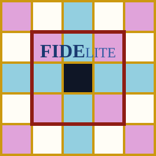
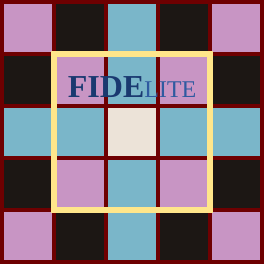
Ad iki parçadan oluşuyor: FIDE + Lite. Birleşince Fransızca
fidélité okunuşuna düşer — sadakat, bağlılık. Anlattığı da bu:
dosya küçülürken kural kitabına bağlılığın küçülmemesi. “Lite” hafiflik,
“Fide” federasyon; ikisi bir arada, hafiflik uğruna hiçbir maddenin atılmadığı
bir hakem.
Logo tek bir karenin etrafına kurulu. Ortadaki kare
başlangıç, geri kalan yirmi dört kare o kareden hareket eden taşların
gidebileceği yerler.
The name has two parts: FIDE + Lite. Together they echo the French
fidélité — fidelity, adherence. That is precisely the point: the file
shrinks, its adherence to the rulebook does not. “Lite” stands for lightness, “Fide” for
the federation; together, an arbiter that drops no article for the sake of being
light.
The logo is built around a single square. The square at the centre is the
origin; the remaining twenty-four squares are where pieces moving from that
square can go.
Başlangıç — ortadaki tek kare
At — sekiz nötr kare, L sıçramaları
Kale — sekiz turkuaz kare, dört düz ışın
Fil — sekiz leylak kare, dört çapraz ışın
Vezir — kale ve fil karelerinin tümü
Şah — bordosarı çerçeve, bir adımlık erim
Piyon — tek karelik ilerlemesinin düştüğü kare: FIDElite yazısı
Origin — the single square at the centre
Knight — eight neutral squares, the L-shaped jumps
Rook — eight turquoise squares, four straight rays
Bishop — eight lilac squares, four diagonal rays
Queen — every rook and bishop square
King — the maroonyellow frame, a one-step range
Pawn — the square its single-step advance lands on: the FIDElite wordmark
Kurallar
Rules
Kuralların okunuşu
How the rules read
Bu sekme kitabın kendisiyle ilgili: hangi madde ne diyor, onu nasıl okuduğum ve yorumun tartışmalı olduğu yerler. Kod yok; motorun bunları nasıl yaptığı
“Motorun kendisi” sekmesinde.
Bunun yerine her maddenin altında bir sınama var: bir pozisyon, doğru hüküm ve
maddeyi yüzeysel uygulayan bir sistemin verdiği yanlış cevap. Kuralı okumak bir şey,
onu her pozisyonda doğru uygulamak başka bir şey; aradaki farkı ancak pozisyon
gösterir.
Kural bölümleri (1–7) aynı parçaları aynı sırayla kullanıyor, ama her parça her bölümde yok: kitap ne diyor, algoritmada nasıl
okunur, varsa FideLite'ta ne yapıldığı ve uygulama maliyeti. 8. bölüm FIDE'yi
USCF ve platformlarla karşılaştırıyor, 9. bölüm önerdiğim karma sistemi anlatıyor, 10. bölüm
ise oyunu değil çerçevesini değiştiren kurallara bakıyor.
Madde numaraları, FIDE'nin 1 Ocak 2023'te yürürlüğe giren Satranç Kuralları'na göre — FIDE Handbook ↗️.
This tab is about the book itself: what each article says, how I read it, and where that
reading is contested. There is no code here; for how the engine does any of this, see the “The engine itself” tab.
What sits under each article instead is a test: a position, the correct ruling,
and the wrong answer a system gives when it applies the article superficially. Reading a
rule is one thing; applying it correctly in every position is another, and only a position
shows the gap.
The rule sections (1–7) use the same parts in the same order, though not every part appears in every section: what the book says, how an algorithm
reads it, where relevant what FideLite does, and what it costs to apply. Section
8 compares FIDE with USCF and the platforms; section 9 describes the hybrid I propose; section
10 looks at the rules that change not the game but its frame.
Article numbers follow the FIDE Laws of Chess that took effect on 1 January 2023 — FIDE Handbook ↗️.
1. Taş hareketleri ve geçerlilik
1. How the pieces move, and what makes a move legal
Kitap ne diyor
What the book says
Piyon — 3.7. Düz ileri, boş bir kareye bir kare gider; ilk hamlesinde, önündeki iki kare boşsa iki kare de gidebilir. Çapraz ileri bir kareye yalnızca taş alarak gider; düz giderken alamaz. Geçerken alma ve terfi, özel hamleler bölümünde.
Fil — 3.2. Çaprazlarda, önü açık olduğu sürece istediği kadar ilerler.
Kale — 3.3. Dikeylerde ve yataylarda, önü açık olduğu sürece istediği kadar ilerler.
Vezir — 3.4. Fil ile kalenin birleşimi: sekiz doğrultuda, önü açık olduğu sürece istediği kadar ilerler.
At — 3.6. “L” çizer: bir doğrultuda iki kare, ona dik bir kare. Aradaki taşların üstünden atlayabilen tek taş.
Şah — 3.8. Kısa menzilli: her yöne bir kare. Rok, özel hamleler bölümünde.
Pawn — 3.7. Moves straight forward one square, onto an empty square; on its first move it may advance two squares if both are empty. It moves diagonally forward one square only when capturing, and cannot capture straight ahead. En passant and promotion are among the special moves.
Bishop — 3.2. Moves any number of squares along a diagonal, as long as the path is clear.
Rook — 3.3. Moves any number of squares along a file or a rank, as long as the path is clear.
Queen — 3.4. Bishop and rook combined: any number of squares in eight directions, as long as the path is clear.
Knight — 3.6. Draws an L: two squares in one direction, one at right angles. The only piece that can jump over other pieces.
King — 3.8. Short-ranged: one square in any direction. Castling is among the special moves.
Bir hareketin geçerli hamle sayılması için dört koşul birlikte sağlanmalı:
For a movement to count as a legal move, four conditions must all hold:
Hareket biçimi. Hamle, taşın yukarıdaki hareket biçimine uymalıdır.
Yolun açıklığı. At dışındaki bütün taşlar için aradaki karelerde hiçbir taş bulunmamalıdır. At bu şarta bağlı değil; bu bir istisna değil, atın hareketinin tanımı.
Hedef kare. Boş olmalı ya da orada rakip taş bulunmalıdır; kendi taşının durduğu kareye hamle yapılamaz.
Şah güvenliği. Hiçbir hamle kendi şahını tehdit altında bırakamaz. Diğer üçü hamlenin şekliyle ilgili; bu dördüncüsü sonucuyla.
The piece's movement. The move must follow that piece's pattern above.
A clear path. For every piece except the knight, no piece may stand on the squares in between. The knight is free of this condition, and that is not an exception to the rule but part of how the knight is defined.
The destination square. It must be empty or hold an opponent’s piece; you cannot move onto a square occupied by one of your own pieces.
King safety. No move may leave your own king attacked. The first three conditions are about the shape of a move; this fourth one is about its consequence.
Algoritmada nasıl okunur
How an algorithm reads it
Bu dördü birlikte geçerli hamleyi tanımlıyor ve kitabın geri kalanı baştan sona bu
tek tanıma yaslanıyor. Mat, pat, ölü pozisyon, süre bitimi — hepsi “geçerli hamle” ya da
“geçerli hamle dizisi” diyor. Tanım kayarsa ona dayanan her madde de kayar.
Together these four define a legal move, and the rest of the book leans on that one
definition from beginning to end. Checkmate, stalemate, dead position, flag fall — every one
of them speaks of a “legal move” or a “series of legal moves”. Shift the definition and every article that rests on it shifts with it.
Uygulama maliyeti. Dördüncü koşul ilk üçünden pahalı: bir hamlenin kendi şahını tehdit altında bırakıp bırakmadığı, hamle yapılmadan anlaşılmıyor. Bir hakem algoritmasında en sık çalışan kontrol de bu.
What it costs to apply. The fourth condition costs more than the first three: whether a move leaves your own king in check cannot be known without making it. It is also the check an arbiter algorithm runs most often.
2. Özel hamleler
2. The special moves
Rok — 3.8.2
Castling — 3.8.2
Kitap ne diyor
What the book says
Kitap rokta iki ayrı şeyi ayrı alt maddelere koyuyor ve bu ayrım ilk bakışta göründüğünden daha önemli. 3.8.2.1 hakkın kaybı: şah ya da o kale oynadıysa hak gider ve bir
daha geri gelmez. 3.8.2.2 geçici engel: şahın durduğu, geçtiği veya vardığı karelerden
biri tehdit ediliyorsa ya da şahla kale arasında taş varsa rok o an yapılamaz — ama hak
yerinde durur.
The book puts two different things into two different sub-articles here, and the distinction
matters more than it first appears. 3.8.2.1, the right is lost: if the king has moved,
or that rook has moved, the right is gone and never returns. 3.8.2.2, castling is
prevented temporarily: if the square the king stands on, crosses, or lands on is attacked,
or if a piece stands between king and rook, castling cannot be played right now — but the
right itself stays.
Üç kare, iki değil. Şahın durduğu, geçtiği ve vardığı kare — üçü de tehdit edilmemelidir. Vardığı kare çoğu özette atlanıyor; oysa üçü de aynı alt maddede.
Kale muaf. Bu üç kare şahın kareleri. Kalenin geçtiği kare tehdit altında olabilir: uzun rokta b1 tehdit ediliyorken rok yine geçerlidir. Kalenin yolunda istenen tek şey boş olması.
Şah oynarsa ikisi birden gider. Şah hareket ettiğinde iki kanattaki rok hakkı da düşer; kale hareket ettiğinde yalnızca o kanattaki.
Three squares, not two. The square the king stands on, the one it crosses, and the one it lands on — none of the three may be attacked. The landing square is the one most summaries drop; all three sit in the same sub-article.
The rook is exempt. Those three squares are the king’s. The square the rook crosses may well be attacked: castling queenside with b1 under attack is perfectly legal. The rook’s path only has to be empty.
If the king moves, both rights go. A king move forfeits the right on both sides; a rook move forfeits only the right on that rook's side.
♜♚♜♚♚
Uzun rok, b1 tehdit ediliyorken. Rok geçerli — üç kare şartı şahın kareleri için (e1, d1, c1), kalenin geçtiği kare için değil. Şah e1'den d1 üzerinden c1'e gidiyor: yeşil çerçeveler çıkış ve varış karesi, ok geçtiği kare, soluk şah varış. Kırmızımsı kareler siyah kalenin tehdit ettikleri.
♜♚♜♚♚
Queenside castling with b1 attacked. The move is legal — the three-square condition covers the king’s squares (e1, d1, c1), not the square the rook crosses. The king goes from e1 through d1 to c1: the green frames mark where it starts and lands, the arrow the square it crosses, the faded king its arrival. The reddish squares are those the black rook attacks.
Uygulama maliyeti. Rok ancak dört ayrı koşulun kesişiminde geçerli: hakkın hâlâ durması, şahla kale arasının boş olması, şahın o an tehdit altında olmaması ve geçeceği ile varacağı karelerin tehdit edilmemesi. Maddeyi ötekilerden pahalı yapan, bu tehdit sorguları.
What it costs to apply. Castling is legal only at the intersection of four conditions: the right still stands, the squares between king and rook are empty, the king is not in check right now, and the squares it crosses and lands on are not attacked. Those attack queries are what make this article costlier than its neighbours.
Geçerken alma — 3.7.3.1
En passant — 3.7.3.1
Kitap ne diyor
What the book says
Bir piyon ilk hamlesinde iki kare ilerleyip rakip bir piyonun yanına gelirse, o rakip piyon
onu tek kare ilerlemiş gibi alabilir: çapraz olarak, atlanan kareye gider ve iki kare
ilerleyen piyon tahtadan kalkar. Hak yalnızca hemen ardından gelen hamlede geçerlidir. O hamlede kullanılmazsa kalıcı
olarak düşer — bir hamle sonra geri gelmez.
If a pawn advances two squares on its first move and lands beside an opposing pawn, the
opposing pawn may capture it as though it had moved only one square: it moves diagonally
onto the square that was skipped, and the pawn that advanced two squares is removed from the board. The right lasts only for the
very next move. If it is not used on that move, it is gone for good — it does not come back a move later.
Algoritmada nasıl okunur
How an algorithm reads it
Geçerken alma ayrı bir kural değil, başka bir kuralın yaması. Piyonun ilk hamlesinde
iki kare ilerleyebilmesi açılışı hızlandırmak için getirildi; ama bununla birlikte piyon, rakip piyonun tehdit ettiği kareyi atlayıp geçebilir hâle geldi. Geçerken alma tam olarak o deliği
kapatıyor: iki kare ilerleyen piyon, tek kare ilerlemiş gibi alınabiliyor.
En passant is not a separate rule but a patch on another one. The pawn’s two-square
first move was introduced to speed up the opening; but it also let a pawn slip past a square
an opposing pawn was covering. En passant closes exactly that hole: a pawn that has just moved
two squares may be captured as though it had moved one.
Uygulama maliyeti. Alışın kendisi ucuz: alan piyonun indiği kareyle, yani atlanan kareyle ifade edildiği için ayrı bir kural gerektirmiyor. Pahalı olan, hakkın doğup doğmadığına karar vermek — buna 4. bölümde dönüyoruz.
What it costs to apply. The capture itself is cheap: it is expressed through the skipped square, where the capturing pawn lands, so it needs no rule of its own. What is costly is deciding whether the right arises at all — we come back to that in section 4.
Terfi — 3.7.3.3
Promotion — 3.7.3.3
Kitap ne diyor
What the book says
Zorunludur. Son yataya ulaşan piyon piyon kalamaz. Terfi bir seçenek değil, hamlenin tamamlanma koşulu.
Anındadır. Ayrı bir hamle değil, aynı hamlenin parçası. Yeni taş hemen oyundadır ve aynı hamlede şah çekebilir.
Alınmış taşlarla sınırlı değildir. Tahtada zaten vezir varken ikinci bir vezir doğabilir; kitap sayı sınırı koymuyor.
Alt terfi yalnızca estetik bir imkân değil. Vezire terfinin rakibi pata soktuğu, kaleye terfinin ise kazandırdığı pozisyonlar var — Saavedra etüdünün bütün konusu budur. Ata terfi de şah çekerek ya da çatal kurarak kazanabilir.
It is compulsory. A pawn reaching the last rank cannot stay a pawn. Promotion is not an option but the condition for completing the move.
It is immediate. Not a separate move but part of the same one. The new piece is in play at once and can give check on that very move.
It is not limited to captured pieces. A second queen may appear while the first is still on the board; the book sets no limit.
Underpromotion is not merely an aesthetic option. There are positions where promoting to a queen stalemates the opponent and promoting to a rook wins — that is the whole point of the Saavedra study. A knight promotion can win too, by giving check or forking.
Algoritmada nasıl okunur
How an algorithm reads it
Sonucu şu: vezir her zaman en iyi seçim değildir. Terfiyi otomatik olarak vezire çeviren bir oyun daha basit bir oyundur ve bence bunun kaybı sanıldığından büyüktür. Alt terfi, tahtadaki
hiçbir taşın koşulsuz üstün olmadığı bir oyun yaratıyor; oyunun derinliğinin ciddi bir
kısmı buradan geliyor.
The consequence: the queen is not always the best choice. A game that promotes
automatically to a queen is a simpler game, and I think more is lost than people assume.
Underpromotion creates a game in which no piece on the board is unconditionally superior;
a good part of the game’s depth comes from exactly that.
Uygulama maliyeti. Terfi bir seçim olduğu için arayüzün bir soru sorması, algoritmanın da dört seçeneği birden hesaba katması gerekiyor. Terfi otomatik olarak vezire yapılsaydı bu maddenin maliyeti neredeyse sıfır olurdu.
What it costs to apply. Because promotion is a choice, the interface has to ask a question and the algorithm has to account for all four answers. Promote automatically to a queen and this article costs almost nothing.
Özel hamleler oyuna ne katıyor
What the special moves add
Rok ve iki adım tahtada yeni bir şey yaratmıyor: şahla kalenin rokla vardığı karelere
de, piyonun iki adımda vardığı kareye de sıradan hamlelerle ulaşılabiliyor. Katkıları
tempo: oyunu hızlandırıyorlar, yan etki olarak da bazı özel durumlarda oyuna estetik
katıyorlar. Alt terfi öyle değil. Her terfide dal sayısını dörde katlıyor ve terfiler
çoğaldıkça oyunun uzayı üstel biçimde büyüyor. Bu yüzden bana göre taş hareketleri ve geçerlilikten sonra kurallara yapılmış en önemli ekleme bu. Ekleme diyorum, çünkü uzun
süre terfinin tek bir yönü vardı: ortaçağ satrancında piyon yalnızca vezirin atası fers'e
dönüşebiliyordu.
Castling and the double step create nothing new on the board: the squares king and rook
reach by castling, and the square a pawn reaches in two steps, can all be reached by ordinary
moves. What they add is tempo: they speed the game up, and as a side effect lend it
some beauty in particular cases. Underpromotion is different. It multiplies the branches at
every promotion by four, and as promotions accumulate the space of the game grows
exponentially. That is why, to my mind, it is the most important addition to the rules after
the piece moves and legality themselves. I say addition because for a long time
promotion went one way only: in medieval chess a pawn could become nothing but the fers, the
queen's ancestor.
3. Şah, mat ve pat
3. Check, checkmate and stalemate
Kitap ne diyor
What the book says
Şah çekme — 3.9. Şah, rakibin bir ya da birden fazla taşı tarafından tehdit ediliyorsa şah çekilmiş olur. Tehdit için o taşın şahın karesine gerçekten gidebilmesi gerekmiyor: kendi şahını açıkta bırakacağı için yerinden oynayamayan, açmazdaki bir taş da şah çeker. Açmaz taşın hamlesini engeller, tehdidini değil.
Şah tahtadan hiç kalkmaz. Oyun matla biter, şahın alınmasıyla değil. Bu bir üslup tercihi değil, bütün geçerlilik tanımının dayandığı yer: kendi şahını tehdit altında bırakan hamle kötü bir hamle değil, var olmayan bir hamledir.
Mat — 5.1.1. Şah tehdit altında ve tehdidi kaldıracak hiçbir geçerli hamle yok. Mat eden kazanır ve oyun o anda biter.
Pat — 5.2.1. Sırası gelen tarafın şahı tehdit altında değil ama hiçbir geçerli hamlesi yok. Oyun yine o anda, berabere biter.
İkisini tek bir şey ayırıyor. Ortak noktaları, sırası gelenin oynayabileceği geçerli bir hamlesinin olmaması. Sonucu belirleyen tek şey şahın o anda tehdit altında olup olmadığı.
Check — 3.9. A king is in check when one or more of the opponent’s pieces attack it. The attacking piece does not have to be able to actually move to the king’s square: a pinned piece, which cannot move because that would expose its own king, still gives check. A pin stops the piece’s move, not its attack.
The king never leaves the board. The game ends in mate, not in the king being captured. This is not a stylistic choice; it is where the whole definition of legality rests. A move that leaves your own king attacked is not a bad move; it is a move that does not exist.
Checkmate — 5.1.1. The king is attacked and no legal move removes the attack. The mating side wins, and the game ends at that moment.
Stalemate — 5.2.1. The king of the side to move is not attacked, but that side has no legal move. The game is drawn, again at that moment.
A single thing separates the two. What they share is that the side to move has no legal move. The only thing that decides the result is whether its king is attacked.
Uygulama maliyeti. Hemen çözülür. Sıradaki tarafın bir geçerli hamlesi var mı ve şahı tehdit altında mı — ikisi de mevcut pozisyondan cevaplanır; o tarafın kendi hamlelerinin ötesine bakan bir arama gerekmez.
What it costs to apply. Settled on the spot. Does the side to move have a legal move, and is its king attacked — both are answered from the position in front of you; no search beyond that side's own moves is needed.
Çifte şah her biçimde olmaz
Not every double check can happen
Bir taş üç biçimde şah çekebilir:
Sıçrayışla. At, bir eksende iki, öbüründe bir kare atlar: (±1, ±2) ve (±2, ±1). At, taşların üstünden atladığı için aradaki taşlar onu durdurmaz; atın çektiği şaha araya taş koyarak karşılık verilemez.
Çapraz ışınla. Taş iki eksende eşit ilerler, (±1, ±1) yönünde. Bu ışından fil ve vezir şah çeker; piyonun alışı da bunun tek adımlık biçimidir.
Düz ışınla. Taş yalnız bir eksende ilerler, (±1, 0) ve (0, ±1) yönünde. Bu ışından kale ve vezir şah çeker.
A piece can give check in three ways:
By a leap. The knight jumps two squares along one axis and one along the other: (±1, ±2) and (±2, ±1). Pieces in between do not stop it, because the knight jumps over them; a knight's check cannot be met by putting a piece in the way.
Along a diagonal ray. The piece moves equally along both axes, in the directions (±1, ±1). The bishop and the queen give check along this ray; the pawn's capture is its one-step form.
Along a straight ray. The piece moves along one axis only, in the directions (±1, 0) and (0, ±1). The rook and the queen give check along this ray.
Çifte şah tek bir hamleyle olur: bir taş hattan çekilip arkasında kalan ışını açar — açarak
şah — ve kendisi de şah çeker. Terfi ve geçerken alma da bu kalıbın özel hâlleridir. Geçerken almanın bir
ayrıcalığı daha var: iki kareyi birden boşalttığı için iki ışını birlikte açabilir; bu durumda iki
şahı da açılan ışınlar çeker, piyonun kendisi şah çekmez.
Rokla da şah çekilebilir, ama yalnızca kaleyle. Rokta boşalan kareler ilk yatayda, yani tahtanın
kenarındadır; bu yatayda açılabilecek her ışının önünde de rok yapan kalenin kendisi durur. Bu
yüzden rok şaha giden bir ışın açamaz ve çifte şah çekemez.
Açılabilen tek şey ışındır; bu yüzden her çifte şahta şahlardan en az biri bir ışından gelir.
Atın sıçrayışı da piyonun tek adımlık şahı da açılamaz: iki at, iki piyon ya da bir at ile bir piyon aynı anda
şah çekemez.
Açılan ışının önünde duran taş o ışının ailesinden olamaz; olsaydı, hamleden önce o ışından
kendisi şah çekiyor olurdu. Çapraz bir ışının önünde ancak kale, at, piyon ya da şah durabilir;
düz bir ışının önünde ancak fil, at, piyon ya da şah.
Buradan üç sonuç çıkıyor:
Farklı aileler. İkinci şah açılan ışından farklı bir aileden geliyorsa çifte şah olağandır: at ile bir ışın, çapraz ışın ile düz ışın, piyon ile düz ışın.
Çapraz ile çapraz. Çapraz aileden iki taş hiçbir zaman aynı anda şah çekemez. Çapraz bir ışının önünde durabilen taşlardan çaprazdan şah çekebilecek olan yalnızca piyon, onun da iki yolu kapalı: ilerlerken tek bir düz adım atar, bu adım karenin rengini değiştirir ve piyon şahın köşegenine düşemez; çapraz alırsa ya aynı köşegende kalır ya da kesişen köşegene geçer. Geçerken almada boşalan iki kare de farklı renktedir.
Düz ile düz. Düz aileden iki taş yalnızca tek bir yolla aynı anda şah çekebilir: piyon çapraz alarak kale ya da vezir olarak terfi eder. Bu çapraz adım onu kapattığı hattan çıkarıp şahın üzerinde durduğu bir hatta taşır: diyagramdaki gibi dikeyden şahın yatayına ya da yataydan şahın dikeyine.
A double check is given by a single move: a piece steps off a line, opens the ray behind it — a
discovered check — and gives check itself. Promotion and en passant are special cases of this pattern. En passant has
one more privilege: since it empties two squares at once, it can open two rays together; then
both checks come from the opened rays and the pawn itself gives none.
Castling can give check too, but only with the rook. The squares it empties lie on the first
rank, the edge of the board, and any ray it could open along that rank is blocked by the castling
rook itself. So castling cannot open a ray towards the king and cannot give double check.
Only a ray can be opened, so in every double check at least one of the checks comes from a
ray. Neither a knight's leap nor a pawn's one-step check can be opened: two knights, two pawns, or a knight
and a pawn cannot give check at the same time.
The piece standing in front of the opened ray cannot belong to that ray's family; if it did,
it would already have been giving check along that ray before the move. Only a rook, a knight, a
pawn or a king can stand in front of a diagonal ray; only a bishop, a knight, a pawn or a king in
front of a straight one.
Three results follow:
Different families. If the second check comes from a family other than the opened ray's, the double check is ordinary: a knight with a ray, a diagonal ray with a straight ray, a pawn with a straight ray.
Diagonal with diagonal. Two pieces of the diagonal family can never give check at the same time. Of the pieces that can stand in front of a diagonal ray, only the pawn could give a diagonal check, and both routes are closed: its advance is a single straight step, which changes the colour of its square, so it cannot land on the king's diagonal; if it captures diagonally, it either stays on the same diagonal or crosses onto the intersecting one. The two squares emptied by en passant are of different colours as well.
Straight with straight. Two pieces of the straight family can give check at the same time in only one way: a pawn captures diagonally and promotes to a rook or a queen. That diagonal step takes it off the line it was blocking and onto a line through the king: off the file and onto the king's rank, as in the diagram, or off the rank and onto the king's file.
♚♜♜♚
e7'deki piyon f8'deki atı alıp kale olarak terfi etti. e4'teki kale dikeyden, f8'deki yeni kale yataydan şah çekiyor. Piyon vezir olarak terfi etseydi de aynı çifte şah olurdu; bu kez ikinci şahı vezir, düz ışınından çekerdi. Yeşil çerçeveler piyonun çıkış ve varış kareleri.
Aynı aileden iki ışının birlikte şah çekebildiği tek durum bu: düz ışınlarda tek bir istisna
var, çapraz ışınlarda hiç yok.
♚♜♜♚
The pawn on e7 took the knight on f8 and promoted to a rook. The rook on e4 checks along the file, the new rook on f8 along the rank. Had the pawn promoted to a queen, the double check would be the same, with the queen giving the second check along its straight ray. The green frames mark the pawn's squares of departure and arrival.
This is the only case in which two rays of the same family can give check together: straight
rays have a single exception, diagonal rays none.
4. Sayaçlar ve tekrar — 9.2 · 9.3 · 9.6
4. Counters and repetition — 9.2 · 9.3 · 9.6
Kitap ne diyor
What the book says
Bir oyuncunun hamlesi bir yarım hamle, iki tarafın karşılıklı hamlesi bir tam hamle.
A move by one player is a ply; a move by each side is a full move.
50 ve 75 hamle sayacı. İki sınır da aynı sayaca bakar: piyon oynanmadığı ve taş alınmadığı sürece ilerler; ikisinden biri olduğunda sıfırlanır.
Pozisyon tekrarı — 9.2.3. İki pozisyonun aynı sayılması için sıra aynı tarafta olmalı, aynı tür ve renkteki taşlar aynı karelerde durmalı ve iki tarafın mümkün hamleleri aynı olmalıdır.
Tekrarların ardışık olması gerekmez. Aynı pozisyon oyunun üç ayrı yerinde doğmuş olabilir; önemli olan tekrarın kaç kez olduğu, aralarındaki mesafe değil.
Talebe bağlı olanlar — 9.2, 9.3. Üçlü tekrar ve 50 tam hamle (100 yarım hamle) doğru talep edilirse beraberlik verilir.
Kendiliğinden işleyenler — 9.6. Beşli tekrar ve 75 tam hamle (150 yarım hamle) dolduğunda oyun, talep beklenmeden berabere biter.
Matın üstünlüğü — 9.6.2. Bir hamle mat ediyorsa, aynı hamlede 50 ya da 75 hamle sınırı dolsa bile mat geçerlidir: hamleye iliştirilen 50 hamle talebi yok sayılır, 75 hamlenin otomatik beraberliği doğmaz. Uzun oyun sonlarında rastlanan bir çakışma bu. Tekrarla çakışma ise mümkün değil: mat edilmiş bir pozisyon daha önce görülmüş olamaz — görülseydi oyun orada biterdi. Kitap bunu iki yerden söylüyor: 75 hamle için 9.6.2'nin kendi metninde açıkça yazılı, 50 hamle talebi içinse 5.1.1 yetiyor — mat oyunu o anda bitirir.
The 50- and 75-move counter. One counter serves both limits: it advances as long as no pawn moves and nothing is captured; either event resets it.
Repetition of position — 9.2.3. Two positions count as the same when the same player has the move, pieces of the same kind and colour stand on the same squares, and the possible moves of both players are the same.
The occurrences need not be consecutive. The same position may arise at three separate points in a game; what counts is how many times, not how far apart.
The ones that need a claim — 9.2, 9.3. The game is drawn on a correct claim of threefold repetition or of 50 moves by each player (100 plies).
The automatic ones — 9.6. Fivefold repetition and 75 moves by each player (150 plies) end the game in a draw without waiting for a claim.
Mate takes precedence — 9.6.2. If a move delivers mate, the mate stands even when the 50- or 75-move limit is reached on that same move: a 50-move claim attached to the move is ignored, and the automatic 75-move draw does not arise. The coincidence does turn up in long endgames. With repetition it cannot happen: a checkmated position cannot have appeared before — had it, the game would have ended there. The book says so in two places: for 75 moves it is written out in 9.6.2 itself, and for a 50-move claim 5.1.1 is enough — mate ends the game on the spot.
“Mümkün hamleler” ne demek
What “possible moves” means
Tekrarın bütün ağırlığı bu ifadede. Kitap iki durumu açıkça ayrı ayrı belirtiyor ve ikisini
farklı ölçüyor:
9.2.3.1 — geçerken alma: geçerlilik (imkân) bazlı. Dizinin başında bir piyon geçerken
alınabiliyorduysa, sonradan alınamadığında pozisyonlar aynı sayılmaz. Ölçülen şey hakkın
kullanılabilirliği.
9.2.3.2 — rok: hak bazlı. Rok hakkı ancak şah ya da kale oynadığında
kaybolur. Yolda taş olduğu ya da kareler tehdit edildiği için rokun o an yapılamıyor olması
pozisyonu değiştirmez.
The whole weight of repetition sits in that phrase. The book spells out two cases explicitly,
and measures them differently:
9.2.3.1 — en passant: measured by legality (availability). If a pawn could have been captured
en passant at the start of the sequence and can no longer be, the positions are not the same.
What is measured is whether the right is usable.
9.2.3.2 — castling: measured by right. Castling rights are lost only when the king
or the rook moves. That castling happens to be unplayable right now — a piece in the
way, a square attacked — does not change the position.
Algoritmada nasıl okunur
How an algorithm reads it
♜♚♟♟♚
Siyah az önce g7–g5 oynadı ve geçerken alma karesi g6. Ama f5'teki beyaz piyon, f8'deki kale yüzünden açmazda: fxg6 oynanırsa f dikeyi açılır ve
beyaz şah tehdit altında kalır. Alış geçerli olmadığı için imkân da doğmaz.
9.2.3.1'deki şart, alışın gerçekten geçerli olmasını istiyor. Yandaki
pozisyonda siyah az önce bir piyonunu iki kare ilerletti, ama alacak piyon açmazda: alış oynanamaz, dolayısıyla imkân hiç doğmaz.
Ayrım kritik, çünkü almayı yalnızca oynanma anında reddetmek yeterli değil. Geçerken
almanın kendisi açısından ikisi aynı sonucu verir — hamle her hâlükârda oynanamaz. Fark
tekrar sayımında ortaya çıkıyor: imkân, pozisyonun tanımının bir parçası. İmkân varmış gibi sayılırsa
FIDE'nin aynı saydığı iki pozisyon farklı sayılır ve üçüncü tekrar geç gelir ya da hiç
gelmez.
Bedeli somut: berabere bitmesi gereken bir oyun yenilgiyle bitebilir. Alış zaten oynanamadığı için bu hata gözle görülmez — yalnızca tekrar sayımında yaşar.
♜♚♟♟♚
Black has just played g7–g5 and the en passant square is g6. But the white
pawn on f5 is pinned against its king by the rook on f8: play fxg6 and the f-file opens,
leaving the white king under attack. Since the capture is not legal, no en passant
availability arises either.
The condition in 9.2.3.1 requires the capture to be genuinely legal. In the position alongside, Black has just advanced a pawn two squares, but the capturing pawn is pinned
against its own king: the capture cannot be played, so the availability never arises at
all.
The distinction is critical, because refusing the capture only at the moment it is played
is not enough. As far as en passant itself goes the two give the same outcome — the move is
unplayable either way. The difference shows up in the counting: availability is part of what
defines the position. Treat it as present and two positions FIDE counts as identical are
counted apart, so the third repetition arrives late or never arrives.
The price is concrete: a game that should have been drawn can end in a loss. And because the
capture was unplayable anyway, the error is invisible on the board — it lives only in the
repetition count.
Üç ölçü, iki hak
Three measures for two rights
Geçerken alma ve rok için tekrar sayımında üç ayrı ölçü kullanılabiliyor — hak izi, ham-geçerli (şah güvenliğine bakılmadan, yalnızca geometrik olarak mümkün olan hareket) ve geçerli — ve her biri aynı tahtaları farklı bir pozisyon kümesine ayırıyor. Tablonun üst satırı pozisyonları en çok
ayıran ölçü, alt satırı en az ayıran; ayrım arttıkça tekrar da o kadar geç geliyor.
For en passant and for castling, the repetition count can use three different measures — the trace of the right, pseudo-legal (geometrically possible, with king safety not yet checked) and legal — and each one sorts the same boards into a different set of positions. The top row of the table
is the measure that tells positions apart the most, the bottom row the one that tells them
apart the least; the more positions are told apart, the later a repetition arrives.
Ölçü
Geçerken alma
Rok
Hakiz
İki kare ilerleme yetiyor; alacak piyon olmasa da iz kalıyor
Kalıcı hak: şah ya da o kale oynamadıkça duruyor
Ham-geçerli
Yanında alabilecek bir rakip piyon var; açmazda olup olmadığına bakılmıyor
Hak var ve şahla kale arasındaki kareler boş; tehdit edilen karelere bakılmıyor
Geçerli
Alış şu an gerçekten oynanabiliyor
Rok şu an oynanabiliyor: hak var, yol boş, şah tehdit edilmiyor, geçtiği ve indiği kareler tehdit edilmiyor
FIDE'nin seçtiği
Geçerli9.2.3.1
Hak9.2.3.2
Measure
En passant
Castling
Righttrace
A two-square advance is enough; the trace stays even with no pawn to capture
The permanent right: it stands as long as the king and that rook have not moved
Pseudo-legal
An opposing pawn stands alongside, ready to capture; whether it is pinned is not checked
The right exists and the squares between king and rook are empty; attacked squares are not checked
Legal
The capture can genuinely be played now
Castling can be played now: the right exists, the path is empty, the king is not in check, and the squares it crosses and lands on are not attacked
FIDE's choice
Legal9.2.3.1
Right9.2.3.2
FIDE iki hakkı iki ayrı satırdan ölçüyor: geçerken almayı imkân, roku hak olarak sayıyor ve bunu 9.2.3.1 ile 9.2.3.2'de açıkça yazıyor. İlk bakışta tutarsız görünüyor — ikisi de “şu an oynanabilir mi” sorusuna bağlıymış gibi duruyor — ve konu tartışmasız da değil. Kitabın gerekçesi, 2. bölümde gördüğümüz hak kaybı ile geçici engel ayrımı: geçerken almada geçici engel diye bir şey yok — hak ya vardır ya yoktur ve bir hamle sonra kalıcı olarak düşer; rokta ise ikisi ayrı şeyler ve kitap yalnızca kalıcı olanı sayıyor. Yaygın görüş de bu yönde: roku hak olarak saymak hem daha ucuz hem de pozisyonları daha isabetli ayırıyor. Bu ayrımın gerçek bir
oyunda bedeli de olmuştur:
Karpov–Miles, 1986'da Karpov 26. hamlesinde üçlü tekrar talep etti; 22. hamledeki pozisyonda
siyahın rok hakkı hâlâ durduğu gösterildi ve talep geçersiz sayıldı. O dönemin kurallarına göre Karpov'a saatinden beş
dakika ceza verildi; Miles ise bir süre düşündükten sonra beraberliği yine de kabul etti,
çünkü yanlış bir talep de bir beraberlik teklifidir. Aradaki fark tahtaya bakınca görünmüyordu.
FIDE measures the two rights on two different rows: it counts en passant as availability and castling as a right, and says so plainly in 9.2.3.1 and 9.2.3.2. At first glance it looks inconsistent — both seem tied to the question “can it be played right now” — and the point is not undisputed. The book's reasoning is the distinction between losing a right and temporary prevention that we met in section 2: en passant has no temporary prevention — the right either exists or it does not, and one move later it is permanently gone — while for castling the two are separate things, and the book counts only the permanent one. The widely accepted view points the same way: counting castling as a right is both cheaper and
more precise in telling positions apart. The distinction has already had a price in a real game: in Karpov–Miles, 1986, Karpov claimed a threefold repetition
on his 26th move; it was shown that in the position after his 22nd move Black still held
castling rights, and the claim was ruled invalid. Under the rules then in force, Karpov was penalised five minutes on his
clock; Miles thought for a while and then agreed to a draw anyway, because an incorrect claim
is also a draw offer. The
difference was invisible on the board.
♚♞♚♞♜
X ile Y: tahta birebir aynı. X'te şah hiç oynamadı, Y'de f1'e gidip geri döndü. İkisinde de g1'deki at rokun yolunu tıkıyor. Ag1–f3 yolu açınca X'te rok oynanabilir hâle geliyor, Y'de gelmiyor. Yeşil çerçeveler atın çıkış ve varış karesi, soluk at varış.
♚♞♚♞♜
X and Y: the board is identical. In X the king has never moved; in Y it went to f1 and came back. In both, the knight on g1 blocks castling. Once Ng1–f3 clears the way, castling becomes playable in X but not in Y. The green frames mark the knight's start and destination, the faded knight its arrival.
Neden o anki geçerlilik değil de hak. Bir durum makinesinin (her adımda bir durumdan ötekine geçen sistem) temel şartı
hafızasızlıktır: bir sonraki durum yalnızca şimdiki duruma ve yapılan hamleye bağlı
olmalı, geçmişe bakmaya gerek kalmamalı. Rok o anki geçerlilikle sayılsaydı bu şart
bozulurdu. Yandaki tahtayı iki ayrı oyunda düşünelim. X'te beyaz şah hiç oynamadı; Y'de
f1'e gidip geri döndü. İkisinde de g1'deki at yolu tıkadığı için rok şu an oynanamıyor.
Taşlar aynı karelerde, sıra aynı tarafta ve iki pozisyonun geçerli hamle listesi birebir
aynı; geçerli ölçüyle X ile Y aynı pozisyon sayılır. Şimdi ikisinde de aynı hamleyi
oynayalım: Ag1–f3. X'ten çıkan pozisyonda beyaz bir sonraki hamlesinde rok yapabilir,
Y'den çıkanda yapamaz. Aynı pozisyona aynı hamle uygulanınca iki farklı pozisyon
çıkıyorsa, başta aynı oldukları varsayımı yanlıştır. Demek ki pozisyonun içinde tahtada
görünmeyen bir hafıza var: rok hakkı. FEN onu KQkq alanında tutuyor.
Aynı sınama geçerken almada geçerli ölçünün neden yettiğini de gösteriyor. Hak
yalnızca bir yarım hamle yaşıyor: alış o an geçerli değilse, hangi hamle oynanırsa
oynansın bir sonraki pozisyonda hak zaten yok. Geçerli ölçüyle aynı sayılan iki pozisyonun
geleceği ayrışamıyor, yani gizli bir hafızaya gerek kalmıyor. Kitabın iki hakkı iki ayrı
satırdan ölçmesinin nedeni bu: her hak, en az ayıran ama geleceği farklı olan pozisyonları
yine de ayrı tutan ölçüyle sayılıyor.
Bu hafızaya yalnızca tekrar sayımı ihtiyaç duyuyor. Tekrar sayımı olmayan
bir hakemde rokta da geçerken almadaki gibi kolay bir yol seçilebiliyor: hak tutulmuyor,
yalnızca şahın ve kalenin karesine dokunulup dokunulmadığına bakılıyor. Rokta iki yol
arasındaki zorluk ve maliyet farkı küçük; ayrıntısı Ayrıntılı teknik
sekmesinde.
Why the right, and not playability at the moment. The basic requirement of a
state machine (a system that passes from one state to the next at each step) is memorylessness: the next state should depend only on the current state
and the move made, with no need to look back at the past. Had castling been counted by
whether it can be played right now, that requirement would break. Take the board alongside
in two different games. In X the white king has never moved; in Y it went to f1 and came
back. In both, castling cannot be played right now, because the knight on g1 blocks the
way. The pieces stand on the same squares, the same side is to move, and the two positions
have exactly the same list of legal moves; by the legal measure X and Y count as the same
position. Now play the same move in both: Ng1–f3. In the position that follows X, White
can castle on its next move; in the one that follows Y, it cannot. If the same move applied
to the same position yields two different positions, the assumption that they were the
same was wrong. So the position holds a memory that the board does not show: the castling
right. FEN keeps it in its KQkq field.
The same test shows why the legal measure is enough for en passant. The right lives for
a single ply: if the capture is not legal now, the right is gone in the next position
whatever move is played. Two positions the legal measure counts as the same cannot have
different futures, so no hidden memory is needed. That is why the book measures the two
rights on two different rows: each right is counted by the coarsest measure that still keeps
apart positions whose futures differ.
Only repetition counting needs this memory. In an arbiter that does not
count repetitions, castling can take an easier road just as en passant does: no right is
kept, and all that is checked is whether the king's and the rook's squares have been touched.
For castling the gap in difficulty and cost between the two roads is small; the details are on
the Technical detail tab.
Uygulamalar geçerken alma karesini farklı biçimlerde yazıyor. Hepsinde alışın kendisi
eninde sonunda geçerlilik süzgecinden geçtiği için fark tahtada görünmüyor, yalnızca tekrar
sayımında çıkıyor. En basit hâlinde kare, iki kare ilerleyen her piyon için yazılıyor — klasik FEN de böyle
yazar. Gösterim olarak doğru; ama tekrar anahtarı (pozisyonun tekrar sayımındaki kimliği: tahta, sıra, rok hakları ve geçerken alma karesi) olarak kullanıldığında açıkça yanlış ve
pozisyon tekrarı tanımına ters düşüyor. Geçerken alma
özel bir hamle; kareyi her çift adımda yazmak kural doğruluğu açısından yeterince hassas
değil. Tanım iki pozisyonda geçerken alma imkânlarının aynı olmasını istiyor, oysa
oynanamayacak bir alış kaydedildiğinde bu imkân kâğıt üzerinde var, tahtada yok: aynı
pozisyon iki ayrı pozisyon gibi sayılıyor ve kare artık pozisyonlar arasındaki gerçek bir
farkı göstermiyor. Chess.com gibi
bazı platformlar maddeyi farklı yorumlayıp tekrarı ham-geçerli ölçüyle sayıyor. Genel kabul
gören FIDE yorumu ise Lichess'in de yaptığı gibi kareyi yalnızca alış geçerliyse saymak.
Implementations write the en passant square in different ways. In all of them the capture
itself passes the legality filter in the end, so the difference never shows on the board —
only in the repetition count. In its simplest form the square is written after every
two-square pawn advance — which is how classic FEN writes it too. As notation that is correct;
used as a repetition key (a position's identity for the repetition count: the board, the side to move, the castling rights and the en passant square) it is plainly wrong and at odds with the definition of a repeated
position. En passant is a special move, and writing the square after
every double step is not precise enough for rule correctness. The definition asks that the en
passant possibilities of two positions be the same, yet when a capture that cannot be played
is recorded, the possibility exists on paper but not on the board: one position is counted as
two, and the square no longer marks a real difference between positions. Some platforms, Chess.com among them, read the article differently
and count repetition by the pseudo-legal measure. The generally accepted FIDE-compliant
reading, which Lichess follows too, is to count the square only if the capture is legal.
FideLite'ta. Geçerken alma karesi yalnızca alış geçerliyse yazılıyor — yanında bir rakip piyon var ve alış, aynı yataydaki iki kareyi birden boşalttığı hâlde alan tarafın şahını tehdide açmıyor. Rok ise kalıcı hak olarak tutuluyor: tahta görüntüsü, sıra bilgisi ve geçerken alma karesiyle birlikte rok hakları da tekrar anahtarının parçası. Yani FideLite, FIDE'nin iki satırını birebir uyguluyor.
In FideLite. The en passant square is written only if the capture is legal — an opposing pawn stands alongside, and the capture, which clears two squares of the same rank at once, does not expose the capturer's own king. Castling is kept as the permanent right: together with the board, the side to move and the en passant square, the castling rights are part of the repetition key. FideLite thus applies FIDE's two rows exactly.
Oyunu sonlu kılan iki sınır
The two limits that keep a game finite
Bu bölümdeki kendiliğinden işleyen iki sınır — 75 hamle ve beşli tekrar — oyunun
sonsuza kadar sürmesini tek başına engelleyebiliyor; her biri ayrı bir sonluluğa dayanıyor.
Sayacın dayanağı şu: piyon hamlesi ile alma geri alınamaz. Bir piyon geri gitmez, alınan taş
geri gelmez. İkisi de bir oyunda ancak sonlu sayıda olabilir — piyon da taş da sayılı.
Ve sayacı sıfırlayan tek şey bu ikisi. Öyleyse ikisi de tükendikten sonra sayaç durmadan
artar ve 150 yarım hamlede oyunu kendiliğinden bitirir. Kitap sayacı yalnızca bu ikisine bağlıyor;
aynı sınıftan iki olayın daha, rok hakkının ve geçerken alma hakkının düşmesinin de sayacı
sıfırlaması gerektiğini 9. bölümde savunuyorum.
Tekrarın dayanağı ise pozisyon uzayının sonlu olması: taşların yeri, sıra, rok hakları ve
geçerken alma karesi sonlu sayıda birleşim veriyor; bitmeyen bir oyun bir pozisyona er geç
beşinci kez dönmek zorunda.
Bu yüzden ölü pozisyon tespiti olmasa bile ölü bir pozisyonu iki sınırdan biri mutlaka
bitirir; oyunu olabildiğince uzatmaya çalışan taraflar bile bunu engelleyemez. Teoride 75 hamle
sayacı çok daha erken bitirir: k7/8/8/1p2p2p/1P2P2P/8/8/K7 w - - 0 1 pozisyonunda şahlar kendi üç
yataylarına kapalı; 576 dizilişin sıra bilgisiyle 1.152 pozisyonu var ve hiçbiri beşinci kez
gelmeden oynanabilecek en uzun dizi 4.608 yarım hamle, sayaç ise 150'de doluyor. Pratikte ise
tekrarın çok daha erken kestiği pozisyonlara sık rastlanıyor: kilitlilik hareketliliği düşürdüğü
için aynı pozisyon çabuk geri geliyor — 6. bölümdeki fil örneğinde beşli
tekrar 16. yarım hamlede geliyor.
Ölü pozisyon tespiti ise oyunu bitiren değil, erken bitiren kural:
ölü olmayan bir pozisyonda hiç devreye girmediği için tek başına sonluluğu garanti etmez, ama ölü olanı
ilk hamlede tanır.
Aynı akıl yürütme tersten okunduğunda, sonluluğun ne kadar az kuralla garanti edildiğini gösteriyor. Geçerlilik, mat, pat ve bu iki sınırdan biri yeter: bunları uygulayan bir
oyun sonsuza kadar süremez — imkânı yoktur. İkisi birden gerekmiyor; ölü pozisyon ise
sonluluk için hiç gerekli değil. O, oyunu doğru bitirmek için var, bitirmek
için değil.
Bu ayrım seviyelerde doğrudan görünüyor: her seviye oyunu bitiren
yeni hükümler ekliyor. En yalın seviyede ne sayaç ne tekrar sayımı var, dolayısıyla sonluluk da garanti değil —
tahtada yalnızca iki şah kaldığında oyun hiç bitmez. Garanti kendiliğinden işleyen sınırlarla doğuyor: 75 hamle de
beşli tekrar da tek başına yeter. Ölü pozisyon ve tekrar ise oyunun akışını hızlandıran,
makul ve pratik kurallar: sonucu çoğu zaman 150 yarım hamleyi beklemeden veriyorlar. İkisi ayrı bir kesinlikten besleniyor:
ölü pozisyon geometrik kesinlikten — matın gelmeyeceğini tahtanın kendisi söylüyor;
tekrar ise niyetin kesinliğinden — aynı pozisyona üçüncü kez dönmek kimsenin
ilerlemek istemediğini gösteriyor ve oyuncu talep edebiliyor, beşincide artık kimseye sormaya
gerek kalmıyor. Günlük oyunda da resmi turnuvada da bu kuralların oyuncuya kazandırdığı zaman
paha biçilmez. En üst seviyenin eklediği saat, terk, talep ve teklif ise ayrı bir boyut:
tahtanın değil insan etkileşiminin kuralları; onlar olmadan turnuva satrancı olmaz.
The two automatic limits in this section — 75 moves and fivefold
repetition — can each keep a game from running forever on its own; each rests on a
different kind of finiteness.
For the counter the reason is this: a pawn move and a capture cannot be undone. A pawn does not go back, a
captured piece does not return. Each can happen only a finite number of times in a game — there
are only so many pawns and pieces. And those two are the only things that reset the counter. So
once both are exhausted the counter climbs without interruption and ends the game by itself
at 150 plies. The book ties the counter to these two alone; in section 9 I argue
that two more events of the same class, the loss of a castling right and the lapse of an en
passant right, should reset it as well.
Repetition rests instead on the position space being finite: where the pieces stand,
the side to move, the castling rights and the en passant square give only finitely many
combinations, so a game that never ends must sooner or later come back to some position a
fifth time.
So even without dead-position detection, one of the two limits is certain to end a dead
position; not even two sides trying to drag the game out as long as possible can stop it.
In theory the 75-move counter is by far the earlier of the two: in k7/8/8/1p2p2p/1P2P2P/8/8/K7 w - - 0 1 the kings are
shut into their own three ranks; the 576 placements make 1,152 positions once the side to move
is counted, and the longest sequence in which none of them comes a fifth time runs to 4,608
plies, while the counter fills at 150. In practice, though, positions where repetition cuts in
much earlier are common: being blocked makes mobility collapse and brings the same position back
quickly — in the bishop example of section 6 fivefold repetition arrives on
ply 16.
Dead-position detection, on the other hand, is a rule that ends the game
early, not one that makes sure it ends: it never comes into play in a position that is not
dead, so on its own it guarantees no finiteness, but it recognises a dead one on the first move.
Read backwards, the same reasoning says how few rules it takes to guarantee
finiteness. Legality, checkmate, stalemate and one of these two limits are enough: a game
that enforces them cannot run forever; it is simply not possible. One is enough; the two are not needed together, and the
dead position is not needed for finiteness at all. It is there to end the game
correctly, not to make sure it ends.
The distinction is visible directly in the levels: each level adds
new rulings that end the game. The barest level has neither the counter nor a repetition count, so finiteness is not
guaranteed there — with only the two kings left on the board, the game never ends. The guarantee
comes with the automatic limits: the 75-move rule and fivefold repetition are
each enough on their own. Dead position and repetition, for their part, are sensible,
practical rules that speed the game along: they often deliver the result without waiting for
150 plies. Each draws on a different kind of certainty: the dead position on
geometric certainty — the board itself says mate will not come; repetition on
certainty of intent — returning to the same position a third time shows that no one
means to make progress, and the player may claim; at the fifth, no one needs to be asked. In
casual games and official tournaments alike, the time these rules save the players is
invaluable. What the top level adds — clock, resignation, claims, offers — is a separate
dimension: the rules not of the board but of human interaction, and without them
there is no tournament chess.
Geri alınamaz hamle geçmişi budar
An irreversible move prunes the past
Yarım hamle sayacını sıfırlayan bir hamle (piyon hamlesi ya da alış) ve bir rok hakkının
düşmesi, tekrar tablosunu o andan itibaren budar: öncesindeki pozisyonların hiçbiri bir daha
ortaya çıkamaz. Piyon geri gitmez, alınan taş geri gelmez; rok hakkı da pozisyonun tanımının
parçası olduğu için, hak düştükten sonra hakkın durduğu pozisyonlar yeniden doğamaz.
Tablonun o ana kadarki kısmı artık kesin olarak ölü veri.
Bu budamanın asıl işe yaradığı yer arama yapan motorlar. Bot tekrar kontrolünü aramanın
her düğümünde, saniyede milyonlarca kez yapıyor; geçmişi yalnızca son geri alınamaz hamleye
kadar taramak orada doğrudan hız demek. Hakemde ise kontrol yarım hamlede bir kez yapılıyor
ve pozisyonlar bir karma tablosunda (hash tablosu: kayda anahtarıyla doğrudan ulaşılan yapı) tutulduğu için bir bakış sabit sürede yapılıyor, tablonun boyuna bağlı
değil.
Tablonun büyümesinin kesin bir üst sınırı da var: 75 hamle kuralı kendiliğinden işlediği
için bir oyun en fazla 17.697 yarım hamle, yani 8.848,5 hamle ↗️ sürebilir.
Yukarıdaki sonluluk argümanının somut sayısı bu; tablo bundan fazla pozisyon tutamaz.
A move that resets the ply counter (a pawn move or a capture) and the loss of a castling
right both prune the repetition table from that moment on: none of the positions before it
can ever arise again. A pawn does not go back and a captured piece does not return; and since
a castling right is part of what defines a position, positions that held the right cannot
come back once it is lost. Everything the table holds up to that point is now dead data for
certain.
Where this pruning really pays is in engines that search. A bot checks for repetition at
every node of its search, millions of times a second; scanning the history only back to the
last irreversible move is raw speed there. In an arbiter the check runs once per ply, and
since the positions sit in a hash table (a structure that reaches an entry directly by its key), a lookup takes constant time however large the
table grows.
How large it can grow has a hard ceiling too: because the 75-move rule applies automatically,
a game can last at most 17,697 plies — 8,848.5 moves ↗️. That is the concrete
number behind the finiteness argument above; the table can never hold more positions than
that.
FideLite'ta. Motor kitaba uyuyor: sayaç yalnızca piyon hamlesinde ve alışta
sıfırlanıyor. Tekrar tablosu da hiç budanmıyor, oyun boyunca büyüyor. Pozisyonu 190 karakter
civarında bir metin anahtarıyla tutmasına rağmen en uzun oyunun sonunda bile yaklaşık
4,5 MB yer kaplıyor. Hissedilmeyecek bir yük; budamayı yazmak ise boşuna bayt harcamak
olurdu.
In FideLite. The engine follows the book: the counter resets only on a pawn move
and a capture. The repetition table is never pruned either; it grows for the whole game. Even
though it keys each position by a string of about 190 characters, at the end of the longest
possible game it takes up only about 4.5 MB. A load no one will feel; writing the pruning
would have been bytes spent for nothing.
Hamle listesi yerine sayaçlar 8.1 · dijitalde sayaçlara dönüşür
Counters instead of a scoresheet 8.1 · becomes counters digitally
Bu sayaçların tahta başındaki karşılığı oyuncunun kendi tuttuğu kayıt. FIDE oyuncudan
kendi hamlelerini ve rakibininkileri, hamle hamle ve okunaklı biçimde cebirsel
notasyonla kaydetmesini istiyor (8.1.1): elle kâğıt kayıt formuna ya da FIDE onaylı
elektronik kayda. FIDE'nin tanıdığı tek notasyon sistemi bu (Ek C ↗️); bilgisayar
satrancında SAN (Standard Algebraic Notation) adıyla bilinen, Nf3,
exd5, O-O diye yazılan biçim. Taş harfleri oyuncunun kendi dilinde
olabiliyor — Türkçe bir kayıtta A, F, K, V, Ş — SAN ise İngilizce harfleri sabitliyor.
Talebin dayanağı o kayıt. 50 hamlenin dolup dolmadığını, bir pozisyonun kaçıncı kez geldiğini
oyuncu yalnızca kayıttan çıkarabiliyor; onun dışında not tutmak bile yasak (11.3.1). Kural
oldukça katı. Hamleyi oynamadan önce kayda yazmak da yasak; istisnalardan biri 9.2 ve 9.3
talebi (8.1.2): talep hamleyi kayda yazarak yapılıyor, hakem de kayıttan doğruluyor. Kayıt
orada bir delil, çünkü masa başında geçersiz hamle de yanlış talep de mümkün; ikisinin cezası
da ona bakılarak veriliyor (7.5, 9.5).
Dijitalde bu yükün hiçbiri kalmıyor. Geçersiz hamle yapmak imkânsız, dolayısıyla cezası
da yok; yanlış bir talep de anında denetleniyor ve kimseye bir şey kaybettirmiyor. Kaydın delil olarak
taşıdığı iş kalkınca, oyuncunun ondan çıkarmak zorunda kaldığı iki sayı kalıyor: yarım hamle
sayacı ve tekrar sayısı.
Bu hesap otomatikleştirilmeli: iki sayı her hamlede ekranda güncel durmalı. Sayaç tam hamle değil yarım hamle saymalı; bence doğrusu bu. Talep oynanacak hamle
üzerinden de kurulabildiği için sınırı hangi yarım hamlenin doldurduğunu bilmek kritik: tam
hamleyle yazılsaydı ekrandaki “49” hem 98 hem 99 yarım hamle olabilirdi ve oyuncu sıradaki
hamlesinin elliyi tamamlayıp tamamlamadığını bilemezdi. Hassasiyet tek bir yarım hamleye kadar inmeli.
Pozisyonun kaçıncı kez görüldüğü de aynı şekilde sürekli bildirilmeli; böylece oyuncu hakkın doğduğunu sonradan öğrenmez, yaklaştığını görür. Bence bu, hakkı ancak doğduktan sonra
bir düğmeyi yakarak bildiren yaklaşımlardan daha tutarlı: kitap talebi oynanacak hamle
üzerinden de tanıyor, düğme ise yalnızca oynanmış olanı görüyor.
FIDE'yi, hatta USCF'yi baz alan sistemleri dijitale uyarlamanın en mantıklı yolu da bence
bu. Geçersiz hamlenin imkânsız, yanlış talebin bedelsiz olduğu bir ortamda sayıları otomatik veren
sayaçlar, yukarıdaki uyarlamalarla tamamen tutarlı: kaydın yükü kalktıysa, kayıttan
çıkarılan hesabın yükü de kalkmalı.
Not yasağı düşünüldüğünde bu FIDE'ye aykırı sayılabilir mi? Sayılırsa motor en baştan
aykırı olur: yalnızca geçerli hamleye izin veriyor, geçersiz hamleye 7.5'in cezasını hiç
uygulamıyor, talebi de kayıt yerine anında denetliyor. Kayıt, not yasağı ve ceza maddeleri
oyunun değil masa başının kuralları; delil üretmek ve dürüstlüğü korumak için varlar ve
dijitalde o işi platform kendisi görüyor. FIDE'nin kendi çevrimiçi yönetmeliği ↗️
de aynı yönde: oyun alanı yalnızca geçerli hamleleri kabul ediyor, bütün hamleler ve saatler
otomatik kaydedilip iki oyuncuya da gösteriliyor (3.1.2, 3.1.6). Not yasağı orada da geçerli
(9.6), ama platformun iki tarafa birden gösterdiği kayıt not sayılmıyor; sayaçlar da o
kaydın özeti.
Bunun platformlar arasında standart hâle gelmesi iyi olur. Hakkı olan bir oyuncu, o hakkı
kullanabilmek için hamle listesini geriye doğru saymak zorunda kalmamalı.
Over the board, what stands behind these counters is the players' own record. FIDE requires
each player to record their own moves and their opponent's, move after move and legibly, in
algebraic notation (8.1.1): by hand on the paper scoresheet or on a FIDE-certified
electronic scoresheet. It is the only notation system FIDE recognises (Appendix C ↗️);
computer chess knows it as SAN (Standard Algebraic Notation), the form that writes
Nf3, exd5, O-O. Piece letters may follow the player's own
language — a Turkish scoresheet writes A, F, K, V, Ş — while SAN fixes the English ones. The
record is what a claim stands on. Whether fifty moves have passed, how many times a position
has occurred — the player can work both out only from the scoresheet; keeping any other notes
is forbidden (11.3.1). The rule is strict. Writing a move down before playing it is forbidden
too; one of the exceptions is the claim under 9.2 or 9.3 (8.1.2): the claim is made by writing
the move on the scoresheet, and the arbiter checks it against the scoresheet. There the record
is evidence, because over the board both an illegal move and an incorrect claim are possible,
and the penalty for each is decided from it (7.5, 9.5).
Digitally none of that load remains. An illegal move is impossible, so it carries no
penalty; an incorrect claim is checked on the spot and costs nobody anything. With
the record no longer needed as evidence, what is left are the two numbers the player had to
work out of it: the ply counter and the repetition count.
That arithmetic should be automated: both numbers should stay current on screen after every move. The counter should count plies, not full moves; I think that is the right choice. Because a
claim can also be made on the move about to be played, knowing which ply fills the limit is
critical: in full moves a “49” on screen could mean 98 plies or 99, and the player could not
tell whether their next move completes the fifty. Precision has to reach down to the single ply.
How many times the position has occurred should be reported continuously in the same way, so the player does not learn afterwards that a right has arisen but sees it coming. I think that
is more consistent than approaches that announce a right only once it exists, by lighting up
a button: the book recognises a claim on the move about to be played as well, while a button
sees only the move already made.
I think this is also the most sensible way to bring systems based on FIDE, or even on USCF,
into digital play. Where an illegal move is impossible and an incorrect claim costs nothing, counters
that give the numbers automatically are fully consistent with the adaptations above: once the
record carries no burden, neither should the arithmetic done from it.
Given the ban on notes, could this be called a breach of FIDE? If it were, the engine would
be in breach from the very start: it allows only legal moves, never applies the penalty of
7.5, and checks a claim on the spot instead of against a scoresheet. The articles on
recording, notes and penalties are rules of the table, not of the game; they exist to produce
evidence and keep play honest, and digitally the platform does that job itself. FIDE's own
online regulations ↗️ point the same way: the playing zone accepts only legal moves,
and every move and clock time is recorded automatically and shown to both players (3.1.2, 3.1.6).
The ban on notes holds there too (9.6), but a record the platform shows to both sides is not
a note, and the counters are a summary of that record.
It would be good for this to become standard across platforms. A player who holds a right
should not have to count back through the move list to be able to use it.
FideLite'ta. İki sayı durum satırında her hamlede güncel duruyor; göstergeler bölümü nasıl okunacaklarını anlatıyor.
In FideLite. Both numbers stay current on the status line after every move; the indicators section explains how to read them.
FIDE'nin çevrimiçi yönetmeliği dijitalde talep kendiliğinden
FIDE's online regulations claims become automatic digitally
FIDE'nin tahta başı kurallarının yanında bir de çevrimiçi yönetmeliği ↗️ var:
resmî çevrimiçi turnuvalar ve oyuncuların bir hakemin gözetiminde bir arada ama ekranda
oynadığı hibrit turnuvalar için yazılmış. Hamle kurallarını (1–3. maddeler) olduğu gibi
alıyor; farklar az ve neredeyse hepsi arayüz tarafında.
Oyun alanı yalnızca geçerli hamleyi kabul ediyor; bu FideLite'ta da böyle. Hamlelerin ve
saatlerin kendiliğinden kaydedilmesi, ön hamle ve otomatik vezir terfisi ise oyuncunun ya da
arayüzün ayarı, kuralın değil. Projenin iddiası motorun kural doğruluğu üzerine, arayüzün
konforu üzerine değil.
Asıl fark talepte. Yönetmelik üçlü tekrarı ve 50 hamleyi kimsenin talebini beklemeden,
kendiliğinden beraberlik sayıyor (5.4). Bu, sanki iki oyuncunun da otomatik talebi
birbirine karşı açıkmış gibi; amaç sadelik. Bu da özünde bir sürücü tercihi: eşik
dolduğu anda talebi oyuncu adına kendisi yapan bir sürücü, motora dokunmadan aynı davranışı
verir. Sürümler arasında bunu yapanlar da var. Chess.com eşdeğeri,
platformun kendisi gibi, üçlü tekrarda ve 50 hamlede oyunu her zaman kendiliğinden bitiriyor.
Her türlü esnek ayarı sunan, FideLite motoruna dayanan Chess LUX sürümünde
ise bunu otomatik yapma seçeneği var.
Motorun kendisine dokunan tek fark terkte. Yönetmelikte terk eden her durumda kaybediyor (5.2). Tahta
başında ise 2023'ten beri, rakip hiçbir geçerli hamle dizisiyle mat edemiyorsa terk
beraberlikle bitiyor (5.1.2).
Alongside its over-the-board Laws, FIDE has a set of online regulations ↗️,
written for official online events and for hybrid events, where players sit together under an
arbiter's supervision but play on screens. They take over the rules of movement (Articles 1–3)
unchanged; the differences are few, and almost all of them sit on the interface side.
The playing zone accepts only legal moves, and so does FideLite. Automatic recording of
moves and clock times, premoves and automatic promotion to a queen are settings of the player
or the interface, not rules. The project's claim is about the engine's rule correctness, not
the comfort of the interface.
The real difference is in claims. The regulations declare threefold repetition and the
50-move rule drawn automatically, without waiting for anyone to claim (5.4). It is as if
both players had an automatic claim switched on against each other; the aim is
simplicity. At
heart this too is a driver choice: a driver that makes the claim on the player's behalf the
moment a threshold is reached gives the same behaviour without touching the engine. Some of
the builds already do this. The Chess.com equivalent, like the
platform itself, always ends the game on its own at threefold repetition and at fifty moves.
Chess LUX, built on the FideLite engine and flexible in every setting, offers
it as an option.
The only difference that reaches the engine itself is resignation. Under the regulations a player who
resigns always loses (5.2); over the board, since 2023, a resignation is a draw if the
opponent cannot mate by any series of legal moves (5.1.2).
FideLite'ta. İlke, ana federasyonun kurallarını dijitale olabildiğince aslına sadık
taşımak; tahta başı kitabı bu yüzden uygulanıyor. Adı da bu ilkeyi taşıyor: fidélité,
sadakat. Talep ile kendiliğinden beraberlik bilerek ayrı tutuluyor: 50 hamle ve üçlü tekrar
taleple, 75 hamle ve beşli tekrar kendiliğinden. Biri oyuncunun hakkı, öbürü kuralın hükmü;
kitap da ikisini ayrı maddelere yazıyor. FideLite bu ayrımın dijitale sürtünmesiz
taşınabildiğini savunuyor: talep hamlenin kendi kanalıyla gidiyor,
sayılar ekranda duruyor; oyuncu ne hakkını kaçırıyor ne de onu kullanmak için hamle listesini
geriye doğru sayıyor.
In FideLite. The principle is to carry the main federation's rules into digital play
as faithfully as possible, which is why the over-the-board book is the one applied. The name
carries the principle too: fidélité, fidelity. Claims and automatic draws are kept apart
on purpose: the 50-move rule and threefold repetition by claim, the 75-move rule and fivefold
repetition automatically. One is the player's right, the other the rule's verdict, and the
book writes them in separate articles. FideLite holds that this distinction carries into
digital play without friction: the claim travels on the move's own
channel and the numbers stay on screen, so a player neither misses a right nor has to
count back through the move list to use it.
Uygulama maliyeti. Tekrar, kitabın tahtanın dışında bilgi tutmayı gerektiren ilk maddesi. Pozisyonu tanımlayan şey yalnızca taşların yeri değil: sıra, rok hakları ve geçerken alma imkânı da o tanımın parçası. Bunlardan birini yanlış saymak, tekrar sayımını sessizce bozar.
What it costs to apply. Repetition is the first article in the book that requires keeping information beyond the board. What defines a position is not only where the pieces stand: the side to move, the castling rights and the availability of an en passant capture are all part of the definition. Get one of them wrong and the repetition count fails silently.
5. Ölü pozisyon — 5.2.2
5. Dead position — 5.2.2
Kitap ne diyor
What the book says
Madde şunu söylüyor: hiçbir oyuncunun, herhangi bir geçerli hamle dizisiyle rakibin
şahını mat edemeyeceği bir pozisyon doğduğunda oyun berabere biter. Böyle bir pozisyona
ölü pozisyon denir.
Üç noktanın baştan altını çizmek gerek, çünkü maddenin özü bunlarda.
The article says this: when a position arises in which neither player can checkmate
the opponent’s king by any series of legal moves, the game is drawn. Such a position is
called dead.
Three points are worth making at the outset, because the whole article turns on them.
İki taraflı. İki tarafın da mat edememesi gerekir; taraflardan biri hâlâ mat edebiliyorsa pozisyon ölü değildir. Bir sonraki bölümdeki 6.9 ve 5.1.2 ise yalnızca bir tarafı sorar — iki taraflı soruyla tek taraflı soruyu karıştırmak, bu sekmede en kolay düşülen hata.
Anında biter. Oyun, pozisyon ölü hâle geldiği anda bitmiştir. Ne bir talep beklenir ne de hakemin kararı. Sonrasında oynanan hamleler yok hükmündedir — kitap bunu, sonucu geriye dönük işletecek kadar ciddiye alıyor.
Üç kolu var. Mat imkânsızlığı materyalden doğabilir: tahtada mat edebilecek taş kalmamıştır. Yapıdan doğabilir: taşlar fazlasıyla yeterlidir ama pozisyon kilitlenmiştir. Ya da zorunlu varıştan: tahta şu an ne materyal ne yapı bakımından ölüdür, ama her geçerli devam onu matsız bir sona götürür. Aynı madde, üç ayrı soru.
It is two-sided. Both sides must be unable to mate; if either side still can, the position is not dead. Articles 6.9 and 5.1.2 in the next section ask about one side only — confusing the two-sided question with the one-sided one is the easiest mistake to make on this tab.
It ends the game at once. The game is over the moment the position becomes dead. No claim is needed, nor any ruling from the arbiter. Moves played afterwards do not count — the book takes this seriously enough to make the result retroactive.
It has three branches. The impossibility of mate can come from material: nothing left on the board can mate. It can come from structure: the material is more than enough, but the position is locked. Or it can come from forced arrival: the board is not yet dead by material or by structure, but every legal continuation carries it to an end without mate. One article, three different questions.
Algoritmada nasıl okunur
How an algorithm reads it
Her kolu farklı hamleler doğurabilir; bir algoritmanın hangi kola ne zaman bakacağı da buradan çıkıyor:
Each branch can be brought about by different moves, and that is what tells an algorithm when to look at which branch:
Kol
Onu doğurabilen hamle
Neden
Materyal
Taş alımı. Tek istisna, tahtadaki son piyonun terfi edip yetersiz materyal bırakması: tek bir at ya da hepsi aynı renkte filler.
Materyal yalnızca alımla azalır. Terfi piyonu başka bir taşa çevirir; seçilen taş mat edemeyecek kadar zayıf olabilir.
Yapı
Taş alımı ya da piyon sürmesi. İstisna: hamle mat veriyorsa ya da sürülen piyon geçerken alma hakkı doğuruyorsa.
Sessiz hamle geri oynanabilir; ardından bir kilit görünüyorsa, o kilit önceki pozisyonda da vardı. Mat oyunu zaten bitirir. Geçerken alma hakkı ise başlı başına bir kilit kırıcı; kilit ancak hak düşünce doğar.
Zorunlu varış
Her hamle, sessiz olanlar dahil.
Sessiz bir hamle yarım hamle sayacını ilerletir; mat için yeterli hamle kalmamış olabilir.
Branch
Moves that can bring it about
Why
Material
A capture. The one exception is when the last pawn on the board promotes and leaves the material insufficient: a lone knight, or bishops all of one colour.
Material shrinks only through captures. A promotion turns the pawn into another piece, and the piece chosen may be too weak to mate.
Structure
A capture or a pawn move. Exceptions: the move gives mate, or the pawn move creates an en passant right.
A quiet move can be played back, so if a lock appears after it, the lock was already there in the previous position. Mate ends the game anyway. An en passant right is itself a lock breaker; the lock arises only once the right lapses.
Forced arrival
Any move, quiet ones included.
A quiet move advances the ply counter; there may no longer be enough moves left for a mate.
Birinci kol: materyalden
The first branch: from material
Aşağıdaki tablo iki tarafın taşlarına birden bakar ve şunu sorar: bu tahtada mat diye bir şey var mı? Bir sonraki bölümdeki tabloyla karıştırılmamalı; o tablo tek tarafa bakar ve başka bir maddeye aittir. İkisi arasındaki bağ o bölümün sonunda kuruluyor.
The table below looks at both sides’ material at once and asks: is mate possible on this board at all? It should not be confused with the table in the next section, which looks at one side only and belongs to a different article; the link between the two is drawn at the end of that section.
Materyal
Hüküm
Çıplak şah
Yetersiz
Tek fil
Yetersiz
Hepsi aynı renkte filler
Yetersiz
Tek at
Yetersiz
Farklı renklerde filler
Yeterli
Fil + at
Yeterli
İki at
Yeterli
Herhangi bir kale, vezir ya da piyon
Yeterli
Material
Ruling
Bare king
Insufficient
A lone bishop
Insufficient
Bishops all on squares of one colour
Insufficient
A lone knight
Insufficient
Bishops on squares of both colours
Sufficient
Bishop + knight
Sufficient
Two knights
Sufficient
Any rook, queen or pawn
Sufficient
Atlar toplanır, filler birleşir
Knights add up, bishops merge
Ölü pozisyonda taşlar taraf ayrımı yapılmadan, tahtanın bütünü üzerinden sayılıyor; bu sayımda
at ile fil aynı terazide tartılmıyor. Atta sayı belirleyici: tahtada tek at varsa pozisyon
ölüdür; ikinci bir at, hangi tarafa gelirse gelsin, pozisyonu ölü olmaktan çıkarır. Filde öyle
değil. Tahtadaki bütün filler aynı renkteyse, kaç tane olurlarsa olsunlar ve kimin elinde bulunurlarsa bulunsunlar pozisyon ölüdür. O renkte gelen her yeni fil hükmü değiştirmez; pozisyon ancak tahtaya öbür renkte bir fil ya da filden başka bir taş geldiği anda ölü olmaktan çıkar.
For a dead position the pieces are counted without regard to side, across the whole board,
and in that count knights and bishops are not weighed on the same scale. With knights the
number decides: with a single knight on the board the position is dead; a second knight, whichever side it joins, brings it back to life. Bishops are different. If every bishop on the
board stands on one colour, the position is dead however many there are and whoever holds them.
Each new bishop of that colour leaves the ruling unchanged; the position stops being dead only
when a bishop of the other colour, or any piece other than a bishop, arrives.
♝♚♝♝♝♝♝♝♝♝♝♝♝♝♝♝♝♚
On altı fil, hepsi koyu karelerde. İşaretli e8, g8 ve f7 siyah şahın yatay ve dikey komşuları: açık kare oldukları için tahtadaki fillerin hiçbiri bu karelere ulaşamaz. Beyaz şah ise açık karede duruyor; orada kaldıkça ona şah bile çekilemez.
Yandaki tahtada on altı fil var: dokuzu beyazın, yedisi siyahın, hepsi koyu karelerde.
Beyazın dokuz fili ulaşılabilecek en yüksek sayı: başlangıçtaki koyu kareli fil ile sekiz terfi.
Doğru hüküm: ölü pozisyon, oyun berabere biter. Fil sayan bir sistem on altı fili
görür, materyali fazlasıyla yeterli sayar ve oyunu sürdürür. Oysa bu fillerin on beşinin yerinde
öbür renkte tek bir fil olsaydı, tahtada yalnızca iki fil kalırdı ve pozisyon ölü olmazdı.
♝♚♝♝♝♝♝♝♝♝♝♝♝♝♝♝♝♚
Sixteen bishops, all on dark squares. The marked e8, g8 and f7 are the squares orthogonally adjacent to the black king: being light squares, they can never be reached by any of the bishops on the board. The white king stands on a light square; as long as it stays there, it cannot even be checked.
The board alongside holds sixteen bishops: nine White's, seven Black's, all on dark squares.
White's nine is the highest number reachable: the original dark-squared bishop and eight
promotions.
The correct ruling: a dead position, the game is drawn. A system that counts bishops
sees sixteen of them, judges the material more than sufficient and plays on. Yet if fifteen of
these were replaced by a single bishop of the other colour, leaving only two bishops on the
board, the position would not be dead.
Bu bir rastlantı değil, satrancın geometrisinden çıkan bir zorunluluk.
Fil rengini değiştirmez. Çapraz bir adım hem dikeyi hem yatayı birer kare değiştirir; bu yüzden karenin rengi hiç değişmez. Terfiyle doğan fil de doğduğu karenin renginde kalır. Koyu kareli bir
filin bütün etkisi koyu karelerdedir: saldırdığı, üzerinde durduğu ve başka taşların yolunu
kestiği kareler hep koyudur. Açık kareler onun için yok hükmündedir.
Kaçış karesi hep açıkta kalır. Tahtada şahlardan başka yalnızca koyu kareli filler varken şah altındaki bir şah mutlaka koyu karededir; yatay ve dikey komşuları ise açık karedir. Bu kareleri iki
tarafın hiçbir fili ne tehdit edebilir ne de üzerlerine çıkabilir; onları ancak karşı şah
tutabilir. Mat edilecek şah en elverişli yerde, köşede olsa bile karşı şah bunu başaramaz: köşedeki şahın iki açık
komşusu vardır ve ikisini birden tutmak için karşı şahın, mat edilecek şaha bitişik bir kareye
girmesi gerekir. Kenardaki şahın böyle üç, ortadakinin dört komşusu vardır. Dolayısıyla hiçbir taraf mat edemez.
Fillerin sayısı da hangi tarafa ait oldukları da bu ispatın hiçbir adımına girmiyor.
Koşul kalıcı. Tahtada piyon olmadığı için yeni bir taş türü doğamaz; alımlar yalnızca fil eksiltir. Öbür renkte bir fil tahtaya hiçbir zaman giremez. Koşul bir kez oluştuysa hiç bozulmaz
ve 5.2.2'nin “herhangi bir geçerli hamle dizisi” sorusu ileriye bakmadan, tek bakışta
cevaplanır.
Atta böyle bir değişmez yok: at her adımda renk değiştirir ve iki at, ister aynı tarafta ister ayrı taraflarda olsun, bir mat pozisyonunun kurulmasına imkân verir. Atta hükmü sayı verir, filde
renk.
This is no coincidence but a necessity that follows from the geometry of chess.
A bishop never changes colour. A diagonal step changes both the file and the rank by
one, so the colour of the square never changes. A bishop that comes from promotion stays on the colour of its promotion square. Everything a dark-squared bishop does happens on dark squares: the
squares it attacks, the squares it stands on and the squares where it blocks other pieces are all
dark. For it, the light squares might as well not exist.
The escape square always stays open. With nothing on the board but the kings and
dark-squared bishops, a king in check always stands on a dark square, and its orthogonal neighbours are light. No bishop of either side can attack those squares or stand on
them; only the opposing king can cover them. It cannot manage this even in the most favourable case, with the king to be mated in the corner: a king in the corner has two light neighbours, and to cover both at once the
opposing king would have to step onto a square next to the king being mated. On the edge there
are three such neighbours, in the middle four. So neither side can mate. Neither the number of
bishops nor the side they belong to enters any step of this proof.
The condition is permanent. With no pawns on the board no new kind of piece can appear,
and captures only remove bishops. A bishop of the other colour can never enter the board. Once
the condition has arisen it never breaks, and 5.2.2's question of “any series of legal moves” is
answered at a glance, without looking ahead.
The knight has no such invariant: it changes colour with every step, and two knights, whether
on the same side or on opposite sides, make a mating position constructible. With knights it is the number that decides; with bishops, the colour.
FideLite'ta. Materyal yoklaması filleri tek tek saymaz; yalnızca
hangi renklerde fil bulunduğuna bakar.
In FideLite. The material check does not count bishops one by one; it only looks at
which colours have a bishop.
Kapsam ve doğruluk
Scope and correctness
Bir ölü pozisyon algoritmasının doğruluğu iki ayrı soruya ayrılıyor; mantıktaki adlarıyla
sağlamlık (soundness) ve tamlık (completeness):
The correctness of a dead-position algorithm splits into two separate questions, known in
logic as soundness and completeness:
Sağlamlık: “ölü” dediği ölüdür. Beraberlik ilan ettiği her pozisyonda gerçekten hiçbir taraf mat edemez.
Tamlık: ölü olan her pozisyonu tanır. Hiçbir ölü pozisyon “ölü değil” cevabıyla oyunda kalmaz.
Soundness: when it says “dead”, the position is dead. In every position where it declares a draw, neither side can really mate.
Completeness: it recognises every dead position. No dead position stays in play with a “not dead” answer.
Bu ikisinin ağırlığı farklı: sağlamlık pazarlık konusu değil, tamlık ise ölçülen bir hedef.
Hata yalnızca tek yönde olabilir: ölü bir pozisyon kaçırılabilir, ama ölü olmayan bir
pozisyona hiçbir zaman “ölü” denmez.
Neden bu yön. İki hata eşit değil. Kaçırmada oyun sürer, hamleler yinelenir
ve iki sayaçtan biri beraberliği eninde sonunda getirir; sonuç yalnızca
geç gelir. Kaçırmanın yanlış sonuca dönüştüğü tek durum, oyunun sayaçlar dolmadan
kesilmesi: bir bayrak düşer ya da bir oyuncu terk eder ve beraberliğe hakkı olan taraf
kaybeder. Ağır bir hata, ama tek bir oyunla
sınırlı. Yanlış pozitif ise oyunu bitirir; ilan edilmiş bir beraberliği hiçbir kural
geri almaz. Bu yüzden ispatlanamayan bir imkânsızlık beraberlik sayılmaz: kuşku varsa cevap “ölü değil”.
Sağlamlık ispatlanabilir. Üç kolun her biri “ölü” derken bir ispata dayanıyor.
Materyal kolunda ispat tablonun kendisi. Kilitte desenin her koşulu, kilidi kırabilecek bir
hamle türünü dışlıyor; koşulların hepsi birden sağlandığında öyle bir hamle kalmıyor. Zorunlu
varışta ise ispat sonuna kadar tüketilmiş ağaç: her dal mattan önce bir sona çarpmış.
Tamlık ise yalnızca yetersiz materyalde ispatlanabiliyor. Materyal tablosu kapalı:
materyalin yetersiz olduğu her pozisyonu yakalıyor ve bu pozisyonların hepsi ölü. Ama yeterli
materyal pozisyonun canlı olduğunu göstermez; materyal yeterliyken pozisyon ölü de olabilir,
olmayabilir de. Bunu taşların sayısı değil, yapısı belirler: bir kilit ya da zorunlu bir
hat.
Ölü pozisyonda tamlığın asıl sorusu da bu yüzden yapıda. Kilitte tamlığın ispatı, iki ile
otuz iki taş arasındaki bütün geçerli pozisyonların kaba kuvvetle taranmasını gerektirir;
böyle bir tarama henüz yapılmadı. Zorunlu varışta tamlık bütçeye bağlı; sınırlı bir bütçe
bazı dalları yarıda bırakır. Bir algoritmanın “bütün ölü pozisyonları yakalar” demesi bu
yüzden fazla iddialı olur. Yine de pratikte karşılaşılan ölü pozisyonların neredeyse tamamı
yakalanabiliyor; kaçırma oranı da ölçülebilir.
Kapsam: ulaşılabilir tahtalar. Yapı ve zorunlu varış kollarının algoritmaları, standart dizilişten ya da Chess960 dizilişlerinden biriyle 32 taşla başlayan bir oyunda geçerli hamlelerle ulaşılabilen tahtalar için yazılır. Hiçbir oyunda doğamayacak tahtaların en azından bir kısmı aritmetikle tanınır ve baştan elenir: başlangıç kadrosunu aşan her taş bir terfiden gelir, her terfi bir piyona mal olur; fazla kale, at, fil ve vezirlerin toplamı eksik piyon sayısını aşamaz. Fillerde renk de sayılır: bir taraf aynı renkte en fazla dokuz fil bulundurabilir, başlangıçtaki fil ile sekiz terfi. Bunun ötesindeki tahtalar
algoritmaların konusu değil; hiçbir oyunda doğmadıkları için hakemin önüne de gelmezler.
The two do not weigh the same: soundness is not negotiable, while completeness is a target
that gets measured. An error can go in one direction only: a dead position may be
missed, but a position that is not dead is never called dead.
Why this direction. The two errors are not equal. On a miss the game carries
on, the moves repeat and one of the two counters brings the draw in the
end; the result only arrives late. A miss turns into a wrong result in one case only, the game
being cut short before the counters fill: a flag falls or a player resigns, and the side
entitled to a draw loses. A serious error,
but confined to one game. A false positive ends the game; no rule takes back a draw
once declared. So an impossibility that cannot be proved does not count as a draw: when in doubt, the answer is “not dead”.
Soundness can be proved. Each of the three branches rests on a proof when it says
“dead”. In the material branch the proof is the table itself. In a lock, each condition of the
pattern rules out one kind of move that could break it; when all the conditions hold at once,
no such move is left. In forced arrival the proof is the exhausted tree: every line has run
into an end before any mate.
Completeness can be proved only for insufficient material. The material table is
closed: it catches every position whose material is insufficient, and all of those are dead.
But sufficient material does not show that a position is alive; with sufficient material a
position may be dead or it may not. That is decided not by the number of pieces but by their structure: a lock, or a forced line.
So the real question of completeness for a dead position lies in the structure. For the
lock, a proof of completeness would require a brute-force scan of every legal position with
two to thirty-two pieces; no such scan has been done yet. In forced arrival, completeness
depends on the budget; a limited budget leaves some lines unfinished. An algorithm that claimed to catch every dead position would therefore be claiming too much. Even so, almost every
dead position that arises in practice can be caught, and the miss rate can be measured.
Scope: reachable boards. The algorithms for structure and forced arrival are written for boards that can be reached by legal moves in a game that starts with 32 men, from the standard setup or from one of the Chess960 setups. At least some of the boards that can never arise in a game can be recognised by arithmetic alone, and they are eliminated at the outset: every piece beyond the starting
complement comes from a promotion, and every promotion costs a pawn; the extra rooks,
knights, bishops and queens together cannot outnumber the missing pawns. Bishops are counted
by colour as well: a side can hold at most nine bishops of one colour, the original one and
eight promotions. Boards beyond that are outside the algorithms' scope; since
they never arise in a game, they never come before an arbiter either.
FideLite'ta. Kaçırma oranı ölçülüyor. CHA-Solver'ın Lichess açık veritabanında
süreden haksız sonuçlanmış bulduğu kilitli yapılı 51.058 oyunun 47.462'sinde
motor doğru hükmü veriyor (%92,96); Chess LUX'ta bu sayı 51.056 (%99,996). Motorun
kaçırdığı 3.596 oyunun 3.558'inde tahtada fil var; motorun kilit taraması yalnızca şahları ve
piyonları kapsadığı için bu oyunlar aramaya kalıyor. Bu kaçırmalar, yaklaşık 8,25 milyar
oyunluk kaydın bütününde kabaca 2,3 milyonda bir oyuna denk geliyor.
In FideLite. The miss rate is measured. Of the 51,058 games with a locked
structure that CHA-Solver found wrongly decided on time in the Lichess open database, the
engine gives the right ruling in 47,462 (92.96%); in Chess LUX the figure is
51,056 (99.996%). Of the 3,596 games the engine misses, 3,558 have a bishop on the
board; the engine's lock scan covers only kings and pawns, so these are left to the search.
The misses come to roughly one game in 2.3 million across the whole record of about 8.25
billion games.
İkinci kol: yapıdan — kilitli pozisyonlar
The second branch: from structure — blocked positions
Materyal fazlasıyla yeterliyken de mat imkânsız olabilir. Piyonlar birbirini kilitlemiştir,
hiçbiri ilerleyemez, hiçbir taş alınamaz; iki taraf iş birliği yapsa bile bir mat pozisyonu
kurulamaz. Madde bu hâli de kapsıyor, çünkü “herhangi bir geçerli hamle dizisi” diyor —
taş saymıyor.
Mate can be impossible with material to spare. The pawns have locked each other, none can
advance, nothing can be captured; even with both sides cooperating no mating position can be
built. The article covers this too, because it speaks of “any series of legal moves” — it
does not count pieces.
Kilit bir değişmezdir. Kilitli bir pozisyon, devamlar tek tek denenerek değil, tahtadan okunan bir desenle tanınır. Desen bir kez kurulduysa hiçbir geçerli hamle onu bozamaz. Bozamadığı
için bir sonraki pozisyonda da kuruludur, ondan sonrakinde de. Hamle hamle işleyen bu
tümevarım sayesinde tek bir pozisyona bakarak oyunun bütün geleceği hakkında hüküm
verilebilir.
Aranan şey kazanan değil, kilit kırıcı. İki taraf iş birliği yapsa bile ne geri alınamaz bir hamleye (taş alımı ya da piyon sürmesi, terfi dahil) ne de bir mata yol açılabiliyorsa pozisyon ölüdür. Geriye yalnızca geri alınabilir hamleler kalır, onlar da matsız bir mekik
dokur. Algoritma bu yüzden “kim kazanır” diye sormaz; kilidi kıracak bir hamle ya da bir mat
arar.
Kapsam içindeki bir tahtada kilit deseni beş koşulu birden
sağlar. Her biri yukarıdaki ilkenin doğal sonucu: biri bozulduğu an bir kırıcı doğar.
A lock is an invariant. A blocked position is recognised not by trying continuations one by one but by a pattern read off the board. Once the pattern is in place, no legal move can break
it; and since none can, it is in place in the next position too, and in the one after that.
This induction, move by move, is what lets a single position settle the whole future of the
game.
What is sought is not a winner but a lock breaker. If, even with both sides cooperating, no path leads either to an irreversible move (a capture or a pawn move, promotion included) or to a mate, the position is dead. Only reversible moves remain, and they shuttle
without ever reaching mate. So the algorithm does not ask who wins; it looks for a move that
would break the lock, or for a mate.
On a board within the scope, a locking pattern meets five
conditions at once. Each follows naturally from the principle above: break one, and a breaker
is born.
At, kale ve vezir gömülü olmalı. Gidebilecekleri her karede kendi taşları durmalı. Hareket edebilen bir at duvarın üstünden atlar, kale ve vezir açık bir hatta kayar; algoritma hareket edebilen her birini kırıcı sayar. Vezir de gömülebilir: a8'de kendi piyonları ve atıyla kapatılmış bir vezir bu koşulu sağlar. Rok hakkı olan bir kale, ancak rokun geometrisi de kapalıysa gömülüdür; Chess960 dizilişleri de buna dahil.
Piyon dikey değiştirememeli. Piyon ya donmuştur ya da alacak taşı olmadan yalnızca kendi dikeyinde ilerleyebilir. Çapraz alım dikeyi, terfi taşın türünü değiştirir; ikisi de geri alınamaz. Geçerken alma hakkı dururken pozisyon kilitli sayılmaz, çünkü o alım da bir dikey değişimidir.
Şahın yaptığı alım kilidi açmamalı. Şah serbestçe dolaşabilir; duvarın öbür yanına geçmesi tek başına bir şey değiştirmez. Ama bir taş alabiliyorsa, desen o alımdan sonra da kurulu olmalı.
Fil etkisiz kalmalı. Fil dolaşabilir, ama hiçbir taş alamamalı ve bir piyonun alabileceği kareye çıkamamalı. Çıkabilseydi kendini aldırıp piyona dikey değiştirterek kilidi kırardı. Filin şah çekebilmesi ise tek başına bir şey söylemez: kimi yapıda etkisizdir, kimi yapıda tek taraflı bir mata kapı açar.
Gömülü olan gömülü kalmalı. Şah, fil ya da piyon nereye giderse gitsin, at, kale ve vezir gömülü kalmalı. Bir piyonun ilerlemesi, şahın ya da filin yer değiştirmesi gömülü bir taşın önünü açıyorsa, o hamle de kırıcıdır.
Knights, rooks and queens must be buried. Every square they could move to must hold one of their own men. A knight that can move jumps over the wall, a rook or a queen slides down an open line; the algorithm counts every one that can move as a breaker. A queen can be buried too: a queen on a8, shut in by its own pawns and knight, meets the condition. A rook that still has a castling right counts as buried only if the geometry of castling is closed as well, Chess960 setups included.
A pawn must not be able to change file. A pawn is either frozen or can advance only along its own file, with nothing to capture. A diagonal capture changes the file, a promotion the kind of piece; neither can be undone. While an en passant right stands the position does not count as locked, because that capture is a change of file too.
A capture by the king must not open the lock. The king may roam freely; reaching the other side of the wall changes nothing by itself. But if it can capture something, the pattern must still hold after the capture.
The bishop must stay harmless. The bishop may roam, but it must be unable to capture anything and unable to reach a square on which a pawn could take it; if it could, it would let itself be taken, make the pawn change file and break the lock. That a bishop can give check, on the other hand, proves nothing by itself: in some structures the check is harmless, in others it opens the door to a one-sided mate.
What is buried must stay buried. Wherever the king, a bishop or a pawn goes, the knights, rooks and queens must stay buried. If a pawn's advance, or a king or bishop changing square, would free a buried piece, that move is a breaker too.
Koşulların tahtada nasıl göründüğünü üç örnek gösteriyor. En yalını yalnızca şahlardan ve
piyonlardan oluşuyor:
Three examples show how the conditions look on the board. The plainest consists of nothing
but kings and pawns:
♚♟♟♟♟♟♟♚
Altı piyon karşılıklı kilitli: hiçbiri ilerleyemiyor, çaprazlarında alacak taş yok. Şahlar aradaki açık dikeylerde serbestçe dolaşabiliyor — ama iki şah birbirini mat edemez ve tahtada başka taş yok. Doğru hüküm: ölü pozisyon.
♚♟♟♟♟♟♟♚
Six pawns locked head to head: none can advance, and there is nothing to capture on their diagonals. The kings can roam the open files in between — but two kings cannot mate each other, and there is nothing else on the board. Correct ruling: a dead position.
Benzer bir kilidin üstüne iki fil koy: hüküm değişmiyor — pozisyon yine ölü, çünkü filler de
kendi yarılarına hapsolmuş ve hiçbir taş alınamıyor.
Put two bishops on a similar lock: the ruling does not change — the position is still
dead, because the bishops are confined to their own halves as well and nothing can be
captured.
♚♝♟♟♟♟♟♟♟♟♚♝
Fillerin karşıya geçememesinin sebebi kare renkleri: beyazın piyonları 4. yatayın bütün açık karelerinde, siyahınkiler 5. yatayın bütün koyu karelerinde. Açık kareli beyaz fil 4. yatayı, koyu kareli siyah fil 5. yatayı hiçbir zaman aşamıyor — iki yatayın kalan karelerini de karşı piyonlar tehdit ediyor.
♚♝♟♟♟♟♟♟♟♟♚♝
Why the bishops cannot cross is a matter of square colour: White’s pawns occupy every light square of the fourth rank, Black’s every dark square of the fifth. The light-squared white bishop can never pass the fourth rank, nor the dark-squared black bishop the fifth — and the remaining squares of those two ranks are covered by the opposing pawns.
♝♛♜♞♚♟♟♟♟♝♟♝♟♝♟♝♟♟♟♟♟♟♟♟♟♚
Dördüncü yatay baştan sona siyah taşlarla dolu; serbest vezir, kale ve at bu duvarı aşamıyor, beyaz şah da birinci yatayda kapalı. Kilitli, ama ulaşılamaz: siyahın on iki piyonu var.
♝♛♜♞♚♟♟♟♟♝♟♝♟♝♟♝♟♟♟♟♟♟♟♟♟♚
The fourth rank is filled end to end with black men; the free queen, rook and knight cannot cross that wall, and the white king is shut in on the first rank. Locked, but unreachable: Black has twelve pawns.
Birinci koşulun bedeli. Yandaki tahtada siyahın veziri, kalesi ve atı serbest;
pozisyon yine de kilitli ve algoritma onu tanımaz. Ama bu duvarı kurmak için siyahın on iki
piyonu gerekiyor: tahta kapsamın dışında, hiçbir oyunda doğamaz.
The price of the first condition. On the board alongside, Black's queen, rook and
knight are free, yet the position is locked, and the algorithm does not recognise it. But
building that wall takes twelve black pawns: the board lies outside the scope, and no game
can produce it.
Bu koşullar nereden geliyor. Bir kısmı tahtanın geometrisinden zorunlu olarak
çıkıyor: terfi aritmetiği, piyonun dikey değiştirmesi. Kalanı, algoritmanın bilerek temkinli
durduğu yerler; hareket edebilen bir atı, kaleyi ya da veziri kırıcı saymak gibi. On iki
piyonlu tahta bu temkinin bedelini gösteriyor. Şah güvenliğine, sıraya ve açmazlara bakmamak da aynı işi görüyor: taraflara gerçekte olduğundan fazla imkân tanıyor. Fazla imkân
daha çok kırıcı, daha çok kırıcı da “kilit değil” demek; temkin bir hataya yol açarsa, o hata güvenli yönde olur. Gerçek oyunlarda karşılaşılan kilitlerin neredeyse tamamı bu desenlere uyuyor.
Where these conditions come from. Some follow necessarily from the geometry of the
board: the promotion arithmetic, a pawn changing file. The rest are places where the
algorithm deliberately stays cautious, such as counting a knight, rook or queen that can move
as a breaker; the twelve-pawn board shows what that caution costs. Ignoring king safety, the
turn and pins does the same job: it gives the sides more freedom than they really have. More
freedom means more breakers, and more breakers mean “not locked”; if caution makes the
algorithm err, it errs in the safe direction. Almost every lock met in real games fits these patterns.
Taramanın ne zaman çalışacağı da kuraldan çıkıyor. Kilit ancak geri alınamaz bir
hamleyle doğar: taş alımı ya da piyon sürmesi. Sessiz bir hamle — şahın ya da
uzun menzilli bir taşın yer değiştirmesi — kilit kuramaz, çünkü tersi de oynanabilir: ardından bir kilit görünüyorsa, o kilit bir önceki pozisyonda da vardı. Alım da piyon sürmesi de yarım hamle sayacını
sıfırlıyor; taramanın anı bu.
Rok hakkının düşmesi kilidi doğurmaz.Tekrar sayımında geri
alınamaz bir olaydır, çünkü pozisyonun kimliğini değiştirir; ama kilit rok hakkına değil,
rokun geometrisine bakar. Rok bir gün yapılabilecekse kale gömülü sayılmaz ve kilit zaten
yoktur. Hiç yapılamayacaksa hakkın düşmesi tahtada hiçbir şeyi değiştirmez.
Kuralın iki istisnası var. Birincisi mat: kilidi doğuran hamle aynı anda mat da
verebilir.
When the scan should run follows from the rule too. A lock can only be born through
an irreversible move: a capture or a pawn move. A quiet move — a king or a
sliding piece changing square — cannot build a lock, because it can be played back: if a lock appears after it, the lock was already there in the previous position. A capture and a pawn move both reset
the ply counter; that is the moment to scan.
The loss of a castling right does not create a lock. In the
repetition count it is an irreversible event, because it changes the position's identity;
but a lock looks not at the castling right but at the geometry of castling. If castling could
ever be played, the rook does not count as buried and there is no lock in the first place. If
it never can, losing the right changes nothing on the board.
The rule has two exceptions. The first is mate: the move that creates the lock may
give mate at the same time.
♚♟♟♟♟♟♟♚♟♟♟♟
Siyah oynuyor ve f5 sürüyor. Piyon e4'teki şaha şah çekiyor; piyonu da e6'daki şah koruyor. e3'ü d4, f3'ü g4 tutuyor; d4'ü c5 koruyor; d5 ve e5 siyah şaha bitişik: mat. Aynı hamle yapıyı da kilitledi: artık hiçbir piyon ne ilerleyebiliyor ne bir şey alabiliyor.
♚♟♟♟♟♟♟♚♟♟♟♟
Black to move plays f5. The pawn checks the king on e4 and is covered by the king on e6. e3 is held by d4, f3 by g4; d4 is covered by c5; d5 and e5 border the black king: mate. The same move locked the structure: now no pawn can either advance or capture anything.
Mat önce gelir. Şahlar başka yerde olsa, aynı f5 yalnızca kilidi kurardı: pozisyon
ölü, oyun berabere.
8/2k5/5p2/p1p5/P1Pp1Pp1/3P2P1/8/4K3 b - - 0 1
Yandaki tahtada ise f5 hem kilidi doğuruyor hem mat ediyor. Desene bakan bir tarama donmuş piyonları ve hiç alım kalmadığını görür, “ölü” der. Ama oyun f5 oynandığı anda matla
bitti; mat edilmiş bir pozisyon ölü pozisyon sayılmaz. Bu yüzden önce mata bakılır, kilide
ancak mat yoksa. Doğru hüküm: siyah kazandı.
Mate comes first. With the kings elsewhere, the same f5 would only build the lock:
a dead position, a draw.
8/2k5/5p2/p1p5/P1Pp1Pp1/3P2P1/8/4K3 b - - 0 1
On the board alongside, though, f5 both creates the lock and mates. A scan that reads the
pattern sees frozen pawns and no captures left, and answers “dead”. But the game ended with
mate the moment f5 was played; a mated position is not a dead position. So mate is checked
first, and the lock only if there is none. Correct ruling: Black wins.
İkincisi geçerken alma. Piyonun çift adımı kilidi doğurmuş olabilir, ama aynı hamle bir geçerken alma hakkı da doğurabilir ve o hak dururken pozisyon ölü sayılamaz. Tarama tam o anda çalışırsa “kilitli değil” der; ardından geri alınamaz bir hamle gelmeyeceği için bir daha hiç çalışmaz ve pozisyon kalıcı olarak kaçırılır. Taranması
gereken, hak düştükten sonraki, yani bir yarım hamle sonraki pozisyon. Kural dört satıra
sığıyor:
The second is en passant. A double step may well have created the lock, but it may
also create an en passant right, and while that right stands the
position cannot be called dead. Run the scan at that instant and it must answer “not locked”; and since no further irreversible move will come, it never runs again and the
position is missed for good. The position to scan is the one after the right has lapsed, one
ply later. The rule fits in four lines:
Hamleden sonra
Tarama
Neden
Hamle mat verdi
Bakılmaz.
Oyun matla bitti; desen kurulmuş olsa da sonuç mat.
Yarım hamle sayacı sıfırlandı, geçerken alma hakkı yok
Bakılır. Sonra sayaç yeniden sıfırlanana kadar bakılmaz.
Kilit ancak geri alınamaz bir hamleyle doğar; aradaki sessiz hamleler geri oynanabildiği için yeni kilit kuramaz.
Yarım hamle sayacı sıfırlandı, geçerken alma hakkı var
Bakılmaz.
Hak zaten bir kilit kırıcı; pozisyon bu hâliyle ölü olamaz.
Sayaç sıfırlanmadan bir yarım hamle geçti, geçerken alma hakkı düştü
Bakılır. Sonra sayaç yeniden sıfırlanana kadar bakılmaz.
Kırıcı ortadan kalktı; kilit çift adımla doğduysa şimdi görünür. Hakkı düşüren hamle sessiz olduğu için sayaç sıfırlanmaz; bu satır olmasa tarama bir daha hiç çalışmaz.
After the move
Scan
Why
The move gave mate
Don't scan.
The game ended with mate; even if the pattern is in place, the result is mate.
The ply counter was reset and there is no en passant right
Scan. Then not again until the counter resets.
A lock can only be born through an irreversible move; the quiet moves in between can be played back, so they cannot build a new one.
The ply counter was reset and there is an en passant right
Don't scan.
The right is itself a lock breaker; as it stands, the position cannot be dead.
One ply has passed without a counter reset and the en passant right has lapsed
Scan. Then not again until the counter resets.
The breaker is gone; if the double step created a lock, it shows now. The move that let the right lapse is quiet, so the counter does not reset; without this line the scan would never run again.
FideLite'ta. Motor bu algoritmanın yalnızca şah ve piyondan oluşan kısmını
uyguluyor ve doymadan hüküm vermiyor; pratikte karşılaşılan
kilitlerin çoğu bu kısımda. Tahtada şah ve piyondan başka bir taş varsa — bir fil, ya da
gömülü bile olsa bir at, kale veya vezir — tarama çalışmıyor; o kilitleri
6.9'un araması alan darsa kapatıyor, genişse kaçırıyor. Filleri ve gömülü
taşları da tanıyan genişletme kardeş proje Chess LUX'ta. Dar bir örnek:
♝♚♟♟♟♟♟♟♟♟♟♟♟♟♟♟♚♞
At d1'de kendi piyonlarının arasına gömülü: gidebileceği dört kare — b2, c3, e3 ve f2 — kilitli beyaz piyonlarla dolu. Beyaz şahın a1–c1 arasında, siyah şahın h8–g8 arasında yeri var; siyah fil de e7 ile g7'nin arkasında kapalı.
Tarama susuyor, ama beyazın iki, siyahın tek hamlesi var ve arama bütün devamları
yedi denemede tüketiyor: hüküm doğru, yalnızca başka bir kapıdan geliyor.
In FideLite. The engine implements only the part of this algorithm made of
kings and pawns and does not rule before it saturates; most
locks met in practice fall within it. With any other piece on the board — a bishop, or a
knight, rook or queen, even a buried one — the scan does not run; such locks are closed by
the 6.9 search when the space is narrow and missed when it is wide. The
extension that also recognises bishops and buried pieces lives in the sibling project
Chess LUX. A narrow example:
♝♚♟♟♟♟♟♟♟♟♟♟♟♟♟♟♚♞
The knight on d1 is buried among its own pawns: its four squares — b2, c3, e3 and f2 — hold locked white pawns. The white king has a1 to c1, the black king h8 and g8; the black bishop is shut in behind e7 and g7.
The scan stays silent, but White has two moves and Black one, and the search exhausts
every continuation in seven tries: the ruling is right, it only comes through a
different door.
Kilit bazen tahtada henüz kurulmuş değildir. Zorunlu olarak alınacak bir vezir, başka
hamlesi kalmamış bir piyon ya da dolmak üzere olan bir sayaç onu birkaç hamle sonra kurar, ya
da oyunu ondan önce matsız bitirir. Bu pozisyonlar da ölüdür, ama tanınmaları ileriye bakmayı gerektirir; bunlar üçüncü kolun konusu.
Sometimes the lock is not yet in place on the board. A queen that is bound to be captured,
a pawn with no other move left, or a counter about to fill brings it about a few moves later,
or ends the game without mate before that. Such positions are dead too, but recognising them means looking ahead; they belong to the third branch.
Üçüncü kol: zorunlu varış — tahtanın neye dönüşeceği
The third branch: forced arrival — what the board is forced to become
Materyal yeterliyken ve yapı kilitli değilken de mat imkânsız olabilir. Madde tahtadaki
taşları değil, herhangi bir geçerli hamle dizisini soruyor ve bazı pozisyonlarda bütün
diziler aynı yere akıyor: hamleler zorunlu ya da seçenekler hiçbir şeyi değiştirmiyor. Hat
nereye giderse gitsin matsız bir sona varıyor. Tahtanın şu anki hâli yanıltıcı;
hüküm, o tahtanın neye dönüşmek zorunda olduğundan çıkıyor.
Aranan şey yine bir mat, ama ileride. Algoritma iki tarafın iş birliği yaptığını
varsayar ve önündeki bütün geçerli hamle dizilerine bakar. Bir dizi bile mata varıyorsa
pozisyon ölü değildir. Her dizi mattan önce bir sona çarpıyorsa ölüdür. Beş son var: ilk iki kol, pat, dolan yarım hamle sayacı ve beşli tekrar. Zorunlu hat tahtayı çoğu
zaman ilk iki koldan birine taşıyor; bu kol, onların birkaç hamle öteden görünüşü. Sayacı
dolduran hamle mat veriyorsa sonuç mattır.
Ağaç bir bütçeyle taranır. Sayaç ve tekrar ağacı kuramsal olarak sonlu kılıyor, ama
pratikte tüketilemeyecek kadar büyük bırakabiliyor. Algoritma bu yüzden bir bütçeyle çalışır:
ağacı bütçe içinde sonuna kadar tükettiyse hüküm “ölü”, tüketemediyse “ölü değil”, yani
güvenli yöndeki cevap. Zorunlu hamlelerden ya da birkaç seçenekten
oluşan dar bir hat bir avuç denemede tükenir; seçenekler çoğaldıkça bütçe yetmez ve kaçırma
başlar.
Burada da iki tarafın mat edememesi gerekiyor; zorunlu hattın yalnız bir taraf için
matsız olduğu pozisyonlar ise 6.9'un konusu; onlar bir sonraki bölümde. Aşağıdaki beş biçim, beş sonun her birine bir örnek.
Mate can be impossible even when the material is sufficient and nothing is locked. The
article asks not about the pieces on the board but about any series of legal moves,
and in some positions every series flows to the same place: the moves are forced, or the
choices change nothing. Wherever the line goes, it arrives at an end without mate. The board
as it stands is misleading; the ruling follows from what it is forced to become.
What is sought is still a mate, only further ahead. The algorithm assumes the two
sides cooperate and looks at every series of legal moves in front of it. If even one series
reaches mate, the position is not dead. If every series runs into an end before any
mate, it is dead. There are five ends: the first two branches, stalemate, a ply counter that
fills, and the fivefold repetition. The forced line usually carries the board into one of the
first two branches; this branch is those two seen from a few moves away. If the move that
fills the counter gives mate, the result is mate.
The tree is searched on a budget. The counter and repetition make the tree finite in
theory, but can leave it too large to exhaust in practice. So the algorithm works with a
budget: if it has exhausted the tree within the budget, the ruling is “dead”; if not, “not
dead”, the answer in the safe direction. A narrow line of forced
moves, or of a few choices, runs out in a handful of tries; as the choices multiply the budget
no longer suffices, and misses begin.
Here too neither side may be able to mate; positions where the forced line is
mateless for one side only belong to 6.9 and to the next section. The five forms below are one example of each end.
♚♛♚
Beyaz şahta ve tek hamlesi Şxb2: alım yapılınca tahtada iki şahtan başka bir şey kalmıyor.
♚♛♚
White is in check and its only move is Kxb2: once the capture is made nothing but the two kings is left.
Zorunlu yetersiz materyal. Tek geçerli hamle, mat edebilecek tek taşı alıyor: beyazın zaten şahından başka taşı yok, siyahın veziri de zorunlu olarak gidiyor. Hiçbir taraf mat edemez: pozisyon, vezir şah çektiği anda ölü. Doğru hüküm: beraberlik. Statik bakan bir sistem ise tahtadaki veziri görüp oyunu sürdürür. Kolun en sık rastlanan hâli de bu.
Forced insufficient material. The only legal move captures the one piece that could mate: White has nothing but its king to begin with, and Black's queen is forced off the board. Neither side can mate: the position is dead the moment the queen gives check. Correct ruling: a draw. A static check, however, sees the queen and plays on. This is also the most common shape in the whole branch.
♚♟♟♟♟♟♟♚♟
Siyahın şahı kendi piyonları ve rakip piyonlarla hapsolmuş: g7 piyonu f8 ile h8'i tehdit ediyor. Geriye yalnız a7 piyonunun iki hamlesi kalıyor; tükendiğinde pat.
♚♟♟♟♟♟♟♚♟
Black’s king is entombed by its own pawns and White’s: the g7 pawn covers both f8 and h8. Only the a7 pawn has moves left, and when they run out it is stalemate.
Zorunlu pat. Aynı kalıp, başka bir varış. Zorunlu hat mata değil pata çıkıyor ve oyun orada bitiyor. Beyaz da mat edemez: siyah şaha şah çekebilecek bir taşı yok, a piyonu da karşısındaki piyona takılıyor. Doğru hüküm: beraberlik. Burada tahtadaki materyal fazlasıyla yeterli olabilir — yeterlilik meselenin dışında.
Forced stalemate. The same shape, a different destination. The forced line ends not in mate but in stalemate, and the game ends there. White cannot mate either: it has no piece that could ever give check, and its a-pawn runs into the black one. Correct ruling: a draw. The material here may be more than sufficient — sufficiency is beside the point.
♛♚♟♟♟♟♟♟♟♟♚
Siyah şahta ve tek hamlesi Şxb7. Vezir gidince geriye kilitli piyon duvarı kalıyor: hiçbir piyon ilerleyemiyor, hiçbir şah karşıya geçemiyor.
♛♚♟♟♟♟♟♟♟♟♚
Black is in check and its only move is Kxb7. With the queen gone what is left is a locked wall of pawns: no pawn can advance and neither king can cross.
Zorunlu kilitli pozisyon. Zorunlu hattın sonunda ikinci kol var: materyal yeterli, mat yine de imkânsız. Tahtadaki vezir yanıltıcı; tek işi alınmak. Doğru hüküm: beraberlik. İki kolun birleştiği yer burası — ve taş saymakla asla bulunamayacak olan da bu.
A forced blocked position. At the end of the forced line lies the second branch: the material is sufficient, mate is impossible all the same. The queen on the board is misleading; its only job is to be taken. Correct ruling: a draw. This is where two branches meet — and a case that counting pieces will never find.
Üçünde de hat zorunlu, değişen yalnızca varış; üçünde de tahtaya bakan biri doğru cevabı bulabilir. Kalan ikisi ise kitabın otomatik sınırlarına varıyor: biri yarım hamle sayacına, öbürü tekrara bağlı. Yani tahtaya değil, tahtanın geçmişine.
In all three the line is forced, only the destination changes; and in all three
someone looking at the board can reach the right answer. The remaining two arrive at the
book's automatic limits instead: one depends on the ply counter, the other on repetition.
That is, not on the board but on its history.
♚♞♚♞
Simetrik tahta: iki şah, iki at.
♚♞♚♞
A symmetrical board: two kings, two knights.
Zorunlu 75 hamle. Bu pozisyon diyagramdan okunamaz — hükmü belirleyen şey tahtadaki
taşlar değil, sayacın kaçta olduğu. O yüzden FEN'i (pozisyonu sıra, rok hakları, geçerken alma karesi ve sayaçlarla birlikte tek satırda yazan standart gösterim) de yanına koymak gerekiyor:
4k1n1/8/8/8/8/8/8/4K1N1 w - - 148 250
Sondan ikinci alan yarım hamle sayacı: 148. Sayaç 150'de dolduğu için geriye 2 yarım hamle kalıyor. Materyal yeterli; şah ile at yardımlı mat kurabilir. Ama iki yarım hamlede kurulamıyor: sayaç önce doluyor, oyun orada
kendiliğinden berabere bitiyor ve mat hiçbir zaman gerçekleşemiyor. Taşlar simetrik olduğu
için bu iki taraf için de geçerli. Doğru hüküm: beraberlik.
A forced 75-move draw. This one cannot be read off the diagram — what decides it is
not the pieces but where the counter stands. Which is why the FEN (the standard one-line notation that records the position together with the side to move, castling rights, en passant square and counters) belongs beside it:
4k1n1/8/8/8/8/8/8/4K1N1 w - - 148 250
The second-to-last field is the ply counter: 148. The counter fills at 150, so 2 plies remain. The material is sufficient: a king and knight can construct a helpmate. But not in two plies: the counter
fills first, the game ends in a draw of its own accord there, and the mate can never
happen. The pieces are symmetrical, so this holds for both sides. Correct ruling: a
draw.
♝♚♟♟♟♟♟♟♟♟♚♝
İki tarafın da tek hamlesi var: şah mekiği. Filler kendi köşelerinde kilitli, piyonlar karşılıklı tıkalı. Pozisyon iki tam hamlede geri geliyor.
♝♚♟♟♟♟♟♟♟♟♚♝
Each side has exactly one move: the king shuttling. The bishops are locked in their corners and the pawns blocked head to head. The position returns after two full moves.
Zorunlu beşli tekrar. Zorunlu hat aynı pozisyona dönüp duruyor ve hiçbir taraf mat edemiyor. Oyun en geç beşli tekrarda kendiliğinden bitiyor. Doğru hüküm: beraberlik. Tekrarın kendisi oyunun geçmişine bağlı — hangi pozisyonun kaç kez görüldüğü tahtanın dizilişinden çıkarılamaz — ama bu hat sonsuza kadar döndüğü için geçmiş ne olursa olsun varış aynı.
A forced fivefold repetition. The forced line keeps returning to the same position, and neither side can mate. The game ends by itself at the fivefold repetition at the latest. Correct ruling: a draw. The repetition itself depends on the history of the game — how many times a position has been seen cannot be read off the arrangement on the board — but since this line cycles for ever, the destination is the same whatever the history.
Burada durup bir şeyin altını çizmek gerek: ölü pozisyonu tanıyan algoritma, satranç programlamanın en zorlarından biri — bana göre en zoru. Mat, pat, tekrar,
sayaç — hepsinin tanımı kapalı: mat ve pat hamle üretiminden çıkıyor ve perft (bir
pozisyondan çıkan bütün hamle dizilerini sayan standart doğruluk sınaması) ile sınanabiliyor;
tekrar ve sayaçlar test pozisyonları ve referans uygulamalarla birebir doğrulanabiliyor. Ölü pozisyonun tanımı da net, ama her pozisyonda onu ispatlayan tanımlı bir yöntem yok. Maddeyi eksiksiz çözdüğünü iddia eden biri bile bunu ispatlayamaz: ispat, iki ile otuz iki taş arasındaki
yaklaşık 4,8×1044 geçerli pozisyonun tek tek sınanması demek; bunu bitirebilecek
bir bilgisayar da, onay verecek bir külliyat ya da otorite de yok.
Bu yüzden bir uygulamanın söyleyebileceği en güçlü şey “%100'e yakın”; kaçırdığı oyun
sayısı ölçülür, ispatlanmaz — ölçüm bir sonraki bölümde. Kesin
olabilecek tek şey yön: ölü denen her pozisyon gerçekten ölü olmalı,
tanınmayan ise oynanmaya devam etmeli.
Here something has to be said plainly: the algorithm that recognises a dead position is one of the hardest in chess programming — to my mind, the hardest. Checkmate,
stalemate, repetition, the counters — each has a closed definition: checkmate and stalemate
follow from move generation, which can be tested with perft (the standard correctness test
that counts every move sequence from a position); repetition and the counters can be
verified exactly against test positions and reference implementations. The dead position has a clear definition too, but there is no defined method that proves it in every position. Even someone claiming
to have solved the article completely could not prove it: the proof would mean testing every
legal position with two to thirty-two pieces, about 4.8×1044 of them, one by one;
there is no computer to finish that, nor a corpus or an authority to certify it.
So the strongest thing an implementation can say is “close to 100%”; the number of games
it misses is measured, not proved — the measurement is in the next
section. The one thing that can be certain is the direction:
every position called dead must really be dead, and one that is not recognised must be
played on.
FideLite'ta. Her hamleden sonraki yoklama ileriye bakmıyor; bakması da gerekmiyor,
çünkü hat zorunlu ve oyun birkaç yarım hamle sonra aynı sonuca zaten varıyor.
6.9'un araması bu yüzden bir kapanış yoklaması: yalnızca oyun o
varıştan önce kesildiğinde — bayrak düştüğünde ya da biri terk ettiğinde — bir kez çalışıyor
ve hattı oyunun yerine yürüyor.
İki sınırı var: toplam 2.000 hamle denemesi ve tek bir hat için 9 yarım
hamle. Hangisi önce biterse cevap “mat mümkün”; sınır beraberlik uydurmuyor. Sıradan bir
pozisyonda hüküm milisaniyenin çok altında geliyor, en ağır pozisyonlarda bile saniyenin onda
biri civarında: oyun başına en fazla bir kez ödenen, hissedilmeyen bir sürtünme.
Dar hatlarda bütçe fazlasıyla yetiyor: beşli tekrar örneği dört, sayacı 148'deki
iki atlı örnek 72 denemede, onlarca milisaniyede kapanıyor. Sayaç geriye çekildikçe hüküm 147 ile 146 arasında tersine dönüyor — mat yüzünden değil, bütçe yüzünden: 147'de ağaç 688
denemede tükeniyor, 146'da 2.000'e sığmıyor.
Sınırları büyütmek tamlığı biraz artırır, ama derinliği artırmak her sıradan pozisyonu, bütçeyi artırmak da tavana dayanan her pozisyonu aynı oranda yavaşlatır. CHA-Solver da aynı yerde duruyor:
sınırsız bütçeyle hep doğru hükmü verdiğini söylüyor, ama 23 kat daha hızlı, kuramsal olarak tam
olmayan sürümünü öneriyor. Ben de aynı fikirdeyim: birkaç uç istisna için sıradan pozisyonlar
yavaşlatılmamalı.
Motor bu yönü koruyor: ölü dediği her pozisyon ölü, tanımadığını oynatmaya devam ediyor.
Çevrimiçi satranç platformları da aynı yönde; fark tamlıkta: onlarda bu maddeyi uygulayan bir kontrol hiç yok ve
kilitli pozisyonların tamamını kaçırıyorlar.
In FideLite. The check after every move does not look ahead, and need not: the
line is forced, and the game reaches the same result a few plies later anyway. That makes
the 6.9 search a closing check: it runs once, only when the game is
cut short before that arrival — a flag falls or a player resigns — and walks the line in the
game's place.
It has two limits: 2,000 move tries in all and 9 plies for any single line.
Whichever runs out first, the answer is “mate is possible”; a limit never invents a draw. In
an ordinary position the ruling comes in well under a millisecond, and even the heaviest
positions take about a tenth of a second: friction paid at most once a game, and never
felt.
On narrow lines the budget is more than enough: the fivefold example closes in
four tries, the two-knight example with the counter at 148 in 72, within tens
of milliseconds. As the counter is wound back, the ruling flips between 147 and 146 —
not because of mate but because of the budget: at 147 the tree runs out in 688 tries, at 146
it does not fit into 2,000.
Larger limits would make the search a little more complete, but more depth slows every ordinary position, and a bigger budget every position that hits the ceiling, in the same proportion. CHA-Solver stops at
the same place: it says that with an unlimited budget it always reaches the right ruling, yet
recommends its 23× faster version, which is not complete in theory. I agree: a few extreme
exceptions are not worth slowing the ordinary positions.
The engine keeps to that direction: every position it calls dead is dead, and play continues in any position it does not recognise. Online chess platforms share the direction; the difference is in completeness: they have no check for this article at all, so they miss every blocked
position.
Uygulama maliyeti. Kitabın hem kod boyutu hem hız bakımından en pahalı maddesi. Materyal kolu taş saymaktan ibaret ve ucuz. Yapı kolu tahtanın bütününe bakmayı gerektiriyor: kilidin kalıcı olduğunu, hiçbir hamle dizisinin onu açamayacağını göstermek. Zorunlu varış ise mat ve patın tersine mevcut pozisyondan cevaplanamıyor; ileriye bakan bir arama istiyor.
What it costs to apply. The most expensive article in the book, in code size and in speed alike. The material branch is a matter of counting pieces, and cheap. The structural branch needs a look at the whole board: showing that the lock is permanent, that no series of moves can open it. Forced arrival, unlike mate and stalemate, cannot be answered from the position as it stands; it needs a search that looks ahead.
6. Süre bitimi, terk ve mat imkânı — 5.1.2 · 6.9
6. Flag fall, resignation and the possibility of mate — 5.1.2 · 6.9
Kitap ne diyor
What the book says
Bu iki madde aynı kalıba dayanıyor. Terk eden ya da süresi biten taraf kaybeder — ancak
rakibi, hiçbir geçerli hamle dizisiyle onun şahını mat edemeyecek durumdaysa sonuç
beraberliktir.
Süre bitimi için bu istisna kitapta çoktandır var. Terk için 2023'te eklendi:
önceki metin, terk eden tarafın her hâlükârda kaybettiğini söylüyordu. Yani aynı pozisyonda terk eden oyuncu 2022'de kaybediyordu; 2023'ten itibaren beraberlik alıyor.
Terk sıraya da bağlı değil. Teklif ve talebin aksine oyuncu, rakibin saati işlerken de dahil, her an terk edebilir (5.1.2).
6.9'un açılış cümlesi de gözden kaçırılmamalı: madde, 5.1.1, 5.1.2, 5.2.1,
5.2.2 ve 5.2.3'ten biri geçerliyse hiç devreye girmiyor. Mat, terk, pat, ölü pozisyon ve
anlaşmalı beraberlik bayrak düşmesinin önüne geçiyor. Matın bayrağa üstünlüğü de buradan
geliyor: mat oyunu o anda bitirir, ardından düşen bayrak sonucu değiştirmez.
These two articles follow the same pattern. The player who resigns or runs out of time loses —
unless the opponent is in no position to checkmate that player’s king by any series
of legal moves, in which case the game is drawn.
For flag fall the exception has been in the book a long time. For resignation it was
added in 2023: the earlier text said the player who resigns loses, full stop. In the same position, a player who resigned in 2022 lost; one who resigns from 2023 onward gets a draw.
Resignation, moreover, is not tied to the turn. Unlike an offer or a claim, a player may resign at any moment, even while the opponent's clock is running (5.1.2).
Nor should the opening clause of 6.9 be overlooked: the article does not apply
at all where one of 5.1.1, 5.1.2, 5.2.1, 5.2.2 or 5.2.3 applies. Checkmate, resignation, stalemate, dead position and draw by agreement all take precedence over flag fall. That is why mate beats the flag: mate ends the game on the spot, and a flag that falls
afterwards changes nothing.
Tek taraflı. 5.2.2 iki tarafı birden sorar; bu iki madde ise yalnızca terk eden ya da süresi biten tarafın rakibini sorar. Senin mat edebiliyor olman seni kurtarmaz — soru senin ne yapabildiğin değil, rakibinin ne yapabildiği.
“Zorlayabilir mi” değil, “kurulabilir mi”. Madde zorlamalı mat (rakip ne yaparsa yapsın gelen mat) aramıyor; kaybeden taraf en kötü hamleleri oynarsa ortaya çıkabilecek bir mat olup olmadığını soruyor. Yani yardımlı mat. Kaybeden taraf kendi şahının kaçışını kendi taşlarıyla kapatarak yardım edebildiği için, savunanın taşları da hesaba girer.
It is one-sided. 5.2.2 asks about both players; these two ask only about the opponent of the player who resigned or flagged. That you can mate does not save you — the question is not what you can do but what your opponent can.
Not “can they force it”, but “can it be built”. The article is not looking for a forced mate (one that arrives whatever the opponent does); it asks whether a mate could arise if the losing side played the worst moves available. A helpmate, in other words. Since the losing side can help by shutting off its own king’s escape squares with its own pieces, the defender’s material counts too.
Algoritmada nasıl okunur
How an algorithm reads it
dijitalde yorum payı yok İnce nokta, matla bayrağın aynı ana denk geldiği durum. Kitap bunun dayanağını hamlenin tanımında veriyor: hamle, oyuncu saate bastığında tamamlanır; oyunu bitiren bir hamle — mat gibi — ise saate basılmasını beklemeden, yapıldığı anda tamamlanmış sayılır (6.2.1.1). Yani mat ile bayrak arasındaki soru, matın bayraktan önce tahtaya konup konmadığı. Tahta başında mat hamlesi süre bitimine
denk gelir ve hangisinin önce olduğu şüpheliyse, şüphe genellikle mat eden lehine yorumlanır.
Bu esnekliğin sebebi insanın kendisi: hamleyi tahtaya koymak da saate basmak da zaman alır,
bayrağı görmek de bir göz işidir. Belirsizlik bu kısıtlardan doğar ve tahta başındaki yorum payı onu gidermek için vardır. Dijitalde bu kısıtların hiçbiri yok. Sınır keskin, bayrak her
an düşebilir ve hangi olayın gerçekten önce geldiğine algoritma karar verir: mat tahtada,
bayrak saatte, iki ayrı katmanda tetiklenir ve doğru kabul edilmesi gereken hangisi önce
tetiklendiyse o. Dijital ortam, bu maddenin yoruma en kapalı olduğu yer.
no leeway digitally The fine point is when mate and flag coincide. The book grounds it in its definition of a move: a move is completed when the player presses the clock, but a move that ends the game — mate, for instance — counts as completed the instant it is made, without the clock being pressed (6.2.1.1). So the question between mate and flag is whether the mate reached the board before the flag fell. Over the board, if the mating move lands just as
time runs out and it is unclear which came first, the benefit of the doubt usually goes to the side delivering mate. The reason for that leeway is human: placing the move on the
board and pressing the clock both take time, and seeing the flag is a matter of eyesight. The
uncertainty comes from those constraints, and the room for interpretation over the board
exists to settle it. Digitally none of those constraints exist. The line is sharp, the flag
can fall at any instant, and which event truly came first is decided by the algorithm: mate
triggers on the board and the flag on the clock, on two separate layers, and the one to be
taken as correct is the one that triggered first. Digital play is therefore where this
article is least open to interpretation.
Bir hakem algoritmasını çevrimiçi bir uygulamaya taşıyan, sıra konusuna da dikkat etmeli:
teklif ve talep sıraya bağlı kalmalı, terk bağlanmamalı.
Anyone porting an arbiter algorithm into an online application should also mind the turn: offers and claims should stay tied to it, resignation should not.
FideLite'ta. Hamle işlenmeden önce saat güncelleniyor; süre o anda bitmişse hüküm
bayraktan, bitmemişse tahtadan geliyor. Terkin sıraya bağlı olmaması ise tam sağlanamıyor:
sürümler tek ekranda oynanan simülasyonlar, terk de hamlenin kanalından geçiyor ve terk düğmesine basan, sırası gelen taraf sayılıyor. Amaç kural doğruluğunu sergilemek olduğu için taviz buradan
verildi; ayrıntısı Tuzaklar'da.
In FideLite. The clock is updated before the move is processed; if time has
already run out the ruling comes from the flag, otherwise from the board. Resignation cannot be fully freed from the turn: the builds are simulations played on one
screen, resignation travels on the move's channel, and whoever presses the resign button is taken to be the side to move. The aim is to exhibit rule correctness, so the concession was made here; the
details are in Pitfalls.
Ucuz yarı: tahtadaki taşlar
The cheap half: the pieces on the board
İlk soru taş saymakla cevaplanır: rakibin elindeki taşlarla mat diye bir şey var mı? Aşağıdaki tablo cevabı durum durum veriyor. Beşinci bölümdeki tablodan farkı şu: orada iki tarafa birden
bakılıyordu, burada mat edecek tarafa bakılıyor — savunanın taşları ise yalnızca
yardım edebildiği için hesaba giriyor.
Tek atla mat ancak savunan tarafın, kendi şahının kaçış karesini kapatacak bir taşı varsa kurulabilir:
fil, at, piyon, hatta kale. Savunan vezir bu işi göremez, çünkü köşedeki kaçışı kapatabileceği
her kareden aynı anda mat eden atı da tehdit eder. Savunan piyon iki yoldan yeter. Piyon a ya da h dikeyindeyse köşedeki şahın kaçış karesini terfiden önce de kendisi kapatabilir; başka bir dikeydeyse terfi eder: madde herhangi bir geçerli hamle dizisine izin verdiğinden, piyon
sıkıştırmayı yapacak taşa dönüşebilir. Piyon için söylenenler tek fille mat için de geçerli.
The first question is answered by counting: is mate possible at all with the pieces the opponent holds? The table below gives the answer case by case. It differs from the table in section
five in this: there both sides were counted together, here it is the mating side that is
counted — and the defender’s material enters only because it can help.
Mate with a lone knight can only be built if the defending side owns a piece that can block its own king's escape: a bishop, a knight, a pawn, even a rook. A defending queen cannot do the job,
because from every square where it could close the escape in the corner it simultaneously
attacks the mating knight. A defending pawn suffices in two ways. On the a- or
h-file it can close the cornered king's escape square itself, even before promotion. On any
other file it promotes: since the article allows any series of legal moves, the pawn can turn
into the piece that does the shutting in. What was said about the pawn holds for mate with a lone bishop too.
Mat eden
Savunan
Mat
Kurulabilen pozisyon
Ş
Ş + herhangi bir taş
Yok
kurulamaz
Ş + Fil
Ş
Yok
kurulamaz
Ş + Fil
Ş + Fil aynı renk
Yok
kurulamaz
Ş + Fil
Ş + Kale
Yok
kurulamaz
Ş + Fil
Ş + Vezir
Yok
kurulamaz
Ş + At
Ş
Yok
kurulamaz
Ş + At
Ş + Vezir
Yok
kurulamaz
Ş + At
Ş + Kale
Var
♚♜♞♚
Ş + At
Ş + Fil
Var
♚♝♚♞
Ş + At
Ş + At
Var
♚♞♞♚
Ş + At
Ş + Piyon a ya da h dikeyinde
Var
♟♞♚♚
Ş + At
Ş + Piyon diğer dikeylerde
Var
Terfiden sonrapiyonken kurulamaz; piyon terfi edip sıkıştırmayı yapacak taşa dönüşünce mümkün
Ş + Fil
Ş + At
Var
♚♞♝♚
Ş + Fil
Ş + Fil zıt renk
Var
♚♝♚♝
Ş + Fil
Ş + Piyon a ya da h dikeyinde
Var
♝♟♚♚
Ş + Fil
Ş + Piyon diğer dikeylerde
Var
Terfiden sonrapiyonken kurulamaz; piyon terfi edip sıkıştırmayı yapacak taşa dönüşünce mümkün
Ş + At + At
Ş
Var
♞♚♞♚
Mating side
Defender
Mate
Constructible position
K
K + any piece
No
not constructible
K + B
K
No
not constructible
K + B
K + B same colour
No
not constructible
K + B
K + R
No
not constructible
K + B
K + Q
No
not constructible
K + N
K
No
not constructible
K + N
K + Q
No
not constructible
K + N
K + R
Yes
♚♜♞♚
K + N
K + B
Yes
♚♝♚♞
K + N
K + N
Yes
♚♞♞♚
K + N
K + P on the a- or h-file
Yes
♟♞♚♚
K + N
K + P on any other file
Yes
After promotionnot while it is still a pawn; possible once the pawn promotes into a piece that does the shutting in
K + B
K + N
Yes
♚♞♝♚
K + B
K + B opposite colour
Yes
♚♝♚♝
K + B
K + P on the a- or h-file
Yes
♝♟♚♚
K + B
K + P on any other file
Yes
After promotionnot while it is still a pawn; possible once the pawn promotes into a piece that does the shutting in
K + N + N
K
Yes
♞♚♞♚
Bunlar kurulabilen pozisyonlar, zorlanabilen sonuçlar değil. Hiçbiri bir kazanma
yöntemi değil; yalnızca “bu materyalle mat diye bir şey var mı” sorusunun cevabı — ve 6.9
ile 5.1.2 tam olarak bunu soruyor.
These are positions that can be constructed, not results that can be forced. None of
them is a winning method; they are only the answer to “does mate exist at all with this
material” — and that is exactly what 6.9 and 5.1.2 ask.
Hani kurulamıyordu?
Unbuildable, you said?
Tabloya göre Ş+F, Ş+V'ye de Ş+K'ye de karşı mat kuramaz. Beşinci
bölümdeki sonuç burada da geçerli: aynı renkte ikinci bir fil, kimin elinde olursa olsun, bu
satırları değiştirmez; savunanın taşı her şaha ya araya girerek ya da şah çeken fili alarak
karşılık verir.
According to the table, K+B cannot build a mate against K+Q or against K+R. The result of
section 5 holds here too: a second bishop of the same colour, whoever
holds it, does not change these rows; the defender's piece answers every check either by
stepping in between or by taking the checking bishop.
♛♚♜♝♚♝
b6 ve g5'teki koyu kareli filler d8'deki şaha aynı anda şah çekiyor. İşaretli c7 ve e7, tek bir şaha karşı ağır taşların araya gireceği kareler; çifte şaha karşı yalnızca şah hamlesi yapılabildiği için ikisi de kullanılamıyor.
Yine de tahtada böyle bir mat duruyor. Siyah şah d8'de; yanında kendi ağır taşları var: c8'de
vezir, e8'de kale. Beyaz şah d6'da, b6 ve g5'teki filler aynı anda şah çekiyor. Tek fil olsaydı
mat olmazdı: b6'daki filin çektiği şaha karşı c8'deki vezir c7'ye, g5'tekinin çektiğine karşı e8'deki kale e7'ye girerdi. Her ağır taş bir şahı karşılayabiliyor; ikisini birden ancak çifte şah aşıyor.
Ama iki çapraz ışın aynı anda şah çekemez: öndeki fil, hamleden önce zaten şah çekiyor
olurdu. Gerekçenin tamamı üçüncü bölümde. Bu tahta çizilebiliyor ama
oynanamıyor.
♛♚♜♝♚♝
The dark-squared bishops on b6 and g5 check the king on d8 at the same time. The marked c7 and e7 are where the heavy pieces would step in against a single check; against a double check only the king may move, so neither can be used.
And yet here is such a mate on the board. The black king stands on d8 with its own heavy
pieces beside it: the queen on c8, the rook on e8. The white king is on d6, and the bishops on b6
and g5 give check at the same time. With a single bishop it would not be mate: against the
bishop on b6 the queen on c8 would step in on c7, and against the one on g5 the rook on e8 would
step in on e7. Each heavy piece can answer one check; only a double check gets past both.
But two diagonal rays cannot give check at the same time: the front bishop would already
have been giving check before the move. The full reasoning is in section
3. This board can be drawn but not played.
♚♚
İki şah yan yana; siyah şahın kaçabileceği her kare beyaz şahın yanında.
Kurulabilseydi, bunu da mat saymamız gerekirdi: siyah şah tehdit altında ve gidecek karesi yok. Tahtada yalnızca iki çıplak şah var, ama tanımın lafzına göre bu bir mat.
Bunu mat saymak oyunun önkabullerini çiğner ve o zaman hiçbir sınır kalmaz: çıplak şah bile
mat edebilir, materyal tablolarının hepsi çöker. İki tahta eşdeğer: ikisi de geçerli hamlelerle hiçbir zaman ortaya çıkamayan birer çizim. Sınırı nereye çektiğimiz bize kalmış, ama ikisi için
aynı yerden çekmeliyiz; birini mat sayan öbürünü de saymak zorunda kalır. Kural yalnızca oynanabilen pozisyonlardan söz ediyor.
♚♚
The two kings side by side; every square the black king could flee to is next to the white king.
Were it constructible, we would have to count this as checkmate too: the black king is attacked and has no square to go to. There is nothing on the board
but two bare kings, yet by the letter of the definition this is mate.
Counting it as mate breaks the game's premises, and then no limit is left: even a bare king
could mate, and every material table collapses. The two boards are equivalent: each is a
drawing that no series of legal moves can ever produce. Where we draw the line is up to us, but
it has to be drawn in the same place for both; whoever counts one as mate has to count the other
too. The rule speaks only of positions that can be played.
Pahalı yarı: tahtanın zorunlu olarak neye dönüşeceği
The costly half: what the board is forced to become
Taş saymak sorunun yalnızca yarısını çözüyor, üstelik ucuz yarısını. Rakibinin tahtada veziri duruyor olabilir; statik bakan bir sistem “yeterli” deyip geçer. Oysa madde
tahtadaki taşları değil, herhangi bir geçerli hamle dizisini soruyor. Ve bazı pozisyonlarda bütün diziler tek bir hatta iner: başka hamle yoktur.
Tipik örnek şu: rakip vezirle şah çekmiştir, senin tek geçerli hamlen o veziri almaktır — ama almaya vakit kalmadan süren biter. Tahtada vezir görünüyor; yine de
rakibin seni mat etmesine giden hiçbir hamle dizisi yok, çünkü oyunun devam edebildiği tek
hat vezirin alınmasından geçiyor. Doğru hüküm beraberlik.
Pratikte karşılaşılan hâl çoğunlukla bu kadar yalın ve arama böyle bir dalı tek denemede
kapatıyor. Talep edilmek üzere olan bir üçlü tekrar ise burada işe yaramıyor: talebe bağlı
olduğu için hattı bitirmiyor; hattı kendiliğinden bitirenler yalnızca beşli tekrar ve 75
hamle. Zorunlu hat iki taraf için de matsız bir yere varıyorsa pozisyon zaten ölüdür (5.2.2). Yalnız bir taraf için
matsızsa hüküm asimetrik olur; o durumlar aşağıda.
Fark tek bir cümlede: taş saymak bayrak düştüğü andaki tahtaya bakar, kitap ise o
tahtanın zorunlu olarak neye dönüşeceğini sorar. Tahta başında bu sorun büyük ölçüde yok;
hakem zaten ileriye bakıyor. Haksız hükümler sunucularda birikiyor.
Counting pieces settles only half the question, and the cheap half at that. Your opponent may have a
queen on the board — a system that looks at the position statically says “sufficient” and
stops there. But the article does not ask about the pieces on the board; it asks about
any series of legal moves. And in some positions all those series come down to a single line: there is no other move.
The typical case: your opponent has given check with a queen, your only legal
move is to capture it — and your time runs out before you can. The queen is visible on the
board; yet no series of moves leads to your being mated, because the one line along which the
game can continue passes through that queen being taken. The correct ruling is a draw.
In practice this plain shape is what usually comes up, and the search closes such a line in a single try. A threefold repetition that was about to be claimed does not help
here: it needs a claim, so it does not end the line; only fivefold repetition and the
75-move rule end it on their own. If the forced line leads somewhere mateless for both
sides, the position is already dead (5.2.2). If it is mateless for one side only, the ruling becomes
asymmetric; those cases are below.
The difference fits in one sentence: counting pieces looks at the board at the moment
the flag fell; the book asks what that board is forced to become. Over the board the
problem barely exists; the arbiter is already looking ahead. The unfair rulings accumulate on
the servers.
FideLite'ta. Ölçüt Miguel Ambrona'nın
CHA-Solver'ı: bu pozisyon sınıfını ilk kez sistematik olarak tarayan, hakemli
bir makaleyle yayımlanmış açık kaynak bir çözücü. Lichess açık veritabanında, 31 Temmuz
2026'ya kadarki oyunlarda haksız sonuçlanmış 201.060 oyun saydı: 150.002'si bu
sınıftan, 51.058'i kilitli pozisyonlardan.
Motor bu oyunların 197.464'ünü doğru karara bağlıyor.
Kaçırdığı 3.596 oyun ölçülmüş bir sayı, ispatlanmış bir sınır değil; hepsinde arama
sınırına takılıyor ve 3.558'inde tahtada fil var, yani kilit taramasının kapsamı dışında. CHA-Solver yarım hamle sayacını ve tekrarı hesaba katmadığı için, sayacın mattan
önce dolduğu pozisyonları kazanılabilir sayıyor; bu motor beraberlik diyor. Aynı veritabanı
— yaklaşık 8,25 milyar oyun — bu motorla taransa, CHA-Solver'ın saymadığı yanlış sonuçlanmış
başka oyunların da çıkması muhtemel.
In FideLite. The yardstick is Miguel Ambrona’s
CHA-Solver: the first to scan this class of positions systematically, an open-source solver published with a
peer-reviewed paper.
Across the Lichess open database, over the games up to 31 July 2026, it counted
201,060 wrongly decided games: 150,002 from this class and 51,058 from
blocked positions.
The engine rules 197,464 of them correctly. The
3,596 it misses are a measured number, not a proved bound: in every one of them the
search runs into its limit, and 3,558 have a bishop on the board, which puts them outside the
lock scan. CHA-Solver leaves out the ply counter and repetition, so it counts positions where
the counter fills before a mate as winnable; this engine calls them drawn. A scan of the same
database — about 8.25 billion games — with this engine would likely turn up further wrongly
decided games that CHA-Solver does not count.
Uygulama maliyeti. Bu maddeyi uygulamamanın gerekçesi hep aynı olmuştur: hesaplanamaması. Gerekçe sanıldığı kadar sağlam değil. İleriye bakmak gerekiyor, ama zorunlu dallar tanım gereği dar ve soru oyun başına en fazla bir kez, oyun kesilirken soruluyor.
What it costs to apply. The reason given for not applying this article has always been the same: that it is intractable. The reason is less solid than it looks. Looking ahead is required, but forced lines are narrow by definition, and the question is asked at most once a game, as the game is cut short.
Arama gerektiren tek taraflı kazançlar
One-sided wins that need a search
6.9 yalnızca tek tarafı sorduğu için hüküm asimetrik olabilir: aynı tahtada mat yalnızca bir taraf için mümkün olabilir ve sonucu bayrağın kimde düştüğü belirler.
5.2.2 böyle çalışmaz; orada soru iki taraf için birden sorulur ve cevap
tek olur. Bunu taş sayarak görmenin yolu yok; tahtanın neye dönüşebileceğine bakmak
gerekiyor. İki örnek: biri zorunlu bir hattan, biri kilitli bir yapıdan.
Because 6.9 asks about one side only, the ruling can be asymmetric: on the same board mate may be possible for one side only, and whose flag fell decides the result.
5.2.2 does not work this way; there the question is asked for both
sides at once and there is one answer. Counting pieces cannot show this; what the board can
become has to be examined. Two examples, one from a forced line and one from a locked
structure.
♚♚♜♟♟♛
Beyaz şahta ve tek hamlesi Şxe7 — o hamle kalenin yolunu açarak siyaha koridor matı veriyor. Ama oynayacak vakit yok.
♚♚♜♟♟♛
White is in check and its only move is Kxe7 — and by clearing the rook's path, that move delivers a back-rank mate. But there is no time left to play it.
Zorunlu karşı mat. Bayrağı düşen tarafın tek geçerli hamlesi rakibini mat ediyor. Ama o hamleyi oynayacak vakit kalmamıştı ve oyun bayrak düştüğü anda bitti; kazandı denemez. Rakip de sıra alamayacağı için onu hiçbir diziyle mat edemez. Doğru hüküm: beraberlik. 6.9, “ben mat edebilir miyim” diye değil, “rakibim beni mat edebilir mi” diye soruyor.
A forced mate the other way. The only legal move of the player who flagged mates their opponent. But there was no time left to play it, and the game ended the moment the flag fell; it cannot be called a win. Nor does the opponent ever get a turn, so no series of moves lets them mate either. Correct ruling: a draw. 6.9 asks not “can I mate” but “can my opponent mate me”.
♝♟♚♝♟♟♟♟♟♟♟♟♟♚
Piyonlar donmuş: beyazınkiler açık karelerde, siyahınkiler koyu karelerde, filler zıt renkte — tek mümkün alım, siyah şahın korumasız beyaz fili alması; o da pozisyonu ölü yapar. Şahlar da karşı tarafa geçemiyor. Ama şu hâliyle pozisyon ölü değil: beyaz hâlâ mat edebiliyor, siyah edemiyor.
♝♟♚♝♟♟♟♟♟♟♟♟♟♚
The pawns are frozen: White’s on light squares, Black’s on dark, the bishops of opposite colours — the only possible capture is the black king taking the unprotected white bishop, and that makes the position dead. Neither king can cross either. But as it stands the position is not dead: White can still mate, Black cannot.
Asimetrik kilit. Piyon yapısı donduğu için ulaşılabilir durum sayısı sonlu ve
tamamı sayılabiliyor: beyaz fil tahtada kaldığı sürece 68.672 durum. Bunların hiçbirinde
beyaz mat değil; 58'inde siyah mat. Örneğin:
An asymmetric lock. Because the pawn structure is frozen, the number of reachable
states is finite and can be counted in full: 68,672 states while the white bishop
stays on the board. In none of them is White mated; in 58 Black is. For
instance:
♚♝♟♟♟♝♟♟♟♟♟♟♟♚
Aynı kilitten çıkan 58 mat pozisyonundan biri. Beyaz fil c6’dan şah çekiyor, a6 piyonu b7’yi tehdit ediyor ve siyahın kaçacağı iki kareyi kendi fili ile kendi piyonu kapatıyor. Beyaz şah hâlâ d1’de — mata hiç karışmıyor.
♚♝♟♟♟♝♟♟♟♟♟♟♟♚
One of the 58 mates the same lock allows. The white bishop checks from c6, the a6 pawn covers b7, and the two squares Black might flee to are blocked by its own bishop and its own pawn. The white king is still on d1 — it takes no part in the mate.
Hüküm yine asimetrik: beyazın bayrağı düşerse beraberlik, siyahınki düşerse
kayıp. Pozisyon ölü olmadığı için oyun da durmuyor ve durmaması gerekiyor. Pratikte
milyarda bir görülecek bir yapı, ama 6.9'un 5.2.2'den neden ayrı bir madde olduğunu tek bir
tahtada gösteriyor.
The ruling is asymmetric again: if White’s flag falls it is a draw, if Black’s it is
a loss. Since the position is not dead the game does not stop, and it should not. A
structure seen once in a billion games in practice, but it shows on a single board why 6.9
is a separate article from 5.2.2.
FideLite'ta. İki örnekte de hüküm doğru: bayrağı düşen ya da terk eden taraf mat
edilemiyorsa beraberlik, edilebiliyorsa kayıp. Kendin denemek için
Chess LUX ↗️
sayfasını aç, FEN'i girip Play ile başlat ve hamle yapmadan ⚐ ile terk et; terk eden,
sırası gelen taraf.
k3K2R/pp2q3/8/8/8/8/8/8 w - - 0 1
5b2/p2k1B2/Pp1p1p2/1P1P1Pp1/6P1/8/8/3K4 w - - 0 1
5b2/p2k1B2/Pp1p1p2/1P1P1Pp1/6P1/8/8/3K4 b - - 0 1
İlk ikisinde beyaz terk ediyor ve oyun berabere bitiyor (½‑½); üçüncüsünde siyah terk
ediyor ve kaybediyor (1‑0).
In FideLite. Both rulings are right: if the side that flagged or resigned cannot
be mated it is a draw, if it can, a loss. To try it yourself, open
Chess LUX ↗️,
enter the FEN, press Play and resign with the ⚐ button without making a move; the side to
move is the one resigning.
k3K2R/pp2q3/8/8/8/8/8/8 w - - 0 1
5b2/p2k1B2/Pp1p1p2/1P1P1Pp1/6P1/8/8/3K4 w - - 0 1
5b2/p2k1B2/Pp1p1p2/1P1P1Pp1/6P1/8/8/3K4 b - - 0 1
In the first two White resigns and the game is drawn (½‑½); in the third Black resigns
and loses (1‑0).
Kesişim: ölü pozisyonun materyal tablosu
The intersection: the dead-position material table
When it comes to building a mate, the table in the cheap half comes down to three rules:
Çıplak şah hiçbir şeye karşı mat kuramaz.
Tek at, karşısında vezirden başka taş yoksa mat kuramaz. At bir tane olmalı; vezir birden fazla olabilir.
Hepsi aynı renkteki filler, karşısında kale, vezir ve aynı renkte filden başka taş yoksa mat kuramaz. Fillerin sayısı fark etmez; hepsi aynı renkte kaldığı sürece rakibin elinde bile olabilirler.
A bare king cannot build one against anything.
A lone knight cannot build one if the other side has no piece but queens. There must be exactly one knight; there may be any number of queens.
Bishops all of one colour cannot build one if the other side has no piece but rooks, queens and bishops of that same colour. The number of bishops does not matter; as long as they all share one colour, some may even be the opponent's.
Bu tek taraflı kuralların kesişimini, yani iki tarafın da birbirine mat kuramadığı
bileşimleri alınca beşinci bölümdeki ölü pozisyonun materyal
tablosu çıkıyor: çıplak şaha karşı çıplak şah, tek at ya da hepsi aynı renkte filler;
aynı renkteki fillere karşı yine o renkteki filler. Başka her bileşimde en az bir taraf mat
kurabilir. Yani 5.2.2'nin materyal kolu, 6.9'un sorusunun iki taraf için birden sorulmuş
hâli.
Take the intersection of these one-sided rules, the combinations where neither side can
build a mate against the other, and out comes the dead-position material
table of section five: a bare king against a bare king, a lone knight or bishops all of
one colour; bishops of one colour against bishops of that same colour. In every other
combination at least one side can build a mate. The material branch of 5.2.2 is 6.9's
question asked of both sides at once.
İki mat imkânı
Two possibilities of mate
uygulayana öneri Mat edebilirlik tek bir soru değil, iki: beyaz
siyahı mat edebilir mi, siyah beyazı mat edebilir mi? Her pozisyon için iki imkân ayrı ayrı çıkarılabilir. Tıpkı rok hakları gibi bunlar da pozisyonun taşıdığı iki küçük bilgidir ve onlar gibi yalnızca düşebilir: bir pozisyondan hiçbir hamle dizisi mata varmıyorsa,
ondan sonraki pozisyonlardan da varamaz. Düşen imkân oyunun sonuna kadar bir daha dönmez.
Burada da yön aynı: imkân, düştüğü ispatlanana kadar duruyor
sayılır.
Bayrak düştüğünde (6.9) ya da biri terk ettiğinde (5.1.2) hükmü yalnızca rakibin imkânı
belirler: duruyorsa kayıp, düştüyse beraberlik. Üç sonuç çıkıyor:
for implementers Mateability is not one question but two: can
White mate Black, and can Black mate White? For every position the two possibilities can be worked out separately. Like castling rights, they are two small pieces of information the position carries, and like them they can only be lost: if no series of moves from a position
leads to mate, none from any later position can either. A possibility once lost never comes
back for the rest of the game. The direction is the same here too:
a possibility counts as standing until it is proved lost.
When a flag falls (6.9) or a player resigns (5.1.2), only the opponent's possibility
decides the ruling: if it stands, a loss; if it is lost, a draw. Three consequences
follow:
İki imkân da duruyorsa süre bitimi ve terk doğrudan kayıp ilan edilir.
Bir tarafınki düştüyse o taraf artık kazanamaz; en fazla beraberlik alabilir. 6.9 ve 5.1.2'nin sorduğu tam olarak bu.
İkisi de düştüyse pozisyon ölüdür, yani bildiğimiz 5.2.2; oyun o anda berabere biter.
If both possibilities stand, a flag fall or a resignation is a loss, declared at once.
If one side's is lost, that side can no longer win; a draw is the most it can get. That is exactly what 6.9 and 5.1.2 ask.
If both are lost, the position is dead, the familiar 5.2.2, and the game is drawn on the spot.
İmkânlar her hamle oynanır oynanmaz güncellenebilir. O zaman süre bitiminde ve terkte yapılacak iş kalmaz: hüküm hazırdır, yalnızca okunur. Bunun maliyeti de sanıldığı kadar
yüksek değil, çünkü daha önceki çıkarımlar işi hafifletiyor:
The two possibilities can be updated as soon as each move is played. Then nothing is left to do at a flag fall or a resignation: the ruling is ready and only has to be read. The cost is
lower than it sounds, because what has already been worked out lightens the load:
Düşmüş bir imkân bir daha sorulmaz.
Materyal ve kilit yalnızca alım ya da piyon sürmesiyle değişebildiği için (beşinci bölümün başındaki tablo), sessiz hamlelerden sonra yeniden okunmaz.
A possibility once lost is never asked about again.
Material and the lock can change only through a capture or a pawn move (the table at the start of section five), so they are not read again after a quiet move.
Böylece her hamlede iki taraf için de tam kontrol gerekmez. İş, imkânı gerçekten
değiştirebilecek hamlelere kalır; hem bütçe hem işlemci rahatlar.
Hangi yolun seçileceği tercih ve önceliklere bağlı: imkânları oyun boyunca güncel tutmak
ya da ileriye bakan aramayı bayrağa ve terke bırakıp yalnızca o an, tek taraflı yapmak.
So not every move needs a full check for both sides. The work falls only on the moves that
can actually change a possibility, which is kind to both the budget and the processor.
Which road to take is a matter of preference and priorities: keep the possibilities up to
date throughout the game, or leave the look-ahead search to a flag fall or a resignation and
run it then, one-sided, once.
FideLite'ta. Motor ikincisini seçiyor. Bu bölüm, kuralları ya da CHA-Solver'ı
okuyup kendi hakemini yazacak biri için bir öneri.
In FideLite. The engine takes the second road. This section is a suggestion for
anyone who reads the rules or CHA-Solver and writes an arbiter of their own.
Tek bir aramanın kısa devreleri
Short circuits of a single search
Her ölü pozisyon aslında kendiliğinden gelecek bir beraberliktir. Mat imkânı yoksa
oyunu, sonsuza kadar sürmesini engelleyen iki sınırdan biri er geç
bitirir; bazı pozisyonlarda ise zorunlu bir pat daha da erken bitirir. 5.2.2 o kaçınılmaz sonu yalnızca
beklemeden ilan ediyor.
Buradan bir sonuç daha çıkıyor: yeterli bütçesi olan bir arama hepsini kendisi
bulurdu. Önündeki her geçerli hamle dizisini bu sonlara kadar yürüyen bir arama, materyal tablosuna da kilit desenine de ihtiyaç duymadan her ölü pozisyonu tanır; 6.9'un tek
taraflı sorusunu da aynı yoldan cevaplar. Aynı iki sınır ağacı sonlu kıldığı için bu kuramsal
olarak mümkün. Ama o ağacı tüketmek tek bir pozisyon için bile bir oyuncunun bekleyebileceği
sürenin çok ötesine taşabiliyor; oysa 5.2.2 her hamleden sonra, 6.9 ile 5.1.2 ise oyun
kesildiği anda bir hüküm istiyor.
Bu yüzden 5.2.2'nin kolları ve 6.9'un materyal tablosu gereksiz değil; o aramanın kısa
devreleri. Her biri ağacın bir bölümünü dal dal gezmeden kapatıyor:
Every dead position is, in fact, a draw that would arrive on its own. With no mate
possible, one of the two limits that keep the game from going on for
ever ends it sooner or later; in some positions a forced stalemate ends it earlier still.
5.2.2 simply declares that inevitable end without waiting for it.
A second conclusion follows: a search with enough budget would find them all by
itself. A search that walks every series of legal moves ahead of it to those ends would
recognise every dead position without needing a material table or a locking pattern, and
would answer 6.9's one-sided question the same way. Since the same two limits make the tree
finite, this is possible in theory. But exhausting that tree, even for a single position, can
take far longer than any player would wait; and 5.2.2 wants a ruling after every move, 6.9 and
5.1.2 the moment the game is cut short.
So the branches of 5.2.2 and the material table of 6.9 are not redundant; they are
short circuits of that search. Each closes part of the tree without walking it line by line:
Materyal tablosu bir çıkarım. Belli taşlarla mat kurulamayacağı bir kez gösterildiyse, o taşlarla oynanabilecek bütün diziler birden kapanır.
Kilit bir tümdengelim. Desenin hiçbir hamleyle bozulamayacağı, hamle kurallarından çıkan kesin bir bilgi. Bozulamıyorsa bir sonraki pozisyonda da vardır, ondan sonrakinde de; tek bir tahta bütün geleceği söyler.
Zorunlu varış bir domino. Hamleler zorunluysa hat dallanmaz: her hamle bir sonrakini domino taşı gibi devirir ve hat matsız bir sona varır. Arama yalnızca o hattı yürür; ağacın gerisi hiç açılmaz.
The material table is an inference. Once it has been shown that certain pieces cannot build a mate, every series that could be played with them closes at once.
The lock is a deduction. That no move can break the pattern is certain knowledge, following from the rules of movement. If it cannot be broken, it is there in the next position, and in the one after; a single board speaks for the whole future.
Forced arrival is a domino. When the moves are forced the line does not branch: each move topples the next like a domino, and the line reaches an end without mate. The search walks only that line; the rest of the tree is never opened.
Bu kısa devreler bir yazılımın değil, problemin kendisinin özelliği. Hangi dilde, hangi
motorla yazılırsa yazılsın, kuralı makul sürede uygulamak isteyen her hakem bu türden kısa
devrelere başvurmak zorunda. Hepsi aynı soruya — herhangi bir geçerli hamle dizisi mata varır
mı — daha ucuz bir yoldan cevap veriyor; hiçbiri soruyu değiştirmiyor.
These short circuits are a property of the problem itself, not of any piece of software.
Whatever the language, whatever the engine, an arbiter that wants to apply the rule in
reasonable time has to resort to short circuits of this kind. Each answers the same question
— does any series of legal moves reach mate — by a cheaper road; none of them changes the
question.
7. Talep ve anlaşma — 9.1 · 9.2 · 9.3 · 9.5
7. Claims and agreement — 9.1 · 9.2 · 9.3 · 9.5
Kitap ne diyor
What the book says
Mevcut pozisyon üzerinden talep. Eşik tahtada zaten dolmuşsa hamle yapmadan talep edilir.
Hamleyle talep. Oyuncu oynayacağı hamleyi bildirir ve o hamle oynandığında kuralın sağlanacağını beyan eder. Hamle bildirildikten sonra değiştirilemez.
Yanlış talebin bedeli — 9.5.dijitalde karşılığı yok Talep doğru çıkmazsa rakibe iki dakika ek süre verilir. Bu, masa başındaki sürtünmeyi telafi ediyor: talep saati durdurur, hakemi masaya çağırır, rakibin temposunu ve dikkatini böler. Dijitalde talep anında ve otomatik doğrulanır; saat durmaz, kimse beklemez, rakip hiçbir şey kaybetmez. Telafi edilecek bir kayıp olmadığı için kuralın dijitalde karşılığı da yok — geçersiz hamlenin cezasıyla aynı yolu izliyor.
Claiming the current position. If the threshold is already met on the board, the claim is made without playing a move.
Claiming with a move. The player states the move to be played and declares that the rule will be satisfied once it is played. Once stated, the move cannot be changed.
The price of an incorrect claim — 9.5.no digital counterpart If the claim turns out to be wrong, the opponent is given two extra minutes. It makes up for the friction of the board: a claim stops the clock, calls the arbiter to the table, and breaks the opponent's tempo and concentration. Digitally a claim is checked instantly and automatically; the clock does not stop, nobody waits, and the opponent loses nothing. With no loss to make good, the rule has no digital counterpart — it goes the same way as the penalty for an illegal move.
Algoritmada nasıl okunur
How an algorithm reads it
Talep penceresi
The claim window
Kitap talebi hamleye bağlı kuruyor: ya oynayacağın hamleyi bildirip talep
edersin ya da pozisyon doğduğunda, sıra sendeyken. Tahta başında bu pencere düşünme süren
kadar geniştir; rahatça yeter.
Sıra sendeyken, tahtada zaten dolmuş bir eşik için talep etmekte sorun yok. Sürtünme, hak
yapacağın hamleyle doğacaksa başlıyor. Kitap bunu hamleyi önceden bildirip talep etmeye
izin vererek çözüyor. Dijitalde hamle bu bilgiyi kendi içinde taşımıyorsa ve otomatik bir
tetik de açık değilse, oyuncu önce hamlesini oynamak zorunda kalıyor — ama hamle oynandığı an
sıra rakibe geçiyor ve hak artık onun. Rakip bir alış ya da piyon hamlesiyle sayacı
sıfırlayabilir, pozisyonu değiştirebilir; ön hamlede (premove — sırası gelmeden girilip
sırası gelir gelmez otomatik oynanan hamle) bu milisaniyeler içinde oluyor. Hak, oyuncu talep
edemeden, istemediği biçimde elinden gidiyor. Kural ihlal edilmiş olmuyor — kullanılmamış bir
hak zaten düşer — ama tahta başında hamleyi bildirerek kullanılan hak, ekranda fiilen
kullanılamaz hâle geliyor. Bu belirli bir siteye özgü değil; hamleye talep iliştirmeye izin
vermeyen her platformda aynı; ön hamle durumu yalnızca ağırlaştırıyor.
Buradan çıkan tasarım sonucu net: talep kanalı hamlenin kendisiyle birlikte
gitmelidir — ya hamle talebi kendi içinde taşır ya da hak otomatik tetiklenir. Ayrı bir
düğmeye bırakılırsa pencere yeniden kapanır.
The book ties a claim to a move: either you state the move you are about to play
and claim, or you claim when the position has arisen and it is your turn. Over the board that
window is as wide as your thinking time — comfortably wide.
Claiming on your own turn, for a threshold already met on the board, is no problem. The
friction begins when the right will arise from the move you are about to make. The book
solves that by letting you state the move in advance and claim. Digitally, if the move does not
carry that information within it and no automatic trigger is switched on, the player has to
play the move first — but the instant it is played the turn passes to the opponent, and the
right is now theirs. The opponent can reset the counter with a capture or a pawn move, or
change the position; with a premove (a move entered before one's turn and played
automatically the instant it arrives) this happens within milliseconds. The right is gone
before the player could claim it, and not by the player's choice. No rule is broken — a right
not claimed lapses anyway — but a right that over the board is used by stating the move becomes
unusable in practice on screen. This is not particular to one site; it holds on every platform
that does not let a claim be attached to a move, and premoves only make it worse.
The design consequence is plain: the claim channel has to travel with the move
itself — either the move carries the claim within it, or the right is triggered
automatically. Leave it to a separate button and the window closes again.
Teklif de hamleye bağlıdır
The offer, too, is tied to a move
Kitap talep ile teklifi birbirine bağlıyor: 9.2 ya da 9.3'e göre yapılan her talep aynı
zamanda bir beraberlik teklifidir (9.1.2.3). Şartı tutmayan bir talep boşa gitmez; rakibin
önünde teklif olarak kalır ve rakip kabul ederse oyun berabere biter. Teklifin kendi kuralları da talebinkine paralel:
The book links the claim to the offer: every claim under 9.2 or 9.3 is also an offer of a
draw (9.1.2.3). A claim that does not hold is not wasted; it stays before the opponent as an
offer, and if the opponent accepts, the game is drawn. The offer's own rules run parallel to the claim's:
Anlaşmalı beraberlik — 9.1.dijitalde hamleye gömülür Masa başında teklif, hamle tahtada yapıldıktan sonra ve saate basılmadan önce yapılır: teklif hamleye iliştirilir, ayrı bir mesaj değildir. Dijitaldeki karşılığı, teklifi taleple aynı kanaldan hamlenin içine gömmek.
Teklifin düşmesi. Teklif, rakip onu açıkça reddettiğinde ya da kabul etmek yerine hamlesini oynadığında geçerliliğini yitirir. Teklif veren taraf teklifini geri alamaz.
Draw by agreement — 9.1.embedded in the move digitally Over the board, the offer is made after the move is played on the board and before the clock is pressed: an offer is attached to a move, not a message of its own. Its digital counterpart is to embed the offer in the move, on the same channel as the claim.
The offer lapses. An offer loses its validity when the opponent rejects it explicitly or plays a move instead of accepting it. The player who made the offer cannot withdraw it.
Başka bir anda yapılan teklif yine geçerli sayılıyor, ama rakibi rahatsız etmek 11.5'in
kapsamına giriyor — yani rakip düşünürken teklif, kitabın öngördüğü yol değil.
Platformlarda ise teklif bu pencereyle hiç sınırlı değil: her an gönderilebiliyor ve tekrarlandığında
rakibin düşünmesini bölen bir araca dönüşüyor. Kitabın teklifi sıraya bağlayarak dışarıda
bırakmak istediği davranış tam olarak bu.
Terk bu şartın dışında: kitap terki sıraya bağlamıyor; ayrıntısı 6. bölümde.
An offer made at any other time still counts, but distracting the opponent falls under
11.5 — so an offer while the opponent is thinking is not the path the book lays out.
On the platforms offers are not confined to that window at all: an offer can be sent at any moment, and
when repeated it turns into a device for interrupting the opponent's thinking. That is exactly
the behaviour the book means to keep out by tying the offer to the turn.
Resignation lies outside this condition: the book does not tie resigning to the turn; the detail is in section 6.
FideLite'ta. Pencere uygulanıyor: teklif de talep de yalnızca sırası gelen taraftan
gelebiliyor, çünkü ikisi de hamlenin kendi kanalından gidiyor.
In FideLite. The window is applied: both the offer and the claim can come only from the
side to move, because both travel on the move's own channel.
8. Federasyon farkı: FIDE, USCF ve platformlar
8. Federation differences: FIDE, USCF and the platforms
Hamle kuralları, taşların hareketi, mat ve pat iki federasyonda birebir aynı. Ayrışma
tahtanın dışında başlıyor — saatte, terkte, beraberlik talebinde. İki kitap aynı oyunu
yönetiyor; oyuncunun, saatin ve hakemin devreye girdiği yerlerde ayrışıyor.
Move rules, how the pieces travel, checkmate and stalemate are identical in both
federations. The divergence begins off the board — at the clock, at resignation, at the draw
claim. The two books govern the same game but part ways where the player, the clock and the arbiter step in.
Usul farkları
Procedural differences
50 hamle ve üçlü tekrar — ortak. İki kitapta da oyun kendiliğinden bitmiyor; beraberlik için oyunculardan birinin talep etmesi gerekiyor.
75 hamle ve beşli tekrar — FIDE'de kendiliğinden, USCF'de takdire bağlı. FIDE 9.6 talep beklemeden oyunu bitiriyor. USCF'de aynı eşikler var ama beraberliği yönetici ilan edebilir, etmek zorunda değil (14K); beşli tekrar da yalnızca art arda gelen tekrarları sayıyor. Yönetici karışmazsa oyun sürüyor.
Terk. USCF'de terk her zaman kayıp, pozisyona bakılmıyor. FIDE'de 2023'ten beri 5.1.2 gereği, rakip hiçbir geçerli hamle dizisiyle mat edemiyorsa terk beraberliğe dönüyor.
Ölü pozisyon — ortak. FIDE 5.2.2 ile USCF 14D aynı ilkeyi koyuyor: iki taraf için de mat imkânı kalmadıysa oyun o an biter, kilitli pozisyonlar dahil.
50 moves and threefold repetition — shared. In neither book does the game end by itself; a draw needs one of the players to claim it.
75 moves and fivefold repetition — automatic under FIDE, at the director's discretion under USCF. FIDE 9.6 ends the game without waiting for a claim. USCF has the same thresholds, but the director may declare the draw and is not obliged to (14K); its fivefold repetition also counts only repetitions that come in a row. If the director does not step in, play goes on.
Resignation. Under USCF a resignation is always a loss, whatever the position. Under FIDE, since 2023, 5.1.2 turns it into a draw if the opponent cannot mate by any series of legal moves.
Dead position — shared. FIDE 5.2.2 and USCF 14D lay down the same principle: once neither side can mate, the game ends at that moment, blocked positions included.
Asıl ayrım: yardımlı mat ve zorlamalı mat
The main divide: helpmate and forced mate
Bayrak düştüğünde iki kitap da aynı soruyu soruyor — rakip bu oyuncuyu mat edebilir mi —
ama “edebilir”i farklı okuyor. İkisi de pozisyona bakıyor, ikisi de bir arama gerektiriyor;
ayrıldıkları yer, aramanın neyi aradığı.
When a flag falls both books ask the same question — can the opponent mate this player —
but they read “can” differently. Both look at the position and both need a search; where they
part is in what the search is looking for.
FIDE: yardımlı mat — 6.9. Kaybeden tarafın en kötü hamleleri oynadığı, kendi şahının kaçış karelerini kendi taşlarıyla kapattığı bir dizi yetiyor. Soru “mat kurulabilir mi”. Zor hâlleri 6. bölümde.
USCF: zorlamalı mat — 14E. Rakipte yalnızca çıplak şah, tek at, tek fil ya da — süresi bitenin piyonu yokken — iki at kaldıysa, oyuncu süreden kaybetmiyor; rakibin zorlamalı bir matı yoksa. Soru “her savunmaya karşı mat zorlanabilir mi”. Liste nereye bakılacağını söylüyor; istisnayı görmek için pozisyonun kendisine bakmak gerekiyor.
FIDE: helpmate — 6.9. A line in which the losing side plays the worst moves available, walling in its own king with its own pieces, is enough. The question is “can a mate be built”. Its hard cases are in section 6.
USCF: forced mate — 14E. If the opponent is left with only a bare king, a lone knight, a lone bishop or — when the player out of time has no pawn — two knights, the player does not lose on time, unless the opponent has a forced mate. The question is “can mate be forced against any defence”. The list says where to look; seeing the exception takes a look at the position itself.
Zorlamalı matı aramak sanıldığından hafif. Zorlamalı mat ya vardır ya yoktur;
kurala bir derinlik ya da eşik yazmaya gerek yok. Bu sınıflarda mat etmeye çalışan tarafın elinde bir
ya da iki hafif taş var, savunan tarafın tek bir kurtaran hamlesi bütün bir dalı kapatmaya
yetiyor ve ağaç çok küçük kalıyor. Mat varsa kısa — pratikte beş hamle civarını geçmiyor.
Teorik sınır daha uzun olabilir, ama bugünün makineleri onu da zorlanmadan buluyor.
İki kitap çizgiyi de farklı yerlerden çekiyor. Örneğin USCF, süresi biten tarafa daha cömert: süresi
bitenin elinde yalnızca şahı kaldıysa ve rakipte iki at varsa FIDE kazanç verir, çünkü yardımlı mat
kurulabilir; USCF beraberlik verir, çünkü mat zorlanamaz.
Aşağıdaki tabloda “kazanç”, süresi bitmeyen tarafın kazancı.
Searching for a forced mate is lighter than it sounds. A forced mate either
exists or it does not; there is no need to write a depth or a threshold into the rule. In
these classes the attacking side holds one or two minor pieces, so a single saving reply by the
defender is enough to close a whole branch, and the tree stays very small. If a mate exists
it is short — in practice no more than about five moves. The theoretical bound can be
longer, but today's machines find that too without strain.
The two books also draw the line in different places. USCF, for instance, is the more generous to the player out of time:
with the player out of time down to a bare king and two knights on the other side, FIDE awards
the win, because a helpmate can be built, and USCF the draw, because the mate cannot be forced.
In the table below, “win” means a win for the side whose clock is still running.
Süresi biten
Rakip
FIDE
USCF
Ş+K
Ş+A
Kazançyardımlı mat kurulabiliyor
Beraberlikzorlamalı mat yoksa
Ş+F
Ş+F (zıt renk)
Kazançyardımlı mat kurulabiliyor
Beraberlikzorlamalı mat yoksa
Ş+V
Ş+A
Beraberlikmat kurulamıyor
Beraberlik
Ş
Ş+A+A
Kazançyardımlı mat kurulabiliyor
Beraberlikiki at matı zorlayamıyor
Ş+P
Ş+A+A
Kazanç
Kazançsüresi bitenin piyonu var
Out of time
Opponent
FIDE
USCF
K+R
K+N
Wina helpmate can be built
Drawunless a forced mate exists
K+B
K+B (opposite colour)
Wina helpmate can be built
Drawunless a forced mate exists
K+Q
K+N
Drawno mate can be built
Draw
K
K+N+N
Wina helpmate can be built
Drawtwo knights cannot force it
K+P
K+N+N
Win
Winthe player out of time has a pawn
Platformlar
The platforms
♟♚♞♚
Beyaz Af1 oynadı. Siyahın tek hamlesi h3–h2, ardından Ag3 mat: şahı
köşeye kilitleyen taş kendi piyonu.
Tek tahta, üç ölçü, iki sonuç. Yandaki pozisyonda beyazın elinde yalnız bir at var,
siyahın ise h dikeyinde bir piyonu. FIDE'de soru önce materyalle cevaplanıyor:
6. bölümdeki tabloya göre şah ve at, a ya da h dikeyinde piyonu olan
şaha karşı yardımlı mat kurabiliyor. USCF'nin listesinde tek at yetersiz sayılıyor, ama 14E
rakibin zorlamalı bir matı olduğunda istisna tanıyor ve bu pozisyon tam o istisna. İki
federasyon farklı yollardan aynı sonuca varıyor: siyahın bayrağı düşerse beyaz kazanır.
Chess.com ise pozisyona bakmıyor, yalnızca materyali sayıyor — bu materyal çıplak
bir şahı mat edebilir mi — ve tek at edemediği için
beraberlik veriyor.
Arama yapmayan bu ölçü USCF'nin listesini izliyor ama istisnasını göremiyor. Böyle kenar
durumlarda ortaya çıkan sonuç iki federasyona göre de haksız: kaybedeceğini gören taraf
süresini bilerek bitirip beraberliğe ulaşabiliyor.
♟♚♞♚
White has played Nf1. Black's only move is h3–h2, and Ng3 mates: the
piece locking the king into the corner is its own pawn.
One board, three measures, two results. In the position alongside, White has only a
knight and Black a pawn on the h-file. Under FIDE the question is answered by material first:
by the table in section 6, king and knight can build a helpmate against
a king with a pawn on the a- or h-file. On the USCF list a lone knight counts as insufficient,
but 14E makes an exception when the opponent has a forced mate, and this position is exactly
that exception. The two federations reach the same result by different roads: if Black's
flag falls, White wins.
Chess.com does not look at the position; it only counts material — can this material mate
a bare king — and since a lone knight cannot, it
awards the draw.
A measure that does no search follows the USCF list but cannot see its exception. In edge
cases like this the result is unfair under both federations: the side that sees the loss
coming can let its own flag fall and get a draw.
FideLite'ta. Motor, Lichess gibi FIDE'ye sadık kalıyor; ama 6.9'u yalnızca materyal
karşılaştırmasıyla değil, gerektiğinde pozisyonun kendisine inen aramayla uyguluyor.
Karşılaştırma için iki platformun davranışını izleyen eşdeğer sürümler de var, Varyantlar
sekmesindeki Özel sürümler bölümünde: USCF ölçüsünü yarım uygulayan —
listesini alıp istisnasını bırakan — Chess.com eşdeğeri ve 6.9'un yardımlı mat koşulunu
yalnızca materyal karşılaştırmasıyla uygulayan Lichess eşdeğeri. Aynı pozisyonu üçünde yan
yana oynamak mümkün.
In FideLite. The engine stays faithful to FIDE, as Lichess does; but it applies 6.9
not through a material comparison alone but through a search that goes down to the position
itself when needed. For comparison there are also equivalents that follow the two platforms'
behaviour, in the Special builds section of the Builds tab: the
Chess.com equivalent, which applies half of the USCF measure — taking its list and leaving out
its exception — and the Lichess equivalent, which applies 6.9's helpmate condition through a
material comparison alone. The same position can be played in all three side by side.
9. Önerilen karma sistem
9. A proposed hybrid ruleset
Dijital bir platformda iki kitaptan birini olduğu gibi uygulamak her zaman en iyi sonucu
vermiyor. USCF'de 75 hamle ve beşli tekrar yöneticinin takdirine bırakıldığı için, sunucuda bu
kararı veren biri yoksa oyun net bir sınırda bitmeden sürüp gidebiliyor. FIDE'de ise 50 hamle ve üçlü tekrar talebi, kazanılmış
teknik oyun sonlarını tek bir hatayla beraberliğe çevirebiliyor.
Aşağıdaki karma sistem iki kitabın en adil görünen parçalarını birleştiriyor. Bu bir
öneri: FideLite'ın kendisi FIDE'yi uyguluyor ve bu sekmedeki geri kalan her şey o kitaba göre yazıldı.
Ancak iki kitabın ayrıştığı, tartışmalı noktalarda bana en makul ve adil gelen sınırlar
bunlar. Hangi maddenin hangi kitaptan geldiği de tabloda açıkça duruyor; Chess.com'un bazı
maddelerde yaptığı karmadan farkı da bu. Bu sınırlar zaten federasyondan federasyona, hatta
turnuvadan turnuvaya değişebiliyor; satrancın çekirdeği ya da gövdesi değiller. Bir önerim ise
doğrudan gövdeye dokunuyor: sayacı neyin sıfırlaması gerektiği. Bu,
kuralın kendisinde köklü bir değişiklik; gerekçesini ayrı bir başlıkta temellendiriyorum.
On a digital platform, applying either book as it stands does not always give the best
outcome. USCF leaves 75 moves and fivefold repetition to the director's discretion, so on a
server with no one to make that call, a game can keep going with no fixed point at which it
ends. Under FIDE, the 50-move and threefold claims can turn a won technical
endgame into a draw over a single slip.
The hybrid below combines what looks fairest in each book. It is a proposal: FideLite
itself applies FIDE, and everything else on this tab is written to that book. But where the two
books part and the question stays contested, these are the limits I find most reasonable and
fair. Which article comes from which book is stated openly in the table; that is also where it
differs from the blend Chess.com applies on some articles. These limits vary from federation
to federation, even from tournament to tournament; they are not the core or the body of
chess. One proposal does touch the body directly: what should reset the
counter. That is a deeper change to a rule itself, and I argue it under its own
heading.
Parametre
FIDE
USCF
Karma
50 hamle · üçlü tekrar talebi
Açık
Açık
Kapalı
Kendiliğinden beraberlik
75 hamle · beşli tekrar
Yokyönetici 75 hamlede ya da art arda beşli tekrarda ilan edebilir
60 hamle · dörtlü tekrar
Anlaşmalı beraberlik
Açıkiki taraf da en az bir hamle yaptıktan sonra
Açıkasgari hamle şartı yok
Açıkilk hamleden itibaren
Ölü pozisyon
Hemen biter
Hemen biter
Hemen biter
Tekrarda geçerken alma
Geçerli
Geçerli
Geçerli
Tekrarda rok
Hak
Hak
Hak
Sayacı sıfırlayan
Piyon hamlesi, alış
Piyon hamlesi, alış
Her geri alınamaz olay+ rok ve geçerken alma hakkının düşmesi
Bayrak düşmesinde ölçüt
Yardımlı mat
Zorlamalı mat
Yardımlı mat
Yetersiz materyal sayılan filler
Tahtadaki bütün filler tek renkteyse
Tek fil
Tahtadaki bütün filler tek renkteyse
İki at, süresi bitenin piyonu varken
Kazanç
Kazanç
Kazanç
İki at, piyonsuz tarafa karşı
Kazançyardımlı mat varsa
Beraberlikzorlamalı mat yoksa
Kazançyardımlı mat varsa
Terk
Yardımlı matrakip mat edemiyorsa beraberlik
Her zaman kayıp
Yardımlı matbayrakla aynı ölçü
Parameter
FIDE
USCF
Hybrid
50-move · threefold claim
On
On
Off
Automatic draw
75 moves · fivefold
Nonethe director may declare it at 75 moves or at a fivefold repetition in a row
60 moves · fourfold
Draw by agreement
Ononce both sides have made at least one move
Onno minimum number of moves
Onfrom the very first move
Dead position
Ends at once
Ends at once
Ends at once
En passant in repetition
Legal
Legal
Legal
Castling in repetition
Right
Right
Right
What resets the counter
Pawn move, capture
Pawn move, capture
Every irreversible event+ loss of a castling or en passant right
Criterion at flag fall
Helpmate
Forced mate
Helpmate
Bishops counted as insufficient material
All bishops on the board on one colour
A single bishop
All bishops on the board on one colour
Two knights, player out of time has a pawn
Win
Win
Win
Two knights against a pawnless side
Winif a helpmate exists
Drawunless a forced mate exists
Winif a helpmate exists
Resignation
Helpmatedraw if the opponent cannot mate
Always a loss
Helpmatethe same measure as the flag
50 hamle ve üçlü tekrar talebi — kapalı. Bu eşiklerde taleple oyun bitmiyor, anlaşmalı beraberlik açık kalıyor; sınır 60'ta kendiliğinden çiziliyor. Fark teknik oyun sonlarında kritik: fil ve atla mat en iyi oyunla bile 33 hamleye kadar sürebilir, vezirin kaleye karşı Philidor pozisyonu da uzundur. 50 hamle bunun üstüne yalnızca 17 hamle pay bırakıyor ve tek bir hata kazanılmış oyunu beraberliğe çevirebiliyor; 60 payı 27'ye çıkarıyor, 75 ise 42'yle bitmiş oyunu uzatıyor. Bu üstün tarafa imtiyaz değil, tek bir hatanın sonucu belirlemesine engel; savunan taraf dörtlü tekrar ve 60 hamleyle yine korunuyor. Talep suistimal edilemiyor, 7. bölümdeki ön hamle sorunu da kökünden kalkıyor.
60 hamle ve dörtlü tekrar — kendiliğinden. Sayaç 60 hamleye varınca ya da pozisyon dördüncü kez doğunca oyun berabere biter. Eşikler iki kitabınkilerin harmonik ortalaması: 50 ile 75'inki tam 60, 3 ile 5'inki 3,75, yuvarlanınca 4. Üçlü tekrar erken, beşli tekrar geç kalıyor; harmonik ortalama ikisinin arasına, küçük değere daha yakın bir yere düşüyor: sınır genişliyor ama ölçüsüzce değil. Oyunun sonlu kalmasını garanti eden en dış ağ bu.
Anlaşmalı beraberlik — ilk hamleden itibaren. FIDE iki tarafın da en az bir hamle yapmasını şart koşuyor (5.2.3); USCF hamle şartı koymuyor, yalnızca teklifi hamle belirlendikten sonra, saate basmadan önceye bağlıyor (14B1). Karma sistem de hamle şartı koymuyor; teklif hamleyle gittiği için zamanlama aynı kalıyor.
Ölü pozisyon — hemen biter. 5.2.2'deki gibi, kilitli pozisyonlar dahil.
Yarım hamle sayacı — her geri alınamaz olayda sıfırlanır. Piyon hamlesi ve alışın yanında rok ve geçerken alma hakkının düşmesi de sayacı sıfırlıyor; gerekçesi aşağıda.
Bayrak düşmesi — yardımlı mat, FIDE'deki gibi. Süre bitince sorulan, rakibin matı zorlayıp zorlayamayacağı değil, herhangi bir geçerli hamle dizisiyle mat edip edemeyeceği (6.9). Süre oyunun parçası; saati yönetmek de tahtayı yönetmek gibi oyuncunun gücünün bir ölçüsü. Ağır taşlara karşı tek atla ya da tek fille kazanmak ilk bakışta adil görünmeyebilir, ama o galibiyeti at değil, rakibin süresini yönetememesi getiriyor; oyuncular süreyi de hesaba katmayı öğrenmeli. USCF'nin zorlamalı mat ölçüsü süresini tüketeni koruyor, karma sistem korumuyor.
Terk — yardımlı mat, bayrakla aynı ölçü. FIDE 2023'ten beri terkte de bu ölçüyü kullanıyor (5.1.2), USCF'de ise terk her zaman kayıp. Karma sistem FIDE'yi izliyor: terk de bayrak gibi oyunu tahtada bitmeden kapatıyor, rakip mat edemiyorsa terk eden kaybetmiyor.
50-move and threefold claim — off. No claim ends the game at these thresholds, and draw by agreement stays open; the line is drawn automatically at 60. The difference is critical in technical endgames: the bishop-and-knight mate can take up to 33 moves even with best play, and the Philidor position of queen against rook is long too. Fifty moves leave a margin of only 17 on top of that, and a single slip can turn a won game into a draw; sixty raise the margin to 27, while seventy-five, with 42, drag out a game that is already over. This is no privilege for the stronger side but a guard against one mistake deciding a won position; the defender is still protected by fourfold repetition and the 60-move limit. The claim cannot be abused, and the premove problem of section 7 is cut off at the root.
60 moves and fourfold repetition — automatic. When the counter reaches 60 moves or a position arises for the fourth time, the game is drawn. The thresholds are the harmonic means of the two books': exactly 60 for 50 and 75, and 3.75 for 3 and 5, rounded to 4. Threefold comes too early and fivefold too late; the harmonic mean falls between them, nearer the smaller value: the limit widens, but not without measure. This is the outermost net that keeps the game finite.
Draw by agreement — from the very first move. FIDE requires both sides to have made at least one move (5.2.3); USCF sets no minimum and only ties the offer to the moment after the move is determined and before the clock is pressed (14B1). The hybrid sets no minimum either; since the offer travels with the move, the timing stays the same.
Dead position — ends at once. As in 5.2.2, blocked positions included.
The ply counter — reset by every irreversible event. Besides a pawn move and a capture, the loss of a castling right and the lapse of an en passant right reset it too; the reasoning is below.
Flag fall — helpmate, as under FIDE. When time runs out, the question is not whether the opponent could force mate but whether they could mate by any series of legal moves (6.9). Time is part of the game; managing the clock, like managing the board, is a measure of a player's strength. Winning with a lone knight or bishop against heavy pieces may not look fair at first sight, but the knight is not what brings that win, the opponent's failure to manage their time is; players have to learn to count the clock too. USCF's forced-mate measure protects the side that used up its time; the hybrid does not.
Resignation — helpmate, the same measure as the flag. Since 2023 FIDE applies this measure to resignation as well (5.1.2), while under USCF a resignation is always a loss. The hybrid follows FIDE: resignation, like flag fall, closes a game before it ends on the board, and a player whose opponent cannot mate does not lose by resigning.
Uygulama tarafında bir not: yardımlı mat araması (6.9) bayrak düşmeyi beklemek zorunda değil.
Hafif taşlı her pozisyonda arka planda çalışabilir; bayrak düştüğünde sonuç hazırdır ve
oyuncular için bekleme olmaz.
One note on the implementation side: the helpmate search (6.9) does not have to wait for
the flag. It can run in the background in every minor-piece position, so the result is ready when
the flag falls and the players never wait for it.
Sayacı ne sıfırlamalı
What should reset the counter
9.3 ve 9.6.2 sayacı yalnızca iki olaya bağlıyor: piyon hareketi ve taş alma. İkisinin ortak
noktası geri alınamaz olmaları; sayacın bütün anlamı da buradan geliyor. Ama kitabın kendi
mantığı harfinden ileri gidiyor. Aynı sınıfa iki olay daha giriyor: bir rok hakkının düşmesi
ve geçerken alma hakkının düşmesi. İkisi de geri gelmiyor ve ikisini de pozisyonun kimliğine
9.2.3'te kitabın kendisi katıyor. Bence sayaç dördünde de sıfırlanmalı. Bu bir okuma değil,
kural değişikliği: sayaç 140'tayken bir kale hamlesiyle rok hakkı düşerse FIDE oyunu on yarım
hamle sonra berabere bitirir, bu sayaçla oyun sürer.
Geçerken almanın düşmesi pratikte nadiren fark yaratır: hak ancak sayacı zaten sıfırlayan
bir çift adımla doğuyor, düştüğünde de sayaç yalnızca bir yarım hamle geç sıfırlanmış olur.
Fark küçük, ama onu saymak kuralı kesin tutuyor. Hak burada 9.2.3.1'in ölçüsüyle sayılıyor: alış
gerçekten geçerli değilse düşecek bir hak da yok.
Bu kadar ince düşünmemin nedeni üç kuralın birbirine oturması. Böyle tanımlanan sayaç
“son geri alınamaz olaydan bu yana geçen yarım hamle” demek olur ve üç kural aynı sinyalde
buluşur: 75 hamle onu sayar; beşli tekrara yalnızca o
pencerenin içine bakmak yeter, çünkü öncesi bir daha doğamaz; kilitli pozisyon taraması da onun
sıfırlandığı anda çalışır. 5. bölümdeki iki parçalı koşul — sayaç
sıfırlandıysa ve geçerken alma karesi yoksa, ya da hak az önce düştüyse — tek parçaya iner:
sayaç sıfırlandı ve geçerken alma karesi yok. Çift adımın bir yarım hamle gizlediği kilit hak
düştüğü anda yakalanır, çünkü o an da bir sıfırlanma. Sonluluk korunur: rok hakkı dört, geçerken alma
hakkı en fazla on altı tane; en uzun oyun en fazla birkaç yüz yarım hamle uzar.
9.3 and 9.6.2 tie the counter to two events only: the movement of a pawn and a capture.
What the two share is that neither can be undone, and that is where the counter's whole
meaning comes from. But the book's own logic reaches further than its letter. Two more events
belong to the same class: the loss of a castling right and the lapse of an en passant right.
Neither comes back, and the book itself makes both part of a position's identity in 9.2.3. I
think the counter should reset on all four. This is not a reading but a change to the rule:
if a rook move costs a castling right while the counter stands at 140, FIDE ends the game in
a draw ten plies later, while under this counter play goes on.
The en passant lapse rarely makes a difference in practice: the right is born only of a
double step, which has already reset the counter, so when it lapses the counter simply
resets one ply later. The gap is small, but counting it keeps the rule exact. The right
is counted here by the measure of 9.2.3.1: if the capture is not genuinely legal, there is no
right to lapse.
The reason I think about it this finely is that three rules then fit together. A counter
defined this way means “plies since the last irreversible event”, and all three rules meet on one
signal: the 75-move rule counts it; fivefold repetition need
only look inside that window, because nothing before it can recur; and the blocked-position scan
runs at the moment it resets. The two-part condition of section 5 — the
counter was reset and there is no en passant square, or the right has just lapsed — collapses
into one: the counter was reset and there is no en passant square. A lock that a double
step hides for one ply is caught the moment the right lapses, because that moment is a
reset too. Finiteness survives: there are four castling rights and at most sixteen en passant
rights, so the longest game grows by at most a few hundred plies.
10. Çerçeveyi değiştiren kurallar
10. Rules that change the frame
İlk dokuz bölüm standart oyun üzerineydi. Bu bölüm oyunun kendisini değil çerçevesini
değiştiren kurallara bakıyor. Kitap bunların bir kısmını ana maddelerden sonra, ek ve
kılavuzlarda veriyor; bir kısmını da turnuva yönetmeliğine bırakıyor. Ortak noktaları şu:
tahtadaki kurallar olduğu gibi kalıyor, değişen onların etrafı.
The first nine sections were about the standard game. This one looks at rules that change
not the game itself but its frame. The book gives some of them after the main articles, in its
appendices and guidelines, and leaves others to the regulations of an event. What they share is
that the rules on the board stay as they are; what changes is everything around them.
Chess960 — Kılavuz II
Chess960 — Guidelines II
Kitap ne diyor
What the book says
♛♜♚♝♝♞♜♞♟♟♟♟♟♟♟♟♟♟♟♟♟♟♟♟♛♜♚♝♝♞♜♞
777 numaralı diziliş, QRKBBNRN. Şah c1'de, b1 ve g1'deki kalelerin
arasında; filler d1 ve e1'de, yani zıt renk karelerde. Piyonlar yerinde, siyah
beyazın aynası.
Chess960'ta oyun standart satrançla aynı biçimde oynanıyor: taşlar aynı hareket ediyor, amaç
yine mat; geçerlilik, pat, tekrar ve sayaçlar değişmiyor. Farklı olan iki şey var:
başlangıç dizilişi ve rokun yapılışı. Kitap ikisini de Kılavuz II'de
veriyor. FIDE kılavuzları Satranç Kuralları'nın parçası saymıyor, ama uygulanabildiği her etkinlikte
kullanılmalarını şiddetle öneriyor.
Diziliş. Yalnız arka sıra değişiyor: piyonlar yine ikinci ve yedinci yatayda,
birinci yataydaki sekiz taşın sırası oyundan önce rastgele belirleniyor ve siyah aynı
sırayla karşısına diziliyor. İki şart var: şah iki kalenin arasında durmalı, filler zıt
renk karelerde olmalı. Bu iki şart tam 960 dizilişe izin veriyor: filler 4 × 4 yolla,
vezir kalan altı kareden birine, atlar kalan beşten ikisine (10 yol) yerleşiyor; geriye
kalan üç kareye kale, şah, kale sırası zorunlu. 16 × 6 × 10 = 960. Dizilişler 0–959
arası numaralanıyor (Scharnagl numarası); klasik başlangıç 518, yandaki 777.
♛♜♚♝♝♞♜♞♟♟♟♟♟♟♟♟♟♟♟♟♟♟♟♟♛♜♚♝♝♞♜♞
Position 777, QRKBBNRN. The king is on c1, between the rooks on b1 and g1;
the bishops are on d1 and e1, opposite-coloured squares. The pawns are in place, and
Black mirrors White.
In Chess960 the game is played exactly like standard chess: the pieces move the same way,
the objective is still checkmate, and legality, stalemate, repetition and the counters are
unchanged. Two things differ: the starting position and how castling is carried
out. The book gives both in Guidelines II. FIDE does not count the guidelines as part
of the Laws, but strongly recommends using them in every event where they apply.
The position. Only the back rank changes: the pawns stay on the second and seventh
ranks, the order of the eight pieces on the first rank is drawn at random before the game,
and Black mirrors it on the far side. There are two conditions: the king must stand between
the two rooks, and the bishops must be on opposite-coloured squares. Together they allow
exactly 960 positions: the bishops go in 4 × 4 ways, the queen onto one of the six remaining
squares, the knights onto two of the remaining five (10 ways), and the last three squares
are forced: rook, king, rook. 16 × 6 × 10 = 960. The positions are numbered 0–959 (the
Scharnagl number); the classical start is 518, the one shown is 777.
Ad kanattan, uzunluktan değil. Standartta rok kısa ya da uzundur; 960'ta şahın gideceği mesafe dizilişe göre değiştiği için bu adlar anlamını yitiriyor. Kitap roku şahın vardığı dikeyle adlandırıyor: c kanadı roku (0-0-0) ve g kanadı roku (0-0). Programlamada aynı ayrım, kalenin durduğu tarafa göre a kanadı ve h kanadı diye de geçiyor.
Varış kareleri standarttakiyle aynı. Şah ve kale nereden başlarsa başlasın, standart rokun son karelerine gidiyor: c kanadında şah c1'e, kale d1'e; g kanadında şah g1'e, kale f1'e. Siyahta aynısı sekizinci yatayda.
Bu yüzden rokun dört biçimi var. Kitap onları ayrı ayrı sayıyor (II.3.2): iki taşın da gittiği çift hamleli rok, iki taşın yer değiştirdiği rok, yalnız şahın gittiği rok ve yalnız kalenin gittiği rok. Şah c dikeyinde başladıysa c kanadı rokunda yerinden kıpırdamıyor, yalnızca kale gelip yanına oturuyor (yandaki 777: QRKBBNRN); şah g'de başladıysa aynısı g kanadında oluyor (34: BNNQRBKR). Tersine, rok yapılacak kale zaten varış karesindeyse, yani c kanadının kalesi d'de ya da g kanadınınki f'de başladıysa, bu kez yalnızca şah gidiyor (295: QNBRKRNB, iki kanatta da). İkisi birden yerinde kalamıyor: şah c'deyse c kanadının kalesi onun solunda, a ya da b'dedir ve d'ye gelmek zorundadır; kale d'deyse şah onun sağındadır ve c'ye gitmek zorundadır. 960 dizilişin 276'sında şah, 258'inde kale en az bir kanatta yerinde kalıyor.
Mesafe de dizilişe bağlı. Standartta şah rokta iki yöne de iki kare gider. 960'ta sıfır ile beş kare arasında gidiyor: b dikeyinde başlayan şah g kanadı rokunda beş kare birden yol alıyor (741: RKBBNNQR). Diziliş serbest olduğu için rok ilk hamlede bile yapılabiliyor: 469'da, RNBBNKRQ'de, şah f1 ile kale g1 yan yana ve boşalması gereken kare yok; g kanadı rokunda ikisi yer değiştiriyor. 960 dizilişin 162'sinde rok ilk hamlede mümkün.
Boş kalması gereken kareler dizilişe bağlı. Şahın başlangıç ve varış karesi arasındaki bütün kareler ile kalenin başlangıç ve varış karesi arasındaki bütün kareler, varış kareleri dahil, şah ve rok yapan kale dışında boş olmalı. Standartta boş olması gereken bir kare burada dolu kalabiliyor, standartta ilgisiz bir kare burada boşalmak zorunda kalabiliyor. Tehdit şartı ise aynı: şahın durduğu, geçtiği ve vardığı kareler tehdit altında olmamalı, kale yine muaf (3.8.2.2).
Named by side, not by length. In standard chess castling is short or long; in Chess960 the distance the king travels depends on the position, so those names lose their meaning. The book names castling after the file the king lands on: c-side castling (0-0-0) and g-side castling (0-0). In programming the same split also goes by the side the rook stands on: a-side and h-side.
The destination squares are the standard ones. Wherever king and rook start, they end on the squares of standard castling: on the c-side the king goes to c1 and the rook to d1; on the g-side the king goes to g1 and the rook to f1. For Black, the same on the eighth rank.
Hence four forms of castling. The book lists them one by one (II.3.2): double-move castling, where both pieces move; castling in which the two swap squares; castling by a king move only; and castling by a rook move only. A king that starts on the c-file does not move at all in c-side castling; the rook simply comes across and sits beside it (777 shown here: QRKBBNRN). A king that starts on the g-file does the same on the g-side (34: BNNQRBKR). Conversely, when the castling rook already stands on its destination, that is the c-side rook on d or the g-side rook on f, only the king moves (295: QNBRKRNB, on both sides). The two can never both stay put: a king on c has its c-side rook to its left, on a or b, and that rook must come to d; a rook on d has the king to its right, and the king must go to c. In 276 of the 960 positions the king stays put on at least one side; in 258 the rook does.
The distance varies too. In standard chess the king castles two squares either way. In Chess960 it travels anywhere from zero to five: a king that starts on the b-file covers five squares in g-side castling (741: RKBBNNQR). The free placement also means castling can be legal on the very first move: in 469, RNBBNKRQ, the king on f1 and the rook on g1 stand side by side with nothing to clear, and g-side castling simply swaps them. That holds in 162 of the 960 positions.
Which squares must be empty depends on the position. Every square between the king's start and destination, and every square between the rook's start and destination, destinations included, must be empty apart from the king and the castling rook. A square that must be clear in standard chess may stay occupied, and a square standard chess ignores may have to be cleared. The attack condition is unchanged: the square the king stands on, crosses and lands on must not be attacked, and the rook is still exempt (3.8.2.2).
Yandaki 777'de iki kanat iki ayrı biçimi gösteriyor. c kanadı rokunda şah c1'den
kıpırdamıyor, b1'deki kale şahın üstünden d1'e geçiyor; bunun için yalnızca d1'deki filin
çekilmesi yetiyor. g kanadı rokunda ise iki taş da gidiyor: şah c1'den g1'e dört kare,
g1'deki kale f1'e; bunun için d1, e1 ve f1'in üçü de boşalmalı.
In 777, the position shown, c-side and g-side castling take two different forms. In c-side castling the king
does not leave c1; the rook on b1 passes over it to d1, and only the bishop on d1 has to move
out of the way. In g-side castling both pieces move: the king four squares, from c1 to g1,
and the rook from g1 to f1; for that, d1, e1 and f1 all have to be clear.
Algoritmada nasıl okunur
How an algorithm reads it
Rok artık şahın iki kare gitmesiyle yazılamıyor. Standartta rok, şahın iki kare
yana gitmesi olarak kodlanabiliyor (e1g1); başka hiçbir şah hamlesi iki kare
gitmediği için belirsizlik yok. 960'ta şah sıfır ile beş kare arasında gidebiliyor: yerinde
kalan şahın kaynak ve hedef karesi aynı çıkıyor, tek kare giden şahın rok hamlesi ise sıradan
bir şah hamlesiyle karışıyor. Motorların ortak çözümü roku şahın kendi kalesini alması
gibi yazmak: UCI'nin Chess960 kipinde yandaki dizilişte c kanadı roku c1b1, g
kanadı roku c1g1. Kaynakla hedef hep farklı ve hiçbir geçerli şah hamlesi kendi
taşının karesine gidemediği için belirsizlik kalmıyor.
Rok hakkı kaleyi dikeyiyle tanımalı. FEN'in KQkq alanı kalelerin a ve h
dikeyinde durduğunu varsayıyor. 960'ta hakkın hangi kaleye ait olduğu da yazılmalı:
Shredder-FEN her zaman kalenin dikey harfini kullanıyor (yandaki diziliş için
GBgb); X-FEN ise KQkq'yu koruyup o taraftaki en dıştaki kaleyi kastediyor, harfe
ancak rok yapılacak kale en dıştaki değilse geçiyor. Yandaki dizilişin FEN'i bu yüzden X-FEN
olarak şöyle yazılabiliyor:
qrkbbnrn/pppppppp/8/8/8/8/PPPPPPPP/QRKBBNRN w KQkq - 0 1.
Geçerlilik aynı soruların genellemesi. Rok yine 2. bölümdeki dört koşula bakıyor:
hak duruyor mu, yol boş mu, şah şu an tehdit altında mı, geçeceği ve varacağı kareler tehdit
altında mı. Standart kod bunları sabit karelerle soruyor (g kanadında f1 ve g1); 960'ta aynı
sorular şahın ve kalenin başlangıç dikeylerine bağlı aralıklarla soruluyor. Rok yalnızca şahın ve
iki kalenin dikeylerine baktığı için 960 diziliş rok açısından 56 iskelete iniyor; hepsi
Chess960_Skeletons simülasyonunda.
dijitalde karşılığı yok Masa başında aynı belirsizliği kitap el sırasıyla gideriyor: önce şah tahtanın dışına,
varış karesinin yanına alınıyor, sonra kale yerine konuyor, en son şah bırakılıyor; yanlış
anlaşılmasın diye önceden “rok yapıyorum” demek de öneriliyor. Dijitalde bu işi hamlenin
kodlanışı görüyor.
Castling can no longer be written as a two-square king move. In standard chess
castling can be encoded as the king moving two squares sideways (e1g1); no other
king move covers two squares, so nothing is ambiguous. In Chess960 the king travels anywhere
from zero to five squares: a king that stays put has the same source and target square, and a
king that moves one square makes a castling move indistinguishable from an ordinary king step.
The common solution in engines is to write castling as the king capturing its own
rook: in UCI's Chess960 mode, c-side castling in the position shown is c1b1
and g-side castling is c1g1. Source and target always differ, and since no legal
king move can land on a square held by its own piece, the ambiguity disappears.
The castling right has to know its rook by file. FEN's KQkq field assumes the
rooks stand on the a- and h-files. In Chess960 the right also has to say which rook it belongs
to: Shredder-FEN always uses the rook's file letter (GBgb for the position
shown); X-FEN keeps KQkq to mean the outermost rook on that side and switches to the file
letter only when the castling rook is not the outermost one. That is why the position shown
can be written in X-FEN as
qrkbbnrn/pppppppp/8/8/8/8/PPPPPPPP/QRKBBNRN w KQkq - 0 1.
Legality is the same questions, generalised. Castling still checks the four
conditions of section 2: the right still stands, the path is clear, the king is not in check
right now, and the squares it crosses and lands on are not attacked. Standard code asks them
over fixed squares (f1 and g1 on the g-side); in Chess960 the same questions are asked over
ranges set by the starting files of king and rook. Because castling looks only at the files of
the king and the two rooks, the 960 positions reduce to 56 skeletons as far as castling is concerned;
all of them are in the Chess960_Skeletons simulation.
no digital counterpart Over the board the book settles the same ambiguity through the order in which the pieces are handled: the king
is first lifted off the board and set beside its destination, then the rook is placed, and
only then is the king put down; saying “I am about to castle” beforehand is recommended too.
On a screen, the encoding of the move does that job.
FideLite'ta. Sürümler standart satrancı oynuyor; 960 Özel
sürümler'deki LUX'ta var: başlarken 960 kutusu işaretlenip diziliş numarası (0–959)
yazılıyor ya da zarla rastgele seçiliyor. Bölümün başında gösterilen dizilişi
(777, QRKBBNRN) açmak için 777 yazmak yeterli.
In FideLite. The builds play standard chess; Chess960 is in LUX, among the
Special builds: at the start you tick the 960 box and type the
position number (0–959), or roll the die for a random one. Typing 777 opens the position
shown at the start of this section (777, QRKBBNRN).
Uygulama maliyeti. Diziliş kural değil veri: oyunu başka bir FEN'le başlatmak kadar ucuz. Maliyetin tamamı rokta: sabit karelerle yazılmış kontroller dikeylere bağlı aralıklara genelleşiyor, hamle kodlaması şahın kendi kalesini alması biçimine geçiyor ve rok hakkı kaleyi dikeyiyle tanıyor. Hamle üretimi, şah kontrolü, mat, pat, tekrar ve sayaçlar olduğu gibi kalıyor.
What it costs to apply. The starting position is data, not a rule: as cheap as starting the game from a different FEN. The whole cost is in castling: checks written over fixed squares generalise to ranges tied to files, the move encoding switches to the king capturing its own rook, and the castling right learns its rook by file. Move generation, check detection, mate, stalemate, repetition and the counters stay as they are.
Zaman türleri ve çoklu periyot — 6 · Ek A · Ek B · Kılavuz III
Time controls and multiple periods — 6 · Appendix A · Appendix B · Guidelines III
Kitap ne diyor
What the book says
Kitap süreyi sabitlemiyor: nasıl dağıtılacağını tanımlıyor, sayıları önceden ilan
edilecek turnuva yönetmeliğine bırakıyor (6.3.1). Bir zaman kontrolünü üç şey belirliyor:
süre, hamle başına ek süre ve sürenin kaç periyoda bölündüğü.
Üç tür. Türü tek bir hesap veriyor: süre + 60 × ek süre, yani oyun 60 hamle
sürecekmiş gibi. Sonuç 10 dakika ya da daha azsa yıldırım (Ek B), 60 dakikadan azsa
hızlı (Ek A), en az 60 dakikaysa klasik; kitabın deyişiyle standart satranç.
“3 + 2”, 3 dakika ve hamle başına 2 saniye demek.
The book does not fix the time: it defines how time is allotted and leaves the numbers to
the regulations of an event, which must state them in advance (6.3.1). A time control is set
by three things: the time, the extra time per move, and how many periods the time is split
into.
Three kinds. One sum gives the kind: time + 60 × the extra time, as if the game
lasted 60 moves. At 10 minutes or less the game is blitz (Appendix B), under 60 it is
rapid (Appendix A), and at 60 or more it is classical, standard chess in the
book's words. “3 + 2” means 3 minutes and 2 seconds per move.
Kontrol
Süre + 60 × artış
Tür
3 + 2
3 + 2 = 5 dk
Yıldırım
5 + 5
5 + 5 = 10 dk
Yıldırımsınır dahil
10 + 1
10 + 1 = 11 dk
Hızlı
10 + 5
10 + 5 = 15 dk
HızlıFideLite
90 + 30
90 + 30 = 120 dk
Klasik
Control
Time + 60 × increment
Kind
3 + 2
3 + 2 = 5 min
Blitz
5 + 5
5 + 5 = 10 min
Blitzboundary included
10 + 1
10 + 1 = 11 min
Rapid
10 + 5
10 + 5 = 15 min
RapidFideLite
90 + 30
90 + 30 = 120 min
Classical
Ani ölüm. Bütün hamleler sabit bir sürede; ek süre yok.
Fischer — birikimli. Her hamleden önce sabit bir ek süre ekleniyor, kullanılmayanı birikiyor. Kitap ek süreyi bu kipte de gecikmede de 2 ile 60 saniye arasında tanımlıyor ve ilk hamleden itibaren veriyor.
Gecikme — 6.3.2. Ek süre birikmiyor: ana süre, ek süre dolana kadar hiç akmıyor. Saat üreticileri buna basit gecikme diyor. Sözlük aynı kipe Bronstein adını da veriyor, ama Bronstein'da süre baştan akıyor ve harcananın yalnızca ek süre kadarı geri veriliyor; fark aşağıda.
Çoklu periyot — 6.3.1 · 6.3.2 · 6.4. Süre periyotlara bölünebiliyor: her periyotta belirli sayıda hamle, sonuncusunda kalan bütün hamleler yapılmalı; harcanmayan süre sonrakine geçiyor. Sözlükteki örnek, yaygın klasik kontrolün kendisi: 40 hamleye 90 dakika, kalanına 30 dakika, ilk hamleden itibaren hamle başına 30 saniye. Masa başında periyot sonunda düşen bayrak, hamle şartı yerine gelmişse kayıp sayılmıyor (6.4); dijitalde süre, hamle numarası sınıra geldiği an eklendiği için düşen bayrak her zaman gerçek bir aşım.
Hızlı bitişte beraberlik talebi — Kılavuz III.dijitalde karşılığı yok Artışsız oyunun son iki dakikasında oyuncu, rakibinin normal yollarla kazanamayacağını öne sürüp beraberlik isteyebiliyor; karar hakemin takdirinde ve bir algoritma bunu veremez. Dijitalde yerini artış ve 6.9'un nesnel ölçüsü alıyor (6. bölüm).
Sudden death. All the moves in a fixed time; nothing added.
Fischer — cumulative. A fixed extra time is added before every move, and whatever is not used accumulates. The book defines the extra time, in this mode and in delay alike, as between 2 and 60 seconds, given from the first move.
Delay — 6.3.2. The extra time does not accumulate: the main time does not run at all until the extra time has expired. Clock makers call this simple delay. The glossary also gives the mode the name Bronstein, but in Bronstein the time runs from the start and only up to the extra time is given back; the difference is below.
Multiple periods — 6.3.1 · 6.3.2 · 6.4. The time can be split into periods: a set number of moves in each, all the remaining moves in the last; time saved carries over to the next. The glossary's example is the common classical control itself: 90 minutes for 40 moves, 30 minutes for the rest, and 30 seconds per move from move one. Over the board, a flag that falls at the end of a period costs nothing if the required moves were made (6.4); digitally the time is added the moment the move number reaches the boundary, so a fallen flag is always a real overstep.
A draw claim in a quickplay finish — Guidelines III.no digital counterpart In the last two minutes of a game without increment, a player may claim a draw on the grounds that the opponent cannot win by normal means; the decision is the arbiter's, and an algorithm cannot make it. Digitally the increment and the objective measure of 6.9 take its place (section 6).
Algoritmada nasıl okunur
How an algorithm reads it
Saat küçük bir durum makinesi. Her taraf için kalan süre, kip, periyot tablosu ve
hamle numarası yetiyor. Saate her basışta harcanan süre düşülüyor, kipin eki uygulanıyor,
hamle numarası periyodun sınırına geldiyse sonraki periyodun süresi ekleniyor.
Artış hamleden önce mi, sonra mı? Kitap önce veriyor; birçok çevrimiçi saat
hamleden sonra ekliyor. Hamle bitince kalan süre aynı, fark hamlenin içinde: önce verilen
artış o hamlede de harcanabiliyor, yani her hamlenin içinde bayrak bir artış kadar geç düşüyor.
Bronstein ve basit gecikme. 6.3.2'nin tarif ettiği davranış, saat üreticilerinin
basit gecikme dediği kip: ana süre gecikme boyunca donuk. Bronstein'da süre baştan
akıyor, hamleden sonra harcananın gecikme kadarı iade ediliyor. Çoğu hamlede sonuç aynı; fark
zaman sıkıntısında çıkıyor: basit gecikmede oyuncu o hamlede ana süresine ek olarak
gecikmenin tamamını kullanabiliyor, Bronstein'da bayrak ana süre bittiği an düşüyor. Sözlük
iki adı tek kip için kullandığından, ikisini ayrı sunan bir yazılım farkı kendisi tanımlamak
zorunda.
The clock is a small state machine. It needs each side's remaining time, the mode,
the period table and the move number. At every press the time used is deducted, the mode's
extra is applied, and if the move number has reached the period's boundary, the next period's
time is added.
Increment before the move, or after? The book gives it before; many online clocks
add it after the move. Once the move is over the remaining time is the same; the difference is
inside the move: an increment given beforehand can be spent on that very move, so within each
move the flag falls one increment later.
Bronstein and simple delay. What 6.3.2 describes is the mode clock makers call
simple delay: the main time is frozen for the length of the delay. Under Bronstein
the time runs from the start, and after the move the time used is refunded up to the delay.
On most moves the result is the same; the difference shows in time trouble: under simple
delay a player can spend the whole delay on top of the main time in that move, while under
Bronstein the flag falls the moment the main time runs out. Since the glossary uses both
names for one mode, software that offers the two separately has to define the difference
itself.
FideLite'ta. Oyun 10 + 5 oynanıyor: Fischer kipinde, tek periyot. Kitabın
hesabıyla 15 dakika, yani hızlı oyun. Özel sürümler'deki LUX'ta bu
kontrol başlarken değiştirilebiliyor: Fischer, Bronstein ya da basit gecikme; beyaza ve
siyaha ayrı süre; iki ek periyot.
In FideLite. The game is played at 10 + 5: Fischer mode, a single period. By the
book's sum that is 15 minutes, a rapid game. In LUX, among the
Special builds, the control can be changed at the start: Fischer,
Bronstein or simple delay; separate times for White and Black; two further periods.
Uygulama maliyeti. Saat kural motorunun dışında: birkaç sayı ve saate her basışta birkaç toplama. Zamanın pahalı sorusu tek: bayrak düştüğünde rakip mat edebilir mi (6.9). Tür ve kip ne olursa olsun bayrak düşmesi bu soruya varıyor.
What it costs to apply. The clock sits outside the rule engine: a few numbers and a few additions at every press. Time has only one expensive question: when a flag falls, could the opponent mate (6.9)? Whatever the kind and the mode, flag fall ends up there.
Beraberlik teklifi periyodu — 9.1.1 · 11.5
Draw-offer periods — 9.1.1 · 11.5
Kitap ne diyor
What the book says
Hamle eşiği — 9.1.1. Turnuva yönetmeliği, hakemin onayı olmadan beraberlik teklif etmeyi ve kabul etmeyi belli bir hamleden önce ya da oyunun tamamında yasaklayabiliyor; sık görülen eşikler 30 ve 40. hamle. Yasak yalnızca teklif ve anlaşmayı kapsıyor: 50 hamle ya da üçlü tekrar talebi doğruysa oyunu yine bitiriyor.
Rahatsız edici teklif — 11.5.dijitalde kurala dönüşür Kitap teklifin sıklığına bir sayı koymuyor; rakibi rahatsız eden teklif 11.5'e giriyor ve hüküm hakemin takdiri. Dijitalde bu takdiri verecek hakem yok, o yüzden sınır önceden kurala yazılmak zorunda.
A move threshold — 9.1.1. The regulations of an event may forbid offering or agreeing to a draw without the arbiter's consent before a given move, or altogether; common thresholds are move 30 and move 40. The ban covers only offers and agreements: a correct 50-move or threefold repetition claim still ends the game.
An annoying offer — 11.5.becomes a rule digitally The book puts no number on how often a draw may be offered; an offer that annoys the opponent falls under 11.5, and the ruling is the arbiter's call. Digitally there is no arbiter to make that call, so the limit has to be written into a rule in advance.
Algoritmada nasıl okunur
How an algorithm reads it
Teklif, talep gibi sessiz değil. Doğru bir talebi sistem kendisi doğrulayıp sonuçlandırıyor;
rakipten bir şey istenmiyor, ona yalnızca tutmayan talep ulaşıyor, o da teklif olarak. Teklif ise ancak rakip görüp karar verirse sonuç doğuruyor: her
teklif rakibin ekranına düşen bir sinyal, tekrarlandığında da düşünmesini bölen bir araç
(7. bölüm). Platformlar ve uygulamalar bu yüzden teklifi kendi
kurallarıyla sınırlayabiliyor: belli bir hamleden önce kapalı tutmak, bir periyoda bağlamak
(örneğin on hamlede bir) ya da reddedilen tekliften sonra bir süre yenisini almamak gibi.
Hepsi hamle numarasına bakan birer karşılaştırma; tutmayan bir talepten doğan teklif de aynı denetimden geçiyor.
An offer is not silent the way a claim is. A correct claim is verified and settled by the
system itself, with nothing asked of the opponent; only a claim that fails reaches them, as an offer. An offer takes effect only if the opponent sees it
and decides: every offer is a signal landing on the opponent's screen, and repeated, a tool
that breaks their thinking (section 7). That is why platforms and apps
may limit offers by rules of their own: keeping them closed before a given move, tying them to
a period (once every ten moves, say), or refusing a new one for a while after one has been
declined. Each is a single comparison against the move number, and an offer that comes from a failed claim goes through the same checks.
FideLite'ta. Bununla ilgili bir sınırlama yok. Kural daha çok oyunu yürüten
tarafı, yani organizatörü ya da platformu ilgilendiriyor; kitabın değil yönetmeliğin seçeneği
olduğu için karar ona bırakıldı. Bazı özel sürümlerde bu şekilde ayarlanabiliyor.
In FideLite. There is no restriction of this kind. The rule concerns the side that
runs the game, the organiser or the platform, more than anyone else; since it is an option for
an event's regulations rather than a rule of the book, the decision is left to them. Some of
the special builds can be configured this way.
Armageddon — dengeyi bozan oyun
Armageddon — the game that breaks the balance
Üst düzeyde satranç beraberliğe doğru akıyor: iki taraf da hata yapmadıkça sonuç çoğu
zaman eşitlikte kalıyor. Armageddon bu dengeyi kesin olarak alt üst etmek için var; bir
sonuç çıkması gereken yerde oynanan son oyun. Süper GM düzeyinde beyazla başlamak zaten
başlı başına ciddi bir avantajken, kısa bir yıldırım oyununda beyaza bir de kayda değer
farkla daha fazla süre veriliyor. Karşılığında siyah beraberliği galibiyet sayıyor. Beyaz
kazanmak zorunda; siyahın kaybetmemesi yetiyor.
At the top level chess drifts towards the draw: as long as neither side errs, the result
mostly stays level. Armageddon exists to overturn that balance for good; it is the final game,
played when a result must be reached. At super-GM level starting with White is already a
serious advantage in itself, and yet in a short blitz game White is also given noticeably
more time. In return, Black counts a draw as a win. White has to win; Black need only avoid
losing.
Yönetmelik ne diyor
What the regulations say
Armageddon kitapta yok; eşitlik bozma ve turnuva yönetmeliklerinde tanımlanıyor. Genel
biçimi:
Armageddon is not in the book; it is defined in tie-break and event regulations. Its
general shape:
Beraberlik siyahın. Berabere biten her oyun siyahın galibiyeti sayılıyor: pat, ölü pozisyon, tekrar, 50 hamle.
Süre farkı yönetmelikte yazılı. En yaygın biçim 5'e 4 dakika ve iki periyot: ikinci periyot 61. hamlede başlıyor, süre eklemiyor, yalnızca küçük bir artışı devreye sokuyor. Örneğin 2021 Dünya Kupası'nda beyaz 5, siyah 4 dakika aldı ve 61. hamleden itibaren hamle başına 2 saniye eklendi. Norveç Satrancı'nda beyaz 10, siyah 7 dakikayla oynuyor; 41. hamleden itibaren ikisine de hamle başına 1 saniye ekleniyor.
Renk kurayla ya da kapalı artırmayla. Genelde kurayı kazanan rengini seçiyor; kapalı artırma usulünde siyahla oynamak için en az süreye razı olan siyahı alıyor.
The draw belongs to Black. Every game that ends drawn counts as a win for Black: stalemate, dead position, repetition, the 50-move rule.
The time difference is written into the regulations. The most common form is 5 minutes against 4 in two periods: the second starts at move 61, adds no time and only switches on a small increment. At the 2021 World Cup, for instance, White had 5 minutes and Black 4, with 2 seconds added per move from move 61. At Norway Chess White plays with 10 minutes and Black with 7, both receiving 1 second per move from move 41.
Colour by toss or by sealed bid. Usually the winner of the toss chooses; in sealed bidding, whoever accepts the least time for Black gets Black.
Algoritmada nasıl okunur
How an algorithm reads it
Beyaz neyle kazanır. Mat, siyahın terki ya da siyahın bayrağıyla. Son ikisinde 5.1.2 ve 6.9 aynen işliyor: beyaz hiçbir geçerli hamle dizisiyle mat edemiyorsa sonuç beraberlik, yani yine siyah.
Talep formaliteye dönüşüyor. 50 hamle ve üçlü tekrar normalde talep ister. Armageddon'da siyahın talep etmemek için, beyazın talep etmek için hiçbir sebebi yok; eşik dolduğu an siyah her durumda talep edebiliyor (9.2, 9.3). Dijitalde oyunu 50. hamlede ve üçüncü tekrarda kendiliğinden bitirmek bu yüzden kuralı değiştirmiyor, aynı sonucu hakemi beklemeden veriyor.
Tek taraflı ölü pozisyon. 5.2.2 iki tarafa birden bakar: kimse mat edemiyorsa oyun biter. Armageddon'da yalnızca beyaza bakmak yetiyor. Beyaz artık hiçbir geçerli hamle dizisiyle mat edemiyorsa oyun nasıl biterse bitsin sonuç siyahın: siyah mat eder, beyazın bayrağı düşer ya da siyahın bayrağı düşer ve 6.9 bunu beraberliğe çevirir. Bunu söyleyen yazılı bir kural yok; ama sonuç artık değişmediği için bir hakem algoritması oyunu burada bitirebilir. Gereken arama da zaten var: 6.9'un “rakip mat edebilir mi” sorusu, bu kez her hamlede beyaz için soruluyor.
How White wins. By mate, by Black's resignation or by Black's flag. In the last two, 5.1.2 and 6.9 work as usual: if White cannot mate by any series of legal moves, the result is a draw, which again means Black.
The claim becomes a formality. The 50-move rule and threefold repetition normally need a claim. In Armageddon Black has no reason not to claim and White no reason to; the moment a threshold is reached, Black can claim in every case (9.2, 9.3). Ending the game digitally at the 50th move and at the third repetition therefore does not change the rule; it gives the same result without waiting for an arbiter.
A one-sided dead position. 5.2.2 looks at both sides at once: if no one can mate, the game ends. In Armageddon it is enough to look at White. If White can no longer mate by any series of legal moves, the result is Black's however the game ends: Black mates, White's flag falls, or Black's flag falls and 6.9 turns it into a draw. No written rule says so; but since the result can no longer change, an arbiter algorithm can end the game here. The search it needs already exists: 6.9's question “could the opponent mate”, this time asked for White after every move.
Uygulama maliyeti. Sonuç kuralı tek satır: beraberlik siyaha yazılıyor. Tek taraflı ölü pozisyon ise 6.9 aramasını bayrağı beklemeden, hafif taşlı pozisyonlarda her hamleden sonra arka planda çalıştırmak demek.
What it costs to apply. The result rule is one line: the draw goes to Black. The one-sided dead position means running the 6.9 search in the background after every move in minor-piece positions, without waiting for a flag.
Varyantlar
Builds
Üç eksen: arayüz, kural ve bot
Three axes: interface, rules and bot
Sürümler üç ayrı eksende çoğalıyor; bu eksenleri birbirine karıştırmamak gerekiyor.
Arayüz ekseni. Kurallar aynı, arayüz değişiyor: tıklanan tahta, onun yalın hâli, sayısal giriş,
UCI, körleme, harf dizgisi, terminal. Bir seviyenin bütün arayüzleri aynı hükmü verir; değişen
yalnızca hamlenin nasıl girildiği, tahtanın nasıl çizildiği ve saatin nasıl gösterildiği. Bu eksen
her seviyede var: L3'te on bir, L2 ve L1'de yedişer arayüz.
Kural ekseni. Arayüz aynı, kural katmanı değişiyor: L3 → L2 → L1.
L3 tam hakem ve iddianın kendisi. L2 ile L1iddianın dışında,
ama kuralların katman katman nasıl eklendiğini görmenin en açık yolu onlar.
Bot ekseni. Burada ne arayüz ne de kurallar ölçülüyor; ölçülen, kuralların üstüne kurulan arama:
L1_1250elo, L2_aybars_2500 ve Toledo'nun programına rakip olarak yazılan
ToledosOpponentbyMe. Bu sürümler özel sürümlerin içinde, ayrı bir grup olarak duruyor.
Hiçbir eksene sığmayanlar özel sürümler arasında. L3'ün
paketli hâli ise eskimiş yöntemler kullansa da iddianın parçası.
The builds vary along three separate axes, and it helps to keep them apart.
The interface axis. The rules stay the same while the interface changes: the clickable
board, its pared-down form, numeric input, UCI, blindfold, the string board, the terminal. All
interfaces of a level give the same rulings; only the way a move is entered, the board is drawn
and the clock is shown changes. Every level has this axis: eleven interfaces in
L3, seven each in L2 and L1.
The rules axis. The interface stays the same while the rule layer changes: L3 →
L2 → L1. L3 is the full arbiter and the claim itself. L2 and L1 sit
outside the claim, but they are the clearest way to see how the rules build up
layer by layer.
The bot axis. What is measured here is neither the interface nor the rules but the
search placed on top of the rules: L1_1250elo, L2_aybars_2500, and ToledosOpponentbyMe, written
as an opponent for Toledo's program. They form a group of their own within the special builds.
Anything that fits none of the axes is among the special builds. The
packed form of L3 is part of the claim, even
though it uses deprecated methods.
L3 ailesi — tam hakem
The L3 family — the full arbiter
On bir sürüm, aynı kurallar. Hepsi şunları eksiksiz uyguluyor: rok, geçerken alma, terfide taş
seçimi, pat, ölü pozisyon, üçlü ve beşli tekrar, 50 ve 75 hamle kuralları, anlaşmalı beraberlik,
beraberlik talebi, bayrak düşmesi ve terk. Hepsi aynı
on beş sonuç kodunu üretiyor.
Eleven builds, one set of rules. Each implements castling, en passant, choice of
promotion piece, stalemate, dead position, threefold and fivefold repetition, the 50- and
75-move rules, draw by agreement, claims, flag fall and resignation in full, and each
produces the same fifteen result codes.
Sürüm
Giriş
Tahta
Saat
Süre
Baytdüz kaynak
default builds/L3.html
Tıklama
Tam tahta, taş glifleri
⏱ D:SScanlı
600 sn + 5 sn
2.758
light builds/L3_light.html
Tıklama
Tam tahta, taş glifleridurum satırı, koordinatlar, şah uyarısı ve hedef kare işaretleri yok; sonuç tahtadan ve saatlerden okunuyor
L3_packed (2.437 bayt), default'un RegPack ile paketlenmiş
hâli; iddianın asıl parçalarından biri ve seviye olarak L3'le eş. Buradaki
paketleme bir sıkıştırma değil, kendini açan bir sarmalayıcı: dosya açılınca asıl kaynak yeniden
kuruluyor ve oyun eşdeğer biçimde çalışıyor. Ama bunu eskimiş yöntemlerle yapıyor: with
katı kipte (strict mode) sözdizimi hatası veriyor, eval ise unsafe-eval
izni vermeyen bir içerik güvenlik politikası altında engelleniyor. Tarayıcılar uyarı veriyor; bazı
kiplerde dosya hiç açılmıyor. İçinde görünmez kontrol karakterleri de bulunduğu için
kopyala-yapıştırla taşınan bir kod olarak değil, paylaşılan bir dosya olarak işe yarıyor.
Oynatıcıda L3_packed, L3 seviyesinin son sürümü
olarak açılıyor. Kalan sürümler düz kaynak olarak duruyor, çünkü paketleme
her sürümde kazanç sağlamıyor.
L3_packed (2,437 bytes) is the default build
packed with RegPack; it is a core part of the claim, on a par with L3.
Packing here is not compression but a self-extracting wrapper: when the file opens, the
original source is rebuilt and the game behaves identically. It gets there with deprecated
methods, though: with is a syntax error in strict mode, and eval is
blocked by any content security policy that does not allow unsafe-eval. Browsers
warn about both, and in some modes the file does not open at all. It also contains invisible
control characters, so it works when shared as a file, not when its code is copied and pasted.
In the player, L3_packed is the last build of the L3 level.
The other builds stay as plain source, because
packing does not pay off in every build.
L3_packed builds/FideLite.html the packed form of default
Clicking
Full board, piece glyphs
⏱ M:SSlive
600 s + 5 s
2,437
Aynı satırı paylaşan üç sürümün farkı ekranda değil, içeride.prompt_string_a1 ile
prompt_string tahtayı sayı dizisi olarak değil harf dizgisi olarak
tutuyor: boş kare '-', taşlar RNBQKP ve bunların küçük harfli karşılıkları;
renk sınaması da bir harf karşılaştırması. Aynı kuralları uyguluyorlar, ama
tahta temsili farklı. Yani bunlar arayüz varyantları değil, mimari
varyantları ve elenen mimarilerin çalışan örnekleri.
prompt_string bir adım daha ileri gidiyor: indeks sırasını ters çeviriyor, yani
0 indeksi a1'e değil a8'e karşılık geliyor. Piyonun yön sınaması f<i yerine f>i oluyor
ve kodun geri kalanı hiç değişmiyor. Bu da oyun yönünün tek bir karşılaştırmaya bağlı olduğunu gösteriyor.
The three builds that share one row differ not on screen but inside.prompt_string_a1 and
prompt_string hold the board not as an array of numbers but as a
string of letters: an empty square is '-', the pieces are
RNBQKP and their lowercase counterparts, and the colour test is a character
comparison. They enforce the same rules, but the board representation
differs, which makes them architecture variants rather than interface ones, and
working examples of the architectures that were eliminated.
prompt_string goes a step further: it reverses the index order, so index 0 is a8
rather than a1. The pawn's direction test becomes f>i instead of
f<i, and nothing else in the code changes — proof that the direction of play hangs on a single comparison.
Saat taşıyan bütün sürümler süreyi aynı biçimde ölçüyor; fark yalnızca gösterimde. default ve
light kalan süreyi yukarı yuvarlıyor, bu yüzden 0:00 ancak bayrak
düştüğünde görünüyor. Saniye gösteren öbür sürümler ise aşağı kırpıyor, yani ekrandaki değer gerçek
süreden bir saniyeye kadar düşük olabiliyor. Dolayısıyla tıklamalı sürümler ekranda biraz daha hassas,
ama kural doğruluğu etkilenmiyor: bayrak her sürümde yuvarlanmamış süreye göre düşüyor ve ekrandaki
değerle gerçek süre arasındaki fark bir saniyenin altında kalıyor.
All builds with a clock measure time the same way; they differ only in how it is shown.
default and light round the remaining time up, so
0:00 appears only once the flag has actually fallen. The other builds that show
seconds truncate instead, so the figure on screen can be up to a second lower than the real
time. The clicking builds are therefore slightly more precise on screen, but rule correctness
is unaffected: in every build the flag falls on the unrounded time, and the display is never
off by a full second.
Sonuç kodları
Result codes
On beş sonuç
Fifteen outcomes
Oyunun bitebileceği on beş yol var: altısı galibiyetle, dokuzu beraberlikle sonuçlanıyor. Motorun iki
kodlaması var ve ikisi de aynı on beş sonucu adlandırıyor: numerical sürümleri ile engine.js bir tam sayı döndürüyor, geri kalan bütün sürümler ise iki harfli bir kısaltma. Aşağıdaki her hücrede ikisi birlikte gösteriliyor.
Bu da benim periyodik tablom :) Tıpkı elementler gibi, her kodun bulunduğu satıra ve
sütuna göre, bazen de hangi harfle başlayıp bittiğine göre bir anlamı ve ötekilerle bir
ilişkisi var!
There are fifteen ways a game can end: six decisive, nine drawn. The engine names them in
two encodings: the numerical builds and engine.js return an integer, every other build a two-letter abbreviation. Each cell below shows both.
This is my periodic table :) As with the elements, each code takes its meaning, and its
relation to the others, from the row and column it sits in, and sometimes from the letter it
starts or ends with!
W#1
Beyaz mat etti
B#2
Siyah mat etti
SM3
Pat
WT10
Beyaz süreden kazandı
BT11
Siyah süreden kazandı
TM14
Süre bitti, mat imkânsız
WR12
Beyaz, rakibin terkiyle kazandı
BR13
Siyah, rakibin terkiyle kazandı
RM15
Terk edildi, mat imkânsız
754
75 hamle kuralı
5R5
Beşli tekrar
DP6
Ölü pozisyon
507
50 hamle talebi
3R8
Üçlü tekrar talebi
DA9
Anlaşmalı beraberlik
W#1
White mates
B#2
Black mates
SM3
Stalemate
WT10
White wins on time
BT11
Black wins on time
TM14
Flag fall, mate impossible
WR12
White wins by resignation
BR13
Black wins by resignation
RM15
Resignation, mate impossible
754
75-move rule
5R5
Fivefold repetition
DP6
Dead position
507
50-move claim
3R8
Threefold repetition claim
DA9
Draw by agreement
Beyaz kazanırSiyah kazanırBerabere
White winsBlack winsDraw
Kısaltmalar kendilerini açıklıyor: W ile başlayanlarda beyaz,
B ile başlayanlarda siyah kazanmıştır. D ile başlayanlar,
M ile bitenler ve içinde rakam geçenler beraberedir. On beş kodun
on beşi de bu kalıplara uyuyor.
Satırlar da anlamlı: birinci satır mat ve pat, ikincisi süre bitimi, üçüncüsü
terk ile ilgili. Dördüncü satırda kendiliğinden tetiklenen beraberlikler, beşincisinde ise
oyuncunun istemesiyle gelenler yer alıyor. Satırların nereden geldiği ve aralarındaki öncelik sırası
bitişlerin boru hattında anlatılıyor.
Bir kodun adlandırılması ayrıca anlatılmaya değer. DP, özel bir durumun değil,
maddenin kendi adını taşıyor: 5.2.2 ölü pozisyonun hem yetersiz materyalden doğan hâlini hem de
kilitli pozisyonları kapsıyor ve motor da ikisini birden bildiriyor (kilitli tarafta ölçülen
kapsama %93). Kodu dar olan yarıya göre adlandırmak kolay yoldu; maddeye göre adlandırmak ise
kapıyı açık bıraktı: kilitli pozisyonlar eklendiğinde gerçekten aynı kodla
bildirilmeye başlandı ve liste on beşte kaldı.
Bu on beş kod FIDE kurallarına göre; başka bir federasyonun kuralları başka bir liste
üretir. Örneğin USCF'de RM bitişi yoktur, 75 ve 5R kendiliğinden işlemez (turnuva yöneticisi isterse ilan eder), TM ise oldukça farklı çalışır. Motoru USCF'ye uyarlamak
mümkündür.
The abbreviations are self-explanatory: those beginning with W are wins for
White, those beginning with B wins for Black. Those beginning with
D, those ending in M, and any code containing a digit are draws.
All fifteen codes follow these patterns.
The rows carry meaning too: the first concerns mate and stalemate, the second flag fall,
the third resignation. The fourth row holds the draws that happen automatically, the fifth
those that need a player's request. Where each row comes from, and which takes precedence when two coincide, is shown in the pipeline of endings.
One naming choice is worth explaining. DP is named after the article rather
than the specific case: 5.2.2 covers dead positions caused by insufficient material and
blocked ones alike, and the engine reports both (measured coverage on the blocked side is
93%). Naming the code after the narrower half would have been easier; naming it after the
article left the door open, so when
blocked positions were added they came under the same code, and the
list stayed at fifteen.
These fifteen codes follow FIDE; another federation's rules would produce a different list.
Under USCF, for instance, there is no RM outcome, 75 and 5R are not automatic (the tournament director may declare them but need not), and TM works quite differently. The engine could be adapted to
USCF.
Oynanış
Gameplay
L3 sürümleri nasıl oynanır
How the L3 builds are played
Bu bölüm L3 ailesinin nasıl oynandığını anlatıyor. L1 ve
L2'de oynanış değişmiyor, yalnızca yalınlaşıyor; birkaç küçük fark seviyeler bölümünde anlatılıyor. Oynanışın
gerçekten değiştiği tek yer özel sürümler; onlar kendi bölümlerinde ele alınıyor.
This section covers how the L3 builds are played. L1 and
L2 play the same way, only more simply; the few small differences are in
the levels section. Gameplay really changes only in
the special builds, which have their own section.
Hamle nasıl girilir
How a move is entered
Tıklama — default ve light
Clicking — default and light
Her şey tıklanarak yapılır: önce taşa, sonra varış karesine basarsın. Piyon terfi karesine ulaştığında bir seçim paneli açılır; taşı seçene kadar hamle tamamlanmaz ve saat bu
sırada işlemeye devam eder.
Beraberlik radyo düğmesi hamleden bağımsız çalışır. Rakip beraberlik teklif etmişse
düğmeyi seçmek teklifi kabul eder ve oyun anlaşmayla biter; tahtada bir talep eşiği dolmuş
olsa da sonuç anlaşmadır, çünkü her talep aynı zamanda bir tekliftir. Bekleyen teklif yoksa ve
tahtada bir talep eşiği zaten dolmuşsa düğmeyi seçmek beraberliği hemen tetikler. İkisi de
yoksa düğme seçili kalır ve hamleni oynadığında değerlendirilir: hamle eşiği dolduruyorsa
talep, doldurmuyorsa rakibe teklif sayılır. Hamleni oynamak rakibin bekleyen teklifini de
reddeder.
Everything is done by clicking: first the piece, then the destination square. When a pawn
reaches the last rank, a picker opens, and the move is not complete until a piece is chosen;
the clock keeps running in the meantime.
The draw radio button works independently of the move. If your opponent has offered a
draw, selecting it accepts and the game is drawn by agreement — even when a claim threshold is
also met, because every claim is an offer as well. With no offer pending, if a claim threshold
is already met on the board, selecting it ends the game in a draw at once. Otherwise it stays
selected and is evaluated when you make your move: as a claim if the move reaches the
threshold, as an offer to your opponent if it does not. Making your move also declines your
opponent's pending offer.
UCI — prompt, input ve nonbrowser aileleri
UCI — the prompt, input and nonbrowser families
Sekiz sürüm aynı biçimi kullanıyor: üç prompt sürümü (prompt, prompt_string_a1,
prompt_string), prompt_blindfold, input,
input_blindfold, nonbrowser ve nonbrowser_blindfold.
Biçim şöyle: <başlangıç><varış><terfi><beraberlik>.
Büyük-küçük harf ayrımı yapılmaz: E2E4, e2e4 ve e2E4
aynı hamledir.
Terfi harfi r, b ya da n. Bu üçü dışındaki
her harf (q dahil) ya da harf olmaması vezir demektir, yani
e7e8 yeter. Rengi motor kendisi belirliyor; sen yalnızca taşın türünü seçiyorsun.
Rok, şahın gideceği kareyle yazılır: beyaz için e1g1 ve
e1c1, siyah için e8g8 ve e8c8. Şahın kendi kalesini alıyormuş gibi yazıldığı bir biçim yok. Geçerken alma ise piyonun gerçekten varacağı kareyle yazılır, o
yüzden ayrı bir yazım kuralı gerektirmez.
Beraberlik, hamlenin sonuna eklenen = ile istenir. b2b3= şu anlama gelir:
bu hamleyi oynadığımda eşik dolacaksa talep ediyorum, dolmayacaksa rakibe teklif
ediyorum. Motor kararını hamle oynandıktan sonraki duruma bakarak verir; hamle, sayacı
sıfırlıyorsa ya da daha önce görülmemiş bir pozisyon getiriyorsa talep gerçekleşmez ve istek
teklif olarak kalır. Hamleli bir istek rakibin bekleyen teklifini kabul etmez: hamle oynandığı
anda o teklif düşer. Tek başına = ise bekleyen bir teklif varsa onu kabul eder;
yoksa mevcut pozisyonda beraberlik talep eder, talep tutmazsa teklif olur.
Terk etmek için r yazılır. prompt'ta pencereyi iptal etmek de terk sayılır; boş satırda Enter'a basmak ise sayılmaz: bu geçersiz bir hamledir ve saat işlemeye devam eder. nonbrowser'da girdiyi kapatmak (Unix'te Ctrl+D) terk sayılır; boş Enter orada da geçersiz bir hamledir.
e7e8=N girişinde = beşinci karakter, yani terfi
yuvasında; r, b ya da n olmadığı için sonuç vezir olur. Beraberlik eki
dizginin sonunda aranır; orada N durduğu için beraberlik de istenmiş
olmaz. SAN alışkanlığı burada iki yönden birden ters teper. Ata terfi etmek için
e7e8n, ata terfi edip beraberlik istemek için e7e8n= yazılır.
Bir hamle mat ediyorsa sonundaki = yok sayılır. Mat, bütün otomatik beraberlik koşullarının önüne geçtiği gibi talebin de önüne geçer.
Eight builds use the same format: the three prompt builds (prompt,
prompt_string_a1, prompt_string), prompt_blindfold,
input, input_blindfold, nonbrowser and
nonbrowser_blindfold.
The format is <from><to><promotion><draw>. It is
case-insensitive: E2E4, e2e4 and e2E4 are the same
move.
The promotion letter is r, b or n. Any other
letter, q included, or no letter at all gives a queen, so
e7e8 is enough. The engine takes care of the colour; you only choose the piece
type.
Castling is entered as the king's move: e1g1 and
e1c1 for White, e8g8 and e8c8 for Black. There is no
king-takes-rook form. En passant is entered with the square the pawn actually lands on, so
it needs no special notation.
To ask for a draw, append = to the move. b2b3= means: if this
move reaches a claim threshold, I claim the draw; if not, I offer one to my opponent. The
engine decides by looking at the position after the move; if the move resets the
counter or produces a position not seen before, no claim can succeed and the request stands
as an offer. A request with a move does not accept a pending offer: the offer lapses the
moment the move is played. = on its own accepts a pending offer if there is one;
otherwise it claims a draw in the current position, or offers one if the claim does not
hold.
To resign, type r. In prompt, cancelling the dialog also
resigns; pressing Enter on an empty line does not — it counts as an illegal move, and the clock keeps running. In nonbrowser, closing the input (Ctrl+D on Unix) resigns; an empty Enter is an illegal move there too.
In e7e8=N the = is the fifth character, so it lands in the
promotion slot; since it is not r, b or n, the
result is a queen. The draw suffix is checked at the end of the string, where
N sits, so no draw is requested either. Here the SAN habit works against you
twice. To promote to a knight, type e7e8n; to promote to a knight and ask for
a draw, e7e8n=.
If a move delivers mate, a trailing = is ignored: checkmate takes precedence
over the claim, just as it does over every automatic draw.
Sayısal — numerical
Numeric — numerical
Dizilim aynı, ama kareler iki basamaklı sayılarla yazılır: ilk basamak yatay, ikincisi
sütun, ikisi de 0'dan 7'ye kadar. Bu, motorun kendi indeksinin onaltılık
yazılışı: a1 = 00, h8 = 77. Sürücü
yalnızca ilk basamağı dört bit kaydırıp ikinciyle birleştiriyor; başka bir dönüşüm yok.
The same layout, with squares as two-digit numbers: the first digit is the rank, the
second the file, both counted from 0 to 7. That is the engine's own
index written in hexadecimal: a1 = 00,
h8 = 77. The driver only shifts the first digit four bits and
joins it to the second; there is no other conversion.
Sayısal girişte her karenin kodu: ilk basamak yatay, ikinci basamak sütun. e2e4 = 1434.The code for each square in numeric input: first digit the rank, second the file. e2e4 = 1434.
Terfi taşı bir rakamla seçilir: 0 fil, 1 kale, 2 at;
3 ve geri kalan her şey vezir. Harf yok; bu sürümde hiçbir yerde harf kullanılmıyor.
Rok yine şahın kareleriyle yazılır: beyaz için 0406 ve 0402, siyah için
7476 ve 7472.
Beraberliğin ayrı bir düğmesi yok; istek girdinin kendisiyle iletiliyor.
Sayısal olmayan her girdi bir beraberlik isteğidir. Rakibin bekleyen bir teklifi
varsa hamlesiz bir istek onu kabul eder. Yoksa istek o anda geçerli bir talebe karşılık
geliyorsa (üçlü tekrar ya da 50 hamle kuralı) oyun orada biter; gelmiyorsa istek rakibe teklif
olarak gider. Ortaya dört durum çıkıyor:
Hamleyle birlikte istek.6777asd ya da 6777? — eklenen karakterlerin ne olduğu fark etmez; hamle normal biçimde oynanır ve isteği de beraberinde taşır. Hamle rakibin bekleyen teklifini düşürür; istek, hamleden sonraki pozisyon için bir talep, talep tutmazsa yeni bir teklif olur. Hamle mat ederse istek hiç işlenmez: mat oyunu o anda bitirir.
Hamlesiz istek.asd, hatta tek karakterlik g —
bekleyen teklif yoksa o anki pozisyon için doğrudan bir talep; talep geçerli değilse
teklif.
Bekleyen teklifin kabulü. Rakip de sayısal olmayan bir şey yazar, ama hamle
yapmadan; karakterlerin ne olduğu fark etmiyor: dssdf teklifi hemen kabul ediyor.
İki teklif biti birden yandığı anda oyun karşılıklı anlaşmayla biter; o sırada bir talep eşiği
dolmuş olsa da sonuç anlaşmadır, çünkü her talep aynı zamanda bir tekliftir.
1434x gibi hamleli bir girdi ise teklifi kabul etmez: hamle oynandığı anda teklif
düşer.
Sayısal ama geçersiz girdi.6500 — ne talep ne teklif; hamle
reddedilir ve aynı soru yeniden sorulur.
İsteğin hamleye iliştirilebilmesi keyfi bir kolaylık değil, FIDE kurallarının gereği.
“Sayaç 99 yarım hamlede ama bu hamleyi oynarsam 100 olacak” ya da “pozisyon iki kez
görüldü, bu hamle üçüncüsünü getirecek” durumlarında talep, oynanacak hamle
üzerinden yapılır. İsteğin hamleyle birlikte gidebilmesinin sebebi bu; bu davranış 9.2 ve
9.3. maddelere birebir uyuyor.
Dördüncü durumun bir yan faydası var. Bu sürümde saat canlı değil, yalnızca
prompt() penceresinin başlığında duruyor. Sayısal ama geçersiz bir girdi
hiçbir şey tetiklemeden pencereyi yeniden açtığı için, kalan süreyi görmenin tek yolu
da bu.
Terkin kendi kanalı var: İptal, Esc, boş Enter ve sekmeden çıkmak terk sayılır.
0, 00 ve boşluk ise terk sayılmaz: üçü de sayısal olarak sıfır, yani
yalnızca geçersiz bir hamle. r yazmak da terk sayılmaz; harf içerdiği için beraberlik
kanalına düşer.
Bu arayüzün kullanışsızlığı kasıtlı: amaç, iyi niyetli girdiyle öbür sürümlerin yaptığı her şeyi en az baytla yapabilmek. Bu, motoru bozmadan oyunun oynanabildiği en alt basamak.
Promotion is chosen with a digit: 0 bishop, 1 rook,
2 knight, 3 or anything else a queen. There are no letters anywhere
in this build. Castling again uses the king's squares: White
0406 and 0402, Black 7476 and 7472.
There is no separate draw button; draw requests travel in the input itself.
Any non-numeric input is a draw request. If the opponent has an offer pending, a
request without a move accepts it. Otherwise, if the request matches a valid claim (threefold
repetition or the 50-move rule), the game ends there; if not, it goes to the opponent as an
offer. That gives four cases:
A request with a move.6777asd or 6777? — the extra characters can be anything; the move is played normally and carries the request with it. The move drops the opponent's pending offer; the request becomes a claim on the position after the move, or a new offer if the claim does not hold. If the move delivers mate, the request is never processed: checkmate ends the game on the spot.
A request with no move.asd, or even the single character
g — with no offer pending, a claim on the current position, or an offer if the
claim does not hold.
Accepting a pending offer. The opponent also types something non-numeric, but
without a move, and again the characters can be anything: dssdf accepts the offer
at once. As soon as both offer bits are set, the game ends by agreement — even when a claim
threshold is met at the same time, because every claim is an offer as well. Input with a move,
such as 1434x, does not accept: the offer lapses the moment the move is
played.
Numeric but illegal input.6500 — neither claim nor offer; the
move is rejected and the prompt appears again.
Attaching the request to a move is not a convenience but a requirement of the Laws. When “the counter stands at 99 plies, and this move makes it
100”, or “the position has occurred twice, and this move brings the third”, the claim
rests on the move about to be played. That is why the request travels with the
move, and the behaviour follows 9.2 and 9.3 exactly.
The fourth case has a side benefit. The clock in this build is not live; it is shown in
the title of the prompt() dialog. Since numeric but illegal input reopens the
dialog without triggering anything, it is also the only way to check the remaining time.
Resignation has its own channel: Cancel, Esc, an empty Enter and leaving the tab all
resign. 0, 00 and a space do not — all three are numerically
zero, so they are just illegal moves. Typing r does not resign either; it
contains a letter, so it counts as a draw request.
The awkwardness of this interface is deliberate: the aim is to do everything the other builds do, given good-faith input, in the fewest bytes. It is the lowest rung at which the game can be played without breaking the engine.
Terfi, terk ve beraberlik
Promotion, resignation and draws
Hamle dışındaki her eylem sürümden sürüme farklı yapılıyor. default ve light'ta her birinin ayrı bir arayüz ögesi var; öbür sürümlerde hepsi hamlenin girildiği kanaldan geçiyor.
Everything other than the move itself works differently from build to build. In default and light each has its own control; in the others, everything goes through the same input as the move.
Sürüm
Terfi
Terk
Beraberlik
default · light
Seçim paneli açılır; taş seçilene kadar hamle tamamlanmaz
⚐ düğmesi
Beraberlik radyo düğmesi
UCI ailesi
Hamlenin 5. karakteri: r b n, diğer her şey vezir
r; prompt'ta ayrıca İptal, nonbrowser'da girdiyi kapatmak
Hamlenin sonuna =; tek başına = kabul ya da talep
numerical
Hamlenin 5. karakteri: 0 fil, 1 kale, 2 at, diğer her şey vezir
İptal, Esc, boş Enter, sekmeden çıkmak
Sayısal olmayan karakter içeren her girdi
Build
Promotion
Resignation
Draw
default · light
A picker opens; the move is not completed until a piece is chosen
⚐ button
Draw radio button
The UCI family
5th character of the move: r b n, anything else a queen
r; also Cancel in prompt, closing the input in nonbrowser
= appended to the move; = alone accepts or claims
numerical
5th character of the move: 0 bishop, 1 rook, 2 knight, anything else a queen
Cancel, Esc, empty Enter, leaving the tab
Any input containing a non-numeric character
Göstergeler
Indicators
Motor hiçbir sürümde oyunun durumunu kendisi anlatmaz; ne gösterileceği tamamen sürücünün
tercihidir ve bayt bütçesi büyüdükçe göstergeler de çoğalır. Altı sürüm durumu yazıyla bildiriyor: default, input, nonbrowser ve üç prompt sürümü. light yalnızca saatleri ve beraberlik radyo düğmesini gösteriyor; üç körleme sürüm ile numerical ise neredeyse hiçbir şey söylemiyor.
The engine itself never reports the game state; what is shown is entirely up to the
driver, and the indicators multiply as the byte budget grows. Six builds report the state in text: default, input, nonbrowser and the three prompt builds. light shows only the clocks and the draw radio; the three blindfold builds and numerical say almost nothing.
W:600s B:600ssabit sıra · input'ta canlı, nonbrowser'da hamlede
[e2e4]
prompt prompt_string_a1 prompt_string
a8 / h1yalnızca köşe karesi
Var
Var
Var
W: 600shamlede · sıra alttaki tarafta
—
prompt_blindfold
—
—
—
—
W:600s < B:600shamlede · sabit sıra, ok sıranın kimde olduğunu gösterir
[e2e4]
numerical
—
—
—
—
900000 900000hamlede · ham ms, etiketsiz
Ham girdi
Build
Coordinates
D?
C!
M=R=
Clock
Last move
default
a8-h8 / h1-a1board orientation
—an amber outline on the radio instead
Yes
Yes
⏱ 10:00live · bottom row is to move
Green outlineon the destination square
light
—
—the radio is selected instead
—
—
♔ 10:00live · bottom row is to move
—
input nonbrowser
Rank number + file letterflips with orientation
Yes
Yes
Yes
W: 600sbottom row is to move · live in input, on move in nonbrowser
—
input_blindfold nonbrowser_blindfold
—
—
—
—
W:600s B:600sfixed order · live in input, on move in nonbrowser
[e2e4]
prompt prompt_string_a1 prompt_string
a8 / h1corner square only
Yes
Yes
Yes
W: 600son move · bottom row is to move
—
prompt_blindfold
—
—
—
—
W:600s < B:600son move · fixed order, the arrow shows who is to move
[e2e4]
numerical
—
—
—
—
900000 900000on move · raw ms, unlabelled
Raw input
In the builds with indicators, the fields always appear in the same order.
default's status line has the form a8-h8 C! M=0 R=1; input, nonbrowser and the prompt builds write the same fields above the board.
M= is the ply counter — the halfmove clock, in FEN and engine parlance. It resets on a capture and on a pawn move. At
M=100 the 50-move draw can be claimed; at
M=150 it is declared without a claim. In practice: if you see
M=99 on screen, the move you are about to play will reach the threshold
as long as it is neither a capture nor a pawn move — which is exactly what
b2b3= in UCI is for.
R= is the repetition count. This is how many times the current position has
been seen. R=3 opens the threefold claim; R=5 is an automatic
draw. It is not a countdown but a value recalculated after every move: it drops back to
R=1 as soon as a new position appears.
Each number has two thresholds: one opens the claim, the other ends the game automatically.
At levels without claims, only the second applies; the details are in
the levels section.
C! means the side to move is in check — so on your turn it is always
your own king. D? marks an open draw offer. In
input, nonbrowser and the prompt builds the two share one slot, and D? takes
precedence; default does not show D? at all. When the game ends,
default replaces the whole status line with the result code, while
input and nonbrowser write it into that slot only, leaving M= and
R= in place. Of the blindfold builds, input_blindfold and
nonbrowser_blindfold append the result to the end of their single line; the
prompt builds, prompt_blindfold and numerical show it in an
alert() window.
D? means an offer bit is set; it does not say who made the offer. Normally
the offer you see is your opponent's, but if you enter = without a move, your
own offer shows up as D? too. Only default makes the
distinction, and there it is the only signal: the draw radio gets an amber outline when
it is your opponent's offer that is open.
Gösterge taşıyan sürümlerde alanlar hep aynı sırayla dizilir. default'un durum satırı a8-h8 C! M=0 R=1 biçimindedir; input, nonbrowser ve prompt sürümleri aynı alanları tahtanın üstüne yazar.
M= yarım hamle sayacı — FEN ve motor dilindeki adıyla halfmove clock. Bir taş alındığında ya da bir piyon oynandığında
sıfırlanır. M=100'de 50 hamle beraberliği talep
edilebilir, M=150'de ise beraberlik talep beklenmeden ilan edilir. Pratikte
şöyle okunur: ekranda M=99 görüyorsan, oynayacağın hamle taş almıyor ve piyon hamlesi değilse eşik onunla dolar. UCI'deki b2b3= tam olarak bunun için var.
R= tekrar sayısı. Mevcut pozisyonun kaçıncı kez görüldüğünü gösterir.
R=3 üçlü tekrar talebini açar, R=5 ise otomatik beraberliktir.
Bu bir geri sayım değil, her hamleden sonra yeniden hesaplanan bir değer: yeni bir pozisyon ortaya çıktığında R=1'e düşer.
İki sayının da iki eşiği var: biri talebi açıyor, öbürü oyunu kendiliğinden bitiriyor.
Talebin olmadığı seviyelerde yalnızca ikincisi işliyor; ayrıntılar
seviyeler bölümünde.
C! sırası gelen tarafın şah altında olduğunu söyler; yani sıra sendeyken her zaman kendi şahını gösterir. D? ise açık bir beraberlik
teklifi olduğunu gösterir. input, nonbrowser ve prompt sürümlerinde ikisi aynı yuvayı
paylaşır ve D? öncelik kazanır; default ise onu hiç yazmaz.
Oyun bittiğinde default durum satırının tamamını sonuç koduyla değiştirir;
input ile nonbrowser ise sonucu yalnızca bu yuvaya yazar, M= ve
R= yerinde kalır. Körleme sürümlerden input_blindfold ile
nonbrowser_blindfold sonucu tek satırlarının sonuna ekler; prompt sürümleri,
prompt_blindfold ve numerical ise sonucu bir alert()
penceresinde gösterir.
D?, teklif bitlerinin sıfırdan farklı olduğunu gösterir; teklifi kimin yaptığını
söylemez. Normal akışta gördüğün teklif rakibinkidir, ama hamlesiz
= yazarsan kendi teklifini de D? olarak görürsün.
Ayrımı yalnızca default yapar ve orada tek işaret de budur: beraberlik radyo
düğmesi yalnızca rakibin açık bir teklifi varken sarı çerçeve alır.
Göstergesiz sürümlerde ne yapmalı? Dördünde de şahı, sayaçları ve tekrarı takip etmek
tamamen sana kalmış; motor hiçbir şey hatırlatmaz. Geriye kalan kanallar son hamle kaydı ile saat; ikisi de sandığından fazla bilgi taşır.
Körleme sürümlerde beraberlik eki kayda giriyor: rakip e7e5=
oynadıysa köşeli parantez içinde [e7e5=] görürsün; teklif mi yoksa talep mi ettiğini oradan okuyabilirsin. Terfi için de aynısı geçerli: e7e8n kayda [e7e8N]
olarak düşer; böylece rakibin gerçekten neye terfi ettiğini tahtayı kafanda tutmadan
doğrulayabilirsin. Sırayı input_blindfold'da işleyen saatten, prompt_blindfold'da iki saatin arasındaki oktan okursun; nonbrowser_blindfold'da ise saatler yalnızca hamleden sonra güncellendiği için sırayı en son azalan saat söyler.
numerical'da kayıt ham girdinin kendisi, o yüzden rakibin beraberlik
isteği oradaki sayısal olmayan karakterlerden okunur; bu karakterlerin ne olduğu fark etmez: 1434asd de 1434x de hem e2e4 hamlesi hem de beraberlik isteğidir. Hamlesiz istek iz bırakmaz. Saat, etiketsiz iki
milisaniye sayısından oluşur (soldaki beyazın, sağdaki siyahın); hangisinin azaldığı sırayı
söyler.
Playing the builds without indicators. In all four, keeping track of check, the counters and
repetition is entirely up to you; the engine reminds you of nothing. All you have left
are the last-move log and the clock, and both tell you more than you might think.
In the blindfold builds the draw suffix shows up in the log: if your opponent
played e7e5=, it is logged as [e7e5=], so you can see that they
offered or claimed a draw. The same goes for promotion:
e7e8n is logged as [e7e8N], so you can check what they
actually promoted to without holding the board in your head. The side to move is shown by the running clock in input_blindfold and by the arrow between the two clocks in prompt_blindfold; in nonbrowser_blindfold the clocks only update after a move, so the one that went down last tells you.
In numerical the log is the raw input itself, so an opponent's draw request
shows up as non-numeric characters, whatever they are: 1434asd and 1434x are both the move e2e4 plus a request. A request without a move leaves no trace. The clock is two unlabelled millisecond
counts — White on the left, Black on the right — and the one that is going down tells you who is
to move.
Tahtayı görmek istersen.L3'ün prompt() ile
oynanan sürümlerinde oyun bitince tahta gösterilmez, yalnızca bir sonuç bildirisi
(alert) çıkar. Son durum yine de bellekte: geliştirici konsolunda
“Motorun kendisi” sekmesinde anlatılan değişkenleri yazarak bakabilirsin.
z sonucu, b ise tahtayı kendi temsiliyle verir; t,
e, c, n, R ve o da aynı
şekilde okunur. Oynatıcıda sürüm bir çerçevenin içinde açıldığı için konsolda o çerçeveyi seç.
L1 ve L2'de buna gerek yok:
pencere hiç kapanmıyor ve sonuç aynı pencerenin içinde kalıyor.
If you want to see the board. In the L3 builds played
through prompt(), the board is not shown when the game ends; only a result notice
(alert) appears. The final state is still in memory: type the
variables described on the engine tab into the developer console.
z gives the result and b the board in its own representation;
t, e, c, n, R and
o can be read the same way. In the player the build runs in a frame, so select that
frame in the console. L1 and L2 do not need
this: the dialog never closes and the result stays inside it.
light'ta sonuç nasıl okunur
How the result is read in light
light sonucu yazmıyor; ekranda zaten duran tahta, saatler ve beraberlik radyo düğmesi yetiyor.
Sonuç için fazladan tek bir işaret bile eklenmedi. Galibiyetle beraberlik saatten kesin olarak ayırt ediliyor. Hangi tür
galibiyet ya da beraberlik olduğunu ise oyunu takip ederek, art arda dizilmiş huniler gibi adım adım
eleyerek kendin çıkarırsın. Tahta ve saatler sırası gelen tarafa göre döndüğü için tablodaki “sıra”,
oyunun bittiği anda altta duran taraftır. Her saatin başında kendi renginin şahı durur (♔ beyaz, ♚ siyah);
alttaki saatin şahı sıranın kimde olduğunu söyler.
light does not display the result; the board, the clocks and the draw radio already on screen are
enough, and not a single extra mark was added for it. The clock tells a win from a draw beyond
doubt. Which kind of win or draw it was, you work out yourself by following the game and ruling
things out step by step. Since the board and the clocks turn with the side to move, “the side to move”
means the side at the bottom when the game ends. Each clock is headed by the king of its own colour
(♔ White, ♚ Black), so the king on the bottom clock tells you whose move it was.
Saat
Ne oldu
Sıra beyazda
Sıra siyahta
0:00'da durdukayıp
Geçerli hamle yok, şah tehdit altında
B#
W#
⚐'ye basıldı
BR
WR
Süre bitti
BT
WT
Eksiye akıyorberaberlik
Geçerli hamle yok, şah tehdit altında değil
SM
⚐'ye basıldı
RM
Süre bitti
TM
İki saat de durduberaberlik
Radyo düğmesine basıldı
3R50DA
Hamleden sonra; son hamle geri alınamaz
DP
Hamleden sonra; son hamle geri alınabilir
5R75
Clock
What happened
White to move
Black to move
Stopped at 0:00loss
No legal move, king attacked
B#
W#
⚐ pressed
BR
WR
Time ran out
BT
WT
Runs below zerodraw
No legal move, king not attacked
SM
⚐ pressed
RM
Time ran out
TM
Both clocks stoppeddraw
Radio pressed
3R50DA
After a move; the last move is irreversible
DP
After a move; the last move is reversible
5R75
Son iki satırda eleme şöyle ilerler. Son hamle taş aldıysa ya da piyon sürdüyse sonuç ölü pozisyondur
(DP): geri alınamaz bir hamleden hemen sonra ne tekrar ne de 75 hamle kuralı gerçekleşebilir. Son
hamle geri alınabilir bir hamle olsa bile, bir önceki hamlenin doğurduğu geçerken alma hakkını düşürdüyse sonuç
yine ölü pozisyon olabilir: iki kare ilerleyen piyon tahtayı kilitlemiş, kilit ancak geçerken alma hakkı düşünce
tanınmıştır. Son hamle bir rok hakkını düşürdüyse tekrar zinciri kırılmıştır; sonuç 75 hamle kuralıdır. Bunların
hiçbiri geçerli değilse sonuç 5R ya da 75'tir. Yani sonucu, ne olduğunu görerek değil,
neyin asla olamayacağını eleyip ihtimalleri daraltarak buluyoruz. Radyo düğmesiyle biten oyunlarda ise: sıra
sana geldiğinde düğme zaten seçiliyse sonuç anlaşmadır (DA), değilse taleptir (3R ya da
50).
3R ile 50'yi, 5R ile 75'i ayırmak her zaman mümkün değil:
her ikisi de birer sayaç eşiği ve aynı hamlede birlikte dolabiliyor. light'ın amacı açısından bu önemsiz;
önemli olan sonucun beraberlik olduğunu bilmek. Merak edersen tarayıcıda F12 ile konsolu açıp n (yarım hamle
sayacı: 100'de 50 hamle, 150'de 75 hamle) ve R (pozisyonun kaçıncı kez görüldüğü: 3'te üçlü, 5'te beşli
tekrar) değerlerine bakabilirsin; oynatıcıda sürüm bir çerçevenin içinde açıldığı için konsolda o çerçeveyi seç.
Mat ve patta saat anında sıfırlanır. Hamlesi kalmayan tarafın saati hemen 0'a iner;
bu taraf mat edildiyse saat 0:00'da durur, pat olduysa eksiye akar. Mat bütün beraberliklerin önüne geçer: son
hamle hem mat etse hem de 75. hamleyi doldursa bile sonuç mattır.
Beraberlik radyo düğmesi aynı zamanda teklif göstergesi. Sıra sana geldiğinde düğme seçiliyse
rakip beraberlik teklif etmiş demektir: düğmeye basarsan kabul edersin, hamle yaparsan reddetmiş
olursun. Kendi teklifini, hamleni yapmadan önce düğmeye bir kez daha basarak geri çekebilirsin.
Eksi süre0:-3 ya da -1:-14 biçiminde yazılıyor; saat
yukarı yuvarlandığı için bayrak düştükten sonra bir iki saniye daha 0:00
görünür, sonra eksiye geçer. M= ve R= sayaçları yok; onları
takip etmek, göstergesiz sürümlerde olduğu gibi oyuncuya kalıyor.
L1 ve L2'nin light sürümlerinde saat yok; orada tek bilgi kanalı tahta. Sırası gelen tarafın hamlesi
yoksa: şahı tehdit altındaysa mat, değilse pattır. L2'de hamle varken tahta donduysa sonuç tahtadan doğan bir
beraberliktir; hangisi olduğu gösterilmez.
Üç light sürümü de DOCTYPE ve <head> etiketleri olmadan
yazıldı; sayfa quirks modunda açılıyor. Stil yalnızca tahtaya verildi: kare rengi, kare boyutu
ve büyütme oranı (L1–L2'de üç kat, L3'te iki kat).
L3'teki stil etiketi ayrıca tahtayı ve yazıları ortalıyor, terfi düğmelerini de
büyütüyor. Düğmeler, radyo düğmesi ve yazılar tarayıcının varsayılan görünümünde kalıyor.
For the last two rows, the elimination works like this. If the last move was a capture or a pawn move, the
result is a dead position (DP): right after an irreversible move, neither a repetition nor the 75-move
rule can occur. If the last move was reversible but let an en passant right from the previous move
lapse, it can still be a dead position: a pawn's double step locked the board, and the lock is recognised only
once the en passant right is gone. If the last move lost a castling right, the chain of repetitions is broken,
so the result is the 75-move rule. If none of these applies, it is 5R or 75. In other
words, you narrow it down by ruling out what cannot have happened rather than by spotting what did.
For games ended with the radio: if the radio was already selected when your turn came, it was an
agreement (DA); otherwise a claim (3R or 50).
Telling 3R from 50, or 5R from 75, is not always possible:
both are counter thresholds and can be reached on the same move. For light's purposes this does not matter;
what matters is knowing it is a draw. If you are curious, open the browser console with F12 and look at
n (the ply counter: 100 for the 50-move rule, 150 for 75) and R (how many times the
position has occurred: 3 for threefold, 5 for fivefold); in the player the build runs in a frame, so select
that frame in the console.
On mate and stalemate the clock drops to zero at once. The clock of the side with no move left goes
straight to 0; after mate it stops at 0:00, after stalemate it keeps running below zero. Mate
takes precedence over every draw: even if the last move both mates and completes the 75th move, the result
is mate.
The draw radio doubles as the offer indicator. If the radio is checked when your
turn comes, your opponent has offered a draw: select it to accept, or make a move to decline. You can withdraw your own offer by clicking the radio again before you make your move.
Negative time is written as 0:-3 or -1:-14; since the
clock rounds up, the display still reads 0:00 for a second or two after the flag
falls before turning negative. There are no M= or R= counters; keeping
track of them is up to the player, as in the builds without
indicators.
The light builds of L1 and L2 have no clock; there the board is the only channel. If the
side to move has no move, it is mate when its king is attacked and stalemate when not; in L2, a board that
freezes while moves remain means a draw arising from the board, though which one is not shown.
All three are written without a DOCTYPE or <head>
tags, so the page opens in quirks mode. Only the board is styled: square colour, square size
and magnification (three times in
L1–L2, twice in L3). In L3 the style element also centres the board and the text and enlarges the promotion buttons. The
buttons, the radio and the text keep the browser's default look.
Seviyeler
Levels
L1 ve L2 — alt kural seviyeleri
L1 and L2 — the lower rule levels
Bunlar, kural ekseninde L3'ün altındaki iki basamak. Arayüzleri, L3'ün on bir arayüzünden
yedisi: tıklanan tahta, onun yalın hâli, sayısal giriş, UCI, körleme, harf dizgisi ve terminal.
Karşılaştırılan şey, kural katmanının nereye kadar götürüldüğü.
Seviyeler birbirinin üstüne kuruluyor. L1 yalnızca oynanabilirliği
biliyor: hamle geçerli mi, oyun matla ya da patla bitti mi? L2 bunun üstüne
tahtadan doğan beraberlikleri ekliyor. L3 ise tahtanın dışına çıkıyor:
saat, terk, teklif ve talep.
These are the two rungs of the rules axis below L3. Their interfaces are seven of L3's eleven — the
clickable board, its pared-down form, numeric input, UCI, blindfold, the string board, the
terminal; what changes is how far the rule layer goes.
The levels build on each other. L1 knows only playability: is the move legal, has the
game ended in mate or stalemate? L2 adds the draws that arise from the
board. L3 then steps off the board: the clock, resignation,
offers, claims.
Kural / sürücü parçası
L1
L2
L3
Hamle üretimi ve şah güvenliği
✓
✓
✓
Rok, geçerken alma, terfide taş seçimi
✓
✓
✓
Mat · Pat
✓
✓
✓
Yarım hamle sayacı n
—
✓
✓
Tekrar sayımı R
—
✓
✓
Geçerken almanın geçerlilik sınaması
—
✓
✓
Rok haklarının bit maskesi c · C
—dokunulan kareler defteri
✓
✓
Ölü pozisyon — materyal ve kilitli
—
✓
✓
Beşli tekrar · 75 hamle
—
✓
✓
Saat ve bayrak düşmesi
—
—
✓
Terk
—
—
✓
Üçlü tekrar · 50 hamle talebi
—
—
✓
Anlaşmalı beraberlik
—
—
✓
6.9 araması — mat imkânsızken bayrak düşmesi ya da terk
—
—
✓
Ürettiği sonuç kodu sayısı
3
6
15
Durum satırı
koordinatlar, C!
+ M=R=
+ saat, D?
Rule / driver part
L1
L2
L3
Move generation and king safety
✓
✓
✓
Castling, en passant, choice of promotion
✓
✓
✓
Checkmate · Stalemate
✓
✓
✓
Ply counter n
—
✓
✓
Repetition count R
—
✓
✓
Legality test for en passant
—
✓
✓
Castling rights as a bitmask c · C
—touched-squares ledger
✓
✓
Dead position — material and blocked
—
✓
✓
Fivefold repetition · 75 moves
—
✓
✓
Clock and flag fall
—
—
✓
Resignation
—
—
✓
Threefold repetition · 50-move claim
—
—
✓
Draw by agreement
—
—
✓
The 6.9 search — flag or resign with mate impossible
—
—
✓
Result codes it can produce
3
6
15
Status line
coordinates, C!
+ M=R=
+ clock, D?
Tablodaki dört soluk satır, kuralların kendisi değil, onları taşıyan parçalar. Bunlar
L1'de eksik değil, gereksiz: tekrar sayılmıyorsa ne tabloyu tutmanın ne de
geçerken alma imkânının gerçekten geçerli olup olmadığını sınamanın bir anlamı var; o
sınamanın tek amacı tekrar sayımını doğru tutmak. Sayaç yoksa sınamaya da gerek kalmıyor. Rok hakları da aynı zincire bağlı: tekrar anahtarı olmayınca hakların
kanonik tutulmasına gerek kalmıyor. L1 hamlenin dokunduğu kareleri bir deftere işaretliyor; rok için
şahın ve kalenin karelerine hiç dokunulmamış olması gerekiyor. L1'in 1.416 baytta kalabilmesinin sebebi bu zincir.
Kod tarafında fark daha da keskin. L1'de dört fonksiyon var — G,
T, U, L — ve hüküm ayrı bir fonksiyon
bile değil, hamleyi işleyen ifadenin içine gömülü. L2 bunlara
C'yi, kilitli pozisyon dedektörünü ve satır içine gömülü bir materyal testini
ekliyor. Ayrı birer M, V, O, Z,
D, F, A fonksiyonu ve 6.9 araması H ise yalnızca
L3'te ortaya çıkıyor.
The four faint rows in the table are not rules but the machinery that supports them. They are not
missing from L1, they are unnecessary: if repetition is not counted,
there is no point keeping the table, nor in testing whether an en passant capture is genuinely
legal — that test exists only to keep
the repetition count correct, so without the count it is not needed. Castling rights depend on the same chain: with no repetition key, they need not be
kept canonical. L1 marks the squares a move touches in a ledger, and castling needs the king's
square and the rook's square never to have been touched. That chain is why L1 can stop at 1,416 bytes.
On the code side the difference is sharper still. L1 has four functions —
G, T, U, L — and the
verdict is not even a function of its own but inlined into the expression that applies the
move. L2 adds C, the blocked-position detector and an
inlined material test. A separate M, V, O,
Z, D, F, A and the 6.9 search
H come into being only in L3.
İki seviyenin sürümleri yan yana. Dosyalar builds/L1/ ve
builds/L2/ altında; son iki sütun her seviyedeki boyutu bayt olarak veriyor, böylece
her arayüz için kural katmanının bedeli kendi satırı boyunca okunabiliyor.
The builds of both levels side by side. The files are in builds/L1/ and
builds/L2/; the last two columns give each level's size in bytes, so you can read
the cost of the rule layer for each interface along its row.
Aynı arayüzde L1'den L2'ye çıkmanın bedeli 486 ile 579 bayt arasında.
L1 kurallarının paketli bir uygulaması olan DOM_911, özel sürümler arasında; oyun bittiğinde tahta tek renge bürünüyor.
Moving from L1 to L2 costs between 486 and 579 bytes for the same interface.
A packed implementation of the L1 rules, DOM_911, is among the special builds; when the game ends, the board turns a single colour.
Oynanış
Gameplay
Oynanış L3'teki gibi; farklar kurallardan geliyor ve yukarıdaki
tablodan okunabiliyor. Oyuncu katmanı olmadığı için saat, terk, teklif ve talep yok; dolayısıyla
onların düğmeleri ve göstergeleri de yok. Hamle aynı biçimde giriliyor, terfi aynı biçimde
seçiliyor. Saat olmadığı için input_blindfold'da sıra, satırın başındaki
harften okunuyor: W ya da B. Kurallardan kaynaklanmayan tek fark, prompt() kullanan iki sürümde.
Pencere hiç kapanmıyor.numerical ve prompt_string'de İptal, Esc,
boş Enter ya da sekme değiştirmek pencereyi kapatsa bile döngü onu hemen yeniden açar. Oyun
bittiğinde de alert() açılmaz; sonuç aynı pencerenin içine yazılır:
prompt_string'de şah yuvasına, C!'nin yerine; numerical'da son
hamlenin yerine, sayı olarak. Pencere aynı ekranla açılmaya devam eder, girilen hamleler
işlenmez ve oyun ancak sekme kapatılınca sona erer. Bu bilinçli bir tercih. Aynı davranış L3'te de
istenmişti, ama orada saati bozuyordu: pencere kapanmadığı için saat donup kalıyordu; süreli bir
oyunda bu bir kural ihlali demek. Bu yüzden L3'te pencereyi kapatmak terk sayılıyor;
hiç kapanmayan pencere yalnızca saati olmayan L1 ve L2'de kaldı.
Gameplay is as in L3; the differences come from the rules and
can be read off the table above. With no player layer there is no clock, no resignation, no
offer and no claim, so none of their controls or indicators either. Moves and promotions are
entered the same way. With no clock to show, input_blindfold
starts the line with the side to move: W or B. The only difference that does not come
from the rules is in the two builds that use prompt().
The dialog never closes. In numerical and prompt_string, if
Cancel, Esc, an empty Enter or switching tabs closes the dialog, the loop reopens it at once.
No alert() appears when the game ends either; the result is written in the same
dialog — in prompt_string into the check slot, in place of C!; in
numerical in place of the last move, as a number. The dialog keeps coming back with the
same screen, any move entered is ignored, and the game ends only when the tab is closed. This is
deliberate. The same behaviour was wanted in L3 too, but there it broke the clock: with
the dialog never closing, the clock froze — in a timed game, a breach of the
rules. So in L3 closing the dialog counts as resignation, and the never-closing dialog
stayed only in L1 and L2, which have no clock.
Özel sürümler
Special builds
Merdivenin dışında
Off the ladder
builds/special/ klasörü, merdivenin dışında, basamaklarının arasında ya da üstünde duran
dosyaları tutuyor. Dosyaların buraya düşmesinin üç sebebi var. Bazılarının arayüzü ya da kuralları
merdivenden başka bir yöne ayrılıyor (tavanı L3'ün üstüne taşıyan LUX, platform
eşdeğerleri, dedektörsüz ChessMiniature, 1 KB'nin altındaki chessinbytes). Bazıları arayüz ya da kural
yerine başka bir şeyi ölçüyor; bunlar bot ekseni. Kalanlar ise projenin genel
ilkelerine uymuyor: eskimiş yöntemlerle yazılmış, tarayıcıda uyarı ya da hata veren dosyalar. Çoğu
kendi başına bir proje: altı ayrı GitHub deposunun dosyaları burada da duruyor ve her biri kendi
deposuna bağlantı veriyor. Hiçbiri iddianın parçası değil; karşılaştırma ve kayıt için duruyorlar.
Oyun dosyalarının hepsi oynatıcıda special seviyesinden açılabiliyor; her deponun ayrıntıları kendi README dosyasında.
The builds/special/ folder holds the files that sit off the ladder, between
its rungs or above it. A file ends up here for one of three reasons: its interface or rules branch off the
ladder (LUX, which raises the ceiling above L3, the platform equivalents, ChessMiniature
without the detector, chessinbytes under 1 KB); it measures something other than the interface
or the rules, namely the bot axis; or it breaks the project's general principles,
being written with deprecated methods that make the browser warn or fail. Most are projects in
their own right: the files of six separate GitHub repositories live here as well, each
linked to its own repository. None is part of the claim; they are kept for comparison
and for the record.
Every game file can be opened in the player under the special
level; each repository's README has the details.
Chess LUX, FideLite'ın daha gevşek bir bayt bütçesiyle ve daha yüksek kural doğruluğuyla
yazılmış hâli. Motoru engine_4x; kuralları L3'le aynı, ama iki
noktada daha ileri gidiyor. Kilitli pozisyon dedektörü şahların, piyonların ve fillerin
yanında, hiç kıpırdayamayan gömülü at, kale ve vezirleri de hesaba katıyor; dedektör 432 bayttan
961 bayta çıkıyor. 6.9 araması da çok daha bol bir bütçeyle çalışıyor: 9 yarım hamle ve
2.000 düğüm yerine 300 yarım hamle ve 400.000 düğüm; her hamleden sonra da iki taraf için kısa
bir ölü pozisyon araması yapılıyor. Bunlara
Chess960 de ekleniyor: başlangıç pozisyonu resmî numarasından (0–959) kuruluyor; bu oyunda rok,
şahı kendi kalesinin üstüne sürerek yapılıyor.
Sonuç ölçülebilir. CHA-Solver'ın süreden yanlış sonuçlandığını bulduğu 201.060 oyunun
201.058'inde doğru hükmü veriyor: %99,999. FideLite'ın
kaçırdığı 3.596 oyunun 2'si dışında hepsini yakalıyor; bu oyunların
hepsinin düştüğü kilitli yapılı 51.058 oyunda kapsama %92,96'dan %99,996'ya çıkıyor. Kalan 2 oyun
yanlış hüküm değil, kanıtlanamamış beraberlik: kanıt bulunamayınca, FideLite'ta olduğu gibi,
tedbiren galibiyet veriliyor. Depoda ayrıca motoru tek başına sınamak için bir kıyaslama sayfası
ve CHA-Solver verileri de bulunuyor.
Arayüz tarafında da gerçek bir platforma daha yakın. Saat performance.now ile işliyor, yani
sistem saatinin ileri ya da geri alınmasından etkilenmeyen monoton bir sayaçla. Başlarken bir FEN ve
süre girilebiliyor; beyaza ve siyaha ayrı süre vermek, iki ek periyot tanımlamak, tahtanın
yönünü seçmek ve üçlü tekrar ile 50 hamle kuralını talep beklemeden işletmek de mümkün. FEN bir geçerlilik
denetiminden geçiyor: her renkten tek şah olmalı, birinci ve sekizinci yatayda piyon bulunmamalı, sırası
olmayan taraf şah altında olmamalı. Tahtayla uyuşmayan rok hakları ve geçerken alma karesi yok sayılıyor;
geçersiz bir girdiyle oyun başlamıyor.
Zaman kontrolünün türü de seçilebiliyor: Fischer artışı, Bronstein gecikmesi
ya da basit gecikme; artış sıfır olduğunda sudden death. FIDE 5.2.3 de uygulanıyor: iki taraf da en az
bir hamle yapmadan anlaşmalı beraberlik olmuyor; teklifin hangi hamleden itibaren yapılabileceği de
ayarlanabiliyor (½ Offer, varsayılan değeri 1). Beraberlik radyo düğmesi yalnızca rakibin açık bir teklifi
olduğunda değil, 50 hamle ya da üçlü tekrar talebi geçerli olduğunda da yeşile dönüyor.
Farenin sağ tuşunu basılı tutup sürükleyerek tahtaya çemberlerle desenler çizilebiliyor: sürükleme düz ya da
çapraz bir hat boyuncaysa hattaki bütün kareler, değilse yalnızca iki uç kare işaretleniyor; tek bir kareye sağ
tıklamak yalnızca o kareyi işaretliyor. Taşın gidebileceği kareler, Lichess ve Chess.com eşdeğerlerindeki gibi iki işaretle gösteriliyor: boş karede ortada bir nokta, rakip taşın durduğu karede kenarda bir
halka. Şah çekildiğinde, eşdeğerlerde olduğu gibi, şahın karesi kırmızı bir ışıkla
vurgulanıyor. Alınan taşlar ve materyal farkı saatlerin yanında duruyor. Bitiş göstergeleri ve
bütün yerleşim daha ferah.
Armageddon. LUX'ta armageddon için ayrı bir kip yok; başlangıç penceresinden
kuruluyor:
Auto 3R/50 işaretlenir: üçlü tekrar ve 50 hamle kuralı, talep beklemeden oyunu bitirir. Armageddonda beraberlik zaten siyahın galibiyeti sayıldığı için talep bir formalite; oyunu kendiliğinden bitirmek sonucu değiştirmiyor.
⚖ işareti kaldırılır ve siyaha daha az süre verilir; örneğin beyaza 5, siyaha 4 dakika.
Armageddonda genelde iki periyot olur: ikinci periyot süre eklemez, yalnızca artışı devreye sokar. 61. hamleden itibaren hamle başına 2 saniye artış için ana artış 0 bırakılır ve per2 alanına # 60 +0 min +2 s girilir.
İstenirse ½ Offer çok büyük bir sayıya, örneğin 99999'a ayarlanır; böylece hiç teklif yapılamaz. Bu şart değil: anlaşmalı beraberlik de zaten siyahın galibiyeti sayılır.
Hakem, berabere biten bir oyunu her beraberlikte olduğu gibi ½-½ olarak gösteriyor. Buna, beyazın mat
edemeyeceği bir durumda siyahın bayrağının düşmesi de dahil (6.9). Armageddonda bu sonuç siyahın
galibiyeti anlamına geliyor. Kuralların nasıl işlediği Kurallar sekmesinin
10. bölümünde anlatılıyor.
Tek taraflı sonlandırma yok. Kurallarda anlatılan tek taraflı ölü pozisyon, yani beyazın
artık mat edemediği anda oyunu bitirmek, LUX'ta uygulanmadı. Bu hiçbir sonucu değiştirmiyor;
oyun yalnızca daha geç bitebiliyor. Siyah kazandığından eminse bunu kendisi ilan edebilir:
ya kendi süresini bitirerek ya da, ironik biçimde, terk düğmesine (⚐) basarak. İki durumda da
hakem 5.1.2 ve 6.9. maddelere bakıyor; beyaz mat edemiyorsa sonuç ½-½, yani siyahın galibiyeti.
Ama siyah kuralı bildiğinden emin olmalı! Beyazda yalnızca şah ve at, siyahta şah ve kale
kalmışken bile yardımlı mat kurulabiliyor: siyahın kendi kalesi, şahının kaçış karesini
kapatıyor. O anda terk eden ya da süresini bitiren siyah gerçekten kaybediyor (6. bölümdeki tablo). Hakemin de beraberliği
kanıtlayabilmesi gerekiyor: kanıt bulunamazsa tedbiren beyaza galibiyet veriliyor. LUX'ta bu çok
nadir, ama sıfır değil.
Chess LUX is FideLite with a looser byte budget and higher rule accuracy. Its engine
is engine_4x; the rules are those of L3, but it goes further
in two places. The blocked-position detector takes in, beside kings, pawns and
bishops, the knights, rooks and queens that are boxed in and can never move; the detector grows
from 432 bytes to 961. The 6.9 search also runs on a far richer budget: 300 plies and
400,000 nodes instead of 9 plies and 2,000, and after every move a short dead-position search
runs for both sides.
Chess960 comes on top: the starting position is set up from its official number (0–959),
and castling is done by moving the king onto its own rook.
The result is measurable. Of the 201,060 games CHA-Solver found wrongly decided on time,
it gives the correct verdict in 201,058: 99.999%. It closes all but
2 of the 3,596 games FideLite misses; among the 51,058 locked-structure
games, where all of those fall, coverage rises from 92.96% to 99.996%. The remaining 2 are not
wrong verdicts but undetected draws: with no proof found, the win is awarded as a precaution,
as in FideLite. The repository
also contains a benchmark page for testing the engine on its own, and the CHA-Solver
data.
The interface is closer to a real platform, too. The clock runs on
performance.now, a monotonic timer that is unaffected if the system clock is moved
back or forward. A FEN and a time control can be entered at the start; White and Black can be given different
times, two further periods can be added, the board's orientation can be chosen, and threefold
repetition and the 50-move rule can be made to apply without a claim. The FEN is checked for
legality: one king of each colour, no pawn on the first or eighth rank, and the side not to move
must not be in check; castling rights and an en passant square that disagree with the board are ignored,
and invalid input does not start the game. The type of time control can be chosen: Fischer increment, Bronstein delay or simple delay, with sudden death when the
increment is zero. FIDE 5.2.3 is applied too: no draw by agreement until both sides have
made at least one move; the move from which offers are allowed can also be set (½ Offer, default
1). The draw radio turns green not only when the opponent has an open offer
but also when a 50-move or threefold claim would be valid.
Dragging with the right mouse button marks squares with circles: every square along a
straight or diagonal line, otherwise just the two end squares; right-clicking a single square marks only that one. A piece's legal destinations are marked in two ways, as in the Lichess and Chess.com equivalents: a dot in the middle of an empty square and a ring around a square holding an enemy
piece. A king in check has its square highlighted in red, as in the equivalents. Captured
pieces and the material balance are shown beside the clocks. The end-of-game indicators and the whole layout are roomier.
Armageddon. LUX has no separate Armageddon mode; you set it up from the start
dialog:
Tick Auto 3R/50: threefold repetition and the 50-move rule end the game without waiting for a claim. In Armageddon a draw counts as a win for Black anyway, so the claim is a formality, and ending the game automatically does not change the result.
Untick ⚖ and give Black less time, for example 5 minutes for White and 4 for Black.
Armageddon usually has two periods: the second adds no time and only switches the increment on. For 2 seconds per move from move 61, leave the main increment at 0 and enter per2# 60 +0 min +2 s.
Optionally, set ½ Offer to a very large number, such as 99999, so that no draw can be offered. This is not required: an agreed draw counts as a win for Black anyway.
The arbiter reports a drawn game as ½-½, like any other draw, including a flag fall after
which White cannot mate (6.9). Under Armageddon rules that result means Black wins. How the
rules work is explained in section 10 of the Rules tab.
No one-sided ending. The one-sided dead position described in the rules — ending the game
the moment White can no longer mate — is not implemented in LUX. That changes no result;
the game may just end later. If Black is sure of the win, Black can end it: either by
letting their own time run out or, ironically, by pressing the resign button (⚐). Either way
the arbiter looks at 5.1.2 and 6.9: if White cannot mate, the result is ½-½, which means Black
wins.
But Black must be sure of the rule! Even with White down to king and knight and Black to
king and rook, a helpmate exists: Black's own rook blocks the king's escape square. A Black
player who resigns or lets the clock run out at that point really loses (the table in section 6). The arbiter also has to
be able to prove the draw: if no proof is found, the win goes to White as a precaution. In
LUX this is very rare, but it can happen.
Sürüm
Ne
Giriş
Bayt
LUX builds/special/LUX.html depoda: index.html
Zengin arayüzlü tam hakem: sürükle-bırak, sağ tıkla işaretleme; başlangıçta FEN, süre, saat modu (Fischer, Bronstein ya da basit gecikme) ve Chess960 seçimi.
Sürükle-bırak, tıklama
9.392
Build
What it is
Input
Bytes
LUX builds/special/LUX.html in the repo: index.html
The full arbiter with a rich interface: drag and drop, right-click marking; FEN, time control, clock mode (Fischer, Bronstein or simple delay) and Chess960 picked at the start.
Lichess'in kurallarını uygulayan bir hakem: tıklanan tahtayla 2.828 bayt, tahtası çıkarılmış sayısal hâliyle 1.088 bayt. Tıklamalı sürümün oynanışı da Lichess'e benziyor: platformun renkleri, gidilebilecek karelerin işaretleri, son hamlenin ve tehdit altındaki şahın vurgulanması, tahtanın üstünde açılan terfi seçimi; saat L3'teki gibi 600 + 5 saniye. Sayısal hâli L3_numerical'ın arayüzünü kullanıyor ve paketli.
An arbiter that applies Lichess's rules: 2,828 bytes with the clickable board, 1,088 in its numeric form without a board. The clicking build also plays like Lichess: the platform's colours, markers on reachable squares, the last move and a king in check highlighted, and promotion chosen on the board itself; the clock is 600 + 5 seconds, as in L3. The numeric form uses the L3_numerical interface and is packed.
Aynı fikir, Chess.com'un kurallarıyla: tıklanan tahtayla 2.667 bayt, sayısal hâliyle 1.050 bayt. Tıklamalı sürüm Chess.com'un renklerini ve işaretlerini taşıyor; bunun dışında oynanışı Lichess eşdeğerininkiyle aynı. Sayısal hâli yine L3_numerical'ın arayüzünü kullanıyor ve paketli.
The same idea with Chess.com's rules: 2,667 bytes with the clickable board, 1,050 in numeric form. The clicking build uses Chess.com's colours and markers; otherwise it plays like the Lichess equivalent. The numeric form again uses the L3_numerical interface and is packed.
Chesscom-equivalent builds/special/Chesscom-equivalent.html in the repo: index.html
Chess.com's colours and markers; live clock, ½ and ⚐
Clicking
2,667
Chesscom-equivalent_minimum builds/special/Chesscom-eqv_min.html in the repo: numerical_packed.html
The L3_numerical interface; packed
Numeric, prompt dialog
1,050
İki platform, FIDE'yle yan yana
Both platforms beside FIDE
Platformların kuralları neden böyle uyguladığı federasyonlar bölümünde anlatılıyor; iki eşdeğerin farkları kısaca şöyle:
Why the platforms apply the rules as they do is covered in the federations section; in short, the two equivalents differ as follows:
Kural
FIDE · L3
Lichess
Chess.com
Üçlü tekrar
Taleple
Taleple
Kendiliğinden
50 hamle
Taleple
Kendiliğinden
Kendiliğinden
Beşli tekrar
Kendiliğinden
Kendiliğinden
—üçlüde biter
75 hamle
Kendiliğinden
—50'de biter
—50'de biter
Ölü pozisyon
Materyal ve kilitlikod DP
Yalnızca materyalkod IM
Yalnızca materyal, ama USCF'ye yakınkod IM
Süre bitiminde
Kapsamlı 6.9 aramasıyardımlı mat
6.9, ama yalnızca materyal
Yalnızca rakibin taşları sayılıyor
Terkte
Kapsamlı 6.9 aramasıyardımlı mat
6.9, ama yalnızca materyal
Her zaman kayıp
Tekrarda geçerken alma
Geçerli
Geçerli
Ham-geçerli
Rule
FIDE · L3
Lichess
Chess.com
Threefold repetition
By claim
By claim
Automatic
50 moves
By claim
Automatic
Automatic
Fivefold repetition
Automatic
Automatic
—ends at threefold
75 moves
Automatic
—ends at 50
—ends at 50
Dead position
Material and blockedcode DP
Material onlycode IM
Material only, but close to USCFcode IM
On flag fall
The full 6.9 searchhelpmate
6.9, but material only
Only the opponent's pieces are counted
On resignation
The full 6.9 searchhelpmate
6.9, but material only
Always a loss
En passant in repetition
Legal
Legal
Pseudo-legal
İki eşdeğerde ölü pozisyonun yalnızca materyal kolu var. Bu yüzden iki harfli sonuç kodu, kısaltmanın
anlamı doğru kalsın diye DP değil IM (insufficient material, yani yetersiz
materyal). Bu kodu tetikleyen, ana sürümlerde DP veren materyal testinin ta kendisi.
Both equivalents implement only the material branch of dead position, so to keep the mnemonic
accurate their two-letter result code is IM (insufficient material) rather than
DP. It is triggered by the same material test that reports DP in
the main builds.
Satrancın temel kuralları, satır satır. Bu depo ders malzemesi olarak hazırlandı.
Sayfada sağ tıklayıp “Sayfa kaynağını görüntüle” seçeneğine tıklamak yetiyor: tahtanın kendisinden doğan
kuralların neredeyse hepsi (hamle üretimi ve şah güvenliği, rok, geçerken alma, terfi, mat, pat,
beşli tekrar, 75 hamle kuralı ve materyalden tanınan ölü pozisyon) tek bir HTML dosyasında, iki bin
baytın altında, baştan sona okunabiliyor. Amaç, satrancın ne kadar sadeleşebildiğini ve
kurallarının kaç karaktere sığdığını sezgisel olarak kavratmak; depo, yazılım ve algoritma derslerinde
kaynak olarak kullanılabilmesi umuduyla yazıldı.
Tek HTML dosyasında 1.895 baytlık iki kişilik bir satranç hakemi ve 1.817 baytlık ikizi. İkisi de aynı kuralları uyguluyor: L2 seviyesinin kilitli pozisyon dedektörü olmayan hâli; yani ölü pozisyon yalnızca materyalden tanınıyor, beşli tekrar ve 75 hamle kuralı ise kendiliğinden ilan ediliyor. Aralarındaki fark, tahtanın içeride nasıl tutulduğu: biri FEN gibi harflerle, öbürü sayılarla. Yan yana konduklarında bir temsil seçiminin neye mal olduğunu gösteriyorlar: harfler 78 bayt daha pahalı. İkisi de paketlenmemiş; kaynak olduğu gibi okunabiliyor. Oynanış L2'yle aynı.
Okunabilirlik için iki sürüm birbirine paralel yazıldı: fonksiyon ve değişken adları aynı
sırada tanımlanıyor ve satırlar aynı yerlerden kırılıyor; böylece iki dosya satır satır, yan yana
okunabiliyor. Bu yüzden tek satır hâlinde duran öbür sürümlere göre çok daha rahat okunuyorlar. Kilitli
pozisyon dedektörü bilerek çıkarıldı: yaygın bilinen bir algoritma değil ve satranç bilmeyen biri için
okunması zor. Kalan kurallar hemen hemen her satranç motorunda bulunduğu için kısa sürede
kavranabiliyor.
The bare-bones rules of chess, line by line. This repository was written as teaching
material. Right-click the page and choose “View page source”: nearly every rule that arises from
the board itself — move generation and king safety, castling, en passant, promotion, checkmate,
stalemate, fivefold repetition, the 75-move rule and dead position recognised from material —
can be read from start to finish in a single HTML file under two thousand bytes. The aim is to
show intuitively how far chess can be simplified and how few characters its rules need;
it was written in the hope that it can serve as material for software and algorithms courses.
A two-player chess arbiter in 1,895 bytes of one HTML file, and its twin in 1,817. Both enforce the same rules: the L2 level without the blocked-position detector, so a dead position is recognised from material alone, while fivefold repetition and the 75-move rule are declared without a claim. What separates them is how the board is stored — one in letters, as a FEN does, the other in numbers. Side by side, they show what the choice of representation costs: the letters cost 78 bytes. Neither is packed; the source can be read as it is. Gameplay is the same as in L2.
For readability the two builds are written in parallel: function and variable names are
defined in the same order and the lines break at the same places, so the two files can be read
side by side, line by line. That makes them far easier to read than the other builds, which are
written on a single line. The blocked-position detector was left out on purpose: it is not a well-known
algorithm, and it is hard to follow for someone who does not know chess. The remaining rules are found
in practically every chess engine and are quick to grasp.
Bayt bayt iki kişilik satranç: her biri tek bir HTML dosyası olan ve 1 KB'nin altında kalan üç sürüm. İkisi paketli; en küçüğü düz kaynak, çünkü onda paketleme kazanç sağlamıyor. Üçü de aynı kuralları uyguluyor: tam geçerlilik, bütün şartlarıyla rok, geçerken alma ve her taşa terfi. Üçü de L1'in 0x88 kural koduyla çalışıyor; oynanışları ve göstergeleri ise farklı. Saat, sayaç, tekrar, materyal testi, teklif ve sonuç kodu yok; mat ile pat ayırt edilmiyor. Adını bayt bütçelerinden alıyor: bütçe 911 baytlık ana sürümden 722 baytlık ara sürüme, oradan da 650 baytlık en küçük sürüme iniyor.
Two-player chess in bytes: three builds, each a single HTML file under 1 KB; two are packed, and the smallest is plain source, because packing gains it nothing. All three enforce the same rules — full legality, castling with every condition, en passant, promotion to any piece. All three use the 0x88 rule code of L1; they differ in gameplay and indicators. There is no clock, no counter, no repetition, no material test, no offer and no result code; mate and stalemate are not told apart. The name reflects the byte budgets, which step down from the 911-byte main build through the 722-byte intermediate build to the smallest, at 650 bytes.
Sayısal, prompt penceresikareler yatay ve sütun rakamlarıyla: e2e4 = 1434
Yok, yalnızca son hamleilk hamleden önce 63
Tanınmıyorartık hiçbir hamle kabul edilmiyor; pencerede son hamle yazılı kalıyor
650
Build
Input
Board
End of game
Bytes
DOM_911 builds/special/DOM_911.html in the repo: index.html
Clickingpromotion from buttons above the board
Full board, piece glyphsside to move at the bottom
Every square turns white when no move is leftmate or stalemate, which one is not shown
911
DOM_minimum builds/special/DOM_minimum.html in the repo: minimal.html
Clickingpromotion read from the text box as the move is made: 1 knight, 2 rook, 3 bishop; an empty box, 0 or anything that is not a digit is a queen
Pieces as hexadecimal digitsfixed orientation
Not recognisedclicks get no response
722
Lowest builds/special/Lowest.html in the repo: Lowest.html
Numeric, prompt dialogsquares by rank and file digit: e2e4 = 1434
None, last move only63 before the first move
Not recognisedno further moves are accepted; the dialog keeps showing the last move
650
Bot ekseni
The bot axis
Üçüncü eksen: kuralların üstüne kurulan arama. Bu bölümde iki seviyenin botlu sürümleri ve Toledo'nun programına rakip olarak yazılan bot yer alıyor. L1_1250elo ile L2_aybars_2500 tıklanan tahtada, bota karşı oynanıyor; durum satırında koordinat yok. Aybars'ın kendi deposu da var: Aybars_ChessAI ↗️. Bot orada index.html adıyla duruyor; siyahla oynanan ikizi black.html, Stockfish'e karşı güç ölçümü ve botun nasıl kurulduğunun anlatımı da o depoda.
The third axis: a search placed on top of the rules. This section covers the bot builds of the two levels and the bot written as an opponent for Toledo's program. L1_1250elo and L2_aybars_2500 are played against the bot on the clickable board; the status line shows no coordinates. Aybars has its own repository: Aybars_ChessAI ↗️. There it is index.html; the repository also holds its Black-side twin, black.html, the strength measurement against Stockfish and an account of how the bot was built.
Seviye
Botsuz
Botlu
Botun maliyeti
L1
1.416builds/L1/L1.html
2.051builds/special/L1_1250elo.html
635
L2
1.924builds/L2/L2.html
7.935builds/special/L2_aybars_2500.html
6.011
Level
No bot
With bot
Cost of the bot
L1
1,416builds/L1/L1.html
2,051builds/special/L1_1250elo.html
635
L2
1,924builds/L2/L2.html
7,935builds/special/L2_aybars_2500.html
6,011
L1_1250elo, L1 ile aynı yeni tahta temsilinde, 0x88 tahtada ve engine_4x'in çekirdeği üstünde çalışıyor; ilk satırdaki farkın neredeyse tamamı bot, kalan 35 bayt kadarı kural çekirdeğinin engine_4x'ten aldığı hız ayarları. L2_aybars_2500 ise hâlâ önceki tahta temsilinde, 64 karelik düz bir dizide çalışıyor; L2 yeni tahta temsiline geçtiği için ikinci satırın son sütunu yalnızca botun maliyetini değil, iki tahta arasındaki farkı da içeriyor. Üstelik bu iki fark aynı şeyin iki ölçümü değil: iki seviyede farklı botlar var. Adlarındaki 1250 ile 2500'ün de işaret ettiği gibi L1'deki bot hafif; L2'deki Aybars'ın araması ve değerlendirmesi ise çok daha ileri gidiyor. Her seviyede kurallar botlu ve botsuz dosyada aynı olduğu için fark büyük ölçüde botun kendisinden geliyor; iki fark arasındaki yaklaşık dokuz katlık açık da kurallardan değil, botların gücünden kaynaklanıyor. L2'nin botlu sürümü oyunu üçlü tekrarda ve 50 hamlede de bitiriyor; bu da farkın içinde, ama küçük bir parçası.
Seviyelerin iki botu iddianın dışında ve bu bir çekince değil, tasarımın bir sonucu. Bot
öncelikli olsaydı tahta temsili baştan başka türlü yazılırdı: kare merkezli
düz bir dizi “bu karede ne var?” sorusunu ucuzlatıyor ama küme işlemlerini pahalılaştırıyor; bir arama ağacı ise tam tersini ister. Burada seçim kural yoğunluğundan yana yapıldı;
bot bu seçimin üstüne sonradan eklendi.
Kural katmanının ayrı durması da bunu mümkün kıldı: motor çekirdeği sürücü hakkında hiçbir şey
bilmediği için üstüne arama koymak ya da onu aramayla iç içe geçirmek kural eşdeğerliğini
bozmuyor. Botlu sürümlerde saat ve oyuncular arası etkileşimler dışarıda kalıyor; kurallar ise
aynı.
L1_1250elo runs on the same new board as L1, the 0x88 board, on the core of engine_4x; almost all of the first row's difference is the bot, and the remaining 35 bytes or so are the speed tweaks the rule core takes from engine_4x. L2_aybars_2500 still runs on the previous board representation, a flat 64-square array, while L2 has moved to the new board; the second row's last column therefore carries the difference between the two boards as well, not the bot alone. Nor are these two measurements of the same thing: the two levels carry different bots. As the 1250 and 2500 in their names suggest, the one in L1 is a light bot, while Aybars in L2 is a far stronger one whose search and evaluation go much further. Within each level the rules are the same with or without the bot, so the difference comes largely from the bot itself; the roughly ninefold gap between the two reflects the bots' strength, not the rules. The L2 bot build also ends the game on threefold repetition and 50 moves; that is inside the difference too, but only a small part of it.
The two level bots sit outside the claim, and that is a consequence of the design rather than a caveat. Had the bot been the priority, the board representation itself
would have been written differently from the start: a flat, square-centric array makes “what
is on this square?” cheap and set operations expensive, and a search tree wants exactly the
reverse. The choice here was made in favour of rule density; the bot was added on top of it
afterwards.
What made this possible is that the rule layer stands apart: since the engine core knows
nothing about the driver, layering a search on top of it, or intertwining the two, does not
break rule equivalence. The bot builds leave out the clock and the player-to-player
interactions; the rules stay the same.
L2 · bot'ta bilerek bırakılmış bir istisna. Oyuncu katmanı olmadığı için talebe
bağlı eşikler normalde hiçbir şey tetiklemezdi; yine de bu sürüm bilerek R=3 ve
M=100'de bitiyor. Botun araması bu iki eşiği kendi içinde de kullanıyor; oyunun
eşiklerini yukarı çekip aramanınkileri olduğu gibi bırakmak ikisini birbirinden koparırdı.
Botsuz L2'de ise aynı eşikler gerçekten hiçbir şey tetiklemiyor: orada oyun yalnızca
kendiliğinden gelen R=5 ve M=150 ile bitiyor.
A deliberate exception in L2 · bot. With no player layer, the
claim thresholds would normally trigger nothing, yet this build ends the game at
R=3 and M=100, on purpose. The bot's search uses those
same two thresholds internally, and raising the game's thresholds while leaving the search's unchanged would make the two disagree. In plain L2 those thresholds really do trigger nothing:
the game ends only at the automatic R=5 and M=150.
Toledo
Toledo
Oscar Toledo G.'nin programı ve ona rakip olarak yazılmış bot, “aynı kural seviyesinde, Toledo'nunkine yakın bir bayt sayısıyla daha işlevsel — daha güçlü botlu, daha iyi arayüzlü — bir sürüm yazılabilir mi acaba?” sorusunu sınamak için burada. Bu ikisinin ayrı bir deposu yok; FideLite deposunun builds/special/ klasöründe duruyorlar.
İkisine de aynı kural eklendi: 50 hamle kuralı. 100 yarım hamle boyunca ne alış ne de piyon hamlesi olursa oyun, mat ve patta olduğu gibi sessizce donar: ne tahtaya yeni bir hamle yazılır ne de ekranda bir şey gösterilir. Amaç, iki bot arasındaki karşılaştırma maçlarının sonsuza kadar sürmesini ya da bir döngüye takılmasını önlemek. Sayaç yalnızca oynanan hamlenin tahtaya yazıldığı yerde güncelleniyor ve denetleniyor; arama ona hiç bakmıyor, dolayısıyla iki botun da gücü değişmedi.
Oscar Toledo G.'s program and the bot written as its opponent are here to test one question: “could a more capable build — a stronger bot, a better interface — be written at the same rule level in about as many bytes as Toledo's?” These two have no repository of their own; they live in the builds/special/ folder of the FideLite repository.
Both were given one extra rule: the 50-move rule. After 100 plies without a capture or a pawn move, the game freezes silently, just as at mate and stalemate — no further move reaches the board and nothing is shown on screen. The point is to keep matches between the two bots from running forever or getting stuck in a loop. The counter is updated, and checked, only where a played move is written to the board; the search never looks at it, so neither bot's strength has changed.
Oscar Toledo G.'nin programı, camiada en çok konuşulan küçük satranç programlarından biri: 2 KB'nin biraz üzerinde L1 seviyesinde kurallar ve sabit, sığ bir derinliğe kadar arayan, yaklaşık 1200 Elo'luk bir bot. Eşdeğerliğini koruyarak ES6 yöntemleriyle biraz daha küçülttüm, arayüzünü de hafifçe yeniden yorumladım.
Tıklama, bota karşıterfi tahtanın altındaki listeden, hamleden önce seçilir
Toledo'nun programına rakip olarak bu motorla yazdığım bot: L1 seviyesinde kurallar artı 50 hamle kuralı, yinelemeli derinleştirmeli alfa-beta araması ve hamle başına 50 milisaniye civarında bir zaman bütçesi. Bot beyazla oynuyor.
Oscar Toledo G.'s chess program, one of the best-known tiny chess programs: L1-level rules in a little over 2 KB, and a bot of roughly 1200 Elo that searches to a fixed, shallow depth. I shrank it a little further with ES6 techniques while keeping it equivalent, and gave its interface a light rework.
Clicking, against a botpromotion chosen beforehand from the list below the board
The bot I wrote on this engine as an opponent for Toledo's program: L1-level rules plus the 50-move rule, an iterative-deepening alpha-beta search and a time budget of about 50 milliseconds per move. The bot plays White.
Clicking, against a bot
1,904
ToledosOpponentbyMe, L1_1250elo'yla aynı arama ve değerlendirmeyi kullanıyor; farkları şunlar:
ToledosOpponentbyMe uses the same search and evaluation as L1_1250elo; the differences:
Yes<center>, bgcolor, cellspacing, width; .bgColor in JS
Bu sekme motorun kendisini anlatıyor. Motorun uyguladığı kurallar Kurallar ve
uygulanışı sekmesinde; tasarım geçmişi, sınır durumları ve engine_4x.js ile
engine_string.js'in kaynakları Ayrıntılı teknik sekmesinde.
This tab covers the engine itself. The rules it implements are on the Rules
tab; the design history, the edge cases and the sources of engine_4x.js and engine_string.js are on the Technical detail tab.
Motor
Engine
engine.js — arayüzsüz çekirdek
engine.js — the core without an interface
Motorun arayüzsüz hâli: saf durum ve fonksiyonlar — DOM yok, bağımlılık yok, derleme adımı
yok. Tek satır, 1.527 bayt. Aşağıdaki kaynak builds/ dizinindeki dosyanın
kendisi; sayfa açılırken yükleniyor. Bir çipe basınca o kavrama ait parçalar kaynakta
vurgulanıyor; aynı anda tek kavram vurgulanıyor, aynı çipe yeniden basınca vurgu kalkıyor.
Pencerenin üstündeki En basit sürücüyle düğmesi aynı pencerede
L3_numerical'ı açıyor: bu motorla onu oynanabilir kılan en kısa sürücü, 1.715
baytlık tek bir HTML dosyasında. Sürücü 283 baytlık bir döngü. Hamleyi bir prompt
penceresinden rakamlarla okuyor, her kare için iki rakam: önce yatay, sonra sütun, ikisi de
0'dan 7'ye — yani karenin onaltılık indeksi. Böylece e2 14,
e4 34, 1.e4 de 1434 oluyor. İsteğe bağlı beşinci rakam alt terfiyi
seçiyor (0 fil, 1 kale, 2 at). Aynı pencere iki saati ve son hamleyi gösteriyor; oyun bitince
sonuç kodu alert ile bildiriliyor. Boş girdi terk anlamına geliyor; sayı olmayan
bir girdi bekleyen teklifi kabul ediyor, teklif yoksa beraberlik talep ya da teklif ediyor;
hamlenin ardına yazılan rakam dışı bir karakter ise önce hamleyi oynatıyor — bu, bekleyen
teklifi düşürüyor — sonra talep ya da teklif ediyor. Bu görünümde yalnızca sürücünün kodu
vurgulanıyor; bir de sürücünün motora eklediği kendi taşı sınaması.
Motorun gövdesi iki dosyada neredeyse aynı; üç fark var. Sürücüde L, çıkış
karesindeki taşın sırası gelen tarafa ait olduğunu kendisi sınıyor
(~b[i]&8^t&&); bu yüzden O'nun renk süzgeci
(p&8^t||) kalkıyor. D, F ve A ise ayrı
fonksiyon olarak yok; işleri döngünün içine gömülü.
İmza başlıkta: b=[c=un=15,e=y=t=8,n=o=0] — başlığın atadığı adlar sırayla
okununca c·un·e·y·t çıkıyor. Çoğunun bir görevi var: c dört rok hakkının
maskesi (15), e geçerken alma karesi (8: yok), t sıra (8: beyaz),
n ile o da yarım hamle sayacı ve teklif bitleri. İkisi yalnızca imza
için orada: un hiçbir yerde okunmuyor; y'yi de motor hiç okumuyor —
sürücüler onu son hamleyi ya da seçilen terfi taşını tutmak için kullanıyor. İmzanın bedeli
beş bayt: un= üç, y= iki.
The engine without a front end: pure state and functions — no DOM, no dependencies, no
build step. One line, 1,527 bytes. The source below is the actual file from the
builds/ directory, loaded when the page opens.
Press a chip to highlight the parts of the source that belong to that concept; one concept is highlighted at a time, and pressing the same chip again clears it.
The With the simplest driver button at the top of the window opens
L3_numerical in the same view: this engine plus the shortest driver that makes it
playable, in a single 1,715-byte HTML file. The driver is a 283-byte loop. It reads a move from
a prompt dialog as digits, two per square: rank first, then file, each from 0 to
7 — the square's hexadecimal index. So e2 is 14, e4 is
34, and 1.e4 is 1434. An optional fifth digit selects an
underpromotion (0 bishop, 1 rook, 2 knight). The same dialog shows both clocks and the last
move, and an alert reports the result code when the game ends. An empty input
resigns; any non-numeric input accepts a pending offer, or else claims or offers a draw; and a
non-digit typed after a move plays the move first — which drops a pending offer — and then
claims or offers. In this view only the driver's code is
highlighted, together with the own-piece check the driver adds to the engine.
The engine body is almost identical in the two files, with three differences. In the
driver, L itself checks that the piece on the origin square belongs to the side
to move (~b[i]&8^t&&), so O drops its colour filter
(p&8^t||); and D, F and A do not exist
as separate functions — their work is inlined in the loop.
The signature is in the header: b=[c=un=15,e=y=t=8,n=o=0] — read in order,
the names it assigns spell c·un·e·y·t. Most of them have a job: c is the
mask of the four castling rights (15), e the en passant square (8: none),
t the side to move (8: White), and n and o the ply
counter and the offer bits. Two are there only for the signature: un is never
read, and y is never read by the engine — drivers use it to hold the last move or
the chosen promotion piece. The signature costs five bytes: three for un=, two
for y=.
engine.js—
Tahta nasıl duruyor
How the board is represented
Tahta düz bir dizi, ama 64 elemanlı değil: 0x88 düzeninde. Her yatay dizide 16 hücre
yer tutuyor; ilk sekizi gerçek kareler, son sekizi tahtanın dışında kalan bir boşluk. İndeks
16 × yatay + sütun; ikisi de 0'dan sayılıyor: a1 0, h1 7, a2 16, e4 52, h8 119. Onaltılık
yazılınca iki basamak doğrudan koordinat oluyor — üst basamak yatay, alt basamak sütun: e4
0x34, h8 0x77. Sayısal sürücülerin bir hamlenin her karesini iki
rakamla okuması bundan.
Dizinin uzunluğu 120: h8'in indeksi 119 olduğu için son yatayın sağındaki boşluk hiç
oluşmuyor. 120 hücrenin 64'ü kare, 56'sı delik. Delikler hiç atanmamış: dizi seyrek
(sparse), bir delik okununca undefined dönüyor.
The board is a flat array, but not a 64-element one: it uses the 0x88 layout. Each
rank occupies 16 cells in the array; the first eight are real squares, the last eight an
off-board gap. The index is 16 × rank + file, both counted from 0: a1 is 0, h1 7, a2 16, e4
52, h8 119. In hexadecimal, the two digits are the coordinates themselves — the high digit is
the rank, the low digit the file: e4 is 0x34, h8 0x77. That is why
the numeric drivers take each square of a move as two digits.
The array is 120 elements long: h8 sits at index 119, so the gap to the right of the last
rank is never allocated. Of the 120 cells, 64 are squares and 56 are holes. The holes
are never assigned: the array is sparse, and reading a hole returns
undefined.
0x88 tahtası; her hücrede indeksin onaltılık yazımı. Soldaki sekiz sütun kareler (a1 = 00 sol altta, h8 = 77), sağdaki sekiz sütun delikler. En üst sıranın delikleri dizinin sonunun da ötesinde: b.length 120, yani 0x78.The 0x88 board, each cell showing its index in hexadecimal. The left eight columns are the squares (a1 = 00 bottom left, h8 = 77), the right eight the holes. The top row's holes lie beyond the end of the array: b.length is 120, that is 0x78.
Düzenin adı klasik tahta dışı testinden geliyor: 0x88 motorları bir indeksin tahtada olup
olmadığını i&0x88 ile sınar. h sütununu aşan bir indeks 0x08
bitini, 8. yatayın ötesine geçen ya da 1. yatayın altına düşen bir indeks 0x80
bitini yakar. Bu motor o maskeyi hiç kullanmıyor. Deliğin değeri undefined ve
undefined motorun yaptığı hiçbir sınamayı geçmiyor: ışın yürüyüşünde
b[i]<1 yanlış çıkıyor ve yürüyüş duruyor; hedef süzgecinde
b[x]+~t>>3 0 çıkıyor ve hedef eleniyor. Dizinin başından önceye ya da
sonundan sonraya taşan indeksler de aynı şekilde undefined okunuyor. Dizi
metotları da (map, some, every, indexOf)
delikleri atlıyor; tahta üzerindeki her döngü yalnızca 64 kareyi geziyor.
Aradaki boşluğun asıl kazandırdığı şey yön. İki kare arasındaki fark d = f − i,
16 × yatay farkı + sütun farkı; sütun farkı −7 ile 7 arasında kaldığı için her (yatay farkı,
sütun farkı) çiftine ayrı bir değer düşüyor. 64 elemanlı bir dizide bu böyle değil: +7 hem
aynı yatayda yedi kare sağı hem de bir yukarı bir solu gösterebilir. 0x88'de hattı fark tek
başına söylüyor: 15'in katıysa bir çapraz, 16'nın katıysa sütun, 17'nin katıysa öbür çapraz;
hiçbiri değilse ya aynı yatay ya da hiçbir hat. Ayrıntısı Geometri
bölümünde.
The layout is named after the classic off-board test: a 0x88 engine checks whether an
index is on the board with i&0x88. An index that runs past the h-file sets
the 0x08 bit; one that runs past the eighth rank, or below the first, sets the
0x80 bit. This engine never uses that mask. A hole holds undefined,
and undefined fails every test the engine applies: in the ray walk
b[i]<1 is false, so the walk stops; in the target filter
b[x]+~t>>3 comes out 0, so the target is rejected. Indices before the
start of the array or past its end read as undefined in the same way. The array
methods (map, some, every, indexOf) skip
the holes too, so every loop over the board visits only the 64 squares.
What the gap really buys is direction. The difference between two squares,
d = f − i, is 16 × the rank difference + the file difference; since the file
difference stays between −7 and 7, every pair of rank and file differences maps to a distinct
value. In a 64-element array this does not hold: +7 can mean seven squares to the right on
the same rank, or one up and one to the left. In 0x88 the difference alone identifies the
line: a multiple of 15 is one diagonal, of 16 a file, of 17 the other diagonal; anything else
lies either along the rank or on no line at all. The details are under
Geometry.
Karenin değeri o karedeki taşın kodu: 0 ile 14 arasında, dört bite sığan bir sayı. Dört
bitlik bu birime nibble, yani yarım bayt denir ve tek bir onaltılık basamakla yazılır:
0–9 rakamla, 10–14 a–e harfleriyle. Başlangıç dizilişi bu sayede
onaltılık bir dizgi olarak yazılabiliyor — beyazın ilk yatayı dcebaecd — ve her
kareye tek bir karakter düşüyor. Dört bit iki parçaya ayrılıyor:
The value of a square is the code of the piece on it: a number from 0 to 14 that fits in
four bits. A four-bit unit is called a nibble (half a byte) and is written as a single
hexadecimal digit: 0–9 as digits, 10–14 as the letters a–e. That is
why the starting position can be written as a hex string — White's back rank is
dcebaecd — with one character per square. The four bits fall into two
parts:
8 biti: renk. Beyazda 1, siyahta 0. Sıra değişkeni t de aynı değeri
taşıyor: beyaz için 8, siyah için 0. Taşın rengini sırası gelen tarafla kıyaslamak böylece tek
bir XOR'a iniyor: p&8^t.
Alttaki üç bit: tür, 1'den 6'ya. 1 piyon, 2 şah, 3 vezir, 4 at, 5 kale, 6 fil.
Türü p&7 veriyor (motorda P); kod = tür + renk, yani beyaz bir
taşın kodu siyahınkinin 8 fazlası. Boş kare 0; 7, 8 ve 15 hiçbir taşa ait
değil.
The 8 bit: colour. Set for White, clear for Black. The side-to-move variable
t holds the same value: 8 for White, 0 for Black. Comparing a piece's colour with
the side to move is therefore a single XOR: p&8^t.
The lower three bits: type, from 1 to 6. 1 pawn, 2 king, 3 queen, 4 knight,
5 rook, 6 bishop. p&7 gives the type (P in the engine); code =
type + colour, so a white piece's code is the black one's plus 8. An empty square is
0; 7, 8 and 15 belong to no piece.
Taş
Tür P
Siyah
Beyaz
Kısa menzilli taşlar (1, 2, 4)
Piyon
1
10001
91001
Şah
2
20010
10 (a)1010
At
4
40100
12 (c)1100
Kayan taşlar (3, 5, 6)
Vezir
3
30011
11 (b)1011
Kale
5
50101
13 (d)1101
Fil
6
60110
14 (e)1110
Piece
Type P
Black
White
Short-range pieces (1, 2, 4)
Pawn
1
10001
91001
King
2
20010
10 (a)1010
Knight
4
40100
12 (c)1100
Sliding pieces (3, 5, 6)
Queen
3
30011
11 (b)1011
Rook
5
50101
13 (d)1101
Bishop
6
60110
14 (e)1110
Kayan taşlar için motorun tek bir ifadesi var: P+P*4%x&S(). x
adım büyüklüğü (yatayda 1, sütunda 16, iki çaprazda 15 ve 17), S() de yolun açık
olup olmadığını söylüyor. Yönü ifadenin en alt biti, yani tekliği süzüyor. Düz hatta
(x 1 ya da 16) P*4%x hep çift çıkıyor ve teklik P'nin
kendisinden geliyor: tek türler, vezir (3) ve kale (5), geçiyor. Çaprazda (x 15
ya da 17) 4P — üç kayan taş için 12, 20 ve 24 — yalnızca 5 ile 6'da 15'i ve 17'yi
aşıyor; o zaman tek olan bölen bir kez çıkarılıyor ve teklik dönüyor. Sonuç 3 ile 6'da tek
(vezir, fil), 5'te çift (kale) çıkıyor. Bu en alt bit & ile
S()'nin sonucuna bağlanıyor: yol kapalıysa hamle geçmiyor. Vezir için ayrı bir
dal yazılmamış: her iki durumda da tek çıkıyor.
Kısa menzilli üç taşın her birinin G'de kendi dalı var; G onları
türün kendisiyle ayırıyor: P-4 sıfırsa at, P-2 sıfırsa şah,
P-1 sıfırsa piyon; hiçbiri sıfır değilse taş kayan bir taş.
Kodların sırası gelişigüzel değil; her yerleşim motorun bir yerinde kısayol olarak geri
dönüyor. Piyonun 1 olması, piyon kodlarında (1 ve 9) hem 2 bitinin hem 4 bitinin sıfır olması
demek; öbür bütün taşlarda bu ikisinden en az biri 1. M'nin yarım hamle sayacı
buna dayanıyor: !b[x]*b[i]&6 sıfırsa ya bir taş alınmıştır ya da piyon
oynamıştır ve sayaç sıfırlanır. Kayan taşların 3, 5 ve 6 olması yukarıdaki teklik ifadesinin
şartı. Şahın 2'de, atın 4'te durması da V'nin materyal sayımına hizmet ediyor:
p%8>2 vezir, at ve kaleyi (3, 4, 5) ağırlıklarıyla sayıp şahı ve piyonu
dışarıda bırakıyor; fil (6) ise daha önce p%8>5 ile kendi dalına ayrılmış
oluyor.
Temsil kare merkezli: bilgi kareye bağlı, taşa değil. Karşıt yaklaşım taş merkezli
temsil: bitboard kullanan bir motorda bilgi her taş türü için ayrı bir bit kümesine dağılır;
“bu karede ne var” sorusu pahalılaşır, küme işlemleri ucuzlar. Burada tersi geçerli: kare
sorgusu tek bir dizi erişimi, b[i], dört karakter. Tek istisna V.
Kilitli pozisyon taramasında piyonları ve şahları BigInt bitboard'lara çeviriyor, çünkü orada
soru “bu karede ne var” değil, “bu küme nereye kadar büyüyebilir” — tam da küme işlemlerinin
işi. O bitboard'lar 64 bitlik: map delikleri atladığı için bit sırası 0x88'inki
değil, düz tahtanınki, 8 × yatay + sütun.
The engine has a single expression for the sliding pieces: P+P*4%x&S().
x is the step size — 1 along a rank, 16 along a file, 15 and 17 along the two
diagonals — and S() says whether the path is clear. The direction is filtered by
the expression's lowest bit, that is, by its parity. On a straight line (x 1 or
16) P*4%x is always even, so the parity comes from P itself: the odd
types, queen (3) and rook (5), pass. On a diagonal (x 15 or 17),
4P — 12, 20 or 24 for the three sliders — exceeds the modulus only for 5 and 6;
the odd modulus is then subtracted once and the parity flips. The result comes out odd for 3
and 6 (queen, bishop) and even for 5 (rook). That lowest bit is ANDed with the result of S(): if the
path is blocked, the move fails. No separate branch for the queen was ever written: it comes
out odd in both cases.
Each of the three short-range pieces has its own branch in G, and
G tells them apart by the type itself: P-4 zero means a knight,
P-2 zero a king, P-1 zero a pawn; if none is zero, the piece is a
slider.
The order of the codes is not arbitrary; each placement pays off as a shortcut somewhere
in the engine. Making the pawn 1 means that in the pawn codes (1 and 9) both the 2 bit and the
4 bit are clear, while every other piece has at least one of them set. M's ply
counter relies on this: if !b[x]*b[i]&6 is zero, either a piece was captured
or a pawn moved, and the counter resets. Placing the sliders at 3, 5 and 6 is what the parity
expression above requires. And the king at 2 and the knight at 4 serve V's
material count: p%8>2 counts queen, knight and rook (3, 4, 5) with their
weights and leaves king and pawn out, while p%8>5 has already sent the bishop
(6) to a branch of its own.
The representation is square-centric: information is attached to the square, not to
the piece. The opposite approach is piece-centric: in a bitboard engine the information is
spread across one bit set per piece type, so “what is on this square?” becomes expensive
while set operations become cheap. Here it is the other way round: a square query is a
single array access, b[i], four characters. The one exception is V.
For the blocked-position scan it turns pawns and kings into BigInt bitboards, because there
the question is not “what is on this square?” but “how far can this set grow?” — exactly what
set operations are for. Those bitboards are 64 bits wide: since map skips the
holes, the bit order is not that of 0x88 but that of the plain board, 8 × rank + file.
Sürücü yazmak için altı çağrı
Six calls to write a driver
Bir sürücünün satranç bilmesi gerekmiyor: tıklamayı ya da yazılan hamleyi L ile
doğrula, A ile oyna, sonra ekranı yeniden çiz. Kalan dördü sonuç ve gösterge için:
Z tahtada oluşan bitişleri, D ile F oyuncunun talep
ettiği ya da saatin getirdiği bitişleri bildiriyor; T de şah göstergesini
besliyor.
A driver needs no chess knowledge: validate the click or the typed move with
L, play it with A, then redraw the screen. The other four are for
results and display: Z reports the endings that arise on the board,
D and F those that a player claims or the clock brings about, and
T drives the check indicator.
L(çıkış, varış)
Kareler 0x88 indeksi. Hamle geçerliysetrue, değilse false; hamleyi yapan tarafın şahını şah altında bırakan hamle de geçersiz. Tek bir hamleyi sınıyor: bir taşın bütün varış karelerini göstermek isteyen sürücü her kareyi ayrı ayrı sormalı. Çıkış karesindeki taş sırası gelen tarafın olmalı; engine.js bunu sınamıyor, sürücü sınıyor. Rakip bir taş için sorulursa cevap anlamsız: piyonun yönü sırası gelen tarafa göre alınır, hedef süzgeci de taşın kendi rengindeki bir taşı “almasına” izin verir. A'dan hemen önce çağrılmalı: rokta kalenin karesini bu çağrı kaydediyor.
A(çıkış, varış, terfi)
Hamleyi gerçekten oynar: yarım hamle sayacını ve rok haklarını günceller, geçerken alma karesini yazar, sırayı değiştirir, pozisyonu tekrar tablosuna işler ve sonuç kodunu döndürür. Terfi türü 3 vezir, 5 kale, 6 fil, 4 at; verilmezse piyon vezire terfi eder. Geçerliliği sınamaz; o L'nin işi.
Z()
Yalnızca pozisyondan doğan sonuç: mat, pat, ölü pozisyon, beşli tekrar, 75 hamle kuralı. Oyun sürerken 0. A dönmeden önce onu zaten çağırır; ayrıca çağırmak gerekmez.
D(taraf)
Verilen taraf beraberlik teklif eder ya da bekleyen teklifi kabul eder; anlaşma çıkmazsa talep edilen beraberlikler (üçlü tekrar, 50 hamle kuralı) de buradan döner. Argümansız D() teklif bitlerine dokunmadan yalnızca değerlendirir.
F(taraf, tür)
Tür 0: o tarafın bayrağı düştü. Tür 1: o taraf terk ediyor. Rakibin mat etmesi hiçbir şekilde mümkün değilse sonuç beraberliğe döner — FIDE 6.9 ve 5.1.2.
T()
Sırası gelen tarafa şah çekilmiş mi? Şahın karesini kendisi bulup onu sınar. T(kare) aynı soruyu herhangi bir kare için sorar: o kare, sırası gelen tarafın rakibi tarafından tehdit ediliyor mu? Yalnızca gösterge için; geçerlilik L'nin işi.
L(from, to)
Squares are 0x88 indices. Returns true if the move is legal and false otherwise; a move that leaves the mover's own king in check is illegal too. It tests a single move: a driver that wants to show every destination of a piece must ask about each square in turn. The piece on the origin square must belong to the side to move; engine.js does not check this, the driver does. For an opponent's piece the answer is meaningless: the pawn's direction is taken from the side to move, and the target filter lets the piece “capture” one of its own colour. Call it immediately before A: in castling, this call is what records the rook's square.
A(from, to, promotion)
Plays the move for real: updates the ply counter and the castling rights, sets the en passant square, switches the side to move, records the position in the repetition table and returns the result code. The promotion type is 3 queen, 5 rook, 6 bishop, 4 knight; if it is omitted, the pawn promotes to a queen. It does not check legality; that is L's job.
Z()
The result that follows from the position alone: checkmate, stalemate, dead position, fivefold repetition, the 75-move rule. 0 while the game continues. A calls it before returning, so there is no need to call it separately.
D(side)
The given side offers a draw or accepts a pending offer; if that brings no agreement, draws by claim (threefold repetition, the 50-move rule) are returned here too. D() with no argument only evaluates, leaving the offer bits untouched.
F(side, kind)
Kind 0: that side's flag has fallen. Kind 1: that side resigns. If the opponent cannot possibly checkmate, the result becomes a draw — FIDE Articles 6.9 and 5.1.2.
T()
Is the side to move in check? It locates the king itself and tests that square. T(square) asks the same about any square: is it attacked by the opponent of the side to move? For display only — legality is L's job.
Taraf her yerde taş kodunun renk bitiyle verilir: 8 beyaz,
0 siyah; t de aynı değeri taşıyor. Saat tamamen sürücünün işi —
motor süreyi ne tutar ne ölçer; sürücü kendi saatini her tıkta azaltır, biri sıfıra ulaşınca
F(taraf,0) çağırır.
Üç şeyi daha bilmekte yarar var. Motor kendi kendini kuruyor: dosya yüklendiği anda tahta,
sıra, rok hakları, sayaçlar ve tekrar tablosu başlangıç pozisyonunda; ayrı bir kurulum
çağrısı yok.
Geri alma yok:A yalnızca ileri gidiyor. L kendi deneme
hamlesi için tahtayı saklayıp geri koyuyor, ama bunu dışarıya açmıyor. Geri alma isteyen
sürücü hamleden önce b, e, n, t,
c, k ve R'yi saklamalı; geri alırken de önce yeni
pozisyonun tekrar sayısını bir azaltmalı (G[k]--), sonra saklanan değerleri geri
yazmalı. Azaltma atlanırsa sessiz bir hata doğar: geri alınan hamlenin tabloya eklediği sayım
orada kalır, aynı hamle yeniden oynandığında pozisyon bir kez fazla sayılır ve R
gerçekte olduğundan yüksek çıkar — üçlü tekrar erken talep edilebilir hâle gelir.
FEN ve PGN yok: motor pozisyon okumuyor, hamle kaydı da tutmuyor. Belirli bir
pozisyondan başlamak isteyen sürücü tahtayı b'ye 0x88 indeksleriyle, delikleri
hiç atamadan yazar; sırayı t'ye, rok haklarını c'ye, geçerken alma
karesini e'ye ve yarım hamle sayacını n'ye de kendisi yazar. Tekrar
tablosunu da yeni pozisyona göre baştan kurmalıdır: önce G'ye yazılmış eski
anahtarları siler (for(K in G)delete G[K]; fonksiyonun kendi özellikleri
sayılabilir olmadığı için döngü yalnızca pozisyon anahtarlarını görür), ardından
R=G[k=b+e+t+c]=1 yazar. Teklif bitlerini de sıfırlamalıdır (o=0).
Bitler kalırsa önceki oyundaki bir teklif yeni pozisyona taşınır ve karşı taraftan gelen tek
bir teklif oyunu anlaşmalı beraberlikle (9) bitirir. Delikler doldurulursa, örneğin 0
yazılırsa, tahtanın dışı boş kareye döner: kayan taşlar bir yatayın sonundan ötekinin başına
sarar ve h1'deki kale a2'ye gidebilir hâle gelir. Geçerken alma karesi de ancak komşu
sütundaki bir piyon almayı gerçekten yapabiliyorsa yazılır; yoksa 8.
M de e'yi aynı kuralla tutuyor; FEN'deki kare olduğu gibi
kopyalanırsa anahtar, motorun kuracağı anahtardan ayrılır ve pozisyonun tekrarı bir eksik
sayılır.
Throughout, a side is given by the colour bit of the piece code:
8 White, 0 Black, and t holds the same value. The
clock is entirely the driver's business — the engine neither stores nor measures time; the
driver decrements its own clock on each tick and calls F(side,0) when one
reaches zero.
Three more things are worth knowing. The engine initialises itself: as soon as the
file loads, the board, the side to move, the castling rights, the counters and the
repetition table are in the starting position; there is no separate setup call.
There is no undo:A only moves forward. L copies the
board for its own trial move and restores it, but does not expose this. A driver that wants
undo must save b, e, n, t,
c, k and R before the move; to undo, it first
decrements the new position's repetition count (G[k]--) and then restores the
saved values. Skip the decrement and a silent bug follows: the count added by the undone move
stays in the table, the position is counted one time too many when the same move is played
again, and R comes out higher than it should — a threefold claim becomes
available too early.
There is no FEN and no PGN: the engine neither parses positions nor records moves.
A driver that wants to start from a given position writes the board into b by
0x88 index, leaving the holes unassigned, and itself sets the side to move in t,
the castling rights in c, the en passant square in e and the ply
counter in n. It must also rebuild the repetition table for the new position:
delete the old keys stored on G (for(K in G)delete G[K]; the
function's own properties are not enumerable, so the loop sees only the position keys), then
set R=G[k=b+e+t+c]=1. It must clear the offer bits as well (o=0). If
they are left set, an offer from the previous game carries over into the new position, and a
single offer from the other side ends the game as a draw by agreement (9). If the holes are
filled — with 0, say — the off-board space turns into empty squares: sliders wrap from the
end of one rank to the start of the next, and a rook on h1 can suddenly reach a2. Likewise,
the en passant square is set only if a pawn on an adjacent file can actually make the
capture; otherwise it is 8. M maintains e by the same
rule; if the FEN's square is copied as is, the key differs from the one the engine would
build, and a repetition of the position is counted one time too few.
Durum değişkenleri
State variables
Sürücünün ekranı çizmek için okuduğu her şey burada; son üçü 6.9 aramasına ait. Saat motorda yok: süreyi sürücü tutuyor, bir bayrak düştüğünde ya da oyuncu terk
ettiğinde F'yi çağırıyor.
Everything a driver reads to draw the screen is here; the last three belong to the 6.9
search. The clock is not in the engine: the driver keeps the time and
calls F when a flag falls or a player resigns.
Ad
Ne tutar
Ayrıntı
b
Tahta
120 elemanlı seyrek dizi: 64 kare, 56 delik (temsil yukarıda). Sürücü doğrudan okuyabilir; yazması hiç gerekmez.
t
Sıra
8 beyaz, 0 siyah. M her hamlede değiştirir (t^=8).
z
Oyun sonucu
Sonuç kodu; oyun sürerken 0. engine.js'te geçmiyor; sürücünün değişkeni: sürücü A, D ya da F'nin dönüş değerini buraya yazar.
n
Yarım hamle sayacı
FEN'in halfmove clock alanı. Her taş alımında ve piyon hamlesinde sıfırlanır. n>99 olunca 50 hamle kuralıyla beraberlik talep edilebilir; n>149 olunca 75 hamle kuralı oyunu kendiliğinden berabere bitirir.
R
Tekrar sayısı
Mevcut pozisyonun kaçıncı kez oluştuğu. R>2 olunca üçlü tekrar talep edilebilir; R>4 olunca oyun kendiliğinden berabere biter (beşli tekrar).
o
Teklif bitleri
1 biti beyazın, 2 biti siyahın bekleyen teklifi. İkisi de 1 olunca oyun anlaşmalı beraberlikle biter.
c
Rok hakları
Dört bitlik maske: 1 beyaz kısa, 2 beyaz uzun, 4 siyah kısa, 8 siyah uzun; başlangıçta 15. Tutulan şey hak; rokun o an yapılabilir olup olmadığı değil.
e
Geçerken alma karesi
Yoksa 8: tahtada karşılığı olmayan bir delik indeksi. Yalnızca komşu sütundaki bir piyon almayı gerçekten yapabiliyorsa yazılır — tekrar sayımının doğruluğu buna bağlı.
k
Pozisyon anahtarı
b+e+t+c dizgisi: tahta, geçerken alma karesi, sıra ve rok maskesi art arda eklenmiş. M her hamlede yeniden kurar; tekrar tablosunun da arama tablosunun da anahtarı bu.
G[k]
Tekrar tablosu
Pozisyon anahtarı → kaç kez oluştuğu. Ayrı bir nesne bildirilmiyor: fonksiyon da bir nesne olduğu için tablo G'nin kendi özelliklerine yazılıyor.
N
Düğüm bütçesi
6.9 aramasının deneyebileceği hamle sayısı; terfide her taş ayrı bir hamle sayılıyor. F her çağrıda onu 2e3'e kuruyor. Bütçe tükenince arama kesiliyor ve mat mümkün diyor: kanıtlanamayan bir imkânsızlık beraberlik sayılmıyor.
$
Arama tablosu
Aranmış pozisyon → ziyaret edildiği anda n'nin değeri. Aynı pozisyon aynı ya da daha yüksek bir sayaçla yeniden gelirse, 75 hamle sınırına kadar önünde ilk seferkinden fazla yol kalmamış demektir; önceki ziyaret onu zaten kapsıyor ve arama oraya yeniden inmiyor.
I
Arama tarafı
Bayrağı düşen ya da terk eden taraf; harf, insufficient material'ın baş harfi. F kuruyor; H ile V(I) okuyor. Arama boyunca soru hep aynı: I mat edilebilir mi?
Name
Holds
Detail
b
Board
A sparse 120-element array: 64 squares, 56 holes (see the representation above). A driver may read it directly; it never needs to write to it.
t
Side to move
Whose turn: 8 White, 0 Black. M switches it on every move (t^=8).
z
Game result
The result code; 0 while the game continues. It does not appear in engine.js: it belongs to the driver, which stores the return value of A, D or F in it.
n
Ply counter
The halfmove clock of FEN. Resets on every capture and pawn move. At n>99 a draw can be claimed under the 50-move rule; at n>149 the 75-move rule ends the game automatically.
R
Repetition count
How many times the current position has occurred. R>2 allows a threefold-repetition claim; R>4 ends the game automatically (fivefold repetition).
o
Offer bits
The 1 bit is White's pending offer, the 2 bit Black's. When both are set, the game is drawn by agreement.
c
Castling rights
A four-bit mask: 1 white kingside, 2 white queenside, 4 black kingside, 8 black queenside; 15 at the start. It records the right to castle, not whether castling is possible right now.
e
En passant square
8 when there is none: the index of a hole, which corresponds to no square. Set only if a pawn on an adjacent file can actually make the capture — the correctness of the repetition count depends on this.
k
Position key
The string b+e+t+c: the board, the en passant square, the side to move and the castling mask, concatenated. M rebuilds it on every move; both the repetition table and the search table are keyed by it.
G[k]
Repetition table
Position key → number of occurrences. No separate object is declared: a function is an object too, so the table is stored as properties of G itself.
N
Node budget
How many moves the 6.9 search may try; in a promotion, each piece counts as a separate move. F resets it to 2e3 on every call. When it runs out, the search stops and reports that mate is possible: an impossibility that cannot be proved does not count as a draw.
$
Search table
Searched position → the value of n when it was visited. If the same position recurs with the same or a higher counter, it has no more room left before the 75-move limit than it had the first time; the earlier visit already covers it, and the search does not descend into it again.
I
Searched side
The side whose flag fell or who resigned; the letter stands for insufficient material. F sets it; H and V(I) read it. Throughout the search the question stays the same: can I be mated?
Fonksiyonlar
Functions
Altısı yukarıda tanıtıldı. Kalan yedisi iç mekanizma: sürücünün onları çağırması hiç
gerekmez, ama motoru okumak için bilinmeleri gerekir. Tablo kaynaktaki sırayı izliyor; her
fonksiyon yalnızca kendinden önce tanımlananları çağırıyor, iki istisnası
kat haritasında. Bayt sütunu her fonksiyonun boyunu veriyor — bayt
bütçesinin nereye gittiğini en hızlı bu gösteriyor.
Six of them were introduced above. The other seven are internal machinery: a driver never
needs to call them, but you need them to read the engine. They are listed in source order;
each function calls only those defined before it, with two exceptions shown on the
layer map. The Bytes column gives each function’s size — the quickest
way to see where the byte budget goes.
Ad
İmza
Bayt
İşi
C
C(i)
28
Kare → o kareye bağlı rok hakları, bit maskesi olarak. Şahın ve kalelerin başlangıç kareleri dışında her karede 0. M hakları bununla siliyor, G de rok hakkını bununla soruyor.
G
G(i, f, m)
236
Geometri. i'deki taş f'ye gidebilir mi, şah güvenliğine bakmadan (sözde geçerli, pseudo-legal bir sınama)? m tehdit modu: açıkken piyon rakibin yönünde hareket eder, çapraz adımı hedef boş olsa da sayılır ve şah rok yapamaz.
T
T(x)
52
x karesi sırası gelen tarafın rakibi tarafından tehdit ediliyor mu? x verilmezse sırası gelen tarafın şahının karesi kullanılır, yani T() doğrudan şah testidir.
U
U(i, f, p)
134
Ham hamle: tahtayı günceller. Tahtanın kopyasını çıkarır, taşı oynatır, terfi ettirir (p, verilmezse vezir), geçerken alınan piyonu kaldırır, rokta kendini çağırıp kaleyi oynatır. Yeni geçerken alma adayını döndürür: piyonun çift adımında atlanan kare, yoksa 8. Sıraya, sayaçlara ve haklara dokunmaz — çünkü L'nin deneme hamlesi olarak da kullanılır.
L
L(i, x)
54
Tek bir hamlenin geçerliliği. Hedef kare boş mu ya da rakip taş mı, G hamleye izin veriyor mu, U ile oynanınca şah güvende kalıyor mu (T)? Tahtayı geri koyar ve true ya da false döndürür.
M
M(i, x, p)
109
Hamleyi oynar ve durumu günceller: yarım hamle sayacı, rok hakları, U, sıra, geçerken alma karesi — yalnızca alma gerçekten mümkünse kalır — ve yeni anahtar k. Tekrar tablosuna dokunmaz — çünkü H'nin arama ağacında da çalışır.
V
V(s)
405
Hüküm: s'nin rakibi tarafından mat edilmesi, materyal ya da kilitli piyon yapısı yüzünden imkânsız mı? Tek taraflı bir soru: Z ölü pozisyonu bulmak için iki tarafa da soruyor (V(0)&V(8)), H yalnızca I için. Kilitli yarısının kapsamı şahlar ve piyonlar; tahtada başka bir taş varsa ya da geçerken alma mümkünse o yarı hiç çalışmaz.
O
O(h)
59
Yokluk testi. Sırası gelen tarafın her geçerli hamlesi için h(i, x)'i çağırır; h yanlış bir değer döndürdüğü anda durur. O(_=>0) yalnızca geçerli hamle yoksa doğru döndürür: mat ya da pat sorusu bu.
H
H(d)
149
6.9'un arama yarısı. I, herhangi bir geçerli hamle dizisiyle — I'nın kendisi de her hamlede yardım etse — d yarım hamle içinde mat edilebilir mi? H doğru döndürürse edilemez demektir. Yardımlı matın bile imkânsız olduğunu ispatlamaya çalışır; ispat bulamazsa mat mümkün sayar.
Z
Z()
51
Pozisyonun sonucu. Önce geçerli bir hamle var mı diye bakar (O); yoksa matı pattan ayırır. Varsa V'ye ölü pozisyonu sorar, ardından tekrar sayısına ve yarım hamle sayacına bakar.
D
D(s)
36
Beraberlik talebi, teklifi ve kabulü.
F
F(s, r)
44
Bayrak düşmesi ve terk. I, $ ve N'yi kurar, H(9)'u çağırır ve sonucu onun cevabına göre belirler.
A
A(i, f, p)
34
Gerçek hamle — L'nin yalnızca denediğini uygular: M'yi çağırır, pozisyonu tekrar tablosuna işler, R'yi günceller, Z'nin sonucunu döndürür.
Name
Signature
Bytes
What it does
C
C(i)
28
Square → the castling rights tied to it, as a bit mask. 0 for every square except the king and rook home squares. M uses it to clear rights, G to check the right to castle.
G
G(i, f, m)
236
Geometry. Can the piece on i reach f, ignoring king safety (a pseudo-legal test)? m is attack mode: when it is set, the pawn moves in the opponent's direction, its diagonal step counts even onto an empty square, and the king may not castle.
T
T(x)
52
Is square x under threat — attacked by the opponent of the side to move? If x is omitted, the king of the side to move is used, so T() is the check test itself.
U
U(i, f, p)
134
The raw move — it updates the board. Clones the board, moves the piece, promotes (p, a queen if omitted), removes a pawn captured en passant, and for castling calls itself to move the rook. Returns the new en passant candidate: the skipped square after a pawn's double step, 8 otherwise. It does not touch the side to move, the counters or the rights — because it also serves as L's trial move.
L
L(i, x)
54
The legality of a single move. Is the target square empty or occupied by an enemy piece, does G allow the move, and is the king still safe after U plays it (T)? Restores the board and returns true or false.
M
M(i, x, p)
109
Plays the move and updates the state: the ply counter, the castling rights, U, the side to move, the en passant square — kept only if a capture is actually possible — and the new key k. It does not touch the repetition table — because it also runs inside H's search tree.
V
V(s)
405
The verdict: is it impossible for s's opponent to checkmate s, because of the material or a blocked pawn structure? A one-sided question: Z asks it for both sides to detect a dead position (V(0)&V(8)), H only for I. Its blocked half covers kings and pawns only; with any other piece on the board, or with an en passant capture available, that half does not run at all.
O
O(h)
59
The absence test. Calls h(i, x) for each legal move of the side to move and stops as soon as h returns a falsy value. O(_=>0) returns true only when there is no legal move: that is the checkmate-or-stalemate question.
H
H(d)
149
The search half of 6.9. Can I be mated within d plies by any series of legal moves — even with I itself cooperating? A true return means it cannot. It tries to prove that even a helpmate is impossible; without a proof it counts mate as possible.
Z
Z()
51
The result of the position. First it checks whether any legal move exists (O); if none does, it distinguishes checkmate from stalemate. Otherwise it asks V about a dead position, then checks the repetition count and the ply counter.
D
D(s)
36
Draw claim, offer and acceptance.
F
F(s, r)
44
Flag fall and resignation. Sets up I, $ and N, calls H(9) and builds the result from its answer.
A
A(i, f, p)
34
The real move — it applies what L only tried: calls M, records the position in the repetition table, updates R and returns Z().
On üç fonksiyon 1.391 bayt tutuyor, yani dosyanın %91,1'si. Geri kalan 136 bayt
başlangıç durumuna ve parçalar arasındaki ayraçlara gidiyor: imzalı başlık 25, tahtayı
dolduran döngü 80, tekrar tablosunun ilk kaydı 16, on beş virgül ve noktalı virgül 15.
Dağılım eşit değil ve bu eşitsizlik bir şey anlatıyor. V tek başına
405 bayt — dosyanın yaklaşık %27'si ve en uzun fonksiyonu. Onu G
(236), H (149) ve U (134) izliyor. Yani motorun en pahalı parçaları
sırasıyla mat imkânsızlığının statik tespiti (materyal ve kilitli piyon
yapısı), taş geometrisi, 6.9 araması ve hamlenin tahtada yapılması. Gruplara bölünce:
geometri, tehdit ve geçerlilik (C, G, T,
L) 370 bayt; hamlenin yapılması (U, M) 243; hamlelerin
gezilmesi ve arama (O, H) 208; hüküm, talepler, süre ve işlem
(Z, D, F, A) toplam 165.
The thirteen functions come to 1,391 bytes, that is 91.1% of the file. The
remaining 136 go to the initial state and the separators between the parts: the signature
header 25, the loop that fills the board 80, the first entry of the repetition table
16, and fifteen commas and semicolons 15.
The distribution is uneven, and telling. V alone is 405 bytes — about
27% of the file, and its longest function. Next come G (236),
H (149) and U (134). So the most expensive parts of the engine are,
in order, the static detection of an impossible mate (material and blocked
pawn structures), piece geometry, the 6.9 search and making a move on the board. By group:
geometry, attack and legality (C, G, T,
L) take 370 bytes; making a move (U, M) 243; move
iteration and search (O, H) 208; the verdict, claims, the clock and
move application (Z, D, F, A) 165
together.
Adlar
Names
Dosya on altı parçadan oluşuyor: imzalı başlık, tahtayı dolduran döngü, on üç
fonksiyon ve tekrar tablosunun ilk kaydı. İlk ikisinin ardında noktalı virgül, geri
kalanların arasında virgül var, çünkü tahtayı dolduran parça bir ifade değil, bir
for…in deyimi. Başlık tek başına sekiz ad tanımlıyor — b ve dizinin
içinde atanan c, un, e, y,
t, n, o —, son parça da iki ad: R ve
k. Döngü de j ile s'yi global bırakıyor. Bunlara bir
fonksiyonun içinde doğan üç durum adı — F'nin kurduğu $,
I ve N — ile sekiz geçici global ekleniyor. Geri kalan her harf
fonksiyon parametresi, yani sürücünün yeniden kullanmasına açık. Durum değişkenleriyle
fonksiyonlar yukarıdaki tablolarda, geçici değerlerle parametreler aşağıda.
Kaynakta hiç geçmeyen yedi harf var: E, J, K,
Y, l, w ve z; sürücüler bunları çakışma
kaygısı olmadan kullanabiliyor. L3_numerical'ın döngüsü de tam bunu yapıyor:
girdiyi K'ye, varış karesini Y'ye, saatin başlatıldığı anı
w'ye, sonucu z'ye yazıyor. Alfabenin geri kalanı dolu — bayt
bütçesinin ne kadar zorlandığının en açık ölçüsü.
İsimlendirme rastgele değil. Çoğu ad İngilizce bir kelimenin baş harfi. Fonksiyonlarda
A apply, C castling, D draw, F flag,
G geometry, H helpmate, L legal, M move,
T threat, U update, V verdict; durumda b
board, c castling, e en passant, I insufficient
material, k key, N node budget, o offer,
R repetition, t turn; parametrelerde i initial, f final,
d difference, p piece, r rook. Sayfanın İngilizce
sürümünde bu harfler, geldikleri kelimenin içinde kalın yazılı. Birkaçı başka bir mantığa
uyuyor: n saymanın geleneksel harfi; W ile B beyaz ve siyah
piyonlar; z ile Z oyunun sonunu taşıdıkları için alfabenin sonunda
duruyor (z yalnızca sürücülerde). O bir yokluk testi:
O(_=>0) geçerli hamle kalıp kalmadığını soruyor. X hiçbir kelimeden
gelmiyor; bir çarpı, yani “değil”: hamlenin terfi olmadığını söyleyen bayrak.
$ da biraz # işaretine, yani hash işaretine benziyor — ve gerçekten de bir hash tablosu tutuyor.
Harfin büyük ya da küçük olması da kendi başına bir düzen taşıyor: fonksiyonlar genelde büyük
harfi, durum değişkenleriyle parametreler küçüğü alıyor. Bu bir kural değil, eğilim —
R büyük harfli bir sayaç; W, B, S,
X büyük harfli geçici değerler — ama harfin büyüklüğü çoğu zaman adın ne tür bir
ad olduğunu ele veriyor. Bir harfin iki hâli birden kullanılıyorsa çoğu kez aynı fikrin iki
düzeyini adlandırıyor: p taş kodu ve P onun türü, c rok
hakları ve C onları veren fonksiyon, s adım ve S o
adımla ilerleyen ışın tarayıcı, z saklanan sonuç ve Z onu üreten
fonksiyon. V'nin içinde ise düzen FEN'inkine dönüşüyor: S ile
s kilitli beyaz ve siyah piyonlar, A ile a beyaz ve
siyah piyonların ulaşabildiği kareler — büyük harf beyaz, küçük harf siyah.
The file is made of sixteen parts: the signature header, the loop that fills the
board, thirteen functions and the first entry of the repetition table. The first two are
followed by semicolons and the rest are separated by commas, because the part that fills the
board is not an expression but a for…in statement. The header alone creates eight
names — b and, assigned inside the array, c, un,
e, y, t, n, o — and the last
part two more: R and k. The loop leaves j and
s behind as globals too. Add three state names created inside a function —
$, I and N, set up by F — and eight scratch
globals. Every other letter is a function parameter, and so free for a driver to reuse. The
state variables and the functions are in the tables above; the scratch values and parameters
are below.
Seven letters never appear in the source at all: E, J,
K, Y, l, w and z; drivers can
use them without any risk of a clash. L3_numerical's loop does exactly that,
storing the input in K, the destination square in Y, the time the
clock was started in w and the result in z. The rest of the alphabet
is taken — the clearest measure of how hard the byte budget has been squeezed.
The naming is not arbitrary. Most names are the initial of an English word. Among the
functions, Aapply, Ccastling, Ddraw, Fflag, Ggeometry, Hhelpmate, Llegal, Mmove, Tthreat, Uupdate, Vverdict; in the state,
bboard, ccastling, een
passant, Iinsufficient material, kkey,
Nnode budget, ooffer, Rrepetition, tturn; among the parameters,
iinitial, ffinal, ddifference, ppiece, rrook — and in the
tables that letter is set in bold within the word it comes from. A few follow a
different logic: n is the conventional counting letter; W and
B are the white and black pawns; z and Z sit at the end
of the alphabet because they hold the end of the game (z lives only in the
drivers). O is an absence test: O(_=>0) asks whether no legal
move is left. X comes from no word at all; it is a cross, that is, a “not”: the
flag that says a move is not a promotion. And $ looks a little like
#, the hash sign — and it really does hold a hash table.
Letter case follows a convention of its own: functions tend to be uppercase, state
variables and parameters lowercase. It is a tendency rather than a rule — R is an
uppercase counter, and W, B, S and X are
uppercase scratch values — but the case of a letter usually tells you what kind of name you
are looking at. And where both cases of a letter are in use, they often name the same idea at
two levels: p the piece code and P its type, c the
castling rights and C the function that yields them, s the step and
S the ray walker that advances by it, z the stored result and
Z the function that produces it. Inside V the convention switches
to FEN's: S and s are the blocked white and black pawns,
A and a the squares the white and black pawns can reach — uppercase
for White, lowercase for Black.
Geçici değerler ve parametreler
Scratch values and parameters
Sekiz harf, bir fonksiyonun içinde doğan global geçici değişken. Altısı çağrı bitince
anlamını yitiriyor ve hepsi V'nin: W ile B beyaz ve
siyah piyonların bitboard'u; _ ile f beyaz ve siyah şahın bitboard'u,
doyma döngüsünde de ulaşabildikleri kareler; S kilitli beyaz piyonlar;
a siyah piyonların ulaşabildiği kareler. Kalan ikisi bir fonksiyondan ötekine
bilgi taşıyor: r rok kalesinin karesi — G'nin rok dalı yazıyor,
U okuyor; X hamlenin terfi olmadığını söyleyen çarpı —
U yazıyor, H okuyup terfide dört taşı ayrı ayrı deniyor.
f ile S başka fonksiyonlarda parametre: G,
U ve A'da f varış karesi, G'de
S ışın tarayıcı; _ da üç yerde hiç okunmayan bir parametre.
V bu harfleri global olarak yazıyor. Çakışma doğurmuyor, çünkü parametre globali
gölgeliyor ve ikisi aynı anda canlı değil; ama bu harflerden birini bilmeden kendi globali
olarak kullanan bir sürücü burada tökezler.
Eight letters are global scratch variables, created inside a function. Six of them are
meaningless once the call returns, and all six belong to V: W and B the
bitboards of the white and black pawns; _ and f those
of the white and black king, and in the saturation loop the squares each can reach;
S the blocked white pawns; a the squares the black pawns can reach.
The other two carry information from one function to another: r is the square
of the castling rook — G's castling branch writes it, U reads it;
X is the cross that says a move is not a promotion — U writes it, and
H reads it to try the four pieces of a promotion one by one.
f and S are parameters in other functions: f is
the destination in G, U and A, S the ray
walker in G; and _ is a never-read parameter in three places.
V writes these letters as globals. No collision arises, because the parameter
shadows the global and the two are never live at the same time; but a driver that unknowingly
uses one of these letters as a global of its own will be caught out.
Kalan harflerin hepsi fonksiyona yerel; sürücü aynı adları global olarak güvenle
kullanabilir. j ile s de öyle: tahtayı dolduran döngü ikisini global
bırakıyor — j"63", s 64 karakterlik diziliş dizgisi
—, ama motor onları bir daha global olarak okumuyor. Nerede sütunu, o harfin hangi fonksiyonların içinde geçtiğini
gösteriyor; V'nin kendi alfabesi ayrıca aşağıda.
The remaining letters are all function-local; a driver can safely use the same names as
globals. The same goes for j and s: the loop that fills the board leaves
both behind as globals — j as "63", s as the
64-character position string — but the engine never reads them as globals again. The
Where column shows which functions each letter appears in;
V's own alphabet follows separately below.
Ad
Nerede
Rol
i
C G U L M A
Başlangıç karesi; C'de sorulan kare.
f
G U A
Hedef kare. G'nin rok dalı onu kalenin karesine kaydırıyor.
x
G T L M O H
G'de adım büyüklüğü: 1, 15, 16 ya da 17. T'de sorulan kare. L ve M'de hedef kare — L sonra aynı harfe T'nin cevabını yazıyor. O ile H'de taranan hamlenin hedefi.
p
T U M O H A
T, M ve O'nun taramalarında taş kodu — b'den okunan ham değer. U, M ve A'da terfi türü (U'da varsayılanı 3, yani vezir). H'de terfi döngüsünün denediği tür.
P
G U
Taş türü. G'de b[i]&7; U'da b[i]-t, sırası gelen tarafın taşı için aynı tür. İkisinde de P-1 “piyon mu” testi.
d
G U H
G'de indeks farkı f-i. U'da P*(i-f)**2: rokta 8, piyonun çift adımında 1024 — iki özel hamle bununla tanınıyor. H'de kalan arama derinliği.
m
G
Tehdit modu bayrağı; T ona 1 veriyor. Açıkken piyon rakibin yönünde hareket eder, çapraz adımı hedef boş olsa da sayılır ve şah rok yapamaz.
s
G D F H
G'de işaretli adım (±x). D ile F'de taraf: 8 beyaz, 0 siyah. H'de hamleyi geri almak için saklanan altı elemanlı yedek: [b,e,n,t,c,k].
S
G
Işın tarayıcı. Kayan taşın yolunu — ya da piyonun çift adımını, ya da rokta şahla kale arasını — adım adım yürüyüp yolda bir engel olup olmadığına bakar. Her adımda kendini çağırır ve boş olmayan ilk hücrede durur: bir taşta ya da bir delikte.
j
T M O H
Tahta taramasında indeks.
q
L
Deneme hamlesinden önce alınan tahta yedeği.
Q
U
İki karenin ortası: rokta kalenin ineceği kare, piyonun çift adımından sonra geçerken alma karesi.
Bitişin türü: 0 bayrak düşmesi, 1 terk. Global r'yi gölgeliyor; F'nin ona ihtiyacı yok.
_
G O Z
Hiç okunmayan parametre: S'nin, O'nun iç geri çağrısının ve Z'nin. Boş parantezden (()=>) bir bayt kısa.
Name
Where
Role
i
C G U L M A
The initial square; in C, the square in question.
f
G U A
The final square — the destination. G's castling branch moves it on to the rook's square.
x
G T L M O H
In G, the step size: 1, 15, 16 or 17. In T, the square in question. In L and M, the destination — L then writes T's answer into the same letter. In O and H, the destination of the move being scanned.
p
T U M O H A
In the scans of T, M and O, the piece code — the raw value read out of b. In U, M and A, the promotion type (in U it defaults to 3, the queen). In H, the type the promotion loop is trying.
P
G U
The piece type. In G it is b[i]&7; in U it is b[i]-t, the same type for a piece of the side to move. In both, P-1 is the “is it a pawn?” test.
d
G U H
In G, the index difference f-i. In U, P*(i-f)**2: 8 for castling, 1024 for a pawn's double step — this is how the two special moves are recognised. In H, the remaining search depth.
m
G
The attack-mode flag; T passes 1. When it is set, the pawn moves in the opponent's direction, its diagonal step counts even onto an empty square, and the king may not castle.
s
G D F H
In G, the signed step (±x). In D and F, the side: 8 White, 0 Black. In H, the six-element snapshot saved for undoing the move: [b,e,n,t,c,k].
S
G
The ray walker. Steps along a sliding piece’s path — or a pawn’s double step, or the squares between king and rook in castling — checking that nothing stands in the way. It calls itself one step at a time and stops at the first cell that is not empty: a piece or a hole.
j
T M O H
The index in a board scan.
q
L
The copy of the board taken before the trial move.
Q
U
The midpoint of two squares: the square the castling rook lands on, and the en passant square after a pawn's double step.
h
O
The callback invoked for every legal move.
v
H
Starts as the leaf test's answer; when moves exist, it holds the result of the last move tried.
r
F
The kind of ending: 0 flag fall, 1resignation. It shadows the global r, which F has no use for.
_
G O Z
A parameter that is never read: S's, that of O's inner callback, and Z's. One byte shorter than empty parentheses (()=>).
V kendi alfabesini kuruyor
V builds an alphabet of its own
Yukarıdaki tablo V'yi içermiyor ve bunun bir sebebi var: V tek
başına on parametre taşıyor — ikisi bir yapı çözme (destructuring) kalıbından
geliyor —, iç döngüsünün parametresiyle birlikte on bir ad. Bunların sekizi motorun başka
yerinde global olan harfler.
The table above does not include V, and for a reason: V has
ten parameters of its own — two of them from a destructuring pattern — and eleven
names counting its inner loop's parameter. Eight of them are letters used as globals
elsewhere in the engine.
V = ( sjA [ m o ] u cHN g = n => … )
koyu: globali gölgeliyorbold: shadows a global
Bunların arasında biri özellikle dikkat çekiyor: H. Motorun geri kalanında
H 6.9 araması, üstelik V'yi her düğümde çağıran fonksiyon;
V'nin içinde ise bir bit kümesini bir sütun sağa ve sola yayan yardımcı. Öbürleri
de aynı yolu izliyor: c rok hakları değil, kaydırmanın tahta kenarından taşmasını
önleyen maske; N arama bütçesi değil, şahın bir adımı; s diziliş
dizgisi değil, önce sorulan taraf, döngüde de tıkalı siyah piyonlar; j tahtayı
dolduran döngünün indeksi değil, bit sayacı; o teklif bitleri değil, s'nin kendi
materyali; A hamleyi uygulayan fonksiyon değil, önce materyal sayacı,
sonra beyaz piyonların ulaşabildiği kareler; döngünün parametresi n de yarım
hamle sayacını değil, kalan tur sayısını tutuyor. Tahta taraması bile parametre listesinde
koşuyor: [m,o]'nun varsayılan değeri b.map(…)'in kendisi.
Gölgeleme burada bir tasarım tercihi değil, bayt bütçesinin doğal sonucu: boşta yalnızca
yedi harf kaldığı için V adlarının çoğunu kullanımdaki harflerden seçiyor.
Parametre listesinde doğanlar dışarıya sızmıyor — fonksiyon bittiğinde global değerler olduğu
gibi duruyor. Altı atama bu kuralın dışında kalıyor: W, B,
_, f, S ve a; hepsi
doyma döngüsünün açıklamasında. Bunun nerede
kırılgan hâle geldiği de Tuzaklar bölümünde.
One of them stands out: H. Everywhere else in the engine H is the
6.9 search — the very function that calls V at every node; inside
V it is a helper that spreads a bit set one file to the left and right. The
others follow suit: c is not the castling rights but the mask that stops a shift
from wrapping around the board edge; N is not the search budget but one step of a
king; s is not the position string but first the side in question, then Black's
blocked pawns in the loop; j is not the index of the loop that fills the board but the bit counter;
o is not the offer bits but s's own material; A is not
the function that applies a move but first a
material tally, then the squares the white pawns can reach; and the loop's parameter
n holds not the ply counter but the number of rounds left. Even the board scan
runs inside the parameter list: the default value of [m,o] is the
b.map(…) itself.
The shadowing here is not a design choice but a consequence of the byte budget: with only
seven letters left free, V takes most of its names from letters already in use.
Names created in the parameter list never leak: when the function returns, the globals are
as they were. Six assignments are exceptions: W, B, _,
f, S and a; all of them are explained under
the saturation loop. Pitfalls covers where this becomes fragile.
Akış
Flow
engine.js — satır satır ne oluyor
engine.js — what happens, line by line
Harflerin ne anlama geldiği yukarıdaki tablolarda. Burada anlatılan,
o harflerin hangi sırayla ne yaptığı: hangi ifade hangi kuralı uyguluyor, hangi
operatör neyi neye çeviriyor, bir hamle tahtada yapılırken hangi fonksiyonlar hangi sırayla
çalışıyor.
On altı parçanın sırası keyfî değil — her fonksiyon kendinden
öncekilerin üzerine kuruluyor. Kaynak yalnızca bir yerde ileriye bakıyor: G, hemen
ardından gelen T'yi çağırıyor. Bu gerçek bir karşılıklı özyineleme:
T her taş için G'yi çağırırken G de rok dalında
T'yi çağırıyor. Geri kalan her çağrı geriye bakıyor: bir fonksiyonu okurken,
çağırdığı her şey daha önce, yukarıda okunmuş oluyor.
Aşağıdaki bölümler kat haritasını izliyor: aşağıdan yukarıya
geometri, tehdit, geçerlilik, hüküm ve işlem. Bu motorda kat sırası bildirim sırasıyla aynı;
kaynağı soldan sağa okumak katları aşağıdan yukarıya tırmanmak demek.
What the letters mean is in the tables above. What follows is
what those letters do, and in what order: which expression enforces which rule, which
operator turns what into what, and which functions run in which order as a move is made on
the board.
The order of the sixteen parts is not arbitrary — each function
builds on the ones before it. The source looks forward in only one place: G calls
T, which comes right after it. That is genuine mutual recursion: T
calls G for every piece while G calls T in its castling
branch. Every other call refers back: when you read a function, everything it calls has
already appeared above it.
The sections below follow the layer map: from the bottom up,
geometry, attack, legality, adjudication and application. In this engine the layer order and
the order of declaration are the same; reading the source from left to right means climbing
the layers from the bottom up.
Kat haritası
Layer map
Motor beş kattan oluşuyor. En altta saf geometri: bir taş şu kareden şu kareye
gidebilir mi — hedefte ne olduğunu ve şahın şah altında kalıp kalmadığını hiç sormadan
(C, G)? Üstünde tehdit: bir kare tehdit ediliyor mu
(T)? Sonra geçerlilik: hamleyi gerçekten yapan, şahın güvenliğini sınayan
ve tahtayı eski hâline getiren kat (U, L, M). Sonra
hüküm: oyun bitti mi, bittiyse nasıl; mat hâlâ mümkün mü (V,
O, H, Z)? En üstte işlem: üç fonksiyon —
A hamleyi kalıcı hâle getirip hükmü döndürüyor, D talebi ve teklifi,
F bayrak düşmesini ve terki karara bağlıyor. Rok haklarını silmek, yarım hamle
sayacını ilerletmek ve sırayı değiştirmek onların değil, geçerlilik katındaki
M'nin işi. Sürücü oyunu bu en üst kattan yürütüyor; aşağıya yalnızca tıklamayı
doğrulamak için L'ye, şahı göstermek için T'ye iniyor.
The engine has five layers. At the bottom is pure geometry: can a piece go from this
square to that one — without asking what stands on the target or whether the king is left in
check (C, G)? Above it, attack: is a square attacked
(T)? Then legality: the layer that actually makes the move, checks the
king's safety and restores the board (U, L, M). Then
adjudication: is the game over, and if so how; is mate still possible
(V, O, H, Z)? At the top,
application: three functions — A makes a move permanent and returns the
verdict, D settles claims and offers, F handles flag fall and
resignation. Losing castling rights, advancing the ply counter and switching the side to move
are not their job but M's, down in the legality layer. A driver plays the game
through this top layer; it reaches down only to validate a click with L and to
mark check with T.
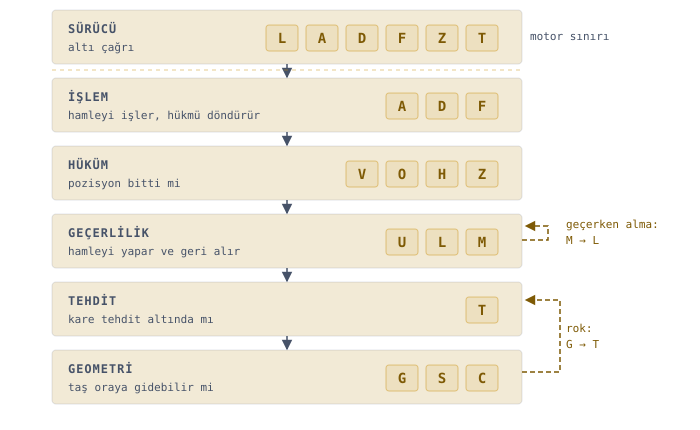
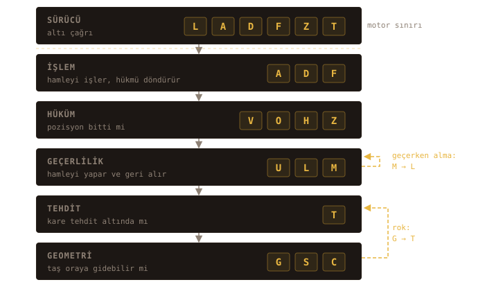
Düz oklar kat sırasını izliyor: çağrılar aşağı iner ya da kendi katında kalır,
bazen bir katı atlayarak (L → G, Z → T,
A → M). Kesikli altın oklar bağımlılığın yukarıya döndüğü iki yeri
gösteriyor — ikisi de satranç kurallarının kendisinden doğuyor.
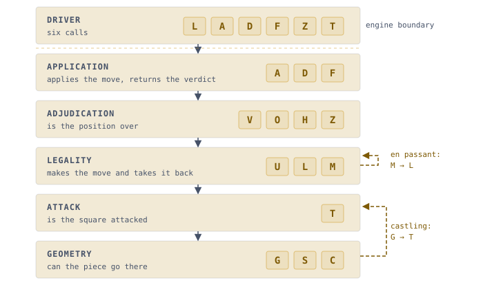
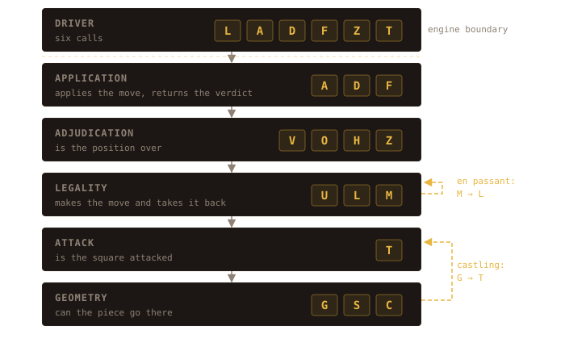
Solid arrows follow the layer order: calls go down or stay within a layer,
sometimes skipping one (L → G, Z → T,
A → M). The dashed gold arrows mark the two places where the
dependency points back up — both arise from the chess rules themselves.
Bağımlılıklar neredeyse tamamen tek yönlü. Bu kural iki yerde bozuluyor:
G → T. Geometri katı rokta bir üst kata uzanıyor:
şaha şu an şah çekilip çekilmediğini ve şahın geçtiği karenin tehdit edilip
edilmediğini sormadan rokun geçerli olup olmadığına karar veremez. Bu yüzden G
ile T karşılıklı özyinelemeli — T her taş için G'yi
çağırırken G de rok dalında T'yi çağırıyor. Özyineleme sonsuza
gitmiyor, çünkü T'nin çağırdığı G tehdit modunda ve tehdit modunda
rok dalına hiç girilmiyor.
M → L. Hamleyi tahtada yapan M, geçerken
alma karesini kurarken geçerlilik katına geri dönüyor: kareyi ancak artık sırası gelen
taraftaki bir piyon o almayı geçerli olarak yapabiliyorsa tutuyor.
Tek bir katın içinde kalan özyinelemeler de var. G'nin ışın tarayıcısı
S kendini çağırıyor: kayan taşın yolu, piyonun çift adımı ve rokta şahla kale
arasındaki yol bu yürüyüşle sınanıyor. U rokta kaleyi taşımak için kendini bir
kez daha çağırıyor. H arama ağacında, V'nin iç döngüsü
g de doyma turlarında kendini çağırıyor.
The dependencies run almost entirely one way. The rule is broken in two places:
G → T. The geometry layer reaches up one layer for
castling: it cannot decide whether castling is valid without asking whether the king is in
check right now and whether the square it crosses is attacked. So G
and T are mutually recursive — T calls G for every
piece while G calls T in its castling branch. The recursion never
runs away, because the G that T calls is in attack mode, and in
attack mode the castling branch is never entered.
M → L.M, which makes the move on the
board, drops back into the legality layer while setting the en passant square: it keeps the
square only if a pawn of the side now to move can legally make that capture.
There are also recursions within a single layer. G's ray walker
S calls itself: a slider's path, the pawn's double step and, in castling, the
path between king and rook are all tested by that walk. U calls itself once more in
castling to move the rook. H calls itself down the search tree, and
V's inner loop g calls itself through the rounds of
saturation.
Fonksiyon
Çağırdıkları
Kat
C
—
Geometri
G
S · C · T
Geometri
T
G
Tehdit
U
U
Geçerlilik
L
G · U · T
Geçerlilik
M
C · U · L
Geçerlilik
V
—yalnızca kendi yerel yardımcıları
Hüküm
O
L
Hüküm
H
T · V · O · M · H
Hüküm
Z
O · T · V
Hüküm
D
Z
İşlem
F
H
İşlem
A
M · Z
İşlem
Function
Calls
Layer
C
—
Geometry
G
S · C · T
Geometry
T
G
Attack
U
U
Legality
L
G · U · T
Legality
M
C · U · L
Legality
V
—local helpers only
Adjudication
O
L
Adjudication
H
T · V · O · M · H
Adjudication
Z
O · T · V
Adjudication
D
Z
Application
F
H
Application
A
M · Z
Application
Tahtanın kurulması
Setting up the board
Tahtayı iki parça kuruyor, bir ifade ve bir döngü:
Two parts build the board, an expression and a loop:
b=[c=un=15,e=y=t=8,n=o=0];
for(j in s=`dcebaecd${10n**40n-10n**32n}1111111154632645`)b[j*2-j%8]='0x'+s[j]-0;
Başlık bir bildirim listesi. İlk ifade bir dizi değişmezi (array literal),
ama elemanları atama: c=un=15, e=y=t=8, n=o=0. Değişmez
değerlendirilirken bütün başlangıç durumu yazılıyor — t=8 ile sıra beyazda,
c=15 ile dört rok hakkının hepsi açık, e=8 ile geçerken alma karesi
yok, n=o=0 ile yarım hamle sayacı ve teklif bitleri sıfır — ve ortaya çıkan
[15,8,0] dizisi b oluyor. Böylece durum değişkenleri ile tahtanın
dizisi aynı köşeli parantezi paylaşıyor; ayrı bir b=[] yazılmıyor. Üç eleman
yalnızca yer tutucu: ardından gelen döngü a1, b1 ve c1'i 0, 1 ve 2 indekslerine yazıp onları
siliyor. Saat motorda yok; süreyi sürücü tutuyor.
Dizilişin dizgisi. Şablon dizgisi 64 karakter üretiyor: beyazın birinci yatayı
dcebaecd, ortada 40 basamak, sonra siyahın piyonları 11111111 ve
siyahın sekizinci yataydaki taşları 54632645. Ortadaki 40 karakter kaynakta
yazılı değil; çalışma anında 10n**40n-10n**32n ile üretiliyor. Bu fark
10n**32n * (10n**8n - 1n)'e eşit: sekiz tane 9 (beyazın piyonları) ve
arkasından otuz iki tane 0 (dört boş yatay), tam 40 basamak. BigInt olması şart:
aynı sayı sıradan bir Number olsaydı kayan nokta yuvarlaması basamaklarını
bozardı.
Düz indeksten 0x88'e.for…in dizginin indekslerini geziyor: 0'dan
63'e, ama sayı olarak değil, "0"–"63" dizgileri olarak; aritmetik
onları kendiliğinden sayıya çeviriyor. j düz tahtanın indeksi, 8 × yatay +
sütun; j*2-j%8 onu 0x88 indeksine çeviriyor: j*2 16 × yatay +
2 × sütun, sütun bir kez çıkarılınca 16 × yatay + sütun kalıyor. s[j] de o
indeksteki karakteri veriyor. Yazılmayan hücreler — her yatayın sağındaki sekizer hücre — hiç
atanmıyor; delikler buradan doğuyor. Dizgiyi yayma operatörüyle karakterlere bölüp
map ile gezen bir ifade 83 bayt tutardı; döngü 80. Bedeli iki ad: j
ile s global kalıyor. Döngü bir deyim olduğu için de önceki ve sonraki parçadan
virgülle değil noktalı virgülle ayrılıyor.
Değer dönüşümündeki incelik operatör önceliğinde: + ile
- aynı öncelikte ve soldan sağa işliyor, yani önce '0x'+s[j]
birleşiyor — 'd' için '0xd' — sonra -0 o dizgiyi sayıya
dönüştürüyor ve JavaScript 0x önekini onaltılık okuyup 13 veriyor.
+0 yazılsaydı birleştirme sürer ve ortaya '0xd0' çıkardı.
Son ifade tekrar tablosunu, başlangıç pozisyonu bir kez sayılmış olarak kuruyor:
The header is a declaration list. The first expression is an array literal whose
elements are assignments: c=un=15, e=y=t=8, n=o=0.
Evaluating the literal writes the whole initial state — t=8 puts White to move,
c=15 grants all four castling rights, e=8 means no en passant
square, n=o=0 zeroes the ply counter and the offer bits — and the resulting
array [15,8,0] becomes b. The state variables and the board array
thus share one pair of brackets; no separate b=[] is written. The three elements
are only placeholders: the loop that follows writes a1, b1 and c1 to indices 0, 1 and 2,
overwriting them. The clock is not in the engine; the driver keeps the time.
The position string. The template literal produces 64 characters: White's back
rank dcebaecd, 40 digits in the middle, then Black's pawns
11111111 and Black's back rank 54632645. The middle 40 characters
are not written out in the source but generated at run time by
10n**40n-10n**32n. The difference equals 10n**32n * (10n**8n - 1n):
eight 9s (White's pawns) followed by thirty-two 0s (four empty
ranks), exactly 40 digits. It has to be a BigInt: as an ordinary Number, the same
value would lose its exact digits to floating-point rounding.
From the plain index to 0x88.for…in walks the string's indices, 0 to
63, though not as numbers but as the strings "0"–"63"; arithmetic
turns them into numbers by itself. j is the plain board's index, 8 × rank +
file; j*2-j%8 turns it into the 0x88 index: j*2 is 16 × rank + 2 ×
file, and subtracting the file once leaves 16 × rank + file. s[j] gives the
character at that index. The cells that are never written — the eight to the right of each
rank — remain unassigned; that is where the holes come from. An expression that split the
string into characters with the spread operator and walked them with map would
take 83 bytes; the loop takes 80. The price is two names:
j and s stay behind as globals. And since the loop is a statement,
it is set off from the parts before and after it by semicolons, not commas.
The trick in the value conversion is precedence: + and -
have equal precedence and associate left to right, so '0x'+s[j] concatenates
first — '0xd' for 'd' — and then -0 coerces that string
to a number, whereupon JavaScript reads the 0x prefix as hexadecimal and yields
13. Written as +0 the concatenation would have continued and produced
'0xd0'.
The last expression builds the repetition table with the starting position already
counted once:
R=G[k=b+e+t+c]=1
Anahtar dört parçadan oluşuyor: dizi metne çevriliyor — 120 hücre, virgülle ayrılmış;
delikler boş dizgiye dönüştüğü için her yatayın ardındaki sekiz delik art arda virgüller
olarak görünüyor — ve arkasına geçerken alma karesi, sıra ve rok maskesi ayraçsız
ekleniyor. Tablo ayrı bir nesne değil, G fonksiyonunun kendisi; anahtarlar onun
özellikleri oluyor.
Ayraç olmaması ilk bakışta çakışma riski gibi görünüyor ve bu kez gerçekten de tek bir
ayrıştırma garanti değil: son virgülden sonra h8'in kodu (bir ya da iki basamak),
e (8 ya da 32–39 / 80–87, bir ya da iki basamak), t (8 ya da 0) ve
c (0–15) art arda duruyor. Bütün olası değerleri tek tek denemek tek bir çakışma
ailesi buluyor: h8'de siyah piyon (1) ve e g3 (38) ile
h8'de beyaz kale (13) ve e yok (8) — ikisi de
138… diye yazılıyor. Bu durumu satranç kuralının kendisi dışarıda bırakıyor:
siyah piyon h8'de hiçbir zaman duramaz, çünkü siyah piyonlar 7. yatayda başlar ve yalnızca
1. yatay yönünde ilerler. Geriye kalan her değer bileşimi tek bir biçimde okunuyor.
The key has four parts: the array converted to text — 120 cells, comma-separated; the
holes become empty strings, so the eight holes after each rank show up as a run of commas —
followed by the en passant square, the side to move and the castling mask, with no
separator. The table is not a separate object but the function G itself;
the keys become its properties.
The missing separator looks like a collision risk at first sight, and here a unique parse
really is not guaranteed: after the last comma come h8's code (one or two digits),
e (8 or 32–39 / 80–87, one or two digits), t (8 or 0) and
c (0–15), run together. Enumerating every possible value finds a single family
of collisions: a black pawn on h8 (1) with e on g3
(38), against a white rook on h8 (13) with no e
(8) — both are written 138…. A chess rule rules that case out: a
black pawn can never stand on h8, because black pawns start on the seventh rank and only move
towards the first. Every other combination of values reads in only one way.
Geometri — G
Geometry — G
G(i,f,m) tek bir soruya cevap veriyor: i karesindeki taş
f karesine tahtanın geometrisi açısından gidebilir mi? Hedefte kendi
taşının olup olmadığına da, hamlenin şahı şah altında bırakıp bırakmadığına da bakmıyor.
İkisi de üst katlara bırakılmış. 236 bayt — V'den sonra dosyanın en uzun
ikinci fonksiyonu.
Üçüncü argüman mtehdit modu. Açıkken üç şey değişiyor: rok devre dışı kalıyor
(rok bir tehdit değildir), piyonun çapraz karesi üzerinde taş olmasa bile sayılıyor (piyon o
kareyi tehdit eder) ve piyonun yönü ters çevriliyor, çünkü tehdit eden piyon sırası
gelen tarafın değil, rakibinin piyonu. Yani G(j,x,1) “j'deki rakip
taş x karesini tehdit ediyor mu” demek.
G(i,f,m) answers a single question: can the piece on square i
reach square fas far as the geometry of the board is concerned? It
ignores whether a friendly piece occupies the target and whether the move leaves the king in
check. Both are left to the layers above. 236 bytes — the second-longest function in
the file, after V.
The third argument m is attack mode. When it is set, three things
change: castling is disabled (castling is not an attack), the pawn's diagonal square counts
even when it is empty (the pawn attacks that square), and the pawn's direction is
reversed, because the attacking pawn belongs not to the side to move but to its
opponent. So G(j,x,1) means “does the enemy piece on j attack
square x?”
Parametre listesi bir hesap tablosu
The parameter list is a spreadsheet
Varsayılan parametreler gövdeden önce ve soldan sağa değerlendirildiği için
G'nin başlığı, anahtar kelime harcamadan bir let bloğu işi
görüyor. Gövde çalışmaya başladığında geometrinin tamamı çıkarılmış oluyor:
Because default parameters are evaluated before the body and from left to right,
G's header does the work of a let block without paying for the
keyword. By the time the body starts running, the whole geometry has been derived:
İlk dikkat çeken şey taşın renginin hiç okunmaması: tür başlıkta P=b[i]&7
ile çıkarılıyor, piyonun yönü ise taşın renginden değil sıradan, t'den geliyor.
Bu, L'nin yalnızca sırası gelen tarafın taşı için çağrılması şartına
yaslanıyor; rengi okumak bayt harcardı.
Geri kalanı 0x88'in sağladığı geometri. Çıkarılan değerlerden üçü daha yakından bakmayı
hak ediyor:
d=f-i. İki karenin farkı. 0x88'de yatay ve sütun
farklarının her bileşimine ayrı bir değer düştüğü için hattı bu tek sayı belirliyor; yatay ve
sütun mesafesini ayrı ayrı hesaplamaya gerek yok.
x: adım büyüklüğü. İç içe üç kalan testi: fark 15'e bölünüyorsa
bir çaprazdır ve adım 15; 16'ya bölünüyorsa sütundur ve adım 16; 17'ye bölünüyorsa öbür
çaprazdır ve adım 17; hiçbiri değilse adım 1. Sonuncusu hem yatayı hem de hiçbir hatta
düşmeyen bütün farkları kapsıyor. s aynı adımın işaretlisi: yön tablosu yok,
ofset dizisi yok — üç kalan ve bir işaret.
S. Işın tarayıcı. i'yi s kadar
ilerletir; f'ye vardıysa doğru döndürür, varmadıysa ve hücre boşsa
(b[i]<1) kendini yeniden çağırır. Taşa rastlayınca durur, deliğe rastlayınca
da: undefined<1 yanlıştır. Aradaki bütün karelerin boş olması bu tek satırla
sınanıyor. Piyonun çift adımı ve rok da aynı tarayıcıyı kullanıyor.
Hiçbir hatta düşmeyen bir fark, örneğin a1'den b3'e, adım 1 alır. Böyle bir çiftte
tarayıcı yatay boyunca yürür ve f'ye varamadan ilk delikte durur — 0x88'de her
yatayın iki ucunda bir duvar var. 64 kareli bir tahtada bu geometrilerin dal koşullarıyla
önceden elenmesi gerekirdi; burada onları delikler eliyor. Aynı duvarlar bozuk girdileri de
zararsızlaştırıyor. Aynı kare iki kez verilirse d sıfır, adım 15 olur ve yürüyüş
ilk taşta, ilk delikte ya da dizinin sonunda biter. Tahtada şah yoksa T-1 karesini sorar ve yürüyüş yine dizinin dışında biter. Cevaplar anlamsız, ama
hiçbir yürüyüş sonsuza kadar sürmüyor.
The first thing to notice is that the piece's colour is never read: the type is derived
in the header with P=b[i]&7, and the pawn's direction comes not from the
piece's colour but from the side to move, t. This relies on L only
ever being called for a piece of the side to move; reading the colour would cost bytes.
The rest is geometry that 0x88 provides. Three of the derived values deserve a closer
look:
d=f-i. The difference between the two squares. Since in 0x88 every combination of rank and file offsets has a difference of
its own, this single number identifies the line; there is no need to compute rank and file
distances separately.
x: the step size. Three nested remainder tests: if the difference
is divisible by 15, the line is one diagonal and the step is 15; by 16, a file and 16; by
17, the other diagonal and 17; otherwise the step is 1. That last case covers both the rank
and every difference that lies on no line at all. s is the same step with its
sign: no direction table, no offset array — three remainders and a sign.
S. The ray walker. It advances i by s; if
it has reached f it returns true, otherwise it calls itself again as long as
the cell is empty (b[i]<1). It stops at a piece, and at a hole as well:
undefined<1 is false. This single line checks that every square in between
is empty. The pawn's double step and castling use the same walker.
A difference that lies on no line — from a1 to b3, say — gets a step of 1. For such a
pair the walker runs along the rank and stops at the first hole without ever reaching
f: in 0x88 every rank has a wall at either end. On a 64-square board, such
geometries would have to be filtered out in advance by branch conditions; here the holes
filter them. The
same walls defuse broken inputs. Give the same square twice and d is zero, the
step 15, and the walk ends at the first piece, the first hole or the end of the array. With no
king on the board T asks about square -1, and again the walk ends
outside the array. The answers are meaningless, but no walk ever runs forever.
Dört dal, altı taş
Four branches, six pieces
Gövde tek bir üçlü operatör zinciri. Her halka türden bir sayı çıkarıp sıfırı arıyor:
P-4 sıfırsa at, P-2 sıfırsa şah, P-1 sıfırsa piyon.
Zincirin son dalı kalan üç taşı — vezir, kale ve fil (3, 5, 6) — birlikte ele alıyor.
The body is a single ternary chain. Each link subtracts a number from the type and looks
for zero: P-4 zero means a knight, P-2 zero a king, P-1
zero a pawn. The final branch handles the remaining three pieces — queen, rook and bishop
(3, 5, 6) — together.
At.d*d%765%128==68. 0x88'de atın sekiz hamlesi dört farka iniyor:
±14, ±18, ±31, ±33. Karesi alınınca işaret düşüyor (196, 324, 961, 1089); 765'e göre kalan,
büyük ikisini küçük ikisinin üstüne katlıyor (961 → 196, 1089 → 324); 128'e göre kalan da 196
ile 324'ü aynı sayıya, 68'e indiriyor. Tahtada iki kare arasında oluşabilecek her farkı tek
tek denemek, yalnızca bu sekiz farkın 68 verdiğini gösteriyor. Sekiz yönlü bir tablo yerine
bir çarpma ve iki kalan. Hedef bir delikse atın hamlesi yine “geometrik olarak uygun” çıkar,
ama L'nin hedef süzgeci delikleri zaten eliyor.
Şah. İki dal; onları ~m+3%d ayırıyor. ~m normal modda −1,
tehdit modunda −2; 3%d ise yalnızca fark ±2 iken 1 (fark ±1 ya da ±3 iken 0, daha
büyükse 3). Toplam yalnızca normal modda ve yatay boyunca iki karelik bir harekette sıfır
oluyor; rok dalına ancak o zaman giriliyor, tehdit modunda hiç girilmiyor. Öbür dal
d==s: fark tek bir adıma eşit mi, yani hamle herhangi bir yöne tek kare mi?
Rokun bütün şartları tek zincirde. Önce hedef kalenin karesine çevriliyor:
f+=s-!~s — kısa rokta s 1'dir, ~1 −2, !−2
yanlış, dolayısıyla f1 ilerliyor: g1'den bir kare ileri, h1'e. Uzun rokta
s −1, ~−1 0, !0 doğru, dolayısıyla f−2 kayıyor: c1'den iki kare geri, a1'e. Asimetri üçlü operatör kullanmadan çözülüyor.
Kalenin karesi aynı anda global r'ye yazılıyor; kaleyi taşıyacak olan
U onu oradan okuyacak. c&C(r) o kaleye bağlı rok hakkının hâlâ
maskede olduğunu sınıyor. T()+T(i+s)<S() kalan üç şartı tek bir
karşılaştırmada soruyor. T() şaha şu an şah çekilip çekilmediğini,
T(i+s) şahın geçtiği karenin tehdit edilip edilmediğini söylüyor;
T'nin varsayılan karesi sırası gelen tarafın şahı, yani i. İkisi de
yanlışsa toplam 0. Sağdaki S() şahtan kaleye yürüyüp aradaki karelerin boş olduğuna
bakıyor; uzun rokta b1 de bu yürüyüşün içinde. Yol açıksa 1. Karşılaştırma yalnızca
0 < 1 iken doğru. İfade soldan sağa değerlendirildiği için S yine tehdit
testlerinden sonra çalışıyor; yürüdükçe i'yi değiştirdiği için buna mecbur. Kalenin yerinde
durduğunu ayrıca sınamak gerekmiyor: hak, kale oynadığı ya da alındığı anda M'de
siliniyor. Şahın varacağı kare burada sınanmıyor, çünkü o karedeki tehdidi
zaten L'nin deneme hamlesi yakalıyor.
Piyon. Önce yön: m^d<d*t. Beyaz sıradayken t 8'dir ve
d<8d ancak d pozitifse doğru — beyaz indeksi büyütmek zorunda.
Siyah sıradayken t 0'dır ve d<0 doğrudan “indeks küçülüyor mu”
sorusu. Sıranın değerini bir çarpan gibi kullanmak, iki rengi tek bir karşılaştırmaya
sığdırıyor. Tehdit modunda m^ cevabı ters çeviriyor: soru artık rakibin piyonu
hakkında. Yön tutmazsa üçlü operatör 0 döndürüyor ve dallara hiç girilmiyor. Tutarsa iki dal
var; onları x-16 ayırıyor: hamle sütun boyuncaysa itiş, değilse alma.
Alma.1&~x%d hamlenin tam olarak tek bir çapraz adım olup olmadığını
soruyor. ~x%d, (-x-1)%d demek; fark tek bir adımsa (±15 ya da ±17)
kalan −1, yani tek; iki adım ve fazlasında −16 ya da −18, adım 1 ise 0 ya da −2 — hep çift.
Ardından m|b[f]|f==e üç koşuldan birini kabul ediyor: tehdit modu, hedefte bir
taş (rakibin taşı olduğunu L'nin süzgeci zaten sağladı) ya da hedefin geçerken
alma karesi olması. Üçünün veya ile bağlanması, geçerken almayı ayrı bir dal
açmadan sıradan bir almaya çeviriyor.
İtiş. Önce mesafe: d/s<2+(i%96<24) — adım sayısı başlangıç
yatayında üçten, başka her yerde ikiden küçük olmalı; yani başlangıç yatayından en çok iki
kare, başka yerden tek kare. Karşılaştırmanın sonucu sayı olarak 1 ya da 0;
>b[f] onu hedefteki taşla kıyaslıyor ve ancak hedef boşsa (b[f]
0) 1, 0'dan büyük çıkıyor. Tek bir işleç hem mesafeyi hem boş hedefi soruyor; hedef bir
delikse b[f]undefined ve kıyas yanlış. Kalanı
S() yapıyor: tek kare ilerlemede ilk adımda hedefe varıp doğru döndürüyor; çift
adımda önce aradaki kareye bakıyor ve o boşsa hedefe varıyor.
İtiş dalında tehdit modunu soran bir terim yok; tehdit modunda bir piyon, önündeki boş
kareyi “tehdit ediyor” görünebilir. T bunu yalnızca roktaki geçiş karesi için
sorduğunda görebilir — sorgulanan kareler arasında boş olan tek kare o. Ama f2'deki siyah bir
piyonun f1'i “tehdit etmesi” için zaten e1'deki şaha şah çekiyor olması gerekir ve rok, şah
altındayken zaten reddediliyor. Bu yanlış pozitif hiçbir cevabı değiştirmiyor.
Knight.d*d%765%128==68. In 0x88 the knight's eight moves come down to
four differences: ±14, ±18, ±31, ±33. Squaring drops the sign (196, 324, 961, 1089); the
remainder modulo 765 folds the larger two onto the smaller two (961 → 196, 1089 → 324); and
the remainder modulo 128 brings 196 and 324 down to the same number, 68. Checking every
difference that can occur between two squares on the board shows that only these eight give
68. One multiplication and two remainders instead of an eight-direction table. If the target
is a hole, the knight's move still comes out “geometrically fine”, but L's
target filter rejects holes anyway.
King. Two branches, split on ~m+3%d. ~m is −1 in normal
mode and −2 in attack mode; 3%d is 1 only when the difference is ±2 (0 for ±1 or
±3, and 3 beyond that). The sum is zero only in normal mode and for a two-square move along
the rank; only then is the castling branch entered, and in attack mode it never is. The other branch
is d==s: does the difference equal a single step — is the move one square in any
direction?
Every castling condition sits in a single chain. First the target is turned into the
rook's square: f+=s-!~s — on the kingside s is 1, ~1 is
−2, !−2 is false, so f moves by 1: from g1 one square on, to
h1. On the queenside s is −1, ~−1 is 0, !0 is true, so
f moves by −2: from c1 two squares back, to a1. The asymmetry is handled
without a ternary. The rook's square is stored in the global r at the same time;
U, which will move the rook, reads it from there. c&C(r) tests
that the castling right tied to that rook is still set. T()+T(i+s)<S() asks
the remaining three conditions in a single comparison. T() says whether the king
is in check now, T(i+s) whether the square it crosses is attacked;
T's default square is the king of the side to move, that is i. If
both are false the sum is 0. On the right, S() walks from the king to the rook
and checks that every square in between is empty; on the queenside b1 is included in that
walk. If the path is clear it gives 1. The comparison holds only as 0 < 1. The expression
is evaluated left to right, so S still runs after the attack tests — as it must,
because it advances i as it walks. Whether the rook is actually there needs no
separate test: M clears the right the moment the rook moves or is captured. The king's destination square is not tested here, because
L's trial move already catches an attack on it.
Pawn. Direction first: m^d<d*t. With White to move t is
8, and d<8d holds only when d is positive — White must increase
the index. With Black to move t is 0, and d<0 is simply “does the
index decrease?”. Using the side's value as a multiplier fits both colours into one
comparison. In attack mode m^ inverts the answer: the question is now about the
opponent's pawn. If the direction is wrong the ternary returns 0 and neither branch is
entered. Otherwise there are two branches, split on x-16: a move along the file
is a push; anything else is a capture.
Capture.1&~x%d asks whether the move is exactly one diagonal
step. ~x%d means (-x-1)%d; if the difference is a single step (±15
or ±17) the remainder is −1, which is odd; for two steps or more it is −16 or −18, and with a
step of 1 it is 0 or −2 — always even. Then m|b[f]|f==e accepts any of three
conditions: attack mode, a piece on the target (L's filter has already
ensured that it is an enemy piece), or the target being the en passant square.
Joining the three with or turns en passant into an ordinary capture without
opening a branch for it.
Push. Distance first: d/s<2+(i%96<24) — the number of steps
must be below three on the starting rank and below two everywhere else: at most two squares
from the starting rank, one square elsewhere. The comparison yields 1 or 0 as a number,
and >b[f] sets it against the piece on the target: only when the target is
empty (b[f] is 0) is 1 greater. One operator asks about both the distance and
the empty target; on a hole b[f] is undefined and the comparison
fails. S() does the rest:
on a single step it reaches the target at once and returns true, on a double step it looks
at the square in between first and reaches the target only if that is empty.
The push branch has no term asking about attack mode, so in attack mode a pawn can seem
to “attack” the empty square in front of it. T can only see this when it asks
about the square crossed in castling — the only queried square that is empty. But for a black
pawn on f2 to “attack” f1, it must already be giving check to the king on e1, and castling
out of check is refused anyway. The false positive changes no answer.
i%96<24 iki yatayı birden nasıl seçiyor? Bir yatayın indeksleri
16 × yatay ile başlıyor. 96'ya bölümünden kalanı 24'ten küçük olanlar 0–23 ve 96–119, yani
birinci, ikinci, yedinci ve sekizinci yataylar. Piyon birinci ve son yatayda hiç durmadığı
için bunlardan geriye yalnızca ikinci ve yedinci yatay kalıyor — beyazın ve siyahın piyon
yatayları. Karşılaştırma true ya da false verdiği için
2+(i%96<24) başlangıç yatayında 3, başka her yerde 2 oluyor.
How does i%96<24 pick out two ranks at once? A rank's indices start
at 16 × rank. Those whose remainder on division by 96 is below 24 are 0–23 and 96–119, that is
the first, second, seventh and eighth ranks. A pawn never stands on the first or the last
rank, so only the second and the seventh remain — the starting ranks of White's and Black's
pawns. Because
the comparison yields true or false, 2+(i%96<24) is
3 on the starting rank and 2 everywhere else.
Kayan taşlar. Zincirin son dalı vezir, kale ve fili birlikte ele alıyor ve bunu
tür numarasının tekliğini okuyarak yapıyor. P+P*4%x tek çıkarsa taş o
yönde hareket edebiliyor:
Sliding pieces. The last branch of the chain handles queen, rook and bishop
together, and does so by reading the parity of the type number. If
P+P*4%x comes out odd, the piece can move in that direction:
Taş
P
yatay (x 1)
sütun (16)
çapraz (15)
çapraz (17)
Vezir
3
3
15
15
15
Kale
5
5
9
10
8
Fil
6
6
14
15
13
Piece
P
rank (x 1)
file (16)
diagonal (15)
diagonal (17)
Queen
3
3
15
15
15
Rook
5
5
9
10
8
Bishop
6
6
14
15
13
Düz hatta 4P, 1'e ya da 16'ya bölününce kalan hep çift; teklik
P'nin kendisinden geliyor ve tek türler, vezirle kale, geçiyor. Çaprazda
4P yalnızca 5 ile 6'da 15'i ve 17'yi aşıyor; o zaman tek olan bölen bir kez
çıkarılıyor ve teklik dönüyor. 3'teki vezir bu eşiğin altında kalıp tek kalıyor; 5 ile 6 ise
tekliklerini değiştiriyor: kale çifte, fil teke dönüyor. Bu en alt bit & ile
S()'nin sonucuna bağlanıyor: yol kapalıysa hamle geçmiyor. Vezir için ayrı bir dal
yazılmamış; dört sütunun dördünde de tek çıkıyor.
&& yerine & kullanılması bir bayt kazandırıyor ama kısa
devreyi kaldırıyor: S() teklik tutmasa da çalışıyor. Bedeli boşa giden bir yürüyüş;
sonuç değişmiyor. Boş bir kare de bu dala düşer — P 0'dır, ifade 0 kalır — ve
T ile O'nun süzgeçlerinden sızan boş kareler zararsız biçimde burada
eleniyor.
On a straight line the remainder of 4P divided by 1 or 16 is always even; the
parity comes from P itself, and the odd types, queen and rook, pass. On a
diagonal, 4P exceeds 15 and 17 only for 5 and 6; the odd modulus is then
subtracted once and the parity flips. The queen, at 3, stays below that threshold and remains
odd, while 5 and 6 swap parity: the rook turns even, the bishop odd. That lowest bit is ANDed
with the result of S(): if the path is blocked, the move fails. No separate branch for the queen was ever written; it comes out odd
in all four columns.
Using & instead of && saves a byte but drops the
short circuit: S() runs even when the parity fails. The price is a wasted walk;
the result does not change. An empty square falls into this branch too — P is 0
and the expression stays 0 — and the empty squares that leak through the filters of
T and O are harmlessly weeded out here.
Tehdit — T
Attack — T
Geometri katı tek bir taşla ilgileniyor; tehdit katı bütün tahtayı yokluyor — 52
baytta.
The geometry layer deals with one piece; the attack layer polls the whole board — in 52
bytes.
T(x) şunu soruyor: x karesi, sırası gelen tarafın
rakibi tarafından tehdit ediliyor mu? Süzgeç p&8^t: taşın renk biti
(8 biti) ile sıranın özel veyası; renkler farklıysa 8. Ardından G(j,x,1), tehdit
moduyla. some bulduğu ilk saldırganda duruyor; tam bir tarama yalnızca kare
gerçekten güvenliyse yapılıyor ve some delikleri atladığı için tarama 64 kareyle
sınırlı.
Asıl incelik parametrenin varsayılanında: x=b.indexOf(2+t) şahı arayıp
buluyor — şahın türü 2, kodu da 2 + renk; t rengin kendisi olduğu için
2+t doğrudan sırası gelen tarafın şahı. Yani x verilmezse soru
kendiliğinden “sırası gelen tarafa şah çekilmiş mi” sorusuna dönüşüyor.
Bir taraf parametresi yok; soru hep sırası gelen taraf için. Bu yetiyor, çünkü motorda
sorulan her şah o tarafın şahı: L'nin denemesinde sıra henüz değiştirilmemiştir,
hamleyi yapan hâlâ t'dir; Z ile H'nin yaprak testi de
oynayacak tarafın şahını soruyor.
Şahın yeri hiçbir yerde saklanmıyor; her çağrıda yeniden aranıyor. Bir önbelleğin her
hamlede güncellenmesi, üstelik L'nin geri aldığı hamlelerde de doğru kalması
gerekirdi. Aramak daha ucuz.
Boş kareler süzgeçten sızıyor: boş karede p&8 sıfırdır ve
t 8 iken özel veya 8 verir. Yani beyaz sıradayken T, siyah
taşlarla birlikte bütün boş kareleri de G'ye soruyor; siyah sıradayken boş kareler
süzülüyor. Zararsız olmasının sebebi bir kat aşağıda: boş karede P sıfır olduğu
için G kayan taş dalına düşer ve ifade 0 kalır. Ama bedava değil: o dal
S()'yi yine de yürütüyor. Aynı sızıntının aynası O'da,
bu kez siyahın sırasında.
T(x) asks: is square x attacked by the opponent of the
side to move? The filter is p&8^t — the XOR of the piece's colour bit (the 8
bit) with the side to move, which is 8 when the colours differ. Then G(j,x,1),
in attack mode. some stops at the first attacker it finds; a full scan happens only when the square really is safe, and since
some skips the holes, the scan is limited to the 64 squares.
The real subtlety is in the parameter's default: x=b.indexOf(2+t) finds the
king — the king's type is 2 and its code 2 + colour; since t is the colour
itself, 2+t is directly the king of the side to move. So if x is
omitted, the question automatically becomes “is the side to move in check?”.
There is no side parameter; the question is always about the side to move. That is
enough, because every king the engine asks about is that side's king: during
L's trial the side to move has not yet been switched, so the mover is still
t; and the leaf test of Z and H asks about the king of
the side about to move.
The king's position is stored nowhere; it is searched for afresh on every call. A cache
would have to be updated on every move, and kept correct across the moves L
takes back. Searching is cheaper.
Empty squares leak through the filter: on an empty square p&8 is zero, and
with t at 8 the XOR gives 8. So with White to move, T asks
G about every empty square along with the black pieces; with Black to move the
empty squares are filtered out. Why this is harmless lies one layer below: on an empty
square P is zero, so G falls into the slider branch and the
expression stays 0. But it is not free: that branch still runs S(). The mirror
image of this leak is in O, this time on Black's move.
Geçerlilik — L, U ve M
Legality — L, U and M
L — süz, dene, geri koy
L — filter, try, restore
Geometri bir hamlenin şekline bakıyor, geçerlilik sonucuna. Aradaki fark tek bir kural:
kendi şahını şah altında bırakan hamle geçersizdir. Bunu statik olarak sınamanın kısa bir yolu
yok, o yüzden L hamleyi gerçekten yapıyor, şahı soruyor ve tahtayı geri
koyuyor. Tek bir hamle hakkında evet ya da hayır diyor; bir taşın bütün hamlelerini isteyen
her kareyi ayrı ayrı sormalı — O'nun yaptığı gibi. 54 bayt.
Geometry looks at the shape of a move, legality at its consequence. Between them lies one
rule: a move that leaves your own king in check is illegal. There is no short way to test
that statically, so Lactually makes the move, asks about the king, and
restores the board. It answers yes or no for a single move; anyone who wants all the moves of
a piece must ask about each square in turn — as O does. 54 bytes.
L=(i,x,q=b)=>
filter b[x]+~t>>3 &&
geometry G(i,x) && (
play U(i,x),
test x=T(),
restore b=q,
!x)
Süzgeç tek bir kaydırma. Toplamanın önceliği kaydırmadan yüksek olduğu için ifade
(b[x]+~t)>>3. ~t beyazın sırasında −9, siyahınkinde −1.
Beyazın sırasında boş kare −9'u, siyah taş −8 ile −3 arasını verir; sağa üç kaydırınca ikisi de
negatif kalır, yani doğru sayılır. Beyaz taş 0 ile 5 arasını verir ve kaydırınca 0 olur.
Siyahın sırasında boş kare −1'i, beyaz taş 8 ile 13 arasını verir (kaydırınca −1 ve 1); siyah
taş 0 ile 5 arasını verir ve 0'a iner. Delik undefined'dır, toplam
NaN, kaydırma 0. Tek bir ifade boş kareyi ve rakip taşı geçiriyor, kendi taşını ve
tahta dışını eliyor — G hiç çalışmadan. Çıkış karesinin kendisi de bu yüzden
eleniyor: orada kendi taşı duruyor.
Yedek bir referans.q=b varsayılan parametre olarak doğuyor, bir
let harcanmıyor. Tahtayı L kopyalamıyor: kopyalama
U'nun ilk adımı. U yeni bir dizi üretip b'yi ona
bağlıyor, eski dizi nesnesine hiç dokunmuyor; geri koyma da bu yüzden tek bir atama:
kopyalama değil, eski referansı yerine takma.
Harf yeniden kullanılıyor. Deneme bitince hedef kare artık gerekmiyor;
bu yüzden x artık T()'nin cevabını tutuyor. Virgüllü dizide önce tahta geri
konuyor, sonra !x döndürülüyor: şah tehdit altında değilse hamle geçerli.
U(i,x) terfi türünü belirtmeden çağrılıyor, yani varsayılan vezir
kullanılıyor — geçerlilik açısından fark etmez, çünkü şahın şah altında kalıp kalmadığı varış
karesinin dolu olmasına bağlı, üzerindeki taşın türüne değil.
L'nin iki yan etkisi var ve ikisi de bilerek bırakılmış: rok dalında
G kalenin karesini r'ye, deneme hamlesinde U terfi
bayrağını X'e yazıyor. Böylece L(i,f) bir sonraki
A(i,f)'yi hazırlamış oluyor; sürücünün ikisini art arda çağırması bundan.
The filter is a single shift. Addition binds tighter than shifting, so the
expression is (b[x]+~t)>>3. ~t is −9 on White's move and −1
on Black's. On White's move an empty square gives −9 and a black piece something between −8
and −3; shifted right by three, both stay negative, hence truthy. A white piece gives 0 to 5,
which shifts to 0. On Black's move an empty square gives −1 and a white piece 8 to 13 (−1 and
1 after the shift); a black piece gives 0 to 5 and comes down to 0. A hole is
undefined, the sum NaN, the shift 0. One expression lets through the
empty square and the enemy piece and rejects your own piece and the off-board cells — before
G ever runs. The origin square is excluded the same way: your own piece stands
on it.
The backup is a reference.q=b is created as a default parameter, so
no let is needed. L does not clone the board: cloning is
U's first step. U builds a new array and binds b to it,
never touching the old array object; restoring the board is therefore a single assignment —
not a copy, just the old reference put back.
The letter is reused. Once the trial is over, the destination square is no longer
needed, so x holds T()'s answer. In the comma sequence the board is
restored first, then !x is returned: if the king is not attacked, the move is
legal.
U(i,x) is called without a promotion type, so the default queen is used —
irrelevant to legality, because whether the king is left in check depends on the destination
square being occupied, not on the type of the piece standing there.
L has two side effects, both intentional: in the castling branch
G writes the rook's square to r, and in the trial move
U writes the promotion flag to X. So L(i,f) prepares the
A(i,f) that follows; that is why a driver calls the two back to back.
U — ham hamle
U — the raw move
U hamleyi tahtada yapıyor, başka hiçbir şey yapmıyor: sırayı değiştirmiyor,
sayaçlara ve haklara dokunmuyor. L'nin deneme hamlesi de, M'nin
gerçek hamlesi de bu. Geri alma işi çağıranın. 134 bayt.
U makes the move on the board and nothing else: it neither switches the side
to move nor touches the counters or the rights. It is both L's trial move
and M's real one. Taking it back is the caller's job. 134 bytes.
Başlık yine bir hesap tablosu. P=b[i]-t taşın türü: sırası gelen tarafın
taşından renk çıkarılınca geriye tür kalıyor (beyaz kod − 8, siyah kod − 0).
d=P*(i-f)**2 iki özel hamlenin parmak izi: rokta şah (2) iki kare gider,
2 × 4 = 8; piyonun (1) çift adımında fark 32'dir, 1 × 1024 = 1024. Bir taşın
yapabileceği başka hiçbir hamle bu iki sayıdan birini vermiyor. Q iki karenin
ortası: rokta kalenin ineceği kare, çift adımda piyonun üzerinden atladığı kare.
Kopya, varış karesi ve terfi.b.slice() tahtayı kopyalıyor ve
delikleri olduğu gibi bırakıyor; b yeni diziye bağlanıyor. Terfi testi
X=P-1|f%112>7: yalnızca taş piyonsa (P-1 sıfır) ve
f%112 en çok 7 ise, yani f birinci ya da sekizinci yataydaysa sıfır.
O zaman seçilen tür yazılıyor — p|t, yani tür artı sırası gelen tarafın
rengi; terfi değilse taşın kendisi. Bayrak global X'te kalıyor;
H terfide dört taşı ayrı ayrı denemek için onu okuyor.
Çıkış karesi ve geçerken alınan piyon. Zincirleme atama sağdan sola işliyor.
Sıradan bir hamlede çıkış karesi iki kez sıfırlanır. Piyon geçerken alma karesine vardıysa
(e-f ve P-1 ikisi de sıfır) silinen kare f^16 olur ve
bu ifade yönü kendiliğinden buluyor: geçerken alma karesi ya üçüncü yatayda (indeks
0x2_) ya altıncıda (0x5_) durur; 16 ile özel veya, yatay
basamağının en düşük bitini çeviriyor: 2'yi 3'e, 5'i 4'e — iki durumda da alınan piyonun
durduğu yataya: e3 → e4, e6 → e5.
Geçerken alma adayı ve rok kalesi. Son satır iç içe bir üçlü operatör. Parmak izi
8 değilse dönüş değeri geçerken alma adayı: parmak izi 1024 ise atlanan kare, değilse
8. Karenin gerçekten tutulup tutulmayacağına M karar veriyor.
Parmak izi 8 ise U kendini bir kez daha çağırıp kaleyi r'den
ortadaki kareye taşıyor — f1, d1, f8 ya da d8; r'yi az önceki L
çağrısında G'nin rok dalı yazmıştı. Dönüş değeri de o iç çağrınınki: taş kale
olduğu için parmak izi 20 ya da 45 çıkıyor, özyineleme orada bitiyor ve 8
dönüyor — rokta geçerken alma adayı yok.
The header is a spreadsheet again. P=b[i]-t is the piece's type: subtract the
colour from a piece of the side to move and the type remains (a white code minus 8, a black
one minus 0). d=P*(i-f)**2 is the fingerprint of the two special moves:
in castling the king (2) moves two squares, 2 × 4 = 8; in the pawn's (1) double step
the difference is 32, 1 × 1024 = 1024. No other move yields either number.
Q is the midpoint of the two squares: the square the castling rook lands on, and
the square the pawn skips over in a double step.
Clone, destination square and promotion.b.slice() copies the board,
holes included; b is rebound to the new array. The promotion test is
X=P-1|f%112>7: zero only if the piece is a pawn (P-1 is zero) and
f%112 is at most 7, that is, f is on the first or the eighth rank.
If so, the chosen type is written — p|t, the type plus the colour of the
side to move; otherwise the piece itself. The flag stays in the global
X; H reads it to try the four pieces of a promotion one by
one.
Origin square and the pawn captured en passant. A chained assignment is
evaluated right to left. On an ordinary move the origin square is cleared twice. When a pawn
lands on the en passant square (e-f and P-1 both zero), the square
cleared becomes f^16, and that expression finds the direction by
itself: the en passant square is either on the third rank (index 0x2_) or
on the sixth (0x5_); XOR with 16 flips the lowest bit of the rank digit, 2 to 3
and 5 to 4 — in both cases the rank on which the captured pawn stands: e3 → e4,
e6 → e5.
The en passant candidate and the castling rook. The last line is a nested
ternary. If the fingerprint is not 8, the return value is the en passant candidate: the
skipped square if the fingerprint is 1024, 8 otherwise. Whether the square is
actually kept is for M to decide. If the fingerprint is 8, U calls
itself once more and moves the rook from r to the square in between — f1, d1,
f8 or d8; r was written by G's castling branch during the
L call just before. The return value is then that inner call's: the piece is a
rook, so the fingerprint comes out 20 or 45, the recursion ends there and 8
comes back — castling leaves no en passant candidate.
M — altı adım, sabit bir sırayla
M — six steps in a fixed order
M hamleyi oynuyor ve durumu güncelliyor: yarım hamle sayacı, rok hakları, tahta,
sıra, geçerken alma karesi ve anahtar. Tekrar tablosuna yazmıyor. Rok hakları ve sayaç burada,
hamlenin yapıldığı yerde güncelleniyor; çünkü arama da hamle oynuyor ve c
güncellenmeseydi dallarda çoktan kaybedilmiş bir rok hakkı hâlâ geçerli görünürdü. Geri alma
işi çağıranın: arama [b,e,n,t,c,k]'yı saklıyor. Kalıcı olan son etki, tekrar
sayımı, bir kat yukarıda, A'da. 109 bayt.
M plays the move and updates the state: the ply counter, the castling rights,
the board, the side to move, the en passant square and the key. It does not write to the
repetition table. The rights and the counter are updated here, where the move is made,
because the search makes moves too: if c were left untouched, a castling right
already lost would still look available deeper in the tree. Taking the move back is the
caller's job: the search saves [b,e,n,t,c,k]. The last permanent effect, the
repetition count, lives one layer up, in A. 109 bytes.
Yarım hamle sayacı.!b[x] hedef boşsa 1, doluysa 0; çıkış taşıyla
çarpınca alımda 0, sessiz hamlede taşın kodu kalıyor. &6 piyonda (1 ve 9)
sıfır, öbür bütün taşlarda sıfırdan farklı. Sonuç sıfırsa — bir taş alındı ya da piyon
oynadı — && o sıfırı döndürüp sayacı sıfırlıyor; değilse sayaç bir
artıyor. Geçerken almada hedef boş ama taş piyon: sayaç yine sıfırlanıyor. Kuralın tamamı
tek ifade.
Rok hakları. İki ayrı kural tek ifadede toplanıyor. C(i) çıkış
karesine bakıyor: şah kendi karesinden ya da kale kendi köşesinden ayrıldıysa ilgili hak
silinir. C(x) varış karesine bakıyor: bir kale kendi köşesinde
alındıysa o hak da silinir. Şahta iki hak tek bir karede toplanıyor:
C(e1) 3 döndürüyor, bu yüzden rok da dahil her şah hamlesi beyazın iki hakkını
birden siliyor.
Tahta.U hamleyi tahtada yapıyor ve geçerken alma adayını döndürüyor.
Sıra.t^=8.
Geçerken alma karesi. Aday ancak yeni sırası gelen taraftaki bir piyon
o almayı gerçekten yapabiliyorsa kalıyor: p==1+t o tarafın piyonlarını seçiyor
(siyah için 1, beyaz için 9), L(j,e) de almayı eksiksiz geçerlilik denemesiyle
soruyor — açmazdaki bir piyon bu yüzden geçerken alma hakkı doğurmuyor. Aday yoksa
(e 8 ise) L daha süzgeçte, deliği görüp duruyor; tarama her hamlede
koşuyor ama en çok sekiz piyona bakıyor.
Anahtar.k=b+e+t+c yeni pozisyonun dizgisi; M onu
döndürüyor, A da pozisyonu tekrar tablosunda onunla sayıyor.
Sıra sabit. Sayaç (1) hedef karedeki taşa bakıyor, o yüzden U'dan (3) önce
gelmeli. Geçerken alma denetimi (5) bitmiş tahtada ve yeni sırayla bir geçerlilik sorusu
soruyor, o yüzden U'dan ve sıranın değiştirilmesinden (4) sonra gelmeli. Anahtar
(6) her şeyden sonra. Yeri değiştirilebilecek tek adım rok hakları (2); anahtardan önce kaldığı
sürece hiçbir şey değişmiyor.
Beşinci adımın bu kadar titiz olmasının sebebi tekrar sayımı.
Pozisyonun tanımı geçerken alma imkânını da içerdiği için, kimsenin kullanamayacağı bir kare
yazılsaydı aynı pozisyon iki farklı pozisyon gibi sayılır ve üçlü tekrar talebi sessizce
kaçırılırdı.
The ply counter.!b[x] is 1 if the target is empty and 0 if not;
multiplied by the moving piece it leaves 0 on a capture and the piece's code on a quiet
move. &6 is zero for a pawn (1 and 9) and non-zero for every other piece.
If the result is zero — a piece was captured or a pawn moved — &&
returns that zero and the counter resets; otherwise it increments. On en passant the target
is empty but the piece is a pawn, so the counter still resets. The whole rule is one
expression.
Castling rights. Two separate rules combined into one expression.
C(i) looks at the origin square: if the king has left its square or a rook its
corner, the corresponding right is lost. C(x) looks at the destination: if a
rook is captured on its home corner, that right is lost too. For the king, a single
square carries both rights: C(e1) returns 3, so any king move — castling
included — removes both of White's rights at once.
The board.U makes the move and returns the en passant
candidate.
The side to move.t^=8.
The en passant square. The candidate is kept only if a pawn of the side
now to move can legally make the capture: p==1+t selects that side's
pawns (1 for Black, 9 for White), and L(j,e) tests the capture with the full
legality check — which is why a pinned pawn does not create an en passant right. With no
candidate (e is 8), L stops at its filter on the hole; the scan
runs after every move but examines at most eight pawns.
The key.k=b+e+t+c is the new position's string; M
returns it, and A uses it to count the position in the repetition table.
The order is fixed. The counter (1) looks at the piece on the destination square, so it
has to come before U (3). The en passant check (5) asks a legality question of
the finished board and the new side to move, so it has to come after U and after
the side is switched (4). The key (6) comes after everything. Only the castling rights (2)
could be moved; as long as they stay before the key, nothing changes.
The fifth step is this careful because of the repetition count.
Since the definition of a position includes whether an en passant capture is possible,
recording a square nobody could use would make the same position count as two different ones
and silently miss a threefold claim.
Rok hakkı — C
Castling rights — C
Dört rok hakkı c'de dört bit. Hangi karenin hangi bite bağlı olduğunu
söyleyen fonksiyon 28 bayt — dosyanın en kısası.
The four castling rights are four bits in c. The function that maps each
square to its bit is 28 bytes — the shortest in the file.
C=i=>'20003001'[i%112]<<i/56
İki adım. i%112 birinci ve sekizinci yatayları aynı sekiz indekse katlıyor:
a1 (0) ve a8 (112) sıfıra, e1 ve e8 dörde, h1 ve h8 yediye. Aradaki altı yatay 16–111
aralığında kalıyor, yani sekiz karakterlik dizginin dışında — orada undefined
okunuyor. Dizginin kendisi tablo görevi görüyor.
Sonra <<i/56. Kaydırma operatörü iki işleneni de tam sayıya çeviriyor:
'2' 2'ye, undefined 0'a dönüyor; sağ işlenen ise birinci yatayda 0,
sekizinci yatayda 2 çıkıyor (112–119 bölü 56, 2 ile 2,125 arası).
Two steps. i%112 folds the first and eighth ranks onto the same eight
indices: a1 (0) and a8 (112) to zero, e1 and e8 to four, h1 and h8 to seven. The six ranks in
between stay in the range 16–111, beyond the end of an eight-character string, so reading
there gives undefined. The string itself is the table.
Then <<i/56. The shift operator converts both operands to integers:
'2' becomes 2, undefined becomes 0; and the right operand comes out
0 on the first rank and 2 on the eighth (112–119 divided by 56 is between 2 and 2.125).
Kare
i%112
Karakter
Kaydırma
Bit
h1
7
1
0
1
a1
0
2
0
2
h8
7
1
2
4
a8
0
2
2
8
e1
4
3
0
3
e8
4
3
2
12
diğer 58
—
'0' / yok
—
0
Square
i%112
Character
Shift
Bit
h1
7
1
0
1
a1
0
2
0
2
h8
7
1
2
4
a8
0
2
2
8
e1
4
3
0
3
e8
4
3
2
12
the other 58
—
'0' / none
—
0
Bir şah hamlesinin iki biti birden silmesi dizgideki '3' sayesinde.
C'nin iki kullanıcısı var. M'nin ikinci adımı hak silme işinin
tamamını yapıyor: c &= ~C(i) & ~C(x). Çıkış karesi şahın ya da kalenin
oynadığını, varış karesi ise bir kalenin kendi köşesinde alındığını gösteriyor. İki
ayrı kural, tek ifade. Diğer bütün kareler sıfır döndürdüğü için tümleyenleri -1
olur ve maskeyi hiç değiştirmez. G'nin rok dalı ise c&C(r) ile
aynı tabloyu ters yönden okuyor: o kaleye bağlı hak hâlâ duruyor mu?
Burada saklanan şey hak, rokun o anki yapılabilirliği değil — ayrım
da kural kitabının kendisinden geliyor. Yolda bir taş durduğu için rok o an yapılamıyorsa bit
yerinde kalır.
The '3' in the string is what makes a king move clear two bits at once.
C has two callers. The second step of M does all the clearing:
c &= ~C(i) & ~C(x). The origin square signals that the king or a rook has
moved; the destination square, that a rook has been captured on its home corner. Two
separate rules, one expression. Since all other squares return zero, their complements are
-1 and leave the mask untouched. G's castling branch reads the same
table the other way round with c&C(r): is the right tied to that rook still
set?
What is stored here is the right to castle, not whether castling
is possible at the moment — the distinction comes from the rulebook itself. If castling is
temporarily impossible because a piece stands in the way, the bit stays set.
Mat edilemezlik — V
Mate ruled out — V
Ölü pozisyonun da (5.2.2), bayrak düşmesi ve terkteki istisnanın da
(6.9 ve 5.1.2) dibinde aynı soru var: bir taraf, rakibi tarafından mat
edilebilir mi? V bu soruyu statik olarak, yalnızca tahtaya bakarak cevaplıyor —
tek bir hamle oynamadan. 405 bayt ile dosyanın en uzun fonksiyonu.
Soru tek taraflı: V(s) yalnızca s'nin mat edilmesinin imkânsız
olup olmadığını soruyor. Doğru döndürürse imkânsız; yanlış döndürürse mümkün ya da statik olarak
karar verilemiyor. İki yerden, iki farklı iş için çağrılıyor.
Z her hamleden sonra iki taraf için de soruyor:
V(0)&V(8) — iki taraf da mat edilemiyorsa pozisyon ölüdür, DP.
H ise arama sırasında, her düğümde ve yalnızca
I için soruyor: bu hatta I artık mat edilemiyorsa hat kapanır. Yani
V, aynı kattaki H'nin yalnızca komşusu değil; H'nin
işinin de bir parçası, onun içinde çağrılıyor.
Gövde üç terimden oluşuyor. İlk ikisi materyale bakıyor, üçüncüsü yapıya; sayımı yapan tahta
taraması ise gövdeden önce, parametre listesinde koşuyor:
Both the dead position (5.2.2) and the exception at flag fall and
resignation (6.9 and 5.1.2) rest on the same question: can a side be
mated by its opponent? V answers it statically, from the board alone — without
playing a single move. At 405 bytes it is the longest function in the
file.
The question is one-sided: V(s) asks only whether it is impossible for
s to be mated. A true return means impossible; a false one means possible, or
not decidable statically. It is called from two places, for different jobs.
Z asks it after every move, for both sides:
V(0)&V(8) — if neither side can be mated, the position is dead,
DP. H asks it during the search, at every node
and only for I: if I can no longer be mated on this line, the line
closes. So V is not merely H's neighbour in the same layer — it is
also part of H's work, called inside it.
The body consists of three terms. The first two look at material, the third at
structure; the board scan that does the counting runs before the body,
in the parameter list:
V=(s, … sayım ve yardımcılar …)=>
!(s?B:W) > m rakipte piyon da taş da yok: çıplak şah
| !(W|B) > (4%m | o&(m>3?15423:63^m)) piyon yok; tek renkte filler ya da tek at, yardımcı yok
| !(o|m|e-8 || g(99,A=S=W,a=s=B)) yalnız şah ve piyon: kilitli yapı
V=(s, … the count and helpers …)=>
!(s?B:W) > m the opponent has no pawn and no piece: a bare king
| !(W|B) > (4%m | o&(m>3?15423:63^m)) no pawns; same-colour bishops or one knight, no helper
| !(o|m|e-8 || g(99,A=S=W,a=s=B)) kings and pawns only: a blocked structure
Yetersiz materyal — V'nin materyal yarısı
Insufficient material — V's material half
Sayım tahtayı bir kez tarıyor ve iki şeyi birden hazırlıyor: iki tarafın materyal
toplamlarını ve kilitli yarının kullanacağı piyon ve şah bitboard'larını. Bütün bunlar
[m,o]'nun varsayılan değerinin içinde gerçekleşiyor:
The count scans the board once and fills in two things: each side's material tally, and
the pawn and king bitboards the blocked half will use. All of it happens inside the default
value of [m,o]:
[m,o]=(W=B=0n, b.map((p,i)=>(
p%8>5 ? A[p>7^!s] |= i%15%2+1 fil: kare rengini maskeye yaz
: p%8>2 ? A[p>7^!s] += 4<<p*8 vezir 2²⁶, at 4, kale 1024
: p&8 ? p>9 ? _=j : W|=j beyaz şah ve piyonlar: bitboard
: p>1 ? f=j : p ? B|=j : 0, siyah şah ve piyonlar: bitboard
j+=j)), A)
[m,o]=(W=B=0n, b.map((p,i)=>(
p%8>5 ? A[p>7^!s] |= i%15%2+1 bishop: write the square colour into the mask
: p%8>2 ? A[p>7^!s] += 4<<p*8 queen 2²⁶, knight 4, rook 1024
: p&8 ? p>9 ? _=j : W|=j white king and pawns: bitboards
: p>1 ? f=j : p ? B|=j : 0, black king and pawns: bitboards
j+=j)), A)
İki tarafın hesabı.A=[0,0] iki ayrı toplam tutuyor; eklemenin
hangisine yapılacağını p>7^!s seçiyor. p>7 taş beyazsa
doğru; !s ile alınan özel veya, sorulan taraf siyahsa bu sonucu ters çeviriyor.
Böylece indeks 1 sorulan tarafın kendi taşını, 0 rakibin taşını gösteriyor. Tarama bitince
[m,o]=A iki toplamı iki ada dağıtıyor: m rakibin materyali,
o sorulan tarafınki.
Filler kare rengiyle. Önemli olan fillerin sayısı değil, bulundukları karelerin
rengi. 0x88'de i 16 × yatay + sütun; 16'yı 15'e bölünce kalan 1 olduğu için
i%15 yatay + sütuna eşit (en çok 14 olduğundan 15'e hiç ulaşmıyor). Bu toplamın
tekliği karenin rengini veriyor: i%15%2+1 koyu karede 1, açık karede 2.
|= bu değeri bit düzeyinde veya ile ekliyor: aynı renkteki beş fil de yalnızca
tek bit yakıyor, iki renkte birer fil ise 3 yapıyor. Ölçüldü: f1'deki fil 2'yi yakıyor,
c8'deki fil de 2'yi — ikisi de açık karede —; d8'deki fil ise 1'i. Beyaz fil f1'de, siyah fil
c8'deyken Z 6 döndürüyor; siyah fil d8'e geçince 0.
Ağır taşlar ve atlar sayıyla.4<<p*8 her türü kendi bit alanına
ekliyor. JavaScript, kaydırma miktarının 32'ye göre kalanını kullanıyor: vezirde
3*8 24 ediyor, sonuç 2²⁶; atta 4*8 32 ediyor, kalan 0, sonuç 4;
kalede 5*8 40 ediyor, kalan 8, sonuç 1024. Beyaz taşların kodları 8 fazla olduğu
için çarpım 64 fazla çıkıyor; 64'ün 32'ye göre kalanı sıfır olduğundan renk biti
kendiliğinden düşüyor. += toplayarak saydığı için atlar 2–9., kaleler 10–25.
bitlerde, vezirler de 2²⁶'dan yukarıda birikiyor; tahtada bulunabilecek hiçbir taş sayısı
bir alanı komşusuna taşırmıyor.
Piyonlar ve şahlar bitboard'a. Kalan kodlar, yani piyon ve şah, BigInt kümelere
yazılıyor: W ile B beyaz ve siyah piyonlar, _ ile
f beyaz ve siyah şah. j her karede ikiye katlanıyor ve
map delikleri atladığı için bit sırası düz tahtanınkiyle aynı: 8 × yatay +
sütun. Tarama bitince j 2⁶⁴ oluyor; kilitli yarı bu değeri bir sınır olarak
kullanıyor.
Ardından iki terim geliyor. Birincisi!(s?B:W)>m: rakibin
piyonu yok (sorulan taraf beyazsa siyah piyonlar, siyahsa beyaz piyonlar) ve m
sıfır, yani rakipte şahtan başka taş yok. Değil işlecinin sonucu sayı olarak 1 ya da 0; 1
ancak m sıfırsa ondan büyük. &!m yerine >m, bir
bayt. Çıplak şah, pozisyon ne olursa olsun mat edemez;
sorulan tarafın kendi piyonları burada bir şey değiştirmiyor.
İkincisi, tahtada hiç piyon yokken rakibin tek başına mat kuramadığı iki materyal
durumunu yakalıyor. 4%m yalnızca m 1, 2 ya da 4 iken sıfır: tek
renkte filler ya da tek bir at. İki renkte fil (3) 1 veriyor; iki at (8), fil ve at (5, 6),
kale ya da vezir 4 veriyor — hepsi “mat mümkün” demek. Asıl incelik bundan sonra geliyor: bu
materyalle mat, ancak sorulan taraf kendi şahının kaçış karesini kendi taşıyla kapatırsa
kurulabilir; yani bir yardımcı gerekiyor. o&(…) bu yardımcıyı
arıyor:
Rakipte tek at varsa (m>3) maske 15423, yani
onaltılık tabanda 0x3C3F: fil bitleri (0–1), at alanı (2–5) ve kale alanı
(10–13). Fil, at ya da kale kaçış karesini kapatabilir; vezir hiçbir zaman işe yaramadığı
için maskede yer almıyor.
Rakipte tek renkte filler varsa maske 63^m: 63 iki fil bitini ve at
alanını kapsıyor, özel veya da bunlardan rakibin fillerinin rengini çıkarıyor. Geriye kalan
yardımcılar karşı renkte bir fil ya da bir at. Aynı renkteki fil işe yaramıyor; kale ve
vezir de yaramıyor.
Yardımcı yoksa 4%m|o&… sıfır oluyor ve !(W|B) — tahtada
piyon yoksa 1 — ondan büyük çıkıyor: mat imkânsız. Kuralın kendisi ve vakaların tek tek dökümü
kurallar bölümünde.
The two sides' tallies.A=[0,0] holds two tallies, and
p>7^!s picks the one to add to. p>7 is true for a white
piece; XOR with !s inverts that when the side in question is Black. The result:
index 1 for a piece of the side in question, 0 for one of the opponent's. Once the scan is done,
[m,o]=A assigns the two to names: m the opponent's material,
o that of the side in question.
Bishops by square colour. What matters is not how many bishops there are but
the colours of their squares. In 0x88 i is 16 × rank + file, and 16
leaves 1 when divided by 15; so i%15 is rank + file (at most 14, never reaching
15). Its parity is the colour of the square: i%15%2+1 is 1 on a dark square and
2 on a light one. |= ORs it in: five bishops on the same colour still set just
one bit, while one bishop on each colour makes 3. A bishop on f1 sets 2, one on c8 sets 2 as
well (both stand on light squares), and one on d8 sets 1. With a white bishop on f1 and a
black one on c8, Z returns 6; move the black bishop to d8 and it returns 0.
Heavy pieces and knights are counted.4<<p*8 adds each type into
a bit field of its own. JavaScript takes the shift count modulo 32: for the queen
3*8 is 24, so 2²⁶; for the knight 4*8 is 32, so 0 and the result 4;
for the rook 5*8 is 40, so 8 and the result 1024. White's codes are 8 higher, so
the product is 64 higher, and 64 modulo 32 is zero — the colour bit drops out by itself.
Because += accumulates, knights pile up in bits 2–9, rooks in bits 10–25 and
queens from bit 26 upward; no piece count possible on a board makes one field overflow into
the next.
Pawns and kings into bitboards. The remaining codes — pawn and king — go to BigInt
sets: W and B the white and black pawns, _ and
f the white and black king. j doubles on every square, and since
map skips the holes, the bit order is that of the plain board: 8 × rank + file.
When the scan ends j is 2⁶⁴; the blocked half uses it as a bound.
Then the two terms. The first is !(s?B:W)>m: the opponent has no
pawn (Black's pawns if the side in question is White, White's if it is Black) and
m is zero, so the opponent has nothing but the king. The ! yields 1
or 0 as a number, and 1 is greater only when m is zero: >m
instead of &!m, one byte. A bare king cannot deliver
mate, whatever the position; the pawns of the side in question make no difference here.
The second catches, on a board with no pawns at all, the two kinds of material
that cannot mate on their own. 4%m is zero only when m is 1, 2 or 4:
bishops on a single colour, or a single knight. Bishops on both colours (3) give 1; two
knights (8), bishop and knight (5, 6), a rook or a queen give 4 — all meaning “mate is
possible”. Then the real subtlety: with this material, a mate is possible only if the side in
question blocks its own king's escape square with one of its own pieces — a helper is
needed. o&(…) looks for that helper:
Against a lone knight (m>3) the mask is 15423,
hexadecimal 0x3C3F: the bishop bits (0–1), the knight field (2–5) and the rook
field (10–13). A bishop, a knight or a rook can block the escape square; the queen never
helps, so it is not in the mask.
Against bishops on one colour the mask is 63^m: 63 covers both
bishop bits and the knight field, and the XOR removes the colour of the opponent's bishops.
The remaining helpers are a bishop on the other colour or a knight. A bishop on the same
colour does not help; nor does a rook or a queen.
With no helper, 4%m|o&… is zero and !(W|B) — 1 with no
pawns on the board — is greater: mate is impossible. The rule itself and a case-by-case breakdown are in the rules
section.
Rakibin elindeki (tahtada piyon yok)
m
Matı mümkün kılan yardımcı
Yardımcı yoksa
Yalnız şah
0
—
İmkânsız (piyon olsun olmasın)
Tek renkte filler
1 / 2
Karşı renkte fil ya da at
İmkânsız
Tek at
4
Fil, at ya da kale
İmkânsız
İki renkte fil
3
—
Mümkün
İki at; fil ve at
8; 5 / 6
—
Mümkün
Kale ya da vezir
1024+
—
Mümkün
The opponent holds (no pawns on the board)
m
Helper that makes mate possible
With no helper
King only
0
—
Impossible (pawns or not)
Bishops on one colour
1 / 2
Bishop on the other colour, or a knight
Impossible
A single knight
4
Bishop, knight or rook
Impossible
Bishops on both colours
3
—
Possible
Two knights; bishop and knight
8; 5 / 6
—
Possible
Rook or queen
1024+
—
Possible
Tek taraflı soru, Z'de tek bir & ile iki taraflı maddeye
dönüşüyor. Beyazda şah ve at, siyahta yalnız şah varsa V(0) de
V(8) de doğru; pozisyon ölü. İki tarafta da şah ve at varsa siyahın atı kendi
şahına yardımcı olabildiği için V(0) yanlış; oyun sürüyor. Beyazda şah ve iki
at, siyahta yalnız şah varsa V(0) yanlış — mat mümkün —, V(8)
doğru; bu ayrım ölü pozisyon için değil, bayrak düştüğünde önem taşıyor. Beyazda şah ve at,
siyahta şah ve vezir varsa V(0) doğru, çünkü vezir yardımcı sayılmıyor;
V(8) yanlış.
The one-sided question becomes the two-sided article in Z through a single
&. In each example White's material is named first. King and knight
against a bare king: V(0) and
V(8) are both true, and the position is dead. King and knight against king and
knight: Black's knight can help its own king, so V(0) is false and the game goes
on. King and two knights against a bare king: V(0) is false — mate is possible —
and V(8) true; the distinction matters at a flag fall, not for a dead position.
King and knight against king and queen: V(0) is true, because the queen does not
count as a helper; V(8) is false.
Ölü pozisyon — V'nin kilitli yarısı
Dead position — V's blocked half
Ölü pozisyonun bir kolu materyal, öbür kolu yapı: taşlar yeterli olsa da pozisyon kilitli
olabilir. V'nin üçüncü terimi bu durumu tarıyor:
!(o|m|e-8||g(99,A=S=W,a=s=B)). Bu yarıya özgü kısım — yardımcılar, döngü,
çıkış ve kapı — 221 bayt tutuyor; tahta taraması ise iki yarının ortak işi.
Kapı. Döngü ancak üç koşul birden sağlanırsa başlıyor. o|m sıfır
olmalı: iki tarafta da şah ve piyondan başka taş bulunmamalı. Tek bir at, kale, vezir ya da
fil kapıyı kapatıyor ve doyma döngüsü hiç başlamıyor; filli kilitli
pozisyonların gözden kaçmasının tek satırlık nedeni bu: sorun filde değil, kapsamda.
e-8 de sıfır olmalı: bekleyen bir geçerken alma hakkı bulunmamalı. Bunun
gerekçesi koddan değil, satrançtan geliyor. Geçerken alma hakkı varken pozisyon ölü
olamaz: alan piyon, alınan piyonun az önce boşalttığı dikeye geçiyor ve orada önü
açılıyor. Bu, modelin göremediği bir yan sıçrama, çünkü ilerleyiş kümeleri yalnızca dikey
yönde büyüyor; bu yüzden modelin böyle bir pozisyonda hüküm vermesine hiç izin
verilmiyor.
Yardımcılar parametre listesinde tanımlanıyor ve hepsi BigInt. u=256n
bir yatay: 8 bit. c=~j/~-u bir sütun maskesi. Taramadan sonra j
2⁶⁴ olduğu için bu ifade −(2⁶⁴+1)/255 ediyor; tam sayı bölmesi sıfıra doğru kestiği için
sonuç −0x0101010101010101. İkiye tümleyen gösterimde bu, a sütununun ikinci ile
sekizinci yatay arasındaki bitleri dışında her biti yanık bir sayı — ilk 64 bitin
ötesindekiler de dahil. H=s=>s+s&c|(s&c)/2n bir kümeyi bir sütun
sağa ve sola yayıyor: sağa kaydırdıktan sonra maskelemek h sütunundan bir üst yatayın a
sütununa, sola kaydırmadan önce maskelemek de a sütunundan bir alt yatayın h sütununa
taşmayı engelliyor. N=s=>H(s|=s*u|s/u)|s kümeye önce bir yatay yukarısındaki
ve aşağısındaki kareleri ekliyor, sonra sonucu iki yana yayıp kümenin kendisini de geri
katıyor: tam bir şah adımı.
Kümeler renge bağlı. Motor tahtayı hep a1'den saydığı için beyaz piyonlar her zaman
yukarı (*u), siyahlar aşağı (/u) yürüyor. Döngü altı kümeyi
güncelliyor: S/s önü kapalı (tıkalı) beyaz ve siyah piyonlar,
A/a piyonların ilerleyebildiği kareler,
_/f şahların ulaşabildiği kareler. Tıkalı kümeler yalnızca
küçülüyor, öbür dördü yalnızca büyüyor. Her turda kümeler birbirini besliyor: şah ne kendi
tıkalı piyonunun karesine ne de rakibin tıkalı piyonlarının tehdit ettiği karelere
girebiliyor; piyon da rakip piyonun durduğu kareye ilerleyemiyor. Piyon kümeleri şahlara
hiç bakmıyor; şahın bir piyona ulaşıp ulaşamadığı çıkışta soruluyor. Hiçbir küme artık
değişmediğinde doyma noktasına ulaşılmış oluyor.
Çıkışta altı soru kalıyor. İkisi terfiyle ilgili: beyaz sekizinci yataya, siyah birinci
yataya ulaşabiliyor mu? Dördü temasla ilgili: iki taraftan herhangi birinin piyonu rakip
piyonu alabiliyor ya da rakip şaha şah çekebiliyor mu, herhangi bir şah rakip piyona
ulaşabiliyor mu? Altısının da cevabı hayırsa pozisyon nefes alamıyor demektir: ölü.
Material is one branch of the dead-position rule. The second is structure: the material
may be sufficient and the position still blocked. V's third term is the scan for
that: !(o|m|e-8||g(99,A=S=W,a=s=B)). Its own part — the helpers, the loop, the
exit test and the gate — takes 221 bytes; the board scan is shared by both halves.
The gate. The loop starts only if three conditions hold at once. o|m
must be zero: neither side has anything but king and pawns. A single knight, rook, queen or
bishop closes the gate, and the saturation loop never starts; that single line is the whole
reason blocked positions containing a bishop slip through — the cause
is the scope, not the bishop. e-8 must be zero too: no en passant capture is
available. This is a matter of chess, not of code. While an en passant capture is available
the position cannot be dead: the capturing pawn lands on the file the captured pawn
has just vacated, and its path forward is open there. This model cannot see that sideways
jump, because its advance sets grow vertically only; so the scan is not allowed to rule at
all.
The helpers sit in the parameter list, all of them BigInt. u=256n is
one rank: 8 bits. c=~j/~-u is a file mask. After the scan j is
2⁶⁴, so this is −(2⁶⁴+1)/255; integer division truncates towards zero, so the result is
−0x0101010101010101. In two's complement that is a number with every bit set —
including those above bit 63 — except the a-file bits of ranks two to eight.
H=s=>s+s&c|(s&c)/2n spreads a set one file to the right and left:
masking after the shift to the right blocks the wrap-around from the h-file into the a-file
of the rank above, and masking before the shift to the left blocks the wrap-around from the
a-file into the h-file of the rank below. N=s=>H(s|=s*u|s/u)|s first adds the
squares one rank up and one rank down, then spreads the result sideways and adds the set
itself back: a full king step.
The sets are bound to colour. The engine always counts the board from a1, so the
white pawns always walk up (*u) and the black ones down (/u). The
loop updates six sets: S/s the white and black pawns whose way ahead
is shut, A/a the squares the pawns can advance to,
_/f the squares the kings can reach. The blocked sets only shrink;
the other four only grow. Every round feeds them into one another: a king may enter neither a
square holding one of its own blocked pawns nor a square attacked by an enemy blocked pawn,
and a pawn may not advance onto a square occupied by an enemy pawn. The pawn sets never look
at the kings; whether a king can reach a pawn is asked at the exit. When no set changes any
more, saturation is reached.
Six questions remain at the exit. Two are about promotion: can White reach the eighth
rank, can Black reach the first. Four are about contact: can a pawn of either side capture an
enemy pawn or check the enemy king, can a king of either side reach an enemy pawn. If all six
answers are no, nothing on the board can ever change: the position is dead.
Doyma döngüsü, satır satır
The saturation loop, line by line
Döngünün gövdesi altı atamadan ve bir özyinelemeden oluşuyor. İşin inceliği yazılış
biçiminde: g yalnızca n'yi alıyor ama kendini altı fazladan
argümanla çağırıyor. Argümanlar çağrıdan önce soldan sağa değerlendiriliyor, sonra
kullanılmadan atılıyor; yani argüman listesinin kendisi döngünün gövdesi. Ne noktalı virgül
var ne blok ne de return. n sıfıra inince çıkış ifadesinin değeri
döndürülüyor. Başlangıç değerleri de aynı yoldan veriliyor:
g(99,A=S=W,a=s=B).
The loop's body is six assignments and a recursion. The trick is in the shape:
g takes only n, but calls itself with six extra arguments.
Arguments are evaluated left to right before the call and then discarded, so the argument
list is the loop's body. No semicolon, no block, no return. When n
reaches zero the exit expression is returned. The starting values are passed in the same
way:
g(99,A=S=W,a=s=B).
g=n=>n?g(n-1,
S&=(B|S)/u, önü kapalı beyaz piyonlar
s&=(W|s)*u, önü kapalı siyah piyonlar
A|=A*u&~B, beyazın ilerleyişi: bir yatay yukarı
a|=a/u&~W, siyahın ilerleyişi: bir yatay aşağı
_|=N(_)&~S&~H(s/u), beyaz şah: bir adım daha
f|=N(f)&~s&~H(S*u)) siyah şah: bir adım daha
:A*u/j | a%u bir piyon hâlâ terfi edebilir mi
|H(A)*u&(a|f) beyaz piyon alabilir ya da şah çekebilir mi
|H(a)/u&_ siyah piyon şah çekebilir mi
|_&B | f&W bir şah rakip piyona ulaşabilir mi
g=n=>n?g(n-1,
S&=(B|S)/u, white pawns with the way ahead shut
s&=(W|s)*u, black pawns with the way ahead shut
A|=A*u&~B, White's advance: one rank up
a|=a/u&~W, Black's advance: one rank down
_|=N(_)&~S&~H(s/u), the white king: one more step
f|=N(f)&~s&~H(S*u)) the black king: one more step
:A*u/j | a%u can a pawn still promote
|H(A)*u&(a|f) can a white pawn capture or give check
|H(a)/u&_ can a black pawn give check
|_&B | f&W can a king reach an enemy pawn
Tıkanıklık.S&=(B|S)/u: /u öndeki kareleri bir yatay
aşağıya, piyonların kendi karelerine indiriyor. Bir beyaz piyon, önündeki karede bir siyah
piyon ya da zaten tıkalı sayılan bir beyaz piyon varsa tıkalı kalıyor; ikinci koşul aynı
dikeyde üst üste duran piyonları zincir hâlinde yakalıyor. S bütün beyaz
piyonlarla başlıyor ve yalnızca daralıyor: tıkalı kümeden düşen bir piyon, bir sonraki turda
arkasındakini de düşürüyor. s bunun siyah için aynası; siyah tahtada aşağı
yürüdüğü için kaydırma *u. Önündeki karede bir siyah piyonun durması kalıcı bir
engel: o siyah piyonun önünü de bu beyaz piyon kesiyor ve bu ikiliyi ancak bir alma
çözebilir — almaları da çıkış soruyor.
İlerleyiş.A|=A*u&~B: beyazın ilerleyiş kümesi piyonların kendi
karelerinden başlayıp her turda bir yatay daha yukarı uzanıyor, ama bir siyah piyonun
durduğu kareye giremiyor. a aynı işi siyah için aşağı doğru, beyaz piyonlarda
durarak yapıyor. Bu kümeler bir piyonun oraya gerçekten gidebileceğini değil, yalnızca
yolunda bir piyon bulunmadığını söylüyor.
Şahlar._|=N(_)&~S&~H(s/u): beyaz şahın erişimi kendi
karesinden başlıyor ve her turda bir şah adımı büyüyor. İki tür kareye giremiyor: kendi
tıkalı piyonlarının karelerine ve siyahın tıkalı piyonlarının tehdit ettiği karelere.
s/u bu piyonları siyahın alış yönünde bir yatay aşağı indiriyor, H
de bir sütun iki yana yayıyor; sonuç çapraz alış kareleri. f siyah şah için
aynı hesabın ayna görüntüsü. Yalnızca tıkalı piyonların tehdidi hesaba katılıyor; hareketli
piyonların tehdit ettiği kareler açık bırakılıyor ve bu, erişimi olduğundan büyük
gösterebilir — yanılgı her zaman “hayat var” tarafına düşüyor.
Çıkıştaki altı terim.A*u/j beyazın ilerleyişinin sekizinci yataya
değip değmediğini soruyor: o yatayda bir bit varsa A*u en az 2⁶⁴, yani
j oluyor ve bölüm sıfırdan farklı çıkıyor. a%u siyahınkinin
birinci yataya (0–7. bitler) değip değmediğini soruyor. H(A)*u&(a|f), bir
beyaz piyonun ilerleyişi boyunca herhangi bir kareden çapraz vurabileceği kareleri buluyor
ve bunlardan birinin bir siyah piyonun bulunabileceği bir kare (alma) olup olmadığını ya da
siyah şahın erişimine (şah) girip girmediğini soruyor. H(a)/u&_ aynı soruyu
siyah piyon ile beyaz şah için soruyor; siyah piyonun beyaz piyonu alması ise aynı çiftin
öbür taraftan görünüşü, önceki terimde zaten var. _&B ile
f&W bir şahın rakip bir piyonun karesine ulaşıp onu alıp alamayacağını
soruyor. Yalnız şahların ve piyonların kaldığı bir tahtada matı ancak bu temaslar
doğurabilir; hiçbiri yoksa pozisyon ölü.
Hiçbir küme kanıtlanmamış bir engeli varsaymıyor. Piyonların ilerleyişi yalnızca
piyonlarda, şahların erişimi yalnızca tıkalı piyonlarda ve onların tehdit ettiği karelerde
duruyor; şüpheli kalan her şey “mümkün” tarafına düşüyor. “Ölü” hükmünün tek yönlü
güvencesi buradan geliyor — ama yalnızca kümeler doymuşsa. Aşağıdaki 99 turun işi de bunu
sağlamak.
Başlangıç değerleri taramadan geliyor: W, B,
_ ve fsayımın içinde dolduruldu.
g(99,A=S=W,a=s=B) ilerleyiş ve tıkalı kümelerini piyonların kendisinden
başlatıyor. İki harf yeniden kullanılıyor: A az önce materyal toplamlarının
dizisiydi, artık beyazın ilerleyişi; s sorulan taraftı — birinci terim onu
çoktan okudu —, artık siyahın tıkalı piyonları. İki şahın da tahtada olup olmadığı ayrıca
sorulmuyor: geçerli her pozisyonda ikisi de var.
Altı sızıntı.W, B, _, f,
S ve a hiçbir yerde bildirilmiyor; bu yüzden global değişkenlere
yazılıyor. Bu zararsız: o global değişkenleri V'den başka okuyan yok;
G, U ve A'daki f ile G'deki
S o fonksiyonların kendi parametreleri. Tahta dışı bitler de var: sağa
kaydırma h8'i, *u da bütün sekizinci yatayı ilk 64 bitin ötesine taşıyor; şah
erişimi orada her turda bir yatay daha büyüyor. Bunlar hiçbir çıkış terimini tetiklemiyor:
piyon kümeleri 64 bitin içinde kalıyor ve beyazın ilerleyişi oraya ancak sekizinci yataydan
geçerek ulaşabiliyor — o durumda da ilk terim zaten doğru.
Blockage.S&=(B|S)/u: /u shifts the squares in front
down one rank, onto the pawns' own squares. A white pawn stays blocked if the square in front
of it holds a black pawn or a white pawn already counted as blocked; the second condition
handles pawns stacked on one file as a chain. S starts out as all the white pawns
and only ever shrinks: a pawn that drops out of the blocked set takes the one behind it along
on the next round. s is its mirror for Black; Black moves down the board, so the
shift is *u. A black pawn on the square in front is a permanent obstacle: this
white pawn blocks that black pawn's way too, and only a capture can break the pair — and
captures are what the exit asks about.
Advance.A|=A*u&~B: White's advance set starts on the pawns' own
squares and reaches one rank further up every round, but it cannot enter a square occupied by
a black pawn. a does the same for Black going down, stopping at white pawns.
These sets do not claim that a pawn can actually get there; only that no pawn blocks the
way.
The kings._|=N(_)&~S&~H(s/u): the white king's reach starts
on its own square and grows by one king step per round. It may enter neither the squares of
its own blocked pawns nor the squares Black's blocked pawns attack. s/u shifts
those pawns one rank down, in Black's capturing direction, and H spreads them one
file to each side: the diagonal capture squares. f does the mirror calculation
for the black king. Only the blocked pawns' attacks are taken into account; squares attacked
by mobile pawns are left open, which can make the reach look larger than it is — any error
always falls on the side of “still alive”.
The six terms at the exit.A*u/j asks whether White's advance touches
the eighth rank: with a bit on that rank, A*u is at least 2⁶⁴, that is
j, and the quotient is not zero. a%u asks whether Black's touches
the first rank (bits 0–7). H(A)*u&(a|f) finds the squares a white pawn could
attack diagonally from anywhere along its advance, and asks whether any of them is a square a
black pawn could occupy — a capture — or lies within the black king's reach — a check.
H(a)/u&_ is the black pawn's same question against the white king; a black
pawn capturing a white pawn is just the same pair seen from the other side, already in the
previous term. _&B and f&W ask whether a king can reach an
enemy pawn's square and take it. On a board with only kings and pawns left, only these
contacts can lead to a mate; with none of them, the position is dead.
No set assumes an obstacle without proof. Pawn advance stops only at pawns, king reach
only at blocked pawns and the squares they attack; anything in doubt falls on the “possible”
side. That is the source of the one-sided guarantee of the “dead” verdict — valid only once
the sets have saturated, which is what the 99 rounds below ensure.
The starting values come from the scan: W, B,
_ and f were filled in the count.
g(99,A=S=W,a=s=B) starts the advance and blocked sets on the pawns themselves.
Two letters are reused: A was the array of material tallies a moment ago and is
now White's advance; s was the side in question — the first term has already
read it — and is now Black's blocked pawns. Whether both kings are on the board is
not asked separately: in every legal position both are.
Six leaks.W, B, _, f,
S and a are declared nowhere and write to globals. Harmless: nothing
but V reads those globals; the f of G, U and
A and the S of G are parameters of their own. There are
off-board bits too: the sideways shift carries h8, and *u the whole eighth
rank, beyond bit 63, and up there the king reach grows by another rank every round. They trigger no exit
term: the pawn sets stay inside 64 bits, and White's advance can only get up there by passing
through the eighth rank — at which point the first term is true anyway.
99 tur. Piyon kümeleri şahlara bağlı değil; bir dikeyde en çok altı piyon üst üste
durabildiği ve bir piyon en çok altı yatay ilerleyebildiği için tıkalı ve ilerleyiş kümeleri
en geç altı turda sabitleniyor. O andan sonra şahların giremediği kareler de değişmiyor ve
erişim tamamlanana kadar her tur en az bir kare ekliyor; 64 karelik bir tahtada bu en çok
63 tur sürüyor. Toplam 70 turu geçemiyor; döngü ise 99'da duruyor. Yani sınır ölçülmüş
değil, ispatlı. 99 da iki basamağa sığan en büyük sayı. Pratikte doyma çok daha
erken geliyor: ölçtüğüm kilitli pozisyonlarda dört ile sekiz tur arasında.
Sınırın asıl işi güvenceyi korumak. Kümeler doymadan çıkış sorularına geçilirse şahların
erişimi eksik kalır ve motor ölü olmayan bir pozisyona “ölü” diyebilir; yani yanlış
yönde yanılır. Motorun bu yarıdaki tek ispatlı özelliği, yani “ölü dediği her pozisyon
gerçekten ölüdür” güvencesi, doğrudan bu sınıra dayanıyor.
99 rounds. The pawn sets do not depend on the kings; since at most six pawns can
stand stacked on one file and a pawn can advance at most six ranks, the blocked and advance
sets stabilise within six rounds at most. From then on the kings' forbidden squares stop
changing too, and every round adds at least one square until the reach is complete; on a
board of 64 squares that takes at most 63 rounds. The total cannot exceed 70, and the loop
stops at 99 — so the bound is not measured but proved. 99 is the largest number that
fits in two digits. In practice saturation comes much sooner: between four and eight rounds in the
blocked positions I measured.
The bound's real job is to protect the guarantee. If the exit questions are reached before
the sets have saturated, the kings' reach is incomplete and the engine may call a live
position “dead” — it errs in the wrong direction. The only proved property of this half
— every position it calls dead really is dead — rests directly on that bound.
Güvenliği ölçüldü. Kilitli yarı tek yönlü çalışıyor: emin olmadığı bir pozisyona
ölü demiyor, çünkü yanlış ilan edilmiş bir beraberlik geri alınamaz. CHA-Solver kaydında
hükmü kilitli taramadan gelen 47.047 şah-piyon pozisyonu var. Bunların her birinden
erişilebilen bütün pozisyonlar, motorun kendi fonksiyonlarını hiç kullanmayan bağımsız bir
aramayla tarandı: almalar ve geçerken alma dahil, toplam 45,6 milyon pozisyon. Hiçbirinde
terfi ya da mat mümkün değil: kilitli taramanın ölü dediği her pozisyon gerçekten ölü. Bir
kısmında bir şah rakip bir piyonu alabiliyor, ama bu alma duvarı açmıyor; doğrulama araması
her temas imkânını hayat belirtisi saymıyor, yalnızca terfiye ya da mata açılan yolu
arıyor.
Maliyeti.V tek başına 405 bayt — motorun yaklaşık %27'si;
kural kitabının en pahalı maddesi bu. Kilitli yarı yalnızca piyonları ve şahları kapsıyor;
oysa tahtada fil de bulunan, tamamen ölü kilitli pozisyonlar da var. Bunların neden dahil
edilmediği Ayrıntılı teknik sekmesinde anlatılıyor.
Soundness, measured. The blocked half works in one direction only: it does not call
a position dead unless it is sure, because a wrongly declared draw cannot be taken back. From each of
the 47,047 king-and-pawn positions in the CHA-Solver record whose verdict comes from
the blocked scan, every reachable position was scanned by an independent search that uses
none of the engine's own functions — captures and en passant included, 45.6 million
positions in all. Not one of them allows a promotion or a mate: every position the scan calls
dead is dead. In some of them a king can capture an enemy pawn, but the capture does not
break the wall; the search does not treat every chance of contact as a sign of life, only a
path that leads to a promotion or a mate.
What it costs.V alone is 405 bytes — about 27% of the
engine; it is the most expensive article of the rulebook. The blocked half covers pawns and
kings only; there are also completely dead, blocked positions with bishops on the board. Why they are
left out is explained on the Technical detail tab.
Hamle gezgini — O
The move walker — O
Hükmün iki sorusu da bütün geçerli hamleleri gezmeyi gerektiriyor: Z hiç
geçerli hamle olmadığını, H her hattın kapandığını göstermek zorunda. İkisi de
aynı gezgini kullanıyor — 59 bayt.
Both adjudication questions require visiting every legal move: Z must show
that there is none, H that every line closes. Both use the same walker —
59 bytes.
İç içe iki every var ve ikisi de delikleri atlıyor. Dıştaki çıkış karelerini
geziyor; p&8^t sıfır değilse — taş rakibinse ya da beyazın sırasında kare
boşsa — kare atlanıyor ve || doğru döndürerek taramayı sürdürüyor. İçteki varış
karelerini geziyor: !L(j,x) geçersiz hamleyi atlıyor, geçerli hamlede
h(j,x) çağrılıyor. h yanlış sayılan bir değer döndürürse iki
every de orada duruyor ve O yanlış döndürüyor; döndürmezse bütün
hamleler gezildikten sonra doğru döndürüyor.
Böylece O(_=>0) tam olarak “mat ya da pat mı?” sorusu, yani bir yokluk
testi: ilk geçerli hamlede h sıfır döndürüyor ve gezinti duruyor; dolayısıyla
O(_=>0) ancak hiç geçerli hamle yoksa doğru. H'de ise
h arama adımının kendisi ve every'nin anlamı “bütün hatlar
kapandı”.
h'ye çıkış ve varış kareleri veriliyor, ama asıl önemli olan bir yan etki:
h çağrıldığı anda L(j,x) az önce çalışmış, rok kalesinin karesini
r'ye, terfi bayrağını da X'e yazmış oluyor. H hamleyi
oynarken ikisine de dayanıyor.
Süzgeç p&8^t siyahın sırasında boş kareleri de geçiriyor: boş karede
p&8 sıfır, t de sıfır. Bu, T'deki
sızıntının ayna görüntüsü; bu kez öbür renkte. Zararsız, çünkü boş kareden hiçbir hamle
geçerli olamaz; ama bedava da değil: her boş kare için L 64 kez çağrılıyor.
Ölçümü aşağıda.
Two nested every calls, both of which skip the holes. The outer one walks the
origin squares; if p&8^t is non-zero — the piece is the opponent's, or the
square is empty on White's move — the square is skipped, and || returns true to carry on. The inner one walks the
destinations: !L(j,x) skips an illegal move, and for a legal one
h(j,x) is called. If h returns a falsy value, both every
calls stop there and O returns false; otherwise it returns true once every move
has been visited.
So O(_=>0) is exactly the checkmate-or-stalemate question — an absence test: on the first
legal move h returns zero and the walk stops, so O(_=>0) is true
only when there is no legal move at all. In H, h is the search step
itself, and every means “every line has closed”.
h is given the origin and destination squares, but what really matters is a
side effect: when h is called, L(j,x) has just run and written the
castling rook's square to r and the promotion flag to X.
H relies on both when it plays the move.
The filter p&8^t lets empty squares through on Black's move: on an empty
square p&8 is zero, and so is t. It is the mirror image of the
leak in T, this time on the other colour. Harmless, because no
move from an empty square is ever legal; but not free: L is called 64 times for
every empty square. The measurement is below.
Hüküm — Z
Adjudication — Z
Tahtada oyunu bitiren her durum tek bir soruya bağlı: sırası gelen tarafın
oynayabileceği geçerli bir hamle var mı? Cevap hayırsa mat ya da pat olmuştur; evetse oyun
yalnızca otomatik beraberliklerle bitebilir. Z tam olarak bu ayrımın şeklini
taşıyor — 51 baytta.
Every ending that arises on the board turns on one question: does the side to move have
a legal move? If not, it is checkmate or stalemate; if so, the game can end only in an
automatic draw. Z has exactly the shape of that distinction — in 51 bytes.
Z=_=>O(_=>0)
? T() ? 2-!t : 3 hamle yok → mat ya da pat
: V(0)&V(8) ? 6 : R>4 ? 5 : n>149 ? 4 : 0 hamle var → yalnızca otomatik beraberlikler
Z=_=>O(_=>0)
? T() ? 2-!t : 3 no move → checkmate or stalemate
: V(0)&V(8) ? 6 : R>4 ? 5 : n>149 ? 4 : 0 a move exists → automatic draws only
Mat kodu 2-!t. Sıra beyazdaysa (t=8) mat edilen taraf beyazdır:
!8 yanlış, kod 2 çıkar — siyah mat ederek kazandı; sıra siyahtaysa
!0 doğru ve kod 1. Tek bir değil işleci iki sonucu birden adlandırıyor. Şah
çekilmemişse aynı “hamle yok” durumu pattır: 3.
Ölü pozisyon tek bir & ile kuruluyor: V tek taraflı soruyor,
5.2.2 ise iki taraflı — iki taraf da mat edilemiyorsa pozisyon ölü, kod
6. Materyal yarısı ile kilitli yarı aynı V'nin içinde; hangisi doğru
döndürürse döndürsün kod aynı, çünkü madde de aynı.
Dalların sırası da başlı başına bir kural. FIDE 9.6, beşli tekrarın
ve 75 hamle kuralının oyunu berabere bitirdiğini söyler — son hamle mat etmediyse.
Burada mat, “hamle yok” dalının içinde yaşadığı için bu istisna hiç yazılmamış: yarım hamle
sayacı 75 hamle sınırına dayanmışken gelen bir matta motor sayaca bakmaz bile, çünkü o dala
hiç girmez. Öncelik ayrıca kodlanmış değil; şeklin bir sonucu.
Ayrımın maliyeti asimetrik. “Oyun sürüyor” demek için ilk geçerli hamleyi bulmak yeter;
“mat” demek ise bütün hamleleri deneyip hiçbirinin geçerli olmadığını kanıtlamayı
gerektirir. Üstelik O'nun süzgeci siyahın sırasında boş kareleri de geçirdiği
için maliyet, sıranın kimde olduğuna da bağlı — ölçümü aşağıda.
The mate code is 2-!t. With White to move (t=8), White is the
side mated: !8 is false and the code comes out 2 — Black wins by checkmate; with
Black to move, !0 is true and the code is 1. A single ! names both
outcomes. Without check, the same “no move” is stalemate: 3.
The dead position takes a single &: V asks for one side,
5.2.2 for both — if neither side can be mated, the position is dead and
the code is 6. The material half and the blocked half live inside the same
V; whichever returns true, the code is the same, because the article is the
same.
The order of the branches is itself a rule. FIDE Article 9.6 says
that fivefold repetition and the 75-move rule end the game in a draw — unless the last move
delivered mate. Here that exception was never written, because mate lives inside the
“no move” branch: on a mate with the ply counter at the 75-move limit, the engine never even
looks at the counter, because it never enters that branch. The precedence is not encoded; it is a consequence of the
shape.
The cost of the distinction is asymmetric. Concluding “the game continues” takes only the
first legal move found; concluding “mate” requires trying every move and proving that none is
legal. And because O's filter lets empty squares through on Black's move, the
cost also depends on whose turn it is — the measurement is below.
Mat imkânsızlığı — H
The impossibility of mate — H
V tahtanın statik resmine bakıyor: bu materyalle, bu yapıyla hiç mat
kurulabilir mi? 6.9 daha dar bir şey soruyor: bu pozisyondan mat
kurulabilir mi? Materyal fazlasıyla yeterli olduğu hâlde pozisyon matı tamamen dışlayabilir.
H bu boşluğu kapatan arama — 149 bayt.
V looks at the board statically: can this material, in this structure, ever
produce a mate? Article 6.9 asks something narrower: can a mate arise
from this position? The material may be more than sufficient while the position rules
mate out entirely. H is the search that closes the gap —
149 bytes.
H=(d,v=t^I|!T(),s=[b,e,n,t,c,k])=>
$[k]<=n || V(I) iki kapı
|| O((j,x)=> v = n>149 75 hamle sınırı dolduysa zaten berabere
|| d derinlik
&& (X?[3]:[3,5,6,4]).every(p=> terfi değilse tek tur
N-- bütçe: denenen her taş bir birim; 0'da durur
&& (M(j,x,p),
H(d-1)|([b,e,n,t,c,k]=s))), özyinele, sonra geri al
$[k]=n) ziyaret: O'nun okunmayan ikinci argümanı
&& v yaprak: I mat edilmiş mi
H=(d,v=t^I|!T(),s=[b,e,n,t,c,k])=>
$[k]<=n || V(I) two gates
|| O((j,x)=> v = n>149 75-move limit reached → drawn anyway
|| d depth
&& (X?[3]:[3,5,6,4]).every(p=> one pass unless promoting
N-- budget: one unit per piece tried; stops at 0
&& (M(j,x,p),
H(d-1)|([b,e,n,t,c,k]=s))), recurse, then undo
$[k]=n) the visit: O's unread second argument
&& v leaf: has I been mated
H'nin sorduğu soru tam olarak maddenin sorduğu soru: bayrağı düşen ya da terk
eden taraf, rakibi tarafından hiçbir geçerli hamle dizisiyle mat edilemez mi?
Zorlamalı matı değil, yardımlı matın bile imkânsızlığını sınıyor. Sorulan taraf bir
parametre değil, F'nin kurduğu global I. H(d) doğru
döndürürse mat imkânsızdır ve sonuç beraberliktir; yanlış döndürürse ya mat mümkündür ya da
imkânsızlığı ispatlanamamıştır. Motorun içinde onu dışarıdan çağıran tek fonksiyon
F.
İki kapı var. $[k]<=n, pozisyon daha önce aynı ya da daha küçük bir sayaçla
ziyaret edildiyse çıkıyor — tabloda ne evet/hayır cevabı ne de derinlik, ziyaret anındaki
sayaç duruyor; nedeni aşağıda. Anahtar k, tekrar tablosununkiyle aynı.
F her çağrıda tabloyu sıfırlıyor; bir aramanın öğrendiği bir sonrakine
taşınmıyor. V(I) ise I bu pozisyonda materyal ya da yapı yüzünden
mat edilemiyorsa çıkıyor; bu denetim her düğümde yapılıyor.
Ziyaretin kaydedildiği yer de ayrı bir incelik: $[k]=n, O'ya
ikinci argüman olarak veriliyor. O yalnızca h'yi okuyor, ama
argümanlar çağrıdan önce değerlendirildiği için pozisyon, çocukları aranmadan önce
işaretlenmiş oluyor. Ne ayrı bir deyim var ne de fazladan bir virgül; döngüye girip aynı
pozisyona dönen bir dal ilk kapıda kesiliyor.
En zarif yeri ikinci parametre. v=t^I|!T() bir yaprak testi: sıra
I'da değilse ya da I'ya şah çekilmemişse burada mat yoktur. İki
koşul da yanlışsa ve tahtada hiç geçerli hamle yoksa — O geri çağrıyı hiç
çağırmadan doğru döndürür — v varsayılan değerinde, yani sıfırda kalıyor: mat
bulunmuş demektir. Mat tespiti ayrı bir dal olarak hiç yazılmamış, parametre varsayılanına
katlanmış. Aynı ifade patı da ayırt ediyor.
Geri alma da ifadenin içinde. Üçüncü parametre s=[b,e,n,t,c,k] düğüme girerken
altılı yedeği alıyor; H(d-1)|([b,e,n,t,c,k]=s)'de dizi ataması |
işleneni olarak NaN'a, yani sıfıra dönüşüyor ve hiçbir katkı yapmıyor: özyinelemenin sonucu
bozulmadan geçiyor. Terfi türleri X'e bakılarak seçiliyor: O geri
çağrıyı çağırmadan hemen önce L(j,x) çalışmış ve bayrağı yazmış. Hamle terfi
değilse dizi [3], yani tek tur; terfiyse [3,5,6,4]: vezir, kale, fil
ve at. Dizi döngü başlamadan kurulduğu için daha derindeki çağrıların X'in
üzerine yazması sonucu değiştirmiyor.
Aradığı şey mat değil, matın imkânsızlığının ispatı.H yardımlı bir mat
bulmaya çalışmıyor; yardımlı matın bile kurulamayacağını ispatlamaya çalışıyor, yani mata
karşı bir kanıt arıyor. Önce statik kapı geliyor: V(I). O karar veremezse arama
başlıyor. Kapılardan geçen her pozisyonda sırası gelen tarafın bütün geçerli hamleleri
deneniyor — iki taraf için de, çünkü mat iş birliğiyle de kurulabilir. Terfide dört taşın
dördü de deneniyor. Bir hat ancak mat olmadan biten bir sonuca vardığında kapanıyor: pat,
karşı mat (I'nın rakibini mat etmesi), I'nın artık mat edilemediği
bir pozisyon (V(I); materyal ya da kilit yüzünden ölü pozisyonlar da burada
kapanır), daha önce görülmüş bir pozisyona dönüş ($; kilitli bir
pozisyonda aramayı bitirebilen tek şey) ya da 75 hamle sınırı (n>149).
Bunların hepsi mantıksal kesme: kestikleri dalda gözden kaçan bir mat olamaz.
N bütçesi ile 9 yarım hamlelik derinlik ise yapay sınır. O da
every de “hepsi” demek: H ancak bütün hatlar mantıksal olarak
kapandığında doğru döndürüyor. I mat edilirse ya da bir hat yapay sınırlardan
birine dayanırsa gezinti orada durup yanlış döndürüyor: mat mümkün sayılıyor ve hüküm
kayıp oluyor (WT, BT, WR, BR).
Bu tek yönlü bir güvence. H'nin “mat imkânsız” dediği her pozisyonda
mat gerçekten imkânsız, çünkü ispatsız beraberlik yok. Tersi garanti edilmiyor: ispat bütçeye
sığmazsa, gerçekte matın imkânsız olduğu bir pozisyon “mümkün” sayılabilir. Yanılgı her zaman
kuralın varsayılan hükmüne, yani bayrak düşmesinde ve terkte kayba düşüyor.
Arama O'nun süzgecinden geçtiği için siyahın sırasında boş kareler de
geziliyor; yaprak testindeki T() da beyazın sırasında boş kareleri yokluyor.
İkisi de zararsız, ama ikisi de bedava değil.
What it asks is exactly what the article asks: can the side whose flag fell, or who
resigned, be mated by its opponent through any series of legal moves? It does not test
for a forced mate; it tests whether even a helpmate is impossible. The side in question
is not a parameter but the global I set up by F; if
H(d) returns true, mate is impossible and the result is a draw; if it returns
false, mate is possible or its impossibility could not be proved. Within the engine,
F is its only outside caller.
There are two gates. $[k]<=n exits if the position has been visited before
with the same or a smaller counter — the table stores neither a yes/no answer nor a depth but
the counter value at the time of the visit; the reason is explained below. The key
k is the same as the repetition table's. F resets the table on every
call, so nothing one search learns carries over to the next. V(I) exits if
I cannot be mated in this position because of material or structure — checked at
every node.
Where the visit is recorded is a subtlety of its own: $[k]=n is passed to
O as a second argument. O reads only h, but since
arguments are evaluated before the call, the position is marked before its children are
searched. No separate statement, no extra comma; a line that loops back to the same position
is cut at the first gate.
Its neatest trick is the second parameter. v=t^I|!T() is a leaf test: if it is
not I to move, or I is not in check, there is no mate here. When
both are false and there is no legal move — O returns true without ever calling
the callback — v keeps its default value, zero: a mate has been found. The mate
test is never written as a branch of its own; it is folded into a parameter default.
The same expression also tells stalemate apart.
The undo is inside the expression too. The third parameter, s=[b,e,n,t,c,k],
takes the six-element snapshot on entering the node; in H(d-1)|([b,e,n,t,c,k]=s)
the array assignment, as an operand of |, converts to NaN, that is,
0, and contributes nothing: the recursive answer passes through unchanged. The promotion types are chosen from
X: just before O calls the callback, L(j,x) has run and
written the flag. If the move is not a promotion the array is [3], a single pass;
if it is, [3,5,6,4] — queen, rook, bishop and knight. The array is built before
the loop starts, so deeper calls overwriting X change nothing.
What it seeks is not a mate but a proof that mate is impossible.H does
not try to find a helpmate; it tries to prove that not even a helpmate can be built — it looks
for evidence against mate. The static gate comes first: V(I). If it cannot
decide, the search begins. In every position that passes the gates, every legal move of the
side to move is tried — for both sides, since a mate can also arise through cooperation. On a
promotion all four pieces are tried. A line closes only when it reaches an outcome that ends
without mate: a stalemate, a counter-mate (I mating its opponent), a position in
which
I can no longer be mated (V(I); positions dead by material or by a
lock close here too), a return to a position already seen ($ — in a
blocked position, the only thing that lets the search finish) or the 75-move limit
(n>149). All of these are logical cuts: cutting there can never hide a
mate. The N budget and the 9-ply depth are artificial limits. Both
O and every mean “all”: H returns true only once every
line has closed logically. If I is mated, or a line runs into one of the
artificial limits, the walk stops there and returns false: mate is possible, and the
verdict is a loss (WT, BT, WR, BR).
This is a one-sided guarantee. Every position H calls impossible really
is impossible, because there is no draw without a proof. The converse is not guaranteed: if
the proof does not fit within the budget, a position that is in fact impossible may count as
“possible”. Any error always falls on the rule's default outcome — a loss, at flag fall and on
resignation.
The search goes through O's filter, so on Black's move the empty squares are
visited too; and the T() in the leaf test polls the empty squares on White's
move. Both are harmless, and neither is free.
$ bir hızlandırma değil
$ is not an optimisation
Arama tablosu ilk bakışta sıradan bir transpozisyon tablosu gibi görünüyor: amacı aynı
pozisyonu iki kez aramamak. Ama kilitli bir pozisyonda işi bu değil — aramanın
bitebilmesini sağlayan şey o.
Kilitli bir pozisyonda oynanabilen hamleler yalnızca şahın ve filin mekik hareketlerinden
ibaret ve hepsi er ya da geç daha önce görülmüş bir pozisyona dönüyor. Tablo olmadan arama bu
döngüyü fark etmez; derinlik dolar, hat kapanmadan kalır ve cevap “mat mümkün” olur.
Tablo varken geri dönen her dal kesilir, bütün hatlar kapanır ve imkânsızlık ispatlanmış
olur.
Aradaki fark ölçülebiliyor. Aşağıdaki pozisyonda iki tarafın piyonları da karşılıklı
kilitli, filler kendi yarılarında hapis, şahlar dar bir alana sıkışmış:
At first glance the search table looks like an ordinary transposition table: never search
the same position twice. But in a blocked position its job is different — it is what
allows the search to finish at all.
In a blocked position the only available moves are king and bishop shuffles, and every one
of them sooner or later returns to a position already seen. Without the table the search
never notices the loop; the depth runs out, the line is left unclosed and the answer becomes
“mate is possible”. With it, every line that returns is cut, every line closes, and
the impossibility is proved.
The difference is measurable. In the position below the pawns of both sides are locked
head-on, the bishops are confined to their own halves and the kings to a narrow area:
1kb5/1p1p4/1P1P4/8/8/4p1p1/4P1P1/5BK1 w - - 0 1
F(0,0) — siyahın bayrağı düşüyor
Düğüm
Deneme
Tablo girdisi
Sonuç
Motorun kendisi
5
4
4
14 · berabere
$ kapısı devre dışı
10
9
—
10 · beyaz kazanır
F(0,0) — Black's flag falls
Nodes
Tries
Table entries
Result
The engine as it stands
5
4
4
14 · draw
The $ gate disabled
10
9
—
10 · White wins
Beş düğüm, dört deneme ve dört tablo girdisi; beşinci düğüm, başlangıç pozisyonuna dönüp
ilk kapıda kesilen ziyaret. Tablo kapatıldığında arama iki kat çalışıyor ve
yanlış hüküm veriyor: tek bir mekik hattında 9 yarım hamle aşağı iniyor ve derinlik
dolunca pes ediyor. Kilitli tarama burada devrede bile değil — tahtada
fil olduğu için kapsam dışı — ve materyal fazlasıyla yeterli, yani V(I) de bir
şey söylemiyor. Kararı tek başına arama veriyor; verebilmesini de tablo sağlıyor.
Tabloda neden sayaç duruyor? Üç gözlem yetiyor. Birincisi, arama yalnızca tek bir
yoldan erken bitebiliyor: herhangi bir dalda “mat mümkün” çıkarsa — ister mat bulunsun, ister
derinlik ya da bütçe bitsin — bütün arama orada duruyor ve F kaybı ilan ediyor.
Demek ki tabloda kaydı olan her ziyaret ya “kapandı” diye bitmiş ya da hâlâ şu anki yolun bir
atası. Derinliği saklamaya gerek kalmıyor: derinlik sınırına dayanan bir ziyaret asla
“kapandı” diye bitmez. İkincisi, bir pozisyonun önündeki ağaç sayaca bağlı: 75 hamle sınırı
hattı n>149'da kapatıyor ve sayaç ne kadar küçükse önündeki yol o kadar uzun.
Daha küçük ya da eşit bir sayaçla kapanmış bir pozisyon, daha büyük bir sayaçla da kapanır.
Üçüncüsü ata durumu için: yol aynı pozisyona döndüyse arada ne alma ne de piyon hamlesi
olmuştur, yani sayaç büyümüştür; buradan varılabilecek her yer atanın kendi aramasında zaten
deneniyor.
Anahtarda (b+e+t+c) yarım hamle sayacı yer almıyor; sayacın kendisi tabloya
değer olarak yazılıyor ve kapı onu <= ile karşılaştırıyor. Aynı tahtaya daha
küçük bir sayaçla — örneğin bir alma ya da piyon hamlesinden sonra — varan bir ziyaret
yeniden aranıyor, çünkü önünde daha uzun bir yol var.
Five nodes, four tries and four table entries; the fifth node is the visit that returns to
the starting position and is cut at the first gate. Switch the table off and the search does
twice the work and returns the wrong verdict: it follows a single shuffle line
9 plies down and gives up when the depth runs out. The blocked scan is not
even involved here — there is a bishop on the board, so it is out of scope — and the material
is more than sufficient, so V(I) has nothing to say either. The search decides
alone, and the table is what makes that possible.
Why does the table store a counter? Three observations are enough. First, the search
can end early in only one way: if any line comes out “mate is possible” — a mate found, or the
depth or the budget exhausted — the whole search stops there and F declares the
loss. So every recorded visit has either finished as “closed” or is still an ancestor on the
current path. There is no need to store a depth: a visit that hits the depth limit never
finishes as “closed”. Second, the tree below a position depends on the counter: the 75-move
limit closes a line at n>149, so the smaller the counter, the more play lies
ahead. A position that closed with a smaller or equal counter also closes with a larger one.
Third, for an ancestor: if the path has returned to the same position, there has been no
capture and no pawn move in between, so the counter has grown; everything reachable from here
is already being explored in the ancestor's own search.
The key (b+e+t+c) does not contain the ply counter; the counter is stored as
the table's value, and the gate compares it with <=. A visit that reaches the
same board with a smaller counter — after a capture or a pawn move, say — is searched again,
because more play lies ahead of it.
Bütçe — 2.000 deneme, 9 yarım hamle
The budget — 2,000 tries, 9 plies
F, H'yi her çağırışında iki sınır çiziyor: N=2e3 ve
H(9). İlki bütün ağacın ortak bütçesi: denenen her hamle N-- ile
bu bütçeden bir birim düşüyor (terfide her taş ayrı bir hamle sayılıyor, yani dört terfi
dört birim tutuyor); 2.000 de dal başına değil, aramanın tamamı için. İkincisi tek bir
hattın derinliğini sınırlıyor: dokuz yarım hamle — tek basamağa sığan en büyük sayı.
Hangisi önce biterse o hat kapanmadan kalıyor ve cevap mat mümkün oluyor. Bir sınır
hiçbir zaman beraberlik uydurmuyor; yalnızca beraberliği ispatlama şansını azaltıyor.
İki sınırın işi farklı. Derinlik sıradan pozisyonların maliyetini belirliyor.
Taşların bol, oyunun açık olduğu bir pozisyonda matın mümkün olduğu belli, ama
H bunu ispatlamaya çalışmıyor; bunu, imkânsızlığı ispatlayamadığında
bildiriyor. Tek bir hat boyunca aşağı iniyor; yolda bir yardımlı mata rastlasa da 9 yarım
hamlenin dibinde hattı kapatamasa da gezinti ilk yanlışta duruyor ve bu cevap yukarı
taşınıyor. Başlangıç pozisyonunda bu iş, hangi taraf sorulursa sorulsun 9 deneme tutuyor.
Bütçe ise uç durumların tavanı: zorunlu hamlelerden oluşan dar ama uzun ağaçlarda
aramanın en fazla ne kadar iş yapacağını sınırlıyor.
Pratikte iki sınıra da nadiren dayanılıyor. Zorunlu bir alma tek denemede kapanıyor;
rakibin bir yarım hamle sonra tekrara ya da sayaç sınırına ulaşacağı pozisyonlar da bir avuç
denemede kapanıyor. Ölçüm Ayrıntılı teknik sekmesinde:
CHA-Solver kaydının 201.060 pozisyonunun tamamında, oyunun kendi sınırlarıyla,
engine.js hükmü medyanda 0,1 milisaniyede veriyor; %99'u en fazla 0,7
milisaniye tutuyor, en ağırı 56 milisaniye sürüyor. Kayıttaki pozisyonların çoğu tek düğümde
kapanıyor. Aynı kayıtta engine_4x yaklaşık 6 kat hızlı — medyanı saatin 0,1
milisaniyelik adımının altında, en kötü durumda 6,9 milisaniye. Kapsam da bu sınırlarla
uyumlu: 201.060 pozisyonun 197.464'ünde beraberlik bu sınırlar içinde ispatlanıyor.
Kanıtsız kalan 3.596 pozisyonun hepsinde arama derinlik sınırına dayanıyor, bütçe hiçbirinde
tükenmiyor; 3.558'inde tahtada fil var, yani kilitli taramanın kapsamı
dışında. Bu, kaydın bütününde kabaca 2,3 milyon oyunda bire denk geliyor. Yani bayrak düşmesinde ve terkte karşılaşılan durumların %99,9'undan
fazlasında bu sınırlar yetiyor ve hüküm milisaniyeler içinde geliyor.
Tavana dayanan örnekler ise seyrek. Kurallar sekmesindeki iki atlı
pozisyonda beraberlik, sayaç 148'deyken 72 denemede, onlarca milisaniyede ispatlanıyor;
147'deyken 688 deneme gerekiyor, 146'da ise bütçe tükeniyor ve cevap “mat mümkün” oluyor.
Tavana dayanan bir arama bile tek bir pozisyon için ve oyun başına en fazla bir kez koşuyor.
Bütçenin 2.000'de durmasının nedeni bir denge: daha büyük bir bütçe seyrek görülen şeridi biraz daha daraltırdı, ama tavana
dayanan her pozisyonda bekleme de aynı oranda uzardı. Bayt bütçesi daha gevşek olan
Chess-LUX 300 yarım hamle derinliğiyle ve 400.000 denemelik bir bütçeyle
çalışıyor.
Every time F calls H it sets two limits: N=2e3 and
H(9). The first is a budget shared by the whole tree: each move tried takes one
unit off it through N-- (in a promotion each piece counts as a separate move, so
the four promotions cost four), and the 2,000 covers the entire search, not each branch. The
second limits the depth of any single line: nine plies — the largest number that fits in a
single digit. Whichever runs out first leaves that line unclosed, and the answer is that
mate is possible. A limit never creates a draw; it only reduces the chance of proving
one.
The two limits do different jobs. Depth sets the cost of ordinary positions. With
plenty of material and an open game, mate is plainly possible, but H does not set
out to prove that; it reports it when it fails to prove the impossibility. It walks down a
single line; whether it meets a helpmate on the way or fails to close the line at the bottom of
the 9 plies, the walk stops at the first false and carries it back up. From the starting
position that takes 9 tries, whichever side is in question. The budget is the ceiling for
the extremes: it caps how much work the search can do in narrow but long trees of forced
moves.
In practice neither limit is reached very often. A forced capture closes in a single try,
and positions where the opponent is one ply away from a repetition or the counter limit close
within a handful. The measurement is on the Technical detail tab:
over all 201,060 positions of the CHA-Solver record, with the game's own limits,
engine.js reaches its verdict in a median of 0.1 milliseconds; 99% take at most
0.7 milliseconds, and the heaviest takes 56. Most positions of the record close in a single
node. On the same record engine_4x is about 6 times faster — its median below the
clock's 0.1-millisecond step, 6.9 milliseconds at worst. The coverage agrees with these
limits: the draw is proved within them in 197,464 of the 201,060 positions. In all of
the 3,596 left unproved the search runs into the depth limit, and the budget runs out in none;
3,558 of them have a bishop on the board, which puts them outside the blocked
scan. That comes to roughly one game in 2.3 million across the whole record. So in more than 99.9% of the positions that arise at a flag fall or a
resignation these limits are enough, and the verdict arrives within milliseconds.
The positions that do reach the ceiling are rare. In the two-knight position from
the Rules tab, the draw is proved in 72 tries, within tens of
milliseconds, with the counter at 148; at 147 it takes 688 tries, and at 146 the budget runs
out and the answer is that mate is possible. Even a search that hits the ceiling runs for a
single position, at most once a game. The budget stops at 2,000
because of a trade-off: a larger one would narrow the rare strip a little further, and
lengthen the wait proportionally in every position that hits the ceiling.
Chess-LUX, with a looser byte budget, works with a depth of 300 plies and a
budget of 400,000 tries.
İşlem — A, D, F
Application — A, D, F
A — üç adım, hepsi tek bir argümanın içinde
A — three steps, all inside one argument
A=(i,f,p)=>Z(R=G[M(i,f,p)]=-~G[k])
1 M(i,f,p) hamleyi uygula — haklar, sayaç, sıra içeride; yeni anahtarı döndür2 R=G[…]=-~G[k] yeni pozisyonu say3 Z(…) hükmü döndür
1 M(i,f,p) apply the move — rights, counter, turn inside; return the new key2 R=G[…]=-~G[k] count the new position3 Z(…) return the verdict
Rok haklarını, sayacı ve sırayı A değil M
güncelliyor, çünkü arama da hamle oynuyor ve bu bilgilerin dallarda da güncel kalması
gerekiyor. A'nın tahtayla ilgili tek işi M'yi çağırmak; geriye kalan
iki adım sayımdan ve hükümden ibaret.
Adımların sırası, değerlendirme sırasının ta kendisi. Atamanın sol tarafı sağ tarafından önce
değerlendirilir: G[M(i,f,p)] ifadesindeki özellik anahtarı hesaplanırken
M çalışıyor, hamleyi uyguluyor ve k'yi yeni pozisyona göre kuruyor.
Sağ taraf, -~G[k], bundan sonra değerlendiriliyor; yani yeni pozisyonun sayısını
okuyor. ~undefined eksi bir eder, işareti çevrilince bir olur: ilk kez görülen bir
pozisyon, başlangıç değeri atanmadan doğrudan 1'e oturuyor. Zincirleme atama aynı değeri
R'ye de yazıyor. Bütün bunlar Z'nin argümanının içinde oluyor;
Z argümanını hiç okumuyor, argüman yalnızca işlerin sırasını belirliyor. Ne
virgüle ne de parantez içinde bir diziye gerek var.
A'nın yapmadığı üç şey de tanımının parçası: geçerliliği sınamıyor,
saatlere dokunmuyor ve beraberlik teklifini temizlemiyor. Birincisi L'nin işi —
rokta kalenin karesi de o çağrıdan geliyor; öbür ikisi kural değil, sürücünün
politikası.
The castling rights, the counter and the side to move are updated not by A but
by M, because the search makes moves too and they must stay up
to date in its branches. A's only business with the board is calling
M; what remains is the count and the verdict.
The order is the order of evaluation. The left-hand side of an assignment is evaluated
before the right: while the property key of G[M(i,f,p)] is being computed,
M runs, plays the move and sets k to the new position. The
right-hand side, -~G[k], is evaluated after that, so it reads the new position's
count. ~undefined is minus one, and negating it gives one: a position seen for the
first time goes straight to 1 without any initialisation. The chained assignment writes the
same value to R as well. All of this happens inside Z's argument;
Z never reads its argument — the argument only fixes the order of events. No
comma and no parenthesised sequence are needed.
Three things Adoes not do are part of its definition too: it does not
check legality, does not touch the clocks and does not clear the draw offer. The first is
L's job — and in castling the rook's square comes from that call; the other two
are driver policy, not rules.
D — talep ve teklif
D — claim and offer
D=s=>(o^=2-s/8)>2?9:R>2?8:n>99?7:Z()
Önce teklif: bitler o'da duruyor; beyazınki 1 biti, siyahınki 2 biti.
2-s/8 doğru biti tek ifadeyle seçiyor: beyaz için 2 − 1, siyah için 2 − 0. Özel
veya biti tersine çeviriyor; yani aynı çağrı teklifi hem yapıyor hem geri çekiyor. İki bit
birden yanıksa o 3'tür ve >2 anlaşmalı beraberliği (9) veriyor.
Sonra talepler: pozisyon üçüncü kez görüldüyse üçlü tekrar (8), yarım hamle sayacı 99'u
geçtiyse 50 hamle kuralı (7); hiçbiri tutmazsa Z'nin hükmü döndürülüyor.
Sıranın gerekçesi kuralın kendisi: 9.2 ya da 9.3'e göre yapılan her talep aynı zamanda bir
beraberlik teklifidir (9.1.2.3). Bu yüzden bit, talep sınanmadan önce
ve her çağrıda çevriliyor. Rakibin bekleyen bir teklifi varsa talep onu kabul ediyor ve oyun
anlaşmayla (9) bitiyor; talebin kendisine bakmaya gerek kalmıyor. Şartı tutmayan bir talep de
boşa gitmiyor: bit yanık kalıyor ve rakibin önünde teklif olarak duruyor.
Argümansız çağrıldığında 2-undefined/8 ifadesi NaN olur,
o^=NaN da o'yu olduğu gibi bırakır — böylece aynı fonksiyon bitleri
bozmadan yalnızca hükmü okumak için de kullanılabiliyor.
Eşiklerin Z'dekilerden farklı olması tesadüf değil. 50 hamle kuralı ve üçlü
tekrar talep edilir; 75 hamle kuralı ve beşli tekrar kendiliğinden devreye
girer. FIDE bu ikisini ayrı maddelere koyuyor; motor da ayrı
fonksiyonlara. İsteğe bağlı olan D'de, zorunlu olan Z'de.
The offer first: the bits live in o, White's in the 1 bit, Black's in the 2
bit. 2-s/8 picks between them in one expression: 2 − 1 for White, 2 − 0 for
Black. XOR toggles the bit, so the same call both makes and withdraws an offer. With both bits
set o is 3, and >2 gives a draw by agreement (9). Then the
claims: if the position has occurred for the third time, threefold repetition (8); if the ply
counter has passed 99, the 50-move rule (7); if neither holds, it returns
Z().
The order comes from the rule itself: every claim under 9.2 or 9.3 is also an offer of a
draw (9.1.2.3). So the bit is toggled before the claim is examined,
and on every call. If the opponent has an offer pending, the claim accepts it and the game
ends by agreement (9); the claim itself need not be looked at. A claim that does not hold is
not wasted either: the bit stays set, and it stands before the opponent as an offer.
Called with no argument, 2-undefined/8 is NaN, and
o^=NaN leaves o as it was — so the same function can also be used to
read the verdict alone, without disturbing the bits.
That the thresholds differ from those in Z is no accident. The 50-move rule
and threefold repetition must be claimed; the 75-move rule and fivefold repetition
apply automatically. FIDE puts the two in separate articles; the
engine puts them in separate functions. What is optional goes in D, what is
mandatory in Z.
F — bayrak ve terk
F — flag and resignation
F=(s,r)=>($=[I=s],N=2e3,H(9))?14+r:11+2*r-!s
s bayrağı düşen ya da terk eden taraf; r ise bayrak düşmesinde 0,
terkte 1. Kurulum tek bir parantezin içinde: $=[I=s] hem sorulan tarafı
I'ya yazıyor hem de yeni, boş bir arama tablosu veriyor — dizinin tek elemanı,
yani I'nın değeri, 0 indeksinde duruyor; pozisyon anahtarları ise uzun dizgiler
ve hiçbiri "0" değil, yani bu eleman tablonun girdilerine karışmıyor.
N=2e3 bütçeyi kuruyor, H(9) da soruyu soruyor.
Cevap doğruysa rakibin mat etmesi imkânsızdır ve sonuç beraberlik olur — 14 ya da 15.
Değilse rakip kazanır ve tek bir aritmetik ifade dört sonucu birden adlandırır:
11+2*r-!s. r bayrak düşmesini terkten ayırır, !s tarafı
seçer — beyaz kaybettiyse !8 yanlış ve sonuç 11 ya da 13 (siyah kazanır), siyah
kaybettiyse !0 doğru ve sonuç 10 ya da 12 (beyaz kazanır). 10 ve 11 bayrak
düşmesinden, 12 ve 13 terkten geliyor.
Kilitli bir pozisyonda (k7/8/8/1p2p2p/1P2P2P/8/8/K7) ölçüldüğünde
F(0,0) 14, F(8,1) 15 döndürüyor: bayrak düşmesi ve terk için iki ayrı
kod; yani 6.9 ile 5.1.2 ayrı ayrı bildiriliyor.
s is the side whose flag fell or who resigned, and r is 0 for a
flag fall, 1 for resignation. The setup fits in one pair of parentheses: $=[I=s]
both stores the side in question in I and provides a fresh, empty search table —
the array's only element sits at index 0, while the position keys are long strings, none of
them "0", so that element never mixes with the table's entries.
N=2e3 sets the budget, and H(9) asks the question.
If the answer is true, the opponent cannot possibly mate and the result is a draw — 14 or
15. Otherwise the opponent wins, and a single expression names all four outcomes:
11+2*r-!s. r separates a flag fall from resignation, and
!s picks the side — if White lost, !8 is false and the result is 11 or
13 (Black wins); if Black lost, !0 is true and it is 10 or 12 (White wins). 10 and
11 come from the clock, 12 and 13 from resignation.
Measured on a blocked position (k7/8/8/1p2p2p/1P2P2P/8/8/K7):
F(0,0) returns 14 and F(8,1) returns 15 — two separate codes for flag
fall and resignation, 6.9 and 5.1.2 each reported on its own.
Bir hamlenin tam izi
The full trace of one move
Aşağıdaki sayılar motor çalıştırılarak ölçüldü: her fonksiyona bir sayaç takıldı ve tek bir
üst düzey çağrı boyunca her birine kaç kez girildiği kaydedildi. Kareler 0x88 indeksleriyle
veriliyor: e2 20, e4 52, e1 4, g1 6.
The numbers below were measured by running the engine: a counter was attached to each
function, and the number of calls during a single top-level call was recorded. Squares are 0x88
indices: e2 is 20, e4 52, e1 4, g1 6.
Sıradan bir hamle — e2-e4
An ordinary move — e2-e4
Sürücü önce tıklanan ya da yazılan hamleyi L(20,52) ile sınıyor: sonuç doğru.
Taşın gidebileceği bütün kareleri işaretlemek isteyen bir sürücü 64 karenin hepsini sorar; o
zaman L 64 kez çalışıyor ve yalnızca 36 ile 52 için, yani e3 ve e4 için doğru
döndürüyor. Ardından A(20,52) çağrılıyor. İçeride M'nin altı adımı
çalışıyor: piyon oynadığı için sayaç sıfırlanıyor; rok maskesi değişmiyor (C(20)
ile C(52) sıfır); U piyonu 52'ye yazıp aday kareyi, 36'yı
döndürüyor; sıra siyaha geçiyor; aday süzülüyor; anahtar kuruluyor. Sonra yeni pozisyon bir
kez sayılıyor ve Z sıfır döndürüyor.
Geçerken alma karesi tutulmuyor. Hamle bir çift adım olsa da siyahın sekiz
piyonundan hiçbiri 36'da geçerli bir alma yapamadığı için e yeniden 8 oluyor. Aynı
hamle, d4'te bir siyah piyon varken kareyi tutardı (e=36) — ikisi de
ölçüldü.
The driver first validates the clicked or typed move with L(20,52): true. A
driver that wants to highlight every destination of the piece asks about all 64 squares;
L then runs 64 times and returns true only for 36 and 52, that is, e3 and e4.
Then A(20,52). Inside, M's six steps run: a pawn has moved, so the
counter resets; the castling mask does not change (C(20) and C(52) are
zero); U puts the pawn on 52 and returns the candidate square, 36; the turn passes
to Black; the candidate is filtered; the key is built. Then the new position is counted once,
and Z returns 0.
The en passant square is not kept. It is a double step, but none of Black's eight
pawns can legally capture on 36, so e reverts to 8. The same move, with a black
pawn on d4, would have kept the square (e=36) — both were measured.
Çağrı
G
T
U
L
M
C
V
O
Z
L(20,52)
49
1
1
1
—
—
—
—
—
L(20,·) 64 hedef
144
2
2
64
—
—
—
—
—
A(20,52)
1.593
1
2
2.089
1
2
2
1
1
Call
G
T
U
L
M
C
V
O
Z
L(20,52)
49
1
1
1
—
—
—
—
—
L(20,·), 64 targets
144
2
2
64
—
—
—
—
—
A(20,52)
1,593
1
2
2,089
1
2
2
1
1
Dağılım motorun şeklini özetliyor. Tek bir L 49 geometri sorusu soruyor: biri
piyonun kendisi için, 48'i T'nin şah taramasında — beyazın sırasında süzgeçten
16 siyah taşla birlikte 32 boş kare de geçiyor. Hamlenin kendisi neredeyse bedava: bir
M, bir U, iki C; geçerken alma süzgeci sekiz
L daha ekliyor, ama hiçbir siyah piyon geometriyi geçemediği için hepsi ucuz.
1.593 geometri sorusunun neredeyse tamamı son adımdan geliyor: Z oyunun
bitmediğini kanıtlamak için siyahın geçerli bir hamlesi olduğunu göstermek zorunda;
O da böyle bir hamle bulana kadar iki binden fazla hamleyi sınıyor. Motor hamleyi
yapmak için değil, hakemlik etmek için çalışıyor.
L çağrılarının 2.048'i boş karelerden geliyor. O tahtayı
a1'den tarıyor ve süzgeci p&8^t siyahın sırasında boş kareleri de geçiriyor;
ilk siyah taşa, a7'deki piyona varana kadar 32 boş karenin her biri için 64 varış karesi
soruluyor. Boş kareden hamle sınamak ucuz — G kayan taş dalına düşüp sıfır
döndürüyor, ne U ne T çalışıyor — ama bedava değil. Sonunda bulunan
ilk geçerli hamle a7-a5. Aynı Z çağrısı iki renk için ayrı ayrı ölçüldü:
The distribution captures the shape of the engine. A single L asks 49 geometry
questions: one for the pawn itself, 48 in T's check scan — on White's move, 32
empty squares pass the filter along with the 16 black pieces. The move itself is almost free —
one M, one U, two C; the en passant filter adds eight more
L calls, but since no black pawn gets past the geometry, all of them are cheap.
Nearly all of the 1,593 geometry questions come from the last step: to prove the game is not
over, Z has to show that Black has a legal move, and O tests more than
two thousand moves before finding one. The engine's effort goes not into making the move but
into arbitrating.
2,048 of the L calls come from empty squares. O scans the
board from a1, and on Black's move its filter p&8^t lets empty squares through
as well; until it reaches the first black piece, the pawn on a7, it asks about 64 destinations
for each of 32 empty squares. Testing moves from an empty square is cheap — G
falls into the slider branch and returns zero, and neither U nor T
runs — but it is not free. The first legal move it finds is a7-a5. The same Z call was
measured for each colour:
Z() başlangıç pozisyonunda
G
L
Oran (G)
Sıra beyazda
97
81
—
Sıra siyahta
1.585
2.081
16,3×
Z() at the starting position
G
L
Ratio (G)
White to move
97
81
—
Black to move
1,585
2,081
16.3×
Aynı pozisyon, aynı hüküm, on altı kattan fazla iş. Beyazın sırasında O a1'deki
kaleden başlıyor; kale 64 hedefin hiçbirine gidemiyor ve O, b1'deki atın ilk
geçerli hamlesini 17. denemede buluyor: toplam 81 L çağrısı. Bu asimetri bir
yavaşlık değil, kodun şeklinden doğan bir çarpıklık; bu farkın nasıl kapatıldığı
hız bölümünde anlatılıyor.
The same position, the same verdict, more than sixteen times the work. On White's move
O starts at the rook on a1, which can reach none of its 64 targets, and finds the
first legal move of the knight on b1 on the 17th try: 81 L calls in all. This
asymmetry is not slowness but a bias built into the shape of the code — and
the speed section describes how that gap is closed.
Kısa rok
Kingside castling
1.e4 e5 2.Af3 Ac6 3.Fc4 Fc5 ile yol açıldıktan sonra şahın gidebileceği kareleri soran bir
sürücü, L(4,·) çağrısını 64 karenin hepsi için yapıyor; doğru döndürenler 5, 6 ve
20, yani f1, g1 ve e2. g1 listede sıradan bir hedef gibi duruyor; sürücü bunun bir rok
olduğunu hiç öğrenmiyor, yalnızca bir kareye tıklıyor. Rokun bütün koşulları G'nin
içinde sınanmış oluyor.
Bu taramada C bir kez çalışıyor (G'nin rok dalında, g1 için),
T ise beş kez. Bu beş çağrının ikisi doğrudan G'nin rok dalından
geliyor — şaha o anda şah çekilmediğini ve şahın üzerinden geçtiği karenin tehdit altında
olmadığını sınayan iki çağrı —; üçü de L'nin f1, g1 ve e2 denemelerinden.
U dört kez çalışıyor: üç deneme ve g1 denemesinde kaleyi taşıyan iç çağrı. Uzun
rok hiç gündeme gelmiyor bile: c1'de hâlâ fil durduğu için L'nin süzgeci bu
hedefi geometriye gelmeden eliyor.
Ardından L(4,6) ve A(4,6) geliyor. L rok dalında
r'ye 7'yi, yani h1'i yazıyor. A'nın içinde C(4) üç
döndürüyor ve maske 15'ten 12'ye iniyor — beyazın iki hakkı da tek adımda gidiyor.
U'da parmak izi 8 çıkıyor; iç çağrı kaleyi r'den aradaki kareye,
f1'e taşıyor ve h1 boşalıyor. Ölçülen son durum: f1'de beyaz kale (13), g1'de beyaz şah (10),
h1 boş.
After 1.e4 e5 2.Nf3 Nc6 3.Bc4 Bc5 has cleared the way, a driver asking for the king's
destinations calls L(4,·) for all 64 squares; those that return true are 5, 6
and 20: f1, g1 and e2. g1 appears among them like an ordinary destination; the driver
never learns that it is castling — it merely clicks a square. Every condition for castling has
been tested inside G.
In that scan C runs once — in G's castling branch, for g1 — and
T five times. Two of the five come directly from G's castling branch
— the calls that check that the king is not in check and that the square it crosses is not
attacked — and three from L's trials on f1, g1 and e2. U runs four
times: three trials, plus the inner call that moves the rook in the g1 trial. Queenside castling
is never even considered: with the bishop still on c1, L's filter rejects the
target before geometry is reached.
Then L(4,6) and A(4,6). In the castling branch, L
stores 7 (h1) in r. Inside A, C(4) returns 3 and the
mask drops from 15 to 12 — both of White's rights go in one step. In U the
fingerprint comes out 8, and the inner call moves the rook from r to the square in
between, f1, leaving h1 empty. The measured final state: white rook on f1 (13), white king on
g1 (10), h1 empty.
Çağrı
G
T
U
L
M
C
V
O
Z
L(4,·) 64 hedef
288
5
4
64
—
1
—
—
—
L(4,6)
145
3
2
1
—
1
—
—
—
A(4,6)
893
1
3
1.174
1
2
2
1
1
Call
G
T
U
L
M
C
V
O
Z
L(4,·), 64 targets
288
5
4
64
—
1
—
—
—
L(4,6)
145
3
2
1
—
1
—
—
—
A(4,6)
893
1
3
1,174
1
2
2
1
1
Geçerken alma
En passant
1.e4 a6 2.e5 d5 dizisinde asıl iş siyahın çift adımında, A(99,67)'de oluyor.
U'da parmak izi 1024 çıkıyor ve aday kare — 99 ile 67'nin orta noktası —
e=83 (d6) olarak yazılıyor. Sıra beyaza geçiyor ve M'nin beşinci
adımı beyazın piyonlarını tek tek sınıyor. 68'deki (e5) piyon için L(68,83)
gerçekten doğru döndürüyor: G'nin piyon dalı çapraz adımı görüyor ve
f==e koşulu sağlanıyor. Bu ancak aday kare e'ye zaten yazılmış olduğu
için mümkün. Sonuç: e=83 korunuyor.
Aynı hamle, e5'te beyaz piyon yokken e=8 ile bitiyor. İkisi de ölçüldü.
Beyaz A(68,83) ile aldığında U'nun ikinci adımı devreye giriyor:
piyon geçerken alma karesine vardığı için silinecek kare 83^16, yani 67 — d5.
Ölçülen sonuç: d5 boş, d6'da beyaz piyon var, e5 boş. Bu hamle çift adım olmadığı için aday
8 oluyor ve e yeniden 8'e dönüyor.
In the sequence 1.e4 a6 2.e5 d5 the real work happens on Black's double step,
A(99,67). In U the fingerprint comes out 1024, and the candidate
square, the midpoint of 99 and 67, is set as e=83 (d6). The turn passes to White,
and M's fifth step tries White's pawns one by one. For the pawn on 68 (e5),
L(68,83) returns true: G's pawn branch sees the diagonal step, and
f==e holds. That is only possible because the candidate has already been written
to e. The result: e=83 is kept.
The same move, with no white pawn on e5, ends with e=8. Both were measured.
When White captures with A(68,83), U's second step comes into
play: since the pawn has landed on the en passant square, the square to be cleared is
83^16, that is 67 — d5. The measured result is d5 empty, a white pawn on d6, e5
empty. And because this move is not a double step, the candidate is 8 and e reverts
to 8.
Çağrı
G
T
U
L
M
C
V
O
Z
A(99,67) d7-d5
154
2
3
89
1
2
2
1
1
A(68,83) exd6
1.274
1
2
1.640
1
2
2
1
1
Call
G
T
U
L
M
C
V
O
Z
A(99,67) d7-d5
154
2
3
89
1
2
2
1
1
A(68,83) exd6
1,274
1
2
1,640
1
2
2
1
1
Bitişlerin boru hattı
The pipeline of endings
On beş sonuç birbirinden bağımsız değil; aynı boru hattının ayrı çıkışları.
Sonuç tablosu bu yüzden periyodik tablo gibi okunuyor: satırlar bitişin
hangi aşamada belirlendiğini, sütunlar kimin kazandığını gösteriyor. Matı, patı ve
kendiliğinden gelen beraberlikleri Z; talep ve teklifi D; bayrak
düşmesini ve terki F ile H üretiyor.
Aşamaların sırası aynı zamanda bir öncelik sırası ve kural kitabından geliyor.
Z önce geçerli bir hamle olup olmadığına bakıyor; mat bu yüzden 75 hamle
kuralının ve beşli tekrarın önüne geçiyor — 9.6'nın “son hamle mat
etmediyse” kaydı da budur. Aynı aşamanın içinde de ilk sağlanan koşul kazanıyor. Ölü pozisyon
öbür iki otomatik beraberlikle hiçbir zaman çakışamaz: bir pozisyon ancak bir alma ya da bir piyon
hamlesiyle ölü hâle gelir ve ikisi de sayacı sıfırlar. Sessiz bir hamle taramanın cevabını
yalnızca bir çift adımın yarattığı geçerken alma hakkını düşürerek değiştirebilir; o an sayaç
1'dedir ve pozisyon yenidir. Beşli tekrar ile 75 hamle kuralı ise aynı
hamlede gerçekleşebilir; o zaman etiket 5R olur. İkisi de beraberlik; fark yalnızca adda.
Talep ve teklif ancak oyun kendiliğinden bitmediyse ve bir istek biti yanıksa
değerlendiriliyor. Sürücünün bunu hamleden sonra nasıl çağırdığı sürücü
bölümünde anlatılıyor. D'nin içinde sıra yine sabit: anlaşma, üçlü tekrar,
50 hamle. Her talep aynı zamanda bir teklif olduğu için (9.1.2.3)
rakibin bekleyen teklifi varken gelen talep anlaşmayla bitiyor; 3R ile 50 hamle koşulları
birlikte sağlanırsa 3R kazanıyor.
Bayrak düşmesi ve terk ayrı bir koldan, yalnızca oyun sürerken devreye giriyor: ikisi de
F'ye gidiyor, F de H'ye soruyor. H mat
imkânsız derse sonuç TM ya da RM oluyor, demezse rakip kazanıyor. Bu, 6.9'un
açılış cümlesinin kendisi: mat, pat, ölü pozisyon ve anlaşma bayrak düşmesinin önüne
geçer.
The fifteen outcomes are not independent of one another; they are separate exits of one
pipeline. That is why the result table reads like a periodic table: the
rows tell you at which stage an ending is decided, the columns who wins. Z
produces checkmate, stalemate and the automatic draws, D the claims and offers,
and F, with H, flag fall and resignation.
The order of the stages is an order of precedence, and it comes from the rulebook.
Z first asks whether a legal move exists, which is why mate comes before the
75-move rule and fivefold repetition — the “unless the last move was mate” proviso of
9.6. Within a stage, too, the first match wins. A dead position can
never coincide with the other two automatic draws: a position becomes dead only through a
capture or a pawn move, and both reset the counter. A quiet move can change what the scan
returns only by letting the en passant right of a double step lapse; at that moment the
counter stands at 1 and the position is new. Fivefold repetition and the 75-move
rule, on the other hand, can be reached on the same move, and then the label is 5R. Both are
draws; only the name differs.
Claims and offers are considered only if the game has not ended by itself and a request
bit is set. How a driver calls this after a move is covered in the driver section. Inside D the order is fixed again: agreement,
threefold repetition, 50 moves. Since every claim is also an offer
(9.1.2.3), a claim made while the opponent's offer is pending ends
the game by agreement; if the threefold and 50-move conditions hold together, 3R wins.
Flag fall and resignation come in on a separate branch, and only while the game is still
in progress: both go to F, and F asks H. If
H says mate is impossible, the result is TM or RM; otherwise the opponent wins.
That is the opening clause of 6.9 itself: checkmate, stalemate, a dead
position and agreement all take precedence over flag fall.
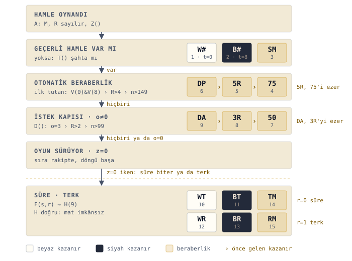
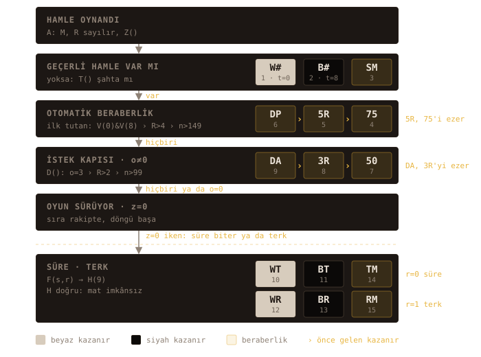
Soldaki kutu her aşamanın sorusunu, sağdaki kartlar o aşamanın çıkışlarını
gösteriyor. › işareti, aynı aşamada önce gelenin öncelikli olduğunu belirtiyor; kartların
renkleri sonuç tablosundakilerle aynı.
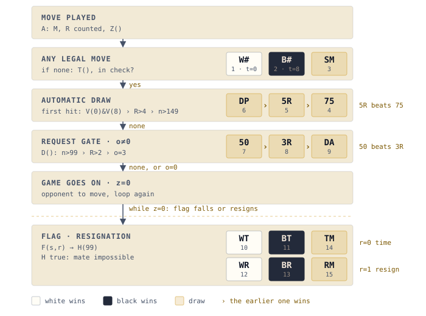
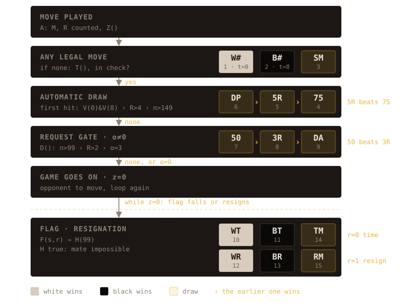
The box on the left is each stage's question, the cards on the right its exits.
› means the earlier one takes precedence within a stage; the card colours match the result
table.
Kısa devre merdiveni
The ladder of short circuits
Dört ayrı test aynı sonuca varıyor: V'nin iki yarısı — materyal ve kilit —,
tekrar sayacı ve yarım hamle sayacı. Hepsi oyunun berabere bittiğini söylüyor. Aralarındaki
fark, bunu ne kadar erken ve ne kadar ucuza söyledikleri.
En dipte iki güvenlik ağı var: 75 hamle kuralı ve beşli tekrar. Kilitli her pozisyon eninde
sonunda bunlardan birine düşer (4. bölüm); kilitli bir pozisyonda
hareketlilik çok azaldığı için tekrar çoğu zaman önce gelir. V'nin iki yarısı bu
ikisini de kısa devre ediyor: pozisyonu ortaya çıktığı anda tanıyor. Aynı V,
I için sorulduğunda H'yi de kısa devre ediyor: materyal ya da yapı
mata izin vermiyorsa arama o dalda hiç açılmıyor — üstelik bu her düğümde denetleniyor.
İlke olarak H hepsini kapsayabilirdi. Sınırsız derinlik ve bütçeyle erişilebilir
durum uzayını tüketir, imkânsızlığı da kendisi ispatlardı. Ama bu ölçüldü ve sonuç iç açıcı
değil.
Four separate tests reach the same result: the two halves of V (material and
lock), the repetition count and the ply counter. All of them declare the game drawn. What
separates them is how early and how cheaply they do so.
There are two safety nets at the bottom, the 75-move rule and fivefold repetition: every
blocked position falls into one of them eventually (section four), and
since a blockade makes mobility collapse, repetition often comes first. The two halves of
V short-circuit both by recognising the position as soon as it arises. And the
same V, asked about I, short-circuits H: if material or
structure rules out mate, the search never opens on that line — and this is checked at every
node.
In principle H could subsume all of them. With unbounded depth and budget it
would exhaust the reachable state space and prove the impossibility itself. But that has been
measured, and the measurement is not encouraging.
k4b2/8/8/p1p1p1p1/P1P1P1P1/8/8/K4B2 w kilitliblocked
Bu pozisyonda hiçbir taş karşı tarafa geçemiyor. Piyonlar karşılıklı kilitli ve
çaprazlarında alınabilecek bir taş yok; iki fil de kendi yarısındaki karelerde hapis; iki şah
da rakip piyonların tuttuğu yatayı aşamıyor. Pozisyon ölü. Ama tahtada fil olduğu için
V'nin kilitli yarısı devreye girmiyor; materyal de fazlasıyla yeterli olduğu için
materyal yarısı da bir şey söylemiyor. Geriye aramanın kendisi kalıyor. F(0,0)
derinlik değiştirilerek ölçüldü:
Nothing in this position can cross to the other side. The pawns are locked head-on, with
no captures available on the diagonals; each bishop is confined to squares on its own half;
neither king can get past the rank covered by the enemy pawns. It is a dead position. But
there is a bishop on the board, so V's blocked half is out of scope, and the
material is more than sufficient, so the material half has nothing to say either. That leaves
the search itself. F(0,0) was measured with the depth varied:
Derinlik
Cevap
Deneme
9 motorun derinliği
mat mümkün
10
15
mat mümkün
19
23
mat mümkün
31
35
mat mümkün
43
99
mat mümkün
178
149
mat mümkün
255
150
mat mümkün bütçe tükendi
2.001
Depth
Answer
Tries
9 the engine's depth
mate is possible
10
15
mate is possible
19
23
mate is possible
31
35
mate is possible
43
99
mate is possible
178
149
mate is possible
255
150
mate is possible budget exhausted
2,001
Deneme sayısı 149'a kadar derinlikle üstel değil, doğrusal artıyor — ve cevap hiç
değişmiyor. Nedeni
H'nin tasarımında: O ile every ilk yanlışta duruyor;
derinlik bitince de hat kapanmadan kalıyor ve cevap “mat mümkün” oluyor. Arama tek bir hat
boyunca dibe kadar iniyor ve orada pes ediyor. Bir kardeş hamleye ancak önceki hamle daha önce
görülmüş bir pozisyona dönüp kapandığında geçiyor; bir hat derinlik sınırına dayandığı anda
“yanlış” yukarı taşınıyor ve başka hiçbir dal denenmiyor.
Yani H imkânsızlığı ancak bütün hatlar derinlik dolmadan kapanırsa
ispatlayabiliyor. Şahlar ve filler serbestçe dolaşabiliyorsa, hep yeni pozisyonlardan geçerek
derinlik sınırına dayanan bir hat bulunur. 75 hamle sınırı ancak derinlik 150'ye çıkınca
devreye giriyor ve her hattı en geç orada kapatıyor; ama o zaman ağaç şah ve fil konumlarının
çarpımı kadar büyüyor ve bütçe 2.000 denemede tükeniyor. Kısa devreler tam da bu yüzden var:
V'nin kilitli yarısı aynı kararı — tahtada fil olmadığında — taramayla, arama
hiç açılmadan veriyor.
Bu da iki fonksiyonun neden ayrı durduğunu açıklıyor. V ile H aynı
soruyu soruyor ama aynı yoldan gitmiyor: biri tahtanın statik resmine bakarak, öbürü ileriyi
arayarak. Birinin bittiği yerde öbürü başlıyor — H'nin her düğümü önce
V'ye soruyor — ve ikisi de aynı maddeye varıyor.
Up to 149, the number of tries grows linearly with depth, not exponentially — and the
answer never changes. The reason lies in H's design: O and every
stop at the first false, and when the depth runs out the line is left unclosed and reports
“mate is possible”. The search walks a single line to the bottom and gives up there. It moves
on to a sibling only when the previous move closed by returning to a position already seen;
the moment a line hits the depth limit, false travels back up and no other branch is
tried.
So H can only prove impossibility when every line closes before the depth
runs out. With the kings and bishops free to move, there is always a line that keeps
visiting new positions until it hits the depth limit. The 75-move limit comes into play only once the depth
reaches 150, closing every line there at the latest; but then the tree grows to the product of
king and bishop placements, and the budget runs out at 2,000 tries. That is exactly why the
short circuits exist: V's blocked half reaches the same ruling — when there is
no bishop on the board — by a scan, without the search ever opening.
And this explains why the two functions stand apart. V and H ask
the same question but take different routes: one statically, from the board alone, the other
by searching ahead. Where one ends, the other begins — every node of H asks
V first — and both arrive at the same article.
Doğrulama
Verification
Geçtiği testler
The tests it passes
Motorun kuralları doğru uygulayıp uygulamadığı perft ile sınandı: bir pozisyondan belirli
bir derinliğe kadar üretilen geçerli hamle dizilerinin sayısı, yayımlanmış referans
değerlerle karşılaştırıldı. Tek bir düğümlük sapma bile kurallarda bir hata olduğu anlamına
gelir; perft'i bir hakem motoru için en sert test yapan da bu — hamle üretiminin tamamını,
şah güvenliğini, rok haklarını ve geçerken alma imkânını aynı anda yokluyor.
Karşılaştırma dört kaynağa dayanıyor: Chess Programming Wiki'nin yayımlanmış düğüm
sayıları, van Kervinck'in zor pozisyon listesi, 6.838 pozisyonluk Vajolet külliyatı ve
Stockfish. Yayımlanmış değerin bulunmadığı sığ derinliklerde ise motorla hiç kod
paylaşmayan, kurallardan doğrudan yazılmış naif bir 0x88 uygulaması kıyas noktası
oluyor.
Aşağıdaki tablolarda derinlikler birleştirildi: bir pozisyon birden fazla koşuya
bölünmüşse (önce d5'e kadar, sonra ayrı bir koşuda d6 ve d7), tabloda tek satırda, ulaşılan
en büyük derinlikle yer alıyor. Her pozisyon d1'den o derinliğe kadar bütün ara
derinliklerde de doğrulandı.
The engine's handling of the rules was tested with perft: the number of legal move
sequences from a position down to a given depth, compared against published reference
values. A discrepancy of even a single node means an error in the rules, which makes perft
the strictest test of an arbiter engine — it exercises move generation, king safety,
castling rights and en passant availability all at once.
The comparison draws on four sources: the Chess Programming Wiki's published node counts,
van Kervinck's list of tricky positions, the 6,838-position Vajolet corpus, and Stockfish.
Where no published value exists at shallow depths, the comparison comes from a naive 0x88
implementation written directly from the rules, which shares not a single line of code with
the engine.
The depths below are consolidated: where a position was split across several runs — first
up to d5, then d6 and d7 in a separate run — it appears on a single row at the greatest depth
reached. Every position was also verified at every intermediate depth from d1 up to that
one.
CPW standart pozisyonları
The standard CPW positions
Yedi pozisyon; aralarında dördüncünün renkleri aynalanmış hâli de var. Ayna tesadüfen orada
değil: renk simetrisini bozan bir hata ancak orada görünür.
Seven positions, including the colour-mirrored version of the fourth. The mirror is not
there by chance: an error that breaks colour symmetry shows up only there.
Pozisyon
Derinlik
Düğüm
Karşılaştırma
Başlangıç
d6
119.060.324
CPW yayımlanmış değerleri
Kiwipete
d5
193.690.690
CPW yayımlanmış değerleri
Pozisyon 3
d7
178.633.661
CPW yayımlanmış değerleri
Pozisyon 4
d5
15.833.292
CPW yayımlanmış değerleri
Pozisyon 4 aynası
d5
15.833.292
CPW yayımlanmış değerleri
Pozisyon 5
d5
89.941.194
CPW yayımlanmış değerleri
Pozisyon 6
d5
164.075.551
CPW yayımlanmış değerleri
Position
Depth
Nodes
Compared against
Starting position
d6
119,060,324
CPW published values
Kiwipete
d5
193,690,690
CPW published values
Position 3
d7
178,633,661
CPW published values
Position 4
d5
15,833,292
CPW published values
Position 4 mirrored
d5
15,833,292
CPW published values
Position 5
d5
89,941,194
CPW published values
Position 6
d5
164,075,551
CPW published values
van Kervinck zor pozisyonları
van Kervinck's tricky positions
Geçersiz geçerken alma, şah altında rok, geçerken almanın açtığı keşif şahı, şah çeken terfi
ve alt terfi, pat–mat ayrımı, fil açmazından kaçınma. On beş pozisyonun onunda yayımlanmış
derinliğin ötesine geçildi; bu derinliklerde karşılaştırılacak yayımlanmış değer
bulunmadığı için doğrulama Stockfish'e karşı yapıldı.
Illegal en passant, castling out of check, a discovered check opened by an en passant
capture, promotion and underpromotion giving check, the stalemate–checkmate distinction,
evading a bishop pin. In ten of the fifteen positions the tests went beyond the published
depth; since no published values exist there, those depths were verified against
Stockfish.
Pozisyon
Yayımlanmış
Ulaşılan
Doğrulama
Geçersiz geçerken alma #1
d6 · 1.134.888
d6
Yayımlanmış değer, Stockfish teyitli
Geçersiz geçerken alma #2
d6 · 1.015.133
d6
Yayımlanmış değer, Stockfish teyitli
Geçerken alma rakibe şah çekiyor
d6 · 1.440.467
d6
Yayımlanmış değer, Stockfish teyitli
Kısa rok şah çekiyor
d6 · 661.072
d7
Stockfish
Uzun rok şah çekiyor
d6 · 803.711
d7
Stockfish
Rok hakları
d4 · 1.274.206
d5
Stockfish
Rok engellenmiş
d4 · 1.720.476
d5
Stockfish
Şahtan terfiyle çıkış
d6 · 3.821.001
d6
Yayımlanmış değer, Stockfish teyitli
Keşif şahı
d5 · 1.004.658
d6
Stockfish
Şah çeken terfi
d6 · 217.342
d8
Stockfish
Şah çeken alt terfi
d6 · 92.683
d8
Stockfish
Kendi kendine pat
d6 · 2.217
d8
Stockfish
Pat ve mat ayrımı I
d7 · 567.584
d8
Stockfish
Pat ve mat ayrımı II
d4 · 23.527
d4
Yayımlanmış değer, Stockfish teyitli
Fil açmazından kaçınma
d5 · 1.063.513
d6
Stockfish
Position
Published
Reached
Verification
Illegal en passant #1
d6 · 1,134,888
d6
Published value, Stockfish-confirmed
Illegal en passant #2
d6 · 1,015,133
d6
Published value, Stockfish-confirmed
En passant gives check
d6 · 1,440,467
d6
Published value, Stockfish-confirmed
Kingside castling gives check
d6 · 661,072
d7
Stockfish
Queenside castling gives check
d6 · 803,711
d7
Stockfish
Castling rights
d4 · 1,274,206
d5
Stockfish
Castling prevented
d4 · 1,720,476
d5
Stockfish
Escaping check by promotion
d6 · 3,821,001
d6
Published value, Stockfish-confirmed
Discovered check
d5 · 1,004,658
d6
Stockfish
Promotion giving check
d6 · 217,342
d8
Stockfish
Underpromotion giving check
d6 · 92,683
d8
Stockfish
Self-stalemate
d6 · 2,217
d8
Stockfish
Stalemate and checkmate I
d7 · 567,584
d8
Stockfish
Stalemate and checkmate II
d4 · 23,527
d4
Published value, Stockfish-confirmed
Evading a bishop pin
d5 · 1,063,513
d6
Stockfish
Toplu koşular
Bulk runs
Tek tek seçilmiş pozisyonlar uç durumları yakalar; toplu koşular ise sıradan oyunda
karşılaşılanları.
Hand-picked positions catch the edge cases; bulk runs catch what turns up in ordinary
play.
Koşu
Kapsam
Yöntem
Vajolet külliyatı gerçek oyun pozisyonları
100 pozisyon × d4 kapsama için, ilk 10 pozisyon × d5 derinlik için — 450 perft kontrolü
Külliyatın kendi referans değerleri
Rastgele oyun perft değil
Kiwipete'ten 20 deterministik-rastgele oyun, oyun başına en çok 80 yarım hamle
Her pozisyonda geçerli hamle listesinin tamamı, sıralı hâlde Stockfish ile birebir
Run
Coverage
Method
Vajolet corpus real game positions
100 positions × d4 for coverage, the first 10 positions × d5 for depth — 450 perft checks
The corpus's own reference values
Random play not perft
20 seeded random games from Kiwipete, up to 80 plies each
The complete legal move list at every position, sorted, matched exactly against Stockfish
The random-play run does not look at node totals; it compares lists. A total can match
even when two errors cancel each other out; the list comparison rules that out.
The tests run by default on engine_4x.js. To test engine.js itself,
set ENGINE=./engine.js.
Rastgele oyun koşusu düğüm toplamına bakmaz, listeyi karşılaştırır. İki hata birbirini
götürdüğünde de toplam tutabilir; liste karşılaştırması tam da bu olasılığı elemek için
var.
Testler varsayılan olarak engine_4x.js üzerinde
çalışıyor. engine.js dosyasının kendisini sınamak için
ENGINE=./engine.js ayarlamak yeterli.
Kendin çalıştır
Run them yourself
Yukarıdaki sayıların hepsi tek bir iddiaya varıyor: motor bu pozisyonlarda bu düğüm
sayılarını üretiyor. Bana güvenmen gerekmiyor; kendin kontrol edebilirsin.
Repo herkese açık:
github.com/cuneytinann/FideLite.
Test klasörünün tamamını tek dosya hâlinde indirmek için:
test.zip · 249 KB. İçinde süit, dört motorun
kopyası, Vajolet pozisyon listesi, çift tıklanarak çalışan sekiz test .bat dosyası ve
hız karşılaştırması (bench.js ile speed-comparison.bat) var; başka bir şey indirmen gerekmiyor. Windows'ta bir .bat dosyasına çift
tıklamak yetiyor; başka platformlarda node test.js <komut> komutunu
çalıştırman yeterli.
Sekiz koşunun beşi yalnızca Node istiyor. CPW standart pozisyonları, Vajolet süiti ve
derin tek pozisyon koşuları yayımlanmış değerlerle karşılaştırma yapıyor; dışarıdan bir
motora gerek yok. En hızlısı 1-sanity-test.bat.
İkisi Stockfish gerektiriyor: rastgele oyun simülasyonu ve yayımlanmış derinliğin ötesine
geçen doğrulamalar. Biri de Stockfish'i isteğe bağlı kullanıyor: zor pozisyonlar koşusu,
Stockfish varsa çapraz kontrol ekliyor, yoksa referans değerlerle yetiniyor.
Stockfish pakette yok; tek başına 100 megabaytı aşıyor. Kendi ikili dosyanı test
klasörüne koyabilir ya da PATH'e ekleyebilirsin; süit sırayla STOCKFISH ortam
değişkenine, Windows'ta stockfish.exe'ye, Linux ve macOS'ta olağan kurulum
yollarına bakıyor.
Ne yayımlanmış bir değerin ne de Stockfish'in bulunduğu durumlar için pakette
ref.js var: kurallardan doğrudan yazılmış, motorla tek satır kod paylaşmayan
naif bir referans. İkisinin aynı sayıya varması ortak bir hatanın değil, gerçek bir
mutabakatın kanıtı. Onun tahtası da tıpkı motorunki gibi 0x88, ama
ikisi bunu bambaşka biçimlerde uyguluyor: ref.js tahta dışındaki kareleri klasik
i&0x88 maskesiyle tespit ediyor, yönleri tablolardan okuyor, taşları nesne
olarak tutuyor. Motorun deliklere, kalan testlerine ve tek basamaklı kodlara dayandırdığı her
şey orada açıkça yazılmış.
All the numbers above amount to a single claim: the engine produces these node counts in these positions. You do not have to take my word for it — you can check.
The repository is public:
github.com/cuneytinann/FideLite. To
download the whole test folder as one file, use
test.zip · 249 KB — it contains the suite, copies
of all four engines, the Vajolet position list, eight double-clickable test .bat
files and the speed comparison (bench.js with speed-comparison.bat), and
nothing else is needed. On Windows, double-clicking a .bat file is
enough; on other platforms, run node test.js <command>.
Five of the eight runs need only Node. The standard CPW positions, the Vajolet
suite and the deep single-position runs compare against published values; no external engine
is required. The quickest is 1-sanity-test.bat.
Two require Stockfish: the random-play simulation and the verifications that go past the
published depth. One uses it optionally — the tricky-positions run adds a cross-check if
Stockfish is available and falls back on the reference values if not.
Stockfish is not included in the package; by itself it exceeds 100 megabytes. Put
your own binary in the test folder or add it to PATH; the suite looks first at the
STOCKFISH environment variable, then for stockfish.exe on Windows,
then in the usual install paths on Linux and macOS.
For the cases where neither a published value nor Stockfish is available, the package
includes ref.js: a naive reference written straight from the rules, which shares
not a single line of code with the engine. When the two arrive at the same number, that shows
genuine agreement rather than a shared bug. Its board is 0x88 too,
like the engine's, but the two implement it in entirely different ways: ref.js
detects off-board squares with the classic i&0x88 mask, reads its directions
from tables and stores its pieces as objects. Everything for which the engine relies on holes,
remainder tests and single-digit codes is spelled out there in full.
Bu sekme motorun bugünkü hâline nasıl gelindiğini ve sınır durumlarını anlatıyor. Önce
ana sürümün dışında kalan motorlar: engine_4x: aynı kurallar,
biraz daha fazla baytla çok daha hızlı. Önceki nesil: tahtayı harf
dizgisi olarak tutan sürüm. Yalnız hamle üretici: testlerin sınadığı
çekirdeğin tek başına ne kadar küçük olabileceğini gösteren 653 baytlık dosya. Denenip elenen yollar: ölçülüp
bırakılan tahta temsilleri ve kısayollar. Sonra motorun dışı:
Sürücünün ayrıştırıcıları: tıklama, UCI ve sayısal girdi; bir de
sürücünün motora nerede bağlandığı. L1'in rok defteri ve
FEN'den pozisyon kurmak: L1'in rok haklarını neden farklı
biçimde tuttuğu ve bir pozisyonun ona nasıl yükleneceği. Paketleme: RegPack, takma adlar,
eskimiş teknikler, quirks modu ve sürüm sürüm uyumluluk. En sonda
Tuzaklar: motorun kırılgan yerleri ve değişiklik yaparken dikkat
edilmesi gerekenler.
This tab is about how the engine reached its present form, and about its edge cases. First
the engines outside the main version: engine_4x: the same
rules, a few more bytes, far more speed. The previous generation: the
build that holds the board as a string of letters. The move generator
alone: the 653-byte file that shows how small the core the tests exercise can be. Roads tried and
eliminated: board representations and shortcuts that were measured and dropped. Then what
lies outside the engine: The driver's parsers: clicking, UCI and numeric
input, and where a driver meets the engine. L1's castling ledger and
Setting up a position from FEN: why L1 keeps its castling
rights differently, and how a position is loaded into it. Packing: RegPack, aliases,
obsolete techniques, quirks mode and build-by-build compatibility. Last,
Pitfalls: the engine's fragile spots and what to watch when changing
it.
Hız
Speed
engine_4x.js — aynı kurallar, +117 bayt, hamle üretiminde 3,5 kat, hükümde yaklaşık 6 kat hız
engine_4x.js — same rules, +117 bytes, 3.5 times the speed in move generation, about 6 times in adjudication
Aşağıdaki kaynak engine_4x.js'in kendisi; engine.js'te olmayan
her parça boyalı. Bu bölümde anlatılan değişikliklerin her biri kodda bir bakışta
görünüyor.
The source below is engine_4x.js itself; every part that is not in
engine.js is painted. Each change this section describes can be seen in the code
at a glance.
engine_4x.js—
İki motor mantıksal olarak aynıdır: her derinlikte aynı hamleler, aynı düğüm sayıları,
aynı sonuç kodları. Başlangıç pozisyonundan perft d1–d4 ikisinde de
20 / 400 / 8.902 / 197.281 veriyor; CHA-Solver kaydının 201.060 pozisyonunda da
ikisi pozisyon pozisyon aynı hükmü veriyor. Fark yalnızca aynı cevaba kaç işlemle
varıldığında — ve bu nesilde o fark hamle üretiminde 3,5 kat, hükümde yaklaşık 6 kat.
The two engines are logically identical: the same moves at every depth, the same node
counts, the same result codes. Perft d1–d4 from the starting position gives
20 / 400 / 8,902 / 197,281 in both, and on the 201,060 positions of the
CHA-Solver record both return the same verdict, position by position. The difference is only
in how many operations it takes to reach the same answer — and in this generation that
difference is 3.5 times in move generation and about 6 times in adjudication.
117 bayt nereye gidiyor
Where the 117 bytes go
İki dosya yedi fonksiyonda ayrılıyor. Farkların hepsi bir kısa devre ya da daha dar bir
tarama; yeni bir fonksiyon, tablo ya da durum eklenmedi, kural metni aynı.
The two files differ in seven functions. Every difference is a short circuit or a narrower
scan; no new function, table or state was added, and the text of the rules is the same.
Fonksiyon
Ne değişiyor
Bayt
G
Kale ya da vezir ışınını ancak hedef o ışının üstünde olabiliyorsa yürüyor: d/s<8, başka bir yataydaki hedefi yatay yürüyüş başlamadan eliyor. Piyonun düz adımı da yalnız hedef boşsa yürüyor (&S() yerine &&S()).
+8
T
(p^t)>8 yalnız rakip taşları bırakıyor — boş kareler ve kendi taşları tek karşılaştırmada çıkıyor — ve şahtan indeks olarak 33 kareden uzaktaki piyon, at ya da şah G'ye hiç sorulmuyor: (22>>p%8&(x-j)**2>1089).
+26
M
e-8&& — geçerken alma yasallık taraması yalnız iki kare ilerlemeden sonra çalışıyor.
+5
V
Kilit döngüsü 99 tur yerine sabit noktada duruyor: her turda kümelerin toplamı, A+a+_+f-S-s, karşılaştırılıyor; toplam değişmeyince döngü bitiyor. Sabit noktaya varılabilsin diye iki küme 64 bitte kesiliyor (&F); yoksa tahtanın dışına taşan bitler her turda büyür ve toplam hiç durmazdı. Bir |, || oluyor: malzeme yarısı cevabı zaten verdiyse kilit taraması hiç başlamıyor.
+27
O
p+~t>>3 boş kareleri ve rakip taşları tek testte atlıyor; piyon, at ve şahta L'ye yalnız çevresindeki 5×5 kutu ulaşıyor: x-j+34&136|j-x+34&136.
+36
Z
(n+e<10|_)&& — ölü pozisyon testi yalnız bir piyon hamlesi ya da almanın yapıldığı yarım hamlede ve ondan sonrakinde, açık bir geçerken alma karesi yokken çalışıyor; bir de Z(1) ile istendiğinde.
+12
A
Z()'yi argümansız çağırıyor, tetik bu yüzden geçerli.
+3
Toplam
engine.js 1.527 → engine_4x.js 1.644
+117
Function
What changes
Bytes
G
A rook or queen walks its ray only when the target can lie on it: d/s<8 rules out a target on another rank before the walk along the rank begins. The pawn's straight step walks only when the target is empty, too (&&S() instead of &S()).
+8
T
(p^t)>8 keeps only enemy pieces — empty squares and own pieces leave in a single comparison — and a pawn, knight or king more than 33 index squares from the king is never asked through G: (22>>p%8&(x-j)**2>1089).
+26
M
e-8&& — the en passant legality scan runs only after a two-square advance.
+5
V
The lock loop stops at its fixed point instead of running 99 rounds: the sum of the sets, A+a+_+f-S-s, is compared on every round, and the loop ends when it stops changing. For the fixed point to be reached, two sets are cut to 64 bits (&F); otherwise the bits that spill off the board would grow every round and the sum would never settle. One | becomes ||: the lock scan does not start when the material half has already answered.
+27
O
p+~t>>3 skips empty squares and enemy pieces in one test; for a pawn, knight or king only the 5×5 box around it reaches L: x-j+34&136|j-x+34&136.
+36
Z
(n+e<10|_)&& — the dead-position test runs only in the ply of a pawn move or a capture and the one after it, with no en passant square open, or when asked with Z(1).
+12
A
Calls Z() without an argument, so that trigger applies.
+3
Total
engine.js 1,527 → engine_4x.js 1,644
+117
117 baytın 38'i son turda geldi ve hepsi hamle üretimine gitti: 24'ü T'ye,
9'u O'ya, 5'i G'ye; kalan 79'u o turun dışında. Altı standart pozisyonun derinlik 4'te ölçümünde yeni dosya önceki
dosyanın 1,259 katı hızda; o 38 baytın karşılığı bu. Adayların tek tek nasıl ölçüldüğü
aşağıda.
Of the 117 bytes, 38 came in the last round, all of them in move generation: 24 in
T, 9 in O, 5 in G; the other 79 lie outside it. Over the six standard positions at depth 4 the new file
runs at 1.259 times the speed of the previous one; that is what the 38 bytes buy. How
the candidates were measured one by one is below.
Hamle üretimi: perft
Move generation: perft
Aşağıdaki tablo her hamle dizisini motorun kendi O()'su üzerinden sayıyor,
motorun üstüne kurulan bir aramanın yapacağı gibi: L() her adayı
G(), U() ve T() ile süzüyor, hamle yalın
c, U, t ile (harf tahtasında X() ile)
oynanıyor; M()'nin tekrar anahtarı sayıma girmiyor. Pozisyonlar ve derinlikler
bu tablonun önceki baskısındakilerle aynı. Her ölçüm ayrı bir süreçte çalışıyor, motorların
sırası her turda dönüyor, sayılmayan bir ısınma koşusundan sonra beş turun medyanı alınıyor
ve her düğüm sayısı bilinen değerle karşılaştırılıyor. G sütunu makineden
bağımsız.
The table below counts every move sequence through the engine's own O(), the
way a search built on top of the engine would: L() filters each candidate
through G(), U() and T(), and the move is played with
the plain c, U, t (with X() on the letter
board); the repetition key of M() stays out of the count. The positions and
depths are the same as in the previous edition of this table. Each measurement runs in its own
process, the order of the engines rotates every round, the median of five rounds is taken
after a discarded warm-up run, and every node count is checked against the known value. The
G column is machine-independent.
Perft
engine.js
engine_string.js
engine_4x.js
G çağrısı
Başlangıç d4
15.248 ms
11.989 ms 1,27×
3.368 ms 4,53×
5,97×
Kiwipete d3
2.765 ms
4.210 ms 0,66×
1.214 ms 2,28×
5,15×
CPW 3 d5
30.992 ms
25.990 ms 1,19×
8.923 ms 3,47×
7,52×
CPW 4 d4
17.806 ms
17.379 ms 1,02×
5.269 ms 3,38×
4,66×
CPW 5 d3
1.915 ms
2.656 ms 0,72×
761 ms 2,52×
4,85×
CPW 6 d3
2.586 ms
3.904 ms 0,66×
1.139 ms 2,27×
4,96×
Toplam
72,07 sn
66,21 sn 1,09×
20,53 sn 3,51×
6,05×
Perft
engine.js
engine_string.js
engine_4x.js
G calls
Start d4
15,248 ms
11,989 ms 1.27×
3,368 ms 4.53×
5.97×
Kiwipete d3
2,765 ms
4,210 ms 0.66×
1,214 ms 2.28×
5.15×
CPW 3 d5
30,992 ms
25,990 ms 1.19×
8,923 ms 3.47×
7.52×
CPW 4 d4
17,806 ms
17,379 ms 1.02×
5,269 ms 3.38×
4.66×
CPW 5 d3
1,915 ms
2,656 ms 0.72×
761 ms 2.52×
4.85×
CPW 6 d3
2,586 ms
3,904 ms 0.66×
1,139 ms 2.27×
4.96×
Total
72.07 s
66.21 s 1.09×
20.53 s 3.51×
6.05×
Ryzen 7 8845HS, Node 24.14. Satırlar o pozisyonun medyanı; toplam, turların toplam
sürelerinin medyanı, sütunun toplamı değil. Oranlar engine.js'e göre;
G sütunu engine.js'in G çağrı sayısının engine_4x'inkine oranı.
4x toplamda 3,5 kat, pozisyon pozisyon 2,3 ile 4,5 kat arasında hızlı ve
G'ye altı kat daha az giriyor. Bunun nereden geldiğini iki sayaç daha
söylüyor. T() ve U() üç motorda da tıpatıp aynı sayıda
çağrılıyor — plan boyunca 1.719.023 ve 1.760.215 kez: her motor aynı adaylar için tahtayı
kopyalıyor ve onlara aynı şah testini soruyor. Değişen, oraya varana kadar retlerin ne kadara
mal olduğu. engine.js'te O() ile T()'nin tarama
koşulları boş kareleri içeri alıyor — beyaz sıradayken T() her boş kareye
soruyor, siyah sıradayken O() boş kareleri siyahın taşı sayıyor — ve uzun
menzilli dal &S() ile bittiği için ışın her çağrıda yürünüyor, önceki
testler ne derse desin: dikeye sorulan file, başka yataydaki kareye sorulan kaleye, yukarıda
içeri giren boş karelere bile. 4x ışını ancak taş o yönde gidebiliyorsa ve hedef o hattın
üstünde olabiliyorsa yürüyor. G'nin içindeki ışın adımları 262 milyondan 5,7
milyona, 45,7 kat iniyor.
Harf tahtası ikisinin arasında: toplamda engine.js'in 1,09 katı, üç
pozisyonda önde (Başlangıç, CPW 3, CPW 4), üçünde geride (Kiwipete, CPW 5, CPW 6). Onun
G'si başka bir yapıda, bu yüzden G sayısı (49,5 milyon) tahtalar
arasında karşılaştırılamaz; T() ve X() sayıları ise yukarıdakilerle
aynı.
Aynı asimetri tek bir Z() çağrısında da görünüyor; oyunda her hamleden sonra
çalışan test bu. Başlangıç pozisyonunda sayıldığında:
Ryzen 7 8845HS, Node 24.14. Each row is that position's median; the total is the median of
the round totals, not the sum of the column. The ratios are against engine.js;
the G column is engine.js's G calls divided by engine_4x's.
4x is 3.5 times faster in total and between 2.3 and 4.5 times faster per position,
and it enters G six times less often. Two more counters say where that comes
from. T() and U() are called exactly as often in all three engines —
1,719,023 and 1,760,215 times over the plan: every engine copies the board for the same
candidates and asks them the same check test. What differs is how much the rejections cost on
the way there. In engine.js the scan conditions of O() and
T() let empty squares through — with White to move T() asks every
empty square, with Black to move O() takes empty squares for Black's pieces — and
because the slider branch ends in &S(), the ray is walked on every call,
whatever the earlier tests said: for a bishop asked about a file, for a rook asked about a
square on another rank, even for the empty squares let through above. 4x walks a ray only
when the piece can move that way and the target can lie on that line. The ray steps inside
G fall from 262 million to 5.7 million, 45.7 times fewer.
The letter board sits between the two: 1.09 times engine.js in total, ahead in
three positions (Start, CPW 3, CPW 4) and behind in three (Kiwipete, CPW 5, CPW 6). Its
G is built differently, so its G count (49.5 million) does not
compare across boards; its T() and X() counts are the same as
above.
The same asymmetry shows in a single Z() call, the test that runs after every
move of a game. Counted in the starting position:
Başlangıç pozisyonunda Z()
Beyaz sırada
Siyah sırada
Oran
engine.js geometri çağrısı
97
1.585
16,3×
engine_4x.js geometri çağrısı
54
6
0,11×
Z() in the starting position
White to move
Black to move
Ratio
engine.js geometry calls
97
1,585
16.3×
engine_4x.js geometry calls
54
6
0.11×
Sayılar mikrosaniye değil çağrı sayısı: aynı Z() çağrısı boyunca
G'ye kaç kez girildiği; makineden bağımsız oldukları için tekrarlanabilirler.
engine.js boş kareleri siyahın taşı saydığı için siyah sıradayken
Z() ilk hamlesini bulmadan önce 32 boş karenin her biri için hedef taraması
yapıyor. 4x boş kareleri dışarıda bırakıyor ve Z() bulduğu ilk yasal hamlede
duruyor: tarama sırasında siyahın ilk taşı a7'deki piyon ve hamlesi hemen orada; beyazın
taraması ise a1'de kapalı duran kaleyle başlıyor. Asimetri kaldırılmakla kalmıyor, tersine
dönüyor.
The numbers are call counts, not microseconds: how many times G is
entered during the same Z() call; being machine-independent, they are
reproducible. Because engine.js takes empty squares for Black's pieces, with
Black to move Z() runs a target scan for each of the 32 empty squares before it
finds a move. 4x leaves empty squares out, and Z() stops at the first legal move
it finds: in scan order Black's first piece is the pawn on a7, which has one at once, while
White's scan starts with the boxed-in rook on a1. The asymmetry is not merely removed but
inverted.
Hüküm: 201.060 pozisyon
Adjudication: 201,060 positions
Perft V()'ye de 6.9 araması H()'ye de hiç uğramaz. İkinci ölçüm
bayrak düştüğündeki hükmün kendisi: CHA-Solver kaydının tamamı (201.060 pozisyon), hakem
sayfasında, oyunun kendi sınırlarıyla — 9 yarım hamle ve 2.000 düğümlük bütçe.
Perft never reaches V() or the 6.9 search H(). The second
measurement is the flag-fall verdict itself: the whole CHA-Solver record (201,060 positions),
in the referee page, with the game's own limits — 9 plies and a budget of 2,000 nodes.
engine.js
engine_string.js
engine_4x.js
Kaydın tamamı
53,5 sn
31,7 sn
8,7 sn
Saniyede pozisyon
3.762
6.335
23.074
Pozisyon başına, ortalama
0,13 ms
0,08 ms
0,02 ms
Medyan
0,10 ms
0,10 ms
< 0,10 ms
%99
0,70 ms
0,40 ms
0,10 ms
En kötü
56,1 ms
108,4 ms
6,9 ms
engine.js
engine_string.js
engine_4x.js
Whole record
53.5 s
31.7 s
8.7 s
Positions per second
3,762
6,335
23,074
Per position, mean
0.13 ms
0.08 ms
0.02 ms
Median
0.10 ms
0.10 ms
< 0.10 ms
99th percentile
0.70 ms
0.40 ms
0.10 ms
Worst
56.1 ms
108.4 ms
6.9 ms
Üçü de aynı hükmü veriyor: 197.464 beraberlik kanıtlanıyor, 3.596 pozisyon yarım
hamle tavanında kanıtsız kalıyor, bütçe hiçbirinde tükenmiyor, hiçbir YANLIŞ TM yok. İki 0x88
motorunda kanıtlar da aynı dağılıyor: 8.139'u malzemeden, 47.047'si kilitten, 141.814'ü
aramadan, 464'ü kökte bitmiş oyundan. engine_4xengine.js'ten
yaklaşık 6 kat, harf tahtasından 3,6 kat hızlı. Süreler tarayıcının 0,1
milisaniyelik saat adımıyla ölçülüyor; medyan ve %99 bu yüzden kaba, karşılaştırma toplam
süreden yapılıyor.
Hükümde perft'in hiç görmediği bir maliyet var: V() çağrıları.
Z her hamleden sonra V'yi iki kez, H her düğümde
V(I)'yı bir kez soruyor ve iki motorun ayrıldığı yerlerden biri de orası.
engine.js'te V() terimlerini | ile bağlıyor, yani her
çağrıda üçü de hesaplanıyor; kilit taraması ise yalnızca tahtada şah ve piyondan başka taş
yokken ve geçerken alma mümkün değilken başlıyor ve o zaman sabit 99 tur dönüyor.
engine_4x kilit terimini || ile bağlıyor: malzeme yarısı cevabı
zaten verdiyse tarama hiç başlamıyor, başladığında da sabit noktada, çoğu zaman birkaç turda
duruyor. V() çağrısı ve arama düğümü sayısı iki motorda aynı. Kayıttaki
pozisyonların çoğu tek düğümde kapanıyor — aramanın medyanı bir düğüm —, yani bir hükmün
maliyetinin büyük kısmı o düğümün hamle üretimi ve V()'si. Fark bu yüzden
perft'teki 3,5 kattan büyük: hamle üretimindeki kazancın üstüne V()'nin bu iki
erken çıkışı ekleniyor.
Oyunda karşılığı: bayrak düştüğünde hüküm medyanda saatin 0,1 milisaniyelik adımının
altında, en kötü durumda 6,9 ms sürüyor; engine.js'te 0,1 ve 56,1 ms. Bütçenin kendisi motor
sekmesinde, ayrı bir başlıkta.
All three return the same verdict: 197,464 draws proved, 3,596 positions left
unproved at the ply ceiling, the budget exhausted in none, no false TM. In the two 0x88 engines
the certificates split the same way too: 8,139 by material, 47,047 by the lock, 141,814 by the
search, 464 by a game already over at the root. engine_4x is about 6
times faster than engine.js and 3.6 times faster than the letter
board. Times are taken with the browser's 0.1-millisecond clock step, so the median and the
99th percentile are coarse; the comparison rests on the totals.
A verdict has a cost perft never sees: the V() calls. Z asks
V twice after every move, H asks V(I) once at every
node, and this is one of the places where the two engines part. In engine.js,
V() joins its terms with |, so all three are evaluated on every
call; the lock scan itself starts only when nothing but kings and pawns is on the board and
no en passant capture is available, and then it runs a fixed 99 rounds.
engine_4x joins the lock term with ||: when the material half has
already answered, the scan never starts, and when it does start it stops at the fixed point,
usually within a few rounds. The number of V() calls and search nodes is the
same in both engines. Most positions of the record close in a single node — the median search
spends one — so most of the cost of a verdict is that node's move generation and its
V(). That is why the gap is wider than perft's 3.5 times: these two early exits
in V() come on top of the gain in move generation.
In a game this means the verdict at flag fall takes less than the clock's 0.1-millisecond
step at the median and 6.9 ms at worst, against 0.1 and 56.1 ms in engine.js. The budget
itself is on the engine tab, under its own heading.
Bu tur: 38 bayt, 1,26 kat
This round: 38 bytes, 1.26×
Bu turun adayları önceki engine_4x.js'e karşı tek tek, her biri kendi
dosyasında ölçüldü; plan üç ağır pozisyonu derinlik 3'te tutuyordu (Başlangıç, CPW 3 ve
CPW 4 derinlik 4'te). Seçilen birleşim sonra altı pozisyonun hepsinde derinlik 4'te bir kez
daha ölçüldü. Kazançlar önceki motora göre duvar saati; çağrı sayıları adayın gerçekte neyi
kaldırdığını söylüyor.
The candidates of this round were measured one by one against the previous
engine_4x.js, each in its own file, on a plan that kept the three heavy positions
at depth 3 (Start, CPW 3 and CPW 4 at depth 4). The chosen combination was then measured once
more on all six positions at depth 4. The gains are wall-clock against the previous engine;
the call counts say what each candidate actually removes.
Aday
Bayt
Ne kaldırıyor
Ölçülen
Karar
T: saldıran süzgeci
+24
G çağrılarının %40'ı (d3'te 7,1 → 4,3 milyon)
1,16×
alındı
O: 5×5 kutu
+9
G çağrılarının %7'si ve onlardan önceki L çağrıları
1,11–1,19×
alındı
G: kale/vezir hattı (d/s<8)
+4
ışın adımları 2,8 kat az; çağrı yok
tek başına 0,96×
ikisi birlikte, T ve O'nun üstünde: 1,06× — alındı
G: piyon itişinde &&
+1
ışın adımları
—
Rok: önce yol, sonra şah testi
+5
T çağrılarının %0,3'ü
eşit
elendi
Candidate
Bytes
What it removes
Measured
Verdict
T: attacker filter
+24
40% of G calls (7.1 → 4.3 million at d3)
1.16×
taken
O: 5×5 box
+9
7% of G calls, and the L calls before them
1.11–1.19×
taken
G: rook/queen on a line (d/s<8)
+4
2.8 times fewer ray steps; no calls
alone 0.96×
together, on top of T and O: 1.06× — taken
G: && in the pawn push
+1
ray steps
—
Castling: the path before the check test
+5
0.3% of T calls
equal
rejected
Birlikte, altı pozisyonun hepsinde derinlik 4'te: önceki motor 180,8 sn, yenisi 143,7 sn
— 38 bayta 1,259 kat, bayt başına %0,68.
İkisi ilk ölçüldükleri hâlden kısa. T'deki bekçinin &1'i
gereksiz: sağındaki karşılaştırma zaten 0 ya da 1 ve & ondan yalnız en
düşük biti alıyor; 26 bayt 24 oldu. O'daki kutu önce
(x-j+34&15)>4|x-j+34>>>0>68 diye yazılmıştı; 0x88 tahtasının
tahta dışı testi iki yönden uygulanınca, x-j+34&136|j-x+34&136, aynı
5×5 kutu 5 bayt daha ucuza geliyor. İki yazımın sayaçları çağrısı çağrısına aynı; boşta bir
makinede yedi turluk koşuda süreleri de aynı çıktı.
Hüküm tarafında, yeni hamle üretiminin üstüne beş aday daha 201.060 pozisyonluk kayıtta
ölçüldü; hiçbiri alınmadı. Dördü hızlandırmadı: 6.9 aramasındaki şah testini yalnız yaprakta
hesaplamak (+3), aramanın içinde V()'yi Z()'deki
n+e<10 tetiğiyle kapılamak (+14) — önceki motorda gözle görülür hızlandırıyordu
—, Z()'nin iki V() çağrısı arasında || (+1) ve
V()'de map yerine forEach (+4). V()'nin
BigInt bölenini yalnız kilit taranacaksa hesaplamak (+4) bir şey değiştirmedi.
Together, on all six positions at depth 4: the previous engine 180.8 s, the new one
143.7 s — 1.259 times for 38 bytes, 0.68% per byte.
Two of these are shorter than the form first measured. The &1 of the
guard in T is redundant: the comparison on its right is already 0 or 1, and
& keeps only its lowest bit; 26 bytes became 24. The box in O was
first written as (x-j+34&15)>4|x-j+34>>>0>68; written as the
0x88 board's off-board test applied from both sides, x-j+34&136|j-x+34&136,
the same 5×5 box costs 5 bytes less. The counters of the two forms agree call for call, and in
a run of seven rounds on an idle machine their times agreed too.
On the adjudication side five more candidates were measured on the 201,060-position record,
on top of the new move generation; none was taken. Four did not speed it up: computing the
search's check test only at the leaf (+3), gating V() inside the search with the
same n+e<10 trigger as Z() (+14) — visibly faster on the previous
engine —, || between the two V() calls of Z() (+1), and
forEach instead of map in V() (+4). Computing the BigInt
divisor of V() only when the lock is to be scanned (+4) changed nothing.
Ölçü ve tuzakları
The measurement and its traps
Perft sayıları test paketindekibench.js'ten
(node bench.js engine.js engine_4x.js --site), hüküm sayıları hakem sayfasından.
Hız ölçümünü şişiren iki hata zaten biliniyordu: medyan yerine en iyi koşuyu almak ve
hamle üretimini sabit pozisyonlarda döngüye sokup gerçek bir sayımın durum yönetimini dışarıda
bırakan yapay tezgâh. Bu tur üç ders daha ekledi.
Aynı iş tek koşuda farklı ölçülebiliyor.O'daki kutunun iki yazımı
motora tıpatıp aynı işi yaptırıyor — bütün sayaçlar çağrısı çağrısına aynı — ama tek bir
koşu birine 1,19×, ötekine 1,03× gösterdi. Boşta bir makinede yedi turluk koşuda 12,82 ve
13,00 sn çıktılar. Tek koşu hiçbir şeye karar vermiyor; sayaçlar iki adayın aynı işi yaptığını
söylüyorsa sürenin farklı olup olmadığını ancak çok tur söyleyebilir.
Meşgul makine her sayıyı oynatıyor. Dizüstünde başka bir iş çalışırken —
tarayıcıda bir hüküm koşusu gibi — aynı motorun turları ±%20–30 açıldı; boşta, yüksek
öncelikle ±%1–2. Sıranın dönmesi rahatsızlığı bütün motorlara yayıyor ama ortadan
kaldırmıyor.
Bir değişikliğin değeri, içeride ne olduğuna bağlı.G'deki kale/vezir
kontrolü ışın adımlarını 2,8 kat azalttı ve tek başına ölçüldüğünde %4 yavaş çıktı: yürüyüşler
kısa ve ucuzdu, darboğaz değildi. T ve O'nun bekçileri
G çağrılarını neredeyse yarıya indirdikten sonra aynı kontrol, piyonun
&&'iyle birlikte %6 getirdi. Hüküm tarafında tersi oldu:
V()'yi aramada kapılamak önceki motorda hızlandırıyordu, yenisinde
hızlandırmadı. Bir ölçümün bir değişikliğe yazdığı şey, değişikliğin o andaki darboğazdaki
payıdır.
Önceki nesilde ölçülen dersler hâlâ geçerli: bir hamlenin dokunduğu kareleri geri koyan
gerçek bir unmake, tahtayı kopyalamaktan %13 yavaştı ve çöp toplayıcıyı besliyordu;
forEach yerine elle yazılmış bir for döngüsü %10 yavaştı. C'den
taşınan sezgiler — toplu kopya pahalıdır, elle döngü hızlıdır — JavaScript'te geçerli
değil.
The perft numbers come from bench.js in the test bundle
(node bench.js engine.js engine_4x.js --site), the verdict numbers from the referee
page. Two mistakes that inflate a speed measurement were already known: taking the best
run instead of the median, and an artificial bench that loops move generation over
fixed positions and leaves out the state management of a real count. This round added three
more lessons.
The same work can measure differently in one run. The two ways of writing the box in
O make the engine do exactly the same work — every counter agrees call for call —
yet a single run showed 1.19× for one and 1.03× for the other. In a run of seven rounds on an
idle machine they came out at 12.82 and 13.00 s. A single run decides nothing; when the
counters say two candidates do the same work, only many rounds can tell whether the time
differs.
A busy machine moves every number. With something else running on the laptop — a
verdict run in the browser, say — the same engine's rounds spread by ±20–30%; on an idle
machine, at high priority, by ±1–2%. Rotating the order spreads the disturbance across all the
engines, but it does not remove it.
A change is worth what is already in. The rook-and-queen check in G
cut the ray steps by 2.8 times and, measured alone, came out 4% slower: the walks were short and
cheap, not the bottleneck. Once the guards in T and O had cut the
G calls almost in half, the same check together with the pawn's
&& bought 6%. The opposite happened on the adjudication side: gating
V() in the search sped up the previous engine and not the new one. What a
measurement credits to a change is its share of the bottleneck at that moment.
Lessons measured on an earlier generation still hold: a true unmake, restoring only the
squares a move touched, was 13% slower than copying the board and fed the garbage collector; a
hand-written for loop instead of forEach was 10% slower. Intuitions
carried over from C — bulk copies are expensive, hand loops are fast — do not hold in
JavaScript.
Neden burada durduk
Why we stopped here
Kalan işin nerede olduğunu sayaçlar gösteriyor. T() ve U()engine_4x'te engine.js'tekiyle aynı sayıda çağrılıyor:
G'den geçen her aday bir kez kopyalanıyor ve ona bir kez şah testi soruluyor.
Bunu kısmak yapıyı değiştirmek demek — hamleyi yerinde yapıp geri almak ya da saldırı
tabloları — ve iki yol da ölçülüp bırakılmıştı: unmake yavaştı,
hamle tabloları kilobaytlar tutuyor. Aynı yapının içinde kalan,
zaman payı artık küçük olan bekçiler; son ölçülenler ya karşılığını vermedi ya da baytını
hak edecek kadar vermedi.
Hangi değişikliğin hangi dosyaya gireceği tek bir kurala bakıyor: engine.js en
kısa hâl, engine_4x en hızlısı; 117 baytın hiçbiri engine.js'te yok.
engine_4x.js sürücülerin hiçbirine gömülü değil: oyunda motorun mikrosaniyeleri
oyuncunun düşünme süresinin yanında görünmüyor. Yeri sıcak yolun açık kaldığı yerler — bir
veritabanını doğrulamak ve motoru her düğümde çağıran bir arama. Kaynağı
builds/ altında, bir kopyası da test paketinde.
The counters show where the remaining work is. T() and U() are
called as often in engine_4x as in engine.js: every candidate that
passes G is copied once and asked the check test once. Cutting that means changing
the structure — making and unmaking moves in place, or attack tables — and both roads were
measured and dropped: unmake was slower, and move tables cost
kilobytes. Within the same structure, what remains are guards whose share of the time is
already small; the last ones measured either did not pay or did not pay enough for their
bytes.
Which change goes into which file follows one rule: engine.js is the shortest
form, engine_4x the fastest; none of the 117 bytes is in engine.js.
engine_4x.js is embedded in no driver: in a game the engine's microseconds are
invisible next to a player's thinking time. Its place is wherever the hot path stays open —
validating a database, and a search that calls the engine at every node. Its source sits
under builds/, with a copy in the test bundle.
Harf tahtası
The letter board
Önceki nesil — tahtayı harf dizgisi olarak tutmak
The previous generation — holding the board as a string of letters
Motor ilk hâlinde tahtayı sayı dizisi olarak tutmuyordu. Tahta bir harf dizgisiydi:
boş kare -, taşlar RNBQKP ve küçük harfli karşılıkları. Satrancın
kendi notasyonunun doğrudan tahtaya yazılmış hâli.
Sayısal kodlamaya geçiş baştan planlanmıştı; geçiş yapılınca iki şey birden oldu: dosya
küçüldü, motor hızlandı. Ama harf sürümleri silinmedi — beşi hâlâ depoda duruyor ve
karşılaştırmayı mümkün kıldıkları için burada yer alıyorlar.
In its first form the engine did not hold the board as an array of numbers. The board was a
string of letters: - for an empty square, RNBQKP and their
lowercase counterparts for the pieces — chess's own notation, written straight onto the
board.
The move to a numeric encoding was planned from the start, and when it came two things
happened at once: the file shrank and the engine got faster. But the letter builds were not
deleted — five of them are still in the repository, and they are here because they make the
comparison possible.
Sürüm
Arayüz
Düzen
Bayt
L1_prompt_string builds/L1/
prompt
a8=0
1.039
L2_prompt_string builds/L2/
prompt
a8=0
1.618
prompt_string_a1 builds/
prompt
a1=0
2.202
prompt_string builds/
prompt
a8=0
2.205
L2_string_base builds/special/
tıklama
a8=0
1.895
Build
Interface
Layout
Bytes
L1_prompt_string builds/L1/
prompt
a8=0
1,039
L2_prompt_string builds/L2/
prompt
a8=0
1,618
prompt_string_a1 builds/
prompt
a1=0
2,202
prompt_string builds/
prompt
a8=0
2,205
L2_string_base builds/special/
clicking
a8=0
1,895
Bu kodlamanın çekirdeği engine_string.js: kuralları engine.js'le
aynı, tahtası harf dizgisi; 1.721 bayt. Aşağıdaki kaynak builds/
dizinindeki dosyanın kendisi.
The core of this encoding is engine_string.js: the same rules as
engine.js, with the board as a string of letters; 1,721 bytes. The source
below is the file in the builds/ directory itself.
engine_string.js—
Kodlama nasıl işliyor
How the encoding works
Tahta tek bir dizgiden doğuyor ve boş kareler padEnd ile dolduruluyor:
The board comes out of a single string, with the empty squares filled in by
padEnd:
b = [...'RNBQKBNRPPPPPPPP'.padEnd(48, e = _ = '-') + 'pppppppprnbqkbnr']
_ = '-' E = 'a' j = p => p?.toUpperCase()
İki sabit bütün mantığı taşıyor. _ boş kareyi, E ise renk
eşiğini tutuyor: büyük harfler sıralamada 'a''dan önce, küçük harfler sonra
geliyor. Yani renk sınaması bir karşılaştırma — p < E beyaz demek. Tür
sınamasında da doğrudan harfin kendisi kullanılıyor: j(b[i]) taşı büyük harfe
çevirip 'N', 'K', 'P' ile karşılaştırılabilir hâle
getiriyor.
Kayan taşlarda iş daha ince. Sayısal motorda karar tür numarasının aritmetiğine kalıyor:
P+P*4%x'in tekliğine; önceki neslin sayısal motorunda ise bu
bir bit alanıydı: (h*v?h==v:2)&P. Harf sürümünde ikisi de yok, ama
alfabetik sıra var: B < Q < R. Çapraz
sınama h==v & P<'R' fil ile veziri geçiriyor, düz sınama
P>'B' kale ile veziri. Aynı iki soru, aritmetik yerine harf sırasıyla
cevaplanıyor.
Two constants carry the whole logic. _ is the empty square, and E
is the colour threshold: uppercase letters sort below 'a', lowercase
above. So the colour test is a comparison — p < E means White. The type test
is the letter itself: j(b[i]) upper-cases the piece so it can be compared against
'N', 'K', 'P'.
With sliding pieces the matter is subtler. In the numeric engine the decision is left to the
arithmetic of the type number: the parity of P+P*4%x; in the
previous generation's numeric engine it was a bit field, (h*v?h==v:2)&P. The
letter build has neither, but it has alphabetical order: B < Q < R. The
diagonal test h==v & P<'R' lets bishop and queen through, the straight
test P>'B' rook and queen. The same two questions, answered by letter order
instead of arithmetic.
Yukarıdaki kod prompt_string_a1'e ait; orada tahta a1'den başlıyor.
Ters indeksli dört sürüm — L1, L2 ve
L3'teki prompt_string ile
L2_string_base — tahtayı a8'den kuruyor. Beşinde de boş kare harfi
_ adıyla tahtanın içinde doğuyor, ama iki ayrı yazımla.
prompt_string_a1'de padEnd(48,e=_='-') otuz iki boş
kareyi dolduruyor, harfe adını veriyor ve geçerken alma karesini aynı argümanda ona
eşitliyor. a8'den başlayan dört sürümde — ve engine_string.js'te — tahta bir
şablon dizgisi: ${(_='-').repeat(32)} harfe adını verip otuz iki kareyi
dolduruyor, geçerken alma karesi de ardından e=_ ile kuruluyor. Sonra sıra, rok
hakları ve yarım hamle sayacı geliyor; L1'de rok maskesi ve yarım
hamle sayacı olmadığı için orada tahtadan sonra yalnızca sıra ve geçerken alma karesi
geliyor.
The code above is prompt_string_a1's; there the board starts at a1. The four
flipped-index builds — prompt_string at L1, L2
and L3, and L2_string_base — build the board from
a8. In all five the empty-square letter is named _, and the name is created inside
the board expression itself, in one of two spellings. In prompt_string_a1,
padEnd(48,e=_='-') fills the thirty-two empty squares, names the letter and sets the
en passant square to it in the same argument. In the four a8 builds — and in
engine_string.js — the board is a template literal: ${(_='-').repeat(32)}
names the letter and fills the thirty-two squares, and the en passant square is set afterwards
with e=_. The side to move, castling rights and halfmove clock follow;
L1 has neither a castling mask nor a halfmove clock, so there only the side to
move and the en passant square come after the board.
Aynı arayüz, aynı kural katmanı, iki tahta temsili. Ölçüm:
The same interface, the same rule layer, two board representations. Measured:
prompt ailesi
Tahta
Bayt
Tam tarama
prompt
Sayı dizisi
2.089
1.210 µs
prompt_string_a1
Harf dizgisi
2.202 +113
1.640 µs 1,36×
The prompt family
Board
Bytes
Full scan
prompt
Numeric array
2,089
1,210 µs
prompt_string_a1
Letter string
2,202 +113
1,640 µs 1.36×
Fark yüz on üç bayt ve üçte birden fazla yavaşlama. Nedeni tek bir noktada toplanıyor:
sıfır doğal bir “hiçbir şey” değeri, - değil.
Sayısal kodlamada boş kare 0 ve sıfır bütün testlerden aritmetiğin kendisi
sayesinde düşüyor: p&7 sıfır veriyor, hiçbir tür dalına uymuyor, hiçbir
maskeden geçmiyor. Harf kodlamasında - harflerin arasında bir yerde duruyor ve
hiçbir şeyden kendiliğinden düşmüyor — her testte ayrıca elenmesi gerekiyor. Bu, kaynağın
her yerine dağılmış küçük bir vergi.
Farkın ne kadar somut olduğunu şu gösteriyor: harf motorunda L(i) hâlâ bir
hamle listesi döndürüyor ve boş bir karenin hamleleri sorulduğunda liste boş gelmiyor.
Başlangıç pozisyonunda e4'ten sekiz hayalet hamle çıkıyor; otuz iki boş karenin her
birinden de dört ile sekiz arası — - kayan taş dalının çapraz yarısından
geçiyor, çünkü '-' < 'R' doğru. Sayısal motorun L(i,f)'si ise boş
bir kareden yapılan hiçbir hamleye evet demiyor: tür sıfır, P+P*4%x de sıfır.
Bu oyunda görünmüyor, çünkü sürücü boş bir kareyi hiç sormuyor; ama bedelin nereden
geldiğini tek satırda anlatıyor.
A hundred and thirteen bytes and more than a third more time. The reason comes down to one thing:
zero is a natural “nothing” value; - is not.
In the numeric encoding an empty square is 0, and zero falls out of every
test through the arithmetic itself: p&7 is zero, it fits no type branch,
it passes no mask. In the letter encoding - sits somewhere among the letters and
falls out of nothing by itself — it has to be filtered explicitly in every test. That is a
small tax spread across the whole source.
Here is how concrete the difference is: in the letter engine L(i) still
returns a list of moves, and asked for the moves of an empty square it does not come back empty.
In the starting position e4 yields eight phantom moves, and each of the thirty-two
empty squares yields between four and eight — - passes the diagonal half of the sliding
branch, because '-' < 'R' is true. The numeric engine's L(i,f), on the
other hand, says yes to no move at all from an empty square: the type is zero, and so is
P+P*4%x. It never shows in play, since the driver never asks about an empty square;
but it says in one line where the cost comes from.
Motorun kendisinde de hesap aynı sonucu veriyor. engine_string.js — yukarıdaki
kod penceresinde açılan dosya — 1.721 bayt, engine.js'ten 194 bayt
uzun. Kurallar aynı; değişen, tahta ve onu okuyan kod: b[i] artık
9 değil 'P', boş kare 0 değil '-', renk
testi de bit testi değil karakter karşılaştırması (p<'a' beyaz demek).
Baytların nereye gittiği ilginç: başlangıç dizilişi bu temsilde on dört bayt ucuz —
boş kare harfini adlandıran şablon ile geçerken alma karesini kuran e=_ birlikte
66 karakter, sayısal motordaki onaltılık hile ile onu tahtaya yayan for döngüsü ise 80;
prompt_string_a1'in padEnd'li yazımıyla fark on yedi bayt —
ama tahtayı okuyan her test pahalı. Bu sürüm, motorun harf dizgisi üzerinde de aynı hükümleri
verdiğini göstermek için duruyor: sayısal temsil bir zorunluluk değil, bir tercih.
The engine itself tells the same story. engine_string.js — the file in the
code window above — comes to 1,721 bytes,
194 bytes more than engine.js. The rules are the same; what changes is the
board and the code that reads it: b[i] is now 'P' rather than 9, an empty square
'-' rather than 0, and the colour test is a character comparison rather
than a bit test (p<'a' means White). Where the bytes go is the interesting part: the
starting position is fourteen bytes cheaper in this representation — the template that
names the empty square plus the e=_ that sets the en passant square come to 66
characters, against 80 for the numeric engine's hexadecimal trick and the for loop
that spreads it; with
prompt_string_a1's padEnd spelling the gap is seventeen bytes — while
every test that reads the board is dearer. It is kept to show that the engine hands down the same verdicts on a
board of letters, which makes the numeric board a choice rather than a requirement.
Kazanılan şey okunabilirlik. P=='K' ile P>4 aynı soruyu
soruyor ama birincisi satranç gibi okunuyor. Golfstack'te amaç okunabilirlik değil; yine de
bu, kodlamanın neden önce bu hâliyle yazıldığını açıklıyor: önce doğru olanı anlaşılır
biçimde yaz, sonra ölçüp yont.
Bir ayrıntı daha: harf sürümlerinde j, taşı büyük harfe çeviren yardımcı.
Sayısal motorda toUpperCase gerektiren hiçbir şey yok; aynı harf de başka bir işe
geçti: tahtayı kuran map'in ve T'nin taramasının indeksi oldu.
Kodlama değişince yalnızca baytlar değil, harfler de serbest kalıyor — ve serbest kalan bir
harf uzun süre boş durmuyor; güncel durum boşta harfler
tablosunda.
What it buys is readability. P=='K' and P>4 ask the same
question, but the first reads like chess. Readability is not the aim in Golfstack — and yet
this is exactly why the encoding was written first: get it right legibly, then measure and
carve.
One more detail: in the letter builds j is the helper that upper-cases a piece.
The numeric engine has nothing that needs a toUpperCase, and the same letter has moved
on to another job: the index of the map that builds the board and of
T's scan. When the encoding changed, what came free was not only bytes but letters —
and a freed letter does not stay idle for long; the current state is in the
free letters table.
Harf kodlamasının tam anlatımı ayrı bir
depoda: ChessMiniature.
Burada yalnızca özeti var — elenen mimariler arasında sayılmıyor,
çünkü elenmedi: yerini halefine bıraktı.
The full account of the letter encoding lives in a repository of its own:
ChessMiniature.
This is only the summary — it is not counted among the
eliminated architectures, because it was not eliminated: it handed over to its successor.
Çekirdek
The core
Yalnız hamle üretici — 653 bayt
The move generator alone — 653 bytes
builds/special/engine_onlyMoveGenerator.js motorun hamle üreten çekirdeği,
tek başına: C, G, T, U, L ve
M. Rok, geçerken alma ve terfi dahil bütün kurallara göre bir hamlenin geçerli
olup olmadığını söylüyor ve hamleyi oynuyor; hüküm vermiyor. Sonuç kodu, sayaçlar, tekrar,
materyal testleri, ölü pozisyon ve 6.9 araması yok. Hamle listesi motorun kendisindeki gibi
iç içe iki döngüyle çıkıyor: her çıkış karesinin her varış karesi için L(i,f)
soruluyor.
Dosya bir kanıt olarak duruyor: doğruluk testlerinin — perft, CPW
pozisyonları, tricky süiti, Vajolet külliyatı — sınadığı şey yalnızca bu çekirdek. Perft bir
pozisyondan çıkan bütün hamle dizilerini sayar; sonuç kodlarına, sayaçlara ya da beraberlik
kurallarına hiç dokunmaz. Test süiti de bu yüzden yalnızca L, G,
C ve ham hamleyi yapan U'yu çağırıyor — M'yi hiç
kullanmıyor, rok maskesini ve geçerken alma karesini kendisi yazıyor — ve bu dosyayı üçüncü
motor olarak çalıştırabiliyor (node test.js --engine=3); sanity, tricky ve CPW
sayıları ana motorla birebir aynı. Yani testlerin sınadığı çekirdek 653 bayta sığıyor.
engine.js'in kalan 874 baytı bu çekirdeği bir hakeme dönüştüren kısım: motorun
%57'si hamle üretmeye değil, hüküm vermeye gidiyor.
Dosya engine.js'in kısaltılmış hâli, ayrı bir uygulama değil. Başlıktan
L'nin sonuna kadar metin harfi harfine aynı; başlıktan yalnızca yarım hamle sayacı
ile teklif bitleri (n=o=0) çıkarılmış. Gövdelerdeki tek fark M'de:
yarım hamle sayacı ve tekrar anahtarı k yok, geçerken alma karesi de her çift
adımdan sonra olduğu gibi kalıyor. engine.js onu yalnızca alma gerçekten
mümkünse tutuyor, çünkü orada kare tekrar anahtarının parçası (9.2.3.1). Bu çekirdek tekrar
saymadığı için fark hamle listesine yansımıyor.
builds/special/engine_onlyMoveGenerator.js is the engine's move-generating
core on its own: C, G, T, U, L
and M. It tells whether a move is legal under all the rules, castling, en passant and
promotion included, and plays it; it passes no verdict. There is no result code, no counter, no
repetition, no material test, no dead position and no 6.9 search. The move list comes out as it
does in the engine itself, from two nested loops: L(i,f) is asked for every
destination of every origin.
The file exists as a proof: what the correctness tests — perft, the
CPW positions, the tricky suite, the Vajolet corpus — actually check is this core alone. Perft
counts every move sequence from a position; it never touches result codes, counters or draw
rules. That is why the test suite only ever calls L, G,
C and U, which makes the raw move — it never uses M, and
writes the castling mask and the en passant square itself — and why it can run this file as its
third engine (node test.js --engine=3): the sanity, tricky and CPW counts match the
main engine exactly. So the core the tests exercise fits in 653 bytes. The remaining 874 bytes of
engine.js are what turns it into an arbiter: 57% of the engine goes into judging,
not into generating moves.
The file is a cut-down engine.js, not a separate implementation. From the header
to the end of L the text is identical letter for letter; all the header loses is the
ply counter and the offer bits, n=o=0. The only other difference is in
M: there is no ply counter and no repetition key k, and the en passant square stays as it
is after every double step. engine.js keeps it only when a capture is actually
possible, because there the square is part of the repetition key (9.2.3.1). This core counts no
repetitions, so the difference never reaches the move list.
engine_onlyMoveGenerator.js—
Alternatifler
Alternatives
Denenip elenen yollar
Roads tried and eliminated
Motorun tahta temsili bugün 0x88: on altı sütunlu, kare merkezli
seyrek bir dizi; yatayların arasında sekizer boş hücre var. Önceki neslin tahtası düz, 64
elemanlı bir diziydi — dolgu yok, 0x88 yok, bitboard yok — ve bu bölüm ilk yazıldığında o
yapı “geriye kalan” diye anlatılıyordu. Aşağıdakilerin hepsi ya yazıldı ya da ölçüldü.
Bu bölüm bir kayıt: ne denendi, neden tutmadı. Sayılar eskimiyor, çünkü her karar kendi
gününün ölçümüne ait; çoğu önceki neslin motorunda ölçüldü ve öyle bırakıldı. Ama “elendi”
her zaman “kullanılmadı” demek değil. En büyük örnek tahtanın kendisi: dolgulu
tahta önceki nesilde gerekçeleriyle elenmişti; yeni motor ise onun üstüne kuruldu.
Taş alfabesi de öyle: eski motorda hiçbir aday kazanmadı, 0x88'de
arama yeniden açıldı ve bugünkü alfabe oradan çıktı. Bir fikri bir motorda elemek onu
bitirmiyor: bayt farkı motora ve dosyaya göre değişiyor.
The engine's board representation today is 0x88: a sparse,
square-centric array sixteen columns wide, with eight empty cells between one rank and the next.
The previous generation was a flat array of 64 — no padding, no 0x88, no bitboards — and when
this section was first written, that structure was described as “what was left over”.
Everything below was either written or measured.
This section is a record: what was tried, and why it did not hold. The numbers do not go
stale, because each decision belongs to the measurement of its day; most of them were measured
on the previous-generation engine and are left that way. But “eliminated” does not always mean
“unused”. The biggest example is the board itself: the padded
board was eliminated, with reasons, in the previous generation, and the new engine is built
on it. The piece alphabet is the same story: no candidate won on the
old engine, the search was reopened on 0x88, and today's alphabet came out of it. Eliminating
an idea in one engine does not finish it: the byte difference depends on the engine and on
the file.
Öklid uzaklığı — ilk tasarım, iki karede çöktü
Euclidean distance — the first design, collapsed on two squares
İlk fikir hareketi mutlak uzaklıkla tanımlamaktı: kesikli düzlemde bir kareden ötekine
Pisagor uzaklığı. Boş bir 8×8 tahta çizip seçilen kareye göre bütün uzaklıkları ölçen küçük
bir simülasyon yazıldı ve formüller ilk bakışta kusursuz duruyordu — at hep √5'te, şah 1 ile
√2 arasında, kale {1…7} tam sayılarında, fil √2'nin katlarında {1√2…7√2}, vezir de son
ikisinin birleşiminde.
At ve şah gerçekten temiz. Sekiz kareli uzayda d²=5 veren tek şekil (1,2); √5 tek başına
ata ait. d²≤2 veren şekiller (0,1), (1,0), (1,1) — şahın da rakibi yok.
Kale ve fil için durum farklı. Bütün uzaklık uzayında tam iki çarpışma var:
The first idea was to define movement by absolute distance: the Pythagorean distance
from one square to another on a discrete plane. A small simulation was written that drew an
empty 8×8 board and measured every distance from a chosen square, and at first glance the
formulas looked flawless — the knight always √5, the king between 1 and √2, the rook the
integers {1…7}, the bishop the multiples of √2 {1√2…7√2}, the queen the union of the last
two.
The knight and king really are clean. In an eight-square space the only shape giving
d²=5 is (1,2); the knight owns √5 outright. The shapes giving d²≤2 are (0,1), (1,0), (1,1) —
the king has no rival either.
The rook and bishop are not. In the whole distance space there are exactly two
collisions:
Uzaklık
Şekil
Çarpışan şekil
5
(0,5) — kalenin beş karelik hamlesi
(3,4) — hiçbir taşın hamlesi değil
5√2
(5,5) — filin beş karelik hamlesi
(1,7) — hiçbir taşın hamlesi değil
Distance
Shape
Colliding shape
5
(0,5) — rook, five squares
(3,4) — no piece's move
5√2
(5,5) — bishop, five squares
(1,7) — no piece's move
The 3-4-5 triangle impersonates the rook's fifth square, and (1,7) the bishop's fifth.
The queen inherits both. Distance alone cannot define a legal move.
The second problem is even more serious: distance has no direction. The square root
swallows the sign, and the pawn is the board's only one-way piece. No patch could have saved
the Euclidean approach for the pawn.
The solution was to throw away the square root: keep the horizontal and vertical
differences apart. The previous generation's h and v come from
here, and that one step solved both problems at once — the collision, because (3,4) and (0,5) are
now two different pairs; and the direction, because f<i^b[i]&1 carried a
signed comparison. The residue of the abandoned approach was plain to see there:
h*v==2 is the knight, h|v<2 the king, h==v the bishop,
h*v==0 the rook. The distance went, the shape stayed. The letter-board
engine_string.js still carries this shape test today; the new engine let go of
the shape as well and reads the move from the index difference — the
next heading.
The simulation from that day is still around, if you want to click a square and see where
it breaks:
Board_Delta_Coordinate.html
— pick a square, every square matching one of a piece's distances lights up, and the
collisions come out hatched, visible at a glance.
3-4-5 üçgeni kalenin beşinci karesini, (1,7) filin beşinci karesini taklit ediyor.
Vezir ikisini birden miras alıyor. Uzaklık tek başına geçerli hamleyi tanımlayamıyor.
İkinci sorun daha da ölümcül: uzaklık yönsüz. Karekök işareti yutuyor, piyon ise
tahtanın tek yönlü taşı. Öklid yaklaşımında piyonu hiçbir yama kurtaramazdı.
Çözüm karekökü atmak oldu: yatay ve dikey farkları ayrı tutmak. Önceki neslin
h ve v'si buradan geliyor ve tek adımda iki sorun birden çözüldü —
çarpışma, çünkü (3,4) ile (0,5) artık farklı iki çift; yön, çünkü
f<i^b[i]&1 işaretli bir karşılaştırma taşıyordu. Vazgeçilen yaklaşımın
kalıntısı orada açıkça görünüyordu: h*v==2 at, h|v<2 şah,
h==v fil, h*v==0 kale. Uzaklık gitti, şekil kaldı. Harf tahtalı
engine_string.js bu şekil testini bugün de taşıyor; yeni motor şekli de bıraktı
ve hamleyi indeks farkından okuyor — ayrıntısı bir sonraki
başlıkta.
Çöküşün nerede olduğunu kareye tıklayarak görmek için o günkü simülasyon hâlâ duruyor:
Board_Delta_Coordinate.html
— bir kare seç, bir taşın uzaklıklarından birini tutan bütün kareler yanıyor; çakışanlar
taralı çıkıyor ve tek bakışta görünüyor.
Dolgulu tahta — önce elendi, sonra alındı
The padded board — eliminated first, adopted later
Uzaklık şekle dönüştükten sonraki soru şuydu: şekil testinden de vazgeçilebilir mi?
Geçerliliği i ile f arasındaki ham indeks farkından okumak düz 64
karelik tahtada mümkün değil, çünkü fark kenarda belirsiz: +1 bir sağa demek ama
h sütununda bir üst yatayın a sütununa sarıyor; çaprazların +7 /
+9'u ve atın +6/+10/+15/+17'si de aynı şekilde. Belirsizliği
kaldırmak için |i%8-f%8| eklemek gerekiyor, bu da zaten h'nin
kendisi; yani düz tahtada fark yolu şekil testine geri düşüyor. Fark ancak dolgulu bir
tahtada tek anlamlı oluyor: 0x88'in boş sütunları ya da 10×12 mailbox'ın gözcü kenarı sarmayı
emiyor.
Önceki nesil burada durdu ve dolguyu eledi. Gerekçe şuydu: dolgunun sattığı bedava
kenar testi, hedefi f = i + ofset ile üreten bir hamle üreticisinde alıcı bulur.
Bu motor hamle üretmiyor, geziniyor: G'ye başlangıç ve varış karesi
birlikte geliyor, varış da zaten var olan bir kare. Üstüne iki maliyet öngörüldü: dizi 128
hücreye çıkınca hedef taraması yarısını ayrıca elemek zorunda kalacak, başlangıç literali de
iki katına çıkacaktı. Yatay ve dikey farkla kurulan şekil testi en ucuz yol sanılıyordu.
Fark yolu önce düz tahtada denendi. L1'in light sürümünde aynı
arayüz ve aynı şablonla iki 8×8 dosya kuruldu: biri h / v'li,
öbürü 0x88 farkını düz indekslerden hesaplayıp (X=a(F+F-h)) yön seçimini onun
üstüne kuran. Birincisi 1.105, ikincisi 1.121 bayt. Farkı hesaplamanın bedeli kazancı
yiyordu.
Tahta gerçekten on altı sütuna genişletilince fark bedavaya geldi: d=f-i. Yön
tek bir ifadeyle seçiliyor: x=d%15?d%16?d%17?1:17:16:15; at
d*d%765%128==68, şah d==s. Hamle geometrisinden Math.abs,
i%8 ve i>>3 tamamen çıktı. Önceki neslin G'si 247
bayttı ve a=Math.abs, takma adına (11 bayt) dayanıyordu — üç a(
çağrısının ikisi G'deydi. 0x88 motorunun G'si 236 bayt. Geçiş önce
L1'in light sürümünde yapıldı, sonra L2 ve
L3'te, en son da motorun kendisinde.
Öngörülen iki maliyet gerçekleşmedi. Hedef taraması delikleri hiç görmüyor:
b seyrek bir dizi — değer yalnızca 64 gerçek kareye yazılıyor, aradaki 56 hücre
hiç atanmamış delik olarak kalıyor — ve map, some, every
deliklerde geri çağrıyı hiç çalıştırmıyor. Dizinin yarısını eleyen ek bir test yazılmadı.
Literal de iki katına çıkmadı: aynı 64 haneli dizgi j*2-j%8 ile yayılıyor ve
kurulum 70 bayttan 83'e çıkıyor (+13). Yan kazanç olarak kare rengi i*9/8%2+1
yerine i%15%2+1 ile hesaplanıyor, çünkü 16 ≡ 1 (mod 15).
Dolgunun kenar testi de alıcı buldu — üreticide değil, yürüyüşte. Kayan taşlar için adım
zincirinin son dalı 1: düz bir doğru üzerinde olmayan her fark yatay adım
sayılıyor. S o yönde yürüyor ve varışa ulaşamadan, en geç ilk delikte duruyor.
Bunun için yürüyüş koşulunun b[i]<1 olması şart: undefined<1
yanlış ve yürüyüşü durduruyor, !undefined ise doğru ve yürüyüşü sürdürüyor.
Önceki nesil burada bir bayt kısa olan !b[i]'yi taşıyordu; yeni motorda o
kısaltma bir hata. Tuzaklar bölümünde anlatılıyor.
Önceki neslin bir gerekçesi bugün de doğru: yolun kapalı olup olmadığı temsilden bağımsız
bir soru; kayan taşın yolu yine yürüyerek sınanıyor. 0x88 S'yi kaldırmadı,
yalnızca h ile v'yi kaldırdı. Motor da hâlâ ofset üretmiyor,
geziniyor; dolgu kenar için değil, farkı tek anlamlı kılmak için orada. Geriye kalan yapı:
0x88 + G'nin fark testi + S'nin yürüyüşü.
İndeks farkının düz tahtada neden yanıltıcı olduğunu kareye tıklayarak görmek için o
günkü ikinci simülasyon duruyor:
Board_Delta_Index.html
— bir kare seç, her hedef karenin üstüne o kareye giden indeks farkı yazılıyor. Aynı farkın
tahtanın iki ucunda iki ayrı hamle anlamına geldiği ve kenardan taşan farkların nereye
düştüğü orada tek bakışta görünüyor. Düz 8×8, 0x88 ve 10×12 düzenleri arasında geçiş
yapıldığında taş aynı karede kalıyor; düz tahtada yanlış kareye sızan farkın dolgulu tahtada
nasıl emildiği yan yana izlenebiliyor.
Once distance had turned into shape, the next question was: could the shape test go too?
Reading legality from the raw index difference between i and f is
not possible on a flat 64, because the difference is ambiguous at the edge: +1
means one to the right, but on the h-file it wraps to the a-file of the rank above, and the
diagonals' +7 / +9 and the knight's +6/+10/+15/+17 do
the same. Removing the ambiguity requires adding |i%8-f%8|, which is just
h again; so on a flat board the difference road falls back into the shape test.
The difference only becomes unambiguous on a padded board: 0x88's empty columns or the
sentinel border of a 10×12 mailbox absorb the wraparound.
The previous generation stopped here and eliminated the padding. The reasoning was
this: the free edge test that padding sells finds a buyer in a move generator that produces
its targets with f = i + offset. This engine does not generate, it
scans: G is handed the source and the target square together, and the
target is a square that already exists. On top of that, two costs were foreseen: with the
array grown to 128 cells, the target scan would have to filter half of them out, and the
initial literal would double. The shape test built on the horizontal and vertical differences
was thought to be the cheapest road.
The difference road was tried on the flat board first. In L1's
light build, with the same interface and the same template, two 8×8 files were built: one with
h / v, the other computing the 0x88 difference from the flat indices
(X=a(F+F-h)) and choosing the direction from that. The first was 1,105 bytes, the
second 1,121. The cost of computing the difference ate the gain.
Once the board really was widened to sixteen columns, the difference came for free:
d=f-i. The direction is chosen in one expression,
x=d%15?d%16?d%17?1:17:16:15; the knight is d*d%765%128==68, the
king d==s. Math.abs, i%8 and i>>3
left the move geometry altogether. The previous generation's G was 247 bytes and leaned
on an a=Math.abs, alias (11 bytes) — two of the three a( calls were in
G. The 0x88 G is 236 bytes. The switch was made first in
L1's light build, then in L2 and
L3, and last in the engine itself.
Neither of the two foreseen costs materialised. The target scan never sees the
holes: b is a sparse array — values are written only to the 64 real squares, and
the 56 cells in between stay holes that were never assigned — and map,
some and every never run their callback on a hole. No extra test
filtering out half the array was written. Nor did the literal double: the same 64-digit
string is spread out with j*2-j%8, and the setup goes from 70 bytes to 83 (+13).
As a side gain, the square colour is i%15%2+1 instead of
i*9/8%2+1, because 16 ≡ 1 (mod 15).
Padding's edge test found a buyer too — not in a generator, but in the walk. For the
sliding pieces the last branch of the chain is 1: any difference that does not
lie on a straight line counts as a horizontal step. S walks that way and, never
reaching the target, stops at the first hole at the latest. That requires the walk's condition to be b[i]<1:
undefined<1 is false and stops the walk, while !undefined is true
and lets it carry on. The previous generation carried the one-byte-shorter !b[i]
here; in the new engine that shortening is a bug. Pitfalls records
it.
One of the previous generation's reasons still holds: blocking is a question independent
of the representation, and a sliding piece's path is still tested by walking. 0x88 did not
remove S; it removed only h and v. Nor does the engine
generate offsets now — it still scans; the padding is there not for the edge but to make the
difference unambiguous. The structure that remains: 0x88 + G's difference test +
S's walk.
The second simulation from those days is still around, if you want to click a square and
see why the index difference misleads on a flat board:
Board_Delta_Index.html
— pick a square and the index difference to every target is written on it. That the same
difference means two different moves at opposite ends of the board, and where the differences
that spill over an edge land, are both visible at a glance. Switching between the flat 8×8,
0x88 and 10×12 keeps the same piece on the same square, so a difference that leaks onto the
wrong square on the flat board can be watched being absorbed by the padding, side by
side.
Tahtanın eni — neden on altı
The board's width — why sixteen
Dolgu kabul edilince sıradaki soru genişlikti; on altı tek seçenek değildi. 10, 12, 16 ve
17 sütunlu tahtalar aynı L1 light şablonundan üretildi, her biri
perft ve tarayıcı senaryolarıyla sınandı — en yakınları ayrıca bağımsız bir hakeme karşı
rastgele oyunlarla — ve bayt bayt ölçüldü. Tahtaya bağlı her yuvanın — başlangıç eşlemesi,
geçerken alınan piyonun karesi, kare rengi, kayan taş testi, ekranı döndürme, yön zinciri, at
testi, çift adım ve son yatay sabitleri — en iyi yazımı her tahta için ayrıca arandı. Sayılar
o günkü sıkı arayüzle ölçüldü; sitenin arayüzü her dosyaya aynı 30 baytı eklediği için
sıralama değişmiyor.
Once padding was accepted, the next question was the width; sixteen was not the only
option. Boards 10, 12, 16 and 17 columns wide were generated from the same
L1 light template, each was tested with perft and browser scenarios —
the closest ones also with random games against an independent referee — and measured byte
for byte. The best spelling of every slot that
depends on the board — the initial mapping, the square of the pawn taken en passant, the
square colour, the slider test, flipping the display, the direction chain, the knight test,
the double-step and last-rank constants — was searched for separately on each board. The numbers
were measured with the tight interface of the day; the site's interface adds the same 30
bytes to every file and the order does not change.
Tahta
En iyi düzen
Bayt
16×8'e göre
16×8
normal
909
—
17×8
ters sıralı
912
+3
10×8
ters sıralı
913
+4
16×12
ters sıralı
919
+10
12×10
ters sıralı
921
+12
Board
Best layout
Bytes
vs 16×8
16×8
normal
909
—
17×8
rank-reversed
912
+3
10×8
rank-reversed
913
+4
16×12
rank-reversed
919
+10
12×10
rank-reversed
921
+12
Asıl bulgu ekranın döndürülmesinde çıktı. Tahta her zaman sırası gelen tarafın
gözünden çiziliyor ve şablon ekran sırasını gerçek kareye çevirmek zorunda. 10 genişlikte
normal düzende bu 23 karakter tutuyordu (u=w+7-w%10*2,t?u=77-u:u); yataylar 8'den
1'e doğru saklanınca 10 karaktere indi (u=t?w:77-w) ve başka hiçbir yerde bedel
çıkarmadı. 10×8 için tahmin 926–928'di; normal düzen 926, ters sıralı düzen 913 bayt ölçüldü.
16 genişlikte ise XOR zaten 10 karakter (u=w^7<<t/2); ters düzen de orada
u=w^119>>t ile aynı uzunluğa iniyor.
10×8 ile 16×8 yuva yuva karşılaştırılınca 10 genişlik yön zincirinde
(x%9?x%10?x%11?1:11:10:9, −2), at testinde (x*x%257%40==24, −1),
çift adım ve son yatay sabitlerinde (birer bayt) kazanıyor; satır başında, kare renginde ve
kayan taş testinde birer bayt kaybediyor. Farkı iki yuva belirliyor: başlangıç eşlemesi
(j*5-j%8>>2, +3) ve geçerken alınan piyonun karesi
(30+f%20, +3). 16'da ikisi de tek işlem: j*2-j%8 ve
f^16. Net fark +4.
Tek genişlikler kâğıt üstünde rekor kırdı ama geçersizdi. 11×8 908, 13×8 909 bayt
verdi. Genişlik tekken iki çapraz adım (W−1 ve W+1) çift sayı oluyor ve ortak katları tahtanın
içine düşüyor: 11 genişlikte 60, hem (5,+5) hem (6,−6) çaprazına karşılık geliyor. Zincir
farktan tek bir yön seçtiği için öbür hamle kayboluyor — 11×8'de perft dokuz hata verdi ve
rastgele oyunlarda Fc6xh1 hiç üretilmedi; 13×8'de aynı sorun Fh2-b8'i götürdü. 17'de ortak kat
tahtanın dışında kalıyor ve 17×8 geçerli: 912 bayt. Tek genişlik orada iki yuvayı kısaltıyor —
kare rengi w&1 (−3), kayan taş testi P>>d%2 — ama eşleme ve
geçerken alma yine pahalı. 12, 14, 15 ile 19 ve üstü genişlikler kurulmadı; tahminleri en az
913 bayt. 9'da hem aynı çapraz sorunu hem de atın belirsizliği var.
Kurallar arttıkça sıralama biraz değişti.L2'de 17×8, ölü
pozisyon tespitinde kare rengini i%2+1'e indirip 16×8'e yetişti: ikisi de 1.540.
L3'te de eşit kaldılar: 2.325. 10×8 iki seviyede de dört bayt
geride. Eşitlikte 16×8 seçildi, çünkü yalnızca onda 6.9 araması hamleleri önceki motorla aynı
sırada, a1'den h8'e geziyor ve bütçeyi birebir aynı harcıyor. Ters sıralı tahtalarda hüküm
hiçbir testte değişmedi ama bütçe farklı yerlerde tükendi: CHA-Solver'ın 201.060 oyunluk
listesinde 2.707 pozisyonda.
Toledo'nun JavaScript satrancı 10×12'lik, 120 hücreli bir tahta kullanıyor; hamleleri yön
tablosuyla üreten bir motor için doğal seçim bu. Burada ise motor hamle üretmiyor, hamleyi
farktan doğruluyor; fazladan dolgu sıraları yalnızca indeks kaydırma bedeli getiriyor.
16×12 ile 12×10'un fazladan sıraları bu yüzden hiçbir şey kazandırmadı.
The real finding was in flipping the display. The board is always drawn from the
point of view of the side to move, and the template has to turn display order into the real
square. At width 10 in the normal layout that took 23 characters
(u=w+7-w%10*2,t?u=77-u:u); with the ranks stored from 8 down to 1 it fell to 10
(u=t?w:77-w) and charged nothing anywhere else. The estimate for 10×8 had been
926–928; the normal layout measured 926, the rank-reversed one 913. At width 16, on the other
hand, the XOR is already 10 characters (u=w^7<<t/2); the reversed layout
gets to the same length there with u=w^119>>t.
Compared slot by slot with 16×8, width 10 wins in the direction chain
(x%9?x%10?x%11?1:11:10:9, −2), in the knight test
(x*x%257%40==24, −1) and in the double-step and last-rank constants (a byte
each); it loses a byte each in the row start, the square colour and the slider test. Two slots
decide the difference: the initial mapping (j*5-j%8>>2, +3) and the square
of the pawn taken en passant (30+f%20, +3). At 16 both are a single operation:
j*2-j%8 and f^16. Net +4.
The odd widths broke the record on paper, but they are invalid. 11×8 came to 908
bytes, 13×8 to 909. With an odd width the two diagonal steps (W−1 and W+1) are both even, and
their common multiple falls inside the board: at 11, 60 is both the (5,+5) and the (6,−6)
diagonal. Because the chain picks a single direction from the difference, the other move is
lost — on 11×8 perft gave nine errors and Bc6xh1 was never generated in random games; on 13×8
the same problem took Bh2-b8 away. At 17 the common multiple falls outside the board, and 17×8
is valid: 912 bytes. There the odd width shortens two slots — square colour w&1
(−3), slider test P>>d%2 — but the mapping and en passant are still
expensive. Widths 12, 14, 15 and 19 upward were not built, with estimates of 913 or more; 9
has both the same diagonal problem and an ambiguous knight.
As the rules grew, the order shifted a little. In L2, 17×8
caught up with 16×8 by cutting the square colour in dead-position detection to
i%2+1: both 1,540. In L3 they tied as well: 2,325. 10×8 is
four bytes behind at both levels. The tie went to 16×8, because only there does the 6.9
search visit moves in the same order as the previous engine, a1 to h8, and spend exactly the
same budget. On the rank-reversed boards the verdict did not change in any test, but the budget
ran out at different places: in 2,707 positions of CHA-Solver's list of 201,060 games.
Toledo's JavaScript chess uses a 10×12 board of 120 cells; that is the natural choice for
an engine that generates moves from a direction table. Here the engine does not generate, it
verifies from the difference; padding rows bring nothing but the cost of shifting the index.
That is why the extra rows of 16×12 and 12×10 gained nothing.
Tahtayı sayı olarak tutmak — iki deneme, iki eksen
Holding the board as a number — two attempts, two axes
Bu bölümün tezi iki kelimeye dayanıyor: kare merkezli ve dizi. Denenen iki alternatifin
her biri bunlardan birini reddediyor.
Bitboard kare merkezliliği bırakır: bilgi taş türüne göre ayrılmış 64 bitlik
kelimelere dağılır, her bit “bu karede beyaz piyon var mı?” sorusunu cevaplar. Küme işlemleri
ucuzlar — bütün beyaz piyonların tehdit ettiği kareleri tek maskede alırsın. Karşılığında
“12. karede ne var?” sorusu pahalılaşır; her kelimeyi ayrı ayrı sınaman gerekir.
Paketlenmiş tam sayı ise kare merkezliliği korur, yalnızca kabı değiştirir: aynı 64
basamak, dizi yerine tek bir sayının içinde. Veri modeli birebir aynı, erişim biçimi
farklı.
İkisi de aynı araca mecbur: BigInt. 64 kare × 4 bit 256 bit eder; bu,
Number'ın 53 bitlik tam sayı hassasiyetinin çok ötesinde. Yani iki yol da
JavaScript'in BigInt bedelini ödüyor — her literale n eki, karışık her ifadeye
açık bir dönüşüm ve BigInt ile Number'ı + ile
karıştırdığın anda bir TypeError.
Bedelin nerede biriktiği ölçülebilir. engine.js tahtaya köşeli parantezle
on üç yerde dokunuyor — dokuzu okuma, dördü atama — ve ayrıca indexOf,
some, map ve every ile altı kez geziyor. Dizi hâlinde
b[i] dört karakter; paketlenmiş hâlde aynı okuma bir kaydırma ve bir maske ister,
kabaca 25 karakter. Yalnızca okumalarda fark 180 baytı aşıyor; gezinmelerin ise doğrudan bir
karşılığı yok — altısı da elle yazılmış döngüye dönüşür. Bitboard'da bunun üstüne bir de
saldırı tabloları eklenir.
C ya da Assembly'de bu modelleri ucuz kılan şey, işlemci düzeyinde bedava olan 64 bitlik
aritmetik. JavaScript'te o zemin yok; kazandırmak bir yana, iki deneme de yüzlerce bayt
ekledi. Dahası ikisi de motorun bütün iskeletini değiştirecek, karşılığında yönetilmesi zor
bir algoritmik bilinmezlik yığını getirecekti — hızı boyuta takas eden bir projede yanlış
yönde bir takas.
İşin ironisi, BigInt motorda kaldı; yalnızca bambaşka bir işte. Başlangıç
tahtası 10n**40n-10n**32n ile kuruluyor: ifade 40 basamaklı bir sayı üretiyor —
sekiz adet 9, ardından otuz iki adet 0 — yani beyaz piyon sırası ve
ortadaki dört boş yatay. Kaynakta 20 karakter tutuyor, ürettiği dizgi 40 karakter. 20 bayt
kazanç. BigInt tahta temsili olarak elendi, literal sıkıştırıcı olarak kaldı — bir de
kilitli taramada: V piyonları, şahları ve filleri 64 bitlik
BigInt kümelerinde tutuyor. Tahtanın tamamı için pahalı olan model, tek bir sorunun içinde ucuz.
This section's thesis rests on two words: square-centric and array. Each of the two alternatives
tried rejects one of them.
Bitboards give up square-centricity: the information is spread across 64-bit words
split by piece type, each bit saying “is there a white pawn on this square?”. Set operations
become cheap — you get the attacks of all white pawns in a single mask. In exchange, “what is
on square 12?” gets expensive; you have to test each word separately. A packed
integer, by contrast, preserves square-centricity and only changes the container: the
same 64 digits, inside a single number rather than an array. The data model is identical,
the access pattern different.
Both are forced to the same place: BigInt. 64 squares × 4 bits is 256
bits, far beyond Number's 53-bit integer precision. So both roads pay JavaScript's BigInt tax — an n suffix on every literal, an explicit conversion in every
mixed expression, and a TypeError the moment you mix BigInt and
Number with +.
Where the cost accumulates is measurable. engine.js touches the board with
square brackets in thirteen places — nine reads, four assignments — and walks it a further six
times with indexOf, some, map and every. As
an array, b[i] is four characters; packed, the same read wants a shift and a mask,
roughly 25. That is a difference of over 180 bytes on the reads alone, and the walks have no direct equivalent — all six turn into hand
loops. On top of that, bitboards add attack tables.
What makes these models cheap in C or assembly is 64-bit arithmetic being free at the
processor level. JavaScript offers no such ground; far from gaining, both attempts added
hundreds of bytes. Worse, both would have changed the engine's entire skeleton and returned
a pile of hard-to-manage algorithmic unknowns in exchange — the wrong direction of trade in
a project that trades speed for size.
The irony is that BigInt stayed in the engine, but in a completely
different job. The starting board is built with 10n**40n-10n**32n: the
expression produces a 40-digit number — eight 9s, then thirty-two
0s — that is, the
white pawn rank and the four empty middle ranks. 20 characters in the source, 40 in the string it produces. A 20-byte gain. BigInt was eliminated as a board
representation and kept as a literal compressor — and in the blocked
scan: V holds pawns, kings and bishops in 64-bit BigInt sets. The model that is
expensive for the whole board is cheap inside a single question.
Tahtayı dedektöre göre kurmak — bitboard ikinci kez
Building the board around the detector — bitboards, a second time
Yukarıdaki deneme bitboard'u bütün motor için tarttı. Bu ikincisi daha dar bir soruydu ve
önceki nesilde soruldu; o gün kilitli pozisyon taraması l, yetersiz materyal
kontrolü ise I ile Im'di; bugün ikisi de
V'nin içinde. Kural katmanının en pahalı parçası kilitli
pozisyon taraması ve bu tarama zaten 64 bitlik kümelerle çalışıyor: tahta dizisini okuyup
kümelere çeviren bir köprüyle açılıyor. Tahta baştan küme olarak tutulursa köprü kalkar.
Öbür kurallar pahalılaşsa bile l'nin ucuzlaması bunu karşılar mıydı?
Bu üç yoldan ölçüldü. Melez: tahta dizi olarak kalır, kümeler her hamlede yanında
yeniden kurulur, l ile Im onlardan okur. Motor o günkü hâlinden 15 bayt
kadar uzun çıktı; kümeleri her hamlede kurmak onu üçte bir kadar da
yavaşlattı. Tam dönüşüm: tahta baştan küme olarak tutulur; G,
V, M ve L küme tarzında yazılır. Kural çekirdeği
neredeyse iki katına çıktı; G'nin tek bir ifadede çözdüğü geometri adım
tablolarına, ışın döngülerine ve bir “bu karede ne var?” yardımcısına bölündü.
Tavan: tahta zaten küme olsaydı ölü pozisyon tarafı ne kazanırdı? Sıfıra yakın.
Tavanı sıfıra indiren, yetersiz materyal kontrolü I. Dizide bir filin kare
rengi karenin indeksinden bedava çıkıyor (düz 64'te i*9/8%2+1, 0x88'de
i%15%2+1); kümelerde aynı bilgi 64 bitlik bir renk maskesi istiyor.
l'nin kazandığını I geri veriyor. Ölü pozisyon tarafı öbür
kurallara harcanacak bir bütçe üretmiyor.
Denemenin asıl bulgusu başka yerde çıktı: kazanç temsilden değil, köprünün kendisinden
geliyor. Köprüyü genel bir döngüyle — her taş kendi kümesine, gerekenler yapı çözmeyle
(destructuring) — yeniden yazmak tahta dizi olarak kalırken de işe yarıyor; önceki nesilde
motor bu yolla on bayt kadar kısalıyordu, tarama da hızlanıyordu. Filli
genişletme de aynı sonucu verdi. Yeni motorda köprü tam bu biçimde: V tahtayı
tek bir b.map ile geziyor, piyonlar ve şahlar kümelere, öbür taşlar sayaçlara
gidiyor; materyal kolu ile kilitli tarama aynı geçişi paylaşıyor. 0x88'den kümeye geçiş de
bedava: b.map delikleri atladığı için yalnızca 64 gerçek kare a1'den h8'e sırayla
geziliyor ve her karede biti ikiye katlamak (j+=j) doğrudan 8×8'in bit düzenini
veriyor.
The attempt above weighed bitboards for the whole engine. This second one asked a narrower
question, and asked it in the previous generation; back then the blocked-position scan was
l and the insufficient-material check I and Im, and today
both live inside V. The most expensive part of the rule layer
is the blocked-position scan, and that scan already works in 64-bit sets: it opens with
a bridge that reads the board array and turns it into sets. Keep the board as sets from the
start and the bridge goes. Even if the other rules grew, could a cheaper l pay
for them?
It was measured three ways. Hybrid: the board stays an array, the sets are rebuilt
beside it on every move, and l and Im read from them. The engine
came out some 15 bytes longer than it was then, and rebuilding the sets on every move also made it
about a third slower. Full conversion: the board is sets from the start, and
G, V, M and L are written set-style. The
rule core nearly doubled; the geometry G settles in a single expression fell
apart into step tables, ray loops and a “what is on this square” helper. The
ceiling: if the board already were sets, what would the dead-position side gain? Close
to nothing.
What zeroes the ceiling is the insufficient-material check I. In an array a
bishop's square colour falls out of the square's index for free,
i*9/8%2+1 on the flat 64, i%15%2+1 on 0x88; with sets the same fact
needs a 64-bit colour mask. What
l gains, I gives back. The dead-position side produces no
budget to spend on the other rules.
The experiment's real finding turned up elsewhere: the gain comes from the bridge itself,
not from the representation. Rewriting the bridge as a generic loop — every piece into its
own set, the ones needed taken by destructuring — works while the board stays an array; in the
previous generation the engine got about ten bytes shorter that way, and the scan got faster.
The bishop extension showed the same. In the new engine the bridge is
exactly this: V walks the board with a single b.map, pawns and kings
go into sets, the other pieces into counters, and the material branch and the blocked scan share
the one pass. The step from 0x88 to sets is free too: since b.map skips the holes,
only the 64 real squares are visited, a1 to h8 in order, and doubling the bit on each square
(j+=j) gives the 8×8 bit layout directly.
Tahtada boşta kalan değerler — üç deneme
Spare values on the board — three attempts
Tahtanın her karesi tek bir onaltılık basamak ve on altı değerin hepsi kullanılmıyor: önceki
nesilde 1, 14 ve 15 tahtada hiç geçmiyordu, bugünkü
alfabede de tür 7 (7 ve 15) boşta. Bu boş değerlerin iş görüp
göremeyeceği önceki nesilde üç kez denendi; üçü de elendi.
Geçerken alma karesini tahtaya taşımak. Motorda e ayrı bir global
değişken. Onun yerine atlanan kareyi boş bir kodla tahtanın kendisinde işaretlemek denendi:
bir “hayalet”. Fikir temiz — pozisyon tek doğruluk kaynağı oluyor, tekrar anahtarından bir
alan düşüyor, bir harf serbest kalıyor; hayalet tahtadayken kilitli pozisyon taraması da
kendiliğinden susuyor. Kaybettiren şey tek cümleye sığıyor: e bir değişkenken
geçerken alma karesinin yeri bedavaya biliniyordu; tahtaya gömülünce her hamlede aranması
gerekiyor. Eski hayaleti silen zincir, taramayı yeniden zorlayan satır ve koruma koşulları,
dağınık küçük kazançları aştı: sayaçlı motorda net +5 bayt (indexOf takma adıyla
+2), yalnızca matı ve patı bilen sürümde +2, perft %25 daha yavaş. Elenmesinin nedeni bir hata
değil, bedeldi — yedi pozisyonda perft sayıları birebir tuttu. İşareti atlanan kareye değil
piyonun kendisine yazan ikinci tasarım daha iyi çıktı, ama o da kaybettirdi. Hayalet
kodlamanın ayrıntılı anlatımı ve üstüne kurulu 996 baytlık sürüm ayrı bir depoda:
chessinbytes.
Boş kareleri tehdit durumuna göre sınıflandırmak. Boşta kalan değerlerle boş kareler
üzerinde iki bitlik bir tehdit haritası tutulup şah güvenliği ve rok denetimi kısaltılabilir
miydi? Üç ayrı nedenle hayır. Birincisi ve öldürücü olanı: haritadaki işaret hamleden
önceki pozisyonu anlatıyor, oysa şahın kendi gövdesi ışını kesiyor — “şah, kendisine
şah çeken taşın ışını boyunca geri kaçamaz” kuralı önbellekte bozuluyor. Ölçüldü: aday şah
hamlelerinin %0,2'sinde harita, yapılmaması gereken bir hamleye izin veriyor. Motor aynı işi,
geçerlilik denemesindeki yap–dene–geri al sayesinde bedavaya ve doğru yapıyor. İkincisi:
şahın kendi karesi dolu, yani şah testinin ve rokun ihtiyaç duyduğu kareler haritanın
kapsadığı kareler değil. Üçüncüsü: boş kare artık 0 olmayınca boşluk testleri
bozuluyor — önceki nesilde sekiz ayrı test; harita bakım kodu yazılmadan önce bile 16 bayt.
0x88'de bu daha da kesin: yürüyüş b[i]<1 ile boş karede sürüp delikte duruyor;
boş kareye başka bir değer yazmak bu ayrımı bozar.
Rok haklarını tahtaya taşımak. Aynı fikrin c'ye uygulanmış hâli.
Önceki nesilde duvara daha erken çarpıldı: >>1 = 2 veren, yani kaleyle aynı
dala düşen serbest bir değer yoktu. Geriye kale karelerini işaretlemek kalırdı, ama hakları
kırpan fonksiyon o kadar sıkı ki dizginin kendisi tablo görevi görüyor — sınırın dışına düşen
kareler undefined → NaN → 0 yoluyla bedavaya sıfır veriyor. Bugünkü
C de aynı yapıda: '20003001'[i%112]<<i/56. Tahtaya taşımak o
bedava davranışı kaybettirirdi.
Every square of the board is a single hex digit, and not all sixteen values are used: in
the previous generation 1, 14 and 15 never appeared on
the board, and in today's alphabet type 7 (7 and 15) is free. Whether
those free values could be put to work was tried three times in the previous generation; all
three were eliminated.
Moving the en passant square onto the board. In the engine e is a
separate global. Marking the skipped square on the board itself with a free code instead — a
“ghost” — was tried. The idea is clean: the position becomes the single source of truth, a
field drops out of the repetition key, a letter is freed, and while a ghost is on the board the
blocked-position scan falls silent by itself. What loses fits in one sentence: while
e was a variable, the location of the ep square was free; buried in the board, it
has to be searched for on every move. The chain that clears the old ghost, the line that forces
the scan again and the guards outweighed the scattered small gains: net +5 bytes in the engine
with counters (+2 with an indexOf alias), +2 in the build that only knows mate and
stalemate, and perft 25% slower. It was eliminated not for a bug but for its price — perft
counts matched exactly on seven positions. A second design, writing the mark onto the pawn
itself rather than the skipped square, came out better, but it lost as well. A detailed account
of the ghost encoding, and the 996-byte build that rests on it, live in a repository of their
own: chessinbytes.
Classifying empty squares by threat. Could the free values hold a two-bit threat map
over the empty squares, and shorten king safety and the castling test? No, for three separate
reasons. The first is fatal: the map's flag describes the position before the move, whereas
the king's own body blocks the ray — the rule that a king may not retreat along the ray of the
piece checking it collapses in the cache. Measured: on 0.2% of candidate king moves the map
permits a move it should not. The engine gets the same thing right for free, through the
make-test-unmake of the legality trial. Second: the king's own square is occupied, so the
squares the check test and castling actually need are not the squares the map covers. Third:
once an empty square is no longer 0, the emptiness tests break — eight separate
tests in the previous generation, 16 bytes before a line of map maintenance is even written.
On 0x88 this is even more final: the walk carries on over an empty square and stops at a hole
with b[i]<1; writing any other value to an empty square would break that
distinction.
Moving the castling rights onto the board. The same idea applied to
c. In the previous generation the wall came earlier: there was no free value giving
>>1 = 2, the rook's branch. The remaining route would be to mark the rook
squares, but the function that clips the rights is so tight that the string itself acts as the
table — squares falling outside its range return zero for free through
undefined → NaN → 0. Today's C is built the same way:
'20003001'[i%112]<<i/56. Moving it onto the board would cost exactly that free
behaviour.
Piyon yönü için işaretli değişken — denendi, kazandırmadı
A signed variable for pawn direction — tried, gained nothing
Renk başına ±1'lik bir yön değişkeni tutup piyon hamlesini o çarpanla yazmak önceki
nesilde denendi. Kazandırmadı. Nedeni, seçilen temsilin daha ucuz olması değil, daha çok
iş görmesi: renk bilgisi tek bir değer olarak duruyor ve motor ile sürücüleri onu aynı
anda birçok rolde kullanıyor. Önceki nesilde t 0 ya da 1'di; doğruluk değeri
(p%2==g), XOR işleneni (t^=1), toplanan (V(t)?t+1:3 mat
kodunu, 10+2*k+g sonuç kodunu verir), indeks ('WB'[t]) ve çarpan
(t*49+7, ekranı döndürme) olarak kullanılıyordu. ±1 bunlardan yalnızca
sonuncusunu yapabiliyordu; üstelik işaretli yön yalnızca tek bir taş için anlamlı. Piyon ayrı
bir değişken taşımıyordu: f<i^b[i]&1 varış indeksinin kaynaktan küçük olup
olmadığını sorup bunu renk bitiyle XOR'luyordu; tek ifadede hem yön hem renk.
Yeni motorda t 8 ya da 0 ve aynı çok yönlülük sürüyor: maske
(p&8^t), XOR işleneni (t^=8), toplanan (2+t şahın,
1+t piyonun kodu), çıkan (b[i]-t taşın türü), kaydırma
(w^7<<t/2, ekranı döndürme). Piyonun yönü yine ayrı bir değişken
istemiyor: d<d*t, t 8 iken yalnızca d pozitifse, 0
iken yalnızca negatifse doğru; farkın işaretini rengin değeri seçiyor. Önündeki
m^ da tehdit sorusunda yönü ters çeviriyor.
Keeping a ±1 direction variable per colour and writing the pawn's move with that
multiplier was tried in the previous generation. It gained nothing. The reason is not that the
chosen representation is cheaper but that it is more versatile: the colour information
sits as a single value, and the engine and its drivers use it in many roles at once. In the
previous generation t was 0 or 1 and served as a truth value
(p%2==g), an XOR operand (t^=1), an addend (V(t)?t+1:3
gives the mate code, 10+2*k+g the result code), an index ('WB'[t]) and a
multiplier (t*49+7, the render flip). A ±1 could do only the last of these, and a
signed direction is meaningful for one piece only. The pawn carried no separate variable:
f<i^b[i]&1 asked whether the destination index is lower than the source and
XORed that with the colour bit — direction and colour in one expression.
In the new engine t is 8 or 0, and the same versatility carries on: a mask
(p&8^t), an XOR operand (t^=8), an addend (2+t is the
king's code, 1+t the pawn's), a subtrahend (b[i]-t gives the piece
type), a shift (w^7<<t/2, the render flip). The pawn's direction still needs no
variable of its own: d<d*t is true only for a positive d when
t is 8, and only for a negative one when it is 0; the colour's value picks the sign
of the difference. The m^ in front of it turns the direction round for the attack
question.
Taş alfabesi — onaltılık kodların daha iyisi var mı?
The piece alphabet — is there a better set of hex codes?
Bu arama önceki neslin motorunda, düz 64 karelik tahtada yapıldı; metindeki “bugünkü” sözü
o günün alfabesini ve motorunu anlatıyor. Bugünkü alfabe ise bu başlığın sonundaki
ikinci aramadan çıktı.
This search was run on the previous-generation engine, on the flat 64 board; “today's” in
the text means that day's alphabet and engine. Today's alphabet came out of the
second search at the end of this heading.
Motorun önceki nesli tahtayı FEN harfleriyle tutuyordu. Harflerden onaltılık sayılara geçmek
yüz baytın üzerinde kazandırdı: taşın türü, rengi ve menzili artık bir karşılaştırma
zinciriyle değil, bit işlemleriyle okunuyordu (tahta). Ardından doğal bir
soru doğdu: bugünkü dizilim, dört bitlik bu alfabenin en iyi hâli mi? Kodlar başka türlü
dizilseydi motor kısalır mıydı?
Bugünkü alfabede her taş türü bir kod çifti: fil 2/3, kale 4/5, vezir 6/7, piyon 8/9, şah
a/b, at c/d. Tek sayı beyaz, 0 boş kare; 1, e ve f tahtada hiç geçmiyor. Ama hiç geçmemek işsiz
kalmak demek değil. Kilitli taramanın eski hâli 1 ve e kodlarının bitboard'larını sıfırdan
başlayan akümülatörler olarak kullanıyordu; hayalet geçerken alma ve rok hakları da birer boş
koda talip. Yani on altı kodun on altı ayrı rolü var: on iki taş, boş kare ve üç boş kod.
Arama bu uzayı adım adım daralttı. Daraltan kuralların bir kısmı aksiyom: motorun nasıl
yazıldığından gelen, vazgeçilmesi motoru baştan yazmak demek olan kurallar. Öbür kısmı aksiyom
değil, birer hareket noktası: aramayı ucuz ve anlaşılır bir yerden başlatmak için konmuş
varsayımlar. Önce aksiyomlar geliyor.
İlk aksiyom tanımın kendisi: her kare dört bitlik tek bir kod tutuyor ve on altı rol on altı
koda dağılıyor. Bu, 16! = 20.922.789.888.000 dizilim demek. İkincisi boş karenin 0
olması; uzay 15!'e, 1,3 trilyona iniyor. Üçüncüsü kayan taşlarla ilgili: üç kayan taş tek bir
ifadeyle yürüdüğü için kodda bir çapraz, bir de düz bit bulunmalı; fil yalnızca birinde, kale
yalnızca ötekinde, vezir ikisinde birden. Altı kayan taş kodunun on beş koda dizilişlerinin
yalnızca 20.544'ü buna uyuyor ve uzay 7,5 milyara iniyor.
Aksiyomlar burada bitiyor; geri kalan daralmanın tamamı hareket noktalarından geliyor.
Boştaki üç kodu birbirinin aynı saymak uzayı altıda birine indirdi. Asıl kırılma, rengin tek
bir bit olduğu ve bir türün iki renginin aynı deseni paylaştığı varsayıldığında geldi: kodun
geri kalan üç biti altı türe dağıtılacak yedi desenden ibaret kaldı ve milyarlar sekiz bine
indi. Renk bitinin bir uçta durması, çapraz bitin türün en alt bitinde olması, renk bitinin en
altta olması ve iki yön bitinin yan yana durması kalanı 384'e indirdi.
Adım
Daraltma
Tür
Kalan dizilim
0
her kare dört bitlik bir kod: on altı rol, on altı kod
aksiyom
20.922.789.888.000
1
boş kare 0
aksiyom
1.307.674.368.000
2
kayan taşlar çapraz ve düz bitle yürür: vezir = fil ∪ kale
aksiyom
7.455.006.720
3
boştaki üç kod birbirinin aynı
hareket noktası
1.242.501.120
4
renk tek bir bit; bir türün iki rengi aynı desende
hareket noktası
8.064
5
renk biti bir uçta
hareket noktası
4.032
6
çapraz bit, türün en alt bitinde
hareket noktası
1.440
7
renk biti en altta
hareket noktası
720
8
iki yön biti yan yana
hareket noktası
384
Kalan 384 dizilim, renkleri birbirinin tersi olan 192 çift; çiftin iki üyesi aynı kodu
veriyor. Her çiftin biri için koda bağlı her ifadenin en kısa hâli kaba kuvvetle arandı:
G'nin dağıtımı, materyal testinin fil testi ve ağırlığı, M'nin piyon
ve rok testleri, 6.9 aramasının piyon testi ve kilitli taramanın eşlemesi. En iyi adaylar
sonra gerçek motor dosyası olarak kuruldu.
Budamanın gücü. Taranan 192 dizilimde tek bir kural bile uzayı dörtte bire, sekizde
bire indiriyor. Tahta hilesini korumak (beyaz piyon 9 olmalı, yani piyon tür 4) 48 dizilim
bırakıyor; materyal ağırlığını tek bir XOR'a indirmek (şah ile at tek bitlik bir çift olmalı)
32; ilk turun biçimiyle tek maskeli kilitli tarama kapısı 24. İlk turun hesabıyla kazandıran
48 dizilim var; 8 bayt ya da daha fazla kazandıran 11, tahtayı da koruyarak kazandıran 21. En
kötüsü +18: fil 5, kale 2, vezir 7, piyon 3, şah 6, at 1; hiçbir mekanizmayı
tutturamıyor.
Aksiyomlar. Bunlar aramanın tartışmadığı, motorun kendisinden gelen kurallar.
Dört bitlik kod. Tahta dizgisi kare başına bir onaltılık basamak tutuyor. Bir kare on
üç durumdan birinde olabiliyor: on iki taş ya da boş. Bunun bilgi içeriği log₂13 ≈ 3,7 bit;
dört bitlik kod bunu taşıyan en kısa sabit uzunluklu kod, artan üç kod da boştaki
yuvalar.
Küçültülen ne? Bu hesap tahtanın bellekteki boyuyla ilgili; küçültülen şey ise
programın boyu. Onun kuramsal çerçevesi Shannon değil, bir çıktıyı üreten en kısa programı
soran Kolmogorov karmaşıklığı. Kolmogorov karmaşıklığı hesaplanamaz: bir programın en kısa
olduğunu genel olarak kanıtlamanın yolu yok. Bu yüzden yöntem, uzayı kurallarla daraltıp kalan
adayları tek tek ölçmek. Aranan şey bir ispat değil, ölçülmüş en iyi sonuç.
Boş kare 0. JavaScript'te yanlış sayılan tek tam sayı 0. Motorun boş kare
sorgularının hepsi birer doğruluk testi: !p, !b[i],
p&&, T|b[f], P|b[f]. Boş kareye başka bir değer
veren her alfabe bunların her birini bir karşılaştırmaya çevirir. Tahtayı üreten dizgi hilesi
de boş kareleri zaten 0 olarak üretiyor.
Kayan ve kısa menzilli taşlar. Üç kayan taş tek bir ifadeyle yürüyor:
(h*v?h==v:2)&P. Çapraz bir hamlede ifade h==v'nin sonucunu, düz
bir hamlede sabit 2'yi veriyor; sonra taşın türüyle & alınıyor. Yani türün bir
biti “çapraz yürür”, bir biti “düz yürür” demek: fil yalnızca çapraz bitte, kale yalnızca düz
bitte, vezir ikisinde birden. Şah, at ve piyon kısa menzilli; G'nin dağıtımı
onları kendi testleriyle ayırıyor. Bu ayrım ve vezir = fil ∪ kale eşitliği birer aksiyom:
kayan taş ifadesinin üç taşı birden yürütmeye devam etmesi için. Hangi bitin çapraz,
hangisinin düz olduğu ise aksiyom değil; o, aşağıdaki tabloda.
Taraf bilgisi. Her taş hangi tarafın olduğunu söylemek zorunda. Bunu nasıl
söylediği — bir bitle mi, işaretle mi — serbest.
Yalnızca geçerli pozisyonlar. Hiç oluşmayan bir durum serbesttir. Piyon 1. ve 8.
yatayda hiç durmadığı için çift adım testi y%5==1 yerine y%6<2
olabiliyor: ikincisi 1., 2., 7. ve 8. yatayları seçiyor, ama piyon bunların yalnızca ikisinde
bulunabiliyor.
Sabit geometri. a1 = 0, doğrusal 64 kare. Bu bir varsayımdı: kenar boşluklu
tahtaların (0x88, 10×12) bir “tahta dışı” kodu isteyeceği ve boştaki yuvalara talip olacağı
düşünülüyordu; o gün ayrıca elenmişlerdi. 0x88 sonradan
alındığında böyle bir kod gerekmedi: aradaki hücreler hiç atanmamış delik olarak kalıyor ve
undefined kendi başına “tahta dışı” demek.
Hareket noktaları. Huniyi asıl daraltanlar bunlar ve hiçbiri zorunluluk değil. Her biri
aramayı bir yerden başlatmak için kondu ve her birinin durumu sonradan sınandı:
Hareket noktası
Neden oradan başlandı
Durumu
boştaki üç kod birbirinin aynı
işleri alfabeye bağlı; ayrı ayrı incelemek daha kolay
rolleri ayrı incelendi: hayalet, rok hakları, kilitli taramanın sıfırları. Hepsi birden istenirse durum sayısı 18'e çıkıyor, dört bit yetmiyor; beş bitle 32!/14! ≈ 3·10²⁴
renk tek bir bit
renk testi ve tür okuma tek işlem: p&1, p>>1
zorunlu değil: taraf sayının işaretinden de okunabiliyor. İşaretli alfabe kuruldu ve ölçüldü (aşağıda)
bir türün iki rengi aynı desende
tür, renge bakmadan okunuyor
eşikle okunan ayna dizilim (p>c?K-p:p) tür okumayı pahalılaştırıyor. Bedava tek ayna sıfır etrafındaki, yani işaret
renk biti bir uçta
ortadaki bir bit hem renk testini hem tür okumayı iki işleme çıkarıyor
çıkarımla elendi: ortadaki iki konum, 8.064 dizilimin yarısı
çapraz bit, türün en alt bitinde
h==v yalnız 0 ya da 1 veriyor ve doğrudan &P'ye giriyor
öteki dört rol dağılımı ifadeyi yaklaşık 3 bayt uzatıyor (hesap)
renk biti en altta
bugünkü kodla uyumlu
en üst bit denenmedi; o da aynı sayıda dizilim getiriyor. Piyonun türü 1 olursa tahta hilesi korunuyor
iki yön biti yan yana
bugünkü ifade (h*v?h==v:2)&P
zorunlu değil: düz bit 4'te, serbest bit ortada durunca ifade (h*v?h==v:4)&P, aynı uzunluk. Getirdiği 7 kayan taş yerleşimi taranmadı. İki biçimin ortak tek yerleşimi (fil 1, kale 6, vezir 7) “kale ve vezir üstte” alfabesininki
serbest bit üç kayan taşta aynı
anlatımdaki “sekizler basamağı menzildir” okuması
taramada uygulanmadı: serbest bit taş başına serbest. “Kale ve vezir üstte” alfabesi bu katı ağacın dışında kalıyor
Fil için taraf değil, maske önemli. “Renk tek bir bit” kuralının iki gerekçesi var:
renk testi de tür okuma da tek işlemde kalsın. Fil için bunlardan biri zayıf. Materyal
testlerinde bir filin sayısı da tarafı da sonucu değiştirmiyor; değiştiren tek şey filin hangi
renk karede durduğu. Tek renkteki bütün filler, kaç tane ve hangi tarafın olursa olsun, mat
kuramaz. Motor da filleri böyle okuyor: I(2) iki tarafı birden tarıyor ve iki
tarafın fillerini aynı maskeye, m'ye atıyor. Im'in fil kısmı rakibin
maskesini kendi maskesiyle karşılaştırıyor, !(B&~m); taraf orada yalnızca iki
maskeyi birbirinden ayırmaya yarıyor.
Bu gözlem bir aile doğurdu: tarafı bitle değil eşikle ayıran ayna dizilimler. Kodlar bir
dikişin iki yanına simetrik diziliyor, taraf tek bir karşılaştırmayla okunuyor
(p>6) ve bir taşın öbür rengi 13-p. Örnek düzen:
Kod
1
2
3
4
5
6
7
8
9
10
11
12
Taş
şah
piyon
at
vezir
kale
fil
fil
kale
vezir
at
piyon
şah
Bu düzende 1–6 beyaz, 7–12 siyah; iki tarafı birlikte soran testler de iç içe simetrik
aralıklara iniyor: fil dikişteki iki kod (6, 7), kayan taş 4–9, “şah ya da piyon” iki uçtaki
bloklar. Materyal testlerinin fil kısmı ve kilitli taramanın kapısı tam bu tür sorular. Ama
bedel motorun en sık çalışan yerinde çıkıyor: türler artık tekrar eden bir desen olmadığı için
G'nin dağıtımı ve kayan taş ifadesi tür okumayı p>6?13-p:p gibi
bir ifadeyle ödüyor. Bu aile ikinci turda iki gerekçeyle kapatıldı: filin maskesi zaten koddan
değil karenin renginden okunuyor; ayrıca sıfır etrafındaki ayna, yani işaret, tür okumayı
bedava bırakan tek ayna (a(p)). O ayna aşağıda işaretli alfabe olarak
ölçüldü.
Neden kazanç bu kadar az? Harf tahtasından sayılara geçerken bütün taş testleri
değişmişti. Sayısal motorda ise taş koduna dokunan yer az: tahta dizgisi, G'nin
dağıtımı, V'nin şah araması, M'nin piyon, rok, terfi ve karşı renk
piyon ifadeleri, materyal testleri, 6.9 aramasının piyon testi ve terfi döngüsü, kilitli
taramanın indeksi ve kapısı. Hepsi birlikte kabaca 200 bayt, bunun 70'i tahta dizgisi. Hamle
geometrisi, kilitli taramanın taşkın dolgusu (flood fill) ve 6.9 araması taş kodunu hiç
okumuyor. En iyi alfabe bile ancak bu küçük yüzeyin bir kısmını kısaltabilir ve kısalttığının
bir kısmını tahtada geri öder.
Adil karşılaştırma. Alfabeden bağımsız her iyileştirme önce bugünkü motora verildi;
adaylar ancak ondan sonra, aynı tabana göre karşılaştırıldı. Aşağıdaki farkların hepsi
yalnızca alfabeden geliyor.
Adaylar. Her aday bu tabanda, kendi en iyi kilitli tarama kapısıyla kuruldu.
Alfabeler şunlar:
Alfabe
Fil
Kale
Vezir
Piyon
Şah
At
bugünkü
2/3
4/5
6/7
8/9
a/b
c/d
kayanlar üstte, piyon en altta
a/b
c/d
e/f
2/3
4/5
6/7
at ile piyon yer değiştiriyor
2/3
4/5
6/7
c/d
a/b
8/9
şah ve at bir tür yukarı
2/3
4/5
6/7
8/9
c/d
e/f
kale ve vezir üstte
2/3
c/d
e/f
8/9
4/5
6/7
işaretli: taraf sayının işaretinde
±1
±2
±3
±6
±5
±4
Çekirdekte, yani tek başına motorda, bugünkü alfabeye göre sonuçlar:
Alfabe
Fark
Kazancın kaynağı
Bedeli
kayanlar üstte
−6
piyon testi p<4, şah araması 4+s, karşı renk piyon 5-p, en ucuz kilitli tarama kapısı p>5?1:p
tahta dizgisi +5, G'nin dağıtımı +3
at ile piyon
−4
piyon testi p>11, tek XOR'luk ağırlık p>>1^5, kilitli tarama kapısı p>9
tahta +5, 6.9 aramasının piyon testi +1
işaretli
−4
p*t ile kısalan renk süzgeçleri, terfi u*t, karşı renk piyon -p, ağırlık a(p)^5
tahta +4, sıranın ±1 olması
şah ve at yukarı
−3
ağırlık p>>1^6; tahta dizgisi korunuyor
kilitli tarama kapısı +1: şah ve piyon artık bitişik değil
kale ve vezir üstte
+2
ağırlık, şah araması
G'nin dağıtımı +3; tek maskeli kapı kurulamıyor
Çekirdekteki en büyük adil kazanç 6 bayt. Asıl soru ise bu kazancın bütün sürümlere yayılıp
yayılmadığıydı, çünkü sitedeki bütün sürümler aynı alfabeyi kullanıyor:
Alfabe
Çekirdek
L3 sürümleri
L2 sürümleri
L1 sürümleri
kayanlar üstte
−6
−4…−9
−4…−9
0…+5
at ile piyon
−4
−4…−7
−5…−8
−1…+2
işaretli
−4
kurulmadı
kurulmadı
L1 −7 (hesap)
şah ve at yukarı
−3
−1…−3
−1…−3
0…+2
kale ve vezir üstte
+2
+2…+4
+2…+4
+2…+4
Çekirdek ve L1 sütunları ölçüldü. L3 ve L2 aralıkları, ilk turun ölçülmüş sürüm
değerlerinden kilitli tarama kapısının yeni farkıyla düzeltilerek türetildi; çekirdekte bu
düzeltme her adayda ölçümle birebir tutuyor. L2_light kendi materyal ve kilitli
tarama zincirini taşıdığı için motorun kazançları ona ulaşmıyor; aralıkların dışında
kalıyor.
L1 neden ödüyor? L1'de materyal testleri, 6.9 araması ve kilitli tarama yok.
Adayların kazancının çoğu tam bu yerlerden geliyor. L1'e kalan ise tahtanın, G'nin
dağıtımının ve sürücü tablolarının bedeli. Kazanç çıkabilecek yerler yalnızca şah araması ve
piyon testleri.
İşaretli alfabe. İkinci turda kuralların kendisi de tartışıldı ve biri gevşetildi:
taraf bilgisi zorunlu, ama taşın bitlerinden biri olması zorunlu değil. Taraf sayının
işaretinden okunabilir; o zaman dört bitin dördü de türe kalır: on altı desenin biri boş,
altısı taş, dokuzu boşta. Dizgide yalnızca türün mutlak değeri duruyor, işaret karenin
yerinden geliyor:
bugün b=[...`5d37b3d5${10n**40n-10n**32n}888888884c26a2c4`].map(u=>'0x'+u-0) 70 bayt
işaretli b=[...`24135142${(10n**40n+1n)*66666666n}24135142`].map((u,i)=>i>31?-u:+u) 74 bayt
(10n**40n+1n)*66666666n iki piyon sırasını ve aradaki 32 boş kareyi tek bir
çarpımla üretiyor; bu ancak iki renk aynı rakamı paylaştığında mümkün. Sıra t =
±1 oluyor ve p*t “kendi taşım mı?” sorusunu tek bir karşılaştırmaya indiriyor;
t 1/0 kalsaydı çekirdek 13 bayt uzardı. Bedeli bit hileleri ödüyor: negatif
sayılarda bit işlemleri beklendiği gibi çalışmıyor; 6&4 4 iken
-6&4 0. Türe bakan her işlem a(p) ya da kare almayla yeniden
yazılıyor: piyon testi p*p>25, rok tanıma p*p>9, fil testi
p*p<2. Çekirdekteki 4 baytın biri, mat kodunu ~t ile serbest
bırakmaktan geliyor; bugünkü alfabe de V(t)?~t:3 ile aynı baytı kazanabilirdi,
ama sonuç kodlarının 1–15 düzeni bozulmasın diye bu yola gidilmedi.
t = ±1'in bir yan kazancı daha var: ~t onu bedavaya doğru ya da
yanlış bir değere çeviriyor: ~1 −2, ~-1 0. Sonuç kodları da yalnızca
birbirinden farklı olmaları gerektiği için serbest bırakıldı: W# −1, B# 1, WT −10, BT 10, WR
−11, BR 11; bir hükmün işareti, kaybeden tarafın işareti. Tahta için takma adlar da denendi ve
hepsi kaybettirdi: sekiz haneli bir dizgi yalnızca iki kez geçtiği için takma adın tanımı
tekrarın kazancını aşıyor (+1 ile +10 arası). Kurulumda boş kareler −0 da olabiliyor; −0 yanlış
sayılıyor ve ==0 karşılaştırması doğru veriyor, ama Object.is ya da
1/p onu 0'dan ayırıyor.
Kapanan sorular.Hayalet geçerken almanın ikinci
tasarımı, yani işareti atlanan kareye değil piyonun kendisine yazmak, birincisinden iyi çıktı
ama yine kaybettiriyor: L1'de yaklaşık +8, L2'de +10, L3'te +4. Yarım hamle sayacının
sıfırlama koşulu P|b[f] iki ayrı kareyi okuyor ve hiçbir dizilim bunu teke
indiremiyor. Rokta ve çift adımda aradaki karelerin boşluğunu yoklayan S taş
kodunu hiç okumuyor; bu testler alfabeden bağımsız. Materyal testleri fili kodundan değil
durduğu karenin renginden okuduğu için fil için ayrı kod gereksiz. 6.9 aramasının terfi döngüsü
vezir, kale, fil, at sırasını korumak zorunda: sıra değişirse bütçe sınırına dayanan
aramalarda hüküm değişebilir. Terfi taşlarının kodlarının ardışık olması ise çekirdekte
kazandırmıyor; yalnızca sürücüde, kör sürümlerin harf tablosunda 2 bayt kazandırıyor. Beyaz
piyonun 9 olma zorunluluğu da yalnızca bugünkü tahta hilesine özgü:
10n**40n-10n**32n yalnızca 9 ve 0 üretebiliyor. Rok haklarını tahtaya gömmek ise
denenmedi: bit ailelerinde boşta yalnızca üç kod var ve bu üç kod hayalete, hakkı olan
kalelere ve şahlara yetmiyor; işaretli alfabenin dokuz boş deseni ise yeterdi. Tahtaya konan
her işaretin bir bedeli daha var: tekrar anahtarı b+t+e+c tahtanın kendisini
içeriyor, yani hayalet ya da rok hakkı tahtaya girerse tekrar tespiti de onlarla birlikte
değişir.
Bazı fikirler dosya kurulmadan, kodun yapısından hesaplanarak elendi:
Fikir
Fark
şahı kayan taş dalına katmak: şah = “menzili 1 olan vezir”
+13 / +16
fil ile kalenin yer değiştirmesi: çapraz bit en alttan çıkıyor
en az +6
materyal testindeki üç aramayı tek taramaya indirmek
+4…+16
filin kare rengini koda gömmek: açık kare fili ayrı kod
+21, asıl bedel terfi
materyal testinin taradığı türleri kaydedip ikinci teste vermek
+8
Ölçülüp kaybettirenler de var:
Deneme
Fark
L2 ve L3'te at tür 4 (piyon 5, şah 6)
çekirdekte +10
L1'de şah tür 7
0…+2
L1'e özel at tür 4
yalnız L1_numerical'da −2; L2 ve L3'te +3…+10
Açık kalanlar. Tahtanın +5'lik bedeli bugünkü hileden ucuza ödenebilseydi “kayanlar
üstte” alfabesinin kazancı −11'e, “at ile piyon”unki −9'a çıkardı. Denenmemiş yollar belli.
Tek bir bölme yalnızca 9'un bölenlerinde (1, 3, 9) işliyor; öbür rakamlar çarpma da ister.
Ayrıştırıcı '0x'+u-0 başka bir çözümlemeyle değiştirilebilir, ama boş karelerin 0
kalması şart olduğu için sabit bir kaydırma doğrudan işlemiyor. 10n**32n'nin
ürettiği baştaki “1” anlamlı bir koda denk getirilebilirse dddddddd${10n**32n}
gibi bir biçim mümkün olabilir. Renk en üst bite alınır ve piyonun türü 1 olursa beyaz piyon
yine 9 olur; bugünkü hile de aynen çalışır. Taranmayanlar da kayıtlı: rengin en üst bitte
olduğu dizilimler, yön bitlerinin ayrık durduğu biçim, paketlenmiş sürümler ve
engine_4x; orada yalnızca “şah ve at yukarı” ölçüldü (ilk turda −8). İfade
aileleri de genişletilebilir: aranmayan bir ifade biçimi, bulunmayan bir kazanç demek.
Nasıl doğrulandı. Her aday gerçek motor dosyası olarak kuruldu. Perft, başlangıç
pozisyonunda, Kiwipete'te ve CPW 3–6 pozisyonlarında 3. ve 4. derinlikte yayımlanmış
değerlerle tuttu. Sonra her aday bugünkü motorla yan yana oynatıldı: taş kodları, sıra, terfi
ve sonuç kodları birbirine çevrildi; her yarım hamlede tahta, sıra, geçerken alma karesi, rok
hakları, sayaç ve tekrar sayısı, bütün geçerli hamle listeleri, materyal testleri, kilitli
tarama, beraberlik talebi, bayrak düşmesi ve terk hükümleri ve hamle sonrası sonuç
karşılaştırıldı. Girdiler rastgele oyunlar, terfiye yakın piyonlu oyunsonları, sayacı 75 hamle
sınırına yakın pozisyonlar ve kilitli piyon duvarlarıydı. Testin duyarlılığı, motor kasıtlı
olarak bozularak sınandı: materyal ağırlığı ya da 6.9 bütçesi bozulunca farklar hemen
yakalandı.
Karar. Hiçbir alfabe alınmadı. Çekirdekte en büyük adil kazanç 6 bayt, en az şeyi
değiştiren adayın kazancı 4 bayt. Buna karşılık hero'daki tahta şeridi, kod tabloları,
tahtanın anlatımı, terfi API'si, test süiti ve bütün sürümler değişirdi; yeniden doğrulama ve
yeniden paketleme de cabası. Kazanç da bütün sürümlere yayılmıyor: L1 ödüyor. Adaylar bir gün
bir rekor denemesi ya da sitenin baştan yazılacağı büyük bir revizyon için duruyor: o gün en
çok kazandıran “kayanlar üstte”, en az değiştiren “at ile piyon”.
The engine's previous generation held the board as FEN letters. Moving from letters to hex
numbers saved over a hundred bytes: a piece's type, colour and range were now read with bit
operations instead of a chain of comparisons (the board). A natural question
followed: is today's layout the best form of this four-bit alphabet? Would the engine be shorter
if the codes were arranged differently?
In today's alphabet every piece type is a pair of codes: bishop 2/3, rook 4/5, queen 6/7, pawn
8/9, king a/b, knight c/d. Odd is White, 0 is the empty square; 1, e and f never appear on the
board. But never appearing is not the same as having no job. The blocked scan's old form used the
bitboards of codes 1 and e as accumulators that start from zero, and the ghost en passant and
castling rights each lay claim to a free code as well. So the sixteen codes have sixteen distinct
roles: twelve pieces, the empty square and three free codes.
The search narrowed this space step by step. Some of the narrowing rules are axioms: they come
from how the engine is written, and giving one up would mean rewriting the engine. The others are
not axioms but starting points: assumptions made so the search could begin somewhere cheap and
readable. The axioms come first.
The first axiom is the definition itself: every square holds a single four-bit code, and the
sixteen roles are spread over the sixteen codes. That is 16! = 20,922,789,888,000 layouts.
The second is the empty square being 0; the space falls to 15!, 1.3 trillion. The third concerns
the sliders: since all three move with one expression, the code must carry a diagonal bit and an
orthogonal bit, the bishop only the one, the rook only the other, the queen both. Of all the ways
to place the six sliders on fifteen codes, only 20,544 comply, and the space falls to 7.5
billion.
The axioms end there; all the remaining narrowing comes from starting points. Treating the
three free codes as identical cut the space to a sixth. The real break came with the assumption
that the colour is a single bit and that both colours of a type share one pattern: the remaining
three bits of the code became just seven patterns to spread over six types, and billions became
eight thousand. The colour bit at one end, the diagonal bit on the type's lowest bit, the colour bit
lowest and the two direction bits next to each other brought what was left down to 384.
Step
Narrowing
Kind
Layouts left
0
every square is a four-bit code: sixteen roles, sixteen codes
axiom
20,922,789,888,000
1
empty square is 0
axiom
1,307,674,368,000
2
sliders move by a diagonal and an orthogonal bit: queen = bishop ∪ rook
axiom
7,455,006,720
3
the three free codes are identical
starting point
1,242,501,120
4
colour is a single bit; both colours of a type share one pattern
starting point
8,064
5
colour bit at one end
starting point
4,032
6
diagonal bit on the type's lowest bit
starting point
1,440
7
colour bit lowest
starting point
720
8
the two direction bits next to each other
starting point
384
The remaining 384 layouts are 192 pairs whose colours are the reverse of each other; both members
of a pair give the same code. For one of each pair, the shortest form of every code-dependent
expression was searched by brute force: G's dispatch, the material test's bishop test and weight,
M's pawn and castling tests, the 6.9 search's pawn test and the blocked scan's mapping.
The best candidates were then built as real engine files.
The power of pruning. Among the 192 layouts scanned, a single rule cuts the space to a
quarter or an eighth. Keeping the board trick (the white pawn must be 9, so the pawn is type 4) leaves
48 layouts; bringing the material weight down to a single XOR (king and knight must be a one-bit
pair) leaves 32; the first round's single-mask gate for the blocked scan, 24. By the first round's calculation 48
layouts save bytes, 11 save 8 or more, and 21 save bytes while keeping the board. The worst is +18:
bishop 5, rook 2, queen 7, pawn 3, king 6, knight 1; it hits none of the mechanisms.
The axioms. These are rules the search did not question; they come from the engine
itself.
A four-bit code. The board string holds one hex digit per square. A square can be in one
of thirteen states: twelve pieces or empty. That is log₂13 ≈ 3.7 bits of information, and a
four-bit code is the shortest fixed-length code that carries it; the three codes left over are the
free slots.
What is being shrunk? That count is about the size of the board in memory; what is being
shrunk is the size of the program. Its theoretical frame is not Shannon but Kolmogorov complexity,
which asks for the shortest program that produces a given output. Kolmogorov complexity is
uncomputable: there is no general way to prove that a program is the shortest. So the method is
to narrow the space with rules and measure the remaining candidates one by one. What is sought is
not a proof but the best measured result.
Empty is 0. In JavaScript, 0 is the only falsy integer. Every empty-square query in the
engine is a truthiness test: !p, !b[i], p&&,
T|b[f], P|b[f]. Any alphabet that gives the empty square another value
turns each of them into a comparison. The string trick that builds the board also produces the
empty squares as 0.
Sliders and short-range pieces. All three sliders move with a single expression:
(h*v?h==v:2)&P. On a diagonal move it gives the result of h==v, on an
orthogonal move the constant 2, and then takes & with the piece's type. So one bit
of the type means “moves diagonally” and one means “moves orthogonally”: the bishop has only the
diagonal bit, the rook only the orthogonal bit, the queen both. King, knight and pawn are short-range,
and G's dispatch separates them with tests of their own. This split, and queen = bishop
∪ rook, are axioms, so that the slider expression keeps moving all three pieces at once. Which bit is
diagonal and which orthogonal is not an axiom; it is in the table below.
Side information. Every piece has to tell which side it belongs to. How it tells it, with a
bit or with a sign, is free.
Legal positions only. A state that never occurs is free. Because a pawn never stands on the
first or eighth rank, the double-step test can be y%6<2 instead of
y%5==1: the new test selects ranks 1, 2, 7 and 8, but a pawn can only be on two of
them.
Fixed geometry. a1 = 0, 64 linear squares. This one was an assumption: padded boards
(0x88, 10×12) were thought to need an off-board code and to compete for the free slots; at the
time they had been eliminated separately. When 0x88 was adopted later,
no such code was needed: the cells in between stay holes that were never assigned, and
undefined by itself means “off the board”.
The starting points. These are what really narrowed the funnel, and none of them is a
necessity. Each was set so the search could start somewhere, and each was tested afterwards:
Starting point
Why the search started there
Where it stands
the three free codes are identical
their jobs depend on the alphabet; easier to study one by one
their roles were studied separately: the ghost, castling rights, the blocked scan's zeros. Asking for all of them at once takes the states to 18, and four bits are not enough; with five bits, 32!/14! ≈ 3·10²⁴
colour is a single bit
the colour test and the type read are single operations: p&1, p>>1
not required: the side can also be read from the sign of the number. The signed alphabet was built and measured (below)
both colours of a type share one pattern
the type is read without looking at the colour
a mirrored layout read through a threshold (p>c?K-p:p) makes the type read expensive. The only free mirror is the one around zero, the sign
colour bit at one end
a bit in the middle makes both the colour test and the type read two operations
eliminated by inference: the two middle positions, half of the 8,064 layouts
diagonal bit on the type's lowest bit
h==v only gives 0 or 1 and goes straight into &P
the other four role assignments lengthen the expression by about 3 bytes (computed)
colour bit lowest
compatible with today's code
the top bit was not tried; it brings as many layouts again. With the pawn as type 1, the board trick survives
the two direction bits next to each other
today's expression (h*v?h==v:2)&P
not required: with the orthogonal bit at 4 and the free bit in the middle, the expression is (h*v?h==v:4)&P, the same length. The 7 slider placements this adds were not scanned. The one placement both forms share (bishop 1, rook 6, queen 7) is that of the “rook and queen on top” alphabet
the free bit is the same for all three sliders
the account's reading that “the eights digit is range”
not applied in the scan: the free bit is free per piece. The “rook and queen on top” alphabet falls outside that strict tree
For the bishop, the mask matters, not the side. The rule “colour is a single bit” has two
reasons: the colour test and the type read should stay single operations. For the bishop, one of them
is weak. In the material tests, neither the number of bishops nor their side changes the result; the
only thing that does is the colour of the squares they stand on. Bishops all on one colour, however
many and whichever side they belong to, cannot build a mate. The engine reads bishops exactly that
way: I(2) scans both sides at once and sends both sides' bishops to the same mask,
m. The bishop part of Im compares the opponent's mask with its own,
!(B&~m); the side only serves there to keep the two masks apart.
That observation gave rise to a family: the mirrored layout, which separates the sides by a
threshold instead of a bit. The codes are laid out symmetrically on either side of a seam, the side
is read with a single comparison (p>6), and a piece's other colour is
13-p. An example layout:
Code
1
2
3
4
5
6
7
8
9
10
11
12
Piece
king
pawn
knight
queen
rook
bishop
bishop
rook
queen
knight
pawn
king
In this layout 1–6 are White and 7–12 Black, and the tests that ask about both sides at once
reduce to nested symmetric ranges: the bishop is the two codes at the seam (6, 7), the sliders are
4–9, “king or pawn” the blocks at either end. The bishop part of the material tests and the blocked
scan's gate are exactly that kind of question. But the cost lands on the engine's busiest code:
since types are no longer a repeating pattern, G's dispatch and the slider expression
pay for the type read with something like p>6?13-p:p. The family was closed in the
second round, for two reasons: the bishop's mask is already read from the square's colour, not from
the code, and the mirror around zero, the sign, is the only mirror that leaves the type read free
(a(p)). That mirror was measured below as the signed alphabet.
Why so little to gain? Moving from the letter board to numbers had changed every piece test.
In the numeric engine, few places touch the piece code: the board string, G's
dispatch, V's king lookup, M's pawn, castling, promotion and opposite-colour
pawn expressions, the material tests, the 6.9 search's pawn test and promotion loop, and the blocked
scan's index and gate. Together they come to about 200 bytes, 70 of them the board string. Move
geometry, the blocked scan's flood fill and the 6.9 search never read a piece code. Even the best
alphabet can only shorten part of this small surface, and it pays some of that back in the
board.
A fair comparison. Every alphabet-independent improvement went to today's engine first; only
then were the candidates compared, against that same base. All the differences below come from the
alphabet alone.
The candidates. Each candidate was built on that base, with its own best blocked-scan gate. The
alphabets are:
Alphabet
Bishop
Rook
Queen
Pawn
King
Knight
today's
2/3
4/5
6/7
8/9
a/b
c/d
sliders on top, pawn at the bottom
a/b
c/d
e/f
2/3
4/5
6/7
knight and pawn swap places
2/3
4/5
6/7
c/d
a/b
8/9
king and knight one type up
2/3
4/5
6/7
8/9
c/d
e/f
rook and queen on top
2/3
c/d
e/f
8/9
4/5
6/7
signed: side in the sign of the number
±1
±2
±3
±6
±5
±4
In the core, the engine on its own, the results against today's alphabet:
Alphabet
Change
Where the gain comes from
What it costs
sliders on top
−6
pawn test p<4, king lookup 4+s, opposite-colour pawn 5-p, the cheapest blocked-scan gate p>5?1:p
board string +5, G's dispatch +3
knight and pawn
−4
pawn test p>11, a one-XOR weight p>>1^5, blocked-scan gate p>9
blocked-scan gate +1: kings and pawns no longer adjacent
rook and queen on top
+2
weight, king lookup
G's dispatch +3; no single-mask gate is possible
The largest fair gain in the core is 6 bytes. The real question was whether that gain spreads to
every build, since every build on this site uses the same alphabet:
Alphabet
Core
L3 builds
L2 builds
L1 builds
sliders on top
−6
−4…−9
−4…−9
0…+5
knight and pawn
−4
−4…−7
−5…−8
−1…+2
signed
−4
not built
not built
L1 −7 (computed)
king and knight up
−3
−1…−3
−1…−3
0…+2
rook and queen on top
+2
+2…+4
+2…+4
+2…+4
The core and L1 columns were measured. The L3 and L2 ranges were derived from the first round's
measured build values, corrected by the new difference of the blocked-scan gate; in the core this correction
matches the measurement exactly for every candidate. L2_light carries its own material
and blocked-scan chain, so the engine's gains do not reach it; it stays outside the ranges.
Why does L1 pay? L1 has no material tests, no 6.9 search and no blocked scan. Most of each
candidate's gain comes from exactly those places. What remains for L1 is the cost: the board,
G's dispatch and the driver tables. The only places a gain could come from are the king
lookup and the pawn tests.
The signed alphabet. In the second round the rules themselves were put on trial, and one of
them gave way: a piece's side is mandatory information, but it does not have to be one of the
piece's bits. It can be read from the sign of the number; then all four bits go to the type: one of
the sixteen patterns is empty, six are pieces, nine are free. The string holds only the magnitude of the
type, and the sign comes from where the square is:
today b=[...`5d37b3d5${10n**40n-10n**32n}888888884c26a2c4`].map(u=>'0x'+u-0) 70 bytes
signed b=[...`24135142${(10n**40n+1n)*66666666n}24135142`].map((u,i)=>i>31?-u:+u) 74 bytes
(10n**40n+1n)*66666666n produces both pawn ranks and the 32 empty squares between them
with one multiplication; that is only possible when both colours share the digit. The side to move
becomes t = ±1, and p*t reduces “is this my piece” to a single comparison;
with t as 1/0 the core would be 13 bytes longer. The bit tricks pay the price: bitwise
operations do not hold for negative numbers, 6&4 is 4 but -6&4 is
0. Every operation that reads the type is rewritten with a(p) or a square: pawn test
p*p>25, castling recognition p*p>9, bishop test
p*p<2. One of the 4 bytes in the core comes from freeing the mate code with
~t; today's alphabet could take the same byte with V(t)?~t:3, but did not,
so that the 1–15 order of the result codes would stay intact.
t = ±1 has one more side benefit: ~t turns it into true or false for
free, ~1 is −2 and ~-1 is 0. The result codes, which only need to differ
from one another, were freed as well: W# −1, B# 1, WT −10, BT 10, WR −11, BR 11; the sign of a
verdict is the sign of the losing side. Aliases for the board were tried too, and all of them lost:
an eight-digit string occurs only twice, so defining an alias costs more than the repetition saves
(+1 to +10). Empty squares can also come out as −0 during set-up; it is falsy and ==0
holds, but Object.is or 1/p tells it apart from 0.
Closed questions. A second design for the ghost en passant, writing the
mark onto the pawn itself instead of onto the skipped square, turned out better but still loses:
about +8 in L1, +10 in L2, +4 in L3. The halfmove counter's reset condition P|b[f] reads
two different squares, and no layout can reduce that to one. S, which checks that the
squares in between are empty in castling and the double step, does not know the piece code; both
are independent of the alphabet. The material tests read a bishop from the colour of its square, not
from its code, so a separate code per bishop is unnecessary. The 6.9 search's promotion loop has to
keep the order queen, rook, bishop, knight: if the order changes, verdicts at the search's budget
limit can flip. Promotion pieces having consecutive codes gains nothing in the core; only in the
drivers, 2 bytes in the blind builds' letter table. The white pawn being 9 is specific to today's board trick;
10n**40n-10n**32n can only produce 9s and 0s. Embedding castling rights in the board was
not tried: the bit families have only three free codes, not enough for the ghost and for rooks and
kings that hold a right, while the signed alphabet's nine free patterns would suffice. Every mark
placed on the board has one more cost: the repetition key b+t+e+c contains the board
itself, so if the ghost or a castling right goes onto the board, repetition detection changes with
it.
Some ideas were eliminated without building a file, by calculating from the structure of the
code:
Idea
Change
folding the king into the slider branch: king = “a queen with range 1”
+13 / +16
swapping bishop and rook: the diagonal bit leaves the bottom
at least +6
merging the material test's three lookups into one scan
+4…+16
embedding the bishop's square colour in its code: a separate code for the light-squared bishop
+21, the real cost is promotion
recording the types the material test scans and passing them to the second test
+8
Some lost when measured:
Attempt
Change
knight as type 4 in L2 and L3 (pawn 5, king 6)
+10 in the core
king as type 7 in L1
0…+2
knight as type 4, an L1-only trial
−2 in L1_numerical only; +3…+10 in L2 and L3
Still open. If the board's +5 could be paid for more cheaply than with today's trick,
“sliders on top” would reach −11 and “knight and pawn” −9. The untried roads are known. A single
division only works for the divisors of 9 (1, 3, 9); other digits need a multiplication as well. The
parser '0x'+u-0 could be replaced by another decoding, but since the empty squares must
stay 0, a fixed shift does not work directly. If the leading “1” that 10n**32n produces
could be made to land on a meaningful code, a form like dddddddd${10n**32n} might be
possible. With the colour on the top bit and the pawn as type 1, the white pawn is 9 again and
today's trick works unchanged. What was not scanned is on record too: the layouts with the colour on
the top bit, the form with the direction bits apart, the packed builds, and engine_4x,
where only “king and knight up” was measured (−8 in the first round). The families of expressions
can be widened as well: an expression form nobody searched is a gain nobody finds.
How it was verified. Every candidate was built as a real engine file. Perft matched the
published values for the starting position, Kiwipete and CPW positions 3–6 at depths 3 and 4. Then
each candidate was played side by side with today's engine: piece codes, side to move, promotion and
result codes were translated into each other, and at every half-move the board, side to move, en
passant square, castling rights, counter and repetition count, every legal move list, the material
tests, the blocked scan, the draw claim, the flag-fall and resignation verdicts and the result after the
move were compared. The inputs were random games, endgames with pawns close to promotion, positions
with the counter near the 75-move limit and locked pawn walls. The test's sensitivity was checked
by breaking the engine on purpose: with the material weight or the 6.9 budget broken, the
differences were caught at once.
The decision. No alphabet was adopted. The largest fair gain in the core is 6 bytes; the
candidate that changes least saves 4. Against that, the board strip in the hero, the code tables,
the account of the board, the promotion API, the test suite and every build would change, with
re-verification and repacking. And the gain does not spread to every build: L1 pays.
The candidates are kept for a record attempt one day, or for a major revision in which the site is
rewritten from scratch: on that day the one that saves most is “sliders on top”, the one that
changes least is “knight and pawn”.
İkinci arama — 0x88'de, bu kez alındı
The second search — on 0x88, adopted this time
O büyük revizyon geldi, ama yeni alfabe bu adaylar arasından seçilmedi. Tahta 0x88'e geçince
alfabenin dayandığı ifadelerin çoğu değişti — kayan taşları yürüten
(h*v?h==v:2)&P artık yoktu — ve arama baştan başlatıldı, bu kez
L1'in light sürümünde. Düzen de değişti: renk en üst bitte (beyaz = tür
+ 8), tür alttaki üç bitte. Rengi en alt bite koyan eski düzen sabit bir +7 bayt farkla elendi:
iki yerdeki tür çıkarma, son yatay testi, terfi kodu ve kendi taşı testi uzuyordu.
Aksiyom listesi kısaldı. Boş kare 0: yürüyüş b[i]<1 ile boş
karede sürüyor, delikte duruyor. Kodlar 1–15: başlangıç dizgisi kare başına tek bir onaltılık
basamak okuyor. Sıra t rengin değerinin kendisi, 8 ya da 0: b[i]-t,
+~t, 2+t gibi kısaltmalar buna dayanıyor. Piyonun türü 1, çünkü
beyaz piyonun 9 olması tahta hilesinin şartı: 10n**40n-10n**32n yalnızca 9 ve 0
üretiyor. Bu kurallarla huni 16!/3! ≈ 3,49 trilyon atamadan 120 (fil, kale, vezir) üçlüsüne
indi; şahın ve atın yerleşimi her üçlüde en iyi seçeneğe sabitlendi.
İlk turlarda en iyisi 910 baytla HB8'di. Sonra arama, kendi koyduğu bir aksiyomun fazla dar
olduğunu gösterdi: “vezir, kale ve fil tek bir kaydırmayla karar verir.” Kayan taş testi her
üçlü için serbest bir ifade olarak arandığında iki alfabe 909'a indi:
That major revision came, but the new alphabet was not picked from those candidates. When the board
moved to 0x88, most of the expressions the alphabet leaned on changed — the
(h*v?h==v:2)&P that moved the sliders was gone — and the search was opened again
from scratch, this time in L1's light build. The layout changed too: the
colour in the top bit (white = type + 8), the type in the three bits below. The old layout with
the colour in the bottom bit was ruled out by a fixed +7 bytes: extracting the type in two
places, the last rank, the promotion code and the own-piece test all grew.
The list of axioms got shorter. The empty square is 0: the walk carries on over an
empty square with b[i]<1 and stops at a hole. Codes are 1–15: the starting
string reads one hex digit per square. The turn t is the colour's value itself, 8
or 0: shortcuts such as b[i]-t, +~t and 2+t rest on it.
The pawn's type is 1, because a white pawn of 9 is what the board trick requires:
10n**40n-10n**32n produces only 9s and 0s. With these rules the funnel went from
16!/3! ≈ 3.49 trillion assignments down to 120 (bishop, rook, queen) triples, with the best
placement of king and knight fixed for each.
In the first rounds the best was HB8, at 910 bytes. Then the search showed that an axiom it
had set itself was too narrow: “queen, rook and bishop decide with a single shift.” When the
slider test was searched as a free expression for each triple, two alphabets came down to
909:
Alfabe
Piyon
Şah
Vezir
At
Kale
Fil
Boş tür
Kayan taş testi
Bayt
H5
1
2
3
4
5
6
7
P+P*4%x
909
H4
1
2
5
6
3
4
7
P/x*9*9
909
HB8
1
3
7
4
2
5
6
P>>x%3
910
Alphabet
Pawn
King
Queen
Knight
Rook
Bishop
Free type
Slider test
Bytes
H5
1
2
3
4
5
6
7
P+P*4%x
909
H4
1
2
5
6
3
4
7
P/x*9*9
909
HB8
1
3
7
4
2
5
6
P>>x%3
910
İkisinde de tür 7 boş, bu yüzden glif dizgisi bir karakter kısa; şah 2 olduğu için rok
sabiti tek basamaklı (d-8). H5 seçildi, çünkü kayan taş testi tamamen tam sayı
aritmetiğinden oluşuyor. Bugünkü alfabe bu: beyazın ilk yatayı dcebaecd. Bu
şablonda daha aşağısı yok: 908 bayt için, şahın 2 olduğu ve tür 7'nin boş kaldığı bir
alfabede altı karakterlik bir kayan taş testi gerekirdi; aranan biçimlerin hiçbirinde böyle bir
test çıkmadı.
Buradan çıkan ders, eski aramadaki aksiyom tartışmasına bağlanıyor. Bir zorunluluğu değil de
belli bir kod biçimini dile getiren bir aksiyom kazananı eleyebilir; bu iki kez oldu: önceki
nesilden gelen “bir bit çapraz, bir bit düz” kuralı HB8'i elerdi; ikinci aramanın kendi “tek
kaydırma” kuralı da H4 ile H5'i eledi.
En yakın beş alfabe L2 ve L3'te de kuruldu.
O günkü light sürümlerin site arayüzüyle bayt cinsinden boyları:
Both leave type 7 free, so the glyph string is one character shorter; with the king at 2,
the castling constant is a single digit (d-8). H5 was chosen because its slider
test is pure integer arithmetic. It is today's alphabet: White's first rank is
dcebaecd. There is nothing lower in this template: 908 would need a six-character
slider test in an alphabet with the king at 2 and type 7 free, and none turned up in any of the
forms searched.
The lesson ties back to the old search's debate about axioms. An axiom that states not a
necessity but one particular shape of code can eliminate the winner, and it happened twice:
the “one diagonal bit, one orthogonal bit” rule inherited from the previous generation would
have eliminated HB8; the second search's own “single shift” rule eliminated H4 and H5.
The five nearest alphabets were built in L2 and
L3 as well. The light builds of that day, in bytes with the site's
interface:
Seviye
H5
H4
HB8
H2
H1
H3
L1
933
933
934
934
935
935
L2
1.540
1.540
1.540
1.541
1.544
1.543
L3
2.325
2.328
2.325
2.326
2.329
2.330
Level
H5
H4
HB8
H2
H1
H3
L1
933
933
934
934
935
935
L2
1,540
1,540
1,540
1,541
1,544
1,543
L3
2,325
2,328
2,325
2,326
2,329
2,330
Hiçbir seviyede H5'i geçen yok. HB8 L2'de yetişiyor: şah ve piyon
kodları 1, 3, 9 ve 11; dördü de 99'u tam bölüyor, bu yüzden “şah ya da piyon değil” testi
99%p'ye iniyor. H4 L3'te geride kalıyor: materyal sayacında
at sıfırıncı kaydırmaya düşmeli — “rakipte tek at” testi 4%m buna dayanıyor — ve
at 6 olunca kaydırmanın bedeli ödeniyor. H5'te 4<<p*8 atı kendiliğinden
oraya koyuyor, çünkü kaydırma miktarı 32'de başa dönüyor. H5 tam perft'i, tarayıcı
senaryolarını ve 300 rastgele oyunda bağımsız bir hakemle karşılaştırılan 1.969.237 geçerli
hamleyi tek bir fark çıkmadan geçti.
At no level does anything beat H5. HB8 catches up in L2: the king
and pawn codes are 1, 3, 9 and 11, all four divide 99, so the “neither king nor pawn” test comes
down to 99%p. H4 falls behind in L3: in the material counter
the knight has to land on the zeroth shift — the “a single knight on the other side” test
4%m relies on it — and with the knight at 6 the shift has to be paid for. In H5,
4<<p*8 puts the knight there by itself, because the shift wraps at 32. H5
passed full perft, the browser scenarios, and 1,969,237 legal moves compared with an independent
referee over 300 random games, without a single difference.
a8=0 indeksleme — render için seçildi, motor için bırakıldı
a8=0 indexing — chosen for the render, abandoned for the engine
Tahta bir dönem sekizinci yataydan başlıyordu: siyah üstte, a8=0,
b8=1, … h1=63. Nedeni render'dı — bu düzende diziyi baştan sona
çizmek doğrudan beyazın gözünden bir tahta veriyor, ilk döndürme için bedel ödenmiyordu.
Ama bu motorda aranan şey yalnızca kısalık değildi; anlaşılır ve evrensel olması da
öncelikti. Üstelik her sürümde çizilen bir tahta yok — biri körleme, biri sayısal. Render
kaygısı yedi dosyanın hepsini bağlamıyor.
Ölçüldüğünde terazi zaten dengede çıktı. Motor tarafında a8=0'ın maliyeti
tam sıfır; sürücülerde kimi dosyada sıfır, kimi dosyada bir iki bayt kazandırıyor. Ama
başlangıç tahtasının sıkıştırılabilir bloğu bu düzende yer değiştiriyor ve sayı
sıkıştırması aynı kadarını geri alıyor. Render'da kazanılan literalde kaybediliyor.
Geriye tek gerekçe kalıyor ve o bedelsiz: a1=0 standart satranç
indekslemesi. Yatay ve sütun numaraları ikisi de beyazın yönünde
arttığı için motorun her ifadesi altmış dört karenin tamamında doğal okunuyor. Motorun
evrenselliği sıfır bayt farkla tercih edildi. İddia render'la değil, motorla ilgili.
0x88'de soru yeniden soruldu. Ters sıralı 16×8 — yataylar 8'den 1'e, yani a8'den
başlayan tahta — L1, L2 ve
L3'ün light sürümlerinde düz 16×8 ile bayt bayt aynı çıktı: ekranı
döndüren w^7<<t/2 yerine w^119>>t, aynı uzunluk.
Eşitliği bozan 6.9 araması oldu: a1'den sayan tahtada hamleler
önceki motorla aynı sırada geziliyor ve bütçe aynı yerde bitiyor. a1=0
kaldı.
Motorda bırakıldı, harf tahtasında alındı. Fark sıfır bayt olduğu için karar
dosyaya göre değişebiliyor. Bugün tahtayı a8'den sayanlar harf tahtalı önceki nesil:
prompt_string ailesi ve
L2_string_base; prompt_string_a1 ise aynı
motorun a1'den sayan eşi. Ters indeksin, tahta temsilini baştan sona değiştirdiği hâlde koda
ne kadar az yansıdığı orada görülebiliyor: piyonun yön sınaması f<i yerine
f>i oluyor, gövdenin geri kalanı hiç değişmiyor.
Ters tahtada kilitli tarama. Tahtayı a8'den sayan harf tahtalı sürümler —
engine_string.js ile L2 ve L3'ün
prompt_string'i — kilitli taramayı da taşıyor. Doyma döngüsü ile çıkıştaki altı
soru engine.js'tekiyle aynı; tek fark bit sayacının adı: j yerine
y, çünkü harf motorunda j, harfi büyük harfe çeviren yardımcı. Tahtanın ters
sayılmasının tek bedeli adların bağlanmasında: döngü piyonları renge göre değil yöne göre
ayırdığı için (W, indeksi artıran yönde yürüyenler), a8'den sayılan tahtada
W ile B, _ ile f karşı renge bağlanıyor —
harfler '-pPkKbB' içinde aranıyor, siyah önce; a1'den sayan eşi
'-PpKkBb' kullanıyor — ve birinci terimdeki taraf seçimi ters yazılıyor:
!(s?W:B). Öbür farklar harf tahtasından geliyor. Bitboard'lar tek bir dizide
kuruluyor ve [,,W,B,_,f,a] ile dağıtılıyor; filin kare rengi düz 64'te
i*9/8%2+1. _ ile a harf motorunda boş kare ve
Math.abs olduğu için orada parametre; bu yüzden oradaki V globale
yalnızca S'yi yazıyor. Geçerken alma yokken e'-' olduğu
için e-8NaN veriyor ve bit işleminde sıfıra dönüyor; kapı aynı
yazılışla çalışıyor. L2'nin prompt_string'i aynı döngüyü
ve çıkışı daha kısa bir gövdeyle taşıyor: pozisyonu iki taraf için birden soruyor ve materyali
tek bir sayıda topluyor.
The board once started from the eighth rank: Black at the top, a8=0,
b8=1, … h1=63. The reason was the render — in that layout,
drawing the array from start to finish gives you a board directly from White's point of view, with no cost for the first flip.
But what this engine was after was not brevity alone; being intelligible and universal
was a priority too. And not every build has a board — one is blindfold, one numeric. A
concern about rendering does not bind all seven files.
Measured, the scales came out even anyway. On the engine side a8=0 costs
exactly zero; among the drivers it saves zero in some files and a byte or two in others. But
the compressible block of the starting board shifts position in that layout, and the numeric
compression takes back just as much. What is won in the render is lost in the literal.
One justification remains, and it is free: a1=0 is standard chess indexing.
Because rank and file both count upward in White's
direction, every expression in the engine reads naturally across all 64 squares.
The engine's universality was preferred at a cost of zero bytes. The claim is about the
engine, not the render.
On 0x88 the question was asked again. The rank-reversed 16×8 — ranks stored from 8
down to 1, that is, a board starting at a8 — came out byte for byte equal to the plain 16×8 in
the light builds of L1, L2 and
L3: w^119>>t instead of w^7<<t/2 to flip
the display, the same length. What broke the tie was the 6.9
search: on the board counted from a1 the moves are visited in the same order as the
previous engine, and the budget runs out in the same place. a1=0 stayed.
Left out of the engine, taken in the letter board. Since the difference is zero
bytes, the decision can go either way per file. Today the builds that count the board from a8
are the letter-board previous generation: the
prompt_string family and
L2_string_base; prompt_string_a1 is the same
engine's twin counting from a1. There you can see how little a reversed index — which changes the
whole board representation — touches the code: the pawn's direction test becomes
f>i instead of f<i, and nothing else in the body changes.
The blocked scan on a flipped board. The letter-board builds that count the board
from a8 — engine_string.js and the prompt_string of
L2 and L3 — carry the blocked scan as well. The
saturation loop and the six questions at the exit are the same as in engine.js;
the only difference is the name of the bit counter, y rather than j,
because in the letter engine j is the helper that turns a letter into upper case.
The flipped board costs nothing but the binding: since the loop tells pawns apart by direction
rather than colour (W are the ones walking toward increasing indices), on a board
counted from a8 W and B, _ and f are bound
to the opposite colours — the letters are looked up in '-pPkKbB', Black first,
while the twin counting from a1 uses '-PpKkBb' — and the side switch in the first
term is written the other way round: !(s?W:B). The other differences come from
the letter board. The bitboards are built in a single array and handed out with
[,,W,B,_,f,a]; a bishop's square colour is i*9/8%2+1 on the flat 64.
_ and a, the empty square and Math.abs in the letter
engine, are parameters there, so the V there writes only S as a
global. With no en passant e is '-', so e-8 is
NaN, which becomes zero in a bitwise operation; the gate works with the same
spelling. L2's prompt_string carries the same loop and
exit in a shorter body: it asks about both sides at once and sums the material in a single
number.
n<2 penceresi — kanıtlanmış bir kısayolun geri alınması
The n<2 window — undoing a proven shortcut
Uzun süre kilitli pozisyon taraması bir kapının ardında durdu:
~e|n>1?0:. Geçerken alma karesi varsa ya da yarım hamle sayacı birden büyükse
tarama hiç başlamıyordu. L3 ailesinde kapının ikinci yarısı bir bayrak
da taşıyordu — ~e|n>1&Y?0: — çünkü 6.9 yardımlı mat
araması kendi düğümlerinde sayaca güvenemediği için kapıyı l(0) ile zorla
açması gerekiyordu.
Kapı kayıpsızdı ve bu deneyle değil, tümdengelimle gösterilebiliyor.
n≥2 bölgesinde oynanabilen tek hamle türü sessiz şah hamlesidir: piyon hamlesi
de alma da sayacı sıfırlar. Sessiz bir şah hamlesi taramanın cevabını değiştiremez, çünkü
tarama şahın bölgesini okur ve şah kendi bağlantılı bileşeninin dışına çıkamaz. Şah
çekme de kapıdan kaçamaz: bu kapsamda şahı ancak piyon çekebilir, piyon hamlesi sayacı
sıfırlar, şahın cevabı da n≤1'de kalır. Geçerken alma karesinin bir yarım hamle
boyunca susturduğu hükmü yakalayan da pencerenin ikinci yuvasıydı. Dört durum, dördü de
pencerenin içinde — yani kapı hiçbir zaman gerçek bir hükmü kaçırmadı.
Kapının bırakılmasının nedeni doğruluk değildi. Kapı bir kısayoldu ve kısayolun
kazandırdığı şey insan hızında görünmüyordu: tahtada şah ve piyondan başka taş varken tarama
zaten hiç başlamıyor, yani kapının tasarrufu yalnızca saf piyon oyunsonlarında ortaya
çıkıyordu ve hamle başına yarım milisaniyenin altında kalıyordu. Buna karşılık kapının bedeli,
ödendiği her yerde görünüyordu: yirmi dosyada bir koşul,
L3'te bir parametre, iki çağrı yerinde birer argüman ve doğru yazılması
şart olan bir mekanizma. &Y yerine &!Y yazılsaydı 6.9 araması
derin düğümlerde kilitli pozisyon taramasını sessizce kaybederdi — yirmi dosyanın hiçbirinde
düşülmemiş bir tuzak, ama her yeni sürümde yeniden düşülebilecek bir tuzak.
Kapı kalkınca zorla açılacak bir şey de kalmadı: Y parametresi düştü, iki
çağrı yeri de l() oldu.
Kapının ilk yarısı ise yerinde duruyor. ~e bir kısayol değil, hükmü
değiştiren bir koşul: geçerken alma mümkünse piyon hamlesi mümkündür, yani kilit yoktur —
ve taramanın bunu kendi başına bulması gerekmez. Bu hikâye önceki nesilde geçti; bugün tarama
V'nin kilitli yarısı; “geçerken alma yok” değeri de 8 olduğu
için aynı koşul e-8 diye yazılıyor: !(o|m|e-8||g(99,…)).
Kaldırılmanın bilinen bedeli tek bir yerde toplanıyor ve gizlemeye değmez: toplu
doğrulamada. Tarayıcıda görünmeyen yarım milisaniye, bir sunucuda milyon oyunluk bir koşuda
bir saatin bir bölümüne çıkar. Motoru orada çalıştıracak olan kapıyı geri koyabilir; bu sayfa
kapının nasıl yazıldığını ve neden doğru olduğunu kayıt altında tutuyor.
For a long time the blocked-position scan sat behind a gate:
~e|n>1?0:. If an en passant square existed, or the ply counter was above
one, the scan never started. In the L3 family the gate's second half carried a
flag as well — ~e|n>1&Y?0: — because the
6.9 helpmate search cannot trust the counter inside its own nodes and
had to force the gate open with l(0).
The gate was lossless, and that can be derived rather than tested. In the
n≥2 region the only move available is a quiet king move: both pawn moves and
captures reset the counter. A quiet king move cannot change what the scan returns, because
the scan reads the king's region and a king cannot leave its own connected
component. Check cannot slip past either: in this scope only a pawn can give check, a pawn
move resets the counter, and the king's reply stays within n≤1. And the
window's second slot was exactly what caught the ruling an en passant square had silenced
one ply earlier. Four cases, all four inside the window — so the gate never once missed a
real verdict.
It was dropped for reasons other than correctness. The gate was a shortcut, and what the
shortcut bought did not show at human speed: with any piece but kings and pawns on the board
the scan never starts, so the saving fell only in pure pawn endings, and only below
half a millisecond a move. What the gate cost, by contrast, was visible everywhere it had to
be paid: a condition in twenty files, a parameter in L3, an argument at each of
two call sites, and a mechanism that had to be written exactly right. Had it read
&!Y instead of &Y, the 6.9 search would have quietly lost
its blocked-position scan at depth — a trap none of the twenty builds fell into, but one every
new build could fall into again.
With the gate gone there was nothing left to force: the Y parameter dropped,
and both call sites became l().
The gate's first half stays. ~e is not a shortcut but a condition that
changes the verdict: if en passant is available then a pawn move is available, so
there is no lock — and the scan should not have to discover that for itself. This story took
place in the previous generation; today the scan is V's blocked
half, and since “no en passant” is the value 8, the same condition is written
e-8: !(o|m|e-8||g(99,…)).
The known cost collects in one place, and it is not worth hiding: bulk validation. Half a
millisecond that is invisible in a browser becomes part of an hour over a million games on a
server. Anyone running it there should put the gate back; this page keeps how it was written
and why it was sound.
Kalem
Bayt
L2 ailesi, altı dosya × −4
−24
L3 ailesi, on iki düz dosya × −10
−120
Düz dosyalarda toplam
−144
Saf piyon oyunsonunda hamle başına maliyet
+0,45 ms
Taşlı pozisyonda hamle başına maliyet
+0,004 ms
Item
Bytes
L2 family, six files × −4
−24
L3 family, twelve plain files × −10
−120
Total across the plain files
−144
Cost per move in a pure pawn ending
+0.45 ms
Cost per move with a piece on the board
+0.004 ms
Filli kilitli pozisyonlar — askıdaki genişletme
Blocked positions with bishops — the extension on hold
Kilitli pozisyon taraması — bugün V'nin kilitli yarısı,
önceki nesilde l — yalnızca piyonları ve şahları kapsıyor. Tahtada fil de bulunan
tamamen ölü, kilitli pozisyonlar var ve bunlar bu kapsamın dışında kalıyor. Bu boşluk
ölçüldü: CHA-Solver'ın 201.060 oyunluk listesinde — hepsi yapı gereği beraberlik —
motorun kanıtlayamadığı 3.596 pozisyonun 3.558'inde fil var. Hepsinde arama derinlik
sınırına dayanıyor; bütçe hiçbirinde tükenmiyor. O boşluğu kapatacak bir genişletme önceki
nesilde tasarlandı ve ölçüldü: 782 bayt daha tutuyordu, yani bayt başına getiri yirmi dört
kat düşüyordu. Hızı da düşürüyordu. Asıl engel ise güvence: fil soruya üçüncü bir bilinmeyen
eklediği için motorun tek ispatlı özelliğini — ölü dediği her pozisyonun gerçekten ölü
olmasını — riske atıyor. Genişletme askıda, kaybolmuş değil.
The blocked-position scan — today V's blocked half, in the
previous generation l — covers only pawns and kings. There are fully dead, blocked
positions with bishops on the board, and they fall outside that scope. The gap has been measured:
in CHA-Solver's list of 201,060 games — every one a draw by construction — 3,558 of the 3,596
the engine cannot prove have a bishop on the board. In all of them the search runs into the
depth limit; the budget runs out in none. An extension to close the gap was designed and
measured in the previous generation: it took 782 bytes more, so the return per byte fell by a
factor of twenty-four. It also cost speed. The real obstacle
is the guarantee: a bishop adds a third unknown to the question and so puts the engine's
only proved property — every position it calls dead really is dead — at risk. The extension
is shelved, not lost.
Ayrıştırma
Parsing
Sürücünün üç ayrıştırıcısı
The driver's three parsers
Motor altı çağrı sunuyor ve hepsi kare indeksleriyle çalışıyor:
L(i,f) ile A(i,f,p) için i ve f0x88 indeksi olmalı — 16 × yatay + sütun. Kullanıcı ise bir tıklama,
harfler ya da rakamlar giriyor. Aradaki dönüşüm sürücünün işi.
Üç ayrı ayrıştırıcı var — tıklama, UCI ve sayısal — ve üçü de tek satır. Ortak noktaları
şu: hiçbiri doğrulama yapmıyor. Geçersiz bir girdi bir hata dalına değil,
L'nin yanlış döndürdüğü bir kare çiftine dönüşüyor ve orada sessizce eleniyor;
tahtanın dışına düşen bir kare bile, çünkü L'nin süzgeci delikleri geri
çeviriyor. Ayrıştırıcının işi doğru girdiyi çevirmek; yanlış girdiyi eleyen zaten motorun
kendisi.
Kullanıcının ne yazdığı Notasyon bölümünde anlatılıyor. Burada kodun
kendisi var, çünkü bu üç satırın üçü de golf tekniği taşıyor; karşılığında dönen
sonuç kodları ise Varyantlar sekmesinde. Örnekler
L3 sürümlerinden; prompt_string ailesi önceki
nesilden ve kendi ayrıştırıcısını harf tahtasıyla birlikte
taşıyor.
The engine offers six calls and all of them speak in square indices:
for L(i,f) and A(i,f,p), i and f have to be
0x88 indices — 16 × rank + file. The user, meanwhile, gives a click, a
letter or a digit. The conversion between them is the driver's business.
There are three parsers — clicking, UCI and numeric — and each is a single line. What they
share: none of them validates. An invalid input does not take an error branch; it
turns into a pair of squares for which L returns false, and is dropped there silently
— even a square that lands off the board, because L's filter turns the holes
away. The parser's job is to convert correct input; what filters out incorrect input is the
engine itself.
What the user types is in the notation section. Here is the code
instead, because all three of these lines carry golf technique; the
result codes that come back are on the Builds tab. The examples come from
the L3 builds; the prompt_string family is from
the previous generation and carries its own parser along with
the letter board.
Tıklama — bir durum makinesi
Clicking — a state machine
Tıklamalı sürümde ayrıştırılacak metin yok. default'ta altmış
dört karenin her biri, kendi tahta karesini geçiren bir tıklama işleyicisi taşıyor ve bütün
seçim mantığı tek bir ifadede:
In the build you play by clicking there is no text to parse. In
default each of the sixty-four squares carries a click handler that
passes its own board square, and the whole selection logic sits in a single
expression:
K = u => z || p.hidden && (
L(i,u) ? (Y = u, X ? E(X) : p.hidden = 0)
: b[u] + ~t >> 3 || F(i = Y = u))
Ekran karesi tahta karesine render'da çevriliyor. Tahta her hamleden sonra sırası
gelen tarafın bakış açısına dönüyor, bu yüzden ekrandaki bir hücre her zaman aynı kare değil.
Render her hücreyi D=w^7<<t/2 ile yazıyor ve tıklama işleyicisine
w'yu değil D'yi veriyor. w karenin 0x88 indeksi;
7<<t/2 beyazın sırasında 7<<4, yani 0x70,
siyahın sırasında 7. 0x88'de iki onaltılık basamak yatay ile sütun olduğu için
ilki yatayları çeviriyor (sekizinci yatay üstte), ikincisi sütunları (tahta siyahın
gözünden görünüyor). Tek bir XOR, iki ayrı döndürme; işleyiciye gelen u zaten tahta
karesi.
Seçim bayrağı yok. Seçim yokken i-1 ve
L(-1,u) her zaman yanlış: b[-1]undefined, tür sıfır,
hiçbir geometri geçmiyor. İlk tıklama bu yüzden kendiliğinden seçim dalına düşüyor;
i hem seçili kareyi hem de “seçim var mı?” sorusunu birden taşıyor.
Seçim i = Y = u ile kuruluyor, ikisi birden. Nedeni render: yeşil
çerçeve Y'yi işaretliyor, yani seçim anında seçilen kareyi, hamleden sonra
varış karesini gösteriyor. Tek değişken iki anlam taşıyor ve ikisi de doğru.
Hata dalı yok. Seçim dalının bekçisi L'nin kendi süzgeci:
b[u]+~t>>3 boş kare ve rakip taş için doğru, kendi taşı için sıfır. Doğruysa
|| orada duruyor ve hiçbir şey olmuyor; sıfırsa seçim o kareye taşınıyor. Üç
sonuç — hamle yap, seçimi taşı, yok say — tek bir üçlü operatör zincirinden çıkıyor.
The screen square is turned into a board square in the render. Because the board
turns to face the player to move after every move, a cell on screen is not always the same
square. The render writes each cell with D=w^7<<t/2 and hands the click
handler D, not w. w is the square's 0x88 index;
7<<t/2 is 7<<4, that is 0x70, on White's move
and 7 on Black's. Since in 0x88 the two hex digits are the rank and the file, the
first flips the ranks — the eighth rank on top — and the second the files — the board seen
from Black's side. One XOR, two different rotations; the u that reaches the
handler is already a board square.
There is no selection flag. With nothing selected i is -1,
and L(-1,u) is always false: b[-1] is undefined, the
type is zero, no geometry passes. So the first click falls into the selection branch by
itself; i carries both the selected square and the question “is anything
selected”.
The selection is made with i = Y = u, both at once. The reason is the
render: the green outline marks Y, so it shows the selected square at the moment
of selection and the destination square after the move. One variable, two meanings, both
correct.
There is no error branch. The guard of the selection branch is L's own
filter: b[u]+~t>>3 is true for an empty square and for an enemy piece, and
zero for one's own. If it is true, || stops there and nothing happens; if zero,
the selection moves to that square. Three outcomes — play the move, move the selection,
ignore — all fall out of a single ternary chain.
Geçerli hedefler render'da çıkıyor. Seçili taşın gidebileceği kareler altın rengine
dönüyor, ama bunu ayrı bir mekanizma yapmıyor: render her hücre için L(i,D)'yi
soruyor. L tek bir hamleyi sınadığı için çağrı ister istemez altmış dört karelik
döngünün içinde; seçim yokken hepsi yanlış ve hiçbir kare boyanmıyor. Render saatle birlikte
her 99 milisaniyede bir yeniden kuruluyor, ama tahtayı ekrana yalnızca dizgisi değiştiyse
yazıyor: m!=(m=…).
Terfi hamleyi askıya alıyor. Hamle geçerliyse karar X'te:
L(i,u)'nun deneme hamlesinde U onu az önce yazdı. Sıfır değilse
hamle terfi değil ve E(X) onu oynuyor; sıfırsa panel açılıyor ve hamle orada
bekliyor. Y zaten yazılmış; panelin düğmeleri taş türünü y'ye yazıp
hamleyi tamamlıyor — bu sürümlerin U'su terfi taşını parametreden değil
y'den okuyor. Askıya alma ayrı bir durum değişkeni istemiyor ama tahtanın
kilitlenmesini gerektiriyor — ifadenin başındaki p.hidden && koruması bunun
için var.
Hamleden sonra talep ve teklif.default'un hamle adımında
o&=t?1:8 var: bu sürümde teklif bitleri beyaz için 8, siyah için 1
(o^=t||1); hamleden sonra da t çoktan çevrilmiş oluyor. Maske hamleyi
yapanın bitini tutup rakibin bekleyen teklifini düşürüyor, çünkü hamle yapmak teklifi
reddetmek demek. Oyun kendiliğinden bitmediyse ve bir istek biti hâlâ yanıksa
o&&J() talebi değerlendiriyor: üçlü tekrar ya da 50 hamle kuralı.
light aynı makineyi biraz daha kısaltıyor. Hedef boyaması
ve yeşil çerçeve olmadığı için seçim yalnızca i=u; Y her tıklamada
L(i,Y=u)'nun içinde yazılıyor. i başta -1 değil 0, yani a1 — ama
oradaki kale ilk hamlede kıpırdayamadığı için bu da “seçim yok” demek. Hamleden sonra
i sıfırlanmıyor, çıkış karesinde kalıyor; orası artık boş ve L
yine yanlış döndürüyor. Terfi paneli de gizli bir öge değil, bir dizgi: p doluyken
tahta tablosunun başlığı olarak yazılıyor, z||p|| koruması tahtayı kilitliyor ve
düğmeler p='' ile onu boşaltıyor.
The legal targets come out of the render. The squares the selected piece can reach
turn gold, but no separate mechanism does that: the render asks L(i,D) for every
cell. Since L asks about a single move, the call necessarily sits inside the loop
over sixty-four squares; with nothing selected all of them are false and no square is
painted. The render is rebuilt every 99 milliseconds along with the clock, but writes the
board to the screen only if its string has changed: m!=(m=…).
Promotion suspends the move. If the move is legal, the decision lies in
X: U wrote it a moment ago, in L(i,u)'s trial move. If
it is non-zero the move is not a promotion, and E(X) plays it; if zero, the
picker opens and the move waits there. Y is already written; the picker's buttons
write the piece type to y and complete the move — the U of these
builds reads the promotion piece not from a parameter but from y. Suspending
needs no extra state variable but it does need the board locked — which is what the
p.hidden && guard at the head of the expression is for.
Claims and offers after a move. The move step of default
contains o&=t?1:8: in this build the offer bits are 8 for White and 1 for
Black (o^=t||1), and after the move t has already been flipped. The
mask keeps the mover's bit and drops the opponent's pending offer, because making a move is
declining it. If the game has not ended by itself and a request bit is still lit,
o&&J() weighs the claim: threefold repetition or the 50-move rule.
light trims the same machine a little further. With no
target painting and no green outline, the selection is just i=u; Y
is written on every click, inside L(i,Y=u). i starts not at -1 but
at 0, that is a1 — but since the rook there cannot move on the first move, this too means
“nothing selected”. After a move i is not reset; it stays on the origin square,
which is now empty, so L again returns false. The promotion picker is not a
hidden element either but a string: while p is non-empty it is written as the
board table's caption, the z||p|| guard locks the board, and the buttons clear it
with p=''.
UCI — iki karakteri bir çağrıda okumak
UCI — reading two characters in one call
UCI sürümlerinde bir kare iki karakter: sütun harfi ve yatay rakamı. Dönüşümün tamamı
bir satır.
In the UCI builds a square is two characters: a file letter and a rank digit. The whole
conversion is one line.
J = V => (V = K.charCodeAt(V) + 8 * K[++V] - 105) * 2 - V%8
Dört püf noktası üst üste binmiş.
Tür karışımı.K.charCodeAt(V) sayı döndürüyor,
K[++V] ise tek karakterlik bir dizgi. 8* ile çarpılınca JavaScript
o dizgiyi sayıya zorluyor — ayrı bir parseInt gerekmiyor ve çarpanın kendisi
zaten yatayın düz tahtadaki ağırlığı. Bir işlem iki iş görüyor.
Yan etki.++V parametreyi yerinde artırıyor, böylece tek çağrı iki
karakteri birden okuyor. Çağıran taraf yalnızca çiftin başlangıcını veriyor:
J(0) çıkış karesi, J(2) varış karesi. Okuma bitince aynı harf bir
daha atanıyor ve artık karakter konumunu değil karenin düz indeksini tutuyor.
Sabit.105 rastgele seçilmiş bir sayı değil: 'a' karakterinin kodu 97,
birinci yatayın katkısı 8*1. İkisinin toplamı a1'i sıfıra oturtuyor; parantezin
içi düz tahtanın indeksi, 8 × yatay + sütun.
0x88'e geçiş.*2-V%8 düz indeksi 0x88 indeksine çeviriyor — tahtayı
kuran ifadedeki j*2-j%8'in aynısı. Ayrıştırıcı tanıdık
aritmetiğiyle düz tahtada çalışıyor ve sonucu motorun düzenine tek bir ifadeyle
taşıyor.
Girdi önce toLowerCase()'den geçtiği için E2E4 ile
e2e4 aynı kareleri veriyor. Büyük-küçük harf duyarsızlığı ayrı bir kural değil,
tek bir çağrının yan ürünü.
Four tricks stacked on top of each other.
Mixed types.K.charCodeAt(V) returns a number, K[++V] a
one-character string. As an operand of 8*, the string is coerced to a
number — no separate parseInt is needed, and the multiplier is already the
weight of the rank on the plain board. One operation doing two jobs.
A side effect.++V increments the parameter in place, so a single call
reads both characters. The caller supplies only the start of the pair: J(0) the
origin square, J(2) the destination. Once the reading is done the same letter is
assigned again, and now holds not a character position but the square's plain index.
The constant.105 is no arbitrary number: the code of
'a' is 97, and the first rank contributes 8*1. Their sum lands a1
on zero; inside the parentheses is the plain board's index, 8 × rank + file.
The step to 0x88.*2-V%8 turns the plain index into the 0x88 index —
the same as the j*2-j%8 in the expression that builds
the board. The parser works on the plain board with its familiar arithmetic and carries the
result over to the engine's layout in a single expression.
Because the input passes through toLowerCase() first, E2E4 and
e2e4 give the same square. Case-insensitivity is not a separate rule but the
by-product of one call.
Sayısal — iki rakam, iki onaltılık basamak
Numeric — two digits, two hex digits
Sayısal sürümde J yok, çünkü buna gerek yok. Kullanıcı kareyi zaten motorun
indeksiyle yazıyor ve dönüşüm satır içinde bitiyor.
The numeric build has no J, because it does not need one. The user already
types the square as the engine's index, and the conversion finishes inline.
i = K[0] << 4 | K[1]
Y = K[2] << 4 | K[3]
İki rakam, 0x88 indeksinin iki onaltılık basamağı: önce yatay, sonra sütun, ikisi de
0'dan 7'ye. <<4 yatayı üst basamağa kaydırıyor, | sütunu alt
basamağa koyuyor; e2 için '1'<<4|'4', yani 20. Kaydırma da bit düzeyinde
veya da işlenenlerini kendiliğinden sayıya çeviriyor; tek karakterlik dizgiler için ayrı bir
dönüşüm yazılmıyor. 8 ya da 9 gibi bir sütun rakamı bir deliğe düşüyor ve L
onu geri çeviriyor.
Kaydırılacak başka bir şey yok, çünkü yazılan sayı motorun kendi indeksi;
L1 ve L2'nin sayısal sürümleri de aynı düzeni
kullanıyor.
The two digits are the two hex digits of the 0x88 index: rank first, then file,
both from 0 to 7. <<4 shifts the rank into the high digit, |
puts the file into the low one; for e2, '1'<<4|'4', that is 20. Both the shift
and the bitwise OR coerce their operands to numbers by themselves; no separate conversion
is written for one-character strings. A file digit such as 8 or 9 lands on a hole, and
L turns it away.
There is nothing else to shift, because the number typed is the engine's own index; the
numeric builds of L1 and L2 use the same
layout.
Terfi harfi yazılmazsa vezir çıkıyor — ve bunu hiçbir denetim yapmıyor.
Metin ayrıştırıcıları terfi karakterini bir nesne aramasından
({r:5,b:6,n:4}[K[4]]) ya da bir dizgi indeksinden ('654'[K[4]])
geçiriyor; tanımadıkları karakterde ikisi de undefined döndürüyor. Bir argüman
olarak geçirilen undefined ise JavaScript'te varsayılan parametreyi
devreye sokuyor ve U'nun varsayılanı p=3: vezir. Yani bu davranış bir denetimden değil, bir dil kuralından geliyor ve metin
ayrıştırıcılarının hiçbirinde bayt tutmuyor. Tıklamalı sürümlerde terfi her zaman panelden seçiliyor.
Leave the promotion letter out and you get a queen — and no check does that.
The text parsers pass the promotion character through an object lookup
({r:5,b:6,n:4}[K[4]]) or a string index ('654'[K[4]]); on a
character they do not recognise, both return undefined. And
undefined passed as an argument triggers the default parameter in
JavaScript, and U's default is p=3: queen. So the behaviour comes not
from a check but from a rule of the language, and it costs no byte in any of the text parsers. In
the clicking builds the promotion is always chosen from the picker.
Ters yön — sonucu yazmak
The other direction — writing the result
Motor bir sayı döndürüyor: 1–15 arası bir kod. Ekrana ne yazılacağı
sürücünün işi ve burada iki yol var.
Sayısal sürüm hiç çeviri yapmıyor, sayının kendisini yazdırıyor; baştan sona sayısal kalan
bir arayüzde kodu harfe çevirmek tutarsızlık olurdu. light ise hiçbir
şey yazmıyor: sonuç tahtadan ve saatlerden okunuyor. Geri kalan
bütün sürümler — default ve metin sürücüleri — hiç sayı üretmiyor:
hükmü kendi satırlarında yeniden yazıyorlar ve iki harfli kod doğrudan çıkıyor.
prompt'tan üç satır:
The engine returns a number: a code from 1 to 15. What gets written on
screen is the driver's business, and here there are two routes.
The numeric build does not translate at all — it prints the digit itself; in an interface
that stays numeric from end to end, turning the code into letters would be inconsistent.
light writes nothing at all: the result is
read from the board and the clocks. Every other build —
default and the text drivers — never produces a number in the first
place: they rewrite the verdict in lines of their own, and the two-letter code comes straight
out. Three lines from prompt:
Şekil motordakiyle aynı; değişen yalnızca döndürülen değişmezler. Hiçbir dal yeniden
yazılmıyor, öncelik sırası da olduğu gibi kalıyor.
Bayrak düşmesinde ve terkte iki harf, dizgi birleştirmeyle kuruluyor. F
sürücünün tuttuğu harf: bayrak düştüyse 'T', terkse 'R'. Rakibin mat
etmesi imkânsızsa arkasına 'M' ekleniyor — TM ya da RM. Değilse önüne kazananın
harfi geliyor: bayrağı düşen ya da terk eden taraf sırası gelen taraf olduğu için kazanan onun
rakibi; 'WB'[t/8] onu tek bir indeksle seçiyor — beyazın sırasında
t/8 1, yani 'B'. WT, BT, WR, BR: dört sonuç, bir ifade.
Oyun sürerken döndürülen değer 0; z yanlış kalıyor ve döngü
sürüyor. “Devam ediyor” hâli için ayrı bir dal harcanmıyor.
İki kodlama artık yuva yuva örtüşüyor. Anlaşmalı beraberlik artık motorda da 9,
harfli sürümlerde ise DA; sonuç tablosunda her hücrenin sayısı ve
kısaltması aynı sonucu adlandırıyor. Önceki nesilde öyle değildi: motor anlaşmalı beraberliği
15'te tutuyordu, UCI sürümleri ise kodu aynı indeksle okunan iki paralel dizgiyle
(' WBS75D53D' ve ' ##M5RP0RA') harfe çeviriyordu ve on karakterlik o
tabloya sığmak için anlaşmalı beraberlik orada 9'du. Yeni nesilde ne çeviri tablosu kaldı ne
de ayrışma.
The shape is the engine's own; only the literals that come back change. Not a single
branch is rewritten, and the order of precedence stays exactly as it was.
For flag fall and resignation the two letters are built by concatenation. F is
the letter the driver holds: 'T' for a flag fall, 'R' for a
resignation. If it is impossible for the opponent to mate, an 'M' goes after it —
TM or RM. Otherwise the winner's letter goes in front: the side whose flag fell or who
resigned is the side to move, so the winner is its opponent, and 'WB'[t/8]
picks it with a single index — on White's move t/8 is 1, that is
'B'. WT, BT, WR, BR: four outcomes, one expression.
While the game continues the value returned is 0; z stays false
and the loop goes on. No branch is spent on the “still going” state.
The two encodings now line up slot for slot. Draw by agreement is 9 in the engine
too, and DA in the lettered builds; in the result table each cell's
number and abbreviation name the same outcome. It was not so in the previous generation: the
engine kept draw by agreement at 15, while the UCI builds translated the code into letters
with two parallel strings — ' WBS75D53D' and ' ##M5RP0RA', read
with the same index — and to fit that ten-character table, draw by agreement was 9 there. In
the new generation neither the translation table nor the split remains.
Üç döngü biçimi
Three loop shapes
Ayrıştırıcıyı kimin çağırdığı da sürümden sürüme değişiyor ve bu seçim saatin nasıl
tutulacağını doğrudan belirliyor.
Who calls the parser also varies from build to build, and that choice decides directly how
the clock is kept.
Döngü
Kim çağırıyor
Saat
Bloklayan modal pencere
Sürücü döngüsü, hamle beklerken duruyor
Pencere kapanınca geçen süre ölçülüp düşülüyor
Olay tuş ya da tıklama
Tarayıcı, kullanıcı hareket edince
Ayrı bir zamanlayıcı, sürekli işliyor
Akış terminal
Okuma akışı, satır geldikçe
Hamle geldiğinde ölçülüyor
Loop
Who calls it
Clock
Blocking modal dialog
The driver loop, halted while awaiting a move
Measured and deducted once the dialog closes
Event key or click
The browser, when the user acts
A separate timer, running continuously
Stream terminal
The read stream, as lines arrive
Measured on the move
Bloklayan biçimde saat aslında durmuyor; hiç işlemiyor — bir modal pencere açıkken
zamanlayıcı zaten çalışamaz. Onun yerine pencere kapanınca aradaki fark ölçülüp düşülüyor.
Sonuç aynı, ama sayısal sürümün saatinin milisaniye tutmasının nedeni bu: ölçüm doğrudan bir
zaman farkı olduğu için saniyeye çevirmenin bir kazancı yok.
Üçü de aynı motora aynı çağrıyı yapıyor. Değişen yalnızca çağrının ne zaman geldiği — ve
motor saati hiç okumadığı için bu seçim kural katmanına hiç
dokunmuyor.
In the blocking shape the clock does not really stop, it never runs — a timer cannot
fire while a modal dialog is open. Instead the gap is measured and deducted once the dialog
closes. The outcome is the same, but this is why the numeric build's clock keeps
milliseconds: since the measurement is a plain time difference, converting it to seconds
would buy nothing.
All three make the same call to the same engine. What changes is only when the call
arrives — and because the engine never reads the clock, that choice
never touches the rule layer.
Sürücü sınırı
The driver boundary
Motorun kural katmanı — geometri G, tehdit T, rok
C, hüküm V, arama H ve hamleyi uygulayan
U ile M — dokuz L3 sürücüsünde de aynı
mantığı taşıyor. Değişen en üst kat ve motorun iki küçük kenarı.
En üst kat. Yalnızca prompt ile
prompt_blindfoldA'yı olduğu gibi çağırıyor —
A(i,f,terfi), harfli Z ve D ile. Geri kalan yedi
sürücü A'nın adımlarını kendi satırlarına gömüyor: M'yi çağırıyor,
yeni pozisyonu sayıyor ve hükmü aynı satırda soruyorlar. Saat artışı da oraya yerleşiyor:
tıklamalı sürümler u[t]+=5'i M sırayı çevirmeden hemen önce
yazıyor; metin sürücüleri ise artışı hamleden önce g=t ile sakladıkları tarafa
ekliyor — u[g]+=5, prompt ailesinde G[g]+=5;
numerical'da artış yok.
Saatler ve sayımlar nereye yazılıyor? Motor tekrar tablosu için ayrı bir nesne
oluşturmuyor, sayımları G'nin kendi özelliklerine yazıyor (G[k]);
prompt ailesi saatleri de oraya asıyor (G[0],
G[8]). Tıklamalı sürümler ile input ailesi ikisini birden
ekrandaki ögeye, yani tahtanın tablosuna ya da <pre>'sine (u)
yazıyor; nonbrowser ailesi saatleri satır okuyan fonksiyona asıyor (o
da u), numerical'ın saatleri ise düz bir nesnede duruyor.
Saat anahtarları 0 ile 8, pozisyon anahtarları uzun dizgiler; ikisi hiçbir zaman
çakışmıyor.
İki kenar. İki tür sürücü motoru iki ayrı yerden kesiyor, çünkü girdilerine farklı
ölçüde güvenilebiliyor. Tıklamalı sürümlerde seçim zaten yalnızca kendi taşına
yapılabiliyor; buna karşılık terfi bir panelden geliyor, bu yüzden U terfi taşını
parametreden değil y'den okuyor (y+t) ve H her
denemeden önce y=p yazıyor. Metin sürücülerinde yazılan girdi herhangi bir kareyi
adlandırabilir; bu yüzden L'ye kendi taşı sınaması ekleniyor
(~b[i]&8^t&&) ve L artık çıkış karesini kendisi süzdüğü
için O'nun renk süzgeci düşüyor.
prompt_string ile prompt_string_a1 önceki
nesilden; tahtayı harf dizgisi olarak tutuyorlar ve adımları kendi döngülerinde açık açık
yazıyorlar.
The engine's rule layer — geometry G, threat T, castling
C, verdict V, the search H, and U and
M, which apply a move — carries the same logic in all nine
L3 drivers. What changes is the top layer, and two small edges of the
engine.
The top layer. Only prompt and
prompt_blindfold call A as it stands —
A(i,f,promotion), with a lettered Z and D. The other
seven inline A's steps into a line of their own: they call M, count
the new position and ask for the verdict on the same line. The clock increment sits there
too: the clicking builds write u[t]+=5 just before M flips the side
to move; the text drivers add it to the side they saved with g=t before the
move — u[g]+=5, or G[g]+=5 in the prompt
family; numerical has no increment.
Where the clocks and the counts are written. The engine opens no separate object for
the repetition table; it writes the counts onto G's own properties
(G[k]), and the prompt family hangs the clocks there too
(G[0], G[8]). The clicking builds and the
input family write both onto the element on screen — the board's
table or its <pre>, u; the nonbrowser
family hangs the clocks on the function that reads a line (also u), and
numerical's clocks live in a plain object. The clock keys are 0 and 8,
the position keys long strings; the two never meet.
The two edges. The two kinds of driver cut the engine at two different places,
because their input is trustworthy to different degrees. In the clicking builds a selection
can only ever land on one's own piece; promotion, on the other hand, comes from a picker, so
U reads the promotion piece not from a parameter but from y
(y+t), and H writes y=p before each try. In the text
drivers typed input can name any square; so L gains an own-piece check
(~b[i]&8^t&&), and since it now filters the origin square itself,
O's colour filter is dropped.
prompt_string and prompt_string_a1 are from
the previous generation; they hold the board as a string of letters and spell the steps out
in their own loop.
Rok defteri
Castling ledger
L1'in rok defteri — hak yerine dokunulan kareler
L1's castling ledger — touched squares instead of rights
L2 ve L3 rok haklarını dört bitlik bir maskede tutuyor:
c=15 ile dört hak açık başlıyor, hamle oynandıkça C tablosu hangi bitin
düşeceğini söylüyor. L1 bunu yapmıyor; onda ne bir hak maskesi var ne
de C tablosu. Onun yerine bir defter tutuyor: oynanan her hamle kendi çıkış ve
varış karesini işaretliyor. Defter ayrı bir değişken bile değil — işaretler G'nin kendi
özelliklerine yazılıyor, yani L3'te tekrar tablosunun durduğu yere; tekrar
saymayan L1'de orası boşta. Tıklamalı iki sürümde
(default ve light) aynı işi tahtanın tablosu,
u, görüyor.
Rok için sorulan tek şey, şahın ve kalenin karesine oyun boyunca hiç dokunulmamış olması; aynı
defter piyonun çift adım sorusunu da cevaplıyor. İki yazım beş yerde ayrılıyor:
L2 and L3 keep the castling rights in a four-bit mask:
c=15 starts with all four rights open, and as moves are played the C table
says which bit to drop. L1 does not; it has neither a mask of rights nor a
C table. It keeps a ledger instead: every move played marks its origin and
destination squares. The ledger is not even a variable of its own — the marks are written onto
G's own properties, the very place where L3 keeps its
repetition table; L1 counts no repetitions, so that place is free. In the
two clicking builds (default and light) the board's
table, u, does the same job.
All castling asks is that the king's square and the rook's square have never been touched in the
game; the same ledger also answers the pawn's double step. The two forms part ways in five
places:
Hamle gerçekten oynandığında G[i]=G[Y]=1 iki kareyi işaretliyor. Rok dalında
!(G[i]|G[r=f+=s-!~s]|T()|T(i+s)) dört soruyu tek bir olumsuzlamanın altında
topluyor: şahın bulunduğu kareye ya da hesaplanan kale karesine hiç dokunuldu mu, şaha şu anda
şah çekilmiş mi, şahın üzerinden geçeceği kare tehdit altında mı? Kale karesinin hesabı
L2 ve L3'tekiyle aynı: s-!~s kısa
rokta 1, uzun rokta -2; yani kısa rokta şahın varacağı karenin bir sağı, uzun rokta iki solu.
f artık kale karesi olduğu için ardından gelen S() şahtan kaleye
kadar aradaki karelerin boş olduğunu yürüyerek doğruluyor. Hakkın düşmesinin iki yolu da tek
bir işarete iniyor: şah ya da kale bir kez oynadıysa karesi işaretli; kale kendi köşesinde
alındıysa da işaretli, çünkü alan taşın varış karesi o köşe.
Deneme hamleleri defteri kirletmiyor. L'nin geçerlilik denemesi yalnızca
U'yu çağırıyor; U tahtanın bir kopyasında çalışıyor, L
de dönerken b=q ile eski tahtayı geri koyuyor. İşaret U'da değil,
sürücünün hamle satırında — hamlenin gerçekten oynandığı yerde — konuyor.
L3'te maske de aynı nedenle U'da değil M'de
güncelleniyor: LM'yi hiç çağırmıyor ve bu yüzden deneme öncesinde
yalnızca tahtayı saklıyor.
Aynı defter çift adım sorusunu da cevaplıyor.L2 ve
L3 piyonun çift adım hakkını yatayına bakarak soruyor:
(i%96<24), piyonun durabileceği yataylar arasında ikinci ve yedinci yatayda
doğru; yanlış yöndeki çift adım zaten tahtanın dışına düşüyor. L1 aynı
soruyu deftere soruyor: !G[i] — piyonun durduğu kareye hiç dokunulmamışsa piyon
başlangıç karesinde. Başlangıç pozisyonundan oynanan bir oyunda ikisi denk: beyaz piyon ikinci
yataya sonradan gelemez, oradaki piyon hep oradaydı ve kareye başka bir taş ancak onu alarak
dokunabilirdi; ilerlemiş bir piyonun karesi ise oraya vardığı hamlede işaretlendi. Siyah için
aynısı yedinci yatayda geçerli. Kazanç dört bayt: !G[i] beş karakter,
(i%96<24) dokuz — ikincisi < yüzünden parantez istiyor.
Defter üç şeyi hiç sormuyor: kale karesinde gerçekten kendi kalesinin durup durmadığını, şahın
e1 ya da e8'de olup olmadığını ve çift adım atacak piyonun gerçekten başlangıç yatayında olup
olmadığını. Başlangıç pozisyonundan oynanan oyunda üçü de kendiliğinden doğru — dokunulmamış bir
köşede kale, dokunulmamış bir şah karesinde şah, dokunulmamış bir piyon karesinde yerinden hiç
oynamamış piyon durur. Pozisyon FEN'le kurulduğunda bunları yükleyicinin sağlaması
gerekiyor; bir sonraki bölüm bunun nasıl yapıldığını anlatıyor.
When a move is actually played, G[i]=G[Y]=1 marks two squares. In the castling
branch, !(G[i]|G[r=f+=s-!~s]|T()|T(i+s)) gathers four questions under a single negation:
has the king's current square or the computed rook square ever been touched, is the king in check
right now, is the square it passes over attacked. The rook square is worked out exactly as in
L2 and L3: s-!~s is 1 on the kingside
and -2 on the queenside — one to the right of the king's destination on the kingside, two to the
left on the queenside. Since f is now the rook square, the S() that
follows walks from the king to the rook and confirms that the squares in between are empty. Both
ways of losing a right come down to one mark: if the king or the rook has moved, its square is
marked; if the rook was captured in its own corner, the corner is marked too, because that is
where the capturing piece landed.
Trial moves leave the ledger clean. L's legality trial calls nothing but
U; U works on a copy of the board, and L puts the old one
back with b=q on its way out. The mark is set not in U but in the
driver's move line — where the move is really played. In L3 the mask is
updated in M rather than U for the same reason: L never calls
M, which is why it saves nothing but the board before its trial.
The same ledger answers the double step.L2 and
L3 ask about a pawn's double step by rank: (i%96<24) is true
on the second and seventh ranks among those a pawn can stand on; a double step in the wrong
direction falls off the board anyway. L1 asks the ledger instead:
!G[i] — if the square the pawn stands on has never been touched, the pawn is on its
starting square. In a game played from the starting position the two are equivalent: a white pawn
cannot arrive on the second rank later, so the pawn there has always been there, and another piece
could touch that square only by capturing it; the square of an advanced pawn was marked on the
move it arrived. The same holds for Black on the seventh rank. The saving is four bytes:
!G[i] is five characters, (i%96<24) nine — the latter needs its
parentheses because of the <.
The ledger never asks three things: whether its own rook really stands on the rook square,
whether the king is on e1 or e8, and whether a pawn about to double-step really stands on its
starting rank. In a game played from the starting position all three hold by themselves — an
untouched corner holds a rook, an untouched king square holds the king, an untouched pawn square
holds a pawn that has never moved. When the position is set up from a FEN, the loader has to
guarantee them; the next section covers how.
Neden L2 ve L3'te maske şart
Why L2 and L3 need the mask
Bu kestirme yalnızca tekrarın sayılmadığı bir seviyede mümkün. Rok hakları tekrar
anahtarının parçası (9.2.3.2) ve anahtar kanonik olmak zorunda: aynı haklara sahip iki
pozisyon aynı yazılmalı. Defter kanonik değil; oyunun geçmişini taşıyor. a2–a3 bile a2 ile
a3'ü işaretliyor; rokla hiçbir ilgisi olmayan kareler defterde birikiyor. Aynı taşların aynı
karelerde, aynı haklarla durduğu iki pozisyon, farklı yollardan gelinmişse farklı defterler
yüzünden ayrı pozisyonlar olarak sayılırdı. Maske ise yalnızca dört hakkı tutuyor;
C ilgisiz karelerde sıfır döndürdüğü için onları hiç yazmıyor; maske de
k=b+e+t+c anahtarına tek bir sayı olarak giriyor.
Geçerken alma karesinde de aynı ayrım var. L1 kareyi her çift adımda
yazıyor — e=U(…) çift adımda aradaki kareyi döndürüyor — ve almanın geçerli olup
olmadığına bakmıyor; geçersiz bir almayı zaten L reddediyor.
L2 ve L3'te M kareyi ancak sırası
gelen tarafın bir piyonu orada gerçekten alma yapabiliyorsa tutuyor
(b.some(…L(j,e))?e:8), çünkü e de tekrar anahtarının parçası
(9.2.3.1). İki hak da aynı nedenle iki ayrı yazımla tutuluyor: kuralın doğruluğu değişmiyor,
değişen yalnızca tekrar sayımının ihtiyacı.
This shortcut is possible only at a level that does not count repetitions. Castling rights are
part of the repetition key (9.2.3.2), and the key has to be canonical: two positions with the
same rights must be written the same way. The ledger is not; it carries the game's history. Even
a2–a3 marks a2 and a3, and squares with nothing to do with castling pile up in it. Two positions
with the same pieces on the same squares and the same rights would be counted apart if they had
been reached by different roads. The mask holds the four rights and nothing else; since
C returns zero for every irrelevant square, those never get written, and the mask
enters the key k=b+e+t+c as a single number.
The en passant square shows the same split. L1 writes it after every
double step — e=U(…) returns the square in between on a double step — and never asks
whether the capture is legal; an illegal capture is refused by L anyway. In
L2 and L3, M keeps the square only if a
pawn of the side to move can really capture onto it (b.some(…L(j,e))?e:8), because
e is part of the repetition key too (9.2.3.1). Both rights carry two forms for the
same reason: rule correctness does not change, only what repetition counting needs.
Ne kadar tutuyor
What it costs
Fark küçük. Yeni nesilde dört yerin hesabı şöyle: C tablosu virgülüyle 29 bayt ve
L1'de hiç yok; hamledeki işaret 3 bayt, çift adım testi 4 bayt kısa; rok
testi ise 2 bayt uzun. Toplam 34 bayt. Maskenin başlangıç değeri de ayrı bir atama istiyor:
L3'ün başlığındaki 15, üç bayt daha. Algoritma olarak ikisi
aynı ağırlıkta: biri dört biti kırpıyor, öbürü iki kareyi işaretliyor.
Defter L1'e önceki nesilde
tek bir değişiklikle ↗️
girmişti ve dosya 1.567 bayttan 1.541 bayta inmişti — 26 bayt. O zaman kazancın tamamı
C tablosundan geliyordu (virgülüyle 28 bayt); hamledeki işaret 3 bayt kısalıyor, rok
testi 5 bayt uzuyordu ve çift adım henüz deftere sorulmuyordu.
L1 seviyesindeki iki bot da, L1_1250elo ve
ToledosOpponentbyMe, defteri kullanıyor. Arama her düğümde hamlenin
dokunduğu iki karenin eski işaretini saklıyor, kareleri işaretliyor ve dönüşte eski işaretleri
geri koyuyor; defteri klonlamak gerekmiyor. Ölçümde maskeye göre hız farkı çıkmadı, arama
değerleri de birebir aynı. İkisi de 0x88 tahtada, engine_4x'in çekirdeği üstünde
çalışıyor.
The difference is small. In the new generation the four places add up like this: the
C table is 29 bytes with its comma and absent from L1
altogether; the mark on a move is 3 bytes shorter and the double-step test 4; the castling test, on
the other hand, is 2 bytes longer. That makes 34 bytes. The mask's starting value needs an
assignment of its own, too: the 15, in L3's header is three
bytes more. As algorithms the two weigh the same: one clips four bits, the other marks two
squares.
L1 took the ledger in the previous generation,
in a single change ↗️,
and the file went from 1,567 bytes to 1,541 — 26 bytes. Back then all of the saving came
from the C table (28 bytes with its comma); the mark on a move was 3 bytes shorter,
the castling test grew by 5, and the double step was not yet asked of the ledger.
The two bots at the L1 level, L1_1250elo and
ToledosOpponentbyMe, use the ledger too. At every node the search saves
the old marks of the two squares the move touches, marks them, and puts the old marks back on the
way out, so the ledger never has to be cloned. Measured against the mask it costs no speed, and
the search returns exactly the same values. Both run on the 0x88 board, on the core of
engine_4x.
FEN
FEN
FEN'den pozisyon kurmak — L1
Setting up a position from FEN — L1
L1 motoru bir pozisyonu üç değişken ve bir defterle tutuyor: tahta
b, sıra t, geçerken alma karesi e ve
rok defteri — G'nin özellikleri. FEN okuyan bir yükleyici
yok; motor bunların hepsine güveniyor ve hiçbirini denetlemiyor. Bir FEN'i bunlara çevirmek
sürücünün işi. Aşağıdaki bölümler bunun nasıl yapılacağını ve özellikle rok ile geçerken almada
nelere dikkat edilmesi gerektiğini anlatıyor.
L1'de iki tahta biçimi var. Bot dışındaki altı sürüm tahtayı
0x88 düzeninde sayılarla tutuyor: default,
light, input, input_blindfold,
numerical ve nonbrowser.
prompt_string önceki nesilden ve tahtayı harflerle tutuyor. Kurallar ikisinde
de aynı, değişen yalnızca taşların ve karelerin yazılışı. Önce sayısal biçim geliyor; harf dizgili
sürümün farkları ise sonda anlatılıyor.
The L1 engine holds a position in three variables and a ledger: the board
b, the side to move t, the en passant square e, and the
castling ledger — G's properties. There is no loader that reads
a FEN; the engine trusts all of these and checks nothing about them. Turning a FEN into them is the
driver's job. What follows is how to do it, and above all what to watch for with castling and en
passant.
L1 has two board formats. The six builds other than the bot hold the board
in numbers, in the 0x88 layout: default,
light, input, input_blindfold,
numerical and nonbrowser.
prompt_string is from the previous generation and holds it in letters. The
rules are the same in both; only the way pieces and squares are written differs. The numeric format
comes first, and the string build's differences are at the end.
Dokunulan kareler defteri; default ve light'ta u[…]
Aynı defter, kare indeksleri aynalı
Geçerken alma
e
Atlanan karenin indeksi ya da 8
Atlanan karenin indeksi ya da '-'
Yarım hamle, hamle numarası
—
L1'de sayaç yok, okunmaz
Aynı
FEN field
In L1
Numeric builds
String build
Piece placement
b
0x88: 64 numbers, a1=0 … h8=119; the 56 slots in between are holes
64 letters, a8=0 … h1=63
Side to move
t
w → 8, b → 0
w → 1, b → 0
Castling rights
G[…]
The touched-squares ledger; u[…] in default and light
The same ledger, with mirrored square indices
En passant
e
Index of the skipped square, or 8
Index of the skipped square, or '-'
Halfmove clock, move number
—
L1 has no counter; not read
The same
Oyun sonucunu tutan z de sıfıra çekiliyor. light'ta
z diye bir değişken yok; orada bu atama zararsız, yalnızca gereksiz.
Sıra 8 ya da 0 olmalı.t bir bayrak değil, bir renk biti: beyaz taşların
kodu 8 bitini taşıyor ve motor sırayı her yerde taşın aynı bitiyle karşılaştırıyor —
p&8^t, ~b[i]&8^t, şahı ararken b.indexOf(2+t),
terfide p|t. t=1 ya da t=true yazılırsa 2+t
3 ediyor ve motor şah yerine siyah veziri arıyor. Motorun kendisi t^=8 ile hep 8 ya
da 0 üretiyor; FEN'den yüklerken de bunlardan biri yazılmalı.
Tahta. FEN yatayları 8'den 1'e doğru yazıyor, sayısal b ise a1'den
başlıyor. Kare indeksi 16 × (yatay − 1) + sütun; sütunlar a=0 … h=7; iki yatay
arasında sekizer delik var. Delikle boş kare aynı şey değil. Delikler dizide hiç
yazılmamış yuvalar olarak kalmalı, boş kareler ise 0 olmalı: kayan taşın yolunda
motor boş kareyi b[i]<1 ile soruyor ve undefined<1 yanlış;
0 yazılmayıp boş bırakılan bir kare kayan taşı duvar gibi durduruyor,
b.every ile b.some da onu hiç görmüyor. Yükleyici bu yüzden önce
altmış dört kareyi motorun kendi formülüyle sıfırlıyor (b[j*2-j%8]=0), taşları
ondan sonra yazıyor. Taş kodları motorun tahta temsiliyle aynı: 1 piyon,
2 şah, 3 vezir, 4 at, 5 kale, 6 fil, beyazda 8 fazlası; boş kare 0. Sık gereken indeksler:
a1=0, e1=4, f1=5, h1=7, a8=112, e8=116, h8=119.
The result holder z is set back to zero as well. light has no
variable called z; there the assignment is harmless, merely unnecessary.
The side to move must be 8 or 0.t is not a flag but a colour bit: the codes
of the white pieces carry the 8, and everywhere the engine compares the side to move against the
same bit in a piece — p&8^t, ~b[i]&8^t,
b.indexOf(2+t) when looking for the king, p|t on promotion. Write
t=1 or t=true and 2+t comes out as 3, so the engine looks for
the black queen instead of the king. The engine itself always produces 8 or 0 through
t^=8; a FEN loader should write one of them too.
The board. FEN writes the ranks from 8 down to 1, while the numeric b starts at
a1. A square's index is 16 × (rank − 1) + file, with files a=0 … h=7; between any two ranks
lie eight holes. A hole and an empty square are not the same thing. The holes must stay slots
the array never writes, while empty squares must be 0: when sliding, the engine asks
for an empty square with b[i]<1, and undefined<1 is false; a square
left unwritten instead of 0 stops a sliding piece like a wall, and
b.every and b.some never see it at all. That is why the loader first zeroes
the sixty-four squares with the engine's own formula (b[j*2-j%8]=0) and only then writes
the pieces. The piece codes are those of the engine's board representation: 1
pawn, 2 king, 3 queen, 4 knight, 5 rook, 6 bishop, 8 more for White; an empty square is 0. Indices
often needed: a1=0, e1=4, f1=5, h1=7, a8=112, e8=116, h8=119.
Rok
Castling
Bir hak ancak üç koşul birden sağlanırsa geçerli: hak FEN'de yazılı (K,
Q, k, q), şah e1'de (siyah için e8'de) ve kendi kalesi o
köşede (K → h1, Q → a1, k → h8, q → a8).
Yükleyici defteri boşaltarak başlıyor, geçersiz her hakkın köşesini işaretliyor ve hiç geçerli
hakkı kalmayan rengin şah karesini de işaretliyor. Böylece dokunulmamış kalan kareler
yalnızca gerçekten roka yarayan şah ve kale kareleri oluyor. Kuşkulu bir hakkı yazmamak her
zaman güvenli: en kötü ihtimalle o hak kaybolur.
Piyonlar da işaretleniyor.L1 çift adımı da deftere soruyor
(!G[i]), bu yüzden başlangıç yatayında durmayan her piyonun karesi işaretlenmeli —
beyaz için ikinci, siyah için yedinci yatayın dışındakiler. Başlangıçtan oynanan bir oyunda o kareler
piyonun vardığı hamlede zaten işaretlenmiş olurdu; FEN'de bu geçmiş yok.
Yanlış girişlerin sonuçları, defterin üç şeyi hiç sormamasından
kaynaklanıyor:
A right is valid only if three conditions hold at once: the FEN lists it (K,
Q, k, q), the king is on e1 (e8 for Black), and its own rook
is in that corner (K → h1, Q → a1, k → h8, q →
a8). The loader starts by emptying the ledger, marks the corner of every invalid right, and also
marks the king square of a colour left with no valid right at all. That way the only untouched
squares are the king and rook squares that really serve castling. Leaving out a doubtful right is
always safe: at worst the right is lost.
The pawns are marked too.L1 asks the ledger about the double step
as well (!G[i]), so the square of every pawn that is not on its starting rank has to be
marked — anything off the second rank for White and off the seventh for Black. In a game played from
the start, those squares would already have been marked on the move the pawn arrived; a FEN has no
such history.
What goes wrong with a wrong entry follows from the three things the
ledger never asks:
Giriş
Sonuç
Hak varken yazılmamış
Zararsız, yalnızca hak kaybolur
Hak yazılmış, şah e1'de, köşe boş
Kalesiz rok: şah iki kare gider, kale gelmez
Hak yazılmış, şah e1'de, köşede başka bir taş
O taş şahın geçtiği kareye taşınır (h1 → f1, a1 → d1); rakip taşı bile olsa
Hak yazılmış, şah e1/e8'de değil
Sahte rok: şah iki kare gider; “kale karesi” diye hesaplanan kare tahtadaysa oradaki ilgisiz taş şahın geçtiği kareye taşınır (şah d1'deyse g1'deki at e1'e), bir deliğe düşerse tahta bozulur
Piyon başlangıç yatayında değil, karesi işaretlenmemiş
Çift adım açılır: e3'teki beyaz piyon e5'e gidebilir
Entry
Result
A right that exists is left out
Harmless; the right is simply lost
Right listed, king on e1, corner empty
Rookless castling: the king moves two squares and no rook follows
Right listed, king on e1, another piece in the corner
That piece is moved to the square the king crosses (h1 → f1, a1 → d1) — even an enemy piece
Right listed, king not on e1/e8
False castling: the king moves two squares; if the square computed as the “rook square” is on the board, whatever unrelated piece stands there is moved to the square the king crosses (with the king on d1, the knight on g1 goes to e1); if it lands on a hole, the board breaks
Pawn off its starting rank, square unmarked
The double step opens up: a white pawn on e3 can go to e5
Deliğe düşen sahte rokun bir örneği: beyaz şah f1'de, K yazılmış ama işaretlenmemiş,
g1 ile h1 boş. Motor f1–h1 hamlesini rok sayıyor ve “kale karesi” 8 çıkıyor — 0x88'de bir delik.
U oradaki “taşı” g1'e taşırken türü undefined-8, yani NaN
buluyor; X sıfıra düştüğü için hamle terfi sayılıyor ve g1'e beyaz bir vezir — metin sürümlerinin varsayılan terfi taşı — yazılıyor,
delik de 0 olup tahtanın altmış beşinci karesine dönüşüyor. d de
NaN olduğu için yanlış sayılıyor ve kaleyi taşıyan özyineleme bir kez daha çalışıyor: bu
yeni boş kareyi h1'e, şahın üstüne yazıyor. Şah tahtadan siliniyor.
L2 ve L3'te sahte rok oluşmuyor, çünkü
C yalnızca köşe karelerini bir hakka çeviriyor — 8 için de g1 için de sıfır döndürüyor.
Ama kalenin köşede durup durmadığını onlar da denetlemiyor, yani kalesiz rok orada da mümkün.
An example of false castling that lands on a hole: the white king on f1, K listed but
left unmarked, g1 and h1 empty. The engine takes f1–h1 as castling, and the “rook square” comes out as
8 — a hole in 0x88. Moving the “piece” from there to g1, U finds its type to be
undefined-8, that is NaN; since X drops to zero the move
counts as a promotion, a white queen — the text builds' default promotion piece — is written to g1, and the hole becomes 0 — a
sixty-fifth square on the board. Because d is NaN as well, it counts as
false and the recursion that moves the rook runs once more: it writes this new empty square to h1,
on top of the king. The king is wiped off the board.
In L2 and L3 false castling does not arise,
because C turns only the corner squares into a right — it returns zero for 8 and for g1
alike. But they do not check whether the rook is in its corner either, so rookless castling is
possible there too.
Geçerken alma
En passant
e, piyonun atladığı kare, durduğu kare değil: siyah d7–d5 oynadıysa
e d6'dır (indeks 83). Kare ancak şu koşulların hepsi sağlanırsa yazılır, yoksa
e=8: sırası gelen taraf beyazsa kare 6. yatayda, siyahsa 3. yatayda; karenin
kendisi boş; bir arkasında rakip bir piyon duruyor (d6 için d5'te siyah piyon); piyonun çıktığı
kare boş (d6 için d7). 8 bir delik, yani tahtadaki hiçbir kareye eşit olmuyor; motor da
“geçerken alma yok” için onu yazıyor. Tahtanın dışında kalan başka bir sayı da iş görür —
default başlangıçta -1 kullanıyor.
L1 almanın ayrıca geçerli olmasını istemiyor. Tekrar sayılmadığı için
yazılı kalan kare hiçbir hükmü değiştirmiyor; geçersiz bir almayı da L zaten
reddediyor. L2 ve L3'te durum farklı:
e tekrar anahtarının parçası olduğu için almanın gerçekten geçerli olması da
gerekiyor (9.2.3.1).
Motor e'ye tamamen güveniyor: piyonun e'ye çapraz hamlesine izin
veriyor ve almada bir arkadaki kareyi koşulsuz temizliyor — b[e-f|P-1?i:f^16]=0.
Bir arkadaki kare f^16: 0x88'de yatay üst onaltılık basamakta durduğu için 16 biti
altıncı yatayı beşinciye, üçüncüyü dördüncüye çeviriyor; iki renk için tek bir XOR. İki tahta
biçiminde de davranış aynı:
e is the square the pawn skipped, not the square it stands on: if Black played
d7–d5, e is d6 (index 83). The square is written only if all of the following hold,
otherwise e=8: with White to move the square is on the 6th rank, with Black to move on
the 3rd; the square itself is empty; an enemy pawn stands one step behind it (for d6, a black pawn on
d5); and the square the pawn came from is empty (for d6, d7). 8 is a hole, so it equals no square on
the board, and it is what the engine itself writes for “no en passant”. Any other number off the
board would do as well — default starts with -1.
L1 does not also require the capture to be legal. With no repetition count,
a square left written changes no ruling, and an illegal capture is refused by L anyway.
In L2 and L3 it is different: since e is
part of the repetition key, the capture must also be genuinely legal (9.2.3.1).
The engine trusts e completely: it allows the pawn's diagonal move to e
and, on the capture, clears the square one step behind without condition —
b[e-f|P-1?i:f^16]=0. The square one step behind is f^16: since in 0x88 the
rank sits in the high hex digit, the 16 bit turns the sixth rank into the fifth and the third into
the fourth; one XOR for both colours. The behaviour is the same in both board formats:
Giriş (beyaz d5 piyonu, e = e6)
Sonuç
e5'te piyon değil at var
d5xe6 geçerken alma sayılır, e5'teki at silinir
e6 boş değil (siyah fil), e5'te at
dxe6 fili alır, e5'teki atı da siler: tek hamlede iki taş
Entry (white pawn on d5, e = e6)
Result
A knight on e5 instead of a pawn
d5xe6 counts as en passant and the knight on e5 is removed
e6 not empty (a black bishop), a knight on e5
dxe6 takes the bishop and removes the knight on e5 too: two pieces in one move
Yanlış bir e yalnızca ilk hamlede zarar verebilir: her hamlede e yeniden
hesaplanıyor ve FEN'den gelen değer kayboluyor.
Genel geçerlilik. Motor pozisyonun geçerli olduğunu varsayıyor. Rok ve geçerken
almanın dışında yükleyicinin sağlaması gerekenler: her renkte tam olarak bir şah; birinci ve
sekizinci yatayda piyon olmaması; sırası gelmeyen tarafa şah çekilmemiş olması. Motor
yalnızca sırası gelen tarafın şahını soruyor; öbür tarafa şah çekiliyorsa o şah alınabilir ve
motorun şah araması bozulur.
A wrong e can only do harm on the first move: e is recomputed on every
move, and the value that came from the FEN drops away.
General validity. The engine assumes the position is legal. Beyond castling and en passant,
the loader has to guarantee: exactly one king of each colour; no pawn on the first or eighth rank;
the side not to move not in check. The engine only ever asks about the king of the side to move; if
the other king is in check it can be captured, and the engine's search for the king breaks.
Tahta FEN'in kendi sırasında.b a8'den başlıyor ve FEN'in yazıldığı
sırayla ilerliyor: a8=0, h8=7, a7=8 … a1=56, h1=63. Yatayları ters çevirmek gerekmiyor;
FEN'deki harfler olduğu gibi sıralanıyor, her rakam o sayıda '-''ye açılıyor. Büyük
harf beyaz, küçük harf siyah, boş kare '-'. Delik yok. Kare indeksi
(8 − yatay) × 8 + sütun; sık gerekenler a8=0, e8=4, h8=7, a1=56, e1=60, f1=61,
h1=63.
Rok. Defter burada da G'nin özelliklerinde; model aynı, kare indeksleri
aynalı: K → e1=60 ve h1=63, Q → e1=60 ve a1=56, k → e8=4
ve h8=7, q → e8=4 ve a8=0. Geçerlilik koşulları ve işaretleme kuralı birebir aynı.
Piyonlar için işaret gerekmiyor: bu sürüm çift adım hakkını hâlâ yataya bakarak soruyor
(y%6<2). Yanlış bir girişin sonucu da farklı: beyazın sahte roku burada
tahtanın dışına taşıyor. Şah f1'de (61) iken “kale karesi” 64 çıkıyor; oradaki taşın türü
sorulurken undefined büyük harfe çevrilmeye çalışılıyor, bir TypeError
fırlatılıyor ve döngü duruyor — hamle daha L'nin denemesinde çöküyor.
Geçerken alma. Geçerken alma yoksa e, 8 değil
'-'. Koşullar aynı, ama indeksler aynalı olduğu için yönler tersine dönüyor: sırası
gelen taraf beyazsa kare 2. satırda (e>>3 == 2), arkasındaki kare
e+8, piyonun çıktığı kare e-8; siyahsa kare 5. satırda ve işaretler
yer değiştiriyor. d6'nın indeksi burada 19.
Sıra. Bu sürümde sıra 8 ile 0 değil, 1 ile 0: şahı 'kK'[t] ile arıyor, bu
yüzden t'nin sayı olması burada da zorunlu.
The rules are those of the numeric builds; the differences are in the writing.
The board is in FEN's own order.b starts at a8 and runs in the order a FEN is
written: a8=0, h8=7, a7=8 … a1=56, h1=63. There is no need to reverse the ranks; the letters of the FEN
go in as they are, and each digit expands into that many '-'. Uppercase is White,
lowercase Black, an empty square '-'. There are no holes. A square's index is
(8 − rank) × 8 + file; the ones often needed are a8=0, e8=4, h8=7, a1=56, e1=60, f1=61,
h1=63.
Castling. Here too the ledger lives in G's properties; the same model with
mirrored indices: K → e1=60 and h1=63, Q → e1=60 and a1=56, k →
e8=4 and h8=7, q → e8=4 and a8=0. The validity conditions and the marking rule are exactly
the same. The pawns need no marks: this build still asks about the double step by rank
(y%6<2). The result of a wrong entry differs as well: White's false castling runs off
the board here. With the king on f1 (61) the “rook square” comes out as 64; asking for the type of
the piece there tries to uppercase undefined, a TypeError is thrown and the
loop stops — the move blows up already in L's trial.
En passant. When there is none, e is '-', not 8. The
conditions are the same, but with the indices mirrored the directions reverse: with White to move the
square is on row 2 (e>>3 == 2), the square behind it is e+8 and the
square the pawn came from e-8; with Black to move it is on row 5 and the signs swap. Here
d6's index is 19.
The side to move. In this build it is 1 and 0, not 8 and 0: it looks for the king with
'kK'[t], so t being a number is mandatory here too.
Örnekler
Examples
Aşağıdaki pozisyonların hepsi hem input'a hem
prompt_string'e aşağıdaki yükleyicilerle yüklendi. Motorun izin verdiği
roklar ve geçerken almalar, her sürümde motorun kendi L'sine sorularak denetlendi;
iki sürüm de aynı cevabı verdi.
Every position below was loaded into both input and
prompt_string with the loaders that follow. The castling moves and en passant
captures on offer were checked by asking each build's own L; both builds gave the same
answer.
FEN
Durum
Sayısal yazım
Harf dizgili yazım
Motorun izin verdiği
r3k2r/pppq1ppp/2nbbn2/3pp3/3PP3/2NBBN2/PPPQ1PPP/R3K2R w KQkq - 0 10
Son iki satırda yükleyici geçersiz hakların köşelerini de işaretliyor. Şah kareleri zaten işaretli
olduğu için bunların sonuca etkisi yok; tabloda yalnızca belirleyici işaretler var. Sayısal yazımdaki
piyon işaretleri ise ilerlemiş piyonların çift adımını kapatıyor.
In the last two rows the loader also marks the corners of the invalid rights. With the king squares
already marked, those make no difference to the result; the table shows only the marks that decide.
The pawn marks in the numeric entry, for their part, shut the double step off for the advanced
pawns.
Yükleyiciler
The loaders
Örneklerde kullanılan iki yükleyici aşağıda. İkisi de L1'in global
değişkenlerini doğrudan yazıyor. Önce sayısal sürümler için olanı:
The two loaders used for the examples. They write L1's globals directly.
First the numeric builds:
loadFEN=fen=>{
const [pos,side,rights,ep]=fen.split(' '), K={P:9,p:1,K:10,k:2,Q:11,q:3,N:12,n:4,R:13,r:5,B:14,b:6};
b=[]; for(let j=0;j<64;j++) b[j*2-j%8]=0;
pos.split('/').forEach((row,r)=>{let x=(7-r)*16;for(const ch of row)ch>'0'&&ch<='8'?x+=+ch:b[x++]=K[ch]});
t=side=='w'?8:0; z=0; Object.keys(G).forEach(k=>delete G[k]);
// hak ancak FEN'de yazıyorsa, şah e1/e8'deyse ve kendi kalesi o köşedeyse geçerli
const R=[['K',4,7,10,13],['Q',4,0,10,13],['k',116,119,2,5],['q',116,112,2,5]]
.map(([h,s,r,kk,rr])=>({h,s,r,ok:rights.includes(h)&&b[s]==kk&&b[r]==rr}));
for(const x of R) if(!x.ok) G[x.r]=1; // geçersiz hakkın köşesi
for(const w of [8,0]){ if(!R.some(x=>x.ok&&(x.s==4)==!!w)) G[b.indexOf(2+w)]=1 } // hiç hakkı olmayan rengin şahı
b.forEach((p,j)=>p%8==1&&j>>4!=(p>8?1:6)&&(G[j]=1)); // başlangıç yatayında durmayan piyon// geçerken alma: kare doğru yatayda ve boş, arkasında rakip piyon, piyonun çıktığı kare boş
e=8; if(ep&&ep!='-'){const s=ep.charCodeAt(0)-97+(ep[1]-1)*16, d=t?-16:16;
if(!b[s]&&s>>4==(t?5:2)&&b[s+d]==(t?1:9)&&!b[s-d]) e=s}
}
loadFEN=fen=>{
const [pos,side,rights,ep]=fen.split(' '), K={P:9,p:1,K:10,k:2,Q:11,q:3,N:12,n:4,R:13,r:5,B:14,b:6};
b=[]; for(let j=0;j<64;j++) b[j*2-j%8]=0;
pos.split('/').forEach((row,r)=>{let x=(7-r)*16;for(const ch of row)ch>'0'&&ch<='8'?x+=+ch:b[x++]=K[ch]});
t=side=='w'?8:0; z=0; Object.keys(G).forEach(k=>delete G[k]);
// a right is valid only if the FEN lists it, the king is on e1/e8 and its own rook is in that corner
const R=[['K',4,7,10,13],['Q',4,0,10,13],['k',116,119,2,5],['q',116,112,2,5]]
.map(([h,s,r,kk,rr])=>({h,s,r,ok:rights.includes(h)&&b[s]==kk&&b[r]==rr}));
for(const x of R) if(!x.ok) G[x.r]=1; // corner of an invalid right
for(const w of [8,0]){ if(!R.some(x=>x.ok&&(x.s==4)==!!w)) G[b.indexOf(2+w)]=1 } // king of a colour with no right left
b.forEach((p,j)=>p%8==1&&j>>4!=(p>8?1:6)&&(G[j]=1)); // a pawn off its starting rank// en passant: square on the right rank and empty, enemy pawn behind it, the pawn's origin empty
e=8; if(ep&&ep!='-'){const s=ep.charCodeAt(0)-97+(ep[1]-1)*16, d=t?-16:16;
if(!b[s]&&s>>4==(t?5:2)&&b[s+d]==(t?1:9)&&!b[s-d]) e=s}
}
Tıklamalı sürümlerde üç şey değişiyor. Defter G'de değil, tahtanın
tablosu u'da: yükleyicide G yerine u yazılıyor; silerken
Object.keys yine yalnızca işaretleri buluyor, çünkü bir ögenin kendi sayılabilir
özellikleri sonradan eklenenlerden ibaret. Seçim i=Y=-1 ile temizleniyor —
özellikle light'ta, çünkü orada başlangıçtaki seçim a1'e ve oradaki
kalenin hareket edemiyor olmasına dayanıyor. Son olarak light'ın
render'ı, bekleyen bir terfi yoksa, her çağrıda sırayı çeviriyor: bu yüzden orada
t ters yazılıp F() çağrılıyor ve sırayı doğru tarafa render
getiriyor.
Aynı kurallar, prompt_string'in tahta biçimiyle. Tahta FEN sırasında
olduğu için yatayları çevirmeye gerek yok:
In the clicking builds three things change. The ledger lives not in G but in
the board's table, u: the loader writes u instead of G; when
clearing, Object.keys still finds only the marks, because an element's own enumerable
properties are just the ones added to it later. The selection is cleared with
i=Y=-1 — in light above all, since there the initial selection
rests on a1 and on the rook there being unable to move. And light's render
flips the side to move on every call unless a promotion is pending: there t is written reversed and F()
is called, and the render brings the turn round to the right side.
The same rules in prompt_string's board format. With the board in FEN order,
the ranks need no reversing:
loadFEN=fen=>{
const [pos,side,rights,ep]=fen.split(' ');
b=pos.split('/').flatMap(row=>[...row].flatMap(ch=>ch>'0'&&ch<='8'?Array(+ch).fill('-'):ch));
t=side=='w'?1:0; z=0; Object.keys(G).forEach(k=>delete G[k]);
// aynı geçerlilik kuralı, aynalı indekslerle: e1=60, h1=63, a1=56, e8=4, h8=7, a8=0
const R=[['K',60,63,'K','R'],['Q',60,56,'K','R'],['k',4,7,'k','r'],['q',4,0,'k','r']]
.map(([h,s,r,kk,rr])=>({h,s,r,ok:rights.includes(h)&&b[s]==kk&&b[r]==rr}));
for(const x of R) if(!x.ok) G[x.r]=1; // geçersiz hakkın köşesi
for(const w of [1,0]){ if(!R.some(x=>x.ok&&(x.s==60)==!!w)) G[b.indexOf(w?'K':'k')]=1 } // hiç hakkı olmayan rengin şahı// geçerken alma: yönler aynalı; boşken '-'
e='-'; if(ep&&ep!='-'){const s=ep.charCodeAt(0)-97+(8-ep[1])*8, d=t?8:-8;
if(b[s]=='-'&&(s>>3)==(t?2:5)&&b[s+d]==(t?'p':'P')&&b[s-d]=='-') e=s}
}
loadFEN=fen=>{
const [pos,side,rights,ep]=fen.split(' ');
b=pos.split('/').flatMap(row=>[...row].flatMap(ch=>ch>'0'&&ch<='8'?Array(+ch).fill('-'):ch));
t=side=='w'?1:0; z=0; Object.keys(G).forEach(k=>delete G[k]);
// the same validity rule with mirrored indices: e1=60, h1=63, a1=56, e8=4, h8=7, a8=0
const R=[['K',60,63,'K','R'],['Q',60,56,'K','R'],['k',4,7,'k','r'],['q',4,0,'k','r']]
.map(([h,s,r,kk,rr])=>({h,s,r,ok:rights.includes(h)&&b[s]==kk&&b[r]==rr}));
for(const x of R) if(!x.ok) G[x.r]=1; // corner of an invalid right
for(const w of [1,0]){ if(!R.some(x=>x.ok&&(x.s==60)==!!w)) G[b.indexOf(w?'K':'k')]=1 } // king of a colour with no right left// en passant: directions mirrored; '-' when there is none
e='-'; if(ep&&ep!='-'){const s=ep.charCodeAt(0)-97+(8-ep[1])*8, d=t?8:-8;
if(b[s]=='-'&&(s>>3)==(t?2:5)&&b[s+d]==(t?'p':'P')&&b[s-d]=='-') e=s}
}
İki yükleyici de genel geçerlilik koşullarını denetlemiyor; onları sağlamak FEN'i girenin
sorumluluğunda. Başlangıçta FEN alıp onu tam denetimden geçiren bir arayüz
Chess LUX'ta var.
Neither loader checks the general validity conditions; meeting them is up to whoever enters the
FEN. An interface that takes a FEN at the start and puts it through a full check exists in
Chess LUX.
Paketleme
Packing
Paketlenmiş dosya
The packed file
Oynanabilir dosyalar, arayüzlerine ve eski ya da modern işaretleme kullanmalarına göre
1,7 KB ile 2,7 KB arasında değişiyor
(1 KB = 1024 bayt).
Paketlenmiş tek bir sürüm var: L3_packed, dosyası FideLite.html, 2.437 bayt. Kendi kendini açan
bir RegPack çıktısı — dosya bir UTF-8 imi (BOM) ve tek bir <script>'ten
ibaret, önünde tek bir işaretleme karakteri bile yok. Script'in gövdesi bir açma döngüsü; son
adımı eval(_). eval(_) yerine bir atama konduğunda dosya kendi
kaynağını geri veriyor:
The playable files range from 1.7 KB to 2.7 KB(1 KB = 1024 bytes), depending on their interface and on old or
modern markup.
There is one packed build: L3_packed, in the file FideLite.html, at 2,437 bytes. It is self-extracting RegPack
output — the file is nothing but a UTF-8 byte order mark and a single
<script>, with not one character of markup in front of it. The script's body is
an unpacking loop whose last step is eval(_). Put an assignment in place of
eval(_) and the file hands back its own source:
vm.runInContext(scriptBody.replace(/eval\(_\)$/, '__out=_'), c);
// c.__out → paketlenen kaynak
vm.runInContext(scriptBody.replace(/eval\(_\)$/, '__out=_'), c);
// c.__out → the packed source
Geri gelen kaynak default'un kendisi: script'i
L3.html'inkiyle bayt bayt aynı. Tek fark, işaretlemenin yerinde. Düz
dosyada <script>'ten önce statik duran HTML, pakette script'in içine, tek bir
document.write çağrısına taşınmış — R=u[…]'dan hemen önce, yani kod
u'ya ilk kez dokunmadan önce. Paketlenen kaynak 2.709 karakter, düz dosya 2.740.
Aradaki 31 karakterin hesabı: <!DOCTYPE html> (15) ile
<meta charset=utf-8> (20) yok; buna karşılık terfi paragrafını kapatan bir
</p> (4) eklenmiş; document.write`…`, sarmalayıcısının 17
karakteri de düz dosyadaki <script> etiketlerinin 17 karakterini
dengeliyor.
What comes back is default itself: its script is byte for byte
identical to L3.html's. The one difference is where the markup lives. The HTML that
stands statically before the <script> in the plain file has moved inside the
script in the pack, into a single document.write call — just before
R=u[…], that is, before the code first touches u. The packed source is
2,709 characters, the plain file 2,740. The 31 characters in between add up like this:
<!DOCTYPE html> (15) and <meta charset=utf-8> (20) are gone, a
</p> (4) closing the promotion paragraph has come in, and the 17 characters of
the document.write`…`, wrapper cancel out the 17 of the plain file's
<script> tags.
Paketin kendi kaynağı
A source of its own
Yeni nesilde paketin ayrı bir kaynağı yok. RegPack'e verilen girdi,
default'un script'i ile onun işaretlemesini yazdıran tek bir
document.write çağrısından ibaret; kural katmanına giren her değişiklik pakete
kendiliğinden geçiyor, taşınacak ya da ayrıca ölçülecek bir şey kalmıyor. Adlandırma da imza
da düz kaynaktaki gibi.
İşaretlemeyi script'e almak kendi başına kazandırıyor. Aynı işaretlemeyi
L3.html'deki gibi script'in dışında statik bırakan paket 2.810 bayt: 416 bayt
statik işaretleme, 17 bayt etiket, 2.377 bayt paketlenmiş script. Yayımlanan paket ise 2.745
bayt, yani 65 bayt kısa. Bunun 28 baytı DOCTYPE ile meta'nın düşmesinden geliyor — 35 bayt
gidiyor, yerine UTF-8 imi (3) ile </p> (4) geliyor. Kalan 37 bayt
paketleyicinin işi: işaretleme artık onun gördüğü metnin parçası ve içindeki tekrarlar —
<p id=, onclick=E(, background: — script'tekilerle
birlikte sıkıştırılıyor. Statik işaretlemeyi DOCTYPE'sız ve meta'sız bırakan aynı dosya 2.775
bayt tutardı.
Önceki nesilde durum tersti. Paketlenen kaynak hem düz kaynaktan uzundu hem de ondan
ayrıydı: düz kaynak bayt için, paket kaynağı tekrar için ayarlanmıştı (2.713 bayt yerine
3.266). Aradaki fark dört başlıkta toplanıyordu: açılan takma adlar, gömülen fonksiyonlar,
uzatılan operatörler ve eskimiş işaretleme. İkisini aynı dosyadan üretmek işe yaramıyordu,
çünkü golf her tekrarı siler, RegPack ise tam olarak tekrardan beslenir.
O yüzden yol ters çevrilmişti: paket kaynağı yerinde tutuldu — açılan takma adlar, gömülen
fonksiyonlar, uzatılan operatörler, adlandırma — ve düz kaynakta kural katmanına giren her
değişiklik bu kaynağa tek tek taşındı. Her birinin pakete etkisi ayrı ölçüldü:
In the new generation the pack has no separate source. What goes into RegPack is
default's script plus a single document.write that prints its
markup; every change that reaches the rule layer passes into the pack by itself, and nothing is
left to carry over or to measure separately. The naming and the signature are those of the plain
source as well.
Moving the markup into the script pays on its own. A pack that leaves the same markup
outside the script, static as in L3.html, comes to 2,810 bytes: 416 bytes of static
markup, 17 bytes of tags and 2,377 bytes of packed script. The shipped pack stands at 2,745, 65
bytes shorter. Of those, 28 bytes come from dropping the DOCTYPE and the meta — 35 bytes go, and
the UTF-8 byte order mark (3) and the </p> (4) come in. The remaining 37 bytes
are the packer's doing: the markup is now part of the text it sees, and its repetitions —
<p id=, onclick=E(, background: — are compressed together
with the script's. The same file with its static markup stripped of DOCTYPE and meta would come
to 2,775 bytes.
In the previous generation it was the other way round. The packed source was both
longer than the plain one and separate from it: the plain source was tuned for bytes, the packed
one for repetition — 3,266 bytes instead of 2,713. The difference fell under four headings:
aliases expanded, functions inlined, operators widened and obsolete markup. Producing both from
the same file did not work, because golf deletes every repetition, and RegPack feeds on exactly
that.
So the route had been turned round: the packed source was kept as it was — aliases expanded,
functions inlined, operators widened, naming — and every change that reached the rule layer of
the plain source was carried over into it one at a time. Each one's effect on the pack was
measured on its own:
Değişiklik
main
Piyon itişi S() ile
−7
Rokta S() ve !V(t)
−6
l: N yeniden yazımı
−1
l: w|=p
−2
l: V*v kapısı
−8
I: kare rengi
−1
I süzgeci ve Im takası
−4
Geçerken alma hilesi
−3
G: g parametresi
−2
x=T|b[f]alınmadı
0
Hepsi birliktegövde
2.682 → 2.648
Dosya
2.702 → 2.668
Change
main
The pawn push through S()
−7
Castling through S() and !V(t)
−6
l: N rewritten
−1
l: w|=p
−2
l: the V*v gate
−8
I: square colour
−1
I's filter and the Im swap
−4
The en passant trick
−3
G: the g parameter
−2
x=T|b[f]not taken
0
All togetherbody
2,682 → 2,648
File
2,702 → 2,668
Satırlar her değişikliğin tek başına etkisini gösteriyor (RegPack 5.0.1, 90 ayar); son iki
satır ise hepsinin birlikte, 5.0.4 ve 350 ayarla vardığı sonuç. “Birini çıkar, kalanlarla
yeniden paketle” sınamasında hiçbir değişikliğin çıkarılması paketi küçültmedi.
x=T|b[f] düz 1x'te bir bayt kazandırıyor, burada nötr — alınmadı.
Ölçüm kalibre edilmiş: önceki paket açılıp kendi ayarlarıyla yeniden paketlendiğinde
yayımlanan dosyanın bayt bayt aynısı çıktı — yani farkın tamamı kaynaktan ve
ayardan geliyor.
Değişmeyen: adlandırma ve imza; paket kaynağının yapısı (Math.abs ile
indexOf açık, Z gömülü, renk %2 ile okunuyor).
Değişen: o paket açıldığında elde edilen kaynak, kural katmanında düz sürümle aynı
nesildendi — aynı hamleler, aynı hükümler, aynı geçerken alma kareleri ve tekrar
anahtarları.
l'nin yeni taraması. Tablodan sonra kural katmanına bir değişiklik daha
girdi: taşları kodlarına göre tek geçişte bir bitboard dizisine (h) toplayan ve
materyal kapısını !w yerine !(f^j^W^B^V^v) ile kuran yeni bir
l. Bu da aynı yolla taşındı, iki harf farkıyla: pakette boş karelerin bitboard'u
j yerine d, h'yi kuran geri çağrının parametresi
_ yerine p; böylece _ kaynağa girmiyor, token havuzunda
kalıyor. l'nin öbür yerel adı eski paketteki gibi: Z yerine
E. Sonuç 5.0.4 ve 350 ayarla: gövde 2.648 → 2.632; dosya 2.668 →
2.652.
O neslin son adımı: ekim kısaltmaları. Kural katmanına sonra sekiz değişiklik daha
girdi ve hepsi aynı yolla taşındı: kilitli taramada taşları kümelere ayıran
h[p>>2^2?!p*6:p-6] eşlemesi ile !q kapısı, 6.9 aramasının
p&6 testi, rok kalesinin karesi f+=k>0||-2, başlangıç
maskelerinde C=P=W, kare rengi i*9/8%2+1, materyal ağırlığı
p>9?p>11:9, çift adım testi y%6<2 ve terfide her taşı ayrı
sayan düğüm bütçesi. Yeni kapı sayesinde eski d de yapı çözmeden (destructuring)
düştü. Her birinin pakete etkisi, öbürleri yerindeyken yalnızca o geri alınarak ölçüldü:
kilitli tarama kapısı −14, p&6 −3, rok −2, C=P=W −2, kare rengi ve
ağırlık birer bayt; çift adım ile bütçe nötr. Hiçbiri paketi büyütmüyor. Sonuç 5.0.4 ve 350
ayarla: gövde 2.632 → 2.615; dosya 2.652 → 2.635. Önceki neslin paketi bu
boyutta kaldı.
The rows are each change on its own (RegPack 5.0.1, 90 settings); the last two rows are
where all of them together land with 5.0.4 and 350 settings. In a
leave-one-out repack, taking any single change back out never made the pack smaller.
x=T|b[f] saves a byte in the plain 1x and is neutral here — not taken.
The measurement is calibrated: unpack the previous pack and repack it with its
own settings, and the published file comes back byte for byte — so the whole difference
comes from the source and the settings.
What stayed: the naming and the signature; the structure of the packed
source (Math.abs and indexOf expanded, Z inlined, colour
read with %2). What changed: the source you got back when you unpacked that
file was of the same generation as the plain build in its rule layer — the same moves,
the same verdicts, the same en passant squares and repetition keys.
l's new scan. After the table, one more change reached
the rule layer: an l that gathers the pieces by code into an array of bitboards
(h) in a single pass and builds the material gate as !(f^j^W^B^V^v)
instead of !w. It was carried over the same way, with two letters changed: in the
pack the bitboard of empty squares is d rather than j, and the
parameter of the callback that builds h is p rather than
_; so _ does not enter the source and stays in the token pool.
l's other local name is as in the earlier pack: E for Z.
The result with 5.0.4 and 350 settings: the body goes from 2,648 to 2,632; the file
from 2,668 to 2,652.
That generation's last step: the October shortenings. Eight more changes reached the rule layer
afterwards, and all of them were carried over the same way: the blocked scan's mapping
h[p>>2^2?!p*6:p-6], which sorts the pieces into sets, with its !q
gate; the 6.9 search's p&6 test; the castling rook's square
f+=k>0||-2; C=P=W in the starting masks; the square colour
i*9/8%2+1; the material weight p>9?p>11:9; the double-step test
y%6<2; and the node budget that counts every promotion piece on its own. The new
gate also dropped the old d from the destructuring. Each one's effect on the pack
was measured by taking it back out with the others in place: the blocked-scan gate −14, p&6 −3, castling
−2, C=P=W −2, the square colour and the weight a byte each; the double
step and the budget are neutral. None of them makes the pack larger. The result with 5.0.4 and
350 settings: the body goes from 2,632 to 2,615; the file from 2,652 to 2,635.
The previous generation's pack stayed at that size.
Takma adlar ve gömülen fonksiyonlar
Aliases and inlined functions
Yeni pakette bu başlığın karşılığı boş: takma ad açılmıyor, fonksiyon gömülmüyor, operatör
uzatılmıyor; renk de motordaki gibi &8 ile okunuyor. Fonksiyon olarak kalanlar
default'unkilerin ta kendisi. Aşağıdaki tablo ve onu izleyen ölçümler
önceki neslin paketine ait; takma ad kuralı ise paketleyiciye değil token ekonomisine ait bir
kural ve bugün de geçerli.
In the new pack this heading has nothing under it: no alias is expanded, no function is
inlined, no operator widened; colour is read with &8, as in the engine. What
stays a function is exactly what is a function in default. The table
below and the measurements after it belong to the previous generation's pack; the alias rule,
though, is a rule of token economy rather than of that pack, and it still holds.
Dosya
Açılan takma ad
Gömülen fonksiyon
Fonksiyon kalan
L3_packed.htmlönceki nesil
a=Math.abs3 yerN='indexOf'5 yerN='innerText' açılmayan tek takma ad
ZIm
GVLCMIHlAFSd
File
Alias expanded
Function inlined
Kept as a function
L3_packed.htmlprevious generation
a=Math.abs3 sitesN='indexOf'5 sitesN='innerText' — the one alias not expanded
ZIm
GVLCMIHlAFSd
H ile l fonksiyon olarak kalıyordu; ikisi de özyinelemeliydi, yani
gömülmeleri mümkün değildi. Şah testi, tehdit taramasıyla birleştikten sonraki
yapıdaydı: iki iş tek bir V'de toplanmıştı ve bu V sekiz çağrı yeriyle
fonksiyon olarak duruyordu.
Paketleyicinin bir zamanlar bulduğu kazanç — eski şah testi sarmalayıcısının, o zamanki
l'nin, gövdesi tek bir tehdit çağrısı olduğu için gömülebilmesi — sonradan
kaynağa terfi etti: sarmalayıcı silinip V'nin ikinci parametresinin
varsayılanına katlandı ve boşa çıkan l harfi kilitli pozisyon taramasına geçti. Aynı
desen hız bölümünde iki kez daha görülüyor. Paketleyici ile hız varyantı,
kaynağa neyin ait olduğunu bulan iki ayrı arama; ikisinin bulduğu şey de er ya da geç kaynağa
iniyor. Yeni nesil bunun son halkası: paketin bulduğu her şey kaynağa indikten sonra ayrı bir
paket kaynağına gerek kalmadı.
Yalnızca doğruluk değerinin kullanıldığı yerlerde operatörler uzatılıyordu:
&& sayısı 28'den 39'a, || sayısı 15'ten 19'a çıkıyordu. Motor
tarafında renk, &1 yerine %2 ile çıkarılıyordu. Adlandırma
korunuyordu — reassignVars kapalı, globaller düz kaynaktakiyle aynı
harflerde.
Bir takma adı açmanın kazandırması Math.abs'e özgüydü; genel bir kural değildi.
Ters yön de aynı sonuca varıyordu: Math.abs'i yeniden takma adla yazmak +3 bayt,
l'yi açmak +11, C'yi açmak +21, b.indexOf'u takma adla
yazmak +15.
Nedeni token ekonomisi. Elle yazılmış bir takma ad bedava bir kısaltma: kaynakta zaten kısa
duruyor ve paketleyicinin tek karakterlik token havuzundan hiçbir şey eksiltmiyor. Takma ad
açıldığında ise kaynağa uzun bir metin giriyor, paketleyici o metni sıkıştırmak için bir token
harcıyor ve harcanan token başka bir kalıptan eksiliyor. Math.abs istisnaydı,
çünkü yalnızca üç yerde geçiyordu ve açılmış hâli komşu metinle birleşip —
Math.abs( — tek başına üreteceğinden daha uzun bir ortak kalıp veriyordu.
Kural şu: bir takma ad ancak açılmış hâli komşu metinle birleşip daha uzun bir ortak
kalıp üretiyorsa açılır. Farklı bağlamlarda çok kez geçen, yalın bir değerin yerini tutan
takma adlar zaten en iyi hâlindedir; onlara dokunmak her seferinde kaybettirir.
H and l stayed functions; both were recursive, so inlining them was
not an option. The check test had the structure from after its merge with the attack
scan: both jobs sat in a single V, which stood as a function with eight call
sites.
The gain the packer once found — that the old check wrapper, the l of the
day, was a single call to the attack test and could therefore be inlined — was later
promoted into the source: the wrapper was deleted and folded into the default of
V's second parameter, and the letter l came free for the blocked-position
scan.
The same pattern shows up twice more in the speed section. The packer
and the fast variant are two separate searches for what belongs in the source; and what
either of them finds comes down, sooner or later. The new generation is the last link in that
chain: once everything the pack had found came down into the source, a separate packed source
was no longer needed.
Operators were widened wherever only the truth value was used: && went
from 28 to 39 and || from 15 to 19. In the engine, colour extraction was written
%2 rather than &1. Naming was preserved —
reassignVars off, and the globals on the same letters as in the plain source.
That expanding an alias paid was specific to Math.abs; it is not a general
rule. Going the other way landed in the same place — re-aliasing Math.abs cost 3
bytes, expanding l 11, expanding C 21, aliasing
b.indexOf 15.
The reason is token economy. A hand-written alias is a free abbreviation: it is already
short in the source and it takes nothing from the packer's one-character token pool.
Expand it and a long piece of text enters the source, the packer spends a token
compressing that text, and the token it spends comes out of some other pattern.
Math.abs was the exception because it occurred in only three places and its
expanded form merged with the text beside it — Math.abs( — into a longer
shared pattern than it would have made alone.
The rule: expand an alias only when its expanded form merges with neighbouring text
into a longer shared pattern. Aliases standing for a plain value used many times in
different contexts are already optimal, and touching them loses every time.
Kaynağa uygulanan zorunlu üç şey
Three things the source must have
Literal içindeki satır sonları \n kaçışına çevrilmiş olmalı.
RegPack girdiyi temizlerken [\r\n]+\s* desenine uyanları siliyor ve satır sonunun
bir literalin içinde olup olmadığına bakmıyor. Bu adım atlanırsa hata çıkmaz, çıktı geçerli JS
kalır — yalnızca tahta çizen sürümlerin render'ı kayar. default'un
kaynağında hiç satır sonu yok, tahta <tr>'lerle bölünüyor; kural, render'ı
satır sonlarıyla kuran input ya da nonbrowser gibi
bir sürüm paketlenirse devreye giriyor.
Şablon dizgisindeki anlamlı boşluk \x20 kaçışıyla yazılmalı — önünde
satır sonu varsa. Aynı temizleme, önceki neslin dom kaynağındaki şu boşluğu
yiyordu: onclick=S(id) id=${w} → onclick=S(id)id=${w}. Tırnaksız
onclick değeri S(id)id=0 hâline gelip id özniteliğini
yutuyordu; altmış dört karenin hiçbirinde id kalmıyor, this[w]
tanımsız oluyor ve tahta hiç çizilmiyordu. Node'daki testlerde document.write
bir taklit (stub) olduğu için hata hiç görünmüyordu; yalnızca tarayıcıda ortaya çıkıyordu.
Çözüm boşluğu kaynağa kaçış olarak yazmaktı:
<th width=54 onclick=S(id)\x20id=${w}>. RegPack kaçış dizisini boşluk
saymıyor. Bu kaçış kaynağı üç karakter uzatıyor, pakete birkaç bayt yansıyor ve üretilen HTML
düz sürümdekiyle birebir aynı kalıyor; reassignVars'ın açık ya da kapalı olması
fark etmiyor. Yeni pakette böyle bir boşluk yok: işaretlemedeki tek anlamlı boşluk
</label> ile <button arasında ve önünde satır sonu olmadığı
için temizlemeden zarar görmeden çıkıyor.
Paketleyiciye yalnızca JS girmeli. Ham HTML paketlenirse açılan kaynak
eval edilebilir bir JS olmaktan çıkıyor. İşaretleme için iki yol var: ya
paketin dışında, <script>'ten önce statik kalıyor —
DOM_911 ile DOM_minimum böyle — ya da JS'e
çevrilip içeri alınıyor: L3_packed onu bir document.write
ile yazdırıyor.
Line breaks inside literals must be escaped to \n. RegPack strips
the input with the pattern [\r\n]+\s* and does not check whether the break sits
inside a literal. Skip this and nothing throws — the output stays valid JS; only the render
of the board-drawing builds slips. default's source has no line breaks
at all — the board is split with <tr>s; the rule comes into play if a build
that lays out its render with line breaks, such as input or
nonbrowser, is packed.
A meaningful space inside a template literal must be written as \x20 —
when a line break precedes it. The same cleanup used to eat this space in the
previous generation's dom source: onclick=S(id) id=${w} →
onclick=S(id)id=${w}. The unquoted onclick value became
S(id)id=0 and swallowed the id attribute; not one of the sixty-four
squares kept an id, this[w] came back undefined, and the board was
never drawn at all. Under Node the tests never saw it, because document.write
there is a stub — it broke only in a browser. The fix was to write the space into the source
as an escape: <th width=54 onclick=S(id)\x20id=${w}>. RegPack does not count
an escape sequence as whitespace. It lengthens the source by three characters, costs the
packed file a few bytes, and leaves the generated HTML identical to the plain build's; whether
reassignVars is on or off makes no difference. The new pack has no such space: the
one meaningful space in its markup sits between </label> and
<button, and with no line break in front of it, it comes through the cleanup
unharmed.
Only JS may go into the packer. Pack raw HTML and the recovered source is no longer
JS that eval can run. There are two ways to deal with the markup: either it stays
outside the pack, static before the <script> — as in
DOM_911 and DOM_minimum — or it is turned into JS
and taken inside: L3_packed prints it with a
document.write.
Boşta harfler
Free letters
Motor sekmesindeki dört tablo hangi harfin kullanıldığını anlatıyor.
Bu tablo tersini gösteriyor: her dosyada tanımlayıcı olarak hiç geçmeyen harfleri. Düz
dosyaların kaynağı ayrıştırılıp tek harfli bütün tanımlayıcılar toplandı — işaretlemedeki
id'ler de, çünkü adla erişim sayesinde onlar da birer global değişken; aşağıdakiler
geriye kalanlar. engine_4x.js satırı önceki ölçümden: hızlı motor üzerindeki
çalışma sürüyor, o dosya bitince yeniden sayılacak.
The four tables on the Engine tab say which letters are used. This one
says the reverse: the letters that never appear as identifiers in each file. The source of the
plain files was parsed and every single-letter identifier collected — the ids in
the markup as well, since named access makes them globals too; what follows is what was left.
The engine_4x.js row is from the earlier count: work on the fast engine is still
under way, and that file will be counted again once it is done.
Dosya
Boşta harfler
Sayı
engine.js
lwzEJKY
7
engine_4x.js
EJ
2
numerical
lDFJ
4
prompt
l
1
input
lZ
2
input_blindfold
lDZ
3
default
lZ
2
File
Free letters
Count
engine.js
lwzEJKY
7
engine_4x.js
EJ
2
numerical
lDFJ
4
prompt
l
1
input
lZ
2
input_blindfold
lDZ
3
default
lZ
2
Sayı, arayüzsüz motordan sürücülere geçince düşüyor: engine.js'in arayüzü yok,
yedi harfi boşta; sürücülerde bir ile dört arası kalıyor, en azı
prompt'ta. Ölçülen altı dosyanın hepsinde boşta olan tek bir harf var:
l.
Tanımlayıcı olarak boşta olmak tek başına yetmiyor ve nedeni
paketleyicide. RegPack açma döngüsünün sarmalayıcısı için
bir harf istiyor, ama token karakterlerini de kaynakta hiç geçmeyen
karakterlerden seçiyor. Yani iki ayrı test var: harf tanımlayıcı olarak boşta
olacak ve dosyada karakter olarak da hiç bulunmayacak. İkisi aynı şey
değil.
The count falls as you move from the engine without a front end to the drivers:
engine.js has no interface and seven letters free; the drivers keep between one
and four, the fewest in prompt. Exactly one letter is free in all six of
the files measured: l.
Being free as an identifier is not enough on its own, and the reason lies in the
packer. RegPack wants a letter for the unpacking loop's wrapper,
but it also picks its token characters from characters that occur nowhere in the
source. So there are two separate tests: the letter must be free as an identifier,
and must not appear in the file as a character at all. The two are not the same
thing.
Harf
Kaç dosyada boşta
Boşta olduğu dosyalarda karakter olarak
l
6
Hepsinde var — slice, every, replace …
Z
3
Hiçbirinde yok — default, input, input_blindfold
J
2
Hiçbirinde yok — engine.js, numerical
D
2
İkisinde de var — new Date
Letter
Free in how many files
As a character, in the files where it is free
l
6
In all of them — slice, every, replace …
Z
3
In none of them — default, input, input_blindfold
J
2
In none of them — engine.js, numerical
D
2
In both — new Date
Altı dosyanın hepsinde iki testi birden geçen bir harf yok. l her yerde
tanımlayıcı olarak boşta, ama karakter olarak da her yerde geçiyor: sarmalayıcı için iş görür,
token olamaz. İki testi birden geçenler arasında en geniş kapsamlısı Z:
tarayıcıda tahta çizen üç sürücüde — default,
input, input_blindfold — ne tanımlayıcı ne de
karakter olarak geçiyor. Paket de bunu görüyor: default'tan üretilen
L3_packed'in token sınıfında Z var.
Önceki nesilde bu harf J'ydi: yedi dosyanın yedisinde de iki testi birden
geçiyordu. Yeni nesilde J sürücülere geçti — default'ta talep
fonksiyonu, metin sürücülerinde UCI ayrıştırıcısı — ve yalnızca motorla
numerical'da boşta kaldı.
No letter passes both tests in all six files. l is free as an identifier
everywhere, but it is everywhere as a character too: good for the wrapper, useless as a token.
The widest of the letters that pass both is Z: in the three drivers that
draw a board in the browser — default, input,
input_blindfold — it appears neither as an identifier nor as a character.
The pack sees this too: the token class of L3_packed, built from
default, contains Z.
In the previous generation that letter was J: it passed both tests in all seven
files. In the new generation J has moved into the drivers — the claim function in
default, the UCI parser in the text drivers — and is left free only in
the engine and in numerical.
Token karakterleri
Token characters
RegPack token'larını kaynakta hiç geçmeyen karakterlerden seçiyor. Kontrol
karakterleri neredeyse bedava, çünkü regexp sınıfında tek bir
\u0001-\u001f aralığına sığıyorlar; yazdırılabilir olanlar tek tek
sayılıyor. Kaynağa giren her yeni karakter havuzdan bir aday eksiltiyor, çıkan her
karakter bir aday ekliyor.
Yeni paketin havuzunda dört yazdırılabilir aday var ve RegPack üçünü kullanıyor.
" dışarıda kalıyor, çünkü paket dizgisini çevreleyen tırnak o. \ içeride:
default'un kaynağında hiç kaçış dizisi yok, bu yüzden ters bölü havuzda
kalıyor — regexp sınıfında kaçış gerektirdiği için iki bayt tutan, en pahalı aday olmasına
rağmen.
Önceki nesilde ters yönün canlı örneği dom'daydı.
Şablon dizgisine yazılan \x20 kaynağa bir ters bölü
sokmuş ve \ o anda havuzdan düşmüştü. Üç karakterlik bir düzeltmenin bedeli baytla
bitmiyor: token alfabesinden de bir karakter götürüyor. Aynı nesilde
default'ta render'ın parametresinin ve yazı tipi ailesinin
_'den çıkması da _'yi token yapmıştı; yeni default_'yi ikisi için de kullanıyor.
RegPack picks its tokens from characters that never occur in the source. Control
characters are nearly free, since they fit into a single \u0001-\u001f range
inside the regexp class; the printable ones are counted individually. Every new character
entering the source removes a candidate from the pool, and every character leaving it adds
one.
The new pack's pool holds four printable candidates, and RegPack uses three of them.
" stays out, because it is the quote of the packed string. \ is
in: default's source has no escape sequences at all, so the
backslash stays in the pool — even though, needing an escape of its own inside the regexp class,
it costs two bytes and is the dearest candidate.
In the previous generation, dom held the live example of the other direction.
The \x20 written into the template literal had put a
backslash into the source, and \ dropped out of the pool that moment. A
three-character fix does not stop at bytes: it takes a letter out of the token alphabet too. In
the same generation, moving the render's parameter and the font family off _ in
default had made _ a token; the new
default uses _ for both.
Dosya
Kaynakta geçmeyen yazdırılabilirler
Token sınıfı
FideLite.html
" @ Z \
[\u0001-\u001fZ@\\]dördünden üçü
L3_packed.htmlönceki nesil
" @ J Z _
[\u0001-\u001f _ Z J @]beşten dördü
File
Printables absent from the source
Token class
FideLite.html
" @ Z \
[\u0001-\u001fZ@\\]three of the four
L3_packed.htmlprevious generation
" @ J Z _
[\u0001-\u001f _ Z J @]four of the five
Hangi ayarlarla paketleniyor
Which settings the packing uses
Beş paketin beşinde de RegPack 5.0.1 ile 5.0.4 birebir aynı dosyayı veriyor.
reassignVarskapalı: açık bırakılırsa adları RegPack kendisi seçiyor;
L3_packed'in kaynağında bu hiçbir şey kazandırmıyor, açılan kaynak ise
default'un metni olmaktan çıkıyor. Önceki nesilde ilk kurban imza
harfleriydi. withMath ile wrapInSetInterval da kapalı —
with(Math) gövdeyi 10 bayt uzatıyor —, useES6 açık. Değişen tek şey crush dörtlüsü ve her dosya kendi dörtlüsünü istiyor: aşağıdaki değerler
ilgili dosyayı bayt bayt yeniden üretiyor.
For all five packs, RegPack 5.0.1 and 5.0.4 give the identical file.
reassignVars is off: leave it on and RegPack picks the names itself; on
L3_packed's source that gains nothing, and the recovered source is no longer
default's text. In the previous generation the signature letters were the
first to fall. withMath and wrapInSetInterval are off too —
with(Math) makes the body 10 bytes longer — and useES6 is on. The only thing that varies is the crush tuple, and each file wants its
own: the values below reproduce that file byte for byte.
Dosya
gain
length
copies
tiebreaker
FideLite.html
1,5
0,5
0,25
−1
DOM_911.html
0,5
1
0
−1
DOM_minimum.html
0
1
0,5
−1
Lichess-eqv_min.html
0,5
2
1
0
Chesscom-eqv_min.html
0,5
1
0,5
0
File
gain
length
copies
tiebreaker
FideLite.html
1.5
0.5
0.25
−1
DOM_911.html
0.5
1
0
−1
DOM_minimum.html
0
1
0.5
−1
Lichess-eqv_min.html
0.5
2
1
0
Chesscom-eqv_min.html
0.5
1
0.5
0
İlk üç sütun, tek bir puanın ağırlıkları (gain × kazanç + length × kalıp uzunluğu +
copies × kopya sayısı); bu yüzden üçünü aynı oranda büyütmek sıralamayı değiştirmiyor:
0 / 1 / 0,5 ile 0 / 2 / 1 aynı dosyayı veriyor. Dörtlü aslında bir
orandan ve bir eşitlik bozma kuralından ibaret. Lowest.html artık listede yok: yeni
motorla düz, paketsiz bir dosya oldu. DOM_996'nın yerini de
DOM_911 aldı.
The first three columns are the weights of a single score — gain × saving + length × pattern length +
copies × copy count — so scaling all three by the same factor leaves the ranking unchanged:
0 / 1 / 0.5 and 0 / 2 / 1 give the same file. The tuple is really a ratio
plus a tie rule. Lowest.html has left the list: with the new engine it became a
plain, unpacked file. DOM_911 has taken the place of
DOM_996.
L3'ün paketi için gain, length, copies ve tiebreaker katsayılarının 2.187
kombinasyonu, ardından en iyi sonucun çevresinde daha ince bir ızgara tarandı. En kısa
gövde 2.417 bayt ve 1,5 / 0,5 / 0,25 / −1 ayarında geliyor; L3_packed için
seçilen ayar bu. RegPack 5.0.4 de 2.417'nin altına inmiyor ve bu ayarda iki sürüm birebir
aynı gövdeyi veriyor. Bir önceki paketin ayarı (1 / 0 / 0,25 / −1) önceki dosyayı bayt bayt
yeniden üretiyor, bu kaynakta ise 2.426 veriyor: 9 bayt geride.
For the L3 pack, 2,187 combinations of the gain, length, copies and tiebreaker
factors were swept, then a finer grid around the best result. The shortest body is 2,417 bytes,
at 1.5 / 0.5 / 0.25 / −1, the setting chosen for L3_packed. RegPack 5.0.4 does not
go below 2,417 either, and at that setting the two versions give the identical body. The
previous pack's setting (1 / 0 / 0.25 / −1) reproduces the previous file byte for byte, and on
this source gives 2,426: 9 bytes behind.
Dosya
5.0.1 en iyi
5.0.4 en iyi
Ayar
FideLite.html
2.417
2.417
1,5 / 0,5 / 0,25 / −1
File
5.0.1 best
5.0.4 best
Setting
FideLite.html
2,417
2,417
1.5 / 0.5 / 0.25 / −1
Sayılar paketlenmiş gövdenin boyu; dosyaya ayrıca <script> etiketleri (17
bayt) ve UTF-8 imi (3 bayt) ekleniyor: 2.417 + 17 + 3 = 2.437. Sürüm en kısa sonucu
değiştirmiyor.
The figures are the packed body; the file adds the <script> tags (17
bytes) and the UTF-8 byte order mark (3 bytes): 2,417 + 17 + 3 = 2,437. The version does not
change the shortest result.
Dörtlünün neden dosyadan dosyaya değiştiğini gösteren en temiz örnek önceki nesilden: motor
tarafındaki p%2 → p&1 değişikliği. Düz sürümlerde bedavaydı: aynı
uzunluk ve ölçülmüş %3,6 hız kazancı. Paketlenmiş sürümlerde ise pahalıydı, çünkü
p%2 o kaynaklarda sekiz ile on dört kez arasında geçen bir tekrardı ve RegPack onu
tek bir token'a sıkıştırıyordu; tek bir geçişi değiştirmek o token'ı ortadan kaldırıyordu.
Ölçüm: L3_packed+3, DOM_996+2,
Lichess-equivalent_minimum+10,
Chesscom-equivalent_minimum+9. Hiçbir crush dörtlüsü bu kaybı
geri getirmedi — dosya başına 360 kombinasyon denendi; paketlenmiş sürümlerde renk o nesil
boyunca %2 ile çıkarılmaya devam etti. Aynı etkinin ters yönde bir örneği de
vardı: DOM_minimum'da sürücüdeki b[f]%2^t →
b[f]&1^tbir bayt kazandırdı, ama ancak crush dörtlüsü
1 / 0 / 1 / 0'dan 0,5 / 0 / 1 / 0'a çekilince. Yeni motorda renk her
yerde &8 ile okunuyor ve sorun kendiliğinden ortadan kalktı.
Geçerken alma karesindeki ve aramanın dönüşündeki iki kısa devre de o nesilde paketlenmiş
tarafta bayt açısından nötr çıkmıştı; düz sürümlerle tutarlılık bedavaya geldi ve ikisi
de alındı.
The cleanest illustration of why the tuple changes from file to file comes from the previous
generation: the engine-side p%2 → p&1 substitution. In the plain
builds it was free: the same length, and a measured 3.6% of speed. In the packed builds it
was expensive, because p%2 occurred eight to fourteen times in those sources
and RegPack compressed it into a single token; converting one occurrence dropped that token.
Measured: +3 in L3_packed, +2 in DOM_996,
+10 in Lichess-equivalent_minimum, +9 in
Chesscom-equivalent_minimum. No crush tuple recovered them — 360
combinations were tried per file — so throughout that generation the packed builds read colour
with %2. The same effect ran the other way once: in
DOM_minimum, turning the driver's b[f]%2^t into
b[f]&1^tsaved a byte — but only once the crush tuple moved from
1,0,1,0 to 0.5,0,1,0. The new engine reads colour with
&8 everywhere, and the problem went away by itself.
The two short circuits, in the en passant square and in the search's return, had also come out
byte-neutral on the packed side in that generation, so consistency with the plain builds
was free and both were taken.
Paketten sonra ne doğrulanıyor
What gets checked after packing
Paketleme kaynağı okunamaz hâle getirdiği için çıktının doğruluğuna gözle karar vermek
mümkün değil. Yeni pakette denetimlerin çoğu tek bir karşılaştırmaya iniyor, çünkü
açılan kaynağın düz bir karşılığı var:
Packing makes the source unreadable, so there is no judging the output by eye. In the new
pack most of the checks come down to a single comparison, because the recovered source has a
plain counterpart:
Açılma.eval(_) yerine bir yakalama konularak kaynak çıkarıldı ve
tablodaki ayarla yeniden paketlendi: gövde bayt bayt aynı, hem 5.0.1 hem 5.0.4 ile.
Düz sürümle özdeşlik. Açılan kaynaktan document.write ifadesi
çıkarılınca kalan, L3.html'in script'iyle bayt bayt aynı. Kural katmanı,
sürücü, saat ve render default'un kendisi; ayrı bir denklik sınamasına
gerek kalmıyor.
Üretilen işaretleme.document.write'ın yazdırdığı işaretleme,
L3.html'in statik işaretlemesinden üç yerde ayrılıyor:
<!DOCTYPE html> yok, <meta charset=utf-8> yok — işini UTF-8
imi görüyor — ve terfi paragrafı </p> ile kapanıyor; nedeni
quirks modu.
Tarayıcı. Chromium'da belge modu BackCompat; konsolda hata ya da uyarı
yok.
Unpacking. A capture was put in place of eval(_), the source extracted
and repacked with the setting in the table: the body is byte for byte identical, with
5.0.1 and 5.0.4 alike.
Identity with the plain build. Take the document.write expression out of
the recovered source and what remains is byte for byte identical to
L3.html's script. The rule layer, the driver, the clock and the render are
default itself; no separate equivalence test is needed.
Signature.c=un=15,e=y=t=8 is in place in the header; it reads
c·un·e·y·t.
Generated markup. What document.write prints differs from
L3.html's static markup in three places: no <!DOCTYPE html>, no
<meta charset=utf-8> — the UTF-8 byte order mark does its job — and the
promotion paragraph is closed with </p>, because of
quirks mode.
Browser. In Chromium the document mode is BackCompat; no error or warning
on the console.
Önceki neslin paketinin ayrı bir kaynağı olduğu için orada denkliğin ayrıca kanıtlanması
gerekiyordu. O paket için çalıştırılan sınamalar şunlardı:
The previous generation's pack had a source of its own, so there equivalence had to be proved
separately. These were the checks run on that pack:
Açılma.eval(_) yerine bir yakalama konularak açılmış kaynak
çıkarıldı ve paketleyiciye verilen girdiyle karşılaştırıldı: bayt bayt aynı.
İmza. Kaynağa gömülü c U N e Y t altılısının altısı da yerindeydi,
imza harflerinin hiçbiri kaymamıştı.
perft. CPW'nin yedi pozisyonu dördüncü derinliğe kadar sınandı
(perft: bir pozisyondan çıkan bütün hamle dizilerini sayan standart
doğruluk sınaması); hepsi geçti.
Kural katmanı. Eski ve yeni paket kaynakları yan yana çalıştırıldı: hamle listeleri (54 oyun,
8.269 pozisyon), rok zorlama testi (241.920 G çağrısı), l,
I ve Im (4.000 pozisyon) ve H araması — harcanan bütçe
dahil, 2.401 pozisyonda iki taraf için: 0 fark.
Eş adımlı denklik. Yeni paketle bir önceki paket aynı girdi ve tıklama dizisiyle
çalıştırıldı; her adımda b, e, c, t,
n, $, o, z — ayrıca saatler, seçim, terfi
panelinin hidden durumu ve durum satırı — karşılaştırıldı. 38 oyunda 5.969 adım:
0 ayrılma.
Üretilen işaretleme.default'un document.write çıktısı
bir önceki paketle birebir aynıydı — <th width=54 onclick=S(id) id=0>
içindeki boşluk dahil.
Unpacking. A capture was put in place of eval(_), the recovered
source extracted and compared against the input handed to the packer:
byte for byte identical.
Signature. All six of the c U N e Y t embedded in the source were in
place; not one of its letters had shifted.
perft. The seven CPW positions to depth four
(perft: the standard correctness test that counts every move sequence
from a position), all passed.
Rule layer. The old and new packed sources side by side: move lists (54 games,
8,269 positions), the castling stress test (241,920 G calls), l,
I and Im (4,000 positions) and the H search — budget
spent included, for both sides in 2,401 positions: 0 differences.
Lock-step equivalence. The new pack and the previous one were run through the same
sequence of inputs and clicks, and at every step b, e,
c, t, n, $, o,
z — plus the clocks, the selection, the
hidden state of the promotion picker and the status line — were compared.
5,969 steps over 38 games: 0 divergences.
Generated markup.default's document.write output was
identical to the previous pack's, down to the space inside
<th width=54 onclick=S(id) id=0>.
Dosyayı yeniden paketleyecek olan şu üç denetimi mutlaka yapmalı: imza, üretilen
işaretleme ve açılan kaynağın düz default'la karşılaştırması.
Boyutun düşmüş olması tek başına hiçbir şey söylemiyor — imzası uçmuş bir dosya da birkaç bayt
küçük çıkar.
Anyone repacking should run three of these without fail: the signature,
the generated markup and the comparison of the recovered source with the plain
default. A smaller size on its own says nothing — a file that has lost
its signature also comes out a few bytes shorter.
Esnetmeler — eskimiş teknikler ve quirks modu
The concessions — obsolete techniques and quirks mode
Motor tarafı modern: BigInt değişmezleri, şablon dizgileri, varsayılan parametreler. Eskimiş
olan her şey paketlenmiş tarafta — ve orada da nedeni tek kelimeyle bayt. HTML'in terk
edilmiş sunum nitelikleri CSS karşılıklarından kısa ve tarayıcılar onları desteklemeyi
bırakamıyor: spesifikasyon bugün de nasıl işleneceklerini tanımlıyor, çünkü webin büyük bölümü
onlara bağlı. Eskimiş olmak çalışmamak demek değil; doğrulayıcının şikâyet etmesi demek.
L1–L3 merdiveninde eskimiş öge ya da
nitelik kalmadı. Düz sürümlerin hiçbirinde zaten yoktu; tahta çizenler işaretlemelerini
statik yazıyor ve ölçüleri CSS'e bırakıyor. Önceki nesilde bu yükün tamamı tek bir dosyada,
L3_packed'te toplanmıştı; yeni paket default'un modern
işaretlemesini olduğu gibi yazdırıyor ve geriye yalnızca paketlemenin kendi araçları kalıyor:
document.write, with, eval. Eskimiş öge ve nitelikler
artık yalnızca builds/special/'da. Eskimiş yöntemler bir tercih değil; yalnızca
yer kalmadığında başvurulan çareler — yer açılır açılmaz önce düz sürüm, şimdi de paket
onların hepsini bıraktı.
The engine side is modern: BigInt literals, template literals, default parameters.
Everything that has aged sits on the packed side — and there too the reason is one
word: bytes. HTML's abandoned presentational attributes are shorter than their CSS
equivalents, and browsers are not free to drop them: the specification still defines how they
are to be processed, because a large part of the web depends on them. Being obsolete does not
mean not working; it means the validator complains.
No obsolete element or attribute is left on the L1–L3
ladder. The plain builds never had any; those that draw a board write their markup statically
and leave the sizing to CSS. In the previous generation all of the weight sat in a single file,
L3_packed; the new pack prints default's modern markup as it
is, and all that remains are the packer's own tools: document.write,
with, eval. Obsolete elements and attributes now live only in
builds/special/. An obsolete technique is not a preference but something reached for
only when there is no room left — and the moment room appeared, first the plain build and
now the pack dropped all of them.
Eskimiş olanlar
The obsolete ones
Ne
Nerede
Durumu
Modern karşılığı
<center>
DOM_911'ün statik öneki ve ürettiği hücreler; iki Toledo dosyası
L3_packed'te bütün işaretlemeyi yazdırmak; Toledos-ES6-optimized
Kullanımdan kaldırılmış
Statik işaretleme + innerHTML
with
yalnızca paketlenmiş dosyalarda: RegPack'in açıcısı
Katı kipte (strict mode) yasak
yok
What
Where
Status
Modern equivalent
<center>
DOM_911's static prefix and the cells it writes; both Toledo files
Obsolete element
text-align:center
bgcolor
the cells DOM_911 writes; both Toledo files
Obsolete attribute
background
cellspacing
both Toledo files
Obsolete attribute
border-spacing:0
width, height
the cells DOM_911 writes (width=22 height=24); ToledosOpponentbyMe
Obsolete attribute
width, height in CSS
.bgColor
ToledosOpponentbyMe
Obsolete DOM property
style.background
document.write()
writing all the markup in L3_packed; Toledos-ES6-optimized
Deprecated
Static markup + innerHTML
with
packed only, RegPack's unpacker
Forbidden in strict mode
none
Önceki neslin paketinde tablonun ilk beş satırının beşi de L3_packed'teydi —
<center>, <body bgcolor=#ccc>,
<table cellspacing=0>, <th width=54>,
p.bgColor='#c91' — ve bunların kaynağa yazılacak en kısa modern karşılıklarının
bedeli, paketlemeden önce, 18 bayttı: <center> +10,
bgcolor +2, cellspacing +3, width +2,
.bgColor +1. Pakete yansıması doğrusal değildi: değişiklik paketleyicinin gördüğü
tekrar dizilerini bozuyordu; üstelik kaynağa giren her yeni karakter
token havuzundan bir yuva eksiltiyordu. O gün düz L3.html'in
ölçülen en ucuz paketlenmiş hâli 2.808 bayttı2.373 paketlenmiş script +
418 statik işaretleme + 17 etiket; kendi kaynağından üretilen yayımlanmış paket ise 2.635
bayttı.
Yeni pakette bu bedel sıfır, çünkü modern işaretleme zaten içeride. Geriye kalan tek
esnetme DOCTYPE: <!DOCTYPE html>'in 15 baytı paketin dışında,
<script>'ten önce durmak zorunda — document.write ile yazdırılan
bir DOCTYPE belge modunu değiştirmiyor — ve dosyaya doğrudan ekleniyor: standart modda açılan bir
paket 2.760 bayt tutardı. Standart modda gereksizleşecek </p>'yi çıkarmak ise
5 bayt daha kazandırıyor (2.755); yine de yayımlanan paketten uzun.
In the previous generation's pack all five of the first five rows were in
L3_packed — <center>, <body bgcolor=#ccc>,
<table cellspacing=0>, <th width=54>,
p.bgColor='#c91' — and the shortest modern equivalents would have cost
18 bytes in the source, before packing: <center> +10, bgcolor
+2, cellspacing +3, width +2, .bgColor +1. That did not
carry through linearly: a change both disturbs the repeat sequences the packer sees and,
for every new character entering the source, costs a slot in the token
pool. The cheapest measured packing of the plain L3.html of the day was
2,808 bytes2,373 of packed script + 418 of static markup + 17 of tags;
the shipped pack, made from its own source, sat at 2,635.
In the new pack that cost is zero, because the modern markup is already inside. The one
concession left is the DOCTYPE: the 15 bytes of <!DOCTYPE html> have to stand
outside the pack, before the <script> — a DOCTYPE printed by
document.write does not change the mode — and they land directly on the file: a pack
that opens in standards mode would come to 2,760 bytes. Dropping the </p> that
would then be unnecessary saves another 5 bytes (2,755), still longer than the shipped pack.
document.write, with ve eval
document.write, with and eval
document.write() üçü arasında en tartışmalısı. MDN onu açıkça “kullanımdan
kaldırılmış” olarak işaretliyor; spesifikasyonun kendisi de bir uyarı kutusu taşıyor: metot,
ayrıştırıcı çalışırken belgenin durumunu değiştirebiliyor, kaynağa karşılık gelmeyen bir DOM
üretebiliyor ve sayfa yüklendikten sonra çağrılırsa belgeyi siliyor. Chrome'un 2016'dan beri
uyguladığı müdahale ise dar kapsamlı: yalnızca yavaş bağlantıdaki kullanıcıda, üst düzey
belgede, document.write() ile enjekte edilmiş ayrıştırıcıyı bloklayan
<script> ögelerini çalıştırmıyor. FideLite.html script
değil işaretleme yazdırıyor ve bunu ayrıştırma sırasında yapıyor, yani müdahalenin dışında
kalıyor. Yine de çağrı ayrıştırıcıyı bloklamaya devam ediyor. Çağrının kendisi de bir golf
hilesi: document.write`…` etiketli bir şablon. Metot tek elemanlı bir dizi alıyor;
dizi dizgiye çevrilince içeriğin kendisini veriyor. Parantez ve tırnak yerine yalnızca iki ters
tırnak gerekiyor. Bugünkü L3.html ise document.write'ı hiç çağırmıyor:
işaretlemesi statik, yalnızca tablo gövdesi innerHTML ile yazılıyor.
with paketlenmiş dosyada var, ama bizim yazdığımız kod
değil: RegPack'in açma döngüsü with(_.split(…)) kalıbını kullanıyor.
Pratik sonucu şu: with katı kipte (strict mode) sözdizimi hatası olduğu için
paketlenmiş dosyalar ES modülü olarak yüklenemez ve başlarına
'use strict' konamaz. Düz sürümlerde böyle bir kısıt yok.
eval eskimiş değil, ama açma döngüsünün son adımı ve bunun bir uyumluluk bedeli
var: unsafe-eval içermeyen bir içerik güvenlik politikası (Content Security Policy)
altında paketlenmiş sürümler çalışmaz. Bu sayfadaki başlatıcı bunu varsaymak yerine sınıyor —
iframe aynı kaynaktan yüklendiği için aynı politikayı alıyor, dolayısıyla sayfanın kendi
testinin cevabı iframe için de geçerli.
document.write() is the most contentious of the three. MDN marks it
deprecated outright and the specification itself carries a warning box: the method can
change the document's state while the parser is running, can produce a DOM that does not
correspond to the source, and erases the document if called after the page has loaded. The
intervention Chrome has applied since 2016 is narrow in scope: only for a user on a slow
connection, in a top-level document, does it decline to execute
parser-blocking <script> elements injected via
document.write(). FideLite.html writes markup rather than script,
and does it during parsing, so it falls outside the intervention. It does still block the
parser. The call is a piece of golf in itself: document.write`…` is a tagged
template. The method receives a one-element array, and the array, turned into a string, gives
back its content; two backticks instead of parentheses and quotes. Today's
L3.html does not call document.write at all — its markup is static and
only the table body is written, through innerHTML.
with is present in the packed file, but it is not code we wrote:
RegPack's unpacking loop uses the with(_.split(…)) pattern. The practical
consequence is that, since with is a syntax error in strict mode, the packed
files cannot be loaded as ES modules and cannot have 'use strict' placed at the
top. The plain builds carry no such restriction.
eval is not obsolete, but it is the last step of the unpacking loop. Its
consequence is a compatibility boundary: under a Content Security Policy without
unsafe-eval, the packed builds will not run. Rather than assume this, the
launcher on this page tests it — because the iframe is loaded from the same origin it
inherits the same policy, so the page's own test answers for the iframe too.
Quirks modu
Quirks mode
L1–L3 merdiveninde 22 HTML dosyası var ve iki
gruba ayrılıyorlar. Üçü — L1.html, L2.html ve L3.html —
<!DOCTYPE html> ile başlıyor, standart modda açılıyor ve W3C Nu Html
Checker'dan tek bir hata ya da uyarı almadan geçiyor: taşları ve gidilecek kareleri boyayan,
modern DOM'lu sürümler bunlar. Kalan on dokuzunda DOCTYPE yok, dolayısıyla hepsi quirks modunda
açılıyor. Bu bir gözden kaçırma değil, bir bayt tercihi; doğrulayıcı onlara DOCTYPE,
<title> ve kapanmamış ya da yerinde olmayan ögeler için hata veriyor,
L3'ün paketlenmiş hâline de paket dizgisindeki kontrol karakterleri için
yüzlerce hata daha ekleniyor. Merdivende eskimiş öge ya da nitelik yok; önceki nesilde
yalnızca L3_packed'te, o da çalışırken ürettiği işaretlemede vardı. Üç
JavaScript dosyası — engine.js, engine_4x.js ve
engine_string.js — için ne DOCTYPE'ın ne de render modunun bir karşılığı var.
builds/special/ klasöründeki dosyalar bu sayımın dışında: çoğu kendi başına bir
proje, GitHub'daki beş
ayrı deponun dosyaları; ayrıntıları her deponun README'sinde. Paketlenmiş hâlin, yani
L3_packed'in ayrıntıları ise bu sayfada, paketleme
bölümünde.
Burada yaygın bir yanılgıyı düzeltmek gerekiyor: eskimiş sunum nitelikleri quirks
moduna ait değil.bgcolor, width ve
cellspacing, spesifikasyonun sunum ipucu olarak tanımladığı niteliklerdir ve
standart modda birebir aynı çalışırlar. <!DOCTYPE html> eklemek
yukarıdaki tablonun hiçbir satırını düzeltmez; ikisi bağımsız konular.
Sık anılan iki klasik quirks davranışından ilki kutu modeli. Eski IE modelinin
quirks'te hâlâ yürürlükte olduğu yaygın bir inanış; oysa modern tarayıcılarda tablo hücresinin
genişliği iki modda da içerik kutusuna göre hesaplanıyor. Ölçtüm:
<th width=54> ve 1px varsayılan dolguyla hücre 56 piksel genişliğinde
çıkıyor — 54 içerik artı iki yandan birer piksel, tam olarak standart modun vereceği sayı.
Yükseklikte ise quirks gerçekten farklı: hücreye verilen height dolguyu da
kapsıyor. light sürümlerinde bunu yaşadık. height:22
içeriğe yalnızca 20 piksel bıraktığı için, taşların satır yüksekliği 20'yi aşan bir yazı tipinde
(Windows'un sembol yazı tipi gibi) taşlı yataylar büyüyor ve tahta her hamlede azıcık uzayıp
kısalıyordu. Çözüm height:24: dolguyla 24, içerik 22 — standart modun eski ölçüsü,
ek bayt olmadan. İkinci klasik davranış, tabloların yazı tipini gövdeden miras almaması; bunun da
burada etkisi yok: standart dosyalar hücrelere kendi kuralını veriyor,
light sürümleri ise gövdeye hiç yazı tipi vermediği için miras alınacak
farklı bir değer yok.
Quirks moduna gerçekten dayanan dosyalar, üç light sürümü. İki
quirks davranışına dayanıyorlar: px'siz yazılan uzunluklar
(width:22;height:24) ve yukarıdaki yükseklik kuralı; DOCTYPE eklenirse ikisi de
bozulur. Ayrıştırmada da bir fark var: standart modda <table> açık kalan bir
<p>'yi kendiliğinden kapatır, quirks'te kapatmaz. Bu fark yüzünden iki
dosyada </p> elle yazılıyor. L3_light'ta saat
paragrafı <p id=h></p>: kapatılmazsa tahta onun içine düşüyor ve saat
her yazıldığında siliniyor. L3_packed'te terfi paragrafı
<p id=p hidden></p>: kapatılmazsa tahta gizli bir paragrafın içinde
kalıp hiç görünmüyor, terfi düğmeleri yazılırken de siliniyor. Aynı işaretleme
L3.html'de, standart modda, bu dört karaktere ihtiyaç duymuyor. Bunun dışında
L3_packed'te iki mod arasında görünür bir fark yok: CSS'indeki uzunlukların hepsi
birimli, hücrelerin yazı tipi kendi kuralında. Öbür quirks dosyalarında da görünür bir fark
yok: numerical ve prompt aileleri script dışında
hiç işaretleme taşımıyor, input ailesinin ise CSS'i yok.
The L1–L3 ladder holds 22 HTML files, and they fall into two
groups. Three of them — L1.html, L2.html and L3.html —
start with <!DOCTYPE html>, open in standards mode and pass the W3C Nu Html
Checker without a single error or warning: these are the modern-DOM builds that colour the
pieces and the target squares. The other nineteen carry no DOCTYPE, so all of them open in quirks
mode. That is not an oversight but a choice made for bytes; the validator reports errors for
the DOCTYPE, the <title> and unclosed or misplaced elements, and on the
packed form of L3 it adds hundreds more for the control characters in the
packed string. The ladder contains no obsolete elements or attributes; in the previous
generation they appeared only in L3_packed, and only in the markup it
generated at run time. For the three JavaScript files — engine.js,
engine_4x.js and engine_string.js — neither a DOCTYPE nor a rendering
mode means anything. The files in builds/special/ are outside this count: most are
projects in their own right, the files of five separate repositories on
GitHub, and each
repository's README tells the details. The packed form, L3_packed, is
covered on this page, in the packing section.
One common confusion is worth separating out here: obsolete presentational attributes do
not belong to quirks mode.bgcolor, width and
cellspacing are attributes the specification defines as presentational hints,
and they behave identically in standards mode. Adding <!DOCTYPE html>
fixes not one row of the table above; the two are independent matters.
The first of the two classic quirks behaviours people reach for is the box
model. It is widely believed that the old IE model still applies in quirks; in current
browsers a table cell's width is content-box in both modes. Measured: with
<th width=54> and the default 1px padding the cell comes out 56 pixels
wide — 54 of content plus one pixel on each side, exactly the number standards mode would
give. Height is where quirks really differs: a cell's height includes its
padding. The light builds ran into exactly this. With height:22
leaving 20 pixels for content, a font whose piece glyphs are taller than 20 (such as the
Windows symbol font) made the ranks holding pieces grow, and the board stretched and shrank a
little with every move. The fix is height:24: 24 with the padding, 22 of content
— the old standards-mode size, at no extra byte. The second behaviour is tables not
inheriting the font from the body; that one is moot: the standards files give the cells a
rule of their own, and the light builds give the body no font at all, so there
is no different value to inherit.
The files that genuinely depend on quirks are the three light
builds. They lean on two quirks behaviours: lengths written without px
(width:22;height:24) and the height rule above; add a DOCTYPE and both break.
Parsing differs too: in standards mode a <table> closes an open
<p> by itself, in quirks it does not. That difference calls for an explicit
</p> in two files. In L3_light it is the clock paragraph,
<p id=h></p>: left open, the board falls inside it and is erased every
time the clock is written. In L3_packed it is the promotion paragraph,
<p id=p hidden></p>: left open, the board stays inside a hidden paragraph
and never shows, and is erased when the promotion buttons are written. The same markup in
L3.html, in standards mode, needs none of these four characters. Beyond that,
L3_packed shows no visible difference between the two modes: every length in its CSS
carries a unit, and the cells take their font from a rule of their own. Nor do the other quirks
files: the numerical and prompt families carry no
markup besides the script, and the input family has no CSS.
Sürüm sürüm: mod, doğrulayıcı ve eskimiş yapılar
Build by build: mode, validator and legacy constructs
Yukarıdaki sayımı builds/special/ ile birlikte bütün dosyalara genişletince
ortaya şu tablo çıkıyor. Hata ve uyarı sütunları, W3C Nu Html Checker 26.9.27'nin CSS denetimi
açıkken verdiği sayıları gösteriyor.
Extend the count above to every file, builds/special/ included, and this is the
table that comes out. The error and warning column gives the counts from the W3C Nu Html
Checker 26.9.27 with CSS checking on.
4–12 / 1 — the same, plus an unclosed table, button or style; in L3_light also placement, selector and unitless-length errors for the <style> in the body
none
modern
builds/, packed
L3_packed
quirks
267 / 6 — all but three of them control characters in the packed string
89–175 / 4–9 — almost all of them control characters in the packed string
a static <center> in DOM_911; in the cells it writes: <center>, bgcolor, width, height
with, eval
Toledo
Toledos-ES6-optimized
quirks
8 / 1 — <center>, unitless CSS values, a second <body>
<center>, bgcolor; cellspacing in the table it writes
document.write, setTimeout with a string
Toledo's opponent
ToledosOpponentbyMe
quirks
10 / 3 — <center>, bgcolor, cellspacing, a <style> in the body, unclosed elements
<center>, bgcolor, cellspacing; width on the cells it writes
.bgColor
Doğrulayıcının saydığı hatalar biçimsel: 36 dosyanın hiçbiri Chromium'da hata fırlatmıyor
ya da konsola uyarı düşürmüyor. Belge modunu DOCTYPE belirliyor;
document.compatMode'un okunabildiği 31 dosyada değer buna birebir uyuyor; kalan
beşinde diyalog her kapatılışında yeniden açıldığı için sayfa kilitli kalıyor ve değer
okunamıyor. Paketlerdeki yüzlerce hata, RegPack'in token olarak kullandığı kontrol
karakterlerinden geliyor; HTML bu kod noktalarını yasaklıyor, tarayıcı yine de okuyor. Eskimiş
öge ve nitelikler yalnızca builds/special/'da, çoğu da doğrulayıcının göremediği
yerde: paketin ya da document.write'ın çalışırken ürettiği işaretlemede. Toledo'da
doğrulayıcı ikinci <body>'den sonra durduğu için bgcolor'a hiç
ulaşmıyor. Çalışma ortamını gerçekten ilgilendiren iki şey var: with katı kipte
sözdizimi hatası; eval ile dizgiyle setTimeout ise
unsafe-eval izni vermeyen bir içerik güvenlik politikası altında
engelleniyor.
What the validator counts is formal: none of the 36 files throws in Chromium or drops a
warning into the console. The document mode follows from the DOCTYPE; document.compatMode
matches it exactly in the 31 files where it can be read; in the other five the dialog reopens
every time it is closed, so the page stays locked and it cannot be read. The
hundreds of errors in the packed files come from the control characters RegPack uses as
tokens; HTML forbids those code points, and the browser reads them anyway. Obsolete elements
and attributes appear only in builds/special/, and mostly where the validator cannot
see them: in the markup the pack or document.write generates at run time. In Toledo
the validator stops after the second <body>, so it never reaches
bgcolor. Two things genuinely concern the environment: with is a syntax
error in strict mode, and eval and setTimeout with a string are
blocked under a content security policy that does not allow unsafe-eval.
Eskimiş sanılanlar
Wrongly assumed obsolete
Denetimlerde sık sık işaretlenen ama aslında güncel olan kullanımlar da var; bunları listeye
almamın nedeni, bir daha sorulmamaları.
There are also usages frequently flagged in audits that are in fact current; they are
listed here so the question does not come up again.
innerHTML, setInterval, charCodeAt. Üçü
de eskimiş değil. codePointAtcharCodeAt'in yerine geçen değil,
ona eklenen bir metot; vekil çiftleriyle (surrogate pair) uğraşmayan bir kodda charCodeAt
doğru seçim.
E.key. Klavye olaylarında eskimiş olanlar keyCode ve
which; ikisi de hiçbir sürücüde geçmiyor. Bu bir tesadüf değil, bilerek ödenmiş
bir bedel: onkeyup=E=>E.which!=13 yazmak E.key!='Enter' yazmaktan
dosya başına 3 bayt kısa. Kanca yalnızca input ailesinde olduğu
için masada 6 bayt bırakıldı — prompt ile
numerical girdiyi bloklayan bir pencereden aldıkları için olay kancasına
hiç ihtiyaç duymuyor.
Adla erişim (named access). Element id'sinin global değişkene dönüşmesi
spesifikasyonda tanımlı, ama açıkça “uyumluluk için” kaydıyla. Kaldırılmayacak da, çünkü
kaldırmak sayısız sayfayı bozar. Burada bilinçli bir kaldıraç: default'ta
tahta u, durum satırı x, terfi paneli p, saatler
g ile h, beraberlik radyo düğmesi A; input
ailesinde u ile x.
innerHTML ve innerText. İkisi de 1997'de IE4'ün tescilli
uzantısı olarak doğdu ve sonradan standarda alındı — innerText on sekiz yıl
standart dışı kaldıktan sonra, 2016'da. Bugün ikisi de güncel; hiçbiri eskimiş değil. Baştan
beri standart olan textContent ise kullanılmayan tek seçenek, çünkü 2 bayt daha
pahalı. Denetimler innerHTML'i refleksle işaretler ve haklıdırlar:
innerHTML işaretlemeyi ayrıştırır, yani güvenilmeyen bir metin oraya ulaşırsa XSS
açığı doğar. Burada ulaşmıyor. Kullanıcının yazdığını ekrana geri yazdıran tek sürücü
input_blindfold ve o zaten ayrıştırma yapmayan innerText'i
kullanıyor. default yalnızca tıklama alıyor;
input'un render şablonuna da girdi metni girmiyor.
DOM0 olay ataması.onclick= nitelikleri ve
onkeyup= ataması addEventListener'ın öncülü, ama eskimiş
değil. Tek kısıtı tek dinleyiciye izin vermesi — ikinci bir atama birincinin üzerine
yazar.
innerHTML, setInterval, charCodeAt. None
of the three is obsolete. codePointAt is not a replacement for
charCodeAt but a method added beside it; in code that never deals with
surrogate pairs, charCodeAt is the right choice.
E.key. What is obsolete in keyboard events is keyCode
and which; neither occurs in any driver. That is not a coincidence but a price
paid: writing onkeyup=E=>E.which!=13 is 3 bytes per file shorter
than writing E.key!='Enter'. Because the hook exists only in the
input family, 6 bytes were left on the table — prompt
and numerical take input through a blocking dialog and so need no event hook at
all.
Named access. An element id becoming a global variable is defined in
the specification, though explicitly noted as being “for compatibility”. It will not be
removed, because removing it would break countless pages. Here it is a deliberate lever: in
default the board is u, the status line x, the
promotion picker p, the clocks g and h, the draw radio
A; in the input family, u and x.
innerHTML and innerText. Both were born in 1997 as IE4
proprietary extensions and were standardised later — innerText after eighteen
years outside the standard, in 2016. Today both are current; neither is obsolete.
textContent, standard from the start, is the one option left unused, because it
is 2 bytes more expensive. Audits flag innerHTML reflexively, and rightly so:
it parses markup, so untrusted text reaching it means XSS. Here nothing reaches it. The only
driver that prints the user's own typing back to the screen is
input_blindfold, and that one already uses the non-parsing
innerText. default takes only clicks; no input text enters
input's render template either.
DOM0 event assignment. The onclick= attributes and the
onkeyup= assignment are addEventListener's predecessor, but not
obsolete. Their only limitation is allowing a single listener — a second assignment
overwrites the first.
Tuzaklar
Pitfalls
Tuzaklar ve dikkat edilmesi gerekenler
Pitfalls and things to watch for
Golf edilmiş kodun her satırı bir taviz; tavizlerin çoğu da görünmüyor. Aşağıdakiler
motorda ya da sürücülerde değişiklik yapacak birinin bilmesi gereken yerler: dokunulduğunda
sessizce bozulan ya da ilk bakışta yanlış okunan noktalar. Hepsi bugünkü 0x88 motoru ve
sürücüleri için geçerli; gösterilen sonuçların hepsi motorun kendisi üzerinde ölçüldü.
Every line of golfed code is a concession, and most of the concessions do not show. What
follows are the places anyone changing the engine or the drivers needs to know about: spots that
break silently when touched, or that are misread at first glance. All of them concern today's
0x88 engine and its drivers; every result shown was measured on the engine itself.
Motorun kırılgan yerleri
The engine's fragile spots
S'deki b[i]<1!b[i]'ye kısaltılmamalı. Işın
tarayıcı şu biçimde: S=_=>(i+=s)==f||b[i]<1&&S(). !b[i]
bir bayt kısa ve önceki nesilde bu kısaltma alınmıştı; orada iki küçük açığı vardı. 0x88'de ise
hamle kuralının kendisini bozuyor, çünkü tahtanın kenarını tutan şey tam bu fark: delik
undefined, undefined<1 yanlış ve yürüyüş orada duruyor;
!undefined ise doğru ve yürüyüş deliğin içinden bir sonraki yataya geçiyor.
Ölçüldü: kısaltılmış motorda h1'deki kale, a2'den h8'e uzanan kırk dokuz kareye gidebiliyor;
normalde dokuz kareye.
Delikler delik kalmalı. Tahta 120 uzunluğunda seyrek bir dizi; altmış dört kare bir
kod taşıyor, aradaki 56 yuva hiç yazılmamış. Buna iki şey bağlı. Birincisi yukarıdaki duvar:
tahtayı Array(120).fill(0) ile kuran ya da JSON'dan geri okuyan bir
sürücüde delikler 0 ya da null oluyor, ikisi de <1'den
geçiyor ve h1'deki kale yine a2'ye, hatta deliklerin kendisine gidebiliyor. İkincisi daha
sinsi: tahtayı [...b] ya da Array.from(b) ile kopyalamak delikleri
gerçek undefined elemanlara çeviriyor. Işın yine duruyor, çünkü değer aynı; ama
map, some ve every artık o yuvalara da uğruyor.
V'nin bitboard'daki bit konumu her ziyarette bir ilerlediği için yataylar kayıyor ve
kilitli yarı çöküyor: denenen üç kilitli pozisyonun üçünde de V(0)&V(8) 1'den
0'a düştü — ölü pozisyon artık tanınmıyor. U'nun kullandığı b.slice()
delikleri koruyor; güvenli kopya o. Sürücü yazmak için altı çağrı da tahtanın
nasıl kurulacağını anlatıyor.
L ile A arasına başka bir rok sorusu girmemeli. Rok
kalesinin karesi bir parametreyle değil, global r ile taşınıyor: G'nin
rok dalı onu yazıyor (r=f+=s-!~s), U'nun özyinelemesi okuyor
(U(r,Q)). Arada başka bir rok hamlesi sorulursa r o hamleye ait olur.
Ölçüm: iki rok da mümkünken önce e1–c1, sonra e1–g1 sorulup ardından e1–c1 oynanınca motor
şahı c1'e götürüyor ama h1'deki kaleyi d1'e taşıyor; a1'deki kale yerinde kalıyor. Aynı kanal
terfi için de var: U, L'nin denemesinde global X'e
hamlenin terfi olup olmadığını yazıyor ve default ile H onu
hemen ardından okuyor (X?E(X):…, X?[3]:[3,5,6,4]). Kural ikisi için
de aynı: oynanacak hamle için yapılan L çağrısı, en son L çağrısı
olmalı. Önce bütün hamleleri doğrulayıp sonra sırayla oynayan bir sürücü — örneğin bir PGN
okuyucusu — tam bu tuzağa düşer.
U tahtayı kopyalayarak değiştirmeli. İlk işi
(b=b.slice())[f]=… oluyor. Hızlandırmak için kopyayı atıp diziyi yerinde
değiştiren bir U, L'nin geri alma işini boşa çıkarır: L
yedek olarak yalnızca diziye bir referans tutuyor (q=b) ve dönerken b=q
yazıyor; referans aynı diziyi gösterdiği için deneme hamlesi tahtada kalıyor. Ölçüldü: yerinde
değiştiren bir U'yla a1–a2'nin geçerliliğini sormak kaleyi a2'ye götürüyor.
H'nin [b,e,n,t,c,k]=s geri yüklemesi de aynı varsayıma dayanıyor.
Çift adım testi birinci ve son yatayı da geçiriyor.G'nin piyon dalı
başlangıç yatayını (i%96<24) ile tanıyor; bu, ikinci ve yedinci yatayın yanında
birinci ve sekizinciyi de geçiriyor. Geçerli bir oyunda piyon o iki yatayda hiç durmadığı için
fark görünmüyor. Ama birinci ya da son yatayda piyon bulunan bir pozisyon kurulursa, beyazın 1.
yataydaki ve siyahın 8. yataydaki piyonu, önü boşsa iki kare ilerleyebiliyor — ölçüldü: a1–a3
ve a8–a6 geçerli sayılıyor — ve bu hamle bir geçerken alma karesi de açabiliyor. Yanlış yöndeki
çift adım tahtanın dışına düştüğü için sorun yok. Böyle bir pozisyon zaten motorun geçerli
pozisyon varsayımının dışında: birinci ve sekizinci yatayda piyon olmamasını sağlamak pozisyonu
kuranın sorumluluğunda. L1'in defteri çift adım hakkını yatay yerine
kareye sorduğu için bu açığı taşımıyor; onun FEN'deki karşılığı
piyon işaretleri.
V'nin kilitli yarısı yalnızca oyunda karşılaşılabilecek pozisyonlar için
kuruldu. Motorun geri kalanı — hamle üretimi, mat ve pat, sayaçlar, V'nin
materyal yarısı — taş sayısından bağımsız. Her tarafta tek şah olduğu, birinci ve son yatayda
piyon bulunmadığı, rok haklarıyla geçerken alma karesi pozisyonla tutarlı olduğu ve sırası
gelmeyen tarafa şah çekilmemiş olduğu sürece 64 kareye kadar her dolulukta doğru çalışıyor.
Kilitli yarı bundan ayrılıyor. Taramanın ilerleyiş, erişim ve doyma geometrisi de materyal
saymıyor, ama doğruluğu oyunda çıkabilecek yapılar için kuruldu. FEN'le kurulmuş, hiçbir oyunda
ortaya çıkamayacak yapay pozisyonlarda — örneğin 32'den fazla taş ya da bir tarafta sekizden
fazla piyon — doğru çalıştığı garanti edilemez. Bu, bilinen bir yanlış hüküm olduğu anlamına
gelmiyor; yalnızca böyle pozisyonların kapsam dışında kaldığını söylüyor.
H, V'nin sınırını devralıyor. 6.9 aramasının kendisi taş
sayısından bağımsız ve temkinli: bütçe ya da derinlik bitince beraberlik demiyor, her dalın
kapandığını görmeden “imkânsız” demiyor. Ama her düğümde önce kapıya soruyor —
$[k]<=n||V(I)||O(…) — ve kapı mat imkânsız derse o dal orada kapanıyor. Bu yüzden
oyunda çıkamayacak yapay pozisyonlarda H'nin hükmü V'ninkinden daha
güvenilir olamaz.
H yalnızca F'nin içinden çağrılmalı.F
aramadan önce üç şeyi kuruyor: $=[I=s] hem arama tablosunu boşaltıyor hem de
sorulan tarafı yazıyor, N=2e3 de bütçeyi dolduruyor. H'yi doğrudan
çağıran bir sürücü, bir önceki aramanın tablosunu — başka bir tarafın sorusuna verilmiş
cevapları — ve bütçeden kalanı devralır. Kalan sıfırsa N-- ilk denemede sıfır
döndürüyor, hiçbir dal açılmıyor ve kapıda kapanmayan her pozisyonda cevap “mat mümkün”
oluyor: beraberlik olması gereken yerde galibiyet. Bütçesini tüketen bir aramadan sonra ise
N −1'de kalıyor; N-- bundan sonra hep negatif bir sayı döndürüyor,
negatif sayı doğru sayıldığı için bütçe hiç bitmiyor ve aramayı yalnızca derinlik sınırlıyor.
Ölçüldü: sayacı 146'daki iki atlı pozisyonda F 2.001 denemede pes ediyor; hemen
ardından doğrudan çağrılan H(9) 3.654 düğüm gezip beraberliği ispatlıyor.
V altı global sızdırıyor. Adlarının çoğu parametre listesinde doğuyor ve
dışarı sızmıyor; ama W, B, _, f,
S ve a global olarak yazılıyor ve V her hamlede
Z'nin, aramada da her düğümde H'nin içinden çağrılıyor. Bugünkü
sürücülerin hiçbiri bu altı harfi kendi globali olarak kullanmıyor — acorn ile tarandı —, ama
kullanan yeni bir sürücü olursa değeri her hamlede ezilir. Aynı sızıntının ikinci bir yüzü
var: _ ile f şahların bitboard'u ve V onları tahtayı
tararken kuruyor. Tahtada şah yoksa kurulmuyorlar; ilk çağrıda V_ is not defined hatası fırlatıyor — ölçüldü, yalnızca piyonların bulunduğu şahsız bir
tahtada —, sonraki çağrılarda da bir önceki pozisyonun şahlarıyla çalışıyor. Oyunda tahtada hep
iki şah var; ama b'ye doğrudan yazarak pozisyon kuran bir sürücü ya da test
düzeneği bununla karşılaşabilir.
Tekrar tablosu G'nin üstünde duruyor. Sayımlar ayrı bir nesnede değil,
geometri fonksiyonunun kendi özelliklerinde (G[k]);
L1'in rok defteri de orada. G'yi bir sarmalayıcıyla sarmak —
çağrıları saymak ya da ölçmek için — ya da yeniden tanımlamak tabloyu sessizce siler: yeni
fonksiyonun özellikleri boş. G'yi sarmalayan, eski fonksiyonun sayılabilir anahtarlarını yenisine
kopyalamalı.
Motorun iki kenarı birlikte taşınmalı. Tıklamalı ve metin sürücüleri motoru
iki ayrı yerden kesiyor: tıklamalıda L çıkış karesini
sınamıyor ve O rakip taşları kendi süzgeciyle (p&8^t||) eliyor; metin
sürücülerinde L kendi taşı sınamasını taşıyor ve O'nun süzgeci düşüyor.
Bir sürücüden L'yi, ötekinden O'yu alan bir karışım rakibin hamlelerini
de sırası gelenin hamlesi sayar. Ölçüm: süzgeçsiz O ile tıklamalı L
yan yana konunca pat pozisyonunda Z() 3 yerine 0 döndürüyor — oyun sürüyor
sanılıyor. Terfide de durum aynı: tıklamalı U terfi taşını y'den
okuyor, H de her denemeden önce y=p yazıyor; metin sürücülerinin
U'su ise terfi taşını parametreden okuyor.
The b[i]<1 in S must not be shortened to !b[i].
The ray walker reads S=_=>(i+=s)==f||b[i]<1&&S(). !b[i] is a
byte shorter, and the previous generation took that shortcut; there it opened two narrow loopholes. On
0x88 it breaks the move rule itself, because exactly this difference is what holds the edge of the
board: a hole is undefined, undefined<1 is false and the walk stops
there; !undefined is true and the walk carries on through the hole into the next rank.
Measured: in the shortened engine the rook on h1 can go to forty-nine squares, reaching from
a2 to h8; normally it has nine.
The holes must stay holes. The board is a sparse array of length 120; the sixty-four
squares hold a code, and the 56 slots in between are never written. Two things hang on that. The
first is the wall above: in a driver that builds the board with Array(120).fill(0)
or reads it back from JSON, the holes become 0 or null, both
pass <1, and the rook on h1 can again reach a2 — and the holes themselves. The
second is sneakier: copying the board with [...b] or Array.from(b) turns
the holes into real undefined elements. The ray still stops, since the value is the
same; but map, some and every now visit those slots too.
V's bit position moves on one place per visit, so the ranks slide and the blocked half
collapses: in all three of three blocked positions V(0)&V(8) dropped from 1 to 0 —
the dead position is no longer recognised. The b.slice() that U uses
keeps the holes; that is the safe copy. Six calls to write a driver also covers
how the board is to be set up.
No other castling question may come between L and A. The
castling rook's square travels not as a parameter but through the global r:
G's castling branch writes it (r=f+=s-!~s), and U's recursion
reads it (U(r,Q)). Ask about another castling move in between and r
belongs to that move. Measured: with both castlings open, an engine that asks about e1–c1, then
about e1–g1, and then plays e1–c1 takes the king to c1 but moves the rook from h1 to d1; the rook
on a1 stays put. The same channel exists for promotion: in L's trial,
U writes to the global X whether the move is a promotion, and
default and H read it right after (X?E(X):…,
X?[3]:[3,5,6,4]). The rule is the same for both: for the move about to be played,
L must be the last L called. A driver that validates every move first and
then plays them in order — a PGN reader, say — walks straight into this.
U must change the board by copying it. Its first act is
(b=b.slice())[f]=…. A U that drops the copy to go faster and changes the
array in place defeats L's undo: as its backup L keeps only a reference
to the array (q=b) and writes b=q on the way out; since the reference
points to the same array, the trial move stays on the board. Measured: with an in-place
U, asking whether a1–a2 is legal moves the rook to a2. H's restore,
[b,e,n,t,c,k]=s, rests on the same assumption.
The double-step test also lets the first and last ranks through.G's pawn
branch recognises the starting rank with (i%96<24), which lets the first and eighth
ranks through alongside the second and seventh. In a legal game a pawn never stands on those two
ranks, so the difference never shows. But set up a position with a pawn on its first or last rank,
and a white pawn on the 1st rank or a black pawn on the 8th can advance two squares if the way is
clear — measured: a1–a3 and a8–a6 are legal — and that move can open an en passant square too. A
double step in the wrong direction falls off the board, so that is no problem. Such a position is
outside the engine's assumption of a legal position anyway: making sure no pawn stands on the first
or eighth rank is up to whoever sets the position up. L1's ledger asks
about the double step by square rather than by rank, so it does not carry this hole; its
counterpart in the FEN is the pawn marks.
V's blocked half was built only for positions that can occur in a game. The
rest of the engine — move generation, mate and stalemate, the counters, V's material
half — is independent of the number of pieces. As long as each side has one king, no pawn stands
on the first or last rank, the castling rights and en passant square are consistent with the
position and the side not to move is not in check, it works correctly at any occupancy up to 64
squares. The blocked half is different. The scan's advance, reach and saturation geometry does not
count material either, but its correctness was built for structures that can arise in play. In
artificial positions set up from a FEN that no game could ever reach — more than 32 pieces, say,
or more than eight pawns on one side — it cannot be guaranteed to work. That does not mean there is
a known wrong ruling; it only says such positions are out of scope.
H inherits V's limits. The 6.9 search itself is independent of
the number of pieces, and cautious: it does not call a draw when the budget or the depth runs out,
and it does not say “impossible” without seeing every branch close. But at every node it asks the
gate first — $[k]<=n||V(I)||O(…) — and if the gate says mate is impossible, that
branch closes there. So in artificial positions that no game could reach, H's ruling
can be no more reliable than V's.
H should only be called from inside F. Before the search,
F sets three things: $=[I=s] both empties the search table and records the side
in question, and N=2e3 refills the budget. A driver that calls H directly
inherits the previous search's table — answers given to another side's question — and whatever
is left of its budget. If that is zero, N-- returns zero on the first try, no branch
opens, and in every position the gate does not close the answer becomes “mate is possible”: a win
where a draw was due. After a search that has spent its budget, N is left at −1;
from then on N-- keeps returning negative numbers, which count as true, so the
budget never runs out and only the depth limits the search. Measured: in the two-knight position
with the counter at 146, F gives up after 2,001 tries; H(9) called
straight after it visits 3,654 nodes and proves the draw.
V leaks six globals. It gives birth to most of its names in its parameter
list, and those never get out; but W, B, _, f,
S and a are written as globals, and V is called from inside
Z after every move and from inside H at every node of the search. None of
today's drivers uses these six letters as a global of its own — checked with acorn — but a new
driver that did would have its value overwritten on every move. The same leak has a second face:
_ and f are the kings' bitboards, and V sets them while
scanning the board. With no king on the board they are never set; on the first call
V throws _ is not defined — measured, on a kingless board with pawns only — and
on later calls it works with the previous position's kings. In play there are always two kings;
but a driver or test harness that sets a position up by writing straight into b can
run into it.
The repetition table sits on G. The counts are not in an object of their
own but in the geometry function's own properties (G[k]); L1's
castling ledger lives there too. Wrapping G — to count or time its calls — or
redefining it silently wipes the table: the new function's properties are empty. Whoever wraps it
has to copy the old function's enumerable keys over to the new one.
The engine's two edges have to be carried over together. The clicking and the text
drivers cut the engine at two different places: in the clicking
builds L does not check the origin square and O filters out the
opponent's pieces itself (p&8^t||); in the text drivers L carries the
own-piece check and O's filter is dropped. A mix that takes L from one and
O from the other counts the opponent's moves as moves of the side to move. Measured:
with an unfiltered O next to the clicking L, Z() returns 0
instead of 3 in a stalemate — the game is taken to be still going. The same holds for promotion: the
clicking U reads the promotion piece from y, and H writes
y=p before each try; the text drivers' U takes it from a parameter.
b[i]
b[i]<1 (bugün)
!b[i] (kısaltma)
0 — boş kare
doğru → devam
doğru → devam
5 gibi bir taş kodu
yanlış → dur
yanlış → dur
undefined — delik
yanlış → dur
doğru → devam
null — JSON'dan dönen delik
doğru → devam
doğru → devam
b[i]
b[i]<1 (today)
!b[i] (shortened)
0 — an empty square
true → carry on
true → carry on
a piece code such as 5
false → stop
false → stop
undefined — a hole
false → stop
true → carry on
null — a hole come back from JSON
true → carry on
true → carry on
İlk bakışta yanlış okunan yerler
Places that are misread at first glance
Argümansız D() teklif bitlerine dokunmaz. Teklif adımı
(o^=2-s/8)>2; s verilmezse 2-undefined/8NaN oluyor, o^=NaN ise o^0, yani o. Yani
argümansız çağrı “bitleri bozmadan yalnızca değerlendir” anlamına geliyor: bekleyen iki
teklifi, talepleri (üçlü tekrar, 50 hamle) ve Z'yi soruyor, hiçbir şeyi değiştirmiyor. Bugünkü sürücülerin hiçbiri
bu biçimi kullanmıyor; default hamleden sonraki talep için kendi
J'sini taşıyor.
A'nın tek ifadesinde sol taraf önce çalışıyor.R=G[M(i,f,p)]=-~G[k] iki ayrı k okuyor gibi görünüyor. Ama atamada
önce hedef değerlendiriliyor: M hamleyi oynuyor ve son işi olarak yeni anahtarı
kurup döndürüyor; sağ taraftaki G[k] o yüzden zaten yeni pozisyonu okuyor.
-~x ise x+1 ile aynı uzunlukta, ama undefined üzerinde
1 verdiği için pozisyon ilk kez görüldüğünde tablo girişini de aynı ifade
oluşturuyor.
Yarım hamle sayacı (50 hamle kuralının sayacı) tek ifadede sıfırlanıyor.n=!b[x]*b[i]&6&&n+1 ne bir karşılaştırma ne de bir dal içeriyor. Alma
varsa !b[x] sıfır ve çarpım da sıfır; piyon hamlesinde b[i] 1 ya da 9
ve ikisinde de &6'nın bitleri yok. Öncelik sırası *,
&, &&: ikisinden biri sıfır verirse n
sıfırlanıyor, yoksa bir artıyor.
O(_=>0) “geçerli hamle yok” demek.O(h), sırası gelen
tarafın her geçerli hamlesi için h'yi soruyor ve hepsi doğruysa doğru döndürüyor.
Her zaman yanlış döndüren bir h ile tek bir geçerli hamle bile sonucu yanlışa
çeviriyor; doğru çıkması için hiç geçerli hamle olmaması gerekiyor. Z'nin mat ve
pat dalı tam olarak bu.
U çoğu hamlede aynı kareyi iki kez sıfırlıyor.b[i]=b[e-f|P-1?i:f^16]=0 geçerken alma için yazılmış gibi duruyor ve öyle: piyon
e'ye varınca ikinci indeks alınan piyonun karesi, f^16. Ama öbür bütün
hamlelerde iki indeks de i ve atama çıkış karesini iki kez boşaltıyor. Ayrı bir
geçerken alma satırı yazılmamasının bedeli bu zararsız tekrar.
D() with no argument leaves the offer bits alone. The offer step is
(o^=2-s/8)>2; with no s, 2-undefined/8 is NaN,
and o^=NaN is o^0, that is o. The upshot is “evaluate only,
without disturbing the bits”: it asks about the two pending offers, the claims (threefold
repetition, 50 moves) and Z, and changes nothing. None of today's drivers uses this form;
default carries its own J for the claim after a move.
In A's single expression the left-hand side runs first.R=G[M(i,f,p)]=-~G[k] looks as if it reads k twice. But an assignment
evaluates its target first: M plays the move and, as its last act, builds and returns
the new key, so the G[k] on the right already reads the new position. -~x
is the same length as x+1 but gives 1 on undefined, so the
same expression also creates the table entry the first time a position is seen.
The ply counter (the 50-move rule's counter) is reset in a single expression.n=!b[x]*b[i]&6&&n+1 contains no comparison and no branch. On a capture
!b[x] is zero and so is the product; on a pawn move b[i] is 1 or 9, and
neither has the bits of &6. The precedence is *, &,
&&: if either gives zero, n is reset, otherwise it goes up by
one.
O(_=>0) means “no legal move”.O(h) asks h about
every legal move of the side to move and returns true if all of them pass. With an h
that always returns false, a single legal move turns the result false; for it to come out true there
must be no legal move at all. That is exactly Z's mate-and-stalemate branch.
U clears the same square twice on most moves.b[i]=b[e-f|P-1?i:f^16]=0 looks as if it were written for en passant, and it is: when a
pawn lands on e, the second index is the captured pawn's square, f^16. But on
every other move both indices are i, and the assignment empties the origin square twice.
That harmless repetition is the price of not writing a separate en passant line.
Terkte taraf parametresi — sürücülerin aldığı kısayol
The side parameter on resignation — the shortcut the drivers take
Motorda çağrı F(s,r) biçiminde: s bayrağı düşen ya da terk eden
taraf, r ise sıfırsa bayrak düşmesi, birse terk. İki ayrı parametre var ve
s, t'den bağımsız.
Yayımlanan sürücülerin hepsi bu biçimi kısaltıyor. default,
input ve nonbrowser aileleri
s=g=>($=[I=t],N=2e3,H(9))?g+'M':'WB'[t/8]+g yazıyor — yani ortada bir taraf
parametresi yok; onun yerine sırası gelen taraf kullanılıyor.
prompt ailesi aynı ifadeyi satır içinde kuruyor,
numerical da sayı kodlarını $=[I=t] ile üretiyor. Motorun
iki parametreli biçimini olduğu gibi taşıyan sürücü artık yok.
Bu kısayol aynı ekranda sırayla oynanan oyunda doğru. Tek ekranda oynanan bir oyunda
hareket edebilen tek kişi sırası gelendir: terk düğmesine basan da, girdi kutusuna
r yazan da odur. Bayrak düşmesinde ise kısayol zaten her durumda doğru — saat
yalnızca kendi sıranda işler, dolayısıyla bayrağı düşen taraf her zaman sırası gelen
taraftır.
Çevrimiçi bir uygulamada doğru değil. Orada iki oyuncu aynı anda masadadır ve
sırası gelmeyen taraf da her an terk edebilir. O durumda t yanlış tarafı
gösterir ve hata sessiz kalmaz, tam ters bir sonuç üretir. Ölçüm:
In the engine the call is F(s,r): s is the side that flagged or
resigned, r zero for the clock and one for resignation. Two parameters, and
s is independent of t.
Every shipped driver shortens that form. The default,
input and nonbrowser families write
s=g=>($=[I=t],N=2e3,H(9))?g+'M':'WB'[t/8]+g — there is no side parameter at all,
and the side to move stands in for it. The prompt family builds the
same expression inline, and numerical produces its number codes with
$=[I=t] as well. No driver carries the engine's two-parameter form unchanged any
more.
The shortcut is correct in hot-seat play. In a game on a single screen the only person who
can act is the side to move: they are the one who presses the resign button, and the one who types
r into the input box. On flag fall it is correct unavoidably — a clock only runs on
your own turn, so the side that flags is always the side to move.
It is not correct in an online application. There both players are at the table at once
and the side that is not to move can resign at any moment. t then points at the wrong
player, and the error is not quiet: it produces the exact opposite result. Measured:
Durum
Motor F(s,1)
Sürücü I=t
Sıra beyazda, beyaz terk ediyor
RM
RM ✓
Sıra siyahta, siyah terk ediyor
WR
WR ✓
Sıra siyahta, beyaz terk ediyor
RM
WR✗
Sıra beyazda, siyah terk ediyor
WR
RM✗
Case
Engine F(s,1)
Driver I=t
White to move, White resigns
RM
RM ✓
Black to move, Black resigns
WR
WR ✓
Black to move, White resigns
RM
WR✗
White to move, Black resigns
WR
RM✗
Pozisyon: beyaz Şe1 + Vd1, siyah çıplak Şe8. Beyaz mat edebilir, siyah edemez. Son iki
satırda sürücü yalnızca yanılmıyor, hükmü tersine çeviriyor: beraberlik olması gereken
yerde galibiyet, galibiyet olması gereken yerde beraberlik veriyor.
Motorun kendisi bu hatayı yapmıyor. F(s,r) soruyu I=s ile kuruyor ve
H baştan sona I üzerinden çalışıyor; yaprak testi t^I|!T()
sırayı da hesaba katıyor. Aynı pozisyonu sıra beyazdayken ve siyahtayken ayrı ayrı ölçtüm —
motorun verdiği hüküm ikisinde de aynı.
Motoru başka bir yere taşıyacak olan için kural şu: terk kanalını sırası gelen tarafa
bağlamıyorsan, F'yi kısaltma; motordaki iki parametreli biçimi olduğu gibi
kullan.
The position: White Ke1 + Qd1, Black a lone Ke8. White can mate, Black cannot. In the last two
rows the driver does not merely get it wrong, it inverts the ruling: it awards a win where a
draw was due, and a draw where a win was due.
The engine itself does not make this mistake. F(s,r) poses the question with
I=s, and H works through I from end to end; its leaf test
t^I|!T() takes the side to move into account as well. I measured the same position
with White to move and with Black to move — the engine's ruling is identical in both.
The rule for anyone porting the engine: unless your resign channel is tied to the side to
move, do not shorten F; use the engine's two-parameter form as it stands.
Durum değişkenleri sürüme göre değişir
State variables vary by build
Durum tablosu motorun genel hâlini anlatıyor. Beş şey sürücüden
sürücüye değişiyor ve bir sürücüden ötekine kod taşınırken ilk bozulan yerler bunlar. Tarafın
kodu her yerde aynı (t beyaz için 8, siyah için 0; saatlerin anahtarı da bu
değer); ama değerlerin tutulduğu yer, birim ve bit düzeni aynı değil. Oyuncu katmanı olmayan
iki sürüm talep eşiklerinde de ayrılıyor: L2 oyunu yalnızca
kendiliğinden devreye giren beşli tekrarda ve 75 hamle kuralında bitiriyor,
L2_aybars_2500 ise üçlü tekrarda ve 50 hamle kuralında da bitiriyor;
gerekçesi Göstergeler bölümünde.
The state table describes the engine in general. Five things change from
driver to driver, and they are the first to break when code is carried from one driver to another.
The side's code is the same everywhere — t is 8 for White, 0 for Black, and the clocks
are keyed by that value too — but the place, the unit and the bit layout are not. The two builds
without a player layer also part ways on the claim thresholds: L2 ends the
game only on fivefold repetition and 75 moves, which come by themselves, while
L2_aybars_2500 also ends it on threefold repetition and 50 moves — with the
reasoning in the Indicators section.
Ne
Motorda
Sürücülerde
Saatler
Yok — motor saat tutmuyor
default, light, input ailesi: ekrandaki öge u, saniye, u[0]=u[8]=600. prompt ailesi: G[0], G[8], saniye. nonbrowser ailesi: satır okuyan fonksiyon u, saniye. numerical: düz bir nesne, u={0:9E5,8:9E5}, milisaniye ve artış yok
Tekrar tablosu
G[k]
default, light, input ailesi: u[k], saatlerle aynı nesnede. prompt, numerical, nonbrowser: motordaki gibi G[k]
o — teklif bitleri
D: o^=2-s/8 — beyaz 1, siyah 2, ikisi birden 3
prompt ailesi motordaki gibi. default, light, input, nonbrowser, numerical: o^=t||1 ya da o^=g||1 — beyaz 8, siyah 1, ikisi birden 9; hamleden sonra tıklamalılarda o&=t?1:8, metin sürücülerinde hamlenin içinde o=0
numerical: sayı kodu. light: yalnızca bitti bayrağı; sonuç tahtadan ve saatten okunuyor. Kalanlar: iki harfli dizgi
y
Yalnızca imzada; motor okumuyor
Tıklamalı sürümler: terfi taşı — panel ve H yazıyor, U okuyor. numerical ve körleme sürümler: son hamlenin metni. Kalanlarda yalnızca imza
What
In the engine
In the drivers
The clocks
None — the engine keeps no clock
default, light, the input family: the element on screen, u, in seconds, u[0]=u[8]=600. The prompt family: G[0], G[8], seconds. The nonbrowser family: the line-reading function u, seconds. numerical: a plain object, u={0:9E5,8:9E5}, milliseconds, no increment
The repetition table
G[k]
default, light, the input family: u[k], on the same object as the clocks. prompt, numerical, nonbrowser: G[k], as in the engine
o — the offer bits
D: o^=2-s/8 — White 1, Black 2, both 3
The prompt family as in the engine. default, light, input, nonbrowser, numerical: o^=t||1 or o^=g||1 — White 8, Black 1, both 9; after a move, o&=t?1:8 in the clicking builds and o=0 inside the move in the text drivers
The clicking builds: the promotion piece — the picker and H write it, U reads it. numerical and the blindfold builds: the text of the last move. Elsewhere: signature only
Teklif bitlerinin iki düzeni karışmamalı. Motorun D'si iki tarafın birden
teklif ettiğini >2 ile anlıyor; 8/1 düzenini kullanan bir sürücüye taşınırsa
tek bir beyaz teklif (8) anlaşmalı beraberlik sayılır. Tersi de geçerli: 1/2 düzeninde
>8 koşulu hiçbir zaman sağlanmıyor ve beraberlik teklifi hiç kabul
edilmiyor.
Bayrak testi de birime bağlı. Sürücüler bayrağı sırası gelenin saatinde arıyor, ama
farklı eşiklerle: numericalu[t]<1,
prompt ailesi G[t]<=0 kullanıyor; saati canlı işleyenler
ise >0'ın tersini. Bu bir üslup meselesi değil. numerical
saatini tam sayı milisaniye olarak tutuyor, yani değer ya sıfır ya da altında, ya da en az bir;
arası yok, bu yüzden <1 hem bir bayt kısa hem güvenli. Öbürlerinin saati kesirli
saniye; orada <1 yazılsaydı 0,9 saniyesi kalan oyuncu, bayrağı
gerçekten düşmeden süreden kaybederdi. Yani <1 yalnızca tam sayılı bir saatte
doğru; birimi bir gün değiştirirsen bayrak sessizce erken düşmeye başlar.
The two layouts of the offer bits must not be mixed. The engine's D tells
that both sides have offered by >2; carried into a driver that uses the 8/1 layout,
a single White offer (8) counts as a draw by agreement. The reverse holds too: in the 1/2 layout
>8 never arises, and a draw offer is never accepted.
The flag test depends on the unit too. The drivers look for the flag on the clock of the
side to move, but with different thresholds: numerical uses
u[t]<1, the prompt family G[t]<=0, and the
builds whose clock runs live the negation of >0. This is not a matter of style.
numerical keeps its clock in whole milliseconds, so the value is either zero
and below or at least one; there is nothing in between, and <1 is both a byte shorter
and safe. The others keep fractional seconds; had <1 been written there, a player
with 0.9 seconds left would lose on time before the flag fell. So <1 is
only correct on a whole-number clock; change the unit one day and the flag starts falling early,
silently.
Terfi paneli üçüncü bir giriş yolu
The promotion panel is a third way in
default'ta tahtanın iki giriş yolu olduğu sanılır: kareye tıklamak ve
düğmeye basmak. Üçüncü bir yol daha var ve gözden kaçması kolay. Terfi panelinin dört düğmesi
işaretlemede doğrudan hamle fonksiyonuna bağlı — <button onclick=E(y=3)> —
yani kare tıklamasını işleyen K'nin içinden geçmiyorlar. K'ye konan
hiçbir koruma onları durduramaz.
Bunun açtığı açık şu. Son yataya giden bir piyon hamlesi seçildiğinde panel açılıyor ve oyun
terfi kararını bekliyor. O aralıkta oyun başka bir yoldan bitebilir: bayrak düşer, terk
düğmesine basılır ya da beraberlik radyo düğmesi seçiliyken teklif kabul edilir. Sonra oyuncu
vezire tıklar. E korumasız olsaydı hamleyi tahtaya yazar ve z'ye
yeni hükmü yazardı — bitmiş oyunun sonucunun üstüne; durum satırındaki sonuç silinir,
oyun kaldığı yerden devam ederdi.
Koruma E=P=>z||…, yani 3 bayt. Terk ve beraberlik de E'den
geçtiği için aynı 3 bayt onları da tutuyor: oyun bittikten sonra düğmelere tekrar basmak sonucu
değiştirmiyor.
Panelin ikinci “hediyesi” daha da kötü. Panel açıkken başka bir taşa tıklanabilseydi seçim
oraya kayar ama panel açık kalırdı; ardından vezire basılınca E, i ile
Y'nin aynı kare olduğu bir hamle oynardı ve U'nun önce
b[f]=…, sonra b[i]=0 yazması yüzünden taş buharlaşırdı. Bunu
önleyen, K'nin başındaki p.hidden&&: panel açıkken kare
tıklaması hiç işlenmiyor.
L1 ve L2'nin tıklamalı sürümleri aynı açığı
başka bir yoldan, daha ucuza kapatıyor. p.hidden=0 yerine
p.hidden=z-- yazıyorlar: z sıfırken z-- sıfır
döndürüp z'yi -1 yapar, yani panel açılırken oyun aynı anda
“bitmiş” olarak işaretlenir ve K=u=>z||(…) kendini kilitler. Bu
bedava, çünkü orada saat de düğme de yok — z'yi hamle fonksiyonundan başka yazan
yok ve o fonksiyonun bir z|| koruması da yok; bu yüzden panelin düğmesi yine
çalışıyor. O yüzden orada bu tuzağın yalnızca ikinci yarısı görülebiliyordu.
L3'te aynı hile işlemezdi: E'nin kendi koruması paneli de
kilitler, saati süren z||F(j()) döngüsü de dururdu.
It is easy to assume the board in default has two entrances: clicking a
square and pressing a button. There is a third, and it hides well. The four buttons of the
promotion panel are wired straight to the move function in the markup —
<button onclick=E(y=3)> — so they never pass through K, which handles
the square clicks. No guard placed on K can stop them.
Here is the hole that opens. When a pawn move to the last rank is chosen, the panel appears and
the game waits for the promotion choice. In that window the game can end by another route:
the flag falls, resignation is pressed, or a draw offer is accepted with the radio already set. Then
the player clicks the queen. With E unguarded the move would be written to the board
and z overwritten with the new verdict, on top of the finished game's result;
the result would vanish from the status line and play would carry on.
The guard is E=P=>z||…, 3 bytes. Resignation and the draw go through
E as well, so the same 3 bytes hold them too: pressing the buttons again after the game
is over does not change the result.
The panel's second gift is worse. Were it possible to click another piece while the panel is
open, the selection would move there but the panel would stay up; press the queen afterwards and
E would play a move whose i and Y are the same square — and
because U writes b[f]=… before b[i]=0, the piece would
evaporate. What stops that is the p.hidden&& at the head of K:
while the panel is open, square clicks are not processed at all.
The clicking builds of L1 and L2 close the same
hole differently, and more cheaply. Instead of p.hidden=0 they write
p.hidden=z--: with z at zero, z-- returns zero and leaves
z at -1, so opening the panel marks the game “over” at the same
instant and K=u=>z||(…) locks itself out. It costs nothing, because those builds have
neither clock nor buttons — nothing but the move function ever sets z, and that
function has no z|| guard, so the panel's button still works. Which is why only the
second half of this trap was reachable there. The same trick would not work in
L3: E's own guard would lock the panel too, and the
z||F(j()) loop that drives the clock would stop.
BOM ve kırılmaz boşluk
The BOM and the non-breaking space
ASCII dışı glif taşıyan dosyalar kodlamayı aynı yoldan bildirmiyor. Tahta çizen düz
sürümler — L1.html, L2.html, L3.html ve botlu ikisi —
<!DOCTYPE html> ile açılıp <meta charset=utf-8> taşıyor;
BOM'a ihtiyaçları yok, taşımıyorlar da. prompt ailesinin tam genişlikli
harfleri dosyada durmuyor, çalışırken fromCharCode(…+65248) ile üretiliyor;
dosyanın kendisi, input ve numerical ailelerininki
gibi, tamamen ASCII. Paketlenmiş FideLite.html ise glif taşıyor ama ne
DOCTYPE ne de meta taşıyor: kodlamayı bildiren tek şey dosyanın başındaki BOM; bu yüzden BOM
gerekli. BOM silinirse dosyanın doğru okunması tarayıcının tahminine kalır.
builds/special/ altındaki iki Toledo dosyası da aynı durumda.
light sürümleri taşları ɥ… varlıklarıyla yazıyor;
L1_light ile L2_light bu yüzden tamamen ASCII, L3_light'ta
ise yalnızca ½ ile ⚐ kalıyor ve dosya kodlamayı hiç bildirmiyor —
tarayıcının sezmesine dayanıyor; Chromium yerel bir dosyada UTF-8'i doğru seziyor.
İkinci tuzak daha ince. Render dizgisinde boş karenin karakteri normal boşluk değil,
kırılmaz boşluk: ' ♟♚♛♞♜♝''nin ilk karakteri. L1.html,
L2.html, L3.html ve paket karakterin kendisini taşıyor — kaçış
(\xA0) dört bayt, karakter iki; botlu iki sürüm hâlâ kaçışla yazıyor. Karakter
0x20'ye çevrilirse işaretlemede daraltılabilir bir boşluğa dönüşür, hücre boş
sayılır ve taşsız yataylar çöker. Ölçüldü: L3.html'de tahta 448 pikselden 232'ye
iniyor, başlangıç pozisyonunun dört boş yatayı 56 pikselden 2 piksele. Bir editörün “gereksiz
karakteri temizlemesi” bunu tek başına yapar ve artık düz sürümleri de koruyan bir kaçış
yok.
The files that carry non-ASCII glyphs do not all declare their encoding the same way. The plain
board-drawing builds — L1.html, L2.html, L3.html and the two
with a bot — open with <!DOCTYPE html> and carry
<meta charset=utf-8>; they need no BOM and have none. The full-width letters of
the prompt family are not in the file at all but generated at run time with
fromCharCode(…+65248); like the input and
numerical families, the file itself is pure ASCII. The packed
FideLite.html, on the other hand, carries glyphs but neither a DOCTYPE nor a meta:
the BOM at the head of the file is the only thing declaring the encoding, and that is why it is
needed. Remove it and a correct reading is left to the browser's guesswork. The two Toledo files
under builds/special/ are in the same position. The light builds
write the pieces as ɥ… entities; L1_light and
L2_light are therefore pure ASCII, while in L3_light only ½
and ⚐ remain and the file declares no encoding at all — it relies on detection;
Chromium detects UTF-8 correctly for a local file.
The second trap is subtler. In the render string the character for an empty square is not an
ordinary space but a non-breaking space: the first character of
' ♟♚♛♞♜♝'. L1.html, L2.html, L3.html and the
pack hold the character itself — the escape (\xA0) is four bytes, the character two;
the two builds with a bot still write the escape. Convert it to 0x20 and it becomes
collapsible whitespace in the markup, the cell counts as empty and the ranks without pieces
collapse. Measured: in L3.html the board drops from 448 pixels to 232, and the four
empty ranks of the starting position from 56 pixels to 2. An editor that “cleans up an unnecessary
character” does this all by itself, and there is no longer an escape protecting the plain
builds.
İmza
The signature
İmzanın kendisi Motor sekmesinde anlatılıyor: başlıkta atanan adlar
sırayla c·un·e·y·t okunuyor. Burada işin bakım tarafı var: imzayı hangi dosyaların taşıdığı ve neye
dokunulmaması gerektiği.
The signature itself is explained on the Engine tab: read in order, the
names assigned in the header spell c·un·e·y·t. This is the maintenance side: which files
carry it, and what must not be touched.
b=[c=un=15,e=y=t=8,n=o=0]
// c un e y t → c·un·e·y·t
İmzayı taşıyanlar: engine.js, engine_4x.js,
engine_onlyMoveGenerator.js, L3'ün dokuz sürücüsü ve paketi,
L1 ile L2'nin harf tahtası dışındaki bütün
sürümleri, builds/special/'da da Lichess ve Chess.com eşdeğerleri. Taşımayanlar ise
harf tahtalı önceki nesil (prompt_string ailesi ve
engine_string.js; bunların bildirimleri imzayı değil
FEN alanlarının sırasını izliyor) ile builds/special/'daki
öbür dosyalar.
İki harf yalnızca imza için orada: un hiçbir yerde okunmuyor (3 bayt),
y'yi motor okumuyor (2 bayt). L1'de c de öyle:
rok defteri G'de duruyor, rok maskesi yok ve c=un=e=y=t=8'deki değer
hiçbir yerde okunmuyor. y ise sürücülerde canlı bir harf: tıklamalı sürümlerde terfi
taşı, numerical ile körleme sürümlerde son hamle. Başlangıç değeri hiçbirinde
önemli değil, çünkü okunmadan önce hep yazılıyor; bir sürücü y'yi kendi işine
alabilir, imza yine okunabilir kalır.
İmza çalışma zamanına değil, bildirimin metnine bağlı. Zincirdeki sırayı değiştiren her şey onu
sessizce bozar: bir baytlık bir kazanç ararken yazılan e=t=y=8, adları ya da
atamaların sırasını elden geçiren bir küçültücü. un= ile y='yi çıkarmak
beş bayt kazandırır ve imzayı götürür; testlerin hiçbiri bunu fark etmez.
The files that carry it: engine.js, engine_4x.js,
engine_onlyMoveGenerator.js, the nine L3 drivers and the pack,
every L1 and L2 build except the letter-board ones, and
in builds/special/ the Lichess and Chess.com equivalents. Those that do not: the
previous generation with the letter board — the prompt_string family and
engine_string.js, whose declarations follow the order of the FEN
fields rather than the signature — plus the other files in builds/special/.
Two letters are there only for the signature: un is never read anywhere (3 bytes),
and the engine never reads y (2 bytes). In L1 the same goes for
c: the castling ledger lives in G, there is no castling mask, and the value
in c=un=e=y=t=8 is never read. y, on the other hand, is a live letter in the
drivers: the promotion piece in the clicking builds, the last move in numerical
and the blindfold builds. Its starting value matters in none of them, because it is always written
before it is read; a driver can take y for its own use and the signature still
reads.
The signature belongs to the text of the declaration, not to run time. Anything that changes the
order of the chain breaks it silently: an e=t=y=8 written in search of a byte, a
minifier that reworks the names or the order of the assignments. Dropping un= and
y= gains five bytes and loses the signature; not one test would notice.
Gölgelemeler
Shadowed letters
Aynı harfin iki ayrı şeyi adlandırdığı yerler aşağıda; bugün hiçbiri hata değil. Çoğu bir
parametre: kendi fonksiyonunun içinde kalıyor ve dışarıdaki globale dokunmuyor. Kalanlar,
motorun ve sürücünün aynı harfi farklı zamanlarda kullanmasından doğuyor. İkisi aynı anda canlı
değil — biri değerini kurduğunda öteki çoktan işini bitirmiş oluyor.
The places where the same letter is two different things are listed below, and today none of
them is a bug. Most are parameters: they stay inside their own function and never touch the global
outside. The rest are the engine and a driver using the same letter at different times. The two are
never alive at once — by the time one sets its value, the other has long finished its work.
Harf
Bir tarafta
Öbür tarafta
A
Motorun hamleyi işleyen fonksiyonu; V'de önce materyal toplamı, sonra beyaz piyonların erişebildiği kareler
default ile light'ta beraberlik radyo düğmesi, id=A
u
V'de bir yatayın kaydırması, 256n
default, light ve input ailesinde tahta ögesi — saatler ve tekrar sayımları da onda; nonbrowser'da satır okuyan fonksiyon; numerical'da saat nesnesi; K'nin parametresi
x
G'de adım, T'de şahın karesi, L'de varış ve ardından şah sınamasının sonucu, M, O ve H'de varış
default'ta durum satırı ögesi; input ailesinde girdi kutusu; nonbrowser'da okuma tamponu
p
Geri çağrılarda taş kodu, U'da terfi taşı, H'de denenen terfi
V'nin sızdırdığı globaller: beyaz şahın ve siyah şahın bitboard'u, doyma kümelerinden biri
coHNn
Rok maskesi, teklif bitleri, 6.9 araması, düğüm bütçesi, 50 hamle sayacı
V'nin yerelleri: sarma maskesi, tarafın kendi materyali, yana yayma, şah adımı, kalan tur — Adlar'da
Letter
On one side
On the other
A
The engine's function that applies a move; in V, first a material tally, then the squares the white pawns can reach
The draw radio in default and light, id=A
u
One rank's shift in V, 256n
The board element in default, light and the input family — the clocks and the repetition counts live on it too; the line-reading function in nonbrowser; the clock object in numerical; K's parameter
x
The step in G, the king's square in T, the destination and then the check result in L, the destination in M, O and H
The status-line element in default; the input box in the input family; the read buffer in nonbrowser
p
The piece code in callbacks, the promotion piece in U, the promotion tried in H
The promotion-picker element in default; the picker's string in light; the cache of the moved piece in the blindfold builds
P
The piece type in G and U
The move function's parameter in default and light; the = suffix in input_blindfold
g
V's saturation loop
The lower clock element in default; the side that moved in the text drivers, g=t; s's parameter
h
O's callback
The upper clock element in default and light; the destination square in prompt_blindfold
m
The attack-mode flag in G, material in V
The string of the last board drawn in default
s
The signed step in G, the colour and then a bitboard in V, the saved state in H, the side in D and F
The helper that builds the flag-fall and resignation result in the default, input and nonbrowser families
j
The square index in callbacks; one square's bit in V
The function that runs the clock in default, light and the input family
i
The square parameter in C, G, U, L, M, V — in most of them the origin square
The selected or typed origin square in the drivers, a global
k
The position key
The order of the two clocks in default's render, (E,k)=>
w
The timestamp that runs the clock, w=new Date
The cell index in the same driver's render, (p,w)=>
F
The engine's flag-fall and resignation verdict, F(s,r)
The render in default, light, input, nonbrowser; the flag or resignation letter in prompt, 'T' or 'R'
D
The engine's draw function, D(s)
The board square the render computes in the board-drawing drivers, D=w^7<<t/2; the lettered D in prompt
Z
The engine's verdict
The function that draws the clocks in light; the lettered Z in prompt
E
The move function in default and light
The clock element in the render, (E,k)=>; the keyboard event in the input family; a timestamp in prompt; the = suffix in prompt_blindfold; the flag-or-resignation bit in numerical
J
The claim function in default
The piece glyph in light; the UCI parser in the text drivers
K
The square-click handler in default and light
The raw input text in the text drivers
y
A signature letter; the engine never reads it
The promotion piece in the clicking builds; the last move in numerical and the blindfold builds
r
The castling rook's square written by G, a global
The resignation flag of F(s,r) — inside F's body only; the H and U it calls see the global
_fS
In G: the ray walk's unused parameter, the destination square, the ray walker
The globals V leaks: the white and black kings' bitboards, one of the saturation sets
coHNn
The castling mask, the offer bits, the 6.9 search, the node budget, the 50-move counter
V's locals: the wrap mask, the side's own material, the sideways spread, a king step, the rounds left — in Names
Tablonun büyük kısmı motor–sürücü sınırında duruyor ve çoğu tıklamalı sürümlerde doğuyor,
çünkü işaretleme taşıyanlar onlar: u, x, p,
g, h ve A birer id ve adla erişim sayesinde
global değişken oluyor. Motorun içindeki en yoğun gölgeleme ise V'de: parametre
listesinde on ad doğuyor ve çoğu, motorda başka bir işe ait bir harfin üstüne düşüyor.
Adla erişim bir tuzağı da beraberinde getiriyor. default motorun
A'sını taşımıyor, hamleyi kendi satırında işliyor; bu yüzden A adı
beraberlik radyo düğmesine kalıyor. Motorun A'sını
default'a ekleyen bir değişiklik o adı ezer: atama, pencere nesnesinde
kendi özelliğini yaratıyor ve ögeyi gölgeliyor. Ölçüldü: A=(i,f,p)=>…
atandıktan sonra A.checked=true fonksiyona yazılıyor, radyo düğmesi seçilmiyor.
Aynı şey u, x, p, g ve h için
de geçerli; motor bunları yalnızca parametre olarak kullandığı için bugün çakışmıyor.
Globallerde güvenliğin şartı zamanlama. y'yi panel de H de yazıyor,
U okuyor; X'i U yazıyor, default'un tıklama
işleyicisi ve H okuyor; r'yi G yazıyor, U
okuyor. Okuyan, yazanın hemen ardından çalıştığı sürece çakışma yok. Bu yüzden bu liste bir
muafiyet değil, bir kısıt: bir sürücüye yeni bir global eklenmeden önce bu
tabloya bakılmalı.
Most of the table sits on the boundary between engine and driver, and most of it arises in the
clicking builds, because they are the ones that carry markup: u, x,
p, g, h and A are ids, and named access
makes them globals. The densest shadowing inside the engine is in V: ten names are born
in its parameter list, and most of them sit on top of some other job in the engine.
Named access brings a trap of its own. default does not carry the engine's
A; it applies the move in a line of its own, which is why the name A is left
to the draw radio button. A change that adds the engine's A to default
overwrites that name: the assignment creates the window's own property and shadows the element.
Measured: after A=(i,f,p)=>… is assigned, A.checked=true is written onto
the function and the radio button is not selected. The same goes for u, x,
p, g and h; the engine uses them only as parameters, so today
they do not collide.
For globals, safety depends on timing. y is written by both the picker and
H, and read by U; X is written by U and read by
default's click handler and by H; r is written by
G and read by U. As long as the reader runs right after the writer, there is
no collision. That makes this list not an exemption but a constraint: anyone adding a global
to a new driver should check this table first.
Yeniden adlandırma
Renaming
Bir harfi değiştirmek göründüğü kadar mekanik değil; kör bir bul-değiştir üç
yerde birden bozulmaya yol açar.
Changing a letter is not as mechanical as it looks; a blind search-and-replace breaks things in
three places at once.
Dizgi literalleri. Harf gibi görünen ama tanımlayıcı olmayan yerler:
input ve nonbrowser'daki 'a b c d e f g h'
ve 'h g f e d c b a' sütun etiketleri; default,
input ve prompt'taki 'C!' göstergesi ve
son ikisindeki 'D?'; sonuç kodları — 'WB'[t/8]'deki W ile
B, V'nin sızdırdığı globallerle aynı harfler —; prompt
ve input ailelerindeki 'T' süre bitimi kodu ve ${…}s saniye
eki.
İşaretlemedeki id=. İşaretlemeye yazılan her harf orada da değiştirilmeli;
değiştirilmezse adla erişim bağı kopar ve global undefined kalır.
Gölgelenen harfler. Aynı harf iki ayrı iş yapıyor olabilir —
gölgeleme tablosu hangi harfin nerede ne olduğunu veriyor.
String literals. Places that look like letters but are not identifiers: the file labels
'a b c d e f g h' and 'h g f e d c b a' in input and
nonbrowser; the 'C!' indicator in default,
input and prompt, and 'D?' in the last two;
the result codes — the W and B in 'WB'[t/8] are the same letters
as the globals V leaks —; the 'T' timeout code and the ${…}s
seconds suffix in the prompt and input families.
The id= in the markup. Every letter that is written into the markup has to be
renamed there too; if it is not, the named-access binding breaks and the global stays
undefined.
Shadowed letters. The same letter may be doing two separate jobs — the
shadowing table says which letter is what, and where.
Doğru yöntem, kaynağı acorn ile ayrıştırıp yalnızca tanımlayıcıları değiştirmek;
id= değişikliklerini ise ayrıca elle yapmak. Literallere ve şablon parçalarına
böylece hiç dokunulmamış olur. Ama Identifier düğümü tanımlayıcıdan daha geniş:
nesne anahtarları ve noktalı üye adları da Identifier. Metin sürücülerinin terfi
tablosundaki ({r:5,b:6,n:4}) b, tahtanın b'si değil,
UCI'deki fil harfi; b'yi bütün Identifier'larda değiştiren onu da
değiştirir ve fil isteyen terfi sessizce vezire döner. r ile n için de
durum aynı. Hesaplanmamış üye adları ile nesne anahtarları dışarıda bırakılmalı.
The right method is to parse the source with acorn and change only the identifiers, doing the
id= migration separately by hand. That way the literal and template fragments are never
seen at all. But an Identifier node is wider than an identifier: object keys and dotted
member names are Identifiers too. The b in the text drivers' promotion table
{r:5,b:6,n:4} is not the board b but the bishop's letter in UCI; change
b in every Identifier and that changes too, and a promotion to a bishop
silently turns into a queen. The same goes for r and n. Non-computed member
names and object keys have to be left out.
Değişiklikten sonra
After a change
Perft koşularının tamamı dış bir ölçüte bakar: ölçüt FIDE'nin kendisi;
motorun geçmişi ilgisiz. Kaynağa dokunulduğunda ise soru değişir: “kural doğru mu?” değil,
“bu değişiklik bir şeyi bozdu mu?” Ölçüt artık bir önceki sürüm. Bunun için beş denetim
var:
The perft runs all look to an external measure: the measure is FIDE itself,
and the engine's history is irrelevant. Once the source is touched, though, the question changes —
not whether the rule is right, but whether this change broke something. The measure is now the
previous build. Five checks serve that:
Bayt nötrlüğü. Yeniden adlandırmadan sonra dosya boyutu değişmemeli.
Yapısal eşdeğerlik. acorn ile ayrıştırılıp düğüm yapısı karşılaştırılır; tek fark
tanımlayıcı adları olmalı, hiçbir Literal ve hiçbir nesne anahtarı değişmemeli.
İç diferansiyel. Eski ve yeni sürüm ayrı vm bağlamlarında rastgele oyun
oynar; her yarım hamlede b c e t n o k R ve bütün kare çiftleri için
L(i,f) karşılaştırılır.
Render doğrulaması. jsdom'da altmış dört hücrenin metni, rengi ve
outline'ı, durum satırı ve iki saat karşılaştırılır.
Tersinirlik. Paketlenmiş çıktı açıldığında kaynağı bayt bayt geri vermeli ve açılan
kaynak, document.write satırı dışında, düz default'la aynı
olmalı (Paketten sonra ne doğrulanıyor).
Byte neutrality. After a rename, the file size must not change.
Structural equivalence. Parse with acorn and compare the node structure; the only
difference should be identifier names, and no Literal and no object key should
change.
Internal differential. Load the old and new builds in separate vm contexts and
play random games; compare b c e t n o k R and L(i,f) for every pair of
squares at every ply.
Render verification. In jsdom, the text, colour and outline of all sixty-four
cells, the status line and both clocks.
Reversibility. When unpacked, the packed output must give back its source byte for byte,
and that source must match the plain default apart from the
document.write line (What gets checked after packing).
Perft bu listede yok: hamle üretimine dokunulmadıysa gerekmiyor, dokunulduysa da yukarıdaki
koşuların tamamı zaten baştan çalıştırılır.
Bunun neden şart olduğunu bir örnek gösterdi: rokun kısa devresini kaldıran bir baytlık
kısaltmayı iç diferansiyel de CPW pozisyonları da kaçırdı; tricky süitindeki “Castling
Prevented” pozisyonu ise 2. derinlikte yakaladı. Rastgele oyunlar nadir pozisyonları
üretemiyor. Düzeneğin yükleyicisi de bir ders verdi. Yükleyici motoru ifade ifade çalıştırıyor
ve hata veren ifadeyi arayüz satırı sayıyordu; bu yüzden H'sinde sözdizimi hatası
olan bir motor bile sanity testini 3/3 geçiyordu. Arayüz satırları ancak çalışırken hata verir;
ayrıştırılamayan bir ifade hiçbir zaman arayüz satırı değildir. Yükleyici artık böyle bir
ifadede duruyor ve hangi tanımın bozuk olduğunu söylüyor.
Perft is not on this list: if move generation was not touched it is not needed, and if it was,
all of the runs above are started over anyway.
An example showed why this matters: a one-byte shortening that removed castling's short circuit
slipped past both the internal differential and the CPW positions, and was caught by “Castling
Prevented” in the tricky suite at depth 2. Random games do not produce rare positions. The harness's
loader taught a lesson too. It ran the engine statement by statement and counted the ones that threw
as interface lines; as a result, an engine with a syntax error in its H passed sanity
3/3. Interface lines only throw while running; a statement that cannot be parsed is never an
interface line. The loader now stops at such a statement and says which definition is broken.
Simülasyonlar
Simulations
Kodlamada kullandığım simülasyonlar
Simulations I used while coding
Motoru yazarken her aşamada birçok program kullandım; aralarından satranç programlamaya
özellikle katkısı olacağını düşündüğüm üçünü paylaşıyorum. İlk ikisi tahtanın ve hareketin
nasıl tanımlanacağına dair: Board_Delta_Coordinate hareketi koordinat farkıyla (uzaklık ve h, v), Board_Delta_Index
ise indeks farkıyla tanımlamayı farklı tahta boyutlarında sınamaya yarıyor. Üçüncüsü, Chess960_Skeletons, motorun yapısına göre hiç gerekmeyebilir; gerektiği yerde işe
yarıyor, gerekmese de rok hakkında bazı şeyleri sezmeye katkı sağlıyor. Üçü de kendi başına
duran birer HTML dosyası; motoru kullanmıyorlar, iddianın parçası değiller. Bağlantılar yeni
sekmede açılıyor.
While writing the engine I used many programs at every stage; of those, I am sharing the
three I think are most useful for chess programming in particular. The first two are about
how the board and movement are defined: Board_Delta_Coordinate tries defining a move by coordinate difference (distance, and h and v),
and Board_Delta_Index tries defining it by index delta on boards of different sizes. The third, Chess960_Skeletons, may not be needed at all,
depending on how an engine is built; where it is needed it does its job, and even where it is
not, it helps build an intuition about castling. All three are standalone HTML files; they do
not use the engine and are not part of the claim. The links open in a new tab.
Board_Delta_Coordinate — moves defined by coordinate difference
Hamleyi iki kare arasındaki koordinat farkıyla tanımlamanın iki yolunu yan yana koyan
simülasyon: farkı tek bir uzaklığa indirmek ya da yatay ve dikey bileşenini ayrı tutmak.
Uzaklık modunda 8×8 tahtada bir kareye tıklayınca o kareden bütün karelere olan Öklid
uzaklığı hem ondalık hem kök biçiminde yazılıyor, √5 ya da 2√2 gibi. Kale, fil, vezir, at ve
şah hazır gruplar olarak geliyor; her grup kendi uzaklık değerlerini ve karşılaştırma için
taşın gerçek hareket kuralını taşıyor, istersen yenisini kuruyorsun.
Uzaklığı tutan ve taşın gerçekten gidebildiği kareler dolu renkle, uzaklığı tuttuğu hâlde
taşın gidemediği kareler taralı çıkıyor. Kalenin beşinci karesini taklit eden 3-4-5 üçgeni
ve filin beşinci karesini taklit eden (1,7) böyle tek bakışta görünüyor. Uzaklık yaklaşımının
neden bırakıldığı Denenip elenen yollar bölümünde.
h / v modu tahtayı yatay ve dikey eksene ayırarak okuyor. Motoru uzun süre bu
yöntemle kullandım; tahtayı harflerle tutan string sürümleri bugün de onu kullanıyor. Bayt
olarak ucuz bir yöntem; baytların çoğu testlere değil, tanımları yazmaya gidiyor: sütunu ve
satırı çıkarıp yatay ve dikey göreceli koordinatı bulmak için Math.abs,
i%8 ve i>>3 sıkça kullanılıyor. Her karede iki sayı yazıyor: h yatay yöndeki fark, v dikey yöndeki fark;
ikisi de mutlak değer. Bir çizgi üstündeki karelerde bir de d = h|v çıkıyor, yani
adım sayısı. Çizgide ya biri sıfır ya da ikisi eşit olduğu için tek bir OR yetiyor.
Tanımlar kurulunca testler birkaç bayta iniyor. Gruplar uzaklık yerine h ve v üzerine bir
koşul taşıyor: at h*v==2, şah d<2, fil h==v, kale
h*v==0. Vezire ayrı bir tanım yazılmıyor; kalenin ya da filin testinden geçen her
kare onun da hamlesi. Koşulu kendin de yazabiliyorsun. Geometrik zorunluluk gereği bu
testlerin hiçbiri, tahta hangi boyutta olursa olsun, geçersiz bir kareye düşmüyor. h ve v
gerçek sütun ve satır farkı olduğu için kenardan sarma diye bir şey yok. İndeks farkında
durum farklı; bir sonraki simülasyonun konusu da bu. Uzaklık modunda taralı çıkan 3-4-5
üçgeni ve (1,7) bu yüzden burada yanmıyor.
A simulation that puts two ways of defining a move by the coordinate difference between two
squares side by side: collapsing the difference into a single distance, or keeping its
horizontal and vertical parts apart. In distance mode, clicking a square on the 8×8 board
writes out the Euclidean distance from it to every other square, both as a decimal and in
radical form, like √5 or 2√2. Rook, bishop, queen, knight and king come as ready-made groups;
each group carries its own distance values and, for comparison, the piece's real movement
rule, and you can build new ones.
Squares where the distance matches and the piece really can go are filled with colour;
squares where the distance matches but the piece cannot go are hatched. That is how the 3-4-5
triangle impersonating the rook's fifth square, and (1,7) impersonating the bishop's fifth,
show at a glance. Why the distance approach was dropped is in
Roads tried and eliminated.
The h / v mode reads the board by splitting it into a horizontal and a vertical
axis. I used the engine this way for a long time, and the string builds, which hold the board
as letters, still do. It is cheap in bytes, and most of those bytes go into writing the
definitions rather than the tests: Math.abs, i%8 and
i>>3 turn up again and again, to get the file and the rank and from them
the relative horizontal and vertical coordinates. Each square shows two numbers: h, the
horizontal difference, and v, the vertical difference, both absolute. Squares on
a line also show d = h|v, the number of steps. On a line either one of the two is
zero or both are equal, so a single OR is enough.
Once the definitions are in place, the tests shrink to a few bytes. Instead of distances,
groups carry a condition on h and v: the knight is h*v==2, the king
d<2, the bishop h==v, the rook h*v==0. The queen gets
no definition of its own; any square that passes the rook's test or the bishop's is a queen
move. You can write your own conditions too. By geometric necessity, none of these tests lands
on an invalid square, whatever the size of the board. h and v are real file and rank
differences, so nothing wraps around the edge. The index delta is another matter, and it is
the subject of the next simulation. That is also why the 3-4-5 triangle and (1,7), hatched in
distance mode, do not light up here.
Hamleyi indeks farkıyla tanımlamayı farklı tahta boyutlarında sınadığım simülasyon. Her kare kendi
indeksini taşıyor; bir kareye tıklayınca o kare referans oluyor, tanımlı farklar hangi
karelere düşüyorsa onlar yanıyor ve her hedefin üstüne ona giden fark yazılıyor. Dört tahta
tipi hazır geliyor: düz 8×8, 0x88 (16×8), 10×12 mailbox ve 16×12. Boyutlar literatürdeki gibi
sütun × satır yazılı. Her tip at, şah, fil, kale, vezir ve piyonun o tahtadaki farklarıyla
açılıyor ve içteki gerçek 8×8'i kendiliğinden çerçeveliyor. Tipler arasında geçince aynı taş
aynı karede kalıyor, yani dört tahta birebir karşılaştırılabiliyor.
Her hedef ayrı işaretleniyor: farkın kastettiği kareye düşenler dolu renkle, kenardan
sarıp yanlış bir gerçek kareye düşenler taralı, dolguya düşüp reddedilenler ✕ ile. Düz
8×8'de +1'in h dikeyinden bir sonraki yatayın a'sına sardığı,
+7 / +9'un ve atın farklarının kenarda nereye düştüğü böyle
doğrudan görünüyor. 0x88'de aynı farklar sağdaki yarıya düşüp i & 0x88
testine takılıyor; bekçi, indeksin kendi bitlerinde. 10×12'de ise gözcü kenarına
çarpıyor; bekçi orada bit değil, hücredeki değer. 16×12 ikisini birleştiriyor: farklar
0x88'inkiler, bekçi 10×12'deki gibi gözcü kenarı. Altındaki tablo her adımı indeksi,
karesi ve sonucuyla sıralıyor, yanlış sonuçlanan satırlar kırmızı. Serbest modda satır,
sütun ve farklar elle kuruluyor, alan seçimiyle kendi dolgunu çizebiliyorsun. Ayarlar
tarayıcıda saklanıyor. FideLite bugün bu tiplerden 0x88'i kullanıyor, ama
i & 0x88 testi olmadan, kısa bir yazımla: tahta dışındaki gözler dizide boş
bırakılıyor, kayan taş da bu deliklere çarpıp duruyor. Bu düzenin motora ne kazandırdığı
motorun kendisi sekmesinde.
A simulation for testing moves defined by index delta on boards of different sizes. Every
square carries its own index; click one and it becomes the reference, the squares your
deltas land on light up, and each target shows the delta that reached it. Four board types
come ready: a flat 8×8, 0x88 (16×8), a 10×12 mailbox and 16×12, with sizes written columns × rows
as in the literature. Each opens with the knight, king, bishop, rook, queen and pawn deltas
for that board and frames the real 8×8 inside it on its own. Switching between types keeps
the same piece on the same square, so the four boards can be compared one to one.
Every target is marked on its own: squares the delta meant to reach are filled with
colour, squares reached by wrapping around the edge onto the wrong real square are hatched,
and deltas that fall into the padding and are rejected are crossed out. On a flat 8×8 you
can see directly how +1 wraps from the h-file to the a-file of the next rank,
and where +7 / +9 and the knight's deltas land at the edge. On
0x88 the same deltas fall into the right half and fail the i & 0x88 test;
the guard lives in the bits of the index itself. On 10×12 they hit the sentinel border;
there the guard is not a bit but the value in the cell. 16×12 joins the two: the deltas are
0x88's, the guard is the 10×12 sentinel border. The table below lists every step
with its index, square and result, and the rows that come out wrong are red. In free mode
you set rows, columns and deltas yourself and can frame your own padding with the area
selection. Your settings are kept in the browser. FideLite now uses the 0x88 layout from
these, but without the i & 0x88 test, in a shorter form: the off-board cells
are simply left as holes in the array, and a sliding piece stops when it hits one. What this
layout buys the engine is on the “The engine itself” tab.
Chess960'ta birinci ve sekizinci yataydaki taşların dizilişi değişiyor, ama iki kurala
uyarak: filler farklı renk karelerde olmalı, şah iki kalenin arasında olmalı. Bu iki kural 960
dizilişi mümkün kılıyor. Satranç programlama açısından ise anlamlı olan sayı 56.
Chess960'ı standart satrancın kodundan ayıran tek kural rok. Taşlar aynı hareket ediyor;
geçerlilik, mat, pat, tekrar ve sayaçlar aynı. Başlangıç dizilişi bir kural değil, veri. Rok
ise değişiyor: şah ve kale her zaman standart satrançtaki son karelerine gidiyor (şah g ya da
c dikeyine, kale f ya da d dikeyine), ama yol koşulları şahın ve kalenin başlangıç dikeylerine
bağlı hâle geliyor. Rok yalnızca bu üç taşın dikeylerine baktığı ve şah hep iki kalenin
arasında durduğu için 960 diziliş rok açısından C(8,3) = 56 iskelete iniyor.
Chess960 bugün Özel sürümler'deki LUX'ta oynanabiliyor: başlarken
dizilişin numarası (0–959) yazılıyor ya da zarla seçiliyor; kuralları Kurallar sekmesinin
10. bölümünde. Eski sürümlerde rok sabit kodlandığı için o sürümler 56
iskelette toplanıyordu: 56 iskeleti tek tek bir formülle üretip 960 dizilişin hepsini elde
etmiştim. Golfstack'in bayt sınırı olmayan, bütçesi geniş bir
algoritmada hepsini kapsayan tek bir genel sürüm yazılabilir; yine de bence onu yazan da bir
yerde 56 sayısına rastlar.
Sayfa her iskeleti bir kartta gösteriyor: sekiz karelik şerit, -R--K-R-
biçiminde yazılışı ve o iskelete düşen bütün Scharnagl numaraları. Klasik başlangıç, #518
(RNBQKBNR), işaretli.
In Chess960 the pieces on the first and eighth ranks are arranged differently, but under
two rules: the bishops must stand on squares of opposite colour, and the king must stand
between the two rooks. These two rules make 960 setups possible. From the point of view of
chess programming, though, the number that matters is 56.
The only rule that sets Chess960 apart from the code of standard chess is castling. The
pieces move the same way; legality, mate, stalemate, repetition and the counters are the
same. The starting setup is not a rule but data. Castling does change: the king and rook
always end on their standard-chess squares (the king on the g- or c-file, the rook on the f-
or d-file), but the path conditions come to depend on the files the king and rook start on.
Because castling looks only at the files of these three pieces, and the king always stands
between the rooks, the 960 setups reduce for castling to C(8,3) = 56 skeletons.
Chess960 can now be played in LUX, among the Special builds: at the
start you type the position number (0–959) or roll the die; its rules are in
section 10 of the Rules tab. Because castling was hard-coded in earlier
versions, they gathered into 56 skeletons: I generated the 56 skeletons one by one with a
formula and obtained all 960 setups from them. In an algorithm with a
generous budget, free of Golfstack's byte limit, a single generic version covering them all
could be written; even so, I think whoever writes it will run into the number 56
somewhere.
The page shows each skeleton on a card: an eight-square strip, the skeleton written as
-R--K-R-, and every Scharnagl number built on it. The orthodox start, #518
(RNBQKBNR), is marked.
Bir satranç bulmacası ve bir satranç varyantı. İkisi de iddianın parçası değil, motoru
kullanmıyor; her biri kendi başına duran tek bir HTML dosyası. Siteye gömülü değiller,
bağlantılar yeni sekmede açılıyor.
A chess puzzle and a chess variant. Neither is part of the claim, and neither uses the
engine; each is a single standalone HTML file. They are not embedded here — the links open
in a new tab.
ParrotPuzzle — papağana karşı bir bulmaca
ParrotPuzzle — a puzzle against a parrot
Tek kişilik bir satranç bulmacası. Beyazla oynuyorsun, rakibin bir papağan. İlk el serbest
bir ısınma: siyahı mat et, süre serbest. Papağanın nasıl oynadığını kimse söylemiyor, gerçi
epey belli :) Yine de onu çözmek bulmacanın ilk adımı, o yüzden burada da yazılmadı. Asıl
zorluk görevlerde başlıyor.
Isınma bitince on görev açılıyor. Zorlukları birbirinden farklı, her biri oyuna başka bir
açıdan baktırıyor; bazıları gerçekten zor. Hepsi aynı papağana karşı, değişen yalnızca amaç ve hamle
sınırı: dört hamlede mat, rok ve geçerken alma üstüne kurulu görevler, papağanı pat etmek,
hatta papağana kendini mat ettirmek. Başarısız her denemede bir ipucu daha açılıyor. Görev
çözülünce neden işe yaradığı anlatılıyor ve çözüm tahtada oynatılabiliyor; birkaçında daha
kısa bir yol olmadığı tam aramayla gösterilmiş. Arayüz Türkçe ve İngilizce, taşlar
sürükleyerek ya da dokunarak oynanıyor.
A single-player chess puzzle. You play White; your opponent is a parrot. The first game is
a free warm-up: checkmate Black, and take your time. Nobody tells you how the parrot plays, though
it is fairly obvious :) Still, working that out is the first step of the puzzle, so it is not
written here either. The real challenge starts with the missions.
Once the warm-up is over, ten missions open. They vary in difficulty, each one makes you
look at the game from a different angle, and some are genuinely hard. They are all against
the same parrot; what
changes is the goal and the move limit: mate in four, missions built on castling and en
passant, stalemating the parrot, even getting the parrot to mate you. Every failed attempt
unlocks one more hint. Once a mission is solved it explains why the solution works and can
play it back on the board; for a few of them an exhaustive search shows there is nothing
shorter. The interface is in English and Turkish, and pieces move by dragging or
tapping.
Bir satranç varyantı. Taşlar bildiğin gibi oynuyor, tek fark: kendi şahını tehdit altında
bırakmak serbest ve oyun mat ile değil, şahın yenmesiyle bitiyor. Şah çekildiğini kimse
söylemiyor, tahta da göstermiyor; görmek sana kalıyor. Pat, yetersiz materyal ve ölü pozisyon
yok, beraberlik yalnızca 50 hamle ve üçlü tekrarla geliyor.
Rakibin bir baykuş: standart satranç oynuyor ve bu varyanttan haberi yok. İlk oyun bitince
yedi görev açılıyor, ParrotPuzzle'daki gibi her başarısız denemede bir ipucu daha. İki kişilik
oyun da var; sunum ise varyantın sınır durumlarını adım adım gösteriyor. Arayüz Türkçe ve
İngilizce.
A chess variant. The pieces move as you know them, with one difference: you may leave your
own king in check, and the game ends not on mate but when a king is taken. Nobody tells you
that you are in check, and the board does not show it; spotting it is up to you. There is no
stalemate, no insufficient material and no dead position; a game is drawn only by the 50-move
rule or threefold repetition.
Your opponent is an owl: it plays standard chess and has never heard of this variant. Once
the first game is over, seven missions open, and as in ParrotPuzzle every failed attempt
unlocks one more hint. There is a two-player mode too, and a presentation walks through the
variant's edge cases step by step. The interface is in English and Turkish.
Bu bölüm FideLite'tan bağımsız. İlk ikisi bugün kullanılabilen programlar, son üçü büyük
platformlarda henüz görmediğim özellikler. Beşinin ortak noktası, ayrı bir araç ya da
eklenti olarak değil, satranç sitelerinin kendi içinde olması gerektiği.
This section has nothing to do with FideLite. The first two are programs you can use
today; the last three are features I have not yet seen on the large platforms. What the five
share is that each belongs inside the chess sites themselves, not in a separate tool or
browser extension.
CHA-Solver — süre bitiminde doğru hüküm
CHA-Solver — the right ruling when a flag falls
Miguel Ambrona'nın açık kaynaklı çözücüsü. Bir pozisyon ve kazanması beklenen taraf
verildiğinde ya o tarafın mat ettiği bir yardım matı dizisi buluyor ya da böyle bir dizinin
olmadığını kanıtlıyor. FIDE 6.9'un sorduğu
soru tam olarak bu: süresi biten oyuncu kaybeder, ama rakibi hiçbir geçerli hamle dizisiyle mat
edemiyorsa oyun berabere biter. Terkte (5.1.2) aynı soru soruluyor, ölü pozisyonda (5.2.2) ise
iki taraf için birden. Algoritma hakemli bir makalede, FUN 2022'de yayımlandı; pozisyon girip
sonucu görebileceğin bir web sayfası da var. Aşağıdaki görsel nasıl çalıştığını
gösteriyor.
Platformlar da satranç motorlarının neredeyse hepsi de bu kuralı algoritmalarına dahil
etmiyor; süre bitiminde belirli, sabit bir taş listesine bakmakla yetiniyorlar. Oysa bu
listenin dışında, kilitli pozisyonlarda ve zorunlu olarak beraberliğe giden pozisyonlarda
kayda değer sayıda yanlış sonuçlanmış oyun tespit edildi. Ambrona aracı bir çözüm önerisi
olarak Lichess'e sundu ↗️; entegre edilmedi, bugün hâlâ bağımsız bir araç olarak
yayında.
Bence mesele yalnızca yanlış sonuçlanan oyunlar değil. Kilitli bir pozisyonda oyun
aslında bitmiştir, ama bunu algılayacak bir algoritma olmadığı için oyuncular oynamaya devam
ediyor ve vakitleri boşuna harcanıyor. Bu tespitin her hamlede, modern platformlarda hiçbir
sürtünme yaratmayacak biçimde optimize edilebileceğinden şüphem yok. Stockfish'i en üst
seviyede çalıştırabilen platformlar için buna harcanan işlemci bütçesi insan algısıyla fark
edilmeyecek kadar küçük kalır. Her platformda olmalı; süre bitiminde yanlış verilen hüküm oyun
kapandıktan sonra geri alınmıyor. Konunun ayrıntısı bu sitede
Süre bitimi, terk ve mat imkânı bölümünde.
Miguel Ambrona's open-source solver. Given a position and the side expected to win, it
either finds a helpmate line ending in that side's mate or proves that no such line exists.
That is exactly the question FIDE 6.9 asks: the player
whose time runs out loses, but if the opponent cannot mate by any series of legal moves the
game is drawn. Resignation (5.1.2) asks the same question, and a dead position (5.2.2) asks it
for both sides at once. The algorithm was published in a peer-reviewed paper at FUN 2022, and
there is a web page where you can enter a position and see the verdict. The image below
shows how it works.
Platforms, and almost every chess engine, leave this rule out of their algorithms; at flag
fall they settle for looking at a fixed list of pieces. Yet outside that list, in blocked
positions and in positions that lead by force to a draw, a considerable number of wrongly
decided games have been found. Ambrona offered the tool to Lichess ↗️ as a
solution; it was not integrated, and today it still stands on its own.
To my mind the problem is not only the games decided wrongly. In a blocked position the
game is in fact over, but with no algorithm to notice it, the players keep playing and their
time is spent for nothing. I have no doubt that detecting this on every move can be optimised
so that it causes no friction at all on a modern platform. For platforms that can run
Stockfish at its highest levels, the processor budget it takes would not even be noticeable to
a human. It belongs on every platform: a wrong ruling at flag fall is not taken back once the
game is closed. The detail is on this site under Flag fall, resignation and the
possibility of mate.
Google Lens bir fotoğraftaki yazıyı nasıl okuyorsa, Chessvision.ai de bir ekran
görüntüsündeki, kitap sayfasındaki ya da video karesindeki tahtayı öyle okuyor: pozisyonu
FEN'e çevirip analiz tahtasında açıyor. Tarayıcı eklentisi, telefon uygulaması ve PDF kitaplar için bir okuyucusu var; bir pozisyonu
kare kare elle dizmek yerine tek tıkla tahtaya taşımak mümkün. Aşağıdaki görsel nasıl
çalıştığını gösteriyor.
Bunun ayrı bir eklenti değil, her platformun analiz tahtasında yerleşik bir düğme olması
gerekiyor: görüntüyü yapıştır, pozisyon gelsin. Bir ayrıntı da atlanmamalı: görüntü yalnızca
taşların yerini taşıyor. Sıranın kimde olduğu, rok hakları, geçerken alma karesi ve sayaçlar
resimde yok; iyi bir araç bunları tahmin etmek yerine kullanıcıya sormalı.
Sosyal medyada ve YouTube'da satranç içeriği izleyenler için bu özellikle pratik. Bu
sayfaların neredeyse hiçbiri pozisyonu FEN olarak vermiyor; YouTube ve Instagram gibi pek çok
uygulamada yazı kopyalanamıyor bile. FEN yazılı olsa bile onu önce Google Lens'le metne
çevirmek yerine görüntüden doğrudan FEN'e geçmek, birden fazla işi tek adımda bitiriyor. Art
arda bulmaca çözmek isteyen biri için fark daha da büyük. Kesinlikle eklenmeli.
Just as Google Lens reads the text in a photo, Chessvision.ai reads the board in a
screenshot, a book page or a video frame: it turns the position into a FEN and opens it on an
analysis board. It comes as a browser extension, a phone
app and a reader for PDF books; instead of setting a position up square by square, one click
carries it onto the board. The image below shows how it works.
This should not be a separate extension but a button built into every platform's analysis
board: paste the image, get the position. One detail should not be skipped: an image carries
only where the pieces stand. The side to move, castling rights, the en passant square and the
counters are not in the picture; a good tool should ask the user for them rather than
guess.
For anyone who follows chess on social media and YouTube this is especially practical.
Almost none of those pages give the position as a FEN, and in many apps, YouTube and
Instagram among them, the text cannot even be copied. Even where a FEN is written out, going
straight from the image to the FEN does in one step what would otherwise take several, such as
running Google Lens on the text first. For someone who wants to solve puzzles one after
another, the difference is bigger still. It should definitely be added.
Büyük platformlarda tahta bugün yalnızca 180° çevrilebiliyor: beyazın ya da siyahın
tarafından bakıyorsun. Yan dönmüş bir görünüm, 90° ya da 270°, yok. Oysa piyon ve rok
dışında hiçbir hareket kuralı yöne bağlı değil: at her yönde aynı L'yi çiziyor, kale ve fil
dört yana da aynı biçimde gidiyor. Bu yüzden bir mat deseni tahtanın dört kenarından
herhangi birinde aynı şekille kurulabiliyor; değişen yalnızca onu hangi açıdan gördüğümüz.
Aşağıdaki görsel bunu gösteriyor.
Döndürme bir kural değişikliği değil, bir bakış seçeneği. Makineyi de kuralı da
değiştirmiyor; bu yüzden motorları hiçbir şekilde bağlamıyor. Kolaylaştırdığı şey insan
sezgisi: mat desenleri ve bazı pozisyon kalıpları çoğunlukla tek bir yönde öğreniliyor, göz
onları başka bir kenarda geç tanıyor. Anastasia matı gibi yan kenarda kurulan bir desen,
tahta 90° çevrilince bildik bir arka yatay matına benziyor. Bu yüzden faydalı buluyorum;
pek çok kişinin bu seçeneği tercih edeceğini düşünüyorum.
On the large platforms the board can only be turned 180° today: you look from White's side
or from Black's. A sideways view, 90° or 270°, does not exist. Yet apart from the pawn and
castling, no rule of movement depends on direction: the knight draws the same L every way,
and the rook and bishop go the same way in all four directions. So a mating pattern can form
with the same shape on any of the board's four edges; all that changes is the angle we see it
from. The image below shows this.
Rotation is not a change of rules but a way of looking. It changes neither the machine nor
the rules, so it places no demand on engines at all. What it eases is human intuition: mate
patterns and some positional shapes are mostly learned in one orientation, and the eye is
slow to recognise them on another edge. A pattern built on a side edge, like Anastasia's
mate, looks like a familiar back-rank mate once the board is turned 90°. That is why I find
it useful, and I think many people would choose it.
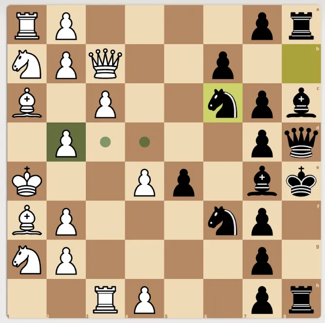
Taşa göre hamle işaretleri
Move markers shaped by the piece
Bir taş seçilince platformlar gidebileceği kareleri her taş için aynı noktayla gösteriyor.
Nokta taşın nereye gidebildiğini söylüyor, nasıl gittiğini söylemiyor. Oysa bu fark kuralın
kendisi: filin ve kalenin yolu kapatılabilir, atınki kapatılamaz, çünkü at sıçrıyor. Aşağıdaki
üç tahta, işaret taşın karakterini taşıyınca bu farkın nasıl göründüğünü Chess.com renkleriyle
gösteriyor.
Fil çaprazlarına mızrak, kale düz yönlerine yamuk uçlu kalın bir ok uzatıyor; yol üstündeki
her karede küçük bir yumru var. Ok kendi taşına çarpınca önündeki son boş karede bitiyor, rakip
taşa varınca da yenen kareyi saran çembere değip duruyor. At sıçrayabildiği her karede bir nal
izi bırakıyor; vezir ise kalenin ve filin oklarını birlikte taşıyor. Nokta yalnızca bir yeri
işaret ediyor; mızrak, ok ve nal izi ise hareketin kendisini gözde canlandırıyor, hayal gücüne
ve sezgiye çok daha fazla hitap ediyor. Döndürme gibi bu da bir kural değişikliği değil, bir
bakış seçeneği.
When a piece is selected, the platforms mark the squares it can go to with the same dot for
every piece. A dot says where a piece can go, not how it gets there. Yet that difference is the
rule itself: a bishop's or a rook's path can be blocked, a knight's cannot, because the knight
jumps. The three boards below, in Chess.com's colours, show how the difference looks once the
marker carries the piece's character.
The bishop reaches along its diagonals with a spear, the rook along its lines with a thick,
trapezoid-tipped arrow; every square on the way carries a small bump. An arrow that meets one of
its own pieces ends on the last empty square; one that reaches an opponent's piece stops at the
ring around it. The knight leaves a hoof print on every square it can jump to, and the queen
carries the rook's arrows and the bishop's together. A dot only points at a place; a spear, an
arrow and a hoof print picture the move itself, and speak far more to imagination and
intuition. Like rotation, this is not a change of rules but a way of looking.
Fil — mızrakBishop — spear
Kale — yamuk uçlu okRook — trapezoid-tipped arrow
At — toynak iziKnight — hoof print
Kullanıcıya özel tema
A theme of your own
Platformlar geniş bir seçenek sunuyor: taş takımları, tahta renkleri, üç boyutlu
görünümler, özel günlere göre temalar. Ama hepsi hazır, platformun seçip sunduğu temalar.
Kendi çizdiğin taşları ya da tahtayı kullanmak bugün ancak tarayıcı eklentileriyle mümkün;
tam da bunun için yazılmış eklentilerin çokluğu talebin gerçek olduğunu gösteriyor.
Oyuncular kendi yaratıcılığını konuşturabilmeli: kendi temasını üretip kullanabilmeli,
forumlarda başkalarıyla paylaşabilmeli. Yerleşik bir destek olsa tema hesaba bağlı kalır,
tarayıcıda da telefonda da aynı görünür.
Aşağıdaki görsel bir ekran teması değil, Yüzüklerin Efendisi konseptiyle yapılmış gerçek,
fiziksel bir satranç takımı. Ama aynı fikri anlatıyor: tahta ve taşlar yaratıcılıkla ne kadar
farklı yorumlanırsa, ortaya o kadar güzel, sanatsal ve fantastik işler çıkabiliyor. Bunların
hiçbiri satrancın kuralına ya da işleyişine dokunmuyor; oyuna yalnızca renk ve boyut
katıyor.
İşin bir erişilebilirlik tarafı da var: renk körlüğü, az görme ya da yüksek kontrast
ihtiyacı olan biri kendi rahat okuyabildiği taşları ve kare renklerini kurabilir. Tema
yalnızca sahibinin ekranında geçerli olduğu için oyunun adilliğine de dokunmuyor; rakip her
zaman kendi seçtiği görünümü görür.
The platforms offer a wide choice: piece sets, board colours, 3D views, themes for special
days. But they are all ready-made, themes the platform picks and hands out. Using pieces or a
board you drew yourself is possible today only through browser extensions; the number of
extensions written for exactly this shows the demand is real. Players should be able to put
their own creativity to work: make a theme of their own, use it, and share it with others on
the forums. With built-in support the theme would stay with the account and look the same in
the browser and on the phone.
The image below is not a screen theme but a real, physical chess set made on a Lord of the
Rings concept. It makes the same point, though: the more creatively the board and pieces are
interpreted, the more beautiful, artistic and fantastic the work that can come of it. None of
this touches the rules of chess or how the game works; it only adds colour and depth.
There is an accessibility side too: someone with colour blindness, low vision or a need
for high contrast could build pieces and square colours they can read comfortably. Because a
theme applies only on its owner's screen, it does not touch the fairness of the game either;
the opponent always sees the look they chose.
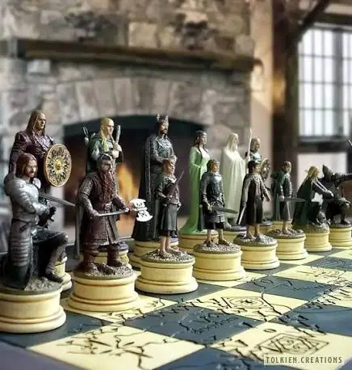
Görsel: Tolkien.CreationsImage: Tolkien.Creations
Geleceğin Şampiyonu
The Champion of the Future
GM Yağız Kaan ERDOĞMUŞ (D. 3 Haziran 2011) – 2731 rating